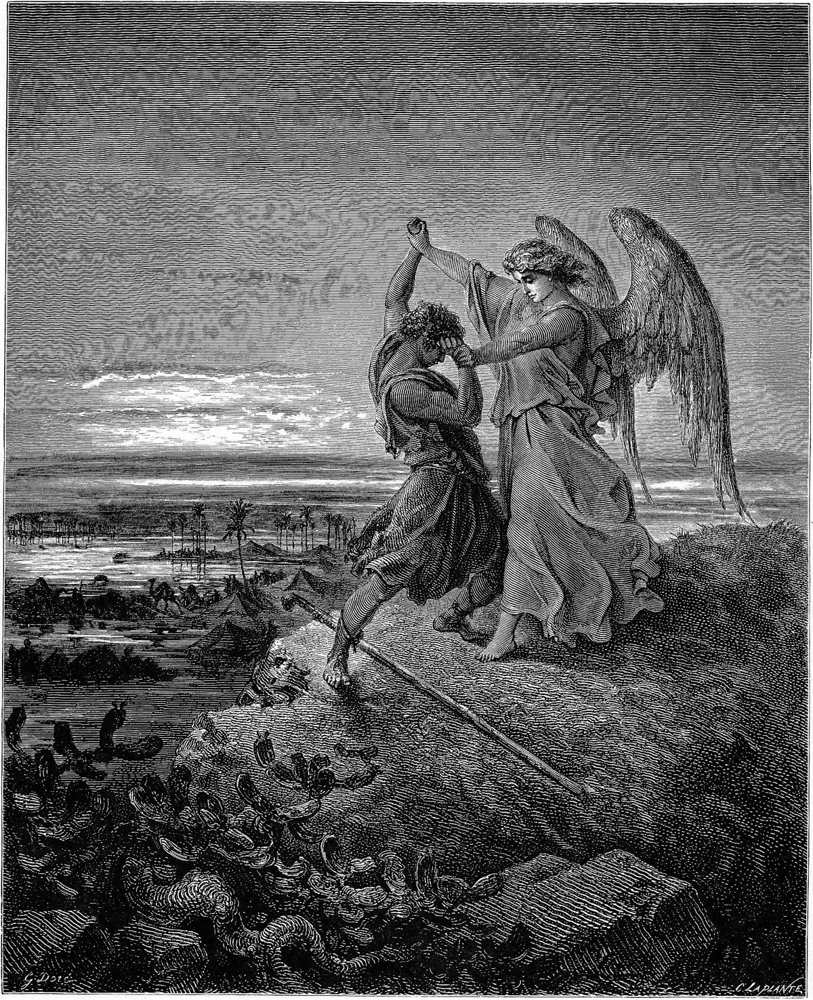
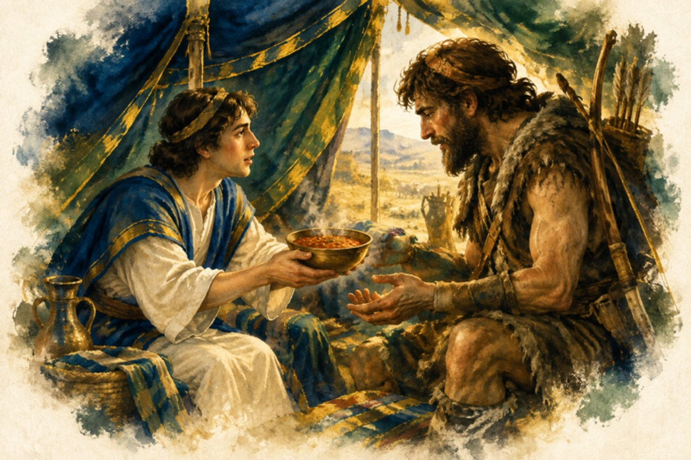

이 책은 이재선 목사가 1998년부터 2021년까지 동산교회·새창교회·새암교회 강단에서 창세기 25–50장을 본문으로 전한 설교 39편을 성경의 장 차례대로 엮은 것입니다.
설교마다 제목 밑에 본문 말씀을 개역한글판으로 실었습니다. 설교 원고는 고치지 않고 그대로 실었습니다.
각 부의 그림은 귀스타브 도레(Gustave Doré, 1832–1883)의 성경 판화이고, 장마다 넣은 수채화는 캔바 AI로 그렸습니다.

귀스타브 도레, 「천사와 씨름하는 야곱」
제3부이삭과 야곱 — 씨름하여 이긴 사람

창세기25장
아이들은 낳은 사람을 닮는게 아니라 가르친 사람을 닮는다
본문 · 창세기 25:27
27그 아이들이 장성하매 에서는 익숙한 사냥군인고로 들사람이 되고 야곱은 종용한 사람인고로 장막에 거하니
*철이 철을 날카롭게 하듯이 랍비는 한 절을 가지고 토론을 한다. 학생들이, 아버지와 아들이 토론한다. 아니 논쟁을 한다.
*어머니, 아버지는 애가 물을 엎지르고, 또 엎지러도 화를 안낸다. 안식이기 때문이다. 그러나 교회는 당회 때 엄청 싸운다.
*에서는 들사람, 야곱은 장막에서 길들인 자로 나온다. (창 25:27) 그 아이들이 장성하매 에서는 익숙한 사냥꾼인고로 들사람이 되고 야곱은 종용한 사람인고로 장막에 거하니 기독교인들이 식당에 가면 가장 버릇이 없다. 대안학교 교장님이 말하기를 그 중에서 가장 못된 아이들이 목사님의 아이들이다. 특히 큰 교회 목사님의 아이들이다. 결국 들사람을 만든 것이다. 장막은 성전이다. 여호와의 율례로 길들인자로 만들어야 한다.
*유대인 교수들은 답을 안준다. 예수님이 유대인이라 질문을 한다. 소크라테스도 질문법으로 교육을 했다. 무슨 문제든 질문을 많이 해야 된다. 우물가의 여인도 하찮은 여인에게도 계속 질문은 한다. 나중에 그 여인이 당신이 메시야이군요 하고 알 때까지 질문을 한다. 유대인의 교육은 질문과 답변이다. 아이를 멍청이로 키우고 싶으면 학원에 보내라, 골든 벨같은 교육이 가장 저급한 교육이다. 단답형교육!
1차원, 2차원, 3차원, 4차원 교육의 마지막 교육이 지혜교육이다. 유대인이 러시아에 피신했다가 영주권 없는 친구와 같이 가다가 잡힐 것 같으니까 영주권 있는 친구가 갑자기 뛰었다. 나중에 잡히고 나서 왜 뛰었냐? 의사가 밥 먹고 30분 동안 뛰라고 했다. 그 동안 영주권 없는 친구는 피했다. 이게 지혜다. 수용소에서 닭을 훔친 사람이 누구냐? 말을 안 하니 죽였고 누군지 말하라 나는 안다. 저 죽은 사람이다. 그래서 다 살았다.
4차원
WISDOM
3차원
SHREWD(뱀같이 지혜)
2차원
IQ교육(Q&A, Debate)
1차원
SCHOOL 교육
지혜교육에 80% 투자하고, 1차원 교육에 20% 투자한다.
한국은 1차원 교육에 120% 투자한다.
*여자는 연약한 그릇이다. 살살 다뤄야 한다. 깨질까 조심해야 한다. 부인과 대화할 때는 부드럽게 배용준처럼 해야 한다. 전두환처럼 해서는 안 된다. 잠자리할 때는 더욱 그러하다.
*아버지가 아이들을 교육했을 때 어떤 유익이 있는가? 어떤 훌륭한 교수에게 어떻게 잘 마칠 수 있었는가? 할아버지가 어려서 학교에 갔다오면 어깨에 손을 얻고 할아버지는 신식교육을 못 받아서 그런데 학교에서 배운 것을 말해줄래? 뒷동산에 올라가서 복습을 하고 왔다. 그리고 1등을 놓친적이 없다. 목사들이 성경을 가르쳤기 때문이다. 영어교육은 할머니를 가르치라 그러면 된다. 유대인들 중에 선생님이 많다. 애들을 가르치기 위해 선생을 한다. 목사들의 성경의 무식은 성도들의 성경 무식이다. 유대인들이 똑똑하니까 랍비들이 똑똑한 것이다. 아버지가 변하면 아이들이 TV안보고 공부한다. 아버지는 제사장 역할을 할 수 있게 된다. 아버지는 집에 오자마자 텔레비전을 켠다. 교육은 엄마에게 맡기고.... 현교수님의 아이들이 아버지에게 감사하는데 아버지는 공부하고, 엄마는 일하고 그래서 아이들이 공부를 잘하고, 담배를 안 피우고 성실하다. 아버지가 텔레비전 켜고, 담배만 피워서 교육이 되겠는가?
*가족에게 용서를 빌라! 애들에게 성경을 가르쳐라! 중고등학교 때 가르쳐도 되었다. 가르칠 때 질문을 하고 대답을 하게 했다. 아내에게 부드럽게 대하기 시작했다. 아내를 좋은 곳에 데리고 다니기 시작했다. 옛날에는 데리고 다녔는데 지금은 모시고 다닌다. 남의 가족에게는 잘하고 자기 가족에게 못하는 것은 나쁜 일이다. 교인은 떠나도 아내와 가족은 남는다. 결국 우리는 행복을 가정 밖에서가 아니라 가정 안에서 찾아야 한다. 가정이 천국이다. 내가 변해서 가정이 천국이 된것처럼 하라.
본성이 간사함...................창25:31-33 속임수에 능함...................창27:18,29 자신의 죄과를 거둠..............창27:42,43 재난의 형벌을 받음...........창37:28,42:36
3. 선천적 결함을 이겨낸자
태어나기를 차남으로 태어남
여성스러움: 리브가의 사랑을 받음..........창25:27,28 선천적으로 야비하고 술수에 강한 사람
따라서 고난도 많았음.
딸 디나의 일로 걱정함.........창34:1-31 요셉이 죽은 줄 알고 애통해 함-창37:32-35 양식을 구하러 애굽으로 아들들을 보냄 ..........창42:1-5 베냐민도 함께 가는 것을 허락함-창43:1-15 요셉의 소식을 듣고 기운을 회복-창45:25-28 가족과 함께 애굽으로 감........창46:1-27 요셉과 만남....................창46:28-34 애굽왕 바로를 만남.............창47:7-12 요셉에게 조상의 땅에 자기를 장사할 것을 맹세시킴.....................창47:28-31 애굽에서 죽는 신세, 고향을 떠나 죽고, 다음 정착지인 가나안에서도 죽지 못하는 처량한 신세
4. 신앙의 열정이 있음, 복에 대한 갈망하는 마음이 있음
벧엘에서 하나님께 서원함......창28:20-22 형 에서에게 소식을 보냄.......창32:3-8 형과의 일로 간절히 기도함.....창32:9-12 에서에게 선물을 앞서 보냄.....창32:13-21 얍복강가에서 천사와 씨름함....창32:22-32
호12:3,4
형 에서와 화해함..............창33:1-16
5. 하나님의 사랑을 받은 자
약한자를 들어 쓰시는 하나님의 선택함으로 복받고 쓰임받은자, 내가 바로 야곱처럼 못나고, 죄도 많고, 결함이 많은 자이지만 사랑받은 최고의 복을 받은자
도중 자다가 꿈에 사닥다리를 봄-창28:10-19 하나님의 사자들을 만남........창32:1,2 신앙적임, 근면함.......창28:10,20,21,31:40 기도의 사람, 믿음의 사람.........창32:9-23
창24:30,히11:21
야곱의 생애중 최대의 사건은 얍복나루터에서 하나님과 만나는 사건입니다. 하나님을 만날 때 최대의 사건이 일어납니다. 야곱이 벧엘에서 하나님을 만나는 체험이 있습니다. 여기서는 꿈에서 만납니다. 잠든 상태에서 만납니다. 꿈에 하나님의 음성을 듣고 하나님을 만납니다. 그러나 얍복나루터에서는 생시에 하나님을 만납니다. 그러므로 야곱은 이 자리에서 최대의 축복을 받습니다.
첫째, 야곱은 홀로 남았습니다.
23절 야곱은 밤에 일어나 두 아내와 두 여종과 열한 아들을 인도하여 시내를 건너며 소유를 건네고 야곱이 홀로 남았더니, 야곱은 홀로 남았다는 것입니다. 왜 야곱이 혼자 남았습니까? 야곱이 홀로 있는 순간에 하나님은 야곱을 만나 주십니다. 인간이 홀로 남을 수 있는 자리에서 하나님을 만날 수 있고 최고의 은혜를 받을 수 있습니다. 어떤 사람은 병들어 병상에서 자기 홀로 남는 자리에서, 어떤 사람은 배신을 당하고 실패하고 버림을 당하고서야 이 자리에 서게 됩니다.
하나님은 사랑하는 자에게는 반드시 이런 자리로 몰아갑니다. 아브라함은 본토 친척, 아비집을 떠나게 합니다. 자기 조카 룻도 건넵니다. 하갈과 이스마엘은 건넵니다. 모리아산에서 홀로 남았더니 이 자리에서 만납니다. 모세는 바로 궁궐을 떠나게 하십니다. 미디안 광야로 가게 하십니다. 그는 애굽의 부귀와 영화를 다 건너가게 합니다. 그리고 호렙산에서 홀로 남습니다. 여기서 하나님을 만나게 됩니다.
둘째, 야곱의 환도뼈가 위골되었습니다.
야곱은 지금까지 인간과 겨루어 이겨 왔습니다. 야곱은 형의 발꿈치를 잡고 나와 남을 넘어뜨리고 살아 왔습니다. 야곱과 씨름하면 다 넘어지고 말았습니다. 야곱은 형을 넘어뜨리고 복을 빼앗고, 아버지를 속여서 축복을 받고, 외삼촌도 넘어뜨리고 모든 복을 뺏는 자였습니다. 이제 씨름 대상이 달라졌습니다. 인간이 아니고 하나님이십니다. 이제는 하나님이 먼저 씨름을 시작하고 걸은 것입니다. 밤새도록 씨름하였으나 야곱이 이길 수가 없었습니다. 야곱이 이기지 못함을 보고 야곱의 환도뼈를 치매 야곱의 환도뼈가 그 사람과 씨름할 때 위골되었습니다.(25절)
환도뼈가 위골되므로 절게 되었고 절뚝거렸습니다. 이제 남을 넘어뜨리는 힘을 쓸 수가 없었습니다. 여기서 야곱은 무능한자가 됩니다. 이제 자기 힘으로 겨룰 수가 없어 야곱은 그 사람을 붙잡게 된 것입니다. 야곱을 눕히지 않고서는 하나님의 사람으로 쓸 수가 없습니다. 이제 나는 하나님 한분밖에 의지할 분이 없다. 하나님을 붙잡고 주 없이는 못산다. 하나님의 축복없이 못산다는 경험에 이르게 한 것입니다.
셋째, 야곱은 그 이름이 이스라엘로 바꾸어집니다.
27절에 그 사람이 그에게 이르되 네 이름이 무엇이냐? 그 사람이 가로되 네 이름을 다시는 야곱이라 부를 것이 아니요, 이스라엘이라 부를 것이니 이는 네가 하나님과 사람으로 더불어 겨루어 이기었음이라 하시니라. 여기에서 이스라엘 민족의 이름이 생겨난 것입니다. 야곱은 제멋대로 사는 신자입니다. 이스라엘은 하나님의 뜻대로 사는 신자입니다. 야곱은 육신에 속한 신자요, 이스라엘은 신령한 신자입니다. 야곱은 하나님의 축복을 자기 힘으로 얻어내고 하나님은 도와주시는 분으로 생각했습니다. 그러나 이제 야곱은 하나님이 주인이시요, 하나님을 붙들고 살아가고 다스림을 받는 이스라엘이 된 것입니다. 야곱은 복을 사람으로부터 뺏는자요, 이스라엘은 복을 하나님으로부터 받는 자입니다. 야곱은 사람과 겨루어 이긴 자였으나, 이스라엘은 하나님을 대면한 자입니다. 삶이 사나 죽으나 오직 하나님께 소망을 두고 사는 자는 하나님을 대면한 이스라엘의 삶이 됩니다.
야곱의 기도는 위기의 기도
자신의 범죄로 위기를 자초했지만 그 위험을 기도로 돌파함 자신의 모든 죄와 환경의 문제를 하나님께 의뢰함으로 풀어감 급하고 위험하기에 절대 절명의 기도를 드림 나의 죄도, 나의 고난도, 나의 핍박의 환경도, 나의 가정적 핸디캡도, 나의 선천적 장애나 결함도 결코 문제가 안됨, 모두 하나님께 생명을 걸고 기도하면 다 해결됨의 모본, 대표적 인물
오늘 드라마를 보면서 마귀는 우리에게 쾌락과 더 잘먹고 잘 사는 것, 소유하는 것을 위해 살라고 유혹함을 알 수 있습니다. 그러나 사람은 그렇게 지은 받은 존재가 아닙니다.
지난 목요일 기도원에 가서 예전에 같이 모시던 목사님을 만났습니다. 그 때 같이 사역하던 여전도사님의 연락처를 알게되어 궁금하여 전화통화를 했습니다. 지금은 홍성에서 양계장을 하는데 약 7만마리의 닭을 키운다고 합니다. 엄청 많이 키우는 것 같습니다. 돈도 많이 벌겠지요. 힘은 좀 들겠지만 부족한 것 없이 살고 있는 것 같습니다. 그런데 대화속에서 정말로 행복하지는 않다는 것이었습니다. 그럴수 밖에 없지요. 영혼구원의 사명을 받은 사람이, 제자 키우겠다고 했던 사람이 닭만 키우고 있으니 얼마나 답답하겠습니니까? 그래서 제가 힘을 내라, 그리고 도전해라. 남편에게 비전을 심어라, 교회에서 이 비전으로 살아라. 안되면 금식이라고 하고, 죽을 각오로 한 번 해보라고 했습니다. 그랬더니 저하고 통화하면 분명 혼날줄 알았다고 하면서도 좋아했습니다. 그분의 속에 가득차 있는 비전, 그분의 가슴 속에 깊이깊이 담겨져 있는 비전을 알려주니 기뻐했습니다. 사랑하는 성도 여러분! 여러분들의 비전은 무엇입니까?
오늘 본문의 야곱과 에서도 현실만족에 머물라고 지은 받은 존재가 아니었습니다. 그러나 에서는 망설임없이 세상에 빠졌고, 야곱은 인간적인 방법까지 동원하면서까지 하나님이 주신 것을 향하여 달려 갔습니다. 그렇다면 야곱이 무엇을 위해 달려갔는지, 또 에서는 무엇을 위해 살았는지 알아보겠습니다.
1. 에서의 삶의 목표
에서는 오늘 본문에서 나오듯이 장자권을 팥죽 한 그릇에 한 번도 고민도 없이 팔아 넘깁니다. 이 장자권은 단순히 차자보다 두 배의 재산을 받고, 모든 가문의 권세를 누리는 상속자 이상의 의미가 있는 것입니다. 이 장자권은 하나님의 선민이 되는 의미입니다. 하나님의 백성을 만들어가는 사명을 받는 것입니다. 하나님을 섬기는 예배민족을 만드는 것을 말합니다.
고대역사를 보면 노아가 야벳, 함, 셈을 낳았는데 함은 아비를 존경치 아니하고 무시하고 조롱함으로 저주를 받습니다. 그후에 함의 자손중 창10:6-10절에보면 가나안 족속이 나오고, 니므롯이 나옵니다. 가나안은 우상숭배의 본거지를 만들고, 우상숭배에 앞장서는 죄악된 민족이 됩니다. 그 중에 가장 극심하게 하나님을 대적하고 우상을 숭배한 사람이 니므롯입니다.
(창 10:6) 함의 아들은 구스와 미스라임과 붓과 가나안이요
(창 10:7) 구스의 아들은 스바와 하윌라와 삽다와 라아마와 삽드가요 라아마의 아들은 스바와 드단이며
(창 10:8) 구스가 또 니므롯을 낳았으니 그는 세상에 처음 영걸이라
(창 10:9) 그가 여호와 앞에서 특이한 사냥꾼이 되었으므로 속담에 이르기를 아무는 여호와 앞에 니므롯 같은 특이한 사냥꾼이로다 하더라
(창 10:10) 그의 나라는 시날 땅의 바벨과 에렉과 악갓과 갈레에서 시작되었으며
(창 10:11) 그가 그 땅에서 앗수르로 나아가 니느웨와 르호보딜과 갈라와
니므롯이 쌓은 성이 바벨탑입니다.
(창 11:3) 서로 말하되 자, 벽돌을 만들어 견고히 굽자 하고 이에 벽돌로 돌을 대신하며 역청으로 진흙을 대신하고
(창 11:4) 또 말하되 자, 성과 대를 쌓아 대 꼭대기를 하늘에 닿게 하여 우리 이름을 내고 온 지면에 흩어짐을 면하자 하였더니
이 바벨탑을 쌓은 재료는 벽돌이었습니다. 원래 하나님은 단을 쌓을 때 돌을 깍거나 다듬지 말고, 본래 모습 그대로 단을 쌓으라고 하였습니다. 니므롯은 그것을 무시했습니다. 또한 하늘에 닿게 높이 쌓자고 합니다. 즉 자신들이 하나님을 대항해서 하나님처럼 될 수 있다는 생각을 드러낸 것입니다. 아담과 하와가 뱀에게 속을 때 드러낸 속샘을 그대로 또 드러내고 있는 것입니다. 그러면서 자신들의 이름을 내자고 합니다. 즉 인간의 위대함, 인간의 능력을 드러내어 하나님을 기억하지 못하게 하자는 것입니다. 그리고는 흩어지지 말고 이 곳, 한 곳에 모여서 하나님을 대적하는 민족을 형성하고 같이 살자는 것입니다.
그 모습을 보고 너무너무 한심하여 하나님이 할 수 없이 내려오셔서, 언어를 흩으시고, 강제 해산시킨 것입니다. 흩어져 살고 있던 셈의 4대손 벨렉을 거쳐 8대손 데라를 거쳐 아브라함을 낳았습니다. 아브라함의 조상들도 바벨탑을 쌓다가 변질된 신앙으로 징계를 받고 지금의 이라크, 고대의 바벨론, 즉 바벨탑을 쌓았던 곳에 살고 있었습니다. 그러던 중 하나님의 강권적인 역사로 아브라함을 부르시고, 본토 친척 아비 집을 떠나라고 합니다. 왜? 우상숭배의 민족을 떠나라는 것입니다. 떠나서 하나님의 민족을 만들라는 것입니다. 하나님을 잘 믿는 민족을 많이 만들라는 것이었습니다. 그런데 에서는 이런 비전은 전혀 관심없고 오직 팥죽, 떡, 사냥에만 관심이 있었습니다. 하나님의 진정한 삶의 뜻을 모른 것입니다.
에서의 후손 에돔족은 세일지역에서 창대하게 번성하였으며 그 지역의 원주민이 되었습니다(신1:8,9,19). 그러므로 세일산을 에서의 산이라 부르기도 했습니다.
에서는 세일에서, 그저 살기 좋은 곳에서, 그저 가기 편한 곳에서, 그저 작먹고 잘 사는 곳을 택하여 살았습니다. 그러나 믿는 성도들은 잘먹고 잘사는 것보다 잘 믿고, 잘 예배하고, 잘 섬기는 곳을 찾아갑니다.
(창 26:34) 에서가 사십 세에 헷 족속 브에리의 딸 유딧과 헷 족속 엘론의 딸 바스맛을 아내로 취하였더니
그는 성장한 후 헷족속 브에리의 딸 유딧과 헷족속 엘론의 딸 바스맛을 아내로 맞이한 탓으로 스스로 이스라엘 족장의 계열에서 벗어나서 에돔족속의 조상이 되었다. 에서는 두 여인과 혼인했는데 둘 다 헷 족속, 즉 함의 후예 구스, 구스의 후예 니므롯, 니므롯의 후예 헷 족속과 결혼을 하게 됩니다. 즉 결혼에 있어서도 어떻게 해서든 믿는 백성과 결혼하고, 믿는 자손을 낳아서, 믿는 사람들을 많이 만들려는 생각은 전혀 없었던 것입니다.
에서에게서 모세를 대적하여 광야를 지나가지 못하게 막았던 아말렉이 에서의 자손입니다. 하나님의 백성을 만드는데 하여튼 못된짓만 골라서 하는 민족이 되고 만 것입니다.
(옵 1:18) 야곱 족속은 불이 될 것이요 요셉 족속은 불꽃이 될 것이며 에서 족속은 초개가 될 것이라 그들이 그의 위에 붙어서 그를 사를 것인즉 에서 족속에 남은 자가 없으리니 이는 여호와께서 말씀하셨음이니라
오바댜에서는 에서의 후손을 하나님이 초개같이 살라서 남은 자가 없게 될 것이라 하였습니다. 실제로 그 민족은 없어지고 말았습니다.
사랑하는 성도 여러분! 우리에게 어떻게 살라고 하십니까? 무엇을 위해 살라고 하십니까? 에서처럼 먹고, 살고, 죽고, 그것도 잘 먹고, 잘 살고, 잘 죽으라고 보내셨을까요? 요즘은 죽는 것도 레벨이 있습니다. 장례식장도 작은 병원에서부터, 큰 병원의 장례식장, 호화장례식장까지 다양합니다. 하나님은 이렇게 단순히 먹고 살라고 보내신 것이 아닙니다. 하나님을 잘 믿으라고 보내셨습니다. 또한 하나님을 잘 섬기는 민족을 만들라고 보내신 것입니다. 그런데 에서는 이것에는 전혀 관심이 없었습니다. 그러니 그 민족은 쇠퇴할 수 밖에 없었습니다. 나라가, 민족이 사는 방법은 하나님의 뜻을 실행하는 것입니다.
그리고 에서를 변호한다면 그는 한마디로 말해서 멋있고 인간미 넘치는 사나이다운 사나이었다. 검소하고 소박하며 광야와 산길을 타고다니면서 단련한 건강한 체구를 가진 남성으로서 그는 결코 야곱처럼 약삭빠른 사람은 아니었는듯 하다. 즉 잘생기고, 남자답고, 돈도 잘벌고, 사람도 잘 사귀고, 메너도 좋고, 유머도 있으며, 화끈하게 돈도 잘쓰고, 예의도 발라서 어른들에게 잘하는 그런 사람이었습니다.
그러나 에서의 결정적 오류는 그 중요한 장자의 명분을 값싼 죽 한그릇과 바꾸어 먹었다는 사실에 있다. 즉 에서는 그에게 부여된 생의 기본권리를 존중하고 그 가치의 존귀함을 인정하는 신앙보다 순간적 욕구충족에 너무 집착했기 때문에 하나님의 은총과 축복을 동생에게 넘겨주고 말았다는 것이다. 더 중요한 것은 하나님을 섬기고 예배하는 민족을 만들라는 사명을 팽개쳐버리고 눈에 보이는 욕심만 채우다가 버림받았다는 것입니다. 여기에서 우리는 인간 삶에 있어서 빵은 삶의 수단에 불과하며 하나님의 장자됨의 권리는 너무나 존귀하고 거룩하다는 것을 알 수 있다.
2. 야곱의 삶의 비전
목요일 기도원에 가서 산책하면서 기도하였습니다. 얼마나 추웠습니까? 산에서 내려오는 물도 꽁꽁 얼었더라구요. 그런데 그 두꺼운 얼음 밑으로 물이 졸졸 흐르더라구요. 저 물이 강을 거쳐 바라를 향해 가야하는 비전이 있기에, 살아 있기에 저 추위를 뚫고, 두꺼운 얼음을 뚫고 내려가는구나? 맞다 우리도 살아있는 것은 아무리 장애물이 있어도 앞으로 전진하는구나 조금더 내려가다 보니까 큰 은행나무가 있는데 그 옆으로 조그만 나무가 나오는데 옆으로 나오더라구요. 줄기가 나와서 다시 하늘을 향해 가지들이 올라오는 것을 보았습니다. 저 나무도 살아 있으니까 어떻게 해서든 하늘을 향해 올라가려고 몸부림을 치는구나.
우리가 살아 있습니까? 우리에게는 가야할 곳이 있습니다. 물이 강을 거쳐 바다로 가야하듯, 은행나무가 그 가지를 하늘을 향해 뻗어야 하듯 우리는 비전을 향해 가야합니다. 가족, 친지, 보정동, 대한민국, 세계를 향해 가야 합니다. 이것은 우리의 운명입니다.
그렇다면 야곱의 비전은 무엇이었습니까?
(창 25:22) 아이들이 그의 태 속에서 서로 싸우는지라 그가 가로되 이같으면 내가 어찌할꼬 하고 가서 여호와께 묻자온대
(창 25:23) 여호와께서 그에게 이르시되 두 국민이 네 태중에 있구나 두 민족이 네 복중에서부터 나누이리라 이 족속이 저 족속보다 강하겠고 큰 자는 어린 자를 섬기리라 하셨더라
리브가가 임신을 했습니다. 그런데 쌍동이 애들이 뱃속에서부터 얼마나 싸우는지 감당할 수가 없었습니다. 그래서 하나님께 하소연을 하니 작은 아들놈이 더 큰 놈이 되고, 큰 아들이 작은 아들을 섬기게 될 것이라고 말씀해 주신 것입니다. 그래서 리브가는 작은 놈에게 모든 정성을 다 쏟았습니다.
(창 25:27) 그 아이들이 장성하매 에서는 익숙한 사냥꾼인고로 들사람이 되고 야곱은 종용한 사람인고로 장막에 거하니
(창 25:28) 이삭은 에서의 사냥한 고기를 좋아하므로 그를 사랑하고 리브가는 야곱을 사랑하였더라
이삭은 에서를 사랑하고, 리브가는 야곱을 사랑했습니다. 왜냐하면 이삭은 리브가가 한 말을 믿지를 않았습니다. 오직 먼저난 장자 에서가 대를 이어서 아브라함에게, 또 자신에게 주신 사명 하나님을 잘 섬기는 큰 민족을 이루리라 생각을 했습니다. 그래서 마지막 축복도 큰 아들 에서에게 주려고 했던 것입니다. 그리고 남자로서 남자다운 에서가 마음에 들었고, 미식가, 탐식가였던 이삭은 사냥을 해서 늘 맛있게 해주는 큰 아들 에서가 마음에 들었던 것입니다. 그러나 실제로는 그 사명을 이미 하나님은 야곱에게 주었고, 야곱은 이 비전에 사로잡혀 사는 사람이었습니다. 그래서 장자권을 그토록 가지려고 했고, 축복권도 차치하려고 했던 것입니다.
장자권, 축복권은 단순한 잘먹고, 잘 사는 것이 결코 아닙니다. 이 권세는 하나님의 백성을 만드는 비전입니다. 잘 되고, 번성하고, 축복받는 것은 단순히 수단에 불과한 것입니다. 하나님을 믿는 민족을 만드는 비전을 가진 자에게 주시는 부스러기에 불과한 것입니다. 일산에서 어떤 고객이 수백억 저축했더니 사은품으로 외제차를 주었다는데, 비전을 위해 우리를 천국에 저축하면 사은품으로 나오는게 건강, 물질, 가정행복 입니다.
야곱이 굳이 외삼촌 라반에까지 가서 부인을 선택한 것은 중요한 이유가 있었습니다. 함족속, 가나안 족속, 니므롯 족속, 헷족속의 후예하고 결혼한 에서와는 달리 셈계 후손인 히브리민족인 아브라함의 후손 중에서 즉, 하나님을 잘 믿는 민족 중에서 아내를 선택하기 위해 그곳까지 간 것입니다. 사실 간게 아니고 하나님이 인도하셨지요. 왜냐하면 에서한테 장자권, 축복권 다 빼앗고 형이 무서워서 도망가야 했고, 어머니 리브가가 가르쳐준 대로 외삼촌집에 간 것입니다.
야곱은 하나님을 믿는 사람과 결혼하고, 하나님을 믿는 백성들을 만들기 위해 산 사람입니다. 우리도 결혼 자체가 목적이 아닙니다. 하나님을 믿는 백성들을, 가문을 만들기 위해 노력해야 하는 것입니다. 잘사는 가문을, 성공한 가문을 만드는게 목적이 아닙니다. 하나님을 잘 섬기고, 잘 예배하는 가문을 만드는게 목적입니다.
하나님은 야곱에게 큰 민족을 이루라고 하였습니다. 그것도 하늘의 별처럼, 바다의 모래처럼 많이 만들라는 것입니다. 이것이 아브라함의 비전, 이삭의 비전, 야곱의 비전이었습니다. 야곱은 할아버지 아브라함, 아버지 이삭에게 하나님이 주신 비전에 동참하였습니다. 이 비전을 위해 야곱은 달려 갔습니다. 단순히 많은 민족이 아니라 하나님을 잘 믿는 민족을 많이 만드는 것입니다. 애를 많이 낳아서라도 많이 만들어야 합니다. 세계적으로 애를 안 낳아서 걱정입니다. 프랑스가 출산률 최저에서, 유럽 최고로 뛰어 올랐다고 합니다. 프랑스, 영국 등에서 흑인, 아시아인 등을 만이 만납니다. 그래서 축구 선수도 프랑스 선수인데 지단같이 흑인이 득세하지 않습니까? 자국의 국력을 키우기 위해서 애를 많이 낳는 출산 장려책을 쓰고 있습니다. 마찬가지고 교회도 믿는 사람들을 더 많이 만들고, 그 세력을 강하게 하기 위해서는 애라도 많이 낳아야 합니다. 그래서 어떤 교회에서는 애를 많이 낳으면 여러 혜택을 준다고 합니다. 출산장려금, 장학금, 유치원비, 양육비 등을 지원한다고 합니다. 아주 바람직한 일입니다. 우리도 형편이 좋아지면 꼭 할 것입니다. 지금 도전해 보세요.
그래서 야곱은 12자녀에게 하나님을 섬길 것을 가르쳤으며, 손수 모범을 보였습니다. 즉 제단을 늘 쌓았습니다. 십일조를 드려서 모든 것이 하나님이 주신 것을 알게 하였습니다. 약속의 땅 가나안을 지키고, 죽어서도 돌아 올 것을 유언했습니다. 즉 가나안 땅에 묻어달라고 하였습니다. 요셉 역시 그렇게 하였습니다. 그래서 애굽에 있으면서도 하나님을 섬기는 민족이었고, 결국 모세를 통해 다시 가나안으로 와서 하나님을 섬기고 예배하는 민족을 이어갔습니다. 그리고 후에 사울, 다윗, 솔로몬 등의 왕을 통해 많은 민족을 형성하게 된 것입니다.
에서의 비전은 잘먹고 잘 사는 것이었습니다. 야곱의 비전은 하나님을 잘 섬기는 것이었습니다. 에서는 잘 먹고, 잘 사는 민족을 만드는 것이었습니다. 야곱은 하나님을 잘 믿고, 잘 섬기는 민족을 만드는 것이었습니다. 에서의 비전은 부자되고, 강한 민족을 만드는 것이었습니다. 야곱의 비전은 하나님을 기쁘게 하고, 예배하는 민족을 많이 만드는게 비전이었습니다. 에서와 같은 목표를 삼은 사람들이 일본과 같은 나라가 아닌가 생각합니다. 일본이 왜 잘사는가? 인간적인 목적, 잘먹고 잘살고, 그러다가 잘 죽는게 목적인 나라의, 민족의 대표적 케이스라 볼 수 있습니다.
혹시 제게 이렇게 반문하실지 모르겠습니다. 제 코가 석자인데 무슨 비전입니까? 지금 먹고 살기도 힘든데, 이자도 못내는데, 애들 학원도 못 보내는데 맞습니다. 그래서 우리는 형편이 좀 나아지면 그 때 비전을 생각하고, 보정동 복음화, 열린모임, 세계복음화도 생각하겠습니다. 그런데 신앙은 순서라는 것을 잊어서는 안됩니다. 이 비전을 향해 나아갈 때 풀어주시는 것입니다. 이 순서가 안 바뀌면 절대로 안됩니다. 혹시 되더라고 일본처럼됩니다.
야곱은 무조건 잘 사는게 목적이 아니라 하나님을 잘 섬기는 것입니다. 잘 섬기면 하나님이 경제도, 건강도, 민족의 융성함도 책임져 주십니다. 우리 민족의 비전은 바로 이것입니다. 우리 새암교회의 비전은 비로 이 세계복음화입니다. 이것을 위해 달려나가면 나머지는 다 책임지십니다. 다 알아서 해 주십니다. 할렐루야!
그렇다면 야곱의 비전은 믿는 민족의 번성이라면 우리의 비전은 무엇입니까? 그것은 복음으로 세상을 정복하는 것입니다. 하나님을 믿는 사람들을 만드는 것입니다. 열린모임을 통해서, 전도특공대를 통해서, 선교사님들을 통해서, 가족구원을 통해서 이것을 위해 우리는 오늘도 사는 것입니다. 이것이 아니면 우리는 살 이유가 없습니다. 우리가 살 이유는 텔레비전의 즐거움도, 성인잡지도, 학사모도, 좋은 집도, 골프외원권도 아닙니다. 하나님을 잘 섬기는, 하나님을 예배하는, 하나님이 주시는 은혜와 행복을 누리는 주의 백성을 만드는 것입니다.
지금도 마귀는 온갖 무기로 우리는 미혹하고 있습니다. 에서를 넘어뜨린 마귀의 술책은 동일합니다. 마귀의 힘은 여전합니다. 마귀의 간계함은 이겨내기 힘이 듭니다.
그러나 우리는 이겨내야만 합니다. 이것이 진정한 행복임을 우리는 압니다. 아니 경험했습니다. 이 하나님을 믿는 백성들을 만드는 것만이 우리의 비전입니다. 이 비전이 우리를 살게합니다. 우리가 사는 이유를 말해줍니다.
결 론
기도원에서 산책하면서 농가의 비닐하우스 창고를 보았습니다. 농기구, 농자재, 여러 물품들이 먼지가 -類欲�쌓여 있었습니다. 참 보기 안 좋았습니다. 갑자기 내 모습 같은 생각이 들었습니다. 요즘 애들이 찬양을 하지 말라고 난리입니다. 박자, 음정 다 틀리니까 하지말라는 것입니다. 그런데 생각해 봤습니다. 비록 먼지가 -類欲�앉아 있지만 깨끗이 닥고, 문 앞에 나와서, 주인이 눈에 제일 잘 띄는데서 있으면, 그리고 나도 농사를 짓는데 사용되고 싶습니다 하는 간절한 표정으로 주인을 바라본다면 반드시 써 줄 것 같습니다. 어떤 용도로든 쓸 것 같습니다.
우리도 하나님의 복음전파를 위해, 교회 부흥을 위해, 보정동 복음화를 위해 쓰임받고 싶다고 눈이 초롱초롱 빛나게 있다면 반드시 하나님이 쓰실 겁니다. 우리 교회도 하나님께 우리는 세계복음화를 위해 쓰임받기를 원합니다. 4*7의 비전으로 달려갑니다.하고 기도하면 크게 쓰실 것입니다. 생각만해도 행복합니다. 할렐루야!
그러기 위해서 몇가지 실천합시다.
1)내 가족부터 구원해야 합니다. 구원을 위해 기도하며 노력해야 합니다. 때로는 내가 참아야 합니다. 구원을 위해서...
2)자녀들의 신앙교육을 잘 시켜야 합니다. 교회학교에 출석을 잘 시켜야 합니다. 집에서 성경을 읽어주고, 먼저 엄마 아빠가 성경을 읽는 모습을 보여주어야 합니다.
3)우리 동네를 복음화 해야 합니다. 동네 분들 만날때마다 전도합시다. 지나다니면서 그냥 다니지 마시고 기도하면서 땅을 밟읍시다.
4)열린모임을 통해 지역을 장악합시다. 내 동네, 내 아파트, 내 직장, 내 가족.친지 등을 장악합시다. 열린모임을 꼭 참석합시다.
5)교회 부흥을 위해 목숨을 걸자. 교회가 부흥한다는 것은 곧 믿는 백성들이 많은 것입니다. 올 한 해 3명 이상 전도를 위해 전심전력합시다. 저도 꼭 해낼 것입니다.
6)세계선교에 목숨을 겁시다. 선교사님들을 위해 각 국가 및 선교사님을 맡은 셀에서 기도합시다. 관심을 가지고 위로하고, 격려하며, 후원합시다.
7)세계선교 현장을 봅시다. 지금 제자대학 졸업여행을 계획하고 있는데 현장을 보아야 실감이 나고, 더 강력하게 전할 수 있습니다.
8)이것도 저것도 안되면 애라도 납시다. 애를 많이 낳아서 믿는 자녀로 잘 키우면 이것도 전도입니다. 안믿는 사람들은 애를 덜 낳고 우리는 계속해서 많이 낳다보면 정복될 겁니다. 어떤 교회에서는 애 많이 낳으면 다양한 혜택을 준다는데 우리도 고려해 보아야 겠습니다.
그것을 발견한 곰은 먹음직스러운 먹이로 생각하고 다가와 발길질을 하면서 돌덩이를 잡으려고 한다.
그러면 돌덩이가 진자 운동을 한다.
앞으로 밀려갔던 돌덩이가 뒤로 되돌아올 때마다 곰을 때린다.
곰은 화가 나서 점점 더 세게 돌덩이를 때린다.
곰이 돌덩이를 더 세게 치면 칠수록 돌덩이는 더 큰 반동으로 곰을 후려 친다.
마침내 곰은 나가떨어진다.
곰은 <이 폭력의 악순환을 중단시킬 방법이 없을까?> 라는 생각을 할 줄 모른다.
그저 욕구를 충족시키지 못해 더욱 안달을 할 뿐이다.
<저놈이 나를 때렸겠다. 그렇다면 본때를 보여 줘야지!> 라고 곰은 생각한다.
그러면서 곰의 분노는 점점 증폭되는 것이다.
그러나 만일 곰이 돌덩이 때리기를 중단하면 돌덩이도 움직임을 멈출 것이다.
곰은 돌덩이가 일단 멈추고 나면 그게 밧줄에 걸려 있을 뿐 움직이지 않는 물체라는 것을 깨닫게 될 것이다.
그러고 나면 남은 일은 이빨로 밧줄을 잘라 돌덩이를 떨어뜨린 다음 거기에 묻은 꿀을 핥는 일뿐이다.
- 베르나르 베르베르, <상대적이며 절대적인 지식의 백과사전> 우리는 나에게 주워진 소중한 것들, 혹은 기회를 너무 쉽게 내팽개치는 경우가 있습니다. 특히 영적인 것들, 영원한 축복에 관한 것들에는 더욱 관심이 없이 무관심하게 내버리는 경우가 있습니다. 우리는 영적인 눈을 열어 볼 수 있고, 그 기회를, 그 소중함을 알아 잡을 수 있는 우리가 되기를 소망합니다.
1. 이삭
창 25:28 이삭은 에서가 사냥한 고기를 좋아하므로 그를 사랑하고 리브가는 야곱을 사랑하였더라
이삭은 고기를 좋아해서 사냥을 잘하는 에서를 사랑하였습니다. 지금으로 하면 돈을 좋아하는 아버지가 돈 잘버는 장남을 사랑한 것입니다. 공부 잘하는 것 좋아하는 엄마가 공부 잘하는 아들을, 딸을 사랑한 것입니다. 공부 못하는 믿음 좋은 아들을 사랑하지 않고, 선교 하겠다는 딸은 사랑하지 않은 것입니다. 이삭이 대단히 육적이라는 것을 볼 수 있습니다.
창 27:2 이삭이 이르되 내가 이제 늙어 어느 날 죽을는지 알지 못하니
창 27:3 그런즉 네 기구 곧 화살통과 활을 가지고 들에 가서 나를 위하여 사냥하여
창 27:4 내가 즐기는 별미를 만들어 내게로 가져와서 먹게 하여 내가 죽기 전에 내 마음껏 네게 축복하게 하라
나이 늙어 죽을 날이 되서도 이삭은 변하지 않았습니다. 육적 장자 에서를 축복하려고, 사냥한 고기를 요리해 오라고 합니다. 영적인 아들을, 리브가가 분명 태몽을 몰랐는지? 아니면 리브가가 이야기해 주었는데도 안중에도 없었다면 이삭은 육신이 된 모습입니다. 아니 이삭은 당시의 전통인 장자를 후계자로 삼고, 축복하는 전통에 충실했던 사람입니다. 전통에, 관습에 충실한 것도 필요하지만 영적인 분별이 절대적으로 필요합니다.
창 27:23 그의 손이 형 에서의 손과 같이 털이 있으므로 분별하지 못하고 축복하였더라
나이 들어 눈도 흐리고 판단력도 흐려졌습니다. 흐려지기 전에 자녀를 잘 축복해야 합니다. 분별함이 없는 이삭이 모습입니다.
창 27:25 이삭이 이르되 내게로 가져오라 내 아들이 사냥한 고기를 먹고 내 마음껏 네게 축복하리라 야곱이 그에게로 가져가매 그가 먹고 또 포도주를 가져가매 그가 마시고
창 27:26 그의 아버지 이삭이 그에게 이르되 내 아들아 가까이 와서 내게 입맞추라
야곱의 옷도, 향취도, 얼굴도 분별하지 못할 정도가 되었습니다. 분별의 영을 받아야 합니다.
전체적으로 보면 이삭은 육적인 모습, 전통적인 모습에 매인 삶을 살았습니다.
2. 에서
창 25:29 야곱이 죽을 쑤었더니 에서가 들에서 돌아와서 심히 피곤하여
창 25:30 야곱에게 이르되 내가 피곤하니 그 붉은 것을 내가 먹게 하라 한지라 그러므로 에서의 별명은 에돔이더라
배고픈 것은 못참는 성격입니다. 육신에 충실한 사람입니다. 부교감 심경이 풍부한 사람입니다. 먹을 것에 비중을 많이 두는 사람, 엥겔지수가 높은 사람입니다.
창 25:34 야곱이 떡과 팥죽을 에서에게 주매 에서가 먹으며 마시고 일어나 갔으니 에서가 장자의 명분을 가볍게 여김이었더라
하나님이 허락하신 정말로 중요한 장자의 명분을 그렇게 쉽게 내던질 수 있습니까? 이 장자의 명분이 지금 우리에게는 무엇입니까? 저는 신앙가문, 모태신앙, 내가 믿는 신앙이라고 생각합니다. 내가 믿는 예수, 내가 다니는 교회, 교회 공동체, 셀모임, 주일 예배, 각종 훈련의 기회라고 생각합니다. 이런 축복의 기회를 팥죽 한 그릇에 팔 수는 업는 것입니다. 부모님이 물려주신 신앙의 유산을 헌신짝 버리듯 버리고 세상으로 나간다면 에서처럼 사는 것입니다. 돈 더 벌어 더 잘 먹겠다고 신앙을, 영생을 버리를 것과 같습니다. 친구와의 만남, 즐거움을 위해 예배와 훈련을 내팽개치는 것과 같습니다. 에서처럼 축복의 기회를 빼앗기지 맙시다. 절대로 놓치지 맙시다.
창 26:34 에서가 사십 세에 헷 족속 브에리의 딸 유딧과 헷 족속 엘론의 딸 바스맛을 아내로 맞이하였더니
창 26:35 그들이 이삭과 리브가의 마음에 근심이 되었더라
에서는 대단히 육적이어서 헷 족속의 딸들을 맞이합니다. 지지난주 말씀 드린 것처럼 하나님의 아들들이 사람의 딸들의 아름다움을 보고 아내로 삼았다고 했는데 에서가 바로 그 모습을 따라가고 있습니다.
파리와 불나비
우리에게 지혜를 가르쳐 주는 이야기 중에 이솝우화가 있습니다. 이 이솝우화 가운데에 파리와 불나비의 이야기가 있습니다.
배가 고픈 파리가 날아다니다 맛이 있는 꿀을 발견했습니다. 꿀단지의 주변을 돌면서 조심조심 그 꿀맛을 맛보다가 결국은 조심하는 것을 잊어버리고 깊이 한복판에 뛰어 들어가 그 날개가 젖어버리고 말았습니다.
힘을 쓰면 쓸수록 그 꿀 속에 더 깊이 파묻혀 갑니다. 그때 불나비가 한 마리 날아와서 "야 이 녀석아, 음식을 그렇게 탐욕스럽게 먹으면 안 되는 거야 네가 너무 돼지처럼 먹기를 좋아하니까 그렇게 빠져서 결국 죽지 않니!" 그렇게 비난을 하는 나비 앞에서 파리는 할 말이 없었습니다. 자기 몸이 점점 하강하고 있었기 때문입니다.
밤이 되었습니다. 촛불이 켜졌습니다. 이 불나비가 촛불 주변을 빙빙 돕니다. 그 색깔이 아름다움에 취해서 가까이 나갑니다. 더 잘 보려고 가까이 가다가 결국은 타서 죽었습니다. 그때야, 아직도 죽지 않은 채있던 파리가, "나보고 바보라고 하더니 저는 더 바보구만, 한번에 타 죽네.."라고 했습니다.
이것은 탐욕을 좇아 사는 인생, 쾌락을 좇아 사는 인생이 어떻게 스스로 멸망하는가를 가르쳐주는 우화입니다. 성경도 자신을 위해서 사는 인생에게 이러한 무서운 결과가 있다는 것을 경고하고 있습니다.
3. 리브가
창 27:6 리브가가 그의 아들 야곱에게 말하여 이르되 네 아버지가 네 형 에서에게 말씀하시는 것을 내가 들으니 이르시기를
창 27:7 나를 위하여 사냥하여 가져다가 별미를 만들어 내가 먹게 하여 죽기 전에 여호와 앞에서 네게 축복하게 하라 하셨으니
창 27:8 그런즉 내 아들아 내 말을 따라 내가 네게 명하는 대로
창 27:9 염소 떼에 가서 거기서 좋은 염소 새끼 두 마리를 내게로 가져오면 내가 그것으로 네 아버지를 위하여 그가 즐기시는 별미를 만들리니
창 27:10 네가 그것을 네 아버지께 가져다 드려서 그가 죽기 전에 네게 축복하기 위하여 잡수시게 하라
창 27:11 야곱이 그 어머니 리브가에게 이르되 내 형 에서는 털이 많은 사람이요 나는 매끈매끈한 사람인즉
창 27:12 아버지께서 나를 만지실진대 내가 아버지의 눈에 속이는 자로 보일지라 복은 고사하고 저주를 받을까 하나이다
창 27:13 어머니가 그에게 이르되 내 아들아 너의 저주는 내게로 돌리리니 내 말만 따르고 가서 가져오라
어떻게 하면 아들 야곱을 태몽대로 축복받게 할까 혈안이 되어 있습니다.
창 27:13 어머니가 그에게 이르되 내 아들아 너의 저주는 내게로 돌리리니 내 말만 따르고 가서 가져오라
엄마가 저주까지 다 받을 각오가 되어 있습니다. 얼마나 큰 사랑입니까? 그러나 얼마나 잘 못된 사랑입니까? 아들을 거짓말꾼으로 만드는 것입니다.
창 27:15 리브가가 집 안 자기에게 있는 그의 맏아들 에서의 좋은 의복을 가져다가 그의 작은 아들 야곱에게 입히고
창 27:16 또 염소 새끼의 가죽을 그의 손과 목의 매끈매끈한 곳에 입히고
창 27:17 자기가 만든 별미와 떡을 자기 아들 야곱의 손에 주니
그래서 염소를 요리하고, 형 에서의 옷을 입혀서 아버지 이삭의 복을 받으라고 들여보냅니다. 요즘 엄마들의 치맛바람이 여기서부터 나오기 시작했습니다. 엄마가 생각하기는 반드시 야곱이 복을 받아야 하는데 에서가 복을 받으면 큰일 날 것 같아서 편법을 쓰는 것입니다. 지금으로 하면 엄마 생각에는 이 대학에 들어가야 하는데, 이 전공을 해야 하는데, 그 직장에 들어가고, 그 사람과 결혼을 해야 하고 등등. 그러나 리브가처럼 엄마의 조급증일 뿐입니다.
생각해 봅시다. 만약 야곱이 이삭의 축복을 못 받았으면 리브가가 꾼 태몽대로 안 이루어질까요? 에서는 장자인데도 못 받았고, 가인도 장자인데 장자의 축복을 못 받았고, 르우벤도 마찬가지입니다. 이스라엘백성은 하나님의 선민으로 가나안에 들여보내졌지만 결국 쫓겨나고 맙니다. 그렇다면 르우벤이 못 받은 것을 유다가, 요셉이 받아 누립니다. 에서가 받은 장자권은 당연 야곱에게 갈 것입니다. 그런데 리브가가 서두르고, 야곱이 조급함으로 결국 형 에서와 원수 되서 불안에 떠는 삶을 삽니다. 도망쳐 밧단아람에서 도장자 생황을 해야 하며, 리브가는 그토록 아끼던 야곱을 멀리 보내야만 했습니다. 다 조급함에서 오는 결과입니다. 하나님이 주신다고 약속하셨으면 그 대학 안 가도, 그 직장 못가도, 그 사람하고 결혼하지 못해도 다 결국 하나님이 주십니다. 이 믿음으로 조급하지 말고 하나님의 때를 기다려야 합니다. 그러면 다 형통하고, 고통도 없게 됩니다. 모든 고통은 다 죄 때문에 옵니다. 내 잘못된 선택과 조급함이 불러 오는 것입니다.
행복하지 못한 이유
놀이터에서 놀고 있는 아이들을 바라보면서 제자가 스승에게 여쭈었습니다. "스승님, 사람들은 하나같이 행복해지길 원하지만 결국에는 행복하지 못합니다. 어째서 이런 일이 생기는 것입니까?" 그러자 스승은 놀이터에서 놀고 있는 어린아이들을 가리키며 말했습니다. "내가 보기엔 저 아이들은 지금 행복한 것 같은데!" "전 아이들을 말하는 것이 아닙니다. 어른들의 문제를 말하는 것입니다!" "아이들도 어른들과 똑같단다." 이렇게 말하면서 스승은 주머니에서 동전 한 줌을 꺼내 아이들 쪽에다 던졌습니다.
일순간 그렇게 기쁘게 놀던 아이들이 잠깐 멈칫 하더니 '우우'하고 동전을 주우려 달려들었습니다. 저마다 한 개라도 더 가지려고 아우성이었으며 방금 전까지만 해도 그렇게 즐거워하던 아이들이 서로 부딪혀 비명을 질러댔습니다. "자, 보거라! 무엇이 아이들의 행복을 깨뜨렸느냐?" "서로 하나라도 더 가지기 위해 다퉜기 때문입니다." "그럼 다툼은 왜 생겼느냐?" "욕심 때문입니다." "네가 제대로 대답을 했다 사람들은 누구나 행복해지고자 갈망 하지만 사람들 속에 있는 탐욕이 행복해지고자 하는 갈망을 너무 부추겨서 결국엔 지금 가지고 있던 행복마저 깨뜨리는 것이란다."
4. 야곱
야곱은 상당히 곤란한 상황에 처합니다. 엄마 리브가는 음식을 준비하고, 옷까지 입혀서 아버지에게 축복을 받으라고 하고, 거짓말은 할수 없고, 축복을 받고는 싶은데 아버지가 알아볼까봐 겁도 나고 이러지도, 저러지도 못하는 상황에 이릅니다. 그러나 결국 엄마의 말대로 합니다. 왜? 그게 야곱의 본 마음이기 때문입니다.
창 25:31 야곱이 이르되 형의 장자의 명분을 오늘 내게 팔라
엄마한테 들은 이야기가 있어서 호시탐탐 장자권을 노리고 있다가 기회를 타서 형의 장자권을 빼앗습니다.
창 27:11 야곱이 그 어머니 리브가에게 이르되 내 형 에서는 털이 많은 사람이요 나는 매끈매끈한 사람인즉
창 27:12 아버지께서 나를 만지실진대 내가 아버지의 눈에 속이는 자로 보일지라 복은 고사하고 저주를 받을까 하나이다
아버지가 알아볼까봐 걱정이 앞섰습니다.
창 27:18 야곱이 아버지에게 나아가서 내 아버지여 하고 부르니 이르되 내가 여기 있노라 내 아들아 네가 누구냐
창 27:19 야곱이 아버지에게 대답하되 나는 아버지의 맏아들 에서로소이다 아버지께서 내게 명하신 대로 내가 하였사오니 원하건대 일어나 앉아서 내가 사냥한 고기를 잡수시고 아버지 마음껏 내게 축복하소서
능청맞게 형 에서라고 속입니다.
창 27:24 이삭이 이르되 네가 참 내 아들 에서냐 그가 대답하되 그러하니이다
참 아들이냐고 묻는데도 계속 속입니다.
창 27:20 이삭이 그의 아들에게 이르되 내 아들아 네가 어떻게 이같이 속히 잡았느냐 그가 이르되 아버지의 하나님 여호와께서 나로 순조롭게 만나게 하셨음이니이다
어떻게 이렇게 빨리 잡았느냐? 했더니 하나님이 도와 주셔서 이렇게 빨리 잡았습니다.라고 하나님의 이름을 이용해서 거짓말을 합니다. 나는 이런 축복을 받았습니다. 내가 하고 싶은대로 하고 나서, 그래서 내 만족에 취해서 하나님이 도와주셨다고 생각하고 그렇게 말하고 알고 지냅니다.
창 27:21 이삭이 야곱에게 이르되 내 아들아 가까이 오라 네가 과연 내 아들 에서인지 아닌지 내가 너를 만져보려 하노라
창 27:22 야곱이 그 아버지 이삭에게 가까이 가니 이삭이 만지며 이르되 음성은 야곱의 음성이나 손은 에서의 손이로다 하며
이삭이 만져 보겠다고 다가갈 때 야곱이 얼마나 겁이 났을까요? 들켰다가는 축복을 커녕 저주가 쏟아질 수 있는데, 이런 위험을 감수하면서도 야곱을 아버지를 속이고 축복을 받아 냅니다. 우리도 우리가 원하는 목적과 바램을 위해 모든 수단과 방법을 다 동원합니다. 내가 원하는 모습으로 나를 만들고, 자녀를 만드는데 혈안이 되어 있습니다. 그리고 그것이 잘 되었다고 생각합니다.
오늘 4명의 인물을 통해서 우리가 볼 수 있는 것은 영적으로 분별을 잘 해야 합니다. 육에 매여 살지 말고, 영의 풍성함을 누려야 합니다. 뿐만 아니라 분별하고 하나님이 주신 것이 있다면 기다리고 인내하며 하나님의 방법으로 해야 한다는 것입니다. 조급하면 큰 고통이 따른다는 것입니다. 더디 걸리는 것 같지만 하나님의 때를 기다리며 하나님의 더 좋은 방법으로 이루심을 확신하며 오늘도 나아갑시다. 반드시 좋은 것으로 주실 것입니다. 영적이 풍성함의 복을 주실 것입니다.
뜻을 맞춰라
허드슨 테일러는 중국선교에 일생을 바친 영국선교사였다. 그는 사람들로부터 "당신은 어떻게 일생을 사역자로 보낼 수 있었습니까? 그러면서도 행복한 비결은 무엇입니까?"라는 질문을 받을 때마다 이렇게 대답했다.
"제 헌신과 행복의 비결은 하루를 어떻게 시작하느냐에 달려 있습니다. 연주자는 음악회가 시작되기 전 악기를 조율합니다. 음악회가 끝난 뒤 조율한다면 어리석은 사람이겠지요. 저는 아침에 일어나면 하나님의 뜻과 맞추는 일부터 합니다. 그러면 인생이 보람있지요."
마 28:18 예수께서 나아와 말씀하여 이르시되 하늘과 땅의 모든 권세를 내게 주셨으니
마 28:19 그러므로 너희는 가서 모든 민족을 제자로 삼아 아버지와 아들과 성령의 이름으로 세례를 베풀고
마 28:20 내가 너희에게 분부한 모든 것을 가르쳐 지키게 하라 볼지어다 내가 세상 끝날까지 너희와 항상 함께 있으리라 하시니라
주님의 여러 뜻들이 있겠지만 그 모든 뜻 중의 뜻은 바로 주님의 유언입니다. 유언만큼 하고 싶은 말을 하는 적은 없겠지요. 주님의 유언은 모든 민족을 제자 삼으라는 것입니다. 여기서 동사는 한 개 뿐입니다. 제자 삼으라는 것입니다. 나머지는 다 분사입니다. 즉 모든 민족에게 가서, 세례를 베풀어서, 가르쳐 지키게 해서 제자를 삼으라는 것입니다. 예수를 믿게 해서 세례 베푸는 것이 끝이 아니라 제자를 삼는 것입니다. 제자란 주님을 닮는 것이고, 주님은 닮으면 주님처럼 복음을 전하는 사람이 됩니다. 그래서 우리가 예배 끝날 때마다 '가서 제자 삼으라'는 찬양을 줄기차게 부르는 것입니다.
마 7:21 나더러 주여 주여 하는 자마다 다 천국에 들어갈 것이 아니요 다만 하늘에 계신 내 아버지의 뜻대로 행하는 자라야 들어가리라
마 7:22 그 날에 많은 사람이 나더러 이르되 주여 주여 우리가 주의 이름으로 선지자 노릇 하며 주의 이름으로 귀신을 쫓아 내며 주의 이름으로 많은 권능을 행하지 아니하였나이까 하리니
마 7:23 그 때에 내가 그들에게 밝히 말하되 내가 너희를 도무지 알지 못하니 불법을 행하는 자들아 내게서 떠나가라 하리라
주님더러 주여! 주여! 해도 천국에 못 간다고 합니다. 아버지의 뜻대로 행해야 합니다. 주의 이름으로 선지자 노릇, 주의 이름으로 귀신도 쫓고, 많은 권능도 행해도 소용이 없다고 합니다. 주님은 도무지 알지 못한다고, 그리고 불법을 행하는 자들이라고 한다고 합니다. 오직 뜻대로 행하는 자들이 천국에 들어 간다는 말씀입니다. 주님을 사랑하면 내 뜻을 행하는 것이 아니라, 내 뜻을 주님이 이뤄주시는 것이 아니라 내가 주님의 뜻을 이루는 것입니다. 이삭과 에서는 주님의 뜻을 잘 모르고 못 이루는 모습을 보였습니다. 리브가, 야곱은 뜻은 이루려고 했는데 때를 못 맞춘 것 같습니다. 뜻도 이루고, 때로 이뤄야 합니다. 때를 못 맞추면 리브가처럼 자식을 못 보고, 야곱처럼 엄마를 떠나 객지에서 고생을 합니다.
마 7:24 그러므로 누구든지 나의 이 말을 듣고 행하는 자는 그 집을 반석 위에 지은 지혜로운 사람 같으리니
마 7:25 비가 내리고 창수가 나고 바람이 불어 그 집에 부딪치되 무너지지 아니하나니 이는 주추를 반석 위에 놓은 까닭이요
마 7:26 나의 이 말을 듣고 행하지 아니하는 자는 그 집을 모래 위에 지은 어리석은 사람 같으리니
마 7:27 비가 내리고 창수가 나고 바람이 불어 그 집에 부딪치매 무너져 그 무너짐이 심하니라
누구든지 이 말, 즉 뜻대로 행하는 것, 즉 산상수훈에 말씀하신 뜻을 행하는 사람은 반석위에 지은 지혜로운 사람 같이 됩니다. 비가 내리고, 창수가 나고 바람이 불어도 무너지지 않는 삶을 삽니다. 주님의 뜻만 알고, 때를 알고, 그대로만 잘 나아가면 어떤 상황이 되어도 절대로 무너지지 않습니다. 주님이 품어주시고 계시기 때문입니다.
주님의 뜻은 팥죽 한 그릇에 세상에 넘어가기를 원치 않으십니다. 세상 탐욕에 우리 인생을 넘기기를 원치 않으십니다. 우리의 가치를 영생에, 주님과의 만남에, 천국에서 함께 누림에 두시기를 원하십니다. 그러려면 가치를 하나님 나라에 두고, 주님을 닮아가고, 고난을 이겨내고, 경건과 거룩의 삶을 살아가는 기쁨을 누려야 합니다.
결론
1. 육신이 되지 맙시다. 육에 만족하는 삶을 벗어납시다.
2. 약속 받은 영적 복이 있다면 기다리고 인내하며 믿음으로 나아갑시다.
3. 내 방법, 조급함은 내려놓고 주님의 방법으로, 더 좋은 길로 나아갑시다.
찬양: 찬송가 6장(통 8장) 7장 설교 후 찬양:
질문
1.
2. 에서가 배고파서 허기질 때 야곱이 제안한 것은 무엇입니까?(창25:31) 에서는 야곱의 제안을 어떻게 받았으며(창25:33), 그 이유는 무엇입니까?(창25:34)
3. 나의 모습이 이삭인지, 에서인지, 야곱인지, 리브가인지 돌아보고 지금 힘들지만 하나님의 진정한 복을, 기다리고, 하나님의 방법으로 이루게 해 달라고 간절히 기도합시다.
창 25:29 야곱이 죽을 쑤었더니 에서가 들에서 돌아와서 심히 피곤하여
창 25:30 야곱에게 이르되 내가 피곤하니 그 붉은 것을 내가 먹게 하라 한지라 그러므로 에서의 별명은 에돔이더라
옷 로비 청문회에서 증인으로 여러 사람들이 나왔습니다. 그 중에 한국의 최고의 디자이너인 앙드레 김이라는 분이 나왔었습니다. 증인 선서에 앞서 이름을 대는 과정에서 의장이 이름을 물었을 때 앙드레 김이라고 발표하였습니다. 본명을 말하라고 하니까 기어 들어가는 목소리로 “김복남”이라고 말하는 모습이 생중계 되었습니다. 자신의 본명에 대해 별로 자랑스럽게 여기지 못하는 것 같았습니다.
그렇다면 우리는 우리의 이름에 대하여 얼마나 자랑스럽게 생각하는지에 대해 생각해 보겠습니다.
어떤 사람이 땅을 싼값에 팔았다가 얼마 있다가 개발이 되어 몇 십 배가 뛰는 것을 보고 화병이 나서 죽었다고 합니다.
비슷한 경우가 바로 미국과 구 소련과의 거래입니다. 알라스카를 구 소련이 미국에 팔아먹고 배가 아파 못 견디다가 화병이 나서 죽어서 나라가 없어졌습니다. 어마어마한 천연자원이 묻혀있는 그 땅을 팔고 땅을 치고 통곡을 했습니다.
그러나 오늘 본문에 나온 이삭의 집안에서 형제끼리 벌인 매매에 비하면 조족지혈!
왜 그렇습니까?
아랍국과 이스라엘이 각각 성지 예루살렘을 차지하기 위해 전쟁을 아직도 하고 있습니다. 아직도 결말을 짓지 못하고 끝없는 투쟁을 하고 있습니다. 주님 재림하실 때까지 계속될 것입니다. 이 수 천년 지속되는 전쟁의 시작이 너무 우습게 된 것입니다. 그것이 바로 팥죽 한 그릇의 밥그릇 싸움이었습니다.
오늘 본문에서 에서와 야곱이 붉은 팥죽 한 그릇에 장자의 명분을 사고 파는 장소도 헤브론---아직도 형제 친척끼리의 싸움을 계속하고 있는 셈이다. 그 헤브론에서 아직도 전쟁과 죽고 죽이는 사건이 계속 터지고 있습니다.
야곱이 왜 그토록 장자의 명분을 사고 싶어 했을까?
장자에게는 많은 권리와 혜택이 있기 때문이었습니다.
* 장자 상속의 축복
선임됨...................................창43:33 두 몫을 차지함........................신21:15-17 왕위를 계승함...........................대하21:3
* 장자의 권리
우선적 지위..............................창43:33 권위...................................창27:1-29 특별히 사랑받음........................렘31:9,20 상속권................................대하21:1,3 신성한 지위.......................창25:23; 48:19 다른 사람보다 두 배의 상속을 받음......신21:16,17
그런데 에서는 장자의 명분을 경홀히 여겼습니다. 왜 에서가 장자의 명분을 소홀히 여겼습니까?
육적이기 때문입니다. 하나님의 은혜에서 멀어지는 자들은 생각하는 것 좋아하는 것, 구하는 것이 다 육적이다. 육적이라는 말은 믿음의 세계에 대해, 하나님의 당장 눈에 보이지 않는 약속들에 대해 무지하고 무관심하다는 뜻이다.
에서의 성품을 보면 사나이, 용맹, 보스 기질, 재물에, 정치적으로 성공(군대 조직, 땅을 점령). 다 좋은데 그에게 한가지 없는 것은 영적인 것을 소홀히 여겼습니다.
왜 에서가 장자의 명분을 우습게 생각했습니까? 바로 그 결과가 나타나지 않기 때문입니다. 아버지가 죽어야 재산을 상속받기 때문에 기다리지 못하는 조급한 마음입니다. 우리도 천국이, 성도라는 명분이 얼마나 찬란한 이름인지를 천국에서 확인되기 때문에 경홀히 여기게 됩니다. 그러나 그러면 낭패입니다.
어떤 사람이 복 있는 자인가? 야곱을 보자. 에서는 장자의 명분을 제게 팔라는 야곱의 말에, 장자의 명분은 무슨 얼어죽을 장자의 명분이냐. 지금 당장 배고파 죽겠는데---그게 내게 무슨 유익이 있느냐, 눈에 보이지도 않고 손에 잡히지도 않는 말에 불과하다. 가져라!
육의 눈을 가졌던 에서의 눈에는 장자의 명분이 그렇게 보였지만 믿음으로 사는 여러분들에게는 하나님이 주신 성도라는 이름이 "오, 내게 유익이라, 이것들을 내 무엇과 바꾸리요, 너는 내 것이라!" 이런 고백을 할 수 있으시길 바란다.
야곱의 인격이 절대로 형 에서 보다 좋지 않았다. 차라리 치사하다고 보아도 좋다. 힘이나 지도력, 용기 등이 뛰어나지도 못했다. 사실 인간적으로 야곱은 에서와 비교가 안 된다.
그러나 단 한가지 성경이 그리고 있는 그의 유일한 장점이 있다: 하나님이 주신 장자의 명분을 귀하게 여겼다. 그는 매일 어머니 옆에서 팥죽 한 그릇을 쑤더라도, 그 하찮은 부엌 일을 하면서라도 하나님의 그 약속, 장자의 복에 대해 생각했다. 그것은 내 것인데 하나님이 언제 주실려나----. 사냥터에서 배고파 들어오는 에서의 버릇을 잘 알고 일부러 때맞춰 죽을 쓰고 있는지도 모른다.
하나님의 약속은 눈에 보이지 않는다. 당장 내 배를 채워주지 않는 것 같다. 정말 내게 아무 유익을 주지 못할 것 같다. 그러나 좀 인격이 부족하고, 재능이 모자라고, 지식이 적고 가진 것 없어도 성도의 명분을 귀하게 여기고 그 이름에 합당한 삶을 살기 위하여 열정을 보이는 자들을 하나님이 들어 구원하시고 사용하신다는 것을 믿으시기 바랍니다.
야곱이 장자의 명분을 귀히 여겼다는 것을 무엇을 의미합니까?
히12:23 하늘에 기록한 장자들의 총회와 교회와 만민의 심판자이신 하나님과 및 온전케 된 의인의 영들과
본문의 장자는 성도를 말합니다. 즉 우리의 성도됨을 야곱이 장자의 명분을 소중히 여겨서 받은 복처럼 우리가 소중히 여겨야 된다는 것입니다.
하나님은 사람을 평가하신다.
에서를 히12:16에 이렇게 평가하신다."한 그릇 식물을 위하여 장자의 명분을 판 에서와 같이 망령된자가 있을까 두려워하라." 그의 별명은 에돔이라=붉은 팥죽/"수전노"
팥죽은 히브리어는 코울입니다. 묽은 죽으로서, 우유, 곡식을 찧어 넣어서 만든 것을 말합니다. 아주 형편이 어려운 사람이 먹는 음식으로서, 우리 나라의 특별한 때 먹는 특식과는 다른 아주 형편없는 음식입니다.
이스라엘에는 이런 말을 사용합니다. 헐값에 땅을 판 사람을 ‘땅을 팥죽 한 그릇 받고 팔았어’, 딸을 낮은 계급에 준 사람을 ‘팥죽 한 그릇에 딸을 주었지’, 기대에 못 미치는 행동을 한 사람을 ‘그 사람이 팥죽단지에 빠졌구만’, 몹시 못사는 사람을 ‘아 팥죽 한 그릇도 얻을 수 없다니’
에서는 이 팥죽 한 그릇에 장자의 명분을 팔았습니다.
#프란시스, 어떻게 선생님의 삶엔 그렇게 아름답고 놀라운 기적과 가르침이 있습니까? 하나님이 사람을 찾았다. 어느 날 박수를 친다. 저놈이다. 저렇게 추악하고, 더럽고 못난 녀석이 있었구나. 저 녀석을 골라내어 씻기고 먹이고, 입히고 가르치고 붙잡아 주자. 저 녀석을 통해서 내 능력과 지혜와 거룩을 나타내면 누구든지 그것을 보고 나 하나님께 영광을 돌리리라.
하나님은 지렁이 같은 야곱을 불러내어 영광스런 믿음의 조상, 이스라엘로 변화시킨 것이다. 왜 야곱이 장자의 명분을 소중히 여기었기 때문에, 성도가 성도라는 이름을 자랑스럽게 여길 때 하나도 없어도 채워서 성도라는 이름에 걸 맞는 사람으로 만드신다.
야곱과 에서의 매매는 역사상 가장 컸던 매매입니다. 에서는 팥죽 한 그릇에 장자의 명분을 판다. 야곱은 맹세를 시켜서 그것을 산다. 그리 샀어도 당장 실제로는 야곱에게 아무 일도 안 일어났다. 아버지 이삭도 그것을 인정해 주지 않는다. 에서에게 축복하려 한다. 그러나 에서는 항상 이 사건을 마음 한 쪽 구석에 꺼림칙한 기억으로 새기고 있었다. 나중 일이 벌어졌을 때, 욕한다. "저놈이 전에는 내 장자의 명분을 빼앗아 가더니 이제는 축복마저 빼앗았구나---. 그게 그것이었는데. 장자의 명분이 곧 축복이었다.
어쨋든 그 매매는 일상적인 삶의 한 구석에서 반짝하고 사라져버리는 장난 같았으나, 하나님이 그 매매를 인정해주셨다. 에서의 멸망의 길이 확정된다. 그리고 야곱은 이제 하나님의 언약 계승자, 파트너가 되었기 때문에 하나님의 특별한 도움과 보호와 사랑을 받게 된다.
에서는 팥죽 한 그릇에 너무 귀중한 것을 팔았다. 야곱은 겨우 팥죽 한 그릇에 천하를 주고도 살 수 없는 복을 샀다. 이런 장사가 어디 있는가!
우리도 말 한 마디에 복을 사자. 나는 하나님을 믿는 성도입니다. 일 말에 주님을 껌벅하신다. 나는 예수님을 믿는 교인입니다. 이 한 마디에 주님은 높여주십니다. 세워주십니다. 수 많은 사람들이 우러러보게 만듭니다.
오늘날 너무 맣은 사람들이 망하는 장사를 하고 있다.
자기 영혼을 팔고 겨우 보석 한 덩어리, 돈 다발 한 웅쿰, 비단 옷 한 보따리, 쾌락의 술 한 사발! 체면, 자존심 때문에 성도라는 이름을 사장시킴으로 우리의 복도 명예도, 영광도 사장되고 있습니다.
팟죽 한그릇 때문에 같은 교우를 세상 법정에 고소해놓고 그리스도의 마음을 아프게 한다. 단돈 100만원에 교우의 가슴에 못을 박고, 교회를 부끄럽게 한다. 얼마의 돈 때문에, 따지고 보면 아무것도 아닌 자존심 때문에 성도라는 거룩한 이름에 먹칠을 하면서까지 법에 호소하고, 위증을 하고, 주님의 이름에 먹칠을 합니다. 성도들이여 이젠 진짜 자존심을 회복합시다.
그렇다면 구체적으로 내가 귀히 여길 것은 무엇입니까?
성도, 직분, 예수님, 교회 다니는 것,
네 아버지가 누구냐? 라고 물을 때 밝히기를 꺼린다면 얼마나 섭섭할 것인가? 우리가 하나님의 자녀이고, 하나님의 우리의 아버지이신 것을 밝히기를 꺼린다면 하나님은 얼마나 섭섭할 것인가?
우리 예은이에게 물었습니다. 아빠가 목사인 것이 자랑스러우냐? 챙피하냐? 잘아스럽대요. 친구들도 부러워 한답니다. 자신있게 우리 아빠 목사라고 말한답니다. 얼마나 기분이 좋은지 모릅니다.
마이클 잭슨이 흑인입니다. 자신의 검은 피부를 바꾸려고 수없이 많이 수술을 하고 해서 희게 해 볼려고 노력했다고 합니다. 그래서 그런지 얼굴이 회색이 된 것 같습니다. 돈도 어마어마 하게 들이면서 가신이 흑인인 것을 숨기려고 노력했다고 합니다. 다른 흑인들이 얼마나 수치스러워할까요?
내가 성도라는 이름을 자랑스럽게 여기고 자랑하면 하나님이 우리를 자랑하십니다. 하나님이 우리를 자랑하려면 자랑스러운 모습으로 만드셔야죠. 그래서 우리를 잘되게 하십니다. 훌륭하게 성장하게 만듭니다.
우리는 하나님 자랑하는 법의 실제를 몇 가지 알려드립니다.
· 음식점에 가서 식사기도
· 직장이나, 주위 사람에게 자신이 크리스챤이라는 것 밝히기 · 자신이 새창교회에 출석한다는 것 · 차량에 찬양 테이프 틀어주고, 성경 가지고 다니기
야곱처럼 사기꾼도 하나님의 자녀 되는 것을 생명처럼 귀히 여김으로 가르치고, 고치고, 복 주고, 잘되게 해 주신 것처럼 우리도 부족하지만 성도임을 자랑스럽게 여길 때 하나님이 하나님의 자녀 되기에 부족하지 않은 모습으로 만들어 주실 것입니다.
1아브라함 때에 첫 흉년이 들었더니 그 땅에 또 흉년이 들매 이삭이 그랄로 가서 블레셋왕 아비멜렉에게 이르렀더니
2여호와께서 이삭에게 나타나 가라사대 애굽으로 내려가지말고 내가 네게 지시하는 땅에 거하라
3이 땅에 유하면 내가 너와 함께 있어 네게 복을 주고 내가 이 모든 땅을 너와 네 자손에게 주리라 내가 네 아비 아브라함에게 맹세한 것을 이루어
4네 자손을 하늘의 별과 같이 번성케 하며 이 모든 땅을 네 자손에게 주리니 네 자손을 인하여 천하 만민이 복을 받으리라
5이는 아브라함이 내 말을 순종하고 내 명령과 내 계명과 내 율례와 내 법도를 지켰음이니라 하시니라
옛날에 어느 임금님이 신하의 순종을 테스트하기 위하여 세 명의 신하들을 불러서 명을 내렸습니다.
"신들은 연못의 물을 길어다가 항아리에 채워라."
그런데 항아리마다 금이 가고 깨진 것이어서 두 신하는 물을 퍼다 채우는 것을 포기하고, 한 신하만 상감의 어명이기에 끝까지 퍼다 부었습니다. 연못의 물이 바닥이 날 때까지 열심히 물을 퍼냈을 때 바닥에서 번쩍이며 빛나는 것이 나타났습니다. 연못 바닥에 내려가서 보니, 금덩이였습니다.
그 신하는 임금님에게 가져다드리며 사실을 얘기하니, 임금님은 기뻐하면서 이 금덩이의 임자는 충성스럽게 순종한 그대의 것이라면서 상으로 주었답니다.
우리가 인생을 살아보니 행복, 성공이라는 황금덩어리를 얻는 방법을 다 알겠습니다. 그런데 막상 우리 자녀들에게 알려주면 그 명령을 순종하여 끝까지 감당하면 반드시 얻게 되는데 얼마나 우리 자녀들을 묵묵히 순종하는 자녀로 만드느냐가 자녀교육의 관건이라고 생각합니다. 순종하는 자녀로 만드는 것이 왜 중요할까요? 어떻게 순종하는 자녀로 만들 수 있을까요? 어떻게 부모에게 순종하는 사람이 될까요?
1. 아브라함에게 주신 약속
(창 26:2) 여호와께서 이삭에게 나타나 이르시되 애굽으로 내려가지 말고 내가 네게 지시하는 땅에 거주하라
(창 26:3) 이 땅에 거류하면 내가 너와 함께 있어 네게 복을 주고 내가 이 모든 땅을 너와 네 자손에게 주리라 내가 네 아버지 아브라함에게 맹세한 것을 이루어
(창 26:4) 네 자손을 하늘의 별과 같이 번성하게 하며 이 모든 땅을 네 자손에게 주리니 네 자손으로 말미암아 천하 만민이 복을 받으리라
지시할 땅으로 가라, 가면 하늘의 별처럼, 땅의 모래처럼 큰 민족을 이루게 하겠다. 복의 근원으로 삼겠다. 그 이름이 유명하게 되게 하겠다. 우리에게도 동일한 약속을 주셨습니다. 예수님 잘 믿으면 모든 일이 잘되고 잘되게 하신다고 약속하셨습니다. 우리도 약속을 받았습니다. 이 약속은 언제든지 유효합니다. 다만 조건이 있습니다. 명령대로 순종하여야 합니다. 이 약속은 그 자손에게도 유효합니다. 역시 명령대로 순종해야 합니다. 따라서 우리는 우리 자녀들에게 그 명령을 말해주고, 그 명령을 지키도록 해야 하는 것입니다. 이것이 아브라함의 복을 받게 하는 유일한 방법입니다. 아브라함의 축복, 개인의 복, 가정의 복, 가문의 복, 민족의 복, 열국의 복을 누리게 되는 것입니다.
2. 아브라함의 교육(이삭의 순종)
(창 26:5) 이는 아브라함이 내 말을 순종하고 내 명령과 내 계명과 내 율례와 내 법도를 지켰음이라 하시니라
아브라함은 하나님의 명령을 지켰습니다. 이삭도 아버지의 말씀따라 율례와 명령과 규례를 지켰습니다. 그래서 아브라함의 복이 이삭에게 이어질 수 있었던 것입니다. 그렇다면 어떤 말씀을 순종한 것입니까?
1)가나안을 떠나지 않음
(창 26:1) 아브라함 때에 첫 흉년이 들었더니 그 땅에 또 흉년이 들매 이삭이 그랄로 가서 블레셋 왕 아비멜렉에게 이르렀더니
(창 26:2) 여호와께서 이삭에게 나타나 이르시되 애굽으로 내려가지 말고 내가 네게 지시하는 땅에 거주하라
(창 26:6) 이삭이 그랄에 거주하였더니
하나님이 아브라함에게 내가 네게 지시할 땅으로 가라 했습니다. 그 땅이 가나안 땅입니다. 절대로 그 땅을 떠나지 말라는 것입니다. 이 명령은 아브라함의 아들 이삭, 야곱에게, 그 후손에게도 유효합니다. 그래서 이삭이 흉년이 들었는데도 떠나지 않았습니다. 흉년? 말이 흉년이지 먹을게 없는데 뭘 가리고, 망설일게 있습니까? 앞뒤 보지 말고 먹을 것을 위해 찾아 나서야지요. 그러나 이삭은 아버지로부터 들은 하나님의 명령을 지킨 것입니다. 이삭이 얼마나 순종 훈련이 잘 되었는지 알 수 있습니다. 우리 자녀들을 이렇게 순종훈련이 잘 되도록 해야 합니다. 가나안은 교회를 말합니다. 예배를 말합니다. 기도를 말합니다. 말씀을 말합니다. 우리 자녀들에게 이것만 자 순종하게 만들면 여러분은 성공한 부모입니다.
2)동족 결혼(창26장)
하갈에게서 난 형제 이스마엘은 이방인과 결혼을 했습니다. 그러나 이삭은 아브라함에 특별히 부탁한 늙은 종에게 자기 동족에게 가서 신부감을 골라 오라고 합니다. 그래서 골라온 리브가와 결혼을 합니다. 결혼을 부모님이 짝지워준 배우자와 하기란 쉽지 않습니다. 그러나 이삭은 순종하였습니다.
저는 애들에게 배우자를 고를 때에 마음대로 고르라고 합니다. 대신 책임도 질 각오를 하라고 합니다. 사실 마음대로 고르라고 할 때 그 말 속에는 내가 어려서부터 말한 거 다 알지! 하는 것이 포함되어 있습니다. 신앙과 인품과 가문과 비전과 사명을 꼭 보라는 것입니다. 우리 자녀들에게 결혼 잘 못 시키면 안됩니다. 말 안해도 잘 고를 수 있도록 아주 어려서부터 가르치고, 또 가르쳐야 합니다.
명령과 약속 사이의 갈등. 명령:가나안 여자와 결혼 시키지 말라. 가나안을 떠나지도 말라. 약속:이삭이 가정을 이루고 그 가정을 통하여 바다의 모래보다 많은 하늘의 별보다 많은 자손을 주겠다.
이삭의 갈등: 하나님은 아브라함에게 가나안 여자와는 결혼 시키지말고, 고향 처녀와 시키라고 합니다. 그런데 가나안에 고향처녀가 없습니다. 그런데 그 먼 곳을 누가 이 곳 가나안까지 온답니까. 안온다면 그만입니다. 그렇다고 이삭이 고향으로 되돌아갈 수는 없습니다. 그렇다면 이삭에게 하나님이 주신 그 위대한 약속은 어떻게 되는 겁니까? 이것이 하나님의 명령과 약속 사이에서 우리가 해야 하는 갈등입니다. 그러나 우리는 하나님 말씀에, 아버지 명령에 순종해야 하는 것입니다. 실제로 이삭은 아주 힘든 상황이었습니다. 이삭의 나이가 벌써 40입니다. 나이는 점점 먹어가는데 신부감은 없습니다. 왜? 가나안 여자는 안되니까. 그렇다고 혼자 살 수는 없습니다. 종을 시켜서 동족 중에 데리러 간다고 합니다. 어느 처자가 그 먼곳을 신랑도 보지 않고, 가족을 떠나서 옵니까? 막막했지만 순종했습니다. 이것이 순종입니다.
3)가나안에 물들지 않았습니다.
명령과 명령 사이의 갈등: 하나님의 두 명령이 있습니다. 하나는 가나안 땅에 거하되 섞이지 말라. 안 석이려고 고향 땅으로도 가지 말라고 합니다. 석여서도 안될 땅, 돌아가서도 안된 땅에 산 사람이 이삭입니다. 우리도 이렇게 살고 있습니다. 우리에게도 섞이면 안되는 땅이 있습니다. 우리에게도 돌아가면 안되는 옛생활이 있습니다. 하나님의 두 명령은 오늘도 유효합니다: 섞이지 말라. 다시 돌아가지말라. 회사에 취직하는 여청년에게: 첫째 몸조심하라, 둘째 돈조심하라. 그러나 안타깝게도,염려하던대로 그녀는 곧 신속히 하나님을 모르는 가나안 문화와 풍속, 저들의 즐거움을 금방 받아들여 저들 가운데 마음을 섞고, 몸을 섞고, 영혼을 섞어 버렸습니다.
이젠 절대로 바람 피우지 않겠다던 남편이 금방 다시 바람을 피웁니다. 이젠 다시 술은 쳐다보지도 않겠다던 교인들이 금방 다시 술병을 집어듭니다. 이젠 다시 노름 안하겠다던 교인이 어느틈엔가 다시 도박판에 섞여 있습니다. 쟁기를 잡고 뒤를 돌아보는 자는 하나님 나라에 합당치 아니하다 하셨습니다. 다시 돌아가는 자는 개가 토한 것을 다시 집어 먹는 것과 같다고 하셨습니다.
한 장군이 박대통령의 초대석에서. "내 술잔 받어, 먹어." 이 때의 한잔은 보통 술잔이 아니라 시험하는 술잔이요, 독사의 독이 가득한 술잔이요, 한 장군의 군인으로서의 모든 인생이 걸린 술잔입니다. 날마다 하나님의 임마누엘 약속을 바라보면서 군인으로서의 명예와 성공을 기도했던 한 장군에게 이젠 그 모든 약속이 물건너 간 듯했습니다. "못 먹습니다." "한 장군 당신이 진짜야"
여러분 약속은 하나님이 이루시는 것이지, 사람이 이루는 것 아닙니다. 사람은 하나님의 명령의 길을 걸을 뿐입니다. 만약 눈 딱 감고 받아 마셨더라면, 박대통령의 눈에는 들었을지 모르나, 하나님의 눈 밖에 났을 것입니다. 000야, 내가 너를 저울에 달아보니 네가 가볍구나---. 대통령 믿고 살아라. 대통령 손 붙들고 살아라. 대통령 예배하며 살아라. 대통령 망하면 함께 망하고 죽으면 함께 죽어라. 이렇게 살다 이렇게 죽는 성도들이 오늘도 많습니다. 여러분은 하나님이 명령하신 길을 택하여 복된 약속을 받아 누리시는 성도님들 되시길 축원합니다. 우리 자녀들을 이렇게 키워야 하지 않겠습니까?
대학생 되어 M.T가면 당당하게 술잔을 거부할 수 있어야 하지 않습니까? 선배의 권유, 친구의 권유, 이 유혹에 넘어간다면 앞으로 있을 수많은 미혹에 어떻게 우리가 이겨낼 수 있습니까? 어려서부터 이런 것들을 확실하게 훈련시켜야 합니다. 철저하게 훈련시켜야 합니다. 그래야 아브라함의 축복을 누릴 수 있습니다.
4)생명을 바침(창22장)
(창 22:7) 이삭이 그 아버지 아브라함에게 말하여 이르되 내 아버지여 하니 그가 이르되 내 아들아 내가 여기 있노라 이삭이 이르되 불과 나무는 있거니와 번제할 어린 양은 어디 있나이까
(창 22:8) 아브라함이 이르되 내 아들아 번제할 어린 양은 하나님이 자기를 위하여 친히 준비하시리라 하고 두 사람이 함께 나아가서
(창 22:9) 하나님이 그에게 일러주신 곳에 이른지라 이에 아브라함이 그 곳에 제단을 쌓고 나무를 벌여 놓고 그의 아들 이삭을 결박하여 제단 나무 위에 놓고
(창 22:10) 손을 내밀어 칼을 잡고 그 아들을 잡으려 하니
117세된 아버지가 17살된 아들을 어찌 힘으로 제압할 수 있습니까? 이삭은 자기를 잡아 죽이겠다는데 그냥 있었습니다. 순한 양처럼 있었습니다. 얼마나 순종 훈련이 잘 되었는지를 이 한 장면만 보면 다 알 수 있습니다. 아브라함에게 있어서는 하나님께 순종한 것이지만 이삭은 아버지께 순종한 것입니다. 이 엄청난 순종이 이삭에게 복이 된 것을 알 수 있습니다. 우리도 이렇게 순종훈련을 시켜야 합니다. 머리가 다 크면 점점 힘이 듭니다. 어렸을 때 시켜야 합니다. 생각과 몸에 배도록 해야 합니다. 이삭이 제 정신으로 어떻게 자기 목숨을 바치는 것은 순종할 수 있습니까? 이삭에게는 몸에 밴 것입니다. 아주 어렷을 때부터 늘 그래왔기 때문에 그냥 그러는줄 알았습니다. 그렇게 해야 하는 것이었습니다. 아버지가 새벽기도 나오면 나도 나가는 것이구나 했습니다. 이것을 생각을 하고, 계산을 하고, 따져보고 하면 안됩니다. 어려서부터 우리 아이들을 순종이 몸에 배도록 훈련을 해야 합니다.
우리 자녀들을 복되게 해야 합니다. 우리 손주들을 축복해야 합니다. 우리 할아버지, 할머니가 용돈주고, 옷사주고, 맛있는 것 사주고, 학비 대 주고 이것도 귀합니다. 그러나 할아버지가 손주를 축복하는 것은 그대로 됩니다. 얼마나 귀한 일입니까? 새벽에 같이 나와 손주들을 축복하세요. 할아버지, 할머니의 축복권이 손주들에게 그대로 됩니다. 할렐루야!
특히 이삭이 생명을 바쳤습니다. 이 사건은 예수님의 제물의 사건을 예표한다고 모든 사람들이 동의합니다. 제물된 이삭이 이스라엘 민족을 구원했습니다. 제물된 예수님이 인류를 구원했습니다. 하나님을 위해, 이웃을 위해, 나라와 민족을 위해, 인류를 위해 예수님처럼 생명을 바쳐 헌신하는 자녀, 손주로 키우면 최고입니다. 이 가르침에 순종하는 자손으로 만들면 최고의 교육이 됩니다. 이런 자녀들이 세계를 주름잡게 될 것입니다. 세계를 깜짝 놀라게 만들 것입니다. 우리 새암의 자녀들을 이렇게 키웁시다. 그러려면 새벽기도 훈련부터 시켜야 합니다. 말씀훈련, 예배 훈련을 시켜야 합니다. 우리 새벽기도, 예배 등 함께 하는 일에 동참합시다.
3. 이삭의 축복
(창 26:12) 이삭이 그 땅에서 농사하여 그 해에 백 배나 얻었고 여호와께서 복을 주시므로
(창 26:13) 그 사람이 창대하고 왕성하여 마침내 거부가 되어
(창 26:14) 양과 소가 떼를 이루고 종이 심히 많으므로 블레셋 사람이 그를 시기하여
이삭이 아버지 아브라함의 말을 순종했더니 그 해, 즉 명령대로 가나안을 떠나지 않고 흉년에도 순종한 해에 얼청난 복을 주십니다. 백배, 창대, 왕성, 거부, 양과 소가 떼를 이루고, 종이 심히 많아 졌습니다. 할렐루야! 자녀를 복되게 만들려면 순종하는 자녀로 만드십시오. 이것을 못 가르치면 실패합니다. 부모님은 신앙이 그렇게 좋은데 왜 자녀들은 신앙이 약합니까? 왜 선데이 크리스천이 됩니까? 안됩니다. 내가 믿는 하나님을, 내가 믿고 섬기는 방법을 잘 가르쳐야 합니다. 철저히 순종하도록 가르쳐야 합니다. 그래야 그 자녀들이 이삭처럼 백배, 창대, 왕성, 거부, 양과 소가 떼를 이루고, 종이 심히 많아질 수 있습니다. 이것은 매 해 월급이 올라갑니다. 회사가 번성합니다. 매출이 급성장합니다. 그래서 큰 부자가 됩니다. 수많은 회사를 거느리고, 종업원이 수만명이 되는 기업을 이룹니다. 할렐루야!
결 론
1. 아브라함이 100세에 얻은 아들을 바치듯이 신앙의 본을 보입시다. 새벽기도의 본을 보입시다.
2. 예배에 본을 보입시다. 경건생활에 본을 보입시다. 거룩하고 깨끗한 생활을 하십시오. 집에서나 밖에서나 어떤 행동도 부끄럽지 않게 합시다. 그러기 위해서는 집에 TV없애는 것부터 해야 합니다. 나는 TV보면서 너는 들어가라, 공부해라 해서는 안됩니다. 나는 한 잔 하면서 쬐끄만게 그러면 안된다도 안됩니다. 나는 책 안읽으면서 너는 책 읽어라도 안됩니다. 거실에 TV 없애고 책을 놓으세요. 그리고 읽으세요. 성경도 읽으세요. 그리고 하라고 강력하게 말하고 훈련시키세요. 그래야 어려서부터 몸에 밴 생활을 할 수 있습니다.
3. 헌금생활의 본을 보입시다. 자녀들에게 추수감사헌금 얼마를 하는지 알려주고 하세요. 그리고 이렇게 말하세요. 너도 나처럼 이렇게 하면 복을 주신단다.
18그 아비 아브라함 때에 팠던 우물들을 다시 팠으니 이는 아브라함 죽은 후에 블레셋 사람이 그 우물들을 메웠음이라 이삭이 그 우물들의 이름을 그 아비의 부르던 이름으로 불렀더라
농사하는 분들의 대부분의 유혹은 필요한 것보다 더 많이 심게 된다는 것입니다. 수확때 보면 항상 더 거두게 되어서 아들, 딸, 친척들에게 보내느라 힘이 듭니다. 저희 장모님도 지난 번에 올라오시기로 되어있었는데 조그만 땅에 욕심껏 심어서 수확해서 만든 된장을 보내려고 들다가 허리가 삐꺽해서 병원 다니시느라 못올라오셨습니다. 수확해서 얻은 된장, 고추장 등 수확물보다 허리 아파서 병원가는 병원비가 확실하게 더 듭니다. 그래도 내년에도 또 임자가 하실 수 있는 논ㅇ사량 보다 더 심을실 것입니다. 왜 그렇게 많이 심는 것입니까? 왜 남는 땅을 보지 못하고 구석 구석 심는 것일까요? 왜 없는 땅까지 돌치워가면서 씨를 심는 것일까요? 심기만 하면 거둔다는 것을 알기 때문입니다. 심어 놓으면 수확의 계절 가을이면 호박, 고추, 오이, 가지, 감자, 고구마, 수박, 토마토 등등 거둔다는 것을 알기 때문입니다. 이 욕심을 누구도 피해갈 수 없습니다.
이 세상에서 가장 큰 유혹은 성공입니다. 감자를 많이 거두려면 씨감자를 반찬해 먹지 않아야 합니다. 성공하려면 지금 노력하고, 잠자고 싶은 것 참고, 놀고 싶은 것 치겨내고, 텔레비전보고 싶은것 참아내는 것입니다. 즉 인내를 심고, 노력을 심으면 성공을 거두게 됩니다.
마찬가지로 이 세상에서 가장 큰 유혹은 심은대로 거두는 유혹입니다. 심지 않으면 거둘 수 없습니다. 이것은 삶의 원리이고, 영적원리입니다. 축복의 원리 입니다. 많이 심는 자는 많이 거둡니다. 열심히 심는 사람은 풍성하게 거둡니다. 크게 심는 자는 큰 인물이 됩니다. 길게 보고 심는 자는 그 축복이 자손 대대로 이어집니다.
그렇다면 나의 인생 밭에는 얼마나 많은 수확이 있을까요? 내 가족, 내 자손의 밭에는 얼마나 많은 열매들이 열려질까요? 내 인생의 말년에 풍성한 수확을 원한다면 주님께 많이 심어 두어야 합니다. 내 자손들이 풍성히 거두고 누리는 삶을 원하신다면 지속적으로, 넘치도록 심어 두어야 합니다.
오늘 본문의 열심히 심은 두 인물이 나옵니다. 두 사람은 아버지 아브라함과 아들 이삭입니다. 오늘 두 부자는 얼마나 많이 심었으며, 얼마나 많이 거두었는지를 살펴보면서 우리도 심은대로 거두게 하시는 신실하신 하나님을 믿으면서 열심히 심는 여러분들이 되시기를 바랍니다.
영국의 속담에 [자연은 속이지 않는다]는 말이 있다. 자연이란 땅을 말하는 것일겁니다. 땅은 무엇을 심었던지 심은 그대로 싹을 내고 열매를 맺힌다. 그와 마찬가지로 우리들의 신앙생활도 자신이 어떠한 삶에 중점을 두고 살던지 그 자신이 중점을 두고 사는 대로 나중에 거기에 걸맞는 열매가 맺힌다는 사실을 분명히 하고 있습니다.
1. 무엇을 얼마나 심었는가?
1)이삭
(1)순종을 심었습니다.(창22장, 창26:2)
이삭은 아버지 아브라함이 자신을 제물도 드리려 할 때, 충분히 아버지를 밀치고 도망칠 수 있었지만 그렇게 하지 않았습니다. 아브라함이 이삭을 바친 것이기도 하지만 아삭 스스로 하나님께 자신을 드린 것입니다.
(창 26:2) 여호와께서 이삭에게 나타나 가라사대 애굽으로 내려가지 말고 내가 네게 지시하는 땅에 거하라
본문에 보면 애굽으로 내려가지 말고 가나안 땅을 지키라고 합니다. 가나안 땅의 시기와 훼방과 전쟁을 불사하는 어려운 상황에도 가나안 땅을 떠나지 않는 순종을 심었습니다. 순종을 심으면 축복이 임합니다.
(2)제물을 심었습니다.(창26:25)
(창 26:25) 이삭이 그 곳에 단을 쌓아 여호와의 이름을 부르고 거기 장막을 쳤더니 그 종들이 거기서도 우물을 팠더라
이삭은 가는 곳마다 제단을 쌓았습니다. 제물 없는 제단은 없습니다. 제단을 쌓았다는 것은 하나님께서 받으실 만한 제물들 드렸다는 것입니다. 이삭은 하나님께 제물을 심었습니다. 제물을 심는 자는 축복이 임합니다.
2)아브라함
(1)제물
(창 12:8) 거기서 벧엘 동편 산으로 옮겨 장막을 치니 서는 벧엘이요 동은 아이라 그가 그 곳에서 여호와를 위하여 단을 쌓고 여호와의 이름을 부르더니
아브라함은 가는 곳마다 제단을 쌓았습니다. 즉 하나님께 제물을 드리는 삶이 일상이었습니다. 심지어 천사들을 모시는데 있어서도 맛나는 음식으로 대접하기를 즐겨하였습니다. 아브라함은 심을줄 아는 사람이었었습니다. 조카 롯에게 심었고, 즉 사람에게 심을 줄 알았고, 천사들에게 대접함으로 심었고, 하나님께 제물을 드림으로 심었습니다. 이렇게 심는 삶이 얼마나 큰 축복으로 임했는지 창26:24절에 보면 알 수 있습니다.
(창 26:24) 그 밤에 여호와께서 그에게 나타나 가라사대 나는 네 아비 아브라함의 하나님이니 두려워 말라 내 종 아브라함을 위하여 내가 너와 함께 있어 네게 복을 주어 네 자손으로 번성케 하리라 하신지라
아브라함을 위하여 아브라함의 자손인 이삭에게 복을 준다는 것입니다. 여러분들이 아브라함처럼 주님을 위하여 잘 심어 놓으면 자손들을 하나님이 직접 여러분들을 위하여 축복하신 다는 것입니다.
(2)아들을 바침(창22장)
120살이 된 자신이 제물이 되는 것이 낫겠습니까? 스물도 안된 아들이 제물이 되는 것이 낫겠습니까? 그런데 아브라함은 하나님의 명령에 순종했습니다. 그래서 자시보다도 더 소중한 아들을 바쳤습니다. 이것은 자신도 바친 것이요. 자신이 가진 모든 것을 바친 것입니다. 아들을 바친 아브라함은 자신도, 재물도, 인생도, 모든 것을 다 드린 것입니다. 뭐든지 하나님이 달라면 다 드릴 수 있는 믿음의 사람이었습니다. 그래서 아브라함은 믿음의 조상이 되었고, 그 후손은 지금도 그렇게 번성한 것입니다. 아브라함이 이삭을 드릴 때에 "이제야 네가 나를 경외하는 줄을 아노라"고 했습니다.
하나님은 여러분에게 묻습니다. 아브라함처럼 다 드렸느냐? 진심으로 아낌없이 다 드렸다고 말할 수 있느냐? 그러면 내가 너를 믿음의 조상으로 삼아 줄 것이다. 너의 후손을 내가 책임질 것입니다. 네 아들, 딸, 손주, 손녀의 인생을 내가 책임질 것이다. 다 드렸다고 말할 수 없다면 나도 네 아들 딸을, 손주 손녀를 책임질 수 없다. 모든 복이 하나님으로부터 나오는 줄 믿습니까? 하나님의 음성을 들으세요. 모든 축복의 근원이 만주의 주신 여호와라는 것을 확신하십니까? 당신의 믿음을 보이세요. 신실하신 하나님은 여러분을 결코 실망시키지 않으실 것입니다. 여러분들도 하나님을 실망시키지 마세요. 입으로만 믿는다고 말하지 마세요. 당신의 믿음을 보여주세요.
2. 이삭은 얼마나 거두었습니까?
1)백배
(창 26:12) 이삭이 그 땅에서 농사하여 그 해에 백 배나 얻었고 여호와께서 복을 주시므로
백배라 함은 풍작을 의미합니다. 하나님께 드린 아버지로 인하여, 자신의 헌신과 순종으로 인하여 늘 풍성함을 거두는 삶을 이삭이 살았습니다. 드리면 받습니다. 심어 놓어야 거둡니다.
2)창대, 왕성, 거부
(창 26:13) 그 사람이 창대하고 왕성하여 마침내 거부가 되어
(창 26:14) 양과 소가 떼를 이루고 노복이 심히 많으므로 블레셋 사람이 그를 시기하여
이삭은 모든 것이 넘쳤습니다. 계속해서 좋아지고, 많아지고, 나아지고 하였습니다. 물질적으로 부자가 되고, 양과 소가 많아지고, 심지어 종들도 넘쳐났습니다.
3)손 대는 것마다
(창 26:19) 이삭의 종들이 골짜기에 파서 샘 근원을 얻었더니
샘은 지금으로 하면 사업입니다. 직장입니다. 샘이 파는대로 나왔다는 것은 직장에 들어가기만 하면 잘된다는 것입니다. 인정받는다는 것입니다. 사업을 하기만 하면 하는 사업마다 잘된다는 것입니다.
주님을 위해 심으면 손대는 것마다 잘 되게 하십니다.
4)다른 사람이 시기날 정도로
(창 26:14) 양과 소가 떼를 이루고 노복이 심히 많으므로 블레셋 사람이 그를 시기하여
얼마나 잘 되는지 가나안의 사람들이 시기를 했습니다.
(창 26:16) 아비멜렉이 이삭에게 이르되 네가 우리보다 크게 강성한즉 우리를 떠나가라
아니 위협을 느꼈습니다. 더 이상 그냥 두었다가는 안되겠기에 떠나라고 위협하였습니다. 하나님은 다른 사람들이 시기날 정도로 축복하십니다. 저도 저와 비슷하게 목회를 시작한 분들에게 그런 느낌을 받습니다. 하나님이 저를 불쌍히 여기시고, 하나님이 직접 축복하시는 것을 느낍니다.
심고 또 심으면 기하급수적으로 늘어납니다. 주님을 위해, 교회를 위해 열심히 심으세요. 창대, 왕성, 마침내 거부가 되는 영광이 있을 것입니다. 저는 간절히 소망합니다. 강력히 여러분에게 명령합니다. 정말로 많이 심으세요. 제발 많이 많이 심으세요. 저는 여러분들이 거두는 것을 보고 싶습니다. 지금이 심을 때입니다. 지금이 드릴 때입니다. 있어서 드리는 것이 아닙니다. 있는데 드릴 만한 일이 없어서 드릴 수 없게 됩니다. 없어서 못드리는 것이 아닙니다. 드릴 수 있는 믿음만 있으면 주님이 주시고, 드릴 것은 아직도 많이 있습니다. 아브라함과 이삭은 드리다 드리다 자식까지, 자신까지 드리라는 말에 순종하였습니다. 이래도 드릴 것이 없습니까? 심으세요. 드리세요. 주님이 축복을 준비해 놓고 계십니다.
기회있을 때 봉사하라
옛날 희랍의 시라큐스라는 거리에는 아주 재미있는 동상 하나가 있었는데 이 동상은 날개를 어깨에만 달린 것이 아니라 발에도 날개가 달려 있어요.
앞 머리는 수풀처럼 무성하고 뒷머리는 대머리예요.
그 아래에는 다음과 같은 글귀가 씌여 있었다고 합니다.
누가 그대를 만들었는가? 리스퍼스.
그대의 이름은 무엇인가? 이 동상의 이름? 기회.
왜 그대는 날개를 발에도 달고 있는가? 빨리 빨리 빨리 빨리 날아다니기 위하여.
그대의 앞머리는 왜 이렇게 무성한가? 내가 올 때 사람들이 쉽게 붙잡을 수 있도록.
그대의 뒷머리는 왜 대머리인가? 지나가면 다시는 붙잡을 수 없기 때문에. 기회는 그런 것입니다.
기회가 지나가기 전에 헌신할 수 있는 기회, 봉사할 수 있는 기회, 사랑할 수 있는 기회, 내 마음을 바칠 수 있는 기회, 그 기회가 지나가기 전에 주님께 충성하는 삶을 살아야겠습니다.
3. 나는 얼마나 거둘 것인가?
1)자신에게 심읍시다.
요즘 출판계에 베스트셀러로 등장한 책이 있습니다. 한국경제신문에서 출판하고, 호아킴 데 포사다, 엘런 싱어가 쓴 "마시멜로 이야기"라는 책입니다. 한 큰 회사 사장이 운전기사에게 인생에 성공하는 법을 마시멜로라는 과자를 중심으로 이야기 해 준다는 스토리입니다. 이 책에 유익한 이야기를 소개해 보겠습니다.
하루에 먹고 싶고, 달콤한 마시멜로 한 개를 먹으면 10년이 되도 그 사람은 하루에 마시멜로를 하루에 한 개 밖에는 먹지 못하지만, 하루 먹을 마시멜로를 먹지 않으면 그 마시멜로가 쌓여서 나중에는 먹고 싶은대로 먹을 수 있게 된다는 것입니다. 하루 안 먹으면 두 개를 받고 하루에 먹으면 한 개를 먹고 말게 된다면 하루 하루 먹는 사람은 한 달이 되어도 30개를 먹게 되는데, 하루 안먹으면 두 개를 주고, 다음 날 두 개를 먹지 않으면 4개를 준다면 한 달이 지나면 5억 3천 6백 8십 7만 9백 열두개를 먹게 된다는 것입니다. 즉 지금 참고 심어두면 나중에는 상상할 수 없는 댓가가 돌아 온다는 것입니다.
사실 농사에 있어서도 비슷하다고 생각이 됩니다. 옥수수 한 알을 안먹으면 수만개의 옥수수 알이 거두어지고, 옷수수 한 대를 먹지 않으면 백만 개의 옥수수 알갱이를 거두게 됩니다. 그런데 이것을 한 해 먹지 않고 심고, 다음해 또 심고 해서 2년만 가면 계산기에서 바로 에러가 납니다. 옥수수 한 알만 안 먹고 십년 동안 심으면 1-> 600 -> 36,000 -> 129억 6천만개가 생깁니다. 이래도 안 심겠습니까?
자신이 어렸을 때 대학 교수들이 600명의 어린아이들을 시험 대상으로 삼아 시험을 했다고 합니다. 각각의 어린아이들에게 마시멜로라는 과자를 주고 먹지 않고 15분동안 참으면 두 개를 준다고 하였습니다. 그 때 먹은 어린이도 있고, 먹지 않은 어린이도 있었는데 오랜 세월이 지나서 그 600명중 나머지느 찾지 못하고 200명을 찾아서 조사한 결과 그 때 참고 두개를 받은 사람들이 대부분의 인생을 성공했다는 사실입니다. 여기서 주는 교훈은 지금 당장 하고 싶은 것을 하지 않고 내일을 위해, 나중을 위해 참고 투자하고, 심어두면 나중에는 엄청난 열매가 거두어진다는 것입니다.
지금 자고 싶고, 놀고 싶고, 먹고 싶은 것을 참고 공부하고, 책을 읽고, 먹지 않으면 성공하고, 날씬하고, 건강하게 된다는 것입니다. 지금 쓰고 싶고, 누리고 싶고, 자랑하고 싶은 것을 참고 주님께 드리고, 교회를 위해 헌신하고, 하늘에 심어두면 나중에는 상상할 수 없도록 거두게 된다는 것입니다.
2)하나님께 심읍시다.
모든 축복은 하나님에게서 옵니다. 그래서 우리는 하나님께 심는 훈련을 해야 합니다. 나에게 심은 것은 내가 거두지만 내 대에서 끊어질 줄 모릅니다. 그러나 하나님께 심어 놓은 것은 내가 거두고, 자손들이 거두고, 천국에서 거두고, 영원히 거두고, 두고두고 묻어 두었다가 거두게 됩니다. 따라서 지혜있으신 분은 주님께 심으세요. 하나님의 나라를 위해 심으세요. 주님이 심은 대로 거두게 하십니다. 갚으시는 하나님이 백배, 천배, 수만배로 갚으십니다.
사장 조나단이 운전기사 찰리에게 묻습니다. 한꺼번에 천달러를 받겠냐? 아니면 하루에 1달러씩 받되 그 날에 받지 않으면 2달러, 그날 받지 않으면 다음 날 두배인 4달러 이런 식으로 받겠냐는 질문을 합니다. 찰리는 이왕이면 하루에 하꺼번에 천달러를 받겠다고 합니다. 그러나 잘 생각하고 계산해 보고 말하라고 합니다. 계산해 보면 바로 5억 3천 6백 8십 7만 9백 십이원이 된다는 것입니다.
지금 내가 누리고 싶은 것을 누리고, 다 쓰고, 먹고하는데 쓰지 않고 주님을 위해 모아두고, 드리고 헌신하면 그 모은 것들이 천국에서는 정말로 상상할 수 없는 열매로 모아져 있다는 것입니다.
결 론
복 받는 비결도 단순합니다. 아낀다는 것은 자기를 소중히 여긴다는 것입니다. 자기를 위해서는 양껏 쓰고 하나님을 위해서는 아끼는 사람이 있습니다. 그것은 잘못 아끼는 것입니다. 자기를 위해 쓰는 것은 아끼고 하나님을 위해 쓰는 것은 최선을 다하는 사람이 있습니다. 바로 아끼는 사람입니다.
지난 해 여름 휴가 때 네가족이 일본에 다녀온 가정이 있었습니다. 5박 6일 일정으로 왕복비행기표며 숙식비며 관광비 기타 등등 여행경비가 700여만원이 들었다고 합니다. 오랜만에 네 가족이 이곳저곳을 구경도 하고 단란한 시간도 보내고 정갈하고 맛있는 일본음식도 즐겼습니다. 토요일 돌아와 주일 예배에 참석했고 그날 그들이 드린 감사헌금은 1만원이었습니다. 그리고 헌금내용은 "여행을 무사히 마치게 해 주셔서"라고 적었습니다. 이 경우는 엄청나게 헌금을 아낀 사례입니다.
다른 가정이 있습니다. 작은 가내공업을 운영하는 사람들입니다. 경기도 나쁘고 시장여건도 나빠 경제적으로 정신적으로 고생하고 있었습니다. 무덥고 찌는 지난여름 1박 2일이라도 휴가를 갈 까 생각했지만 마음의 여유도 경제적 여유도 없었습니다. 그래서 네 가족이 의논하고 포기하기로 했습니다. 그 대신 새벽기도를 나오기로 했습니다. 휴가를 갔을 경우 최소한의 경비를 따져보니 100만원은 들 것 같았습니다. 다음 주일 그들이 감사헌금을 100만원을 드렸습니다. 헌금봉투에는 '주님 어려워도 감사합니다.'라고 썼습니다. 이들의 경우는 자신을 위해서는 아꼈고 주를 위해선 한턱 쓴 사람들입니다.
이런 사람을 어찌 하나님이 축복하지 않겠습니까? 이런 헌신을 어찌 기억지 않겠습니까? 이렇게 심는 성도는 마치 마시멜로를 먹어치우지 않고 아끼고 아껴서 주님께 드린 한 달 후에 5억개가 넘는 마시멜로를 먹는 지혜로운 사람입니다.
실천사항
1. 자신을 위해 심읍시다. 내일, 나중을 생각하며 삽시다. 오늘 절약하고, 오늘 잠을 적게 자고, 오늘 덜 먹고, 오늘 공부하고, 오늘 기도하고, 오늘 봉사합시다. 내일이 행복해 집니다. 나중이 풍성해 집니다.
2. 하늘에 심읍시다. 주님께 헌금하는 것을 아까워 하지 말고 농부가 씨를 심듯이 풍성한 열매와 축복을 기대하며 심읍시다.
24그 밤에 여호와께서 그에게 나타나 가라사대 나는 네 아비 아브라함의 하나님이니 두려워 말라 내 종 아브라함을 위하여 내가 너와 함께 있어 네게 복을 주어 네 자손으로 번성케 하리라 하신지라
사람이 제일 괴로울 때는 "나 때문에 일이 않되었다"는 소리입니다. 반대로 제일 행복한 때는 "나 때문에 잘되었다"는 소리입니다. 그러나 사실 나 때문에 잘 되었다는 소리를 듣기란 그리 쉽지 않습니다. 모든 사람에게 영향을 줄 만큼 최선을 다하고 열심히 하는 것입니다. 그리고 나를 위해서가 아니고 남을 위해서 해야만 가능한 일입니다.
성경에는 많은 사람들이 나옵니다. 네 부류로 분류한다면 1)복을 준사람, 2)복을 받은 사람, 3)저주를 준 사람, 4)저주를 받은 사람입니다. 나 때문에 저주를 받게 한 사람, 그 때문에 저주를 받은 사람, 모두 불행한 사람입니다. 부모 때문에 복을 받은 사람이 있는가 하면 자녀에게 복을 준 사람이 있습니다. "나"로 인하여 가족들이, 자손들이, 교회가, 나라가 복을 받는 다면 얼마나 큰 영광이겠습니까?
이러한 이야기가 있습니다. 헤르만 헤세의 "어거스터스"라고 하는 작품 속에 나오는 이야기입니다. 어떤 내외분이 오랫동안 애가 없어서 몹시도 초조하게 기다렸는데 마침내 기다리던 아들을 낳았습니다. 온 집안이 기뻐합니다. 그 어머니의 기쁨은 더더욱 말할 것 없었습니다. 그러한 때에 그날 밤에 신비한 노인이 이 산모에게 나타나서 "이 아이를 위해서 한가지 소원을 말하라, 그 한가지 소원은 내가 꼭 들어주마" 이렇게 말씀하시는 겁니다. 그래서 이 여인은 생각했습니다. 딱 한가지거든요. 무슨 말을 할까 많이 생각하다가 소원 한 가지를 이야기했습니다. "지금 낳은 이 아들은 앞으로 모든 사람에게 사랑받는 그런 사람으로 살아가게 해 주십시오" 라고 소원했습니다. 그 노인은 말하기를 "그래, 네 소원을 들어주마" 했습니다. 이 아이는 자라면서 부모님의 사랑을 받고 형제의 사랑을 받고 선생님의 사랑을 받고 이웃의 사랑을 받고 온통 사랑을 독차지하며 많은 칭찬을 받으며 자랐습니다. 어느 날 그 노인이 다시 나타났습니다. "그래 만족하냐?" 하고 물었습니다. 이때에 여인은 생각을 바꾸었습니다. 왜냐하면 아이가 자라면서 사랑만 받으니까 자기는 당연히 사랑 받아야될 자인 줄 알고 이기적이고 자기 중심적이고 교만하고 걷잡을 수 없는 아주 극단적인 정신적 미숙아로 자라게 되더란 얘기지요. 그래서 어머니는 소원을 바꾸어서 하는 말이 "이제는 사랑 받기 보다 사랑할 줄 아는 사람, 베풀 줄 아는 사람이 되게 해 주십시오" 하고 간곡하게 요청했다고 합니다.
참 행복이 어디 있습니까? 우리는 내 소원이 이루어지면 되겠다고, 출세하면 되겠다고, 재물을 얻으면 되겠다고, 그래 생각을 합니다. 심지어는 그저 병 없이 늘 건강해도 좋겠다고. 우리 욕망이 많습니다. 우리 새해에 들어서 또 다시 욕망이 있습니다. 그러나 이상하게도 우리의 소원 가운데는 '하나님이여 금년에는 베푸는 사람이 되게 해 주세요' 라는 소원이 없습니다. '어떻게든지 남을 섬기는 사람이 되게 해 주십시오. 위로 받기보다는 위로하는 사람으로 살아가게 해 주십시오.' 이 소원이 없다는 말씀이요. 사실은 이것이 아니고는 행복은 없습니다. 여기에 도달하기 전에는 그 누구도 행복하지 못합니다. 그걸 잊어서는 안됩니다.
오늘 본문을 통해 아브라함이 가장 복된 복의 근원이 되고, "나"로 인하여 복을 유산으로 물려 주는 영광을 어떻게 얻었는지 알아보고 은혜 받고자 합니다.
1. 헌신
창세기 12장은 신구약을 막론하고 매우 중요한 사건이 기록된 말씀입니다. 하나님께서 아브라함을 선택하십니다. 갈대아 우르에서 아브라함이라는 한 사람을 선택하시고 "너는 네 고향과 친척을 떠나라" 하고 명령하시면서 그에게 약속을 주십니다. "너는 복의 근원이 되리라." 여러분 깊이 생각하십시오. "네가 복되게 살리라" 가 아니고 "네가 복의 근원이 되리라." 물론 너 자신도 행복해야겠지, 하지만은 너로 인해서 많은 사람이 복을 받으리라. 이 얼마나 큰 축복입니까? 여러분 아시는 데로 내가 아무리 복 받으면 무엇합니까? 주변에 굶는 사람이 많은데. 내가 아무리 좋은 집에 살면 무엇합니까? 내 문간에 하루종일 거지가 찾아오는데. 내 주변 사람들이 이렇게 불행한데 난들 어떻게 복되단 말입니까? 그건 복이 아니거든요. 오히려 좀더 적극적으로 생각하면 나로 인해서 다른 사람이 행복해지는 거예요. 나로 인해서 다른 사람들이 복 받는 거예요. 그리할 때 그것이 바로 내가 복된 것이에요. 이것을 성경은 "복의 근원이 되리라" 고 했습니다. 나로 인해서 다른 사람이 복을 받는 것. 글쎄 아브라함은 그랬거든요. 한평생 발붙일 만큼도 땅을 얻지 못하고 나그네로 살았습니다. 아브라함이 부자도 아니고 자식이 많은 사람도 아니에요. 뭐 출세, 권세, 없어요. 한평생 천막 걷어 지고 유목민으로 이리 방황하고 저리 방황하고 이리 쫓기고 저리 쫓기고 살았어요. 그러나 그는 복의 근원이 되었어요. 아브라함으로 인해서 모든 민족 모든 나라가 모든 사람이 복을 받게 되었습니다. 복의 근원이 되리라. 얼마나 깊고 귀중한 말씀입니까?
일본에 하루야마 시게오 라고 하는 사람이 쓴 책, 뇌내혁명이라는 책인데 물론 신앙적인 책은 아닙니다만은 한번쯤은 읽을 만한 책입니다. 그런데 한 3년 전에 나와 가지고 지금까지도 많은 사람들에게 읽히는 베스트 셀러 중에 비소설계에서는 탑으로 꼽히는 책입니다. 그런데 이 책 속에서 그는 말합니다. 사람에게 제일 중요한 것이 뭘까? 그건 아마 건강일 것이다. 뭐 본인이 의사니까 건강이 복의 근원이지. 아 병들고 행복한 게 어디 있습니까? 돈이면 뭣하고 부자면 뭣합니까? 아 명예면 뭣해? 어떻게 하면 건강하게 살 수 있을까? 라고 하는 것을 연구한 그런 책입니다.
그는 요약해서 이렇게 말합니다. 피곤치 않게 사는 것이다. 무슨 일이든지 너무 무리하지 말고 몰두하지 말고 피곤치 않게 건강을 돌보며 살아야된다.
두 번째는 적절하게 잠을 자야된다. 잠까지 설치면서 뭘 하겠다는 것은 미련한 짓이다. 잠을 잘 자야 되겠고, 또 하나는 식욕을 절제해야한다. 먹고 싶다고 많이 먹고, 먹고싶지 않다고 안 먹고, 이래가지고는 건강할 수가 없어요. 식욕을 딱 절제할 줄아는 그런 인격이어야 되겠다.
그 다음에는 화를 내지 마라. 뭐 화내면 나쁘다는 건 누가 모르나. 그러나 좌우간 건강에는 해로운 거예요. 화를 내지 말아야한다. 마음을 다스려야 되겠고 그리고는 계속적으로 두뇌 활동을 해야되겠다, 그랬어요. 자꾸 생각을 해야 되요. 그래 어느 시인 영감님은 그랬다네요. 요 얼마 전에 돌아가셨는데 계속 한국의 강을 외우고 산을 외우고 "무슨 강, 무슨 강, 무슨 강…" 하루종일. 왜요? 이 정신이 흐려지면 안되니까. 뇌를 사용해야되니까. 강을 세계 강까지 다 외웠다 그래요. 어쨌든 이 머리를 많이 써야 건강하지요 멍청하게 앉아있으면 치매 걸릴 뿐만 아니라 몸도 비틀어지는 거예요. 그러기 때문에 머리를 많이 써야한다. 그 뇌의 건강, 뇌의 운동을 하는 거지요. 그리고 적당한 운동을 해야되겠다, 이렇게 책을 써나갑니다.
그런데 이걸 다 말하고 나서 다시 깊이깊이 생각해 보니까 이보다 더 중요한 게 빠졌어요. 마음의 평안이요. 그게 55%요. 마음의 평안이 있어야겠다. 그럼 마음을 다스리고 마음이 평안해야 되겠는데 또 다시 연구를 깊이 합니다. 그러면 제 2권에 가서 또 말합니다. 정말 마음이 평안해지려면 어떻게 해야되겠나? 뭐 나름대로 생각해 많이 해보니까 그는 중심부에서 이렇게 말합니다. 아주 조건 없는, 무조건적인 봉사. 아무 조건도 바램도 없는 그러한 희생적 봉사를 할 때, 그때가 사람이 정신이 가장 맑고 또 몸이 건강해 질 수 있는 것이에요. 그렇게 희생적 봉사를 할 때는 자원 봉사를 할 때는 대뇌피에서 아주 고질의, 높은 질의 엔돌핀이 팍팍 쏟아져서 이렇게 나올 때는 아드레날린이 전혀 안나온답니다. 어떤 병균도 이길 수 있고 건강할 수 있다, 그게 결론입니다. 여러분 알아서 하세요. 이것만은 분명해요. 베풀지 아니하고는 절대로 평안하지 못해요. 평안해야 여러분이 가진 건강도 지킬 수 있고 모든 것을 지킬 수가 있는 것이에요.
남을 위해 헌신하는 것은 우리를 행복하게 만듭니다. 우리의 헌신은 우리에게 복이 됩니다.
어린이 대공원과 아차산 사이의 능동로 가구거리에 가구대리점을 하시는 어느 집사가 20대 때 시골에서 상경하여 그 가구점 점원으로 있을 때의 일입니다.
어느 날 소나기가 갑자기 쏟아지는데 바로 자기 점포 앞 대로에서 택시를 기다리던 할머니 한 분이 비를 맞고 있었습니다. 그것을 본 최 집사는 할머니를 점포 안으로 모셔들여 따뜻한 차 한잔을 권했습니다. 그런 뒤 자신이 택시를 잡아서 할머니를 귀가시켰습니다. 며칠 후 전화를 받고서야 그 할머니가 재벌 회장의 장모라는 것을 알았습니다. 회장은 이런 성실한 청년이 일하는 회사의 가구는 믿어도 될 것이기 때문에 앞으로 모든 사무용품을 이 회사 제품으로 쓰겠다고 약속했습니다. 무슨 일을 하든 주께 하듯 하면 부지중에 천사를 대접하게 됩니다.
한 노인을 대접하고도 이런 복을 받는다면, 가난한 이웃을, 성도를, 목사를 도울 때 어찌 하나님이 축복하지 않으시겠습니까? 우리가 할 일은 복을 쌓는 것입니다. 쌓아 놓은 복은 언젠가는 임하게 됩니다.
(창 18:6) 아브라함이 급히 장막에 들어가 사라에게 이르러 이르되 속히 고운 가루 세 스아를 가져다가 반죽하여 떡을 만들라 하고
(창 18:7) 아브라함이 또 짐승 떼에 달려가서 기름지고 좋은 송아지를 취하여 하인에게 주니 그가 급히 요리한지라
(창 18:8) 아브라함이 버터와 우유와 하인이 요리한 송아지를 가져다가 그들의 앞에 진설하고 나무 아래 모셔 서매 그들이 먹으니라
아브라함이 천사를 부지중에 대접함으로 자손을 얻고, 하늘의 별처럼, 바다의 모래처럼 되는 축복을 얻었습니다.
(창 18:29) 아브라함이 또 고하여 가로되 거기서 사십 인을 찾으시면 어찌 하시려나이까 가라사대 사십 인을 인하여 멸하지 아니하리라
(창 18:30) 아브라함이 가로되 내 주여 노하지 마옵시고 말씀하게 하옵소서 거기서 삼십 인을 찾으시면 어찌 하시려나이까 가라사대 내가 거기서 삼십 인을 찾으면 멸하지 아니하리라
(창 18:31) 아브라함이 또 가로되 내가 감히 내 주께 고하나이다 거기서 이십 인을 찾으시면 어찌 하시려나이까 가라사대 내가 이십 인을 인하여 멸하지 아니하리라
(창 18:32) 아브라함이 또 가로되 주는 노하지 마옵소서 내가 이번만 더 말씀하리이다 거기서 십 인을 찾으시면 어찌 하시려나이까 가라사대 내가 십 인을 인하여도 멸하지 아니하리라
아브라함이 소돔과 고모라 성을 위해 이토록 간절히 기도하고 있습니다. 왜? 하나님의 사람이요, 큰 사람이요, 복받을 사람이기 때문입니다. 복받을 사람은 뭔가 다릅니다. 복받을 사람은 남을 걱정하고, 사회를 걱정하고, 나라를 걱정하고, 교회를 걱정합니다. 그리고 위해서 기도하고 헌신합니다.
(창 22:1) 그 일 후에 하나님이 아브라함을 시험하시려고 그를 부르시되 아브라함아 하시니 그가 가로되 내가 여기 있나이다
(창 22:3) 아브라함이 아침에 일찌기 일어나 나귀에 안장을 지우고 두 사환과 그 아들 이삭을 데리고 번제에 쓸 나무를 쪼개어 가지고 떠나 하나님의 자기에게 지시하시는 곳으로 가더니
(창 22:9) 하나님이 그에게 지시하신 곳에 이른지라 이에 아브라함이 그 곳에 단을 쌓고 나무를 벌여 놓고 그 아들 이삭을 결박하여 단 나무 위에 놓고
(창 24:1) 아브라함이 나이 많아 늙었고 여호와께서 그의 범사에 복을 주셨더라
아브라함은 아들을 바치는 남다른 헌신을 하셨습니다. 하나님을 감동시킨 사람입니다. 이런 아브라함의 특별한 헌신과 하나님을 감동시킨 것이 아브라함의 후손을 대대로 축복하신 이유가 되는 것입니다. 이래서 아브라함으로 인하여 복이 시작된 것입니다. 그래서 아브라함은 복의 근원이 된 것입니다.
2. 순종
물이 귀해 오염된 물만 먹고 살던 아프리카 콩고 사람이 미국여행 중에 호텔에 묵게 되었습니다. 호텔에 있는 수도꼭지를 돌리니까 깨끗한 물이 한없이 쏟아집니다. 그러자 콩고 사람은 이렇게 생각했습니다. '내가 저것을 고향에 선물로 가져가야 되겠다. 저것만 있으면 물걱정은 없으리라.' 그래서 밖에서 렌치를 사가지고 와 수도꼭지를 뜯어내 가방에 넣고 고향으로 돌아왔습니다. 그리고 동네 사람들을 다 모았습니다. "내가 이제부터 우리 동네의 물 문제를 해결하겠다"며 그는 수도꼭지를 돌렸습니다. 그러나 아무것도 나오지 않았습니다.
수원지와 분리된 수도꼭지는 아무런 의미가 없습니다. 우리는 축복의 근원이신 하나님과 연결되어 있어야 합니다. 날마다 예수 그리스도를 통해 하나님과 연결될 때 하나님은 우리에게 풍성한 복을 부어주십니다.
수도꼭지와 물이 연결되는 파이프는 바로 순종입니다. 순종의 파이프로 하나님의 축복의 창고에 연결 되어야 복이 흘러 내리는 것입니다.
하나님은 아브라함에게 본토, 친척, 아비 집을 떠나라고 했습니다. 정확히 가르쳐 주지도 않고 지시할 땅으로 무조건 가라고 했습니다. 이런 무지막지한 명령에도 아브라함은 순종했습니다. 아브라함이 순종의 파이프를 하늘에 대었더니 가는 곳마다 하나님이 함께 하시고, 복을 내려 주셨습니다. 어떤 명령이든 순종해 보세요. 여러분은 대대로 복의 근원이 되십니다.
1) 어려운 순종을 실천했습니다.
이삭을 바치기 어려운 이유가 있습니다.
첫째, 100세에 낳은 아들이기 때문입니다.
창세기 18:11을 보면 이미 사라는 경수가 끊어졌고 아브라함도 나이가 100세가 되었습니다. 그러나 14절을 보면 "여호와께 능치 못한 일이 있겠느냐"라고 했습니다. 우린 여기서 인간의 불가능은 하나님의 가능이며, 인간의 절망은 하나님의 희망이라는 것을 깨닫게 됩니다. 인간적인 모든 가능성이 다 끓어졌지만 하나님의 은혜로 아들 이삭을 얻었습니다.
그런데 어찌 그 아들을 바칠 수 있습니까?
둘째, 사랑하기 때문입니다.
창세기 22:2을 보면 "네 아들 네 사랑하는 독자 이삭을 드리라"고 했습니다. 하나님도 아브라함이 이삭을 사랑하는 줄을 알고 계셨습니다. 외아들입니다. 100세에 낳았습니다. 어떻게 사랑하지 않을 수 있겠습니까? 그런데 그 외아들을 바치라니 순종하기가 어렵습니다.
세째, 방법이 어렵기 때문입니다.
번제란 짐승을 잡아 드리는 제사입니다. 가죽을 벗기고, 고기는 각을 뜨고 번제단에 올려놓은 후 불로 태워드립니다. 내장도 씻어서 불에 태우고, 피는 번제단 주변에 뿌립니다. 양이나 송아지라면 그것이 가능합니다만 외아들 이삭을 어떻게 번제로 바칠 수 있겠습니까?
네째, 합의점 도출이 어렵기 때문입니다.
아브라함 자신을 번제로 바치는 것이라면 자신이 결단하고 자신이 결행하면 됩니다. 그러나 독립된 인격과 생각을 가진 이삭을 어떻게 아버지 마음대로 바칠 수 있겠습니까?
아버지가 아들을 제물로 잡으려면 서로 간에 합의가 이루어져야 합니다. 이삭을 바치기엔 너무나 어려운 조건들이 가로막혀 있었습니다.
2) 아브라함은 순종했습니다.
아브라함의 순종을 보십시오. 아브라함은 "아침에 일찍이 일어나 이삭을 데리고 지시하는 곳으로 갔습니다"(3절) 그리고 "단을 쌓고 나무를 벌여놓고 그 아들 이삭을 결박하여 단 나무 위에 올려놓았습니다"(9절) 그리고 아브라함은 "손을 내밀어 칼을 잡고 그 아들을 잡으려 했습니다"(10절) 이 모습속에 아브라함의 전폭적 순종과 결단이 드러납니다.
아브라함은 사람의 뜻, 자기 뜻이 아니라, 하나님의 명령과 뜻을 우선순위로 여겼기에 이런 도저히 불가능한 일을 순종하는 위대한 결단을 내린 것입니다.
어떻게 그것이 가능했겠습니까?
첫째, 순종이 아브라함의 체질이었기 때문입니다.
아브라함의 행적이 창세기 12장에서 25장까지 기록되어 있습니다. 여기서 아브라함의 하나님을 대하는 그의 태도는 모두가 "예"였고, "아멘"이었습니다. 아브라함은 순종의 사람이었습니다. 이 아브라함의 순종을 배웁시다. 순종을 연습합시다. 순종을 체질화합시다.
둘째, 모든 것이 하나님의 것이라고 믿었기 때문입니다.
이삭을 주신 분이 하나님이십니다. 주신 분이 다시 바치라고 하시기 때문에 거절할 이유가 없었던 것입니다. 이삭은 하나님의 기적적 선물이었습니다. 그러나 아브라함은 그 소유권이 자신에게 있지 않다는 것을 믿었습니다.
역대상 29:11에서 다윗왕은 "천지에 있는 것이 다 주의 것이로소이다"라고 했습니다. 주님이 주신 것을 주님께 드리는 것은 신앙이 있어야 가능합니다. 아브라함은 주의 것이라는 믿음으로 이삭을 드린 것입니다.
셋째, 하나님의 준비를 믿었기 때문입니다.
아버지를 따라 모리아 산을 올라가고 있던 이삭이 물었습니다. "아버지여, 번제에 쓸 불과 나무는 있거니와 어린양은 어디 있나이까?" 아브라함의 대답이 중요합니다. "아들아 번제할 어린양은 하나님이 자기를 위하여 친히 준비하시리라"
하나님이 하나님 자신을 위해 친히 준비하신다는 것입니다.
이 말씀 속에는 이삭을 주신 것도, 바치는 것도, 그리고 어린양을 준비하는 것도 하나님의 역사이며 섭리라는 뜻입니다. 아브라함이 할 일은 오직 순종하는 일뿐이었습니다.
이삭 대신 어린양을 준비하시는 것도 하나님이 하실 일인 것입니다. 하나님은 준비하시는 하나님이십니다. 우리를 위해 구원과 영생을 준비해 주셨고, 천국을 준비해 주셨습니다. 이삭대신 양을 준비하신 하나님은 우리를 위해 어린양 예수를 준비해 주셨습니다. 하나님의 준비는 완벽하고 철저합니다. 하나님의 준비는 영원 전부터 영원까지 나를 위해 진행됩니다. 하나님의 준비를 믿고 순종합시다.
(창 26:3) 이 땅에 유하면 내가 너와 함께 있어 네게 복을 주고 내가 이 모든 땅을 너와 네 자손에게 주리라 내가 네 아비 아브라함에게 맹세한 것을 이루어
(창 26:5) 이는 아브라함이 내 말을 순종하고 내 명령과 내 계명과 내 율례와 내 법도를 지켰음이니라 하시니라
자손들을 진심으로 축복하시기 원하십니까? 하나님의 말에 순종하고 명령과 계명과 율례와 법도를 지키시기 바랍니다. 하나님께 순종해 보세요. 우리 하나님이 여러분에게 어떻게 하면 기뻐해서 자녀들을 축복할까요? 그 하나님의 마음에 드세요. 주님이 책임지십니다.
3. 첫 열매
(창 18:17) 여호와께서 가라사대 나의 하려는 것을 아브라함에게 숨기겠느냐
하나님이 아브라함을 얼마나 특별하게 생각하고 계신지 알 수 있습니다.
(창 18:18) 아브라함은 강대한 나라가 되고 천하 만민은 그를 인하여 복을 받게 될 것이 아니냐
(창 18:19) 내가 그로 그 자식과 권속에게 명하여 여호와의 도를 지켜 의와 공도를 행하게 하려고 그를 택하였나니 이는 나 여호와가 아브라함에게 대하여 말한 일을 이루려 함이니라
하나님은 아브라함을 복의 시작으로 생각하고 계십니다. 아브라함은 복의 첫 열매 였습니다. 첫 열매가 맺었다는 것은 두번째, 세번째 100번째, 1,000번째 열린다는 시작을 알리는 것입니다. 나의 축복이 자손에게 맺어지는 축복의 첫 열매가 되시기를 바랍니다.
아브라함은 십일조의 첫 열매가 되셨습니다. 첫 시작이 지금까지 이어지고 있습니다. 그 첫 시작이 축복이 되었고, 그 축복의 십일조가 나에게까지 이어지고 있는 것입니다. 축복이 이어지는 것도 감사하고, 그 축복을 받을 수 있는 십일조의 신앙이 이어지게 된 것을 감사합니다.
가나안 부족과 전쟁의 승전의 기쁨을 누리는 아브람에게 하나님은 제사장 멜기세덱을 통해 너의 승리의 원인이 너 자신이 아닌 나 엘 엘리온였다고 증거하는 것입니다. 나는 네가 그런 군사 전략을 짜도록 아이디어를 주었고, 네가 싸울 힘도 내가 공급한 것이라는 것입니다. 그러므로 이제 그 하나님을 찬송하고 그 하나님께 감사하라는 것입니다. 그래서 아브람이 어떻게 응답했습니까? 20절 하반절을 계속 보십시오. "--아브람이 그 얻은 것에서 십분의 일을 멜기세덱에게 주었더라" 쉽게 말하면 전리품의 십일조를 낸 것입니다. 이것이 성경에 처음으로 십일조 사상이 등장하는 대목입니다. 물론 나중에 모세 시대에 이르러 십일조는 법제화되어 이스라엘 백성을 위한 율법이 되었습니다만. 이때 이미 율법 시대전에도 십일조는 하나님의 백성들의 자발적인 헌신으로 실천되고 있었던 것입니다.
그러므로 십일조는 율법시대가 끝났다고 해서 폐기된 실천일수 없습니다. 십일조 헌신은 어느 시대를 물론하고 하나님의 백성들의 헌신의 기본적인 실천으로 격려되어야 마땅할 것입니다. 그런데 왜 십일조 헌신이 어렵게 느껴집니까? 결국 돈에 대한 애착 때문이 아닙니까? 이것이 어떻게 번 돈인데--하는 생각 때문이 아닙니까? 그러나 좀 더 생각해 보십시오. 일할수 있는 건강의 근원이 무엇입니까? 일할수 있는 지혜, 아이디어의 근원은 어디였습니까? 일할수 있는 상황, 환경의 가능성은 누구로 말미암은 것이었습니까? 만일 하나님이 나에게 건강을 주시고 일하게 하셨고 이 모든 것을 가능하게 하신 분이 확실하다면 그분에게 찬송을 드리고 그분에게 십의 일을 드리는 일이 그렇게 어려운 일일까요? 지난 해 말 청지기 세미나에 강사로 오셨던 참존 화장품 김광석 회장님의 간증을 기억하십니까?(기회가 없었던 분들은 홈 페이지 특별 세미나에 들어가 경청하실 것을 권하고 싶습니다.)
이 분은 신앙생활의 초기부터 주변에 있던 두 분에게서 십일조에 대한 도전을 받게 됩니다.
그런데 그 당시 이 분은 적자 투성이의 회사를 운영하고 있었고, 보건 범죄 단속법 위반으로 벌금 8억 3천만 원의 빚을 지고 있는 터였습니다. 자연히 이제 갓 교회 출석하기 시작한 사람으로 이익이 남아야 십일조지 적자 투성이의 회사 운영을 하는 사람에게 십일조는 가당치 않은 것으로 느껴졌습니다. 그러나 진실한 친구의 권면이어서 슬며시 한번 해 볼까하는 충동을 느끼던 차에 또 한명의 지인을 통해 도전을 받습니다. "김 사장님, 이제 크리스챤이 되셨으면 십일조를 하셔야 지요. 사업하는 사람이 온전한 십일조를 드리기는 쉽지 않으시겠지만 한번 십일조를 하나님을 시험해 보시지요" 그리고 그에게 말3:10의 말씀을 드려 줍니다. "만군의 여호와가 이르노라 너희 온전한 십일조를 창고에 들여 나의 집에 양식이 있게 하고 그것으로 나를 시험하여 내가 하늘문을 열고 너희에게 복을 쌓을 곳이 없도록 붓지 아니하나 보라"
유난히 도전의식이 강하고 승부사의 기질이 강한 그는 문자 그대로 하나님을 시험하고 싶었답니다. 그래서 그는 당장 그 다음주부터 매주 십일조를 드리기로 하고 십일조가 아닌 십이조를 드리면서 그의 간증집 "주가 쓰시겠다 하라"에 보면 이런 기도를 드립니다. "하나님, 제가 다음 주부터 십의 이조를 드리겠습니다. 제 사업이 어렵다는 것 주님이 더 잘 아시지요. 빚 갚고 직원 급여 주고 나면 남는게 하나도 없는 것 하나님이 더 잘아시지요. 그럼에도 불구하고 십의 이조를 드리겠습니다. 그 대신 저도 조건이 있습니다. 제가 십의 이조를 드리는 대신 다음 달부터 메출액의 두배를 늘려 주셔야 합니다. 하나님, 저는 성격이 급합니다. 1년후가 아니라 당장 다음 달에 증거를 보여 주셔야 합니다." 세 주까지 아무 소식이 없더랍니다. 그런데 삼주를 넘기면서 놀라운 일이 벌어지기 시작합니다. 전국의 대리점을 비롯하여 외국에서부터 주문이 쇄도하기 시작했다고 합니다. 새로 개발한 제품이 빅 히트를 했고 공장은 24시간 가동하게 되었고 매출은 두배가 아닌 8배가 되었습니다. 그리고 이분은 이제 전국 교회를 다니며 십일조 헌신을 가르치는 사역자가 되신 것입니다.
1989년 12월 31일 이분은 모든 벌금을 다 내고 부채에서 자유해진 그날을 가르쳐 이제 그의 인생은 BC와 AD처럼 새로운 분기점을 맞아 새처럼 날아오르게 되었다고 간증합니다. 그리고 십일조 헌신과 함께 두가지 약속을 더 하게 됩니다. 새벽기도와 함께 나머지 일생을 도덕적으로 성결하게 살기로 한 것입니다. 우리가 하나님이라도 이런 분을 축복하고 싶지 않겠습니까?
조지프 케네디는 술 밀매와 헐리우드 영화 사업으로 돈을 벌어 케네디 가를 명문가로 만든 사람입니다. 중요한 것은 그 명성과 명문세가의 전통이 얼마동안 계속되느냐입니다. 남의 집안의 불행한 이야기여서 조심스럽습니다만 세상이 다 아는 얘기니까 교훈삼아 하겠습니다.
(창 19:29) 하나님이 들의 성들을 멸하실 때 곧 롯의 거하는 성을 엎으실 때에 아브라함을 생각하사 롯을 그 엎으시는 중에서 내어 보내셨더라
아브람함 때문에 조카 롯도 살려주셨습니다.
(창 20:17) 아브라함이 하나님께 기도하매 하나님이 아비멜렉과 그 아내와 여종을 치료하사 생산케 하셨으니
(창 20:18) 여호와께서 이왕에 아브라함의 아내 사라의 연고로 아비멜렉의 집 모든 태를 닫히셨음이더라
아브라함 때문에 이방 족장의 아내와 여종의 태를 막으셨습니다. 또한 아브라함이 기도하매 가나안 족장의 아내와 여종의 태를 여셨습니다. 여러분의 기도로 태가 열리기도 하고, 막히기도 합니다.
(창 21:22) 때에 아비멜렉과 그 군대장관 비골이 아브라함에게 말하여 가로되 네가 무슨 일을 하든지 하나님이 너와 함께 계시도다
그래서 이방 족장들이 아브라함에게 하나님이 함께 하시는 것을 학실하게 알게 하였습니다.
(창 24:12) 그가 가로되 우리 주인 아브라함의 하나님 여호와여 원컨대 오늘날 나로 순적히 만나게 하사 나의 주인 아브라함에게 은혜를 베푸시옵소서
(창 24:27) 가로되 나의 주인 아브라함의 하나님 여호와를 찬송하나이다 나의 주인에게 주의 인자와 성실을 끊이지 아니하셨사오며 여호와께서 길에서 나를 인도하사 내 주인의 동생 집에 이르게 하셨나이다 하니라
(창 24:48) 나의 주인 아브라함의 하나님 여호와께서 나를 바른 길로 인도하사 나의 주인의 동생의 딸을 그 아들을 위하여 택하게 하셨으므로 내가 머리를 숙여 그에게 경배하고 찬송하였나이다
아브라함의 종 조차도 나의 주인 아브라함의 하나님이시여라고 부르고, 그 하나님께 기도하고 응답받고 있습니다. 아브라함의 축복의 영향력은 후손을 넘어 종들에게 까지 미쳤습니다. 나의 복의 근원됨이 내 사업처, 같은 직장 동료, 후배 사원들에게까지 미쳐야 합니다. 이것이 바로 믿음의 조상 아브라함처럼 사는 "나"로 인하여의 삶입니다.
(창 25:11) 아브라함이 죽은 후에 하나님이 그 아들 이삭에게 복을 주셨고 이삭은 브엘 라해로이 근처에 거하였더라
아브라함은 죽었지만 아브라함의 복된 헌신은 자손인 이삭에게 넘치도록 임했습니다.
(창 26:24) 그 밤에 여호와께서 그에게 나타나 가라사대 나는 네 아비 아브라함의 하나님이니 두려워 말라 내 종 아브라함을 위하여 내가 너와 함께 있어 네게 복을 주어 네 자손으로 번성케 하리라 하신지라
(창 28:4) 아브라함에게 허락하신 복을 네게 주시되 너와 너와 함께 네 자손에게 주사 너로 하나님이 아브라함에게 주신 땅 곧 너의 우거하는 땅을 유업으로 받게 하시기를 원하노라
아브라함에게 허락한 것을 자손들이 받는다는 것입니다. 하나님께서 나에게 허락하신 것을 내 자녀가 받는다는 것입니다. 내가 허락받지 못하면 못받는다는 것입니다. 내가 어떻게 자녀를 축복할 수 있습니까? 그 방법은 하나님께 허락받는 것입니다.
(창 32:9) 야곱이 또 가로되 나의 조부 아브라함의 하나님, 나의 아버지 이삭의 하나님 여호와여 주께서 전에 내게 명하시기를 네 고향, 네 족속에게로 돌아가라 내가 네게 은혜를 베풀리라 하셨나이다
(창 35:12) 내가 아브라함과 이삭에게 준 땅을 네게 주고 내가 네 후손에게도 그 땅을 주리라 하시고
땅도 하나님이 허락하신 땅을 우리가 받는 것입니다.
(출 2:24) 하나님이 그 고통 소리를 들으시고 아브라함과 이삭과 야곱에게 세운 그 언약을 기억하사
(출 6:8) 내가 아브라함과 이삭과 야곱에게 주기로 맹세한 땅으로 너희를 인도하고 그 땅을 너희에게 주어 기업을 삼게 하리라 나는 여호와로라 하셨다 하라
(출 32:13) 주의 종 아브라함과 이삭과 이스라엘을 기억하소서 주께서 주를 가리켜 그들에게 맹세하여 이르시기를 내가 너희 자손을 하늘의 별처럼 많게 하고 나의 허락한 이 온 땅을 너희의 자손에게 주어 영영한 기업이 되게 하리라 하셨나이다
(레 26:42) 내가 야곱과 맺은 내 언약과 이삭과 맺은 내 언약을 생각하며 아브라함과 맺은 내 언약을 생각하고 그 땅을 권고하리라
하나님이 아브라함과 언약한 언약대로 자손에게 주십니다. 여러분들은 여러분들의 자손들을 위해 어떤 언약을 받아 놓았습니까? 내가 하나님께 받은 언약은 무엇입니까? 없으면 안됩니다. 받아 놓은게 있어야 받을 수 있습니다. 저는 받았습니다. 제가 조금 고생스러워도, 때로는 힘이 들어도 이 힘든 것이 다 자녀들에게 축복으로 간다고 생각하니까 힘이 덜 듭니다. 자녀들에게 확실하게 말합니다. 너희들은 복 받을 것이다. 니들은 잘된다. 여러분들도 이런 약속을 다 받으세요. 그리고 확실하게 자녀들에게 선포하세요. 자녀들에게 심어 주세요.
(신 9:27) 주의 종 아브라함과 이삭과 야곱을 생각하사 이 백성의 강퍅과 악과 죄를 보지 마옵소서
심지어 죄를 지어서 심판을 할 지경에 이르러서도 아브라함과의 약속과 헌신을 생각해서 벌내리지 마세요.
큰아들 조지프 케네디 2세는 2차 세계대전 대 비행기 추락사고로 죽었습니다. 둘째 아들은 40대에 미국 대통령으로 당선돼 세계를 놀라게 했습니다. 존 F 케네디입니다. 그는 민주당 후보 대통령으로 당선되자 공립학교에 걸어놓은 십계명 다 떼게 했습니다. 그리고 아침마다 기도로 시작하던 전통을 깨고 기도를 없애버렸습니다. 신앙은 자유라는 이유대문이었습니다.
그토록 인기상승세를 타고 선풍을 일으키던 그가 어떻게 됏습니까? 오스왈드가 쏜 총탄에 맞아 죽었습니다.
셋째 아들 로벗 케네디는 대통령 유세 중 L.A. 엠베세터 호텔에서 암살당했습니다. 그 이후 앰베세더 호텔은 흉가로 소문나 마침내 문을 닫아버리고 말았습니다.
딸은 정신병으로 유랑신세가 됐습니다.
존 F 케네디 대통령의 큰 아들은 연방하원의원으로 당선됐지만 대서양에 있는 섬에 놀러가기 위해 부인과 함께 가다가 자신이 운전하던 비행기가 추락해 죽었습니다.
조셉 케네디의 아들 가운데 유일한 생존자인 테드 케네디는 정치를 하고 있지만 몸조심 하는데 각별히 신경을 쓰고 있다고 합니다.
자식들이 줄줄이 침몰하는 비극을 지켜본 조지프 케네디가 남긴 말은 "술 팔아 남의 가정 파괴시킨 죄 값으로 이렇게 됐다"는 것이었습니다. "야망과 사랑, 권력과 부, 명성, 섹스, 약물중독, 정신병, 사고, 암살로 얼룩진 케네디가, 신의 축복인가 저주인가?" 이 말은 인터넷에 기록된 평가입니다.
무엇이 성공입니까? 어떻게 사는 것이 행복입니까? 하나님 바로 섬기고 부부가 함께 신앙지키고 자식들이 주님 안에서 건강하게 자라는 것이 성공이고 행복입니다. 예수 없는 성공, 그 명이 길지 못합니다. 예수 없는 행복, 물거품에 불과합니다.
케네디가 아브하람처럼 하나님께 잘 보이고, 하나님을 향해 헌신했다면 그 후손들이 그렇게 되지는 않았을 것입니다.
(시 105:39) 여호와께서 구름을 펴사 덮개를 삼으시고 밤에 불로 밝히셨으며
(시 105:40) 그들이 구한즉 메추라기로 오게 하시며 또 하늘 양식으로 그들을 만족케 하셨도다
(시 105:41) 반석을 가르신즉 물이 흘러나서 마른 땅에 강같이 흘렀으니
(시 105:42) 이는 그 거룩한 말씀과 그 종 아브라함을 기억하셨음이로다
이스라엘 백성들이 광야에서 구름기둥과 불기둥으로 보호를 받고, 메추라기를 하나님이 내려 주셔서 먹고, 반석에서 물이 나와서 마신 것은 하나님의 약속과 이브라함을 기억하셔서 그렇게 하신 것입니다. 아브라함 한 사람의 위력이 얼마나 대단한지 알 수 있습니다.
(사 51:2) 너희 조상 아브라함과 너희를 생산한 사라를 생각하여 보라 아브라함이 혈혈 단신으로 있을 때에 내가 부르고 그에게 복을 주어 창성케 하였느니라
(겔 33:24) 인자야 이 이스라엘 황무한 땅에 거한 자들이 말하여 이르기를 아브라함은 오직 한 사람이라도 이 땅을 기업으로 얻었나니 우리가 중다한즉 더욱 이 땅으로 우리에게 기업으로 주신 것이 되느니라 하는도다
아브라함 한 사람도 이렇게 기억하여 복을 주시는데 우리는 이렇게 많은데 얼마나 더 복을 주시겠느냐? 내가 우리는 다 아브라함의 자손입니다. 아브라함과 똑 같은 복을 받게 됩니다. 내 자손들이 내가 쌓는 복을 누리게 됩니다. 복을 쌓는 복의 첫 열매가 됩시다.
(행 3:25) 너희는 선지자들의 자손이요 또 하나님이 너희 조상으로 더불어 세우신 언약의 자손이라 아브라함에게 이르시기를 땅 위의 모든 족속이 너의 씨를 인하여 복을 받으리라 하셨으니
4. 새 역사를 쓴 사람
심장질환 검사할 때 심전도 검사를 하는데 일정하게 규칙적으로 뛰는 사람, 불규칙적으로 뛰는 사람 어떤 사람이 건강한 사람일까요? 과학자들이 놀라운 사실을 발견했습니다. 심장이 1분에 60번 뛴다는 것에 덧붙여 그 주기가 불류칙적이라는 것입니다. 건강한 사람일수록 몸의 상태에 따라 박동수를 조절하여 피를 몸에 보내는 양을 자동으로 조절하는데 건강하지 못한 사람일수록 그 정보를 읽지 못하여 피를 일정하게 보내며, 그것이 일정한 박동수로 나타난다는 것입니다. 이와 비슷하게 베토벤, 모차르트, 바하 등의 음악가, 대중가요 가수(신승훈, 서태지, 태진아 등)들의 음악 속에도 일정함 속에 30%정도의 불규칙성이 존재한다는 것입니다. 너무 일정해도 안되고, 너무 불규칙적이어도 사람들이 싫어 한다는 것입니다. 너무 일정한 것은 자장가고, 너무 불규칙적인 것은 헤미메탈 음악입니다. 변화가 익숙치 않은 아기는 자장가를 좋아하고, 정서불안, 주위 산만한 학생은 헤미메탈을 좋아 한다는 것입니다.
어쨌든 사람이 역동성을 가지려면 적당한 변화화 새로운 도전과 다양함이 있어야 한다는 것입니다. 아브라함이 새로운 땅을 향하여 나갈 때 그는 삶의 의욕이 더욱 솟았고, 하나님은 그의 진취적 사고에 능력을 부어 주신 것입니다. 개인의, 교회의, 국가의 새로운 역사에 도전하는 삶이 되어야 합니다.
(행 7:4) 아브라함이 갈대아 사람의 땅을 떠나 하란에 거하다가 그 아비가 죽으매 하나님이 그를 거기서 너희 시방 거하는 이 땅으로 옮기셨느니라
갈대아 땅을 떠나라고 합니다. 어느 누구도 생각지 못한 일을 하나님이 명하시매 순종하였습니다. 새로운 길을 가는 사람은 그 길이 힘들지만 하나님의 특별한 축복이 있습니다.
(행 7:8) 할례의 언약을 아브라함에게 주셨더니 그가 이삭을 낳아 여드레 만에 할례를 행하고 이삭이 야곱을, 야곱이 우리 열두 조상을 낳으니
이 때까지 행하지 않던 할례를 행하라는 명령에 순종합니다. 남성의 상징에 칼을 대는 것은 자식을 죽일지도 모르는 위험과 자식의 고통이 따르는 것이었습니다. 전혀 새로운 것이었지만 아브라함은 순종하였으며, 새로운 길을 개척하였습니다.
(롬 4:3) 성경이 무엇을 말하느뇨 아브라함이 하나님을 믿으매 이것이 저에게 의로 여기신 바 되었느니라
(롬 4:9) 그런즉 이 행복이 할례자에게뇨 혹 무할례자에게도뇨 대저 우리가 말하기를 아브라함에게는 그 믿음을 의로 여기셨다 하노라
(롬 4:16) 그러므로 후사가 되는 이것이 은혜에 속하기 위하여 믿음으로 되나니 이는 그 약속을 그 모든 후손에게 굳게 하려 하심이라 율법에 속한 자에게 뿐 아니라 아브라함의 믿음에 속한 자에게도니 아브라함은 하나님 앞에서 우리 모든 사람의 조상이라
(롬 4:18) 아브라함이 바랄 수 없는 중에 바라고 믿었으니 이는 네 후손이 이 같으리라 하신 말씀대로 많은 민족의 조상이 되게 하려 하심을 인함이라
(갈 3:8) 또 하나님이 이방을 믿음으로 말미암아 의로 정하실 것을 성경이 미리 알고 먼저 아브라함에게 복음을 전하되 모든 이방이 너를 인하여 복을 받으리라 하였으니
(갈 3:9) 그러므로 믿음으로 말미암은 자는 믿음이 있는 아브라함과 함께 복을 받느니라
아브라함은 구원의 새 길을 연 사람입니다. 아브라함 이전의 사람들은 행함으로 구원을 얻는 행위언약 아래 거하는 사람들이었습니다. 그러나 아브라함 이후에 믿음으로 말미암아 구원을 얻는 길을 열었습니다. 아브라함이 하나님을 믿으니 저에게 의로 여겼습니다. 바랄 수 없는 중에 바라고 믿음으로 하나님이 축복하셨습니다. 믿음으로 구원 얻는 새 길을 여셨습니다.
사랑하는 성도 여러분! 믿음의 새 길을 여세요. 남다른 믿음으로 하나님의 살아 계심을 보여주세요. 자녀들에게 믿음의 역사가 얼마나 큰지 체험하게 하세요.
결 론
여러분들이 아브라함이 되세요. 복의 근원이 되세요. 모든 것은 여려분에게 달려 있습니다. 자식들이 공부 잘하면 잘되고, 안하면 안되는게 아닙니다. 공부를 하려고 노력하는 것도, 노력해서 잘 되는 것도, 좋은 성적 거두어서 사회에서 성공하는 것도 다 여러분의 지금에 달려 있습니다. 아브라함의 복은 개인의 복, 가정의 복, 가문의 복, 민족의 복, 열방의 복입니다. 한 사람의 헌신과 하나님의 감동시킴이 끼치는 영향력입니다.
1. 어딜 가든지 나 때문에 잘되었다는 소리를 들으세요. 집에서도, 친척들 간에도, 이웃간에도, 셀에서도, 교회에서도, 회사에서도 "나"로 인하여 잘되었다는 소리를 들으세요. 어느 경찰 공무원이 경찰들이 쓰는 기름을 한 공개 입찰하여 유류대를 한 해에 수억원 절약을 했답니다. 그 포상으로 받은 포상금 수천을 어려움 당한 동료 경찰의 생활비로 주었다고 합니다. 여러분들은 이런 소리를 들으세요.
2. 축복의 길을 잘 아세요. 자녀를 축복하는 길이 있는데 그 길은 내가 직접 주는게 아니고, 하나님을 거쳐서 갑니다. 즉 모든 복의 근원이신 하나님이 내 자녀를 축복하시는 것이지 내가 직접 복을 줄수가 없다는 것입니다. 복을 빌 수는 있지만 줄 수는 없는 것입니다. 따라서 하나님을 기쁘시게, 감동시키시세요. 이번 주에 어떻게 하나님을 감동시킬까요? 일주일 내내 공예배 참석으로, 일주일 내내 새벽기도로, 일 주일 내내 교회 봉사로, 이 때까지 드려보지 못한 헌금으로, 이웃을 사랑함으로, 주위 어르신들을 돌봄으로 등등
3. 아브라함처럼 순종해 봅시다. 집을 떠나라, 조카 롯에게 양보해라, 자식을 바쳐라 등등의 정말로 힘든 일을 순종해 봅시다. 오늘 말씀을 듣다가 감동이된 주님의 명령에 순종해 봅시다. 이전에 내가 결단했었거나, 받았던 명령을 순종하지 못했던 것이 기억나면 오늘 결단합시다. 그리고 이번 주에 확실하게 순종하세요.
21이삭이 야곱에게 이르되 내 아들아 가까이 오라 네가 과연 내 아들 에서인지 아닌지 내가 너를 만지려 하노라
22야곱이 그 아비 이삭에게 가까이 가니 이삭이 만지며 가로되 음성은 야곱의 음성이나 손은 에서의 손이로다 하며
23그 손이 형 에서의 손과 같이 털이 있으므로 능히 분별치 못하고 축복하였더라
24이삭이 가로되 네가 참 내 아들 에서냐 그가 대답하되 그러하니이다
25이삭이 가로되 내게로 가져오라 내 아들의 사냥한 고기를 먹고 내 마음껏 네게 축복하리라 야곱이 그에게로 가져가매 그가 먹고 또 포도주를 가져가매 그가 마시고
26그 아비 이삭이 그에게 이르되 내 아들아 가까이 와서 내게 입맞추라
27그가 가까이 가서 그에게 입맞추니 아비가 그 옷의 향취를 맡고 그에게 축복하여 가로되 내 아들의 향취는 여호와의 복 주신 밭의 향취로다
28하나님은 하늘의 이슬과 땅의 기름짐이며 풍성한 곡식과 포도주로 네게 주시기를 원하노라
29만민이 너를 섬기고 열국이 네게 굴복하리니 네가 형제들의 주가 되고 네 어미의 아들들이 네게 굴복하며 네게 저주하는 자는 저주를 받고 네게 축복하는 자는 복을 받기를 원하노라
개를 보고 웃지 말라
스웨덴의 한 동물학자는 "개를 보고 웃지 말라."고 경고하였다. 웃는 얼굴을 보고 호감을 갖는 것은 사람의 기분이고 웃으면 이가 보이기 때문에 개는 기분이 상한다는 것이다. 이를 내미는 것이 공격의 표현이라는 개의 상식을 계산에 넣지 않고 내 본위로 판단하는 것은 오판이다.
이삭이라는 이름은 하나님이 사래의 웃음 사건으로 지어주신 이름입니다. 사래의 웃음, 사래가 이삭을 부를 때마다 웃었던 것을 기억하게 하는 이름, 그 웃음을 이삭은 다른 사람들을 웃게하는 인생을 살게한 이름이 되었습니다. 그런데 이삭의 웃음이란 이름은 단순한 것은 아니었습니다. 이삭의 웃음이라는 이름은 여러 사람을 웃게 만드는 이름입니다. 지금 이 시대를 사는 우리까지도, 하나님까지도 웃게 하시는 이름이었습니다. 한 마디로 이삭이 우리를 웃겼습니다. 어떻게 웃겼는지 알아보겠습니다.
이삭을 검색해보면 그에대한 평가는 칭찬일색입니다. 과연 그럴까요?
(의미:웃음)
2.이삭의 성품
절대 순종함....................창22:9 평화를 사랑함..................창26:14-22 사려 깊음......................창24:63 기도하기를 즐겨함..............창25:21,26:25
3.상징적 의미
약속된 후손.............갈4:22,23,창17:19-21 철저한 신앙인......................히11:9-20 성도들의 모범......................갈4:28-31 예수의 조상...........................눅3:34 이스라엘 백성의 조상.................출32:13
1. 이삭의 웃지 못할 행보
창25:27 그 아이들이 장성하매 에서는 익숙한 사냥꾼이었으므로 들사람이 되고 야곱은 조용한 사람이었으므로 장막에 거주하니
창25:28. 이삭은 에서가 사냥한 고기를 좋아하므로 그를 사랑하고 리브가는 야곱을 사랑하였더라
이삭은 육식주의자 였습니다. 육식을 좋아해서 고기만 먹는 사람이었습니다. 미식가였습니다. 사냥해온 갖 잡은 고기, 싱싱한 고기, 바로 요리한 고기를 좋아 했습니다. 고기를 좋아하다보니 사냥을 잘 하는 에서를 좋아했습니다. 하나님이 알려주신 축복의 아들이 누구인지 관심이 없었습니다. 리브가가 분명히 받은 계시, 태몽은 아랑곳하지 않았습니다. 리브가가 어떤 여자입니까? 이삭에게 계속 잔소리 했을텐데도 이삭의 고집은 꺽지 않았습니다. 약속 받은 자녀, 100세에 얻은 아들, 어머니가 90에 낳은 믿음의 후손이 할 행동은 아닙니다. 이삭이 우리를 웃깁니다. 이런 사람이 무슨 약속의 자녀야! 우리도 목사 아들, 딸, 장로님 아들 딸들이 우리를 웃길 때가 있죠. 저게 무슨 목사 아들아야, 무슨 장로 아들 딸이야! 이렇게 말입니다.
창25:34. 에서가 사십 세에 헷 족속 브에리의 딸 유딧과 헷 족속 엘론의 딸 바스맛을 아내로 맞이하였더니
창25:35. 그들이 이삭과 리브가의 마음에 근심이 되었더라
에서는 분명 이렇게 문제가 있는 아들인데도 여전히 이삭은 에서를 좋아했습니다. 그 이유는 고기 때문입니다. 그래서 죽을 때도 그 고기 먹고 축복하겠다고 합니다.
창27:1. 이삭이 나이가 많아 눈이 어두워 잘 보지 못하더니 맏아들 에서를 불러 이르되 내 아들아 하매 그가 이르되 내가 여기 있나이다 하니
창27:2. 이삭이 이르되 내가 이제 늙어 어느 날 죽을는지 알지 못하니
창27:3. 그런즉 네 기구 곧 화살통과 활을 가지고 들에 가서 나를 위하여 사냥하여
창27:4. 내가 즐기는 별미를 만들어 내게로 가져와서 먹게 하여 내가 죽기 전에 내 마음껏 네게 축복하게 하라
죽기 전에도 고기 먹고 싶다고 합니다. 얼마나 고기를 좋아 했는지를 말해줍니다. 먹고 기분 좋아서 축복하겠다고 합니다. 고기를 좋아 해서 그거 먹고 아무 생각없이 에서를 축복하겠다고 하니 얼마나 웃지 못할 일입니까?
이삭은 고기를 좋아했고, 사냥을 잘하는 에서를 좋아했고, 에서를 축보하려했다. 하나님의 뜻은 야곱을 축복하시는 것이었다. 영적이지 못하고, 하나님의 뜻도 몰랐다. 이삭이 경건한사람, 믿음이 있는 사람인가? 웃기는 말이다. 이삭은 우리를 웃기고 있다. 그런데 히브리서는 믿음이 있다고 한다. 웃기는 말이다. 이런 이삭이 믿음이 있다면 우리는 믿음이 진짜 믿음의 사람이다. 특히 믿음으로 축복했다고 한다. 잘못 본것이다. 이삭은 계속 에서를 축보하려고 했지 약속받은 야곱을 축복하려 하지 않았다. 믿음을 말하려면 리브가를 말해야지. 그런데 야곱을 축복하고 축복해달라는 에서에게는 축복하지 않았다. 잘못한것도, 이미 축복한것을 번복하지도, 취소 하지도 않았다. 이것이 믿음으로 한 것이다. 아마 리브가를 통해 들었는데 정말 그렇게 되었구나, 하나님의 예언, 약속은 이렇게 이뤄지는구나 생각하고 야곱을 축복한 것을 번복하지 않고 인간적으로 좋아하는 에서에게 축복하지 못했다. 이런 일련의 해프닝도 믿음으로 한 것이라고 평가하고 있으시다. 이삭의 고기, 에서, 잘못 축복 등이 우리를 웃게 하지만 그 우스운 일을 믿음으로 인도 하시면서, 하나님은 우리를 인정할 수 밖에 없는 웃음을 웃게 하십니다.
창27:21. 이삭이 야곱에게 이르되 내 아들아 가까이 오라 네가 과연 내 아들 에서인지 아닌지 내가 너를 만져보려 하노라
창27:22. 야곱이 그 아버지 이삭에게 가까이 가니 이삭이 만지며 이르되 음성은 야곱의 음성이나 손은 에서의 손이로다 하며
창27:23. 그의 손이 형 에서의 손과 같이 털이 있으므로 분별하지 못하고 축복하였더라
창27:24. 이삭이 이르되 네가 참 내 아들 에서냐 그가 대답하되 그러하니이다
창27:25. 이삭이 이르되 내게로 가져오라 내 아들이 사냥한 고기를 먹고 내 마음껏 네게 축복하리라 야곱이 그에게로 가져가매 그가 먹고 또 포도주를 가져가매 그가 마시고
창27:26. 그의 아버지 이삭이 그에게 이르되 내 아들아 가까이 와서 내게 입맞추라
창27:27. 그가 가까이 가서 그에게 입맞추니 아버지가 그의 옷의 향취를 맡고 그에게 축복하여 이르되 내 아들의 향취는 여호와께서 복 주신 밭의 향취로다
하나님의 뜻도 생각하지 않고, 약속도 믿지 못하고, 그저 에서가 잡아준 고기 먹고 축복하겠다고 합니다. 또한 에서인지, 야곱인지 못알아보고 축복하고 있습니다. 잘 먹고 죽은 사람은 때깔도 좋다고 하는데 잘 먹고 죽겠다고 한 것 밖에는 안 됩니다. 눈도 흐리고, 영도 흐린 상태에서 아들을 축복하게된 것입니다. 이런 사람을 믿음의 사람이라고 할 수 있습니까? 믿음으로 한 행동이라고 할 수 있습니까? 그런데도 성경은 시종일관 이삭은 믿음의 사람이요, 믿음으로 축복했다고 합니다.
죄인 됨을 인식하는 사람
현대 영국이 낳은 위대한 설교가이며 영국 국민들로부터 존경받는 인물 중 알렉산더 화이트(Alexander Whyte) 목사가 있다. 그는 어느 주일에 설교를 시작하며 이렇게 말했다.
"이 에든버러 시에서 가장 못된 녀석이 누군지 아십니까? 신문사도 모르는 사실이지만 그의 이름은 알렉산더 화이트입니다."
히브리서 11:20. 믿음으로 이삭은 장차 있을 일에 대하여 야곱과 에서에게 축복하였으며 그렇다면 히브리서의 내용을 어떻게 해석해야 합니까? 이삭이 한 행동을 어떻게 이해해야 합니까? 이삭은 장차 있을 일에 대하여 야곱과 에서에게 축복했다고 합니다. 이삭은 에서를 축복하려고 했습니다. 그런데 어찌어찌 하다보니 야곱을 축복했습니다. 이것이 바로 믿음으로 한 행동이라는 것입니다. 눈이 흐려서 잘 못보고 했는데 그 축복이 믿음으로 한 것이라는 것입니다. 이삭의 잘못된 축복은 하나님의 뜻을 이루는 일이 되었다는 것입니다. 우리도 잘 못된 일을 할 수 있습니다. 그럼에도 그것 조차도 하나님은 잘 사용하십니다. 이것이 믿음이라는 것입니다.
따라서 믿음이라는 의미는 하나님의 다스림, 이끄심이라 봅니다. 하나님이 계획하시고, 약속 하시고, 각양각색의 사람을 사용하셔서 성취해 나가시는 것을 믿음이라고 하는 것입니다.
우리는 사래처럼, 이삭처럼 다양하게 사용되는데, 이왕이면 믿음의 사람이 되어야합니다.
믿음이 없으면 기쁘시게 못하니 가나안 약속을 넘어 천국 약속을 믿고 나아가야 하나님을 기쁘시게 하고, 사람을 구원하여 그들을 기쁘게 하여, 하나님의 자녀가 천국에 올때 하나님을 기쁘시게 할수 있는 것입니다.
또한 야곱과 리브가를 생각해 봅니다.
창 27:5 이삭이 그의 아들 에서에게 말할 때에 리브가가 들었더니 에서가 사냥하여 오려고 들로 나가매
창 27:6 리브가가 그의 아들 야곱에게 말하여 이르되 네 아버지가 네 형 에서에게 말씀하시는 것을 내가 들으니 이르시기를
창 27:7 나를 위하여 사냥하여 가져다가 별미를 만들어 내가 먹게 하여 죽기 전에 여호와 앞에서 네게 축복하게 하라 하셨으니
창 27:8 그런즉 내 아들아 내 말을 따라 내가 네게 명하는 대로
창 27:9 염소 떼에 가서 거기서 좋은 염소 새끼 두 마리를 내게로 가져오면 내가 그것으로 네 아버지를 위하여 그가 즐기시는 별미를 만들리니
창 27:10 네가 그것을 네 아버지께 가져다 드려서 그가 죽기 전에 네게 축복하기 위하여 잡수시게 하라
창 27:11 야곱이 그 어머니 리브가에게 이르되 내 형 에서는 털이 많은 사람이요 나는 매끈매끈한 사람인즉
창 27:12 아버지께서 나를 만지실진대 내가 아버지의 눈에 속이는 자로 보일지라 복은 고사하고 저주를 받을까 하나이다
창 27:13 어머니가 그에게 이르되 내 아들아 너의 저주는 내게로 돌리리니 내 말만 따르고 가서 가져오라
창 27:14 그가 가서 끌어다가 어머니에게로 가져왔더니 그의 어머니가 그의 아버지가 즐기는 별미를 만들었더라
창 27:15 리브가가 집 안 자기에게 있는 그의 맏아들 에서의 좋은 의복을 가져다가 그의 작은 아들 야곱에게 입히고
창 27:16 또 염소 새끼의 가죽을 그의 손과 목의 매끈매끈한 곳에 입히고
창 27:17 자기가 만든 별미와 떡을 자기 아들 야곱의 손에 주니
창 27:18 야곱이 아버지에게 나아가서 내 아버지여 하고 부르니 이르되 내가 여기 있노라 내 아들아 네가 누구냐
리브가는 하나님이 약속하신 것을 받으려고 이삭이 에서를 축복하려는 것을 듣고 야곱을 불러 이삭의 축복을 받으라고 합니다. 음식도 급히 만들고, 형의 옷도 찾아 입히고, 털이 많은 형처럼 만들기 위해 염소 새끼 가죽을 야곱의 손목에 입히고, 그리고 이삭에게 들여보냅니다. 야곱 또한 리브가의 말에 못 이기는척하며 아버지의 축복을 받으려고 들어갑니다. 이 두 모자의 행동을 무엇입니까? 그런데 이 두 모자의 행동이 하나님의 뜻을 이루는 행동이 됩니다. 즉 야복을 축복하고, 에서는 버렸다는 것을 이루는 일이 된 것입니다. 물론 이렇게 하지 않았다고 야곱이 복을 못받는 것은 아닐 것입니다. 아마 이삭이 에서를 축복하려다가 천사가 강력히 임하여 손을 거둬들여라고 하실 지도 모릅니다. 바로가 사래를 동침하려할 때, 아브라합이 이삭을 바쳐서 죽이려고 할 때 급히 음성으로 말씀하셨을 때처럼 말입니다. 하나님은 어떻게 해서든 약속하신 것을 이루십니다. 그런데 리브가사 서두름으로, 야곱이 형을 여러번 속임으로 결국 집에서 떠나야했고, 객지 생활을 해야했고, 어머니의 보호를 더 이상 받지 못했고, 타지, 타국에서 고난의 연속된 생활을 해야 했습니다. 더군다나 형 에서의 집에서 길리운 400명의 군사의 위협을 받으며 두려워 떨아야 했습니다. 자업자득입니다. 서두르지 않아도, 인간적 방법으로 하지 않아도, 그저 믿고 나가면 하나님이 하실 것을 못 믿어서 생긴 일입니다.
그런데 하나님은 이 리브가와 야곱의 부족함에서 오는 행동을 사용하셔서 이삭이 결국 야곱을 축복하게 하십니다. 그리고 하나님이 하신 약속을 이루십니다. 이것이 믿음이라는 것입니다. 즉 믿음이란 하나님의 약속을 이루는 행동 모두, 이룬 모든 사람을 말합니다.
자격심사
만일 예수님이 새 단체를 조직하기 위하여 그 간부 요원으로 열두 제자를 뽑고 경영 상담소에 그들의 자격 심사를 의뢰했다면 이런 회답을 받았을 것이다.
나사렛 목공소 요셉의 아들 예수 귀하가 의뢰한 열두 명의 이력서를 검토하고 심리 테스트와 직업 적성 검사를 모아 컴퓨터에 넣어 결과를 뽑았습니다. 일반적으로 그들은 귀하가 계획하는 새 단체의 간부 사원으로 자격 부족입니다. 학력이 너무 낮고 경험이 부족합니다.
그들은 단체 관념이 없고 협조 정신이 약하여 경영 관리자로서 적합하지 않습니다. 시몬 베드로는 정서적으로 안정성이 결여되어 있고 성격이 너무 과격합니다.
안드레는 한마디로 무능력자입니다. 남을 지도할 사람이 못됩니다.
세배대의 아들 야고보와 요한 형제는 회사의 이익을 제쳐놓고 개인의 이익을 추구할 사람들입니다. 도마는 매사에 부정적이고 질문 뿐이요 추진력이 없습니다.
마태는 자기의 이익을 위하여 무슨 짓이나 할 사람입니다.
알패오의 아들 야고보와 다대오 이 두 사람은 사회 혁명을 노리는 과격한 불온 사상에 감염되어 있어 귀하가 생각하는 온건한 집단에는 해로울 것입니다.
귀하가 추천한 열두 명 중 긍정적인 해답을 드릴 유자격자는 한 명뿐입니다. 가룟 유다입니다. 그는 능력과 가능성이 있고 사회 지식도 풍부하며 예민한 실업인의 감각과 판단력이 있습니다. 사교성도 있어 상류 권력층과 접촉할 수 있는 인물입니다. 강한 동기와 의욕에 차 있습니다. 따라서 본 경영 상담회사는 유다 한 명만 추천하고 남은 요원은 다른 사람들 중에서 찾아보도록 권고합니다.
그런데 실제 역사에 있어서 새 단체인 교회의 터를 닦고 2천년의 세계사를 주름잡은 사람들은 당연히 실격될 수밖에 없는 열한 명이었고 오히려 유능한 유다는 탈락했다. 이 모순에 대한 대답은 오직 하나이다. 그들은 모든 면에서 자격부족이었으나 "내 십자가를 지고 나를 따르라." 는 예수님의 분부를 따라 십자가를 진 사람들이었다. 그것 하나가 그들 자신을 변화시켰고 사회와 세계를 바꾸어 나갔다.
2. 이삭의 축복
가을이면 단풍이 온 산을 물들입니다. 멀리서 볼 때 참으로 아름답습니다. 그러나 정작 가까이, 돋보기로 보면 온통 흠과 먼지 투성이 입니다. 이삭의 모습도 그렇습니다. 이삭을 자세히 보면 앞에서 말한 것처럼 흠으로 가득찬 사람입니다. 그런데 하나님은 이삭은 믿음으로 축복했다고 합니다. 그것은 마치 단풍잎을 돋보기로 본 것이 아니라 멀리서 그 아름다운 색상만 보는 것과 같습니다. 하나님은 나를 보실 때 이렇게 멀리서 아름다운 것만 보십니다. 좋은 면만 봐주시는 분이십니다. 이게 은혜입니다.
히11:20. 믿음으로 이삭은 장차 있을 일에 대하여 야곱과 에서에게 축복하였으며
이삭은 믿음으로 에서와 야곱에게 축복했습니다. 즉 두 아들에게 축복한 것은 하나님이 약속하신 것을 이루는 축복이라는 것입니다. 그 내용이 무엇입니까?
창27:28. 하나님은 하늘의 이슬과 땅의 기름짐이며 풍성한 곡식과 포도주를 네게 주시기를 원하노라
창27:29. 만민이 너를 섬기고 열국이 네게 굴복하리니 네가 형제들의 주가 되고 네 어머니의 아들들이 네게 굴복하며 너를 저주하는 자는 저주를 받고 너를 축복하는 자는 복을 받기를 원하노라
땅의 기름짐의 복과 열국을 다스림과 형제의 주가 됨과 복의 근원이 될 것을 말합니다. 즉 가나안 땅, 아브라함에게, 이삭에게, 야곱에게 약속한 것을 이루는 복을 누릴 것이라고 합니다. 그곳에서 강대한 나라가 되며, 복의 시작이 될 것을 말합니다. 즉 한 마디로 가나안 땅, 약속의 땅에 들어가서 그 땅을 누릴 것이라는 것입니다.
창27: 39. 그 아버지 이삭이 그에게 대답하여 이르되 네 주소는 땅의 기름짐에서 멀고 내리는 하늘 이슬에서 멀 것이며
창27:40. 너는 칼을 믿고 생활하겠고 네 아우를 섬길 것이며 네가 매임을 벗을 때에는 그 멍에를 네 목에서 떨쳐버리리라 하였더라
반면 이삭에게는 복을 줄 것이 없다고 합니다. 그러면서 주소가 멀다고 합니다. 즉 가나안에 못 들어간다고 합니다. 가나안을 못 누린다고 합니다. 그 가나안을 못 누림으로 땅의 기름짐도, 하늘의 이슬도 멀고, 아우를 섬기고, 매이게 될 것이라고 합니다.
은혜의 보좌
어느 추운 겨울날이었다. 한 가난한 여인이 영국 왕실의 온실 문 앞에서 탐스럽게 매달린 포도송이를 바라보고 있었다. 그것은 바로 그녀가 병든 아들을 위하여 그토록 찾고 있던 것이었다. 그래서 그녀는 집으로 돌아가 그녀의 침대 시트를 저당 잡혀 5실링을 받아들고 왕실의 온실로 달려갔다. 그리고 그 돈을 온실 관리인에게 주면서 그 포도를 달라고 하였다. 그러나 관리인은 손을 저으면서 나가라고 했다. 그녀는 하는 수 없이 온실 관리인에게 반 프랑을 더 주면서 포도를 달라고 애걸하였다. 이번에는 관리인은 화를 벌컥 내면서 그녀를 다시 쫓아내었다. 그때 왕실의 공주가 온실로 들어오다가 그 광경을 보게 되었다.
공주는 화를 내고 있는 관리인과 눈물을 흘리고 있는 여인을 보고는 무슨 영문인지를 물었다. 자초지종을 다 듣고 난 공주는 말하기를 가엾은 여인이여, 그대는 실수를 저질렀습니다. 나의 아버지는 장사꾼이 아니라 왕이십니다. 그분은 파는 일을 하지 않고 주는 일을 하십니다하고 포도송이를 따서 그녀의 치마에 담아주었다. 예수님은 우리의 행위를 따라 은혜를 베푸시는 것이 아니라 죽을 죄인을 위하여 값없이 은혜를 베푸시는 우리의 구세주이다. 신자는 날마다 우리의 구세주이신 예수 그리스도와 그가 약속하신 은혜의 선물들을 위해서 하나님 보좌 앞에 담대히 나아가야 할 것이다.
그렇다면 야곱이 누리는 가나안은 무엇이며, 에서가 누리지 못하는 가나안은 무엇을 말합니까?
히 3:17 또 하나님이 사십 년 동안 누구에게 노하셨느냐 그들의 시체가 광야에 엎드러진 범죄한 자들에게가 아니냐
히 3:18 또 하나님이 누구에게 맹세하사 그의 안식에 들어오지 못하리라 하셨느냐 곧 순종하지 아니하던 자들에게가 아니냐
히 3:19 이로 보건대 그들이 믿지 아니하므로 능히 들어가지 못한 것이라
가나안 입성을 믿지 못한 사람들이 40년 동안 고난 받다가 광야에서 시체로 쓰러지고 말았습니다. 믿지 않고 순종하지 않은 사람들의 결말은 가나안을 들어가지 못한 것입니다. 이로 보건대 믿지 않음으로 그 가나안에 들어가지 못한 것이라고 분명하게 말합니다. 그러면서 바로 4:1절에, 아니 바로 이어서, 4장이 아닙니다. 그냥 계속 이어서 설명합니다.
히4:1. 그러므로 우리는 두려워할지니 그의 안식에 들어갈 약속이 남아 있을지라도 너희 중에는 혹 이르지 못할 자가 있을까 함이라
히4:3. 이미 믿는 우리들은 저 안식에 들어가는도다 그가 말씀하신 바와 같으니 내가 노하여 맹세한 바와 같이 그들이 내 안식에 들어오지 못하리라 하셨다 하였으나 세상을 창조할 때부터 그 일이 이루어졌느니라
이처럼 안식에 들어가지 못하까 걱정된다는 것입니다. 하나님의 진정한 약속은 육적으로는 가나안이지만 영적으로는 안식이라는 것입니다. 하나님이 약속하신 것은 영적인 것이며, 그것은 안식이고, 그것은 영원한 안식입니다.
히4:11. 그러므로 우리가 저 안식에 들어가기를 힘쓸지니 이는 누구든지 저 순종하지 아니하는 본에 빠지지 않게 하려 함이라
히6:12. 게으르지 아니하고 믿음과 오래 참음으로 말미암아 약속들을 기업으로 받는 자들을 본받는 자 되게 하려는 것이니라
히6:14. 이르시되 내가 반드시 너에게 복 주고 복 주며 너를 번성하게 하고 번성하게 하리라 하셨더니
히6:17. 하나님은 약속을 기업으로 받는 자들에게 그 뜻이 변하지 아니함을 충분히 나타내시려고 그 일을 맹세로 보증하셨나니
히:4:4 예수께서 만일 땅에 계셨더라면 제사장이 되지 아니하셨을 것이니 이는 율법을 따라 예물을 드리는 제사장이 있음이라 히:4:5. 그들이 섬기는 것은 하늘에 있는 것의 모형과 그림자라 모세가 장막을 지으려 할 때에 지시하심을 얻음과 같으니 이르시되 삼가 모든 것을 산에서 네게 보이던 본을 따라 지으라 하셨느니라 모세는 땅의 제사장, 율법을 주어 가나안에 이르게한 지도자라는 것입니다. 그런데 그것은 모형, 그림자입니다. 모세가 지은 것은 육적 장막입니다.
히9:14. 하물며 영원하신 성령으로 말미암아 흠 없는 자기를 하나님께 드린 그리스도의 피가 어찌 너희 양심을 죽은 행실에서 깨끗하게 하고 살아 계신 하나님을 섬기게 하지 못하겠느냐
히:9:15. 이로 말미암아 그는 새 언약의 중보자시니 이는 첫 언약 때에 범한 죄에서 속량하려고 죽으사 부르심을 입은 자로 하여금 영원한 기업의 약속을 얻게 하려 하심이라 그런데 그리스도는 어린양, 구세주, 십자가의 피로 약속을 이루신 분이십니다. 모세는 옛언약의 중보자이지만, 주님은 새 언약의 충보자 영원한 기업의 약속의 주이십니다.
돌아갈 곳은 오직 천국
한 소년이 길을 가다 기진맥진한 흑인 노인을 만났다. 노인은 숨을 불규칙하게 몰아쉬며 죽어가고 있었다.
"할아버지, 집이 어디세요?"
소년이 묻자 노인은 눈물을 글썽이며 힘없이 "나는... 집도 자식도 없다네. 나는 고향은 있지만, 그곳에 가도 옛 친구들이 다 세상을 떠 만날 수 없지. 나의 갈 곳은 오직 천국뿐이네"라고 말했다.
세월이 흘러 소년은 청년이 되었을 때 흑인 노인을 회상하며 불후의 명곡을 작곡했다.
이 곡이 '올드 블랙 조'다.
미국 민요의 아버지인 포스터(1826-1864)의 이야기.
히10:1. 율법은 장차 올 좋은 일의 그림자일 뿐이요 참 형상이 아니므로 해마다 늘 드리는 같은 제사로는 나아오는 자들을 언제나 온전하게 할 수 없느니라
히10:38. 나의 의인은 믿음으로 말미암아 살리라 또한 뒤로 물러가면 내 마음이 그를 기뻐하지 아니하리라 하셨느니라
히10:39. 우리는 뒤로 물러가 멸망할 자가 아니요 오직 영혼을 구원함에 이르는 믿음을 가진 자니라
율법은 온전하게 못하지만 믿음은 영원한 생명을 주는 의의 법입니다. 이것을 위해 우리는 뒤로 물러가는 멸망할 자가 아니고, 영혼을 구원함에 이르는 믿음을 가진 자입니다.
마11:11. 내가 진실로 너희에게 말하노니 여자가 낳은 자 중에 세례 요한보다 큰 이가 일어남이 없도다 그러나 천국에서는 극히 작은 자라도 그보다 크니라
마11:12. 세례 요한의 때부터 지금까지 천국은 침노를 당하나니 침노하는 자는 빼앗느니라
마11:13. 모든 선지자와 율법이 예언한 것은 요한까지니
마11:14. 만일 너희가 즐겨 받을진대 오리라 한 엘리야가 곧 이 사람이니라
구약의 유명한 인물들이 세상의 축복의 약속음 믿어 누린다하여도 영원한 천국의 약속을 믿고 누린 사람과는 비교조차 불가능할 것입니다. 요한은 구약, 가나안, 땅, 물질 왕권 약속 믿는 믿음의 최고의 사람이라하지만 천국, 영생의 약속을 믿는 우리는 요한보다 모두 다 큰 인물들입니다.
하나님은 아브라함을 택하여 어떻게 해서든지 이삭, 야곱과 그의 자손을 약속한 땅 가나안에 이르게 하셨습니다. 그것을 구약에 보여주시면서 이렇게 이루시는 하나님이 진짜 주시고자 하는 것은 영적 가나안 천국을 약속하시고 우리에게 이루신다는 것입니다. 이것을 믿으라고 하십니다. 우리의 믿음은 바로 이 천국을 믿는 믿음이 되어야 합니다. 이것을 믿어야 하나님을 기쁘시게 할 수 있습니다. 아니 나를 기쁘게 하는 결과를 얻게 됩니다. 하나님은 사단의 온갖 훼방이 있어도, 인간의 연약함과 무지함과 조급함이 있어도 결국은 약속하신 것을 성취하십니다. 따라서 우리도 이 약속을 믿고, 더 적극적으로 확신하며 전하고 알리어 그 약속을 누려야 하며, 또 다른 사람들이 누리도록 해야 합니다. 결국은 하나님이 이루시니 우리도 믿음을 가져 기쁘시게 하고, 그 기쁘시게 함으로 천국의 상급을 누려야 합니다.
결론
1. 누구도 거스를 수 없는 하나님의 분명한 인도를 확신합시다.
2. 나의 부족함에 상관없이 역사하심을 믿으며 바로 분별하여 순종하는 믿음의 삶을 삽시다.
3. 믿음중의 믿음은 천국을 향한 믿음입니다. 나와 가족, 베스트가 영생의 믿음을 갖게 해 달라고 기도합시다.
찬양: 찬송가 7 장, 8장
질문
1.
2. 이삭은 누구를 축복하려했습니까?(창25:25) 왜 그를 축복하려 했습니까?(창25:25) 이삭은 야곱을 알아보고 축복했습니까?(창25:23) 야곱을 위해 어떤 축복을 했으며 어떤 의미가 있습니까?(창25:28~29)
3. 나는 얼마나 확신있게 무엇을 믿었는지 나누고 영적 가나안 천국을 향한 믿음으로 나와 가족과 베스트가 승리하게 해 달라고 간절히 기도합니다.
창세기 27장
21. 이삭이 야곱에게 이르되 내 아들아 가까이 오라 네가 과연 내 아들 에서인지 아닌지 내가 너를 만져보려 하노라
22. 야곱이 그 아버지 이삭에게 가까이 가니 이삭이 만지며 이르되 음성은 야곱의 음성이나 손은 에서의 손이로다 하며
23. 그의 손이 형 에서의 손과 같이 털이 있으므로 분별하지 못하고 축복하였더라
24. 이삭이 이르되 네가 참 내 아들 에서냐 그가 대답하되 그러하니이다
25. 이삭이 이르되 내게로 가져오라 내 아들이 사냥한 고기를 먹고 내 마음껏 네게 축복하리라 야곱이 그에게로 가져가매 그가 먹고 또 포도주를 가져가매 그가 마시고
26. 그의 아버지 이삭이 그에게 이르되 내 아들아 가까이 와서 내게 입맞추라
27. 그가 가까이 가서 그에게 입맞추니 아버지가 그의 옷의 향취를 맡고 그에게 축복하여 이르되 내 아들의 향취는 여호와께서 복 주신 밭의 향취로다
28. 하나님은 하늘의 이슬과 땅의 기름짐이며 풍성한 곡식과 포도주를 네게 주시기를 원하노라
29. 만민이 너를 섬기고 열국이 네게 굴복하리니 네가 형제들의 주가 되고 네 어머니의 아들들이 네게 굴복하며 너를 저주하는 자는 저주를 받고 너를 축복하는 자는 복을 받기를 원하노라
27그가 가까이 가서 그에게 입맞추니 아비가 그 옷의 향취를 맡고 그에게 축복하여 가로되 내 아들의 향취는 여호와의 복 주신 밭의 향취로다
28하나님은 하늘의 이슬과 땅의 기름짐이며 풍성한 곡식과 포도주로 네게 주시기를 원하노라
29만민이 너를 섬기고 열국이 네게 굴복하리니 네가 형제들의 주가 되고 네 어미의 아들들이 네게 굴복하며 네게 저주하는 자는 저주를 받고 네게 축복하는 자는 복을 받기를 원하노라
30이삭이 야곱에게 축복하기를 마치매 야곱이 그 아비 이삭 앞에서 나가자 곧 그 형 에서가 사냥하여 돌아온지라
31그가 별미를 만들어 아비에게로 가지고 가서 가로되 아버지여 일어나서 아들의 사냥한 고기를 잡수시고 마음껏 내게 축복하소서
32그 아비 이삭이 그에게 이르되 너는 누구냐 그가 대답하되 나는 아버지의 아들 곧 아버지의 맏아들 에서로소이다
33이삭이 심히 크게 떨며 가로되 그런즉 사냥한 고기를 내게 가져온 자가 누구냐 너 오기 전에 내가 다 먹고 그를 위하여 축복하였은즉 그가 정녕 복을 받을 것이니라
34에서가 그 아비의 말을 듣고 방성대곡하며 아비에게 이르되 내 아버지여 내게 축복하소서 내게도 그리 하소서
칼리라는 젊은 여성이 있었습니다. 한 쪽 다리가 짧아 절었습니다. 세상 기준으로 미모나 외모가 나은 사람도 아니었습니다. 불편한 다리 때문에 활동적이지 못했고, 근무처가 남자 중심의 회사이다 보니 늘 편견 속에서 생활하였습니다. 사람들은 면전에서 비웃고, 등 뒤에서도 칼리에게 들릴 정도로 말하면서 비웃고, 마주치면 아예 외면하곤 했습니다.
그러나 칼리는 신경쓰지 않았습니다. 장신의 신체에 약간 장애가 있지만 비웃는 사람들은 정서에 장애가 있다고 생각했습니다. 오히려 불쌍히 여기는 마음을 가졌습니다. 그는 열심히 노력했고, 그의 능력은 인정받아 승진에 승진을 거듭했고, 결국 최고경영자 CEO 에 오르게 되었고, 존경을 받게 되었습니다.
무엇이 칼리를 이렇게 만들 수 있었습니까? 그것은 자아상입니다. 즉 자신을 어떻게 생각하느냐는 그 생각입니다. 그는 독실한 크리스천입니다. 자신이 하나님의 형상대로 만들어졌다는 사실을 확실하게 믿었습니다. 자신은 하나님의 독특하고 소중한 존재로 지음 받았음을 확신하였습니다. 그래서 사람들의 인정이나 위로보다는 하나님으로부터 오는 위로와 격려와, 인정과 칭찬으로 살았습니다. 그래서 그는 늘 밝고, 다른 사람들을 친절하게 대했고, 하나님이 주신 실력을 마음껏 발휘했습니다. 그래서 그는 결국 성공한 것입니다. 칼리의 성공은 한 가지로부터 시작된 것입니다. “나는 하나님의 사랑받는 탁월하고, 소중한 존재이다.”
1. 나는 하나님의 자녀이기 때문에 모든 것이 잘된다.
1)자신을 누구라고 생각하는가?
야곱은 형, 에서의 축복을 가로 챘습니다. 물론 잘못된 일입니다. 그럼에도 그가 복 받는 삶을 살 수 있었던 것은 자기는 하나님의 복 받을 하나님의 자녀라는 확실한 믿음 때문입니다. 자신이 누구인지를 잘 알았습니다. 그가 그렇게 생각하지 않았다면 장자권도 사지 않고, 축복도 가로채지 않고, 약복 강에서 천사에게 축복해 주지 않으면 보내지 않겠다고 하지도 않았을 것입니다. 이보다 더 중요한 것은 야곱에게 축복은 절대로 있을 수 없었다는 것입니다. 야곱의 자아상이 야곱의 인생을 바꾼 것입니다.
우리는 이런 자아상으로는 성공할 수 없습니다.
“나는 자격이 없어, 하찮은 존재라고, 매력이라고는 눈곱만큼도 없어, 나는 약하고 부족한 사람이야”
“나는 제대로 할 줄 아는 게 하나도 없어”
“왜 하필 나야”
“나는 대단한 사람이 될 수 없어”
지금부터 우리는 이런 자아상으로 바꾸어야 합니다.
“나는 하나님의 형상으로 만들어진 사람입니다.”
“하나님은 나를 향한 목적과 계획이 있으심을 믿습니다.”
“저는 누구와도 다른 지구상에 단 하나밖에 없는 유일한 존재입니다.”
“하나님께서 나를 위해 좋은 것을 예배해 놓으심을 믿고, 지금부터 찾을 것입니다.”
우리의 자아상은 속도조절 장치와 같습니다. 무인 자동차는 사람 없이 갑니다. 그런데 자동차 속도 조절 장치가 있어 몇 KM이상 가지 못하게 조절해 놓으면 그 속도 이상은 나가지를 않습니다. 마찬가지로 내가 만들어 놓은 자아상은 더 이상의 능력을 발휘할 기회가 있어도 자아상 때문에 더 이상의 능력을 발휘하지 못하고 주저앉게 됩니다. 여러분의 인생 속도는 몇KM에 맞추어져 있습니까?
기드온은 주의 사자가 나타나 용사라고 할 때 나는 아닙니다. 나는 출신도, 가문도, 능력도, 되는 게 아무것도 없습니다. 그러나 하나님은 기드온을 용사로 보신 것입니다. 전투할 때 여호와를 위하여! 기드온을 위하여! 외치면서 전쟁을 하였습니다.
이제부터는 하나님의 의견에 동의하시기 바랍니다. 기드온이 하나님의 부르심에 동의하지 않았다면 나라의 운명은 끝이고, 가족은 고통에 빠지고 말았을 것입니다. 내가 하나님의 의견에 동의하지 않으면 나는 물론이고, 가족, 가문, 교회, 나라와 민족의 흥망성쇠까지 영향을 미친다는 것입니다. 나에게 달려 있습니다. 아니 나의 자아상에 달려 있습니다.
나의 약점을 바라보지 말고, 하나님을 보시기 바랍니다. 우리가 성경을 보고, 하나님을 보면 우리의 자아상은 바뀌기 시작합니다. 우리는 지금부터 하나님과 똑같이 우리 자신을 승리자이자, 불굴의 용사로 보시기 바랍니다. 전능하신 하나님이 어찌 패배를 생각하며, 자신을 패자라고 생각하겠습니까? 어찌 하나님의 형상대로 만들어진 우리가 패배를, 패자의 수치를 생각할 수 있습니까?
또한 우리는 하나님이 창조하신 그대로를 사랑해야 합니다. 외형적 조건, 신체적 특징, 자신의 장점, 단점 등등 모두 모두를 있는 그대로 받아야 합니다. 그렇다고 자신의 잘못된 생각으로 인한 습관, 성격, 성품, 발휘하지 못하는 능력 등을 받으라는 말은 아닙니다. 하나님이 만들어 놓으신 그 상태를 말하지 변형된, 퇴보한 모습을 받으라는 말은 아닙니다.
가끔 돈을 잘못 다루다가 시궁창이나, 아니면 더러운 오물통에 빠뜨리는 경우가 있습니다. 여러분 어떻게 하실 것입니까? 그것도 10만 원짜리 수표인데요. 더럽다고 버리실 것입니까? 버리실 분은 저에게 가져오세요. 아무리 더러워도 저는 그것은 돈이라고 확신합니다. 더럽다고 돈이 아닌 게 아닙니다. 마찬가지로 하나님의 작품인 여러분이 좀 세상에 찌들고, 죄도 짓고, 두려움에 젖어 있다고 하나님의 형상이 아닌 게 아닙니다. 아무리 망가져도 나는 하나님의 형상입니다. 이제 나를 가꾸고, 바꾸고, 회복하고, 되찾으면 됩니다. 할렐루야!
엎드러진 물은 주워 담을 수 없다는 말이 있습니다. 그러나 하나님은 담을 수 있고, 그 물을 포도주로 만드시는 분이십니다. 하나님께는 능치 못할 일이 없습니다.
하나님은 아브라함과 사라를 통해서 선민을 만드시기를 원하셨습니다. 그러나 사라와 아브라함이 믿지 못하고 하갈을 통해 이스마엘을 낳게 됩니다. 이 의심의 행동이 지금의 아랍과 이스라엘, 미국과 이라크의 싸움으로 계속되고 있습니다. 마찬가지로 우리가 나를 의심하면, 나를 믿지 않고 하나님을 의심하면 나의 인생은 무기력해지고, 나의 가족은 고생고생하며, 가난과 고통과 수모와 수치 속에서 살게 됩니다. 어떻게 하실 것입니까? 내 자녀에게 무엇을 남기시겠습니까?
산 속에 올리브나무, 떡갈나무, 소나무, 세 나무가 있었습니다. 올리브나무는 보석상자가 되기를 원했으나 말구유가 되었습니다. 떡갈나무는 왕을 실을 배가 되기를 바랐으나 낚시꾼의 조그만 배가 되었습니다. 소나무는 산꼭대기에 버티어서 하나님의 위대하심을 알려주고 싶었습니다. 그러나 벼락을 맞아 쓰러져 죽고 말았습니다. 그런데 요셉과 마리아가 여관에 들지 못하고 마구간에서 말구유가 된 올리브 나무에 아기 예수님을 놓았고, 예수님이 갈릴리 바다에서 타시던 배가 떡갈나무로 만든 조그만 낚시 배였으며, 로마병정이 십자가를 찾던 중에 발견한 나무가 산에서 벼락에 쓰러진 소나무였습니다. 우리는 아무리 약하고, 아무리 실패한 인생인 것 같이 느낄 지라도 우리 하나님은 가장 존귀한 자로 부르시고, 쓰시고, 높이십니다. 믿으시고 당당하게 사시고, 행복하게 사시기를 주님의 이름으로 축원합니다.
2)하나님의 식탁에 앉으라
야곱은 어머니 리브가의 태몽을 들었습니다. 하나님이 너를 형보다 잘되게 해서 형이 너를 섬기게 해 주신다고 했다. 야곱은 그 확신으로 가득찼습니다. 그래서 팥죽 한 그릇에 장자권을 사고, 형의 옷을 입고 축복을 다 받아 버립니다. 이렇게 안하면 복을 안주셨을까요? 물론 그렇지는 않았습니다. 하나님이 약속하신 것이기 때문에 믿고 기다리면 분명히 주십니다. 야곱의 문제는 너무 앞서 간 게 문제였습니다. 그러나 야곱은 확실히 자기 밥상은 차지할 줄 아는 사람이었습니다. 하나님이 주신다고 하신 것은 확실하게 주신다는 믿음이 있었고 그것을 누리려고 전심전력했습니다. 이것만은 우리가 본받아야 합니다. 왜 주신 떡도 못 먹습니까? 왜 받아 놓은 밥상도 먹지 못합니까? 회개해야 합니다. 이제부터는 누리세요. 주님의 밥상에 겸상을 하세요. 주님의 주신 풍성한 복들을 하나씩 하나씩 다 받아 여러분의 것이 되게 하세요.
좋은 씨앗이라고 다 좋은 열매를 맺는 것은 아닙니다. 밭이 좋아야 합니다. 좋은 씨는 하나님이 나를 축복의 도구와 축복의 사람으로 만드신 것입니다. 그런데 그 씨가 잘 자라려면 좋은 밭인 믿음이 있어야 합니다. 의심의 장막을 걷고 자신의 잠재력을 믿어야 합니다. 하나님은 우리를 평범한 사람으로 만들지 않으셨습니다. 로마서에 보면 우리를 신령한 복으로 우리에게 주셨다고 합니다. 이 신령한 복이 저절로 오리라 생각해서는 안 됩니다. 믿어야 합니다.
제 아들 지호가 씻는 것을 즐겨하지 않습니다. 씻지 않는다고는 말하지 않았습니다. 가끔 씻는 것에 재미를 못 붙인 탓에 머리는 더벅머리, 감지 않아 기름기에 떡이 되고, 옷은 갈아입지 않아 더럽고, 신발은 새까맣고, 준 돈은 집에 놓고 와 배고파서 뱃속에서 꼬르륵, 꼬르륵 소리를 내면서 교회 앞에 성도들에게 돈이나 달라고 앉아 있다고 생각해 보세요. 제 마음이 어떻겠으며, 막내를 끔찍이 사랑하는 제 아내의 마음은 어떻겠습니까? 집에는 씻을 따뜻한 물도, 편안한 방도, 맛있는 음식도 있는데 이렇게 하고 돌아다니면 아마 저는 미쳐버릴 것입니다. 하나님이 마련해 놓으신 식탁에 앉으세요. 풍성한 식탁으로 준비해 놓으셨습니다. 하나님의 식당에는 건강도, 지혜도, 평안도, 행복도, 기쁨도, 물질의 풍성함도 모두 마련해 놓으시고 언제든지 무엇이든 가져가라고 하십니다. 이 식탁에 모두 초대하니 오셔서 드세요. 누리세요.
우리가 이정도면 됐어, 세끼 밥 먹으면 되지, 나는 더 이상 잘 할 수 없어 하고 누리고 싶은 것 누리지 못하고, 그저 불쌍한 듯 바라만 보고 있다면 우리 아버지 하나님의 마음이 얼마나 찢어지겠습니까? 우리의 복된 삶을 위해 십자가에 자신을 다 내어주신 예수님의 가슴을 또 한 번 찢는 게 아니고 무엇이겠습니까? 우리 속에 오셔서 늘 함께 하면서 모든 잘되는 전략, 능력, 지혜, 방법 등을 완벽하게 아시고 알려주시려고 준비하신 우리 주님은 얼마나 통탄해 하시면서 우리를 바라보시겠습니까? 하나님을 슬프게 하지 마시기 바랍니다. 하나님을 기쁘게 하세요.
하늘에 계신 우리 하나님을 기쁘시게 하시기를 원하십니까? 그러면 하나님의 식탁에 앉아 하나님의 복을 누리세요. 죄책감과 수치심에서 벗어나세요. 하나님이 베푸신 축복의 뷔페식당에서 당신이 먹고 싶고, 갖고 싶은 모든 것을 먹고 누리세요. 그것만이 우리에게 복을 베풀어 놓으신 좋으신 하나님을 기쁘시게 하는 방법입니다.
3)자신을 있는 그대로 사랑하라
우리는 수도 없이 “내가 누구를 닮았으면, 내 성격이 그 사람 같았으며, 내 얼굴이 조금 작았으면, 내 허벅지는 왜 이렇게 굵은가 누구만 같았으면...” 다시 한 번 생각하세요. 나는 하나님이 만드신 걸작품입니다. 자신을 있는 그대로 사랑해야지 비고하면 끝장입니다. 비교하는 순간 나는 내가 가지고 있는 것까지 송두리째 빼앗기고 마는 것입니다. 남을 따라가려고 하는데 실패하는 지름길입니다. 남을 닮으려고, 모방하려고 하는데 그것은 다람쥐가 날려고, 오리가 뛰려고, 두더쥐가 나무를 타려고, 독수리가 뛰려고 하는 것입니다. 하나님은 나에게 잘하는 것, 남들이 못하는 그런 것을 주셨습니다.
남자들은 친구나, 직장 동료가 좋은 차를 끌고 오면 괜히 기분이 확 잡칩니다. 그 날 밥맛도 없습니다. 여자들은 부부 동반 동창회 갔는데 못생긴 친구 남편이 모델처럼 멋지게 하고 왔습니다. 당장 집에 가고 싶어집니다. 그러지 마세요. 친구는 좋은 차 끌고 왔지만 그 친구 월세 살면서 괜시리 뽀다구 잡으려고 새 차 타고 온 것입니다. 나는 편안한 내 집이 있잖아요. 멋진 남편 둔 친구 부러워하지 마세요. 그 친구 남편 바람기 때문에 날이면 날마다 밤이면 밤마다 눈물로 지새우는지 모르시죠. 나에게 주신 복이 있습니다.
이번 집중훈련 갔는데 어떤 목사님이 새벽 2-3시에 일어나 하루에 3시간 이상 기도한다고 합니다. 기도하면 저도 많이 하고 싶은 마음인데 아휴 나는 따라가려면 아직도 멀었다. 그러나 생각해 보았습니다. 그래도 우리는 새벽기도, 낮기도, 저녁기도(천일작정기도), 온 성도 금식기도, 저녁 작정기도, 새벽작정기도, 제가 인도하는 기도시간 만해도 많구나 생각하면서 나 나름대로, 우리 나름대로 해야지 생각했습니다.
우리는 최고의 남편, 최고의 아내, 최고의 자녀, 최고의 목사, 최고의 직분자가 아닐런지는 모릅니다. 그러나 최선을 다하는 남편, 아빠, 아내, 엄마, 목사가 된다면 후회하지 않을 것입니다. 우리는 자신만의 경주에서 최선을 다하면 자신감이 절로 생깁니다.
우리는 종종 모든 사람의 사랑을 받고, 모두에게 인정받기 위해서, 누구의 마음도 상하게 하고 싶지 않아서 원치 않는 일을 하고, 할 수 없는 일을 하려다가 지치고, 자신과 맞지 않는 일을 하려다가 무너지는 경우가 있습니다. 그것은 자신을 속이는 처사입니다. 현명한 사람은 75%는 자신의 내적 판단에 의지하고, 25%만 외부의 의견을 참고합니다.
모세의 지도권이 여호수아에게 넘어 갔습니다. 그 때 여호와께서 여호수아에게 말씀하시기를 모세에게 함께 했던 것처럼 너와 함께 하시겠다고 했지 모세처럼 똑같이 하면 만사형통 할 것이라고 하지 않았습니다. 모세는 속이 다 타버릴 정도로 참고, 또 참고, 하면서 이스라엘 백성들을 광야에게 이끌고 가나안 앞까지 왔습니다. 그러나 여호수아는 요단강을 밟아라! 여리고성을 돌아라! 성을 향하여 외치라, 가나안 땅을 빨리 가서 차지하라, 나가서 싸워라. 가나안 족속을 치라고 하였습니다. 강력한 명령과 지도력으로 가나안을 정복해 나갔습니다. 모세가 가나안에 같이 들어가서 여호수아를 간섭하기 시작했으면 아니 있는 그 자체만으로도 옛날에 모세는 안 그랬는데, 모세 같으면 이렇게 했는데, 하면서 상처과 원망과 불평이 난무했을 것입니다. 우리는 생긴대로 해야 합니다. 주신대로 해야 합니다. 주님이 하라는 대로, 사명대로, 지금 어디에 있는지, 가나안인지, 광야인지를 알고 해야 합니다. 그처럼 나를 모세로 쓰시는지, 여호수아로 쓰시는지 알고 해야 성공하고, 행복할 수 있습니다.
2. 생각과 말에는 힘이 있다.
1)좋은 생각하기
사람의 생각이 행동과 태도와 자아상을 결정합니다. 생각에 운명이 달려 있습니다. 성경은 우리의 마음을 경계하고 합니다. 부정적인 생각을 하면 부정적인 사람이 되고, 부정적인 행동과 철학과 생활방식이 나타나게 됩니다.
우리는 마치 자석처럼 생각이 있는 곳으로 조금씩 끌려갑니다. 항상 긍정적으로 생각하면 긍정적 사람이 되고, 우리 주위에 행복하고 긍정적인 사람이 모여듭니다.
인생은 생각을 따라 갑니다. 우리 생각만큼은 누구도 좌지우지할 수 없습니다. 마귀는 절대로 우리의 생각을 지배할 수 없습니다. 생각은 하나님도 어떻게 하시지 않습니다. 물론 구원을 주시는 믿음을 주신 다든지, 강력하게 우리에게 필요한 것을 주시기 위해서는 어떤 생각을 주실 경우가 있지만 우리에게 자유의지를 주셔서 그 자유의지로 생각하게 하시고 그 생각이라는 그릇에 하나님이 부어 주실 것을 주십니다. 생각의 주체는 바로 나입니다. “자신의 행동에 책임을 져라”는 말이 있습니다. 이제부터는 “자신의 생각에 책임을 져라”고 고쳐야 합니다. 왜입니까? 행동은 생각에서 나오기 때문입니다. “내가 이 꼴이 된 것은 환경 때문이야, 남편 때문이야, 자식들 때문이야, 부모 때문이야” 아닙니다. 우리를 넘어뜨린 것은 환경이 아닙니다. 바로 환경에 관한 “생각”이 우리를 파멸시킨 것입니다. 나는 이런 환경 때문에 할 수 없어, 성공하지 못할 거야, 공부할 돈이 없어서 못해! 등등의 생각이 나를 옭아매고, 나를 실패로 몰아갑니다. 상황이 바꿔지면 잘 될 거야. 아닙니다. 아닙니다. 그 사람은 그 상황이 되면 또 안 될 생각을 할 사람입니다. 잘될 생각을 할 줄 아는 사람은 어떤 상황에서도 잘되는 생각을 합니다. 올바른 생각을 할 줄 알면 시련 앞에서도 기쁨과 평안, 오히려 전화위복으로 만드는 능력을 갖게 됩니다. 지금 내가 무엇을 생각하는지 돌아보세요.
부정대신 긍정을, 실패 대신 성공을, 근심대신 평안을 선택하기 시작하면 부정의 물줄기는 완전히 말라 버리고, 긍정적인 새 물줄기만 남게 됩니다. 이 긍정의 생각을 자꾸 하면 물이 자꾸 흐르면 강이 되듯 강력한 축복의 물줄기가 그 사람의 인생에, 가정에, 교회에 흐르게 됩니다. 저는 우리 새암교회의 긍정의 물줄기가 되고 싶습니다. 긍정의 강이 흐르게 할 것입니다. 우리가 마음을 바꾸면 하나님은 우리 삶을 바꿔 주십니다. 단 현실을 직시해야 합니다. 부정적인 물줄기가 거세게 흐르고 있을 때 그 흐름을 바꾸려면 강력한 의지가 요구됩니다. 그 물줄기는 하루 아침에 형성된 것이 아님으로 꾸준한 노력이 없이는 변화를 기대할 수 없습니다. 수도 없이, 매일 매일 긍정의 물이 흐르게 “내가” 해야 됩니다.
아침에 일어나서 첫 생각에 긍정의 물이 흘러 내려야 하루 종일 긍정적 일들이 일어납니다. 생각은 자유입니다. 아침 첫 생각에 꿈이 사나워서 일진이 않 좋을 꺼야! 노! 아닙니다. 꿈은 반대라고 했습니다. 순간적으로 생각의 물줄기를 바꾸면 하루 종일 기분이 좋아 집니다. 일이 잘됩니다. 악몽을 꾸었습니다. 악몽을 마귀와 싸우는 꿈입니다. 마귀를 물리친 것입니다. 오늘도 밤부터 승리했으니 좋은 일이 있을 것입니다.
누군가가 나를 믿어주면 초인적 힘이 나옵니다. 아내가 남편을 믿어주면 남편이 죽을 힘을 다해 가정을 지키고, 아내를 사랑합니다. 아내가 남편을 불신하고, 기죽이면 남편은 있는 힘도 쓰지 않습니다. 오히려 괴롭히는데 사용하게 됩니다.
하물며 하나님을 믿지 않는다면 어찌 하나님께서 우리를 위해 일하시겠습니까? 하나님을 믿어야 하나님의 강력한 파워가 나에게 임합니다. 믿으세요. 자신을 맡기세요. 나를 믿으시고, 하나님을 믿으시고, 자녀를 믿으시고, 부부가 서로를 믿으세요.
2)마음의 프로그램
컴퓨터 속에 아무리 좋은 자료가 많아도 프로그램이 제대로 되어 있지 않다든지, 좋지 않은 결과가 나오게 만들어져 있으면 그 속에 있는 능력은 다 소용없습니다. 우리 마음에 부정적 프로그램이 들어가 나의 모든 능력을 부정적으로 운용하면 나를 파괴하고, 실패하고, 망하게 하는 것입니다. 이것은 키가 커서 창피하고, 힘이 좋아서 부끄럽고, 집이 부자라 타락했고, 친구가 많아서 탈선했고 등등 온갖 나쁜 방향으로 만들어 가게 됩니다. 또한 바이러스가 컴퓨터에 침입하면 컴퓨터의 모든 기능은 마비됩니다. 이 바이러스가 바로 마귀가 가져다주는 부정적 생각입니다.
모든 것은 생각의 문제입니다. 어떤 젊은 사람이 나는 긍정적으로 생각할 수 없을 정도로 너무나 열악한 환경입니다. 상담치료를 몇 번이나 받아봤는데도 안됩니다. 도저히 슬픔을 떨쳐버릴 수 없습니다. 나는 너무나 힘든 환경이라 도저히 어떻게 할 수 없습니다. 이것은 감정적 문제가 아닙니다. 생각의 문제입니다. 여러분은 눈을 뜨자마자 무슨 생각을 합니까? 상처, 절망, 실패를 생각하기 때문에 그런 환경이 그에게 찾아오는 것입니다. “내가 생명과 사망과 복과 저주를 네 앞에 두었은즉 생명을 택하고(신30:19)이는 일회적인 선택의 문제가 아니라 지속적인 결단의 문제입니다. 긍정적이고 좋은 생각을 품기로 결단하세요.
1990년 말 호세 리마라는 휴스턴 아스트로스의 투수가 있었습니다. 홈구장을 새로 지었는데 좌측 펜스를 짧게 만들었습니다. 그래서 리마는 홈런을 많이 맞을 거야 제대로 던지기는 글렀어했습니다. 그가 생각하는 대로 전년 시즌 20승 투수인 그가 다음 시즌 19연패를 기록했습니다. 어떤 선수도 그런 기록을 남긴 선수는 없습니다. 생각이 그를 19연패하게 만들었습니다.
미국의 레이크 우드 교회의 목사님이자 차세대 리더로 급부상하는 조엘 오스틴목사님의 어머님께서 계속 살이 빠지고 피부가 노랗게 변하고, 몸이 극도로 약해졌습니다. 여러 병원을 다니면서 진단 및 치료를 받았지만 간암 말기로 판결이 났습니다. 더욱 충격적인 것은 앞으로 몇 달도 아니고 몇 주 밖에 못산다는 것입니다. 의사의 포기로 집에 돌아오고 자녀들과 가족들은 기도하기 시작했습니다. 어머니 역시 포기하지 않고 오히려 어머니는 믿음이 충만해 지기 시작했습니다. 하루 종일 “나는 죽지 않고 살 거야, 나는 하나님이 역사하심으로 건강이 회복될 거야” 걸어 다니면서 계속 성경말씀을 외우면서 다녔습니다. 치유의 능력의 말씀 30-40개를 종이에 적어 매일 큰 소리로 선포했습니다. 병세는 호전되고, 식욕이 돌아오고, 몸무게가 불어나기 시작했습니다. 몇 일 밖에 살지 못하신다는 분이 그렇게 회복되기 시작한지 벌써 20년이 되었습니다. 아직도 살아 계십니다.
모여서 하소연 하면 속이 후련하고 풀립니다. 물론 좋습니다. 과연 하소연만 계속해야 하는가? 생각해 보아야 합니다. 이제는 긍정을 말해야 하지 않겠습니까? 푸념이나 하소연을 뛰어 넘어야 하지 않겠습니까? 상담은 절대적으로 필요합니다. 과거의 상처를 치유하고, 내 속에 있는 견고한 진을 파해 내야 합니다. 한 번 치유 받고, 회복되었으면 이제 다음 단계로 나아가야 합니다. 이제는 전진해야합니다. 축복을 선포해야 합니다. 긍정적 상황을 그려야 합니다. 하나님이 주시는 화평을 누려야 합니다. 믿음의 말은 엄청난 창조의 힘이 있습니다. 아침에 일어나가 마자 그 날의 색깔을 결정해야 합니다. 내가 색깔을 결정하지 않고 하루를 시작하면 뉴스에서는 불행하고, 슬프고, 싸우는 소리만 들립니다. 모든 사람들의 절망적인 상황과 형편만 들리고 보게 됩니다. 그러나 내가 하루를 새파란 하늘색으로 시작하면 모든 일은 잘될 것같이 느껴지고, 모든 사람들은 다 행복해질 것으로 확신되어집니다. 그래서 그들에게 축복할 수 있고, 나도 행복해 질 수 있습니다.
3)복을 말하라
자녀에게 항상 좋은 말을 해 주어야 합니다. 그렇다고 잘못하는데도, 문제가 있는데도 좋은 말만 하라는 것은 아닙니다. 말의 뉘앙스가 전반적으로 긍정적인 말을 하라는 것입니다. 예를 들면 “너는 왜 이렇게 게으르니 이래가지고 대학이나 들어 가겠니” 끝이 부정입니다. “너는 조금만 부지런하면 일류대학에 갈 수 있을 거야, 엄마는 믿는다. 너를 위해 늘 기도한단다 힘내 너는 할 수 있어” 자녀에게 부정적인 말을 하는 것은 그들의 미래를 저주하는 것입니다. 그렇게 될 때 하나님의 자녀인 여러분들의 아이들의 미래를 망친 책임을 물어야 할 것입니다. 부모에게 준 권위에 책임을 져야 합니다. 권위에는 책임이 따릅니다. 부모는 자녀에게 축복을 해 줄 책임이 있습니다. 이것은 영적인 부모인 목사에게 주어진 권위요 책임이라 생각합니다. 저도 여러분들 축복합니다. 최대한 축복합니다. 이것이 저의 사명이고, 책임입니다. 이 축복을 받고 못 받고는 여러분에게 달려 있습니다. 제가 드리는 축복을 믿고, 순종하고, 말씀 따라 살고, 기도하시는 분들의 것입니다.
복은 말로 표현되기 전까지는 복이 아닙니다. 속으로 하는 축복은 복이 아닙니다. 말로 표현되어야 합니다. 지금 당장 말을 바꾸세요. 이삭이 장자 에서를 축복하려 할 때 차자 야곱이 형의 옷을 입고 축복의 말을 받음으로 그 복이 야곱에게 갔습니다. 축복의 말이 누구에게 전해 지느냐, 그 말이 누구에게 들려지느냐에 달려 있다는 것입니다. 에서가 나중에 들어와 지금이라도 나에게 축복을 해 주세요라고 할 때 한 번 나간 말은 물릴 수 없다고 합니다. 말의 힘이 느껴지지 않습니까? 자녀에게 어떤 말을, 또한 그 것을 생각만으로 그치는 것이 아니라 말해 주는 것이 얼마나 중요한지 가르치고 있습니다. 이삭은 내 입에서 나간 말을 물릴 수 없다고 합니다. 여러분이 내 뱃은 말은 주워 담을 수 없습니다. 앞으로 남편, 아내, 자녀에게 이렇게 축복하세요.
-당신은 하나님의 지혜를 얻었고 인생의 갈 길을 잘 아는 복을 받았습니다.
-당신은 창의력과 용기, 능력, 풍요로움을 복으로 받았습니다.
-당신은 강한 의지와 자기통제력, 올 바른 인격을 복으로 받았습니다.
-당신은 화목한 가족과 멋진 친구, 건강, 훌륭한 믿음, 은혜, 꿈의 성취를 복으로 받았습니다.
-당신은 성공과 성장, 하나님의 보호하심을 복으로 받았습니다.
-당신은 순종하는 마음과 긍정적인 인생관을 복으로 받았습니다.
-누군가 당신에게 했던 모든 저주와 사악하고 부정적인 말이 지금 이 순간 완전히 떠나갔습니다.
-당신은 도시나 시골이나 그 어디를 오가든 이미 복을 받았습니다.
-당신은 손을 대는 모든 일이 번영하고 성공할 것입니다.
-당신은 축복받은 사람입니다.
결 론
나는 하나님의 자녀입니다. 나의 자화상은 내가 만드는 것이 아니라 하나님이 만들어 주셨습니다. 여러분의 자화상을 성경으로 다시 만들어야 합니다. 지금까지 여러분들이 그려놓은 자화상은 다 지워버리세요. 아니 찢어버리세요. 이제 성경이 그려주는 자화상, 나는 행복자로다. 나는 하나님의 자녀로 복 받을 인생이라고 다시 그리세요. 하나님의 식탁에 놓여진 온갖 축복을 다 여러분의 것으로 만드세요. 그리고 자신의 있는 그대로의 모습을 사랑하고, 남과 비교하지 마세요. 생각과 말에는 힘이 있기 때문에 좋은 말을 해야 합니다. 마음의 프로그램을 긍정이란 코드로 짜야 합니다. 자신에게 늘 복을 말하시기 바랍니다. 그러면 여러분들은 하나님의 자녀로서 놀라운 축복을 계속해서, 자녀 대대 손손 누리게 될 것입니다. 긍정적 생각과 믿음과 말로써 하나님의 자녀된 축복을 누리시는 제가 사랑하는 새암의 성도들 되시기를 주님의 이름으로 축원합니다.
33이삭이 심히 크게 떨며 가로되 그런즉 사냥한 고기를 내게 가져온 자가 누구냐 너 오기 전에 내가 다 먹고 그를 위하여 축복하였은즉 그가 정녕 복을 받을 것이니라
34에서가 그 아비의 말을 듣고 방성대곡하며 아비에게 이르되 내 아버지여 내게 축복하소서 내게도 그리 하소서
35이삭이 가로되 네 아우가 간교하게 와서 네 복을 빼앗았도다
36에서가 가로되 그의 이름을 야곱이라 함이 합당치 아니하니이까 그가 나를 속임이 이것이 두 번째니이다 전에는 나의 장자의 명분을 빼앗고 이제는 내 복을 빼앗았나이다 또 가로되 아버지께서 나를 위하여 빌 복을 남기지 아니하셨나이까
37이삭이 에서에게 대답하여 가로되 내가 그를 너의 주로 세우고 그 모든 형제를 내가 그에게 종으로 주었으며 곡식과 포도주를 그에게 공급하였으니 내 아들아 내가 네게 무엇을 할 수 있으랴
38에서가 아비에게 이르되 내 아버지여 아버지의 빌 복이 이 하나 뿐이리이까 내 아버지여 내게 축복하소서 내게도 그리 하소서 하고 소리를 높여 우니
39그 아비 이삭이 그에게 대답하여 가로되 너의 주소는 땅의 기름짐에서 뜨고 내리는 하늘 이슬에서 뜰것이며
40너는 칼을 믿고 생활하겠고 네 아우를 섬길 것이며 네가 매임을 벗을 때에는 그 멍에를 네 목에서 떨쳐버리리라 하였더라
이 세상에는 의문나는 일들이 많이 있습니다. 그 중에 하나가 학교 다닐 때 여러모로 못난 아이가 나중에 사랑받고 잘되는 것입니다. 어찌 이런 일이 있을 수 있을까? 제일 고통스러운 것은 아무리 따라가도 따라갈 수 없는 보모 잘만나서 받는 복입니다. 또한 선천적 재능을 절대로 흉내 조차 낼 수 없는 것을 느낄 때 화가날 정도로 미칩니다.
그래서 아마데우스란 영화에서 가 모짜르트를 그렇게 시기하고 그를 죽이려고 음모를 꾸미는 것입니다. 노력해서 되지 않는 그 무엇 그것을 만났을 때 우리는 좌절감에 사로잡힙니다. 이것이 바로 인간의 한계요, 이것이 바로 신의 영역인 것입니다. 신의 영역은 건드릴 수 없습니다. 하나님이 축복하시기로 작정한 사람은 누구도 말릴 수 없습니다. 도저히 따라갈 수 없습니다.
나 자신을 돌아 보아도 내가 해서 얻은 것보다는 불가항력적으로 나의 인생에 드리운 것들이 훨씬 많습니다. 내가 공부해서, 노력해서, 선택해서, 기도해서 얻은 것하고 그냥 나의 인생에 나의 노력과 선택과 상관없이 되어진 것들이 너무 많습니다. 부모, 학교, 선생님, 친구, 태어난 나라, 동네, 동료, 옆집 사람, 자식 등등 수도 없이 많습니다. 심지어 동네 공기까지 그렇습니다. 따라서 내가 내 인생을 산다기 보다는 내 의사와 상관 없는 주변 환경과 여건에 의해 살아진 것이라 볼 수 있습니다.
세계적인 갑부 빌 게이츠가 2008년 경영일선에서 은퇴한다고 합니다. 그 이유인 즉슨 자선사업하기 위해서랍니다. 빌 게이츠가 왜 자선사업을 하려고 은퇴를 할까요? 지금의 모든 재산이 자신의 노력으로 된 것만은 아니라는 것을 아는 사람입니다. 하늘이 내린 부자는 부가 자신의 노력보다는 하늘이 내렸다는 것을 압니다. 섣부른 부자가 자기가 노력해서 부자가 되었다고 뻐기고 다닙니다. 빌 게이츠가 잘나면 얼마나 잘났고, 똑똑하면 얼마나 똑똑하며, 노력을 했으면 얼마나 했습니까? 지금의 그 많은 재산을 모을 만큼 충분했을까요? 그의 능력이 충분이 그 많은 재산을 모을만한 능력이었기 때문일까요? 빌 게이츠는 압니다. 자신의 능력과 노력에 너무나도 너무나도 과분하기에 이제는 그것을 다른 사람들에게 돌리는 것이 올하다고 생각한 것입니다. 아니 그렇게 하지 않고는 벌 받을 것 같은 심정이 아니었을까요?
그렇습니다. 사람의 인생은 이처럼 덤으로 삽니다. 은혜로 삽니다. 무엇인가에 빚지고 삽니다. 나의 노력이나 생김새, 아이큐와 상관없이 주워지는 것이 너무나 많은 삶을 살기에 복받은 사람은 고개를 숙여야 합니다. 내가 어떤 인생이가를 잘 볼 줄 알아야 합니다. 내인생을 알면 잘 살수 있습니다. 오늘 여러분에게 여러분의 인생에 대하여 알려 드리려 합니다.
빌 게이츠 모든 사람들의 부러움의 대상입니다. 그러나 저는 오늘 이 시간부터 여러분들이 남들을 부러워할 사람이 아니고 빌 게이츠 처럼 부러움의 대상이 된 것을 알려드립니다. 이거 공짜로 알려 드리면 안되는데 오늘 오신 분들에게만 특별히 가르쳐 드립니다. 하나님이 여러분을 복받을 사람으로 지목하셨습니다. 하나님이 여러분을 양자삼아서 두고 두고 축복하실 것입니다. 지금까지 누린 것 보다 앞으로 누릴 양자의 축복이 훨씬 더 큽니다.
오늘 그런 의미에서 저는 단연코 야곱이 되고 싶습니다. 저를 무조건적으로 사랑해 주시는 하나님의 사랑받은 자녀임을 확신합니다. 오늘 본문을 통해 나의 존재에 대한 확실한 의식을 가지도록 합니다.
1. 복받을 운명 야곱
오늘 본문은 사실 조금 이해가 안가는 본문입니다. 상식적으로 생각해 보면 야곱이 아버지를 속이고 장자의 축복 기도를 받았으면 아버지가 다시 취소! 하고 에서에게 축복하면 되는데 그렇게 안된다고 합니다. 도덕적으로 생각해도 야곱이 잘못했기에 취소 당해도 뭐라 할 말이 없을텐에 이삭이 아주 곤란해 합니다. 그러면서 축복해 달라는 에서에게
(창 27:39) 그 아비 이삭이 그에게 대답하여 가로되 너의 주소는 땅의 기름짐에서 뜨고 내리는 하늘 이슬에서 뜰 것이며
(창 27:40) 너는 칼을 믿고 생활하겠고 네 아우를 섬길 것이며 네가 매임을 벗을 때에는 그 멍에를 네 목에서 떨쳐 버리리라 하였더라
에서가 사는 땅은 기름지지도 못한다. 비도 잘 내리지 않아 농사짓기도 어려운 땅이된다. 칼을 쓰면서 늘 불안하게 산다. 아우 야곱을 섬길 것이다. 뭐 이런게 있습니까? 어차피 말하는 건데 좋은 말을 해주면 되는데 왜 굳이 그런 말을 해 주는 것입니까? 그런데 문제는 이삭이 자기가 좋은 말을 해 주고 싶다고 마음대로 할 수 있는게 아니었습니다. 하나님이 하라는 축복만 해야 하는 것입니다.
33절에 (창 27:33) 이삭이 심히 크게 떨며 가로되 그런즉 사냥한 고기를 내게 가져온 자가 누구냐 너 오기 전에 내가 다 먹고 그를 위하여 축복하였은즉 그가 정녕 복을 받을 것이니라 이미 축복했기 때문에 되돌릴 수 없다는 것입니다.
(창 27:36) 에서가 가로되 그의 이름을 야곱이라 함이 합당치 아니하니이까 그가 나를 속임이 이것이 두 번째니이다 전에는 나의 장자의 명분을 빼앗고 이제는 내 복을 빼앗았나이다 또 가로되 아버지께서 나를 위하여 빌 복을 남기지 아니하셨나이까
야곱은 이렇게 나쁜 놈인데 어찌 이런 복을 받을 수 있다는 말입니까? 나에게 남긴 것이라도 주세요. 없다.
야곱은 잘 못해도 복받은 사람입니다. 못되도 복받은 사람입니다. 형의 장자권, 축복권 다 권모술수로 빼앗은 잘못을 저질러도 복은 받았습니다. 이런 비 도덕적인 것이 어디 있습니까? 대신 야곱은 잘못한 것에 대한 댓가는 충분히 받았습니다. 고생도 많이 했습니다. 환도뼈 부러지고, 딸 디나가 추행을 당하고, 자식들이 서로 싸우는 아픔을 보아야 했습니다. 이렇게 해서라도 영의 복, 영원한 생명을 얻는 복을 주시기 위함이었습니다.
에서는 복 받지 못할 인생, 야곱은 복받을 인생. 되돌이킬 수 없는 하나님의 택하심이었습니다. 혹시 너무 불공평하다고 이의를 제기하실 분이 있으실 것입니다. 그렇다면 여러분이 이렇게 말하는 것과 같습니다. 왜 나는 부잣집 아들로 태어나 잘 살게 하고 저 사람은 가난한 집에 태어나 못살게 하십니까? 하나님께 따져 묻고, 바꿔 달라고 하는 것입니다. 왜 나는 저 아프리카 라이베리아 같은 나라에서 태어나 동네에서 발견된 다이아몬드 광맥 때문에 두 손이 잘리고 부모를 잃고 불행하게 살게 하시지 않았습니까? 그 아이의 인생과 나의 인생을 바꿔 주세요. 바꾸실 분 나오세요.
문제는 여러분이 복받은 땅 한국에 태어났습니다. 좋은 부모님 밑에서 태어났습니다. 하나님 잘 믿는 부모 밑에서 태어난 것입니다. 이것이 문제라고 하면 안됩니다. 아니 문제라고 해도 돌이킬 수도 없습니다. 한국에서 이미 태어난 것을 어찌 합니까? 이미 나에게 주워진 운명이요, 내가 누릴 복입니다.
마찬가지로 내가 하나님의 자녀입니다. 내가 하나님의 축복받은 인생이요. 앞으로도 어마어마 한 복을 받을 것이 남은 인생이라는 것입니다. 에서가 아니고 야곱이라는 것입니다. 거스릴 수 없는 복된 인생이 된 것입니다. 이 사실을 믿으십니까? 이 사실을 확신하십니까? 이것을 확신하고 이제는 누려야 합니다. 그 누리는 믿음을 가져야 합니다. 누리는 방법을 터득해야 합니다.
성도에게 주시는 복이 무엇입니까? 성도에게는 잘해야 복주시는게 아닙니다. 잘하게 해 주시는 복을 주십니다. 잘하게 하시는 근본적인 복을 주십니다. 그렇다면 못할 때는 어떻게 하십니까? 못하시는 것은 고쳐서 복을 주십니다. 복이 지연될 뿐이지 복은 여전히 성도의 것입니다.
내 자녀라면 잘 할 수 있도록 도와 주는게 부모입니다. 공부하고, 성공 할 수 있는 모든 조건을 만들어 주는 것입니다. 학교, 학원, 학비, 공부방, 선생님, 준비물, 책상, 노트북, 컴퓨터, 엠피쓰리 등등의 모든 것을 다 제공해 줍니다. 그러나 자녀가 공부를 안하면 야단을 치기도 하고, 그 성공이 지연되기도 합니다. 그러나 능력있는 부모는 어떻게 해서든 자녀가 성공의 자리에 들 수 있도록 만들어 냅니다.
중요한 것은 이미 자녀가 되었기 때문에 성공이라는 운명에 들어간 것입니다. 마찬가지로 우리는 하나님의 자녀라는 복의 자리에 들어간 사람입니다. 이젠 복의 기간과 크기와 분야와 과정만 남은 것입니다. 이것이 야곱과 에서의 차이입니다. 이것이 세상 사람과 나의 차이입니다. 나는 하나님의 자녀입니다. 더 이상도 더 이하도 아닙니다. "나는 하나님의 자녀다"라는 말로 다 통합니다.
야곱은 잘못된 방법으로 축복을 받겠다고 함에도 말리지 않았습니다. 그대로 다 주었습니다. 막으시지도 않았습니다. 라반을 속이고도 복을 허락하십니다. 그러나 야곱을 받을 것을 톡톡히 받았습니다. 우리 믿는 성도들은 둘 중에 하나만 선택하면 됩니다.
첫째, 야곱처럼 서두르고, 자기 방법으로 하다가 고생하고, 지연되고, 힘들게 받느냐.
둘째, 하나님께 맡기고, 기다리고, 하나님을 믿어서 하나님이 해 주심을 체험하고 영광을 돌리느냐 입니다.
2. 복의 종류
1)땅의 복: 유한, 외적인 면, 육적인 면, 보임, 짧음, 나의 대에서 멈춤
2)하늘의 복: 무한, 내적인 면, 영적인 면, 보이지 않음, 오래 지속됨, 다음대, 그 다음 대까지 이어짐 우리에게 둘 다 주심, 상호 연관성이 있음, 밀접하게 영향을 줌, 육적 가난, 가정의 결손 등이 영적인 은혜를 받지 못하게 함, 마음 속의 쓴뿌리가 은혜 받는데 걸림돌이 됨.
하나님은 우리에게 이 두가지의 복을 다 주시기를 원하십니다. 그러나 과정과 통로가 있습니다. 순서가 있습니다. 복이라고 다 복이 아닙니다. 영의 복, 영원한 복을 받아야지 진정한 복을 받은 것입니다. 이것 먼저 확실하게 받아야 됩니다. 혹시 육적인 것이 희생되서라도 영적인, 영원한 천국의 복은 꼭 받아야 됩니다. 그러나 영적인 것을 소망하고, 추구하는 성도는 육적인 복도 당연히 주십니다. 영적인 것을 추구하는 사람에게 당연하게 따라오게 합니다. 그러나 지나치게 육적인 것을 추구하면 그것을 희생시켜서 영적인 복을 주십니다. 따라서 진정한 복을 추구하는 지혜가 필요합니다.
하나님은 성도들이 영의 복을 누린 다음에 육의 복을 누리게 하십니다. 영의 복을 알아야 육의 복도 알기 때문입니다. 사실 육의 복을 누리면서도 잘 모르고, 육의 복이 복이 되지 않는 경우가 많기 때문입니다.
돈 많은 것이 무조건 좋은 것입니까? 돈 때문에 불편하고, 힘들게 하는 것이 얼마나 많은지 모릅니다. 사람을 약하게 만듭니다. 때로는 돈 때문에 자녀가 탈선하게 만듭니다. 만원의 행복을 모르게 합니다. 교만하게 만듭니다. 자기 발전을 하려 하지 않습니다. 부모님을 의지하게 만듭니다.
그러나 예수님을 만나고, 하나님의 경외하는 성도는 물질의 복이 진정한 복이 됩니다. 돈 때문에 게으르지도 않고, 교만하지도 않고, 탈선하지도 않고, 약하게도 하지 않습니다. 왜? 그 속에 예수님이 있기 때문입니다.
따라서 영의 복을 먼저 누려야 합니다. 하나님과의 교제의 기쁨을 누리세요. 예배의 감격을 누리세요. 기도의 기쁨을 누리세요. 챤양으로 영광돌려 보세요. 봉사의 기쁨을 누리세요. 그러면 모든 육적인 것도 질서를 찾고, 모든 것이 행복해 집니다. 소중해 집니다. 다 나에게 행복의 조건들이 됩니다.
3. 절대 복
합력하여 선을 이루신 다는 성경말씀이 있습니다. 성도는 하나님이 뒤로 자빠져도 코가 깨진다는 말이 있는데 정반대의 삶을 삽니다. 뒤로 자빠져도 코도 안 깨지고, 머리도 안 깨지고, 아무 상처도 없게 하십니다. 혹시나 머리나 코가 깨지는 일이 있다면 그것은 병원에 입원했다가 김혜수 같은 미인을 만나게 하기 위한 과정에 불과 합니다. 이것을 절대 복이라고 합니다. 제가 만든 단어입니다. 우리 성도들은 하나님의 자녀입니다. 하나님의 자녀들은 하나님이 어떻게 해서든 복된 인생을 만드십니다. 절대복된 인생으로 만드십니다. 나는 절대 복된 인생입니다.
우리가 결코 잊지 말아야 할 것입니다. 나는 하나님의 자녀라는 사실입니다. 하나님이 축복하시는 인생이라는 것입니다. 놓쳐서도 안됩니다. 빼앗겨서도 안됩니다. 가슴 곳에 새겨야 합니다. 되내여야 합니다. 선포해야 합니다. 말해야 합니다.
축복의 영역에서도 제한하지 말아야 합니다. 크기에서도 한계를 두지 말아야 합니다. 가정 형편의 한계를 뛰어 넘어야 합니다. 가문의 장벽을 깨뜨려야 합니다. 인종의, 나라의 한계 까지도 극복해야 합니다. 한국 사람이니까 영어를 못한다는 한계도 넘으세요. 우리 집은 원래 못살아라는 패배의식을 버리세요. 원해 수학을 못해 라는 제한을 뛰어 넘으세요. 나는 말을 잘 못해, 나는 돈 버는 재주는 없어, 운동을 못해 모든 것들을 다 내다가 버리세요. 쓰레기 통에 쏟아 버리세요. 새 가죽부대에는 새 술을 담으세요. 여러분은 하나님의 자녀인 새 가죽부대입니다. 새술, 즉 새 믿음, 새로운 축복을 담으세요.
여러분은 절대 복된 사람입니다.
결 론
1. 나는 절대 복된 자다라고 100번 말하세요.
2. 내가 바라고, 생각하는 다 기도할 수 있음을 알고 기도하시고, 간절히 구하세요.
3. 내가 하려고 서두르지 말고, 믿음의 기도를 드리세요. 기도로 하나님께 믿음을 인정 받으세요. 이번 한 주간 작정하여 기도하세요. 빠지지 말고 끝까지 기도하세요. 절대복된 자 여러분을 축복하십니다.
33이삭이 심히 크게 떨며 가로되 그런즉 사냥한 고기를 내게 가져온 자가 누구냐 너 오기 전에 내가 다 먹고 그를 위하여 축복하였은즉 그가 정녕 복을 받을 것이니라
34에서가 그 아비의 말을 듣고 방성대곡하며 아비에게 이르되 내 아버지여 내게 축복하소서 내게도 그리 하소서
35이삭이 가로되 네 아우가 간교하게 와서 네 복을 빼앗았도다
36에서가 가로되 그의 이름을 야곱이라 함이 합당치 아니하니이까 그가 나를 속임이 이것이 두 번째니이다 전에는 나의 장자의 명분을 빼앗고 이제는 내 복을 빼앗았나이다 또 가로되 아버지께서 나를 위하여 빌 복을 남기지 아니하셨나이까
말은 생각을 형성하고 생각은 행동을 결정하며 인생을 만들어 간다. 이것은 대뇌의 지령을 받은 자율 신경계가 작용한 결과다. 중요한 것은 자율 신경에는 자타의 구별이 없다는 점이다. 내가 아닌 누군가에게 "당신은 잘 할 수 있습니다" "○○씨는 훌륭합니다"라고 칭찬할 때, 상대방은 물론 자신마저 유쾌한 상태가 됨과 동시에 그 말에 어울리는 행동을 만든다. 따라서 상대를 칭찬하는 말은 곧 자신을 축복하는 말인 것이다. 이해인 수녀의 '나를 키우는 말'을 보자.
"행복하다고 말하는 동안은/ 나도 정말 행복한 사람이 되어/ 마음에 맑은 샘이 흐르고// 고맙다고 말하는 동안은/ 고마운 마음 새로이 솟아올라/ 내 마음도 더욱 순해지고// 아름답다고 말하는 동안은/ 나도 잠시 아름다운 사람이 되어/ 마음 한 자락 환해지고/ 좋은 말이 나를 키우는 걸/ 나는 말하면서 다시 알지.
「사랑만한 교육은 없다」라는 책에 이런 글이 나온다.
"겸손을 가르치면서도 어머니는 '우리 수성이는 지도력이 뛰어나서…'라는 말을 항상 입버릇처럼 하셨습니다. 자녀들은 반은 타고난 성품대로 반은 부모님들의 덕담으로 성장하는 것이라고 생각하신 때문인지도 모르겠습니다. 수성이 뿐만 아닙니다. 어머니는 자식들의 장점을 크게 부각시켜 지나가는 말처럼, 주슬처럼 아이들의 뇌리에 박히도록 심어주시곤 하셨습니다. 수억이는 어릴 적부터 끈기 하나는 아무도 못따라갔어. 수인이는 목소리가 우렁차 나중에 한몫 할거야. 수윤이는 머리가 비상해서… 수정이는 꼼꼼하고 계산이 빨라서…. 그 덕분인지 우리 형제들은 어머니 덕담대로 풀린 것 같습니다. 부모님의 끊임없는 덕담은 자식들의 울타리를 치는 역할을 합니다. 또한 스스로의 장점에 대해 확신을 갖고 자신감으로 인생을 헤쳐 나가는 원동력이 되기도 하는 것 같습니다."
이래서 말이 씨가 된다고 한 것일까? 한마디 덕담도 자녀들에게 영향을 끼치고 말 그대로 결실한다면 하나님의 이름으로 드려진 축복은 또한 얼마나 놀라운 열매를 맺을 것인가? 이런 점에서 그리스도인 자녀교육의 첫 번째 원리는 '자녀를 축복하라'는 것이다.
자녀들은 자신이 축복을 받는 순간 내가 중요한 존재이며 축복받을만한 가치를 가졌다는 인식을 가지게 된다. 따라서 가장 높은 가치부여는 축복으로 나타난다.
'나야말로 중요한 존재이다. 정말 나는 소중한 사람이다' 이것처럼 값진 자기 인식이 어디 있는가? 나아가 자신의 미래에 대한 깊은 암시를 받게 된다.
이래서 축복은 가장 큰 격려인 것이다. 축복이야말로 생명의 근원이신 하나님을 바라보게 만든다. 그리고 하나님과 동행한다는 의미를 깨우치게 된다. 무엇보다 이러한 행위는 자녀들의 삶에 경건의 의미를 심게 된다.
그러므로 청교도들은 지식보다 경건을 더욱 중요시 여겼으며 경견의 씨앗은 초기에 심을수록 좋다고 여겼다. 따라서 부모가 자녀들에게 줄 수 있는 최고의 선물은 바로 이것이다. 자녀들에게 하나님의 이름으로 축복해 주는 일이다.
주께서도 이런 축복을 아이들에게 베푸셨다. "누구든지 하나님의 나라를 어린 아이와 같이 받들지 않으면 결단코 들어가지 못하리라 하시고 그 어린 아이들을 안고 저희 위에 안수하시고 축복하시니라."(막10:15,16)
(창 27:21) 이삭이 야곱에게 이르되 내 아들아 가까이 오라 네가 과연 내 아들 에서인지 아닌지 내가 너를 만지려 하노라
(창 27:22) 야곱이 그 아비 이삭에게 가까이 가니 이삭이 만지며 가로되 음성은 야곱의 음성이나 손은 에서의 손이로다 하며
(창 27:23) 그 손이 형 에서의 손과 같이 털이 있으므로 능히 분별치 못하고 축복하였더라
(창 27:24) 이삭이 가로되 네가 참 내 아들 에서냐 그가 대답하되 그러하니이다
야곱은 왜 그렇게 아버지를 속이면서까지 축복을 받으려고 하는가? 형에게 팥죽 한 그릇에 장자권을 사는 술수를 쓰는가? 이렇게 집착하는 이유를 아셔야 합니다.
2)에서
(창 27:34) 에서가 그 아비의 말을 듣고 방성대곡하며 아비에게 이르되 내 아버지여 내게 축복하소서 내게도 그리하소서
(창 27:35) 이삭이 가로되 네 아우가 간교하게 와서 네 복을 빼앗았도다
에서는 자신에게 돌아와야 할 축복기도가 야곱에게 간 것을 알고 방성대곡합니다. 왜? 중요하니까?
(창 27:38) 에서가 아비에게 이르되 내 아버지여 아버지의 빌 복이 이 하나뿐이리이까 내 아버지여 내게 축복하소서 내게도 그리하소서 하고 소리를 높여 우니
빌 복이 남아 있지 않냐고 애걸합니다. 이삭도 그냥 야곱하고 같이 빌어주면 되는데 왜 못합니까? 한 번 나간 빈 복이 그만큼 소중하기 때문입니다. 사랑하는 성도 여러분! 아버지의 입에서 좋은 말, 축복의 말이 많이 나오도록 순종하세요. 기쁘게 해 드리세요. 이걸 아셔야 합니다.
(창 27:40) 너는 칼을 믿고 생활하겠고 네 아우를 섬길 것이며 네가 매임을 벗을 때에는 그 멍에를 네 목에서 떨쳐 버리리라 하였더라
아버지가 동생을 섬긴다고 말했다고 그렇게 되는가? 그걸 믿어야 하는가? 에서는 확실히 믿었습니다. 아버지의 축복이 어떤 것인지 알았기 때문입니다.
(창 27:41) 그 아비가 야곱에게 축복한 그 축복을 인하여 에서가 야곱을 미워하여 심중에 이르기를 아버지를 곡할 때가 가까왔은즉 내가 내 아우 야곱을 죽이리라 하였더니
축복권 때문에 칼부림이 날 지경입니다. 지금은 상속 때문에 나는 경우는 있지만 아버지가 하는 말에 칼부림은 나지 않습니다. 그러나 그 당시에는 아버지의 축복이 곧 상속입니다. 사랑하는 성도 여러분! 지금도 마찬가지 입니다. 아버지로 부터 돈 받으려 하지 마세요. 아버지의 축복을 받으려 하세요. 아버지의 입에서 축복이 나오게끔 하세요. 그대로 됩니다. 할렐루야!
(창 27:46) 리브가가 이삭에게 이르되 내가 헷 사람의 딸들을 인하여 나의 생명을 싫어하거늘 야곱이 만일 이 땅의 딸들 곧 그들과 같은 헷 사람의 딸들 중에서 아내를 취하면 나의 생명이 내게 무슨 재미가 있으리이까
에서는 동생 야곱에게 장자권을 팔았습니다. 장자권은 아버지의 축복을 받을 권리입니다. 그것을 소홀히 여겼다는 것은 아버지의 축복권을 소홀히 여긴 것입니다.
또한 에서는 헷사람 즉 이방인과 결혼하고, 그들과 사귀는 모습 속에는 아버지의 축복권을 소홀히 여긴 것이 여실히 드러납니다. 아버지의 축복권은 단순히 앉아서 머리를 대고 안수를 받는다고 다 되는 것이 아닙니다. 순종해야 합니다. 이삭은 자신을 죽이는 아버지 아브라함에게 순종했습니다. 나이 40이 되었는데도 장가를 들 수 없었습니다. 주변머리가 없어서가 아니라 온통 이방인 뿐이었기 때문입니다. 아버지가 자신의 고향에서 데려와서 결혼 하라니까 그냥 순종했습니다. 이 순종이 아브라함의 축복이 이삭에게 임했고, 축복할 마음이 들고, 진심으로 축복한 것입니다. 에서는 마음도, 삶도, 순종도, 마지막에는 축복받는 장소에도 없었습니다.
우리 자녀들은 순종해서 아버지의 축복을 꼭 받아야 합니다. 축복하는 내용이 다 임할 수 있도록 순종해야 합니다.
아버지를 속이고 축복을 가로챈 야곱이 잘못인가? 아버지가 원치 않는 이방사람과 사귀고, 이방여인과 결혼하고, 장자권을 무시하고 팥죽 한 그릇에 팔고 하는 것이 잘못입니까? 한 아들은 어떻게 해서든 아버지에게 잘보이고, 아버지 말을 들으려고 거짓말까지 하면서 충성하다 못해 아부하는 아들이 잘못입니까? 아버지말에 불순종하여 나쁜친구사귀고, 교회 안 다니는 친구 사귀고, 선생님말도 안듣고, 주일에는 교회가라면 절대로 안가는 아들, 돈은 잘 버는데 부모님 말씀 안듣고, 신앙생활 안하는 아들, 아버지가 싫어하는 일은 도맡아 하는 아들 중 누가 더 잘못입니까? 둘 다 잘못이죠, 그러나 경중을 따진다면, 그 궁극적 결과와 목적을 따진다면 말 안해도 잘 알것입니다. 우리 자녀들은 잘 새겨야 합니다.
3)리브가
(창 27:6) 리브가가 그 아들 야곱에게 일러 가로되 네 부친이 네 형 에서에게 말씀하시는 것을 내가 들으니 이르시기를
(창 27:7) 나를 위하여 사냥하여 가져다가 별미를 만들어 나로 먹게 하여 죽기 전에 여호와 앞에서 네게 축복하게 하라 하셨으니
(창 27:8) 그런즉 내 아들아 내 말을 좇아 내가 네게 명하는 대로
(창 27:9) 염소 떼에 가서 거기서 염소의 좋은 새끼를 내게로 가져오면 내가 그것으로 네 부친을 위하여 그 즐기시는 별미를 만들리니
(창 27:10) 네가 그것을 가져 네 부친께 드려서 그로 죽으시기 전에 네게 축복하기 위하여 잡수시게 하라
둘째 야곱에게 형으로 분장을 하고, 자신이 만들어주는 음식을 가지고, 아버지를 속이면서까지도 축복을 받으라는 것입니다. 축복이 뭐 그리 중요하길래!
(창 27:42) 맏아들 에서의 이 말이 리브가에게 들리매 이에 보내어 작은 아들 야곱을 불러 그에게 이르되 네 형 에서가 너를 죽여 그 한을 풀려 하나니
(창 27:43) 내 아들아 내 말을 좇아 일어나 하란으로 가서 내 오라버니 라반에게 피하여
(창 27:44) 네 형의 노가 풀리기까지 몇날 동안 그와 함께 거하라
아들 야곱을 피신 시켜 가면서까지 축복을 받게 하는 집착은 뭡니까? 그만큼 아버지의 축복이 중요한 것입니다.
2. 축복법을 누구에게 배웠는가?
1)이삭의 축복
(창 27:36) 에서가 가로되 그의 이름을 야곱이라 함이 합당치 아니하니이까 그가 나를 속임이 이것이 두 번째니이다 전에는 나의 장자의 명분을 빼앗고 이제는 내 복을 빼앗았나이다 또 가로되 아버지께서 나를 위하여 빌 복을 남기지 아니하셨나이까
(창 27:37) 이삭이 에서에게 대답하여 가로되 내가 그를 너의 주로 세우고 그 모든 형제를 내가 그에게 종으로 주었으며 곡식과 포도주를 그에게 공급하였으니 내 아들아 내가 네게 무엇을 할 수 있으랴
이삭의 축복은 이스라엘 민족과 에돔민족의 미래를 바꾸어 놓았습니다. 한 아버지의 축복기도가 민족의 미래를 바꿉니다. 아버지의 축복이 이만큼 중요합니다.
2)야곱의 축복
야곱의 12 아들을 축복하는 것은 유명합니다. 그 12지파에게 축복한 대로 다 된 것은 성경이 증명합니다. 지금 현대의 역사까지 증명합니다. 그 아버지의 축복이 얼마나 권세가 있는지 잘 알 것입니다.
(창 49:8) 유다야 너는 네 형제의 찬송이 될지라 네 손이 네 원수의 목을 잡을 것이요 네 아비의 아들들이 네 앞에 절하리로다
(창 49:9) 유다는 사자 새끼로다 내 아들아 너는 움킨 것을 찢고 올라갔도다 그의 엎드리고 웅크림이 수사자 같고 암사자 같으니 누가 그를 범할 수 있으랴
(창 49:10) 홀이 유다를 떠나지 아니하며 치리자의 지팡이가 그 발 사이에서 떠나지 아니하시기를 실로가 오시기까지 미치리니 그에게 모든 백성이 복종하리로다
유다지파가 왕족이 됩니다. 형제들이 섬깁니다. 왕이 되었으니까 당연합니다. 아무도 그 민족을 범하지 못합니다. 특히 유다에게 한 축복은 지금 역사가 증명하지 않습니까? 즉 유대인들이 그 축복의 내용을 지금도 누리고 있습니다.
야곱의 축복이 왜 그렇게 12 아들 각각 달랐는가? 아버지 심정이 모든 아들을 다 똑같이 축복하고 싶었는데 다 각각 다르고 그 축복의 정도도 달랐습니다. 그것은 아버지도 인간인지라 무조건 좋은 말만 나오지 않았습니다. 아들들이 하는 행동을 유심히 살폈습니다. 그래서 아버지 입에서 보고, 행동하는 것에 따라 축복하게 된 것입니다. 따라서 자녀들은 평상시 아버지에게 좋은 말을 많이 들어야 합니다. 그것이 진정 축복입니다. 내가 아버지에게 어떤 말을 많이 듣고 있는지를 곰곰히 생각해 보아야 합니다. 그냥 마음도 없이 한 말이 되는 것이 아니라는 말이기도 합니다.
그러나 아버지 입장에서도 자녀들이 잘 순종하도록 말씀으로 지도해야 합니다. 그렇지 않고 잘 안한다고 화만 내거나 좋지 않은 말을 해서는 안되는 것입니다. 말씀으로 철저히 가르쳐야 합니다. 삶의 모본을 보여야 합니다. 좋은 모습을 보여야 합니다.
아버지가 임종할 때 축복하는 내용이 중요합니다. 임종을 지킨다는 것은 부모님의 말씀에 순종하는 대표적인 행동일 것입니다. 그 때 아버지가 하는 말이 얼마나 진솔하고 솔직한 축복이 되겠습니까? 부모님께 순종하십시오. 부모님을 감동시키십시오. 그래서 진정한 축복을 받으세요.
3)아브라함의 축복
아브라함은 100세에 이삭을 낳고, 이삭은 야곱을 60에 낳습니다. 그런데 아브라함은 175세에 죽습니다. 그러면 야곱은 아브라함과 15년을 삽니다. 15년 동안 아브라함은 야곱을 축복하고 지냈습니다. 아버지 아브라함이 아들 이삭을 축복하는 것을 보고 자랐습니다. 그 할아버지의 축복이 이삭에게 임하여 농사도 잘되고, 파는 우물마다 나오고, 주변 부족들이 건드리지 못하는 것을 보고 자랐습니다. 그것을 본 야곱은 반드시 아버지 이삭의 축복을 받아야겠다는 다짐을 합니다. 그러나 에서는 그것을 보지 못합니다. 우리 자녀들은 보는 눈이 열리기를 축원합니다. 특히 할아버지의 축복을 받아야 합니다. 할아버지, 할머니는 뒷방신세가 되어서는 안됩니다. 안방에서 자녀들을 축복하는 존귀한 존재가 되어야 합니다. 아버지들이여! 축복권을 되찾으십시오. 축복권을 누리십시오. 축복의 권세를 갚지게 다루십시오. 할아버지, 할머니 모시는 쟁탈전이 벌어지게 하십시오.
이번 명절에 안수하며 축복해 주세요. 마음껏 축복하세요. 이삭도 별미를 받고 축복했듯이 받고 축복하세요. 일단 음식을 잘 대접받으세요. 어느 며느리가 제일 잘 해왔는지 점검하세요. 그리고 그 자식을 많이 축복해 주세요. 그리고 돈이 필요할 것입니다. 돈 받고 축복해 주세요. 자녀들은 할아버지, 할머니께 돈 드리면서 세배하게 하고 축복 기도를 받게 하세요. 자식들도 돈 드리면서 세배하고 축복 기도 받으세요.
11한 곳에 이르러는 해가 진지라 거기서 유숙하려고 그곳의 한 돌을 취하여 베개하고 거기 누워 자더니
12꿈에 본즉 사닥다리가 땅위에 섰는데 그 꼭대기가 하늘에 닿았고 또 본즉 하나님의 사자가 그 위에서 오르락 내리락하고
13또 본즉 여호와께서 그 위에 서서 가라사대 나는 여호와니 너의 조부 아브라함의 하나님이요 이삭의 하나님이라 너 누운 땅을 내가 너와 네 자손에게 주리니
14네 자손이 땅의 티끌 같이 되어서 동서 남북에 편만할찌며 땅의 모든 족속이 너와 네 자손을 인하여 복을 얻으리라
15내가 너와 함께 있어 네가 어디로 가든지 너를 지키며 너를 이끌어 이 땅으로 돌아오게 할찌라 내가 네게 허락한 것을 다 이루기까지 너를 떠나지 아니하리라 하신지라
16야곱이 잠이 깨어 가로되 여호와께서 과연 여기 계시거늘 내가 알지 못하였도다
17이에 두려워하여 가로되 두렵도다 이곳이여 다른 것이 아니라 이는 하나님의 전이요 이는 하늘의 문이로다 하고
18야곱이 아침에 일찌기 일어나 베개하였던 돌을 가져 기둥으로 세우고 그 위에 기름을 붓고
19그곳 이름을 벧엘이라 하였더라 이 성의 본 이름은 루스더라
/무엇을 믿으라는 것인가? 믿는자의 복이 무엇인가?
은혜 받은 자들은 무엇을 할 수 있는가?
창28:10-19
"임마누엘을 깨닫는 곳이 바로 하나님의 전이요, 깨닫는 순간이 곧 하늘의 문이 열리는 때이다."
"임마누엘을 깨닫는 순간 외로움과 두려움과 실패의 돌베개가 변하여 예배의 제단이 된다."
<들머리>
성경에는 아주 인상적인 장면들이 여럿 나온다. 저에게는 그 중에서도 야곱이 다 늙어 에굽으로 내려온 후 바로 임금 앞에 섰을 때의 장면이 가장 인상적인 것으로 기억된다:
"당신 나이가 몇인고?" "47:9,내 나그네 길의 세월이 일백삼십년이니 이다. 나의 연세가 얼마 못되니 우리 조상의 나그네 길의 세월에 미치 지 못하나 험악한 세월을 보내었나이다."
아직 제 나이가 얼마 못되어 그 말을 하는 야곱의 심경을 다 헤아릴 수 없다.그래서 제 맘 속에 있는 그 느낌을 무엇인지 분명하게 설명은 못하겠지만 그 장면을 생각하면 왠지 모르게 가슴이 찌르르----해온다. "내 나그네 길, 험악한 세월을 살았나이다."
과연 무엇이 야곱의 세월을 그렇게 험악하게 만들었을까? 야곱이 바로임금에게 그 말을 할 때 가슴에 가장 크게 차지 했던 아픔은 무엇이었을까? 삼춘집에서 20여년 노동했던 것일까? 그것도 매우 힘들었던 시절이었을 것이다. 형 에서를 만나러 돌아올 때였을까? 역시 기가막힐 어려움이었다. 아들 요셉을 잃은줄 알았을 때였을까? 하---! 이것 또한 감당하기 어려운 환난이었다. 우리에겐 그 중 어느 하나만 닥쳤어도 감당 못했을지 모른다.
"내 고생 하는 것 옛 야곱이 돌베개 배고 잠 같습니다."
이 찬송은 야곱의 험악한 세월엔 험악한 일도 많았지만 그 중에서도 처음 그가 부모를 떠나 홀홀 단신으로 이역만리 삼춘 집을 찾아 도망 갈 때,도망 가다가 빈들에서 돌베개 하고 잠을 청해야 했을 때가 가장 고생스러웠을 것이라고 노래하고 있다.
"내 고생 하는 것 옛 야곱이 ----돌베개 배고 잠 같습니다"
돌베개 배고 잠 같습니다! 돌베개 배고 잠 같습니다. 하늘을 지붕 삼고,차가운 땅을 구둘 삼아 잔다. 빈들의 찬 이슬을 이불 삼아 온 몸을 덮고,한마디 말 친구도 못해주는 돌덩어리 베개 삼아 귀에 대고 잠을 잔다. 워우 워우 여우 소리,꽥괘 이름 모를 짐승들의 무서운 신음 소리를 꿈결에 실코 이리 뒤척 저리 뒤척 잠을 잔다. 머리 위에 뜬 달은 눈물젖은 눈으로 자기를 보내던 사랑하는 어머니의 얼굴이요,반짝 거리는 별들은 조금전 까지 지내던 고향의 아름다운 추억들이다.
사실 믿을 수 없는 현실이다. 도저히 믿어지지 않는 현실인 것이다. 왜요? 조금전에 드디어 자기는 기다리고 기다리던 장자의 축복을 받았던 것이다. 하나님이 할아버지에게 약속하셨던 복! 아버지에게 물려주신 기업! 자기가 태어나기도 전에 주시기로 했던 복중의 복! 그 복을 드디어 어머니의 코치 아래,아버지 이삭을 속이고 형 에서를 따돌리면서 결국 자기 것으로 만들었던 것이다.
그런데 이게 왠일인가! 오히려 그 복을 자기 것으로 받아내고 보니 평안했던 삶이 "변하여" 고생이 되고, 사랑이 "변하여" 미움이 되고, 형제가 변하여 원수가 되고, 안전했던 집을 떠나 도망자가 되어야 했다. 이게 왠일인가!
아, 예수 믿으면 복 받는다더니---이게 왠일!
이게 왠 고생, 왠 핍박, 왠 미움! 왠 눈물, 왠 아픔인가!
그러나 여러분 야곱의 이야기는 여기에서 끝나지 않았다는 것을 깨닫으시길 바란다. 그리고 이게 왠일! 하며 맥 없이주저 앉은 성도들이 혹시 곁에 있으면 찾아 가셔서 오늘 야곱의 남은 이야기를 마저 다 들려주시길 바란다. 야곱의 이야기는 여기서 멈추질 않았다. 우리들의 이야기도 여기서 끝나지 않습니다.그렇게 믿으시길 바란다.
돌베개 배고 자는 야곱은 지금 인생 처음이자 최악의 시련을 당하고 있다.
그는 철저히 외로웠다/유난히 환하게 쏟아져 내리는 달 빛 아래 자기의 새까만 그림자만 멀뚱하니 드러누어 가만히 쳐다보고 있습니다. 자꾸 뒤를 돌아다 보았지만 안보일 때까지 손을 흔들던 어머니--곧 좇아올 것 같던 어머니가 보이질 않습니다. 둘러보니 어둠 뿐이요, 귀를 기울여 보니 짐승들의 울음 소리라---외뤄웠습니다.
여러분 예수님 믿는 것 때문에 이렇게 외로워 본적 있는가? 사랑하는 여러분 여러분은 다 예수님을 따라 하나님으로부터 장자의 복을 받은 자녀들이다. 장자의 복을 받은 자녀들은 누구나 이런 외로움을 겪게 된다. 사랑하는 여러분, 내 십자가에는 나 혼자만 매달릴 수 있다는 사실을 깨달으시길 바란다. 이런 외로움을 모르면 가짜 신자다! 야곱의 외로움을 겪는 여러분들에게 하나님의 위로가 있으시길 축원한다.
야곱은 너무나 피곤했다/육체적,정신적(형제간의 적의에 찬 경쟁)
어머니가 사준 도시락 아껴 먹고 아껴 먹으면서, 자구만 줄어드는 물주머니를 안타깝게 재보면서 물을 건너,돌을 밟으며,먼지 길을 걷거 또 걸었다. 육체적으로도 너무 피곤했다. 야곱의 돌베개는 야곱의 피곤에 훨씬 무거워졌다. 정신적으로도 너무 피곤했다. 사랑하던 형제와 원수가 됫다. 따스한 어머니 아버지의 품을 내버려야 했다. 하나님이 주신 다던 복이 이것이란 말인가? 정신적인 갈등이 그를 한 없이 피곤하게 했다.
오늘 우리들 중에도 이런 돌베개를 배고 피곤에 지쳐 쓰러진 성도들이 적잖게 있다. 그러나 여러분 이런 피곤을 모르는자는 참 성도가 아니다.
#예수님도 가족의 멸시와 원수들의 위협과, 배고픔과 목마름과 너무 분주한 사역 중에 풍랑이 이는 것도 모르신채 뱃전에서 주무셨던 사실을 기록해주고 있다.
하나님을 바라보고, 예수님을 따라 산다는 것이 때론 너무 피곤할 때도 있다. 그러나 여러분, 우리의 이야기가 여기서 멈추지 않기 때문에 우릴 복있는 자라고 부르는 것이다. 믿으시길 바란다.
야곱은 또 너무 두려웠다/강도의 위협, 가족의 위협, 짐승의 위협, 의식주-- 생존의 위협. 드디어 아브라함의 복을 받은 것 때문에 그는 강도의 두려움, 가족의 핍박, 짐승의 두려움, 의식주의 위협을 받게 된다. 야곱뿐 아니라 그의 뒤를 이은 우리의 허다히 많은 믿음의 조상들이 이런 두려움을 당해야 했다.
#강력했던 세례요한---드디어 예수님을 만난 뒤, 얼마 뒤 감옥에 갇힌다. 그는 거기서 깊히 절망한다.제자들을 보내어 예수님께 묻는다."주여 오시리라 하신 이가 정말 당신입니까? 아니면 다른 사람을 기다려야 합니까? " "가서 요한에게 너희가 본대로, 들은 대로 전하라. 소경이 보며, 절름발이가 일어나며 귀머거리가 듣는다고 전해라" 예선지자들의 예언이 성취되었음을 생각나게 해주었다. 이 소식을 들은 요한은 아마 옥 속에서 창자가 끊기는 뜨거운 눈물을 흘리면서 회개도 하고 감사도 했을 것이다. 그래서 큰 위로로 용기 백배해서 끝까지 당당하게 순교할 수있었을 것이다.
돌베개 배고 자던 야곱의 그 어둡고 무거운 상황은 갑자기 바뀐다.
"12절 ,꿈에 본즉"
사닥다리/하늘 에서 땅에, 천사들이 오르락 내리락, 하나님이 저편 끝에 이 편 끝엔 야곱이 .
무슨 의미인가? 13절부터 설명이 나온다: "하나님과 야곱의 관계에 대한 설명"--사닥다리는 하나님과 야곱의 관계를 그림으로 보여주고, 뒤에 설명!
②13,살아계신 하나님--아브라함, 이삭, 야곱, 먼저 간 허다한 성도들이 지금도 하나님 앞에 살아 있는 줄 믿는다. 하나님은 죽은자의 하나님이 아니라, 산자의 하나님인줄을 믿으시길 바란다.
"나를 믿는 자는 죽어도 살겠고, 살아서 나를 믿는 자는 영원히 죽지 아니하리라"---예수 안에 있는 자들은 항상 하나님과 함께 살아 있는 영생의 존재가 된줄을 믿으시길 바란다.
③13-14,언약의 하나님, 축복의 하나님:복의 근원=아브라함의 복, 이 복은 갈3장, 예수그리스도 안에서 모든 믿는 자들에게 미친 복이라.
④15,임마누엘의 하나님---하나님과 야곱은 항상 동거, 동행하는 관계라는 것이다.
*한마디로하면 임마누엘! 임마누엘을 쉽게 설명하면 하나님과 우리가 서로 통하는 사이라는 것이다.
사닥다리 천사들이 우리의 기도와 신은과 눈물을 하나님께로 올려간다. 또 그들이 하나님의 긍휼과 응답과 말씀을 우리에게로 가지고 온다.
#동대문 통신 광케이블 타니까--불통, 이라크 전쟁 대패(79명:29개사단).
통신 마비에 있다. 앞으로는 통신 전이 될 것이다.
그러나 여러분 우리의 통신은 끄덕 없다. 천사들이 직접 들고 오르락 내리락 하니까, 불에 탈 염려도,바람에 날릴 염려도, 폭탄에 부서질 염려도 없다.
임마누엘 통신! 들어보셨는가?
야곱이 자다가 갑자기 깨달은 것이 바로 이것이다: 16절!
임마누엘! 여호와께서 과연 여기 계시거늘---내가 알지 못하였도다!
이제 오늘 말씀을 세가지로 요약하면서 정리하려 한다:
<펼침>
1.임마누엘을 깨닫는 곳이 하나님의 집(전)입니다.
:고향집, 어미의 집을 떠나 방황하는 그에게 하나님의 집을 주신다.
"누구든지 나를 위하여 집이나, 전토를 버린 자는(마19:29) 또 내 이름을 위하여 집이나 형제나 자매나 부모나 자식이나 전토를 버린 자마다 여러 배를 받고 또 영생을 상속하리라(막10:30) 금세에 있어 집과 형제와 자매와 모친과 자식과 전토를 백배나 받되 핍박을 겸하여 받고 내세에 영생을 받지 못할 자가 없느니라"
말씀대로 믿으시길 축원한다.
#안산으로 흘러들어온---난 이곳에 안산다 안산다--통곡을 하며 벌판을 가로질러 들어왔다는 성도들. 임마누엘! 여기에도 하나님이 계신걸 알고보니,깨닫고 보니, 바로 이곳이 바로 하나님의 집인줄 믿으시기 바란다.
(찬송495,3)"높은 산이 거친 들이 초막이나 궁궐이나 내 주예수 모신 곳이 그 어디나 하늘 나라-- 할렐루야 찬양하세 내모든 죄 사함받고 주 예수와 동행하니 그어디나 하늘나라!"
2.임마누엘을 깨닫는 곳이 하늘의 문입니다.
:#김진홍목사,"내 고생 하는 것 옛 야곱이 돌베개 배고 잠 같습니다."
옆방 친구 흑흑흑---노래 좀 가르쳐 주이소, 어머님이 부르던 노래입니다---몇 달 후 한 부인이 면회왔단다. 옆 방 선생님께 찬송을 배우고 변화되었답니다.
#스데반이 돌에 맞아 죽을 때,(행7:55) 스데반이 성령이 충만하여 하늘을 우러러 주목하여 하나님의 영광과 및 예수께서 하나님 우편에 서신 것을 보고 (행7:56) 말하되 보라 하늘이 열리고 인자가 하나님 우편에 서신 것을 보노라 한대---.
사랑하는 여러분의 삶 어느 현장에서든지, 임마누엘 하나님을 믿음의 눈으로 보고 승리하여, 그곳에 회개의문이 열리고, 치료의 문이 열리고, 형통의 문이 열리고, 구원의 문이 열리고-- 하늘의 문이 열리시길 축원한다.
3.임마누엘을 깨닫는 자는 자신의 돌베개를 제단 기둥으로 드릴 수 있습니다.
:돌베개/눈물 젖은 돌베개,외로움의 돌베개,두려움과 불안의 돌베개였다.
그러나 임마누엘을 깨닫고 난 후 돌베개가 변하여 제단 기둥이된다.
"주예수 내맘에 들어와 게신 후 변하여 새사람 되고"
옛사람이 변하여 새사람이 된다.이제 임마누엘의 은혜를 체험한 사람은 변하여 자기의 돌덩이 같이 쓸모 없던 마음을 하나님의 전에 기둥으로 드리고 싶어한다.
"그 두려움이 변하여 내 기도 되었고,전 날의 한숨 변하여 내 노래되었네"
불평거리가 변하여 감사의 조건이 된다. 원망거리가 변하여 찬양의 조건이 된다.
병든 몸, 늙은 몸도 임마누엘 하나님이 함께 하시면 하나님의 전에 기둥으로 쓰여질 수 있다.
배우지 못한 지식, 변변찮은 재주이지만 임마누엘을 깨닫고, 감사한 마음으로 최선을 다해 주 앞에 드릴 때, 그것들이 하나님 나라에 기둥 같은 열매들이 될 줄로 믿는다.
몇푼 안된다고 걱정하고 근심하고 불한해 하던 적은 돈이라도 가난한 나와 하나님이 함께 하신다는 사실을 개닫고 감사함으로 힘써 주를 섬기면 적으 물질, 적은 시간이라도 교회와 주님의 나라에 기둥같이 쓰여질 줄로 믿으시기 바란다.
<갈무리>
우리는 종종 외로움과 두려움,피곤함과 실패 때문에 눈물 젖은 돌베개를 배고 잠을 자야할 때가 있다.--- 바로 그곳에 우리 주님은 약속대로 임마누엘 하시는줄 깨달으시길 바란다.
(찬송) 내주와 맺은 언약은 영불변하시니 그나라 가기까지는 늘 보호하시네 --할렐루야!
오늘 말씀듣고 깨달은 자는 야곱처럼 가진 것 돌베개밖에 없어도 그것으로 하나님을 예배하는 기둥 삼을 수 있음을 믿으시기 바란다. "믿음으로 사는 자는 하늘 위로 받겠네---" "믿음으로 사는 자에게는 돌베개가 변하여 하나님을 예배하는 기둥되는 역사가 있다!"
(찬송)"야곱이 잠깨어 일어난 후 돌단을 쌓은 것 본 받아서 ---"
우리에게 있는 실패의 돌베개를 믿음으로 하나님을 예배하는 기둥으로 드립시다.우리에게 있는 외로움의 돌베개, 두려움의 돌베개, 눈물의 돌베개를 뜨거운 가슴으로 들어! 믿음의 강한 손으로 들어! 하나님을 섬기고 예배하는 기둥되게 드리시는 여러분 되시길 축원한다.
11한 곳에 이르러는 해가 진지라 거기서 유숙하려고 그곳의 한 돌을 취하여 베개하고 거기 누워 자더니
12꿈에 본즉 사닥다리가 땅위에 섰는데 그 꼭대기가 하늘에 닿았고 또 본즉 하나님의 사자가 그 위에서 오르락 내리락하고
13또 본즉 여호와께서 그 위에 서서 가라사대 나는 여호와니 너의 조부 아브라함의 하나님이요 이삭의 하나님이라 너 누운 땅을 내가 너와 네 자손에게 주리니
14네 자손이 땅의 티끌 같이 되어서 동서 남북에 편만할찌며 땅의 모든 족속이 너와 네 자손을 인하여 복을 얻으리라
15내가 너와 함께 있어 네가 어디로 가든지 너를 지키며 너를 이끌어 이 땅으로 돌아오게 할찌라 내가 네게 허락한 것을 다 이루기까지 너를 떠나지 아니하리라 하신지라
16야곱이 잠이 깨어 가로되 여호와께서 과연 여기 계시거늘 내가 알지 못하였도다
17이에 두려워하여 가로되 두렵도다 이곳이여 다른 것이 아니라 이는 하나님의 전이요 이는 하늘의 문이로다 하고
18야곱이 아침에 일찌기 일어나 베개하였던 돌을 가져 기둥으로 세우고 그 위에 기름을 붓고
19그곳 이름을 벧엘이라 하였더라 이 성의 본 이름은 루스더라
가치혁명, 가치가 변하지 않으면 그 어떤 것도 변하지 않습니다. 가치는 우리의 모든 삶을 주관합니다. 가치가 변하면 생각이 변하고, 생각이 변하면 행동이 변하고, 행동이 변하면 습관이 변하고, 습관이 변하면 운명이 변한다.
맞습니다. 우리의 가치를 어디에다 두느냐는 그 어떤 것보다도 중요합니다. 가치 혁명은 곧 인생혁명입니다. 여러분의 인생에 혁명이 일어나기를 주님의 이름으로 축원합니다.
우리나라에 전에 없던 헌법재판소가 생겼습니다. 그래서 법해석이 옳은지, 어느 법이 더 중요해서 어떤 법으로 적용해야 하는지 등을 결정해 줍니다. 지난번 대통령의 선거운동의 자유에 대한 것, BBK특검법이 불법인지, 합법인지 등등의 것들을 적용합니다. 이 때에 상식적으로 알고 있는 것은 모든 법의 우선해서 헌법의 최고의 법으로 인정하여 헌법에 합치하는지를 제일로 중요시 여깁니다. 형법이나, 민법등에 맞는 원리라고 해도 헌법에 불합치하면 인정하지 않습니다. 예를 들면 헌법>형법, 혹은 민법>교통법>도덕법 이런 순일 것입니다. 부모를 일년이 되어도 한 번도 찾아뵙지 않았다고 해서 법으로 제재하지는 않습니다. 그러나 교통신호를 어기면 즉각 벌금이 나옵니다.
마찬가지 입니다. 사람에게 있어서도 살아가는 가장 중요한 도리와 원리가 있다는 것입니다. 야곱은 바로 이런 사람이 가져야 할 가장 중요한 삶의 원리를 확실하게 붙잡은 사람입니다. 그 법이 무엇입니까? 야곱은 그것을 지나치리 만큼 확실하게 붙잡았습니다. 앞에서 설명한 것 처럼 야곱이 형의 장자권을 팥죽으로 속여서 빼앗는다든지, 형의 옷을 입고 축복을 형 대신 받는다든지 하는 것은 도덕법에 속합니다. 그러나 하나님의 장자가 되어야 한다, 하나님으로 부터 축복을 받아야 한다는 것, 하나님께 단을 쌓고 제사를 드리고, 십일조를 드리고, 약복강에서의 천사에게 축복을 주지 않으면 보내지 않겠다고 씨름하는 것 등은 근복적이고, 아주 중요한 원리라는 것입니다. 물론 야곱에게 있어서 그렇게 인간적인 방법으로 하지 않아도 실질적 장자권은 야곱에게, 축복도 야곱에게 갈 것인데 잘 못 오해해서 인위적인 방법으로 형제간의 윤리를 깨가면서 받으려 했던 것이 문제인 것입니다. 따라서 야곱의 도덕적으로 문제 있는 것은 절대로 본받지 말고, 따라할 필요도 없고, 그래서는 안되지만 야곱에게 본 받을 것은 확실하게 본 받아야 합니다. 그것이 무엇입니까?
1. 하나님께 받아야 한다.
장자권을 팥죽으로 산 사건, 형의 옷으로 위장하고 아버지 이삭의 축복을 받은 사건은 도덕법적으로는 대단히 잘못된 사건이지만 영적으로는 하나님께 복을 받지 않으면 안된다는 신앙의 표현이었습니다. 야곱은 이 하나님께로부터 받지 않으면 죽는다는 이 신앙은 절대적이었습니다.
우리는 하나님께 받지 못하면 죽습니다. 하나님께 받지 못하면 아무것도 받을 수 없습니다. 하나님은 우리를 기뻐하십니다. 우리에게 주시기를 기뻐하십니다. 물론 야곱은 그 이름대로 사기꾼 처럼, 경쟁적으로 수단과 방법을 가리지 않고 받으려는 것이 문제였지만 그가 이스라엘이란 이름을 얻고 지금까지도 그 이름이 존재하고, 모든 분야에서 세계의 최고의 민족이라 일컬어지는 이유가 바로 여기에 있는 것입니다.
2. 하나님을 위하여야 한다.
야곱이 벧엘에서 베게하고 자던 돌을 세우고 제사를 드렸습니다. 하나님께 드리는 사람이었습니다. 천사의 사닥다리를 꿈꾸고 나서 십분의 일을 드리겠다고 약속합니다.야곱은 곳곳에서 여호와께 단을 쌓던 사람입니다.
(창 35:3) 우리가 일어나 벧엘로 올라가자 나의 환난 날에 내게 응답하시며 나의 가는 길에서 나와 함께 하신 하나님께 내가 거기서 단을 쌓으려 하노라 하매
(창 35:7) 그가 거기서 단을 쌓고 그 곳을 엘벧엘이라 불렀으니 이는 그 형의 낯을 피할 때에 하나님이 그에게 거기서 나타나셨음이더라
하나님께 드리기를 기뻐하는 사람이었습니다. 하나님께 드리는 가치를 중요시하는 사람이었습니다.
3. 하나님이 함께 하는 것을 알았다.
(창 28:16) 야곱이 잠이 깨어 가로되 여호와께서 과연 여기 계시거늘 내가 알지 못하였도다
꿈에 나타나셔서 사닥다리를 보여주시고 하나님의 사자가 오르락 내리락 하면서 자기에게 함께 하는 것을 알았습니다. 이전까지는 가나안 땅에만 계신 하나님으로 생각했습니다. 귀신의 제한성, 성령님의 편재성의 차이입니다. 하나님이 자신과 함께 한다는 사실을 아는 순간 야곱은 모든 것을 얻은 마음이었습니다. 그 이후로 담대하게 살았습니다. 기도하며 살았습니다.
에서의 후손은 에돔이란 나라를 형성하고, 예수님 당시에는 이두메라는 민족을 형성하여 헤롯과 같은 왕을 배출하여 한 때 권력을 가지기도 하였지만 기원 70년 예루살렘이 로마에 멸망됨과 함께 왕가도 멸망되어, 이두매인과 에돔인의 역사도 함께 사라지게 되었다. 아마 그 후손이 일부 남아 팔래스타인에 거주하였을 것이고, 팔래스타인 거주민이 팔래스타인 해방기구를 결성하여 이스라엘에 쫓겨 영토를 잃고 지금껏 이스라엘과 영토전쟁을 하고 있는 것이다.
하나님께 가치를 둔 야곱의 후손과 땅에 가치를 둔 에서의 후손의 차이는 이루 말할 수 없다.
결 론
남아프리카 말라위공화국의 블랑튀르(Blantyre)에 가면 리빙스턴 기념관이 있다. 그 기념관에는 색 유리창이 있는데 거기엔 리빙스턴이 남긴 말이 새겨져 있다. 그 내용은 편지에서 따온 것으로 비교적 생애 초기에 쓴 것이다.
"하나님 나라에 관계된 것이 아닌 한, 무엇을 소유하든 거기에 가치를 두지 않으며 소유하겠다는 기대도 않으리라."
역으로 하나님의 나라를 위해 쓸 수 있는 것이라면 무엇을 소유하든, 소유에의 욕구든 해로울것이 없다는 말이다.
1. 하나님 없이는 절대로 못산다는 것을 기억하라. 아니 하나님 없이는 죽는다는 것을 알라.
2. 하나님께 드리는 것이 최고의 가치라는 것을 잊지말라. 봉사로, 헌신으로, 헌금으로, 사명 감당으로 사는 것을 최고의 가치로 알라.
3. 2008년도 교회에서 나에게 맡겨진 일을 충성으로 감당하자. 기쁨으로 감당하자. 최고의 가치임을 알고 감당하자.
1야곱이 들은즉 라반의 아들들의 말이 야곱이 우리 아버지의 소유를 다 빼앗고 우리 아버지의 소유로 인하여 이같이 거부가 되었다 하는지라
2야곱이 라반의 안색을 본즉 자기에게 대하여 전과 같지 아니하더라
3여호와께서 야곱에게 이르시되 네 조상의 땅 네 족속에게로 돌아가라 내가 너와 함께 있으리라 하신지라
4야곱이 보내어 라헬과 레아를 자기 양떼 있는 들로 불러다가
5그들에게 이르되 내가 그대들의 아버지의 안색을 본즉 내게 대하여 전과 같지 아니하도다 그러할찌라도 내 아버지의 하나님은 나와 함께 계셨느니라
천국에서 아는 척 하지요
어떤 목사님이 어느 시골 교회 부흥회를 인도하러 갔다.
때는 몹시 추운 겨울이었다
강사 숙소에 할머니 집사가 와서 정성껏 시중을 들어주었다 그 집사는 찬 것을 마시면 감기가 든다면서 콜라까지 보글보글 끓여다 주었다
이 할머니는 성경을 자주 보고 있었는데 이상한 것은 성경을 다 읽지 않고 사람 이름만 읽고 있었다 목사님이 이상해서 물었다 " 집사님! 왜 사람 이름만 읽으세요?"
"아이구 목사님! 곧 하나님 앞에 갈 텐데 성경은 다 읽어서 무엇 합니까? 이 사람들이 다 천당에 있을 텐데 이름이나 외워 가야지 만나면 아는 척 하지요"
성공의 비결?
두 가지만 있으면 된다.
첫째, 자기가 원하는 게 뭔지 명확히 결정하는 것이다.
대다수 사람들은 늘 어정쩡하다.
둘째, 그것을 얻기 위해 지불해야 할 대가를 정하고, 그 대가를 지불하겠다고 결심하는 것이다.
사하라 원주민의 사연
사하라 사막 서쪽에는 사하라의 중심이라 불리는 한 작은 마을이 있다.
매년 적지 않은 여행자들이 이곳을 방문하기 위해 사막을 찾는다.
하지만 레빈이라는 사람이 그곳을 발견하기 전까지는 그 마을은 전혀 개방되지 않은 낙후된 곳이었다.
이곳 사람들은 한 번도 사막을 벗어난 적이 없었다.
많은 이들이 이 척박한 곳을 떠나고 싶어서 탈출을 시도했지만 단 한 명도 성공한 사람이 없었던 것이다.
레빈은 믿을 수가 없어 손짓발짓으로 마을을 떠나지 못한 이유를 물어보았다.
사람들의 대답은 모두 같았다.
"어느 방향으로 가든 결국은 처음 출발한 곳으로 다시 돌아오더라고요."
그는 이 말이 사실인지 실험해보기 위해 직접 북쪽을 향해 걸었고, 3일 만에 사막을 빠져 나왔다.
그렇다면 마을 사람들은 왜 빠져 나오지 못했던 것일까?
레빈은 답답한 마음에 이번에는 마을 사람 가운데청년 한 명을 데리고 청년이 가는 대로 따라갔다.
10일이 지났다.
밤낮 없이 길을 걸었지만11일째 되는 날 마을 사람들의 말대로 그들은 다시 원점으로 돌아왔다.
레빈은 마침내 그들이 사막을 벗어나지 못한 이유를 알아냈다.
바로 마을 사람들이 모두 북극성의 존재를 몰랐던 것이다.
레빈은 지난번 실험에 참가했던 청년을 데리고 다시 함께 길을 떠났다.
그리고 낮에는 충분히 휴식하며 체력을 아꼈다가 밤에 북극성을 따라 걷다 보면 사막을 벗어날 수 있을 것이라고 일러주었다.
청년은 레빈의 말대로 했고 과연 사흘 만에 사막의 경계지역에 다다를 수 있었다.
그 청년은 훗날 사막의 개척자가 되었고 개척지 중심에 그의 동상이 세워졌는데 동상 아래에 이런 글귀가 새겨져 있다.
'새로운 인생은 방향을 찾음으로써 시작된다.'
그렇다.
사람은 나이의 많고 적음에 상관없이 삶의 목표를 정한 그날부터 진정한 인생의 항해가 시작되며, 이전의 날들은 그저 쳇바퀴를 도는 듯한 생활에 불과하다.
우리에게는 우리 인생여정의 길잡이가 될'북극성'과 같은 것이 필요하다.
삶의 목표가 그런 역할을 한다.
내 자녀에게, 나에게, 친구에게 가장 주고 싶은 것, 꼭 줘야 할 것이 무엇입니까?
인물로 보면 아담-아브라함-예수님으로 연결됩니다. 시대로 보면 이스라엘 이전 시대-이스라엘 시대-이스라엘 이후 시대로 볼 수 있습니다. 지명으로 보면 에덴(애굽)-가나안-하나님 나라로 연결인 됩니다. 첫 시대는 하나님이 주신 지상 천국 같은 에덴을 상실한 시대입니다. 두 번째 시대는 가나안을 주시고 그 곳에 이르도록 한 시대입니다. 가나안에 그토록 들어가라고 명령하시고, 결국 들어가게 하십니다. 그러나 가나안을 완전히 정복하지 못하고, 그 곳에서 내쫓깁니다. 잃어버린 가나안은 더 이상 의미를 상실하고 주님은 영적 가나안인 천국을 말씀하십니다.
1. 가나안을 고수하라
1)가나안을 떠났을 때
(창 12:9) 점점 남방으로 옮겨갔더라
(창 12:10) 그 땅에 기근이 들었으므로 아브람이 애굽에 거류하려고 그리로 내려갔으니 이는 그 땅에 기근이 심하였음이라
(창 12:11) 그가 애굽에 가까이 이르렀을 때에 그의 아내 사래에게 말하되 내가 알기에 그대는 아리따운 여인이라
(창 12:12) 애굽 사람이 그대를 볼 때에 이르기를 이는 그의 아내라 하여 나는 죽이고 그대는 살리리니
가나안을 떠나 점점 남방으로 내려가니 바로에게 거짓말을 해야 하는 상황이 발생했습니다.
(창 28:10) 야곱이 브엘세바에서 떠나 하란으로 향하여 가더니
(창 31:7) 그대들의 아버지가 나를 속여 품삯을 열 번이나 변경하였느니라 그러나 하나님이 그를 막으사 나를 해치지 못하게 하셨으며
(창 31:41) 내가 외삼촌의 집에 있는 이 이십 년 동안 외삼촌의 두 딸을 위하여 십사 년, 외삼촌의 양 떼를 위하여 육 년을 외삼촌에게 봉사하였거니와 외삼촌께서 내 품삯을 열 번이나 바꾸셨으며
야곱이 에서의 축복을 가로챈 죄로 에서가 분노하고 결국 야곱은 가나안을 떠납니다. 20년 동안 가진 고생을 합니다. 그러나 그 중에서도 하나님은 야곱을 도우셨습니다. 그러나 도우신 이유가 있었습니다.
2)가나안을 지켰을 때
(창 26:1) 아브라함 때에 첫 흉년이 들었더니 그 땅에 또 흉년이 들매 이삭이 그랄로 가서 블레셋 왕 아비멜렉에게 이르렀더니
(창 26:2) 여호와께서 이삭에게 나타나 이르시되 애굽으로 내려가지 말고 내가 네게 지시하는 땅에 거주하라
흉년이 들자 이삭은 늘 나일강으로 흉년을 모르던 땅 애굽을 향해 가고 있었습니다. 그 때 하나님이 급히 나타나셔서 가나안을 떠나지 말라고 하십니다. 그래서 순종을 잘 하던 이삭은 가나안을 떠나지 않았습니다.
(창 26:12) 이삭이 그 땅에서 농사하여 그 해에 백 배나 얻었고 여호와께서 복을 주시므로
(창 26:13) 그 사람이 창대하고 왕성하여 마침내 거부가 되어
가나안을 떠나지 않았더니 그 해 백배, 복을 주시고, 창대, 왕성, 거부가 됩니다.
(창 26:14) 양과 소가 떼를 이루고 종이 심히 많으므로 블레셋 사람이 그를 시기하여
(창 26:15) 그 아버지 아브라함 때에 그 아버지의 종들이 판 모든 우물을 막고 흙으로 메웠더라
얼마나 복을 받았는지 블레셋 사람들이 시기하고, 우물을 메우면서 훼방을 할 정도였습니다.
(창 26:23) 이삭이 거기서부터 브엘세바로 올라갔더니
(창 26:24) 그 밤에 여호와께서 그에게 나타나 이르시되 나는 네 아버지 아브라함의 하나님이니 두려워하지 말라 내 종 아브라함을 위하여 내가 너와 함께 있어 네게 복을 주어 네 자손이 번성하게 하리라 하신지라
너무 훼방이 심해 가나안에서 조금 벗어나 이동했더니 하나님이 다시 가나안을 떠나지 말라고 하십니다. 떠나지만 않으면 하나님이 함께 하셔서 복을 주고 번성하게 하리라고 약속하셨습니다.
(창 26:25) 이삭이 그 곳에 제단을 쌓고, 여호와의 이름을 부르며 거기 장막을 쳤더니 이삭의 종들이 거기서도 우물을 팠더라
(창 26:26) 아비멜렉이 그 친구 아훗삿과 군대 장관 비골과 더불어 그랄에서부터 이삭에게로 온지라
(창 26:28) 그들이 이르되 여호와께서 너와 함께 계심을 우리가 분명히 보았으므로 우리의 사이 곧 우리와 너 사이에 맹세하여 너와 계약을 맺으리라 말하였노라
팔레스틴의 남경(南境)을 이루는데서 "단에서부터 브엘세바까지"(삿 20:1,삼상 3:20), 또 거꾸로 "브엘세바에서부터 단까지"(대상 21:2,대하 30:5)의 표현이 팔레스틴전토(全土)를 가리키는 표현으로 되고, 또 "게바에서부터 브엘세바까지"(왕하 23:8)의 표현은 유대 왕국의 전역을 가리키는데 쓰였습니다. 가나안 영역안에 들고, 남쪽으로 끝부분이라 볼 수 있습니다. 이삭이 가나안을 떠나지 않게 위한 몸부림을 볼 수 있습니다.
3)가나안으로 몰아가시는 하나님
(창 31:1) 야곱이 라반의 아들들이 하는 말을 들은즉 야곱이 우리 아버지의 소유를 다 빼앗고 우리 아버지의 소유로 말미암아 이 모든 재물을 모았다 하는지라
(창 31:2) 야곱이 라반의 안색을 본즉 자기에게 대하여 전과 같지 아니하더라
오늘 본문에서는 야곱이 20년 받단 아람 즉 외삼촌 라반과의 삶에서 극도로 모든 것이 악화됩니다. 즉 가나안을 떠나 사는 시간동안 점점 더 악화된 것이지요. 특히 라반의 아들들, 라반 등의 시선이 곱지 않았습니다. 자신들의 재산을 다 빼앗아 간 것처럼 느껴지게 되었습니다. 사실은 야곱 때문에 복을 받았던 것입니다.
(창 30:30) 내가 오기 전에는 외삼촌의 소유가 적더니 번성하여 떼를 이루었으니 내 발이 이르는 곳마다 여호와께서 외삼촌에게 복을 주셨나이다 그러나 나는 언제나 내 집을 세우리이까
그럼에도 그것을 알지 못하고 야곱을 괴롭히기 시작했습니다. 그 이유는 야곱이 더 이상 받단아람에 머물기를 원하지 않으신 것입니다. 빨리 가나안으로 가기를 원하신 것입니다. 그리고 바로 이렇게 말씀하십니다.
(창 31:3) 여호와께서 야곱에게 이르시되 네 조상의 땅 네 족속에게로 돌아가라 내가 너와 함께 있으리라 하신지라
가나안으로 가라. 그 땅은 아브라함에게 약속한 땅입니다. 하나님이 우상숭배를 버리고 하나님을 섬기는 땅으로 만들겠다는 곳입니다. 아브라함, 이삭, 야곱, 이스라엘 백성을 통해 꼭 이루어서 하나님을 잘 섬기는 모습을 보이고 싶은 땅이었습니다. 그러나 결국은 모두 이 땅에서는 실패를 한 것입니다. 야곱이 곤경을 당하여 가나안으로 가야 했듯이 우리가 이 땅에 곤경은 하나님 나라를 소망하게 합니다. 애굽에서 바로의 등장으로 노역이 심해진 것은 가나안으로 갈 때가 된 것입니다. 가나안을 소망하라는 것입니다. 광야에서 물도, 양식도 없는 것은 빨리 가나안으로 가라는 것입니다. 이 땅에서 재정에, 건강에, 관계에 어려운 것은 하나님 나라를 소망하라는 것입니다. 그렇지 않고 어려움 없이 잘 되고, 복을 받으셨다면 그것은 하나님 나라 건설을 위해 사용하라는 것입니다. 하나님 나라를 전하라는 것입니다. 복음을 전해 이 땅에 머무르는 사람들을 하나님 나라로 인도하라는 것입니다. 할렐루야!
2. 우리의 가나안은 어디인가?
독일의 철학자 하이데거, "인간은 무의식 중에 '나는 죽지 않는다'라는 신념 때문에 불행하다"라고 말했다. 사람들은 죽음에 대하여 말하는 것을 싫어한다. 그러나 성경은 이렇게 말한다.
1)가나안은 젖과 꿀이 흐르는 땅입니다
젖과 꿀이 흐르는 땅이란 무엇입니까? 왜 가나안을 젖과 꿀이 흐르는 땅이라고 했을까요? 실제로 그렇게 풍요로운 땅이었을까요? 맞습니다. 그러나 더 좋은 땅은 세계에 넘쳐납니다. 성경에 가나안에 기근이 있었다는 말이 자주 나옵니다. 그런데 애굽은 기근 소식이 요셉시절 왜에는 별로 없습니다. 그러면 하나님이 애굽에 있을 때에 왜 굳이 그 좋은 땅에서 기근이 자주 있는 가나안으로 데리고 나오신 것일까요?
젖은 무엇입니까?
염소새끼를그 어미의 젖으로 삶는 것은 금지되었다(출 23:19기타). 이것은 원래는 마술적인 용도에 맞춘 제법이었는데, 성서에서는 정조적인 배려에서 금지되어 있다. [젖과 꿀이 흐르는 땅]은 옥토인 팔레스티나에 대한 동경의 표현이었다(출 3:8,17,13:5,신 6:3,11:9기타). 신약에서 젖은 비유적으로 그리스도교의 초보적인 진리에 대해(고전3:2), 히5:12) 구원의 기초적인 진리, 구원을 주는 신령한 젖으로 묘사하고 있습니다.
(고전 3:2) 내가 너희를 젖으로 먹이고 밥으로 아니하였노니 이는 너희가 감당하지 못하였음이거니와 지금도 못하리라
(히 5:12) 때가 오래 되었으므로 너희가 마땅히 선생이 되었을 터인데 너희가 다시 하나님의 말씀의 초보에 대하여 누구에게서 가르침을 받아야 할 처지이니 단단한 음식은 못 먹고 젖이나 먹어야 할 자가 되었도다
또는 새로 거듭난 자가 건전한 크리스챤 생활을 지키고, 성장하기 위한 영양이 되는 하나님의 말씀에 대해 씌어져 있습니다(벧전2:2), 신령한 젖)
(벧전 2:2) 갓난 아기들 같이 순전하고 신령한 젖을 사모하라 이는 그로 말미암아 너희로 구원에 이르도록 자라게 하려 함이라
꿀은 무엇입니까? 벌집에 들어 있는대로의 꿀, 또는 벌통에서 갓 떼어낸 덩어리 꿀, 팔레스티나에는 야생의 꿀벌집이 많아, 사람들은 그 감미를 즐겼다(시19:10, 잠24:23).
(시 19:10) 금 곧 많은 순금보다 더 사모할 것이며 꿀과 송이꿀보다 더 달도다
(잠 24:23) 이것도 지혜로운 자들의 말씀이라 재판에 낯을 보아 주는 것이 옳지 못하니라
새초롬한 아이들을 안아보고 싶은 때 우리는 달콤한 사탕을 주면서 안습니다. 아이들은 사탕을 안 주면 엄마가 아니면 안 옵니다. 사실 엄마도 아이가 젖을 주고, 사랑해주고, 맛있는 거 주고, 엎어주고 하니까 오는 거지 맨날 때리면 안 옵니다. 하나님도 마찬가지 입니다. 가나안에 아무것도 없으면 안 갑니다.
(민 13:23) 또 에스골 골짜기에 이르러 거기서 포도송이가 달린 가지를 베어 둘이 막대기에 꿰어 메고 또 석류와 무화과를 따니라
가나안에 먹을 것이 있었습니다. 그러나 가나안에 진짜 있는 것은 젖과 꿀입니다. 젖과 꿀은 하나님의 말씀입니다. 하나님입니다. 구원이고, 은혜입니다. 천국이고, 생명입니다. 하나님 나라이고, 영생입니다. 하나님은 그것을 주고 싶으신 것입니다.
2)가나안은 우리가 변화시켜야 할 땅입니다.
(창 9:18) 방주에서 나온 노아의 아들들은 셈과 함과 야벳이며 함은 가나안의 아버지라
(창 9:22) 가나안의 아버지 함이 그의 아버지의 하체를 보고 밖으로 나가서 그의 두 형제에게 알리매
(창 9:25) 이에 이르되 가나안은 저주를 받아 그의 형제의 종들의 종이 되기를 원하노라 하고
가나안은 함의 후손으로 저주받은 자녀입니다. 그 후손들이 모여 산 지역이 가나안입니다. 거기에는 7족속이 있었습니다.
7족속은 전부 죄악이 가득한 민족입니다. 그 중에 대표적인 죄악의 나라인 소돔과 고모라고 있었습니다.
(신 20:17) 곧 헷 족속과 아모리 족속과 가나안 족속과 브리스 족속과 히위 족속과 여부스 족속을 네가 진멸하되 네 하나님 여호와께서 네게 명령하신 대로 하라
(수 3:10) 또 말하되 살아 계신 하나님이 너희 가운데에 계시사 가나안 족속과 헷 족속과 히위 족속과 브리스 족속과 기르가스 족속과 아모리 족속과 여부스 족속을 너희 앞에서 반드시 쫓아내실 줄을 이것으로서 너희가 알리라
저주 받은 땅을 굳이 찾아가서 정복하라고 하십니다. 왜? 이 땅은 셈계의 이스라엘 사람이 가나안에 이주했을 무렵은 이미 상당히 고도의 문화수준에 달해 있었고, 반유목생활이었던 이스라엘 사람에 대하여 농경생활, 도시생활, 상업생활을 하고 있었습니다. 문화적으로는 오히려 가나안 사람에게서 많은 영향을 받고, 특히 농경생활의 섭취와 함께, 가나안의 바알예배의 영향을 강하게 받아, 이교화하여, 선지자들의심판(비판)의 대상으로 되었습니다. 문화 발전, 기술 발전이 되어서 선망의 대상이 되기는 하였으나 우상숭배와 죄악으로 가득한 땅이었습니다. 무엇보다 이 땅, 현세에 모든 것을 거는 생각들로 가득한 사람들이 사는 땅이었습니다. 죄도 문제이지만 더욱 더 큰 문제는 이 땅이 전부라는 생각이 문제였습니다. 그래서 하나님은 이 땅을 다 멸하고, 새 나라를 만들라고 했습니다. 그러나 그들은 쫓아내지 못했습니다. 오히려 이스라엘이 물들었습니다. 우상을 버리고 하나님만 섬기는 땅, 사람들로 만들기 위함이었습니다. 하나님이 가나안을 이스라엘 백성에게 준다는 것은 있는 그대로를 준다는 것이 아니라 그 땅의 사람들을 하나도 빠짐없이 다 멸하고 새 세상을 만들라는 뜻이었습니다. 즉 현세에 집착하는 사람, 문화를 멸하여 없애고 천국을 소망하는 신앙, 하나님만 바라는 신앙을 가진 땅, 사람들로 만들라는 뜻이었습니다. 그러나 결국 이스라엘 백성들도 현세에 집착하는 사람들로 변질되었습니다. 그들도 물들고 주저 앉고 말았습니다. 가나안을 정복하라는 하나님의 뜻은 하나님이 만든 것에 집착하는 우상에, 현세에, 물질에 물든 삶을 청산하고 영원한 천국, 하나님만 섬기는 사람, 나라로 만들기 위한 명령이었습니다. 이 명령은 지금도 유효합니다. 그래서 이제는 땅에서 이루지 못한 것을 천국, 하나님 나라에서 이룰 것입니다. 이것이 지금도 유효하고, 강력한 하나님의 명령인 "새 예루살렘에 가라, 하나님 나라에 들어가라. 회개하라 천국이 가까왔느니라" 하는 말입니다.
3)가나안은 우리가 죽어서 꼭 가야할 곳입니다.
하늘나라 가는 길
어느 교회학교 선생님이 유치반 아이들을 가르치는데, 그날 공과공부 제목이 '하늘나라 가는 길'이었다고 합니다.
선생님이 아이들에게 이렇게 말했습니다.
"여러분, 선생님이 만일 집을 팔아서 몽땅 교회에 헌금을 한다면 천국에 갈 수 있겠어요?"
아이들은 일제히 대답했다.
"아뇨!"
다시 선생님이 질문을 했다.
그러면 선생님이 매일 교회 청소를 하고, 유리창을 닦는다면 천국에 갈 수 있겠죠?"
이번에도 아이들은 일제히 대답했다.
"아뇨!"
선생님이 마지막으로 물었다.
"그러면 선생님이 어떻게 해야 천국에 갈 수 있죠?"
그러자 다섯 살 먹은 사내아이가 일어나 큰소리로 대답했습니다.
"선생님이 죽어야 돼요."
(창 25:9) 그의 아들들인 이삭과 이스마엘이 그를 마므레 앞 헷 족속 소할의 아들 에브론의 밭에 있는 막벨라 굴에 장사하였으니
(창 25:10) 이것은 아브라함이 헷 족속에게서 산 밭이라 아브라함과 그의 아내 사라가 거기 장사되니라
사라, 아브라함 모두 가나안 사람에게 합당한 금액을 지불하고 그 땅을 사서 묘지로 삼은 땅입니다. 절대로 죽어서도 가나안을 떠나려 하지 않았습니다.
(창 47:29) 이스라엘이 죽을 날이 가까우매 그의 아들 요셉을 불러 그에게 이르되 이제 내가 네게 은혜를 입었거든 청하노니 네 손을 내 허벅지 아래에 넣고 인애와 성실함으로 내게 행하여 애굽에 나를 장사하지 아니하도록 하라
(창 50:5) 우리 아버지가 나로 맹세하게 하여 이르되 내가 죽거든 가나안 땅에 내가 파 놓은 묘실에 나를 장사하라 하였나니 나로 올라가서 아버지를 장사하게 하소서 내가 다시 오리이다 하라 하였더니
(창 50:6) 바로가 이르되 그가 네게 시킨 맹세대로 올라가서 네 아버지를 장사하라
야곱도 죽은 후 가나안에 안장 되었습니다.
(출 13:19) 모세가 요셉의 유골을 가졌으니 이는 요셉이 이스라엘 자손으로 단단히 맹세하게 하여 이르기를 하나님이 반드시 너희를 찾아오시리니 너희는 내 유골을 여기서 가지고 나가라 하였음이더라
요셉도 죽어서 자기 유골을 가나안으로 데리고 가 달라고 하였습니다. 모세가 출애굽할 때 요셉의 유골을 가져가 가나안에 묻어줍니다.
왜 이토록 죽어서도 가나안으로 가라고 했을까? 우리에게 이 가나안은 어떤 의미가 있는 것일까?
(창 17:8) 내가 너와 네 후손에게 네가 거류하는 이 땅 곧 가나안 온 땅을 주어 영원한 기업이 되게 하고 나는 그들의 하나님이 되리라
원래 하나님의 계획은 죄악이 가득한 가나안을 멸하고 이스라엘에게 주어 하나님만 온전히 섬기는 백성, 땅, 나라를 만들기를 원하신 것입니다. 에덴에서 실패한 사람들을 아브라함을 다시 불러 가나안으로 완성해 보려 하신 것입니다. 결국 가나안도 실패한 것이지요. 아담이 에덴에서, 아브라함이 가나안에서 실패를 한 것입니다. 그러나 예수님은 하나님 나라에서 영원한 성공을 이루신 것입니다.
4)가나안은 예수님이 예비하신 천국입니다.
영원한 시각
'글래디에이터'라는 영화에서 막시머스 데시머스 메리디우스 장군은 임박한 게르만족과의 전투를 앞두고 그의 기병대가 잘 싸울 수 있도록 분발시킬 방법을 찾고 있습니다. 그는 군사들에게 연설하면서 그들이 최선을 다할 것을 촉구합니다. 그는 다음과 같이 아주 심오한 말을 합니다. "우리가 이 세상에서 행하는 일이 영원한 세상에까지 메아리친다."
이야기 속의 군 지도자가 한 이 말은 그리스도를 믿는 자들에게 특히 중요한 강력한 개념을 전해 줍니다. 우리가 우주에 떠다니는 행성에서 단지 시간과 공간을 차지하고 있는 것만은 아니라는 것입니다. 우리는 우리의 삶에 따라서 영원한 차이를 만들어 낼 수 있는 기회를 가지고 여기에 있는 것입니다.
우리 예수님의 말씀과 행적을 보면 진짜 가나안이 어디인지를 알 수 있습니다. 그래서인지 예수님은 실제로 가나안 사람들을 구원하시는 것을 잊지 않으셨습니다. 가나안 여인, (마 15:22) 가나안 여자 하나가 그 지경에서 나와서 소리 질러 이르되 주 다윗의 자손이여 나를 불쌍히 여기소서 내 딸이 흉악하게 귀신 들렸나이다 하되 그래서 예수님은 하나님 나라, 영생, 영원, 부활이란 말을 강조하시고, 현세, 부, 재산, 땅은 팔아서 하나님 나라를 사라고 하셨습니다.
(막 14:25) 진실로 너희에게 이르노니 내가 포도나무에서 난 것을 하나님 나라에서 새 것으로 마시는 날까지 다시 마시지 아니하리라 하시니라
(눅 9:11) 무리가 알고 따라왔거늘 예수께서 그들을 영접하사 하나님 나라의 일을 이야기하시며 병 고칠 자들은 고치시더라
(마 3:2) 회개하라 천국이 가까이 왔느니라 하였으니
(마 5:3) 심령이 가난한 자는 복이 있나니 천국이 그들의 것임이요
(마 5:10) 의를 위하여 박해를 받은 자는 복이 있나니 천국이 그들의 것임이라
(마 5:19) 그러므로 누구든지 이 계명 중의 지극히 작은 것 하나라도 버리고 또 그같이 사람을 가르치는 자는 천국에서 지극히 작다 일컬음을 받을 것이요 누구든지 이를 행하며 가르치는 자는 천국에서 크다 일컬음을 받으리라
(마 7:21) 나더러 주여 주여 하는 자마다 다 천국에 들어갈 것이 아니요 다만 하늘에 계신 내 아버지의 뜻대로 행하는 자라야 들어가리라
(마 13:24) 예수께서 그들 앞에 또 비유를 들어 이르시되 천국은 좋은 씨를 제 밭에 뿌린 사람과 같으니
천국 비유를 너무나 많이 말씀하셨습니다. 씨 비유, 밭 비유, 보화 비유, 누룩 비유, 겨자씨 비유, 진주 비유, 드라크마 비유, 잃은 양 비유, 탕자 비유, 그물 비유, 데나리온 비유, 포도원 비유, 어린아이 비유, 장터 놀이하는 아이들 비유, 장사 비유, 결혼 예식 들러리 비유, 혼인 잔치 비유 등등 오직 주님은 천국을 전해주기 위해 얼마나 많은 노력을 하셨는지 알 수 있습니다.
구약의 아브라함, 이삭, 야곱, 이스라엘 백성의 역사는 땅으로 하면 가나안 정복사라고 할 수 있습니다. 왜 그토록 가나안을 집착하게 했는가? 그것은 영적 가나안을 교훈하기 위함입니다. 그 가나안은 하나님 나라, 천국을 말합니다. 야곱이 가나안으로 돌아 가야 할 때를 알고 돌아 갔더니 분노하던 에서도 누그러뜨려 놓으시고 가나안에 살던 족장들의 방해도 이겨내고, 아브라함이 살아내게 하시고, 이삭이 백배를 받게 하시고, 야곱이 다시 정착하게 하신 하나님의 뜻이 있었던 것입니다. 이처럼 우리도 영적 가나안인 하나님 나라를 향해 갈 때 하나님이 친히 도우십니다. 오직 하나님 나라에 집중해야 합니다. 또한 모든 사람들을 하나님 나라에 데리고 들어가려는 노력에 주님은 전적으로 도와주십니다. 제자들에게 성령을 부으시고 부활하셔서 하나님 나라에 첫 열매로 들어가신 주님을 전하고, 우리도 그곳에 가야한다는 사명을 감당할 때 각종 능력을 부어주십니다. 성령을 부어 주십니다. 기적과 역사를 이루십니다. 천국 중심으로 사는 우리들에게 천국 상급을 예비해 놓으셨습니다.
그렇다면 천국 중심의 삶이란 어떤 삶일까요?
천국은 그런 곳이 아니라네
필리핀의 유명한 부자 사업가의 아들 카풍카우 라는 청년이 신학교에 들어갔습니다.
학교에 가보니 화장실과 욕실이 너무나 더럽고 불결했습니다.
그래서 그는 학장에게 직접 찾아가 이렇게 말했습니다.
"교수님, 이렇게 더러운 곳에서 어떻게 공부를 할 수 있겠습니까? 이것 좀 치워주시고 깨끗하게 해주십시요."
"알았네. 내가 다 알아서 조치할 테니 가 있게."
교수님의 대답을 듣고 잠시후 그 학생이 다시 화장실로 가 보았을 때 요란한 소리와 함께 씻는 소리, 닦는 소리가 들렸습니다.
놀랍게도 학장님이 기쁘게 청소를 하고 있었습니다.
"조금 있다가 들어오게. 이제 깨끗해질 테니 염려하지 말게."
"학장님, 청소부를 데려다가 시키면 될텐데 왜 직접 화장실 청소를 하십니까?"
놀란 학생이 학장님에게 말을 건네자
"천국은 그런곳이 아니라네.
교회나 신학교는 일을 보는 사람이 먼저 하는 걸세.
돈으로 해결하는 것이 아니란 말이네.
힘으로 하는것도 아니지.
불결하다고 생각하는 사람, 쓰레기를 보는 사람 하나하나가 청소를할 때 우리 삶의 주변은 깨끗해질 수 있는 걸세.
자네가 부잣집 아들로 여기에 와서 보니 좀 불결하게 보이걸세.
그러나 다른 사람들은 별로 그렇게 느끼지 못한다네.
그러니 먼저 느끼는 사람이 일을 하면 이 학교는 깨끗해질 수 있는 거라네."
매사에 천국 중심의 삶을 생각하고 사는 삶을 볼 수 있습니다. 우리는 지금의 편안함, 지금의 안락함과 즐거움만 생각합니까? 아니면 영원히 누릴 천국에 중심을 두고 살아가고 있습니까?
그렇다면 이런 삶은 어떨까요?
어느 부인의 9일간 천국 만들기
어느 날, 한 부인이 가정생활을 비관하며 간절히 빌었습니다.
"하느님! 빨리 천국에 가고 싶어요. 정말 힘들어요."
그때 갑자기 하나님이 나타나 말했습니다.
"살기 힘들지? 네 마음을 이해한다.
이제 소원을 들어줄 텐데 그 전에 몇 가지 내 말대로 해보겠니?"
그 부인이 "예!" 하자 하나님이 말했습니다.
"얘야! 집안이 지저분한 것 같은데
네가 죽은 후 마지막 정리를 잘 하고 갔다는 말을 듣도록 집안청소 좀 할래?"
그 후 며칠 동안 그녀는 열심히 집안 청소를 했습니다.
3일 후, 하나님이 다시 와서 말했습니다.
"얘야! 애들이 맘에 걸리지?
네가 죽은 후 애들이 엄마가 우리를 정말 사랑했다고 느끼게 3일 동안 최대한 사랑을 주어볼래?"
그 후 3일 동안 그녀는 애들을 사랑으로 품어주고, 정성스럽게 요리를 만들어주었습니다.
다시 3일 후, 하나님이 말했습니다.
"이제 갈 때가 됐다. 마지막 부탁 하나 하자!
너 남편 때문에 상처 많이 받고 미웠지?
그래도 장례식 때 '참 좋은 아내였는데…' 라는 말이 나오게 3일 동안 남편에게 최대한 친절하게 대해줘 봐라."
마음에 내키지 않았지만 천국에 빨리 가고 싶어 그녀는 3일 동안 최대한 남편에게 친절을 베풀어주었습니다.
다시 3일 후, 하나님이 말했습니다.
"이제 천국으로 가자! 그런데 그 전에 네 집을 한번 돌아보려무나!"
그래서 집을 돌아보니까 깨끗한 집에서 오랜만에 애들 얼굴에 웃음꽃이 피었고, 남편 얼굴에 흐뭇한 미소가 있었습니다.
그 모습을 보니까 천국으로 떠나고 싶지 않았고, 결혼 후 처음으로 "내 집이 천국이구나!" 하는 생각이 들었습니다.
부인이 말했습니다.
"하나님! 갑자기 이 행복이 어디서 왔죠?"
하나님이 말했습니다.
"지난 9일 동안 네가 만든 거야!"
그때 부인이 말했습니다.
"정말이요? 그러면 이제부터 여기서 천국을 만들어가며 살아볼래요!"
'9일 동안 천국 만들기'의 기적은 어디에서나, 누구에게나 가능합니다.
희생의 길은 행복으로 가는 밝은 길입니다.
희생의 짐을 지면 인생의 짐이 가벼워집니다.
나 너를 위해 모든 것을 걸 때, 너 나를 위해 모든 것을 겁니다.
희생은 부담스럽지만 그 부담을 각오할 때 행복의 신비가 찾아옵니다.
'자기 몰입의 신비주의자'는 되지 말아야 하지만 '희생의 신비를 아는 자'는 되어야 합니다.
살고자 하면 죽고, 죽고자 하면 삽니다.
더 나아가 죽이고자 하면 죽고, 살리고자 하면 삽니다.
이 역설의 진리를 잘 소화하는 소화력이 있을 때 행복의 키가 부쩍 자라있음을 보게 될 것입니다.
결 론
1. 내 인생의 종착역이 어디인지 생각해 봅시다. 내가 꼭 다다라야 할 곳이 어디인지, 그곳이 어디인지 이시간 정합시다.
2. 내 인생의 마지막 정착지 하나님 나라를 향하고 있는지, 얼마나 열망하는지, 그곳에 이르기 위해 얼마나 집중하고 노력하고 있는지 점검합시다.
3. 내 가족과 이웃도 그것을 알고 있는지, 하나님 나라를 향하고 있는지 생각해 보고 그들도 하나님 나라로 이끌어 달라고 기도하고 그들을 도웁시다.
찬양: 찬송가 5장(통3장)(2회) 6장(통8장)(2회)
설교 후 찬양:
질문
2. 야곱은 라반과 그 아들들이 어떤 변화가 직감되었습니까?(창31:1-2) 이런 느낌을 느끼고 불안감을 가진 야곱에게 하나님은 뭐라고 하셨습니까?(창31:3) 야곱은 아내들을 데려다가 뭐라고 하였습니까?(창31:4-5) 왜 이런 상황이 야곱에게 나타났을까요? 나에게 야곱처럼 어려운 상황이 있다면 대비해 보고 주님의 뜻을 물어 봅시다.
3. 나는 하나님 나라에 들어갈 준비가 확실하게 되었습니까? 얼마나 열망하며, 천국 상급을 위해 어떤 노력을 기울이는지 돌아보고, 천국 복음을 얼마나 열심히 전할 것인지 나누고 영혼 구원을 위해 기도합시다.
(창 31:1) 야곱이 라반의 아들들이 하는 말을 들은즉 야곱이 우리 아버지의 소유를 다 빼앗고 우리 아버지의 소유로 말미암아 이 모든 재물을 모았다 하는지라
(창 31:2) 야곱이 라반의 안색을 본즉 자기에게 대하여 전과 같지 아니하더라
(창 31:3) 여호와께서 야곱에게 이르시되 네 조상의 땅 네 족속에게로 돌아가라 내가 너와 함께 있으리라 하신지라
(창 31:4) 야곱이 사람을 보내어 라헬과 레아를 자기 양 떼가 있는 들로 불러다가
(창 31:5) 그들에게 이르되 내가 그대들의 아버지의 안색을 본즉 내게 대하여 전과 같지 아니하도다 그러할지라도 내 아버지의 하나님은 나와 함께 계셨느니라
1라반이 아침에 일찌기 일어나 손자들과 딸들에게 입맞추며 그들에게 축복하고 떠나 고향으로 돌아갔더라
2야곱이 그 길을 진행하더니 하나님의 사자들이 그를 만난지라
지금으로부터 12년 전을 회상해 봅니다. 1986년 겨울 대학을 졸업하고 신학대학원에 진학하려고 계획하고 부모님께 상의를 드렸습니다. 그 때 아버님은 해외에 계셔서 어머님께 먼저 말씀 드리고 아버님께는 편지를 드렸습니다. 이 때 우리 부모님의 반응이 어떠했을까요?
당연히 반대였습니다. 제가 공과대학을 졸업했는데 이때까지 뼈빠지게 가르쳐 놨더니 돈은 안 벌어 오고 또 쓸 생각만 하냐고 노발대발 하셨습니다. 누가 더 심했을 까요. 물론 저희 어머님이 더 심하셨습니다. 그 때는 교회에 안 나가셨기 때문입니다. 저희 아버님은 신앙생활 하신지 몇 년 안되신 때였는데 그래도 고민 끝에 허락을 하셨습니다. 그 때 학비를 빼앗달라고 졸라 결국 첫 등록금을 내고 후부터는 제가 좀 벌어서 내고 그 후는 저희 집사람이 벌어서 냈습니다.
그러나 지금은 형편이 다릅니다. 저희 어머님, 아버님 모두 예수님을 믿기 때문에 누구보다도 저를 가장 가까이서 마음을 다해 후원하고 계십니다. 또한 저를 가장 많이 생각하시면서 걱정해 주시기도 합니다. 제가 개척한다니까 저희 아버님은 인천에 사시다가 이곳으로 이사까지 오셔서 개척준비를 도우셨고, 지금도 거의 날마다 오셔서 청소며 소일거리를 해 주십니다. 저희 어머님은 금팔지 10돈이 넘는 것을 단번에 파셔서 개척교회 자금으로 헌금해 주셨습니다.
이제야 제가하는 일이 얼마나 귀한지를 아시고 계십니다. 전에는 제가하는 일이 못마땅하시니까 후원을 덜 하셨지만 지금은 이 일이 가장 중요하고, 예수님을 알고 부터는 아들이 목회하는 것이 마음에 드니까 적극적으로 후원하시는 것입니다.
하나님도 마찬가지입니다. 우리가 하는 일에 하나님의 마음에 합하시면 모든 것을 주십니다. 우리의 가장 큰 후원자임과 동시에 메니저입니다. 그렇다면 어떤 길이 하나님의 마음에 드는 일입니까?
1. 믿음의 길
창 32:1 야곱이 그 길을 진행하더니 하나님의 사자들이 그를 만난지라
야곱이 그 길을 갑니다. 그 길이 어떤 길입니까? 외삼촌 라반의 집에서 부모님이 살던 가나안 땅으로 돌아오는 것입니다. 타향에서 고향으로 오는 것입니다. 하나님이 아브라함을 통하여 약속하신 가나안 땅으로 오는 것입니다. 복의 땅으로 돌아가는 것입니다. 하나님이 거하시마 약속하신 땅으로 가는 것입니다.
이 길이 어떤 길인지 지금의 우리 상황과 살펴서 적용해 봅니다.
1>세상---->교회: 주님을 몰랐던 삶, 주님을 떠났던 삶, 세상 명예와 부를 추구했던 삶에서 믿음을 가지는 삶
2>나의 만족 ----->주님의 만족, 하나님의 영광, 사명감당, 봉사: 친구와의 만남보다 주님과의 만남인 예배를 드리는 길, 나의 편함보다 교회 봉사하는 일을 말함, 강 전도사님, 김 전도사님처럼 돈 벌기 포기하고 주님만을 위해 목숨 건 삶
3>우리 쓸 것 구함 ------>하나님 나라, 타인을 위한 길, 작은 월급이지만 어려운 이웃을 돕는 일, 소년 소녀 가장 돕기, 1인 1구좌 운동 등을 하는 것,
이 길이 행복하냐고 물으시면 무엇이라 대답하겠습니까? 강 전도사님, 김 전도사님, 두 분이야 어차피 나의 욕망이란 포기한 사람이라고 치지만 사모님들은 어떻습니까? 이춘실 사모님, 이승희 사모님, 우리 허분희 사모님은 항상 만족하다고 합니다. 만족하다못해 행복하다고 하십니다. 그러니까 물어볼 필요도 없습니다.
그렇다면 일반 사람들이 두는 행복의 기준은 어떤지 알아봅니다. 아브라함 매슬로우(Abraham Maslow)라는 사람은 인간의 욕구를 5단계로 말했습니다.
1>육체적 만족(의, 식, 주 등, 육체에 주는 필요는 채우는 것)
2>안전의 욕구(육체적으로 오는 건강, 평안함, 안정감등)
3>사랑(남들로부터 받는 사랑, 보호, 인정 등, 정신적 욕구)
4>목적을 이룸(이상 실현, 명예, 지위, 부, 등의 개인적 욕구를 채움)
5>자아실현(타인을 위해 돕고, 봉사하고, 섬기고, 나누고, 희생하고, 인류를 위해 공헌하고, 베푸는 것)
인간되는 길은 이 단계를 점점 더 높여 가는 것이라고 합니다. 그럴 때 행복도 있고, 사람됨의 참 보람을 찾는 다고 합니다. 그러면 여기서 그치지 않습니다. 인간다움으로 그치는 것이 아니라 참 인간다워야 합니다. 사람의 본래의 모습을 찾으려면 하나님 품으로 가야 합니다. 하나님이 사람을 만드신 목적을 이룰 때 진정한 행복이 옵니다.
그것은 다른 사람을 위해 살 뿐 아니라 하나님의 영광을 위해 살아야 합니다. 하나님이 기뻐하시는 삶을 살아야 합니다. 하나님을 찬양하고, 하나님을 드러내고, 복음을 전하고, 그리스도의 사랑을 실천할 때 진정한 행복이 있습니다.
우리가 믿음 때문에 몸부림 치면 그 길이, 야곱의 길입니다. 그길이 믿음의 길입니다. 자녀를 어떻게 하면 바른 신앙으로 키울까? 우리 남편을 어떻게 하면 구원할까?, 어떻게 하면 하나님이 주신 은혜에 보답하고 봉사하며 교회를 섬기며 살까를 생각하며 살 때 그 길이 복된 길입니다. 이 길이 하나님이 가장 바라시는 길입니다. 여러분들이 바로 이 길을 걷는 줄 믿습니다.
그러면 이 길, 그 길을 가는 사람을 주님이 어떻게 하여주시는지 오늘 성경이 가르쳐 주십니다.
2. 마하나임
창 32:2 야곱이 그들을 볼 때에 이르기를 이는 하나님의 군대라 하고 그 땅 이름을 마하나임이라 하였더라
야곱이 하나님과의 약속을 지키고, 바른 길을 가기 위해 고향 땅 가나안으로 돌아옵니다. 그러나 그 길은 그리 쉬운 길은 아니었습니다. 가긴 가야 하는데 형제이면서도 천적인 에서가 떡하니 버티고 있는 것입니다. 전날에 장자권을 팥죽 한 그릇에, 형 에서가 받아야 할 아버지 이삭의 축복을 자기가 가로채었습니다. 원수는 외 나무 다리에서 만난다고 피할 도리가 없습니다. 돌아갈 수도 없습니다. 다른 방도가 없습니다.
에서는 400명이라는 대 부대를 이끌고 야곱을 죽이러 옵니다. 야곱은 불안했습니다. 답답했습니다. 고향으로 돌아오는데 왜 이런 어려움이 있습니까? 걱정스러움에 마음이 무거웠습니다. 이런 상황에서 주님이 위로하십니다. 무엇으로 위로하십니까?
마하나님으로 위로하십니다. “마하네”란 뜻은 군대, 떼라는 뜻입니다. 마하나님은 마하네의 복수형으로 두 떼, 두 군대라는 뜻입니다. 천사의 군대 두 진영이 야곱의 일행을 전 후로 혹은 좌우로 완벽하게 보호하고 있음을 나타낸 명칭입니다.
한 번 생각해 보세요. 야곱이 부인과 자녀들과 가축 떼를 데리고 가는데 하늘에서 천사들의 군대들이 좌우로 전후로 쫙 옹위하는 모습입니다. 얼마나 멋지었을까요?
1>전에 함께 했던 천군
이 천사는 창28:12절의 야곱이 형에서를 피하여 외삼촌의 집으로 도망갈 때 임하였던 천사들입니다. 아마 야곱은 감회가 깊었을 것입니다. 그 때 그 외로움 가운데 함께 하였던 천사들이 다시금 돌아올 때, 형 에서로 인하여 또 다시 두려워 할 때 임하니 얼마나 힘이 되었겠습니까?
2>천군이 임한 의미
<1>언약의 후사인 야곱이 다시 가나안으로 돌아오는 것을 환영하기 위함이다.
<2>하나님께서 야곱과 처음부터 지금까지 시종일관 함께 하셨음을 보여주기 위함이다.
<3>무엇보다도 여기서 천사들이 야곱에게 나타난 중요한 이유는 지금까지 당한 어려움 보다 더 큰 위험이 야곱 앞에 도사리고 있기 때문입니다. 즉 라반은 단순히 재산상의 이유 때문에 야곱을 쫓아 왔지만, 그의 형 에서는 장자권 문제로 20년 동안 복수의 칼을 갈면서 야곱의 새명을 노리고 있었던 것이다. 이러한 상황하에서 하나님은 천사들을 보내 두려움 중에 있는 야곱을 위로하고 용기를 북돋아 주고자 하신 것이다. 이처럼 하나님은 자기 백성을 단련시키기 위하여 여러 가지 시련을 주시기도 하지만, 그 시련에는 반드시 특별한 위로도 아울러 예비해 두고 계시는 분이시다. 하나님이 보호하시는데 천군 천사를 떼거리로 보내셨습니다.
이 마하나임의 임함의 역사는 우리의 신앙생활에 큰 위로를 줍니다. 즉 우리가 이 마귀가 공중권세를 잡고 있는 이 땅에서 주님을 위하여 살 때, 많은 두려움이 생깁니다.
1> 제가 개척을 할 때: 150명 예상했는데 300명이나 왔습니다. 50만원 병원갈 돈을 헌금한 제자도 있었습니다. 곳곳에서 답지 가나안을 향해 첫 걸음을 한 저에게 마하나임의 역사를 보여 주셨습니다.
2> 직장에서 믿음 지킬 때,
3> 사명을 위해 봉사 할 때,
4> 성경말씀에 옳은 일이라고 하는 것들을 지켜 행할 때, 5> 목회자의 길을 걸을 때,(김정현: 입에 피가나도 하나님이 이렇게 건강하게 지켜주셨스니다. 강성오: 사례 조금 받아도 이렇게 저렇게 도와주시는 하나님의 역사로 잘 살고 있습니다.)
가나안 길은 고난과 복이 공존하는 길입니다. 고난의 길이라고 들어섰는데 거기에는 복이 있습니다. 거기에는 마하나임의 역사가 있습니다. 천군 천사를 대동하여 이끌어 주십니다. 두려워 마시기 바랍니다. 그 길이 하나님이 함께하는 길입니다.
최선의 방어
"내게 견고한 바위와 구원하는 보장이 되소서" (시편 31 : 2)
알라바마주의 몽고메리 지방에서 거부 운동이 한참 격렬했던 1956년 1월 하순, 민 권운동 지도자 마틴 루터 킹 목사는 잠을 이룰 수가 없었습니다. 협박 전화를 받고 난 그는 공포심으로 어찌할 바를 몰랐습니다. 그래서 이렇게 기도했습니다. "나의 옳다고 믿는 것을 지키기 위해 여기까지 바라고 있는데 내가 힘도 없고 용기도 없이 저들 앞에 선다면 저들 역시 쓰러질 것입니다. 내 능력은 이것이 한계입니다``` 이제 혼자서는 맞설 수가 없습니다."
킹 목사의 나중 기록은 이러합니다. "바로 그때 내가 전에 경험하지 못했던 하나님의 임재하심을 경험했습니다. '의를 위해 일어나라, 진리를 위해 일어서라, 그러면 하나님께서 영원히 네 편에 서실 것이다.' 라고 확신을 주는 조영한 내면의 소리를 듣는 것 같았습니다. 나의 두려움은 순식간에 사라지기 시작했습니다. 의심도 물러갔습니다. 이제 나는 어떤 것도 맞이할 준비가 되어 있었습니다."
그후에 된 일은 역사가 기록하고 있습니다. 킹 목사라고 결함이 없었던 것은 아니었습니다. 그러나 그가 이 세상의 피부색이 다른 모든 인종이 편견 때문에 받는 박해로부터 자유케 되는 것을 보기를 소원했던 사람인 것은 아무도 부인하지 못할 것입니다.
우리가 의를 행하려 함에 있어 반대에 부딪치면 하나님께 부르짖어야 합니다. 주님만이 우리의 "견고한 바위와 구원하는 보장"(시편 31 : 2)이 되십니다. 주님은 우리에게 힘 주시고 보호하시는 믿을 만한 분이십니다.
주여 날 도우사 반석 위에 서게 하시고
모래 위에 집을 짓지 말게 하소서
악을 만나면
주님의 강한 팔을 붙들리이다.
-------------------------------------------------------------------------- 하나님의 능력을 의지하면 공포 아닌 평화를 경험한다.
여러분이 지금 이 길을 가고있습니다. 예배를 위해, 기도를 위해, 교회 봉사를 위해 사명 감당을 위해, 전도를 위해 여러분의 시간과 건강과 물질을 드리고 있습니다. 바쁘고 피곤한 중에도 주일 지키며, 봉사하시며, 교회를 위해 정성을 모으고있습니다. 여러분의 그 길에 하나님의 군대를 보내셨습니다. 직장, 가정, 자녀, 건강을 다 채워 주십니다. 주신 줄 믿습니다.
이제 한 걸을 더 주님께 가까이 갑시다. 야곱이 힘든 결단, 에서의 살기 등등의 장해를 넘고 있습니다. 우리도 힘든 신앙의 결단을 하고 나가면 하나님이 기뻐하십니다. 하나님이 역사하십니다. 군대를 보내 주십니다. 저와 함게 우리 교회와 함께 마하나임의 역사를 체험하기를 주님의 이름으로 축원합니다.
26그 사람이 자기가 야곱을 이기지 못함을 보고 야곱의 환도뼈를 치매 야곱의 환도뼈가 그 사람과 씨름할 때에 위골되었더라
27그 사람이 가로되 날이 새려하니 나로 가게 하라 야곱이 가로되 당신이 내게 축복하지 아니하면 가게 하지 아니하겠나이다
28그 사람이 그에게 이르되 네 이름이 무엇이냐 그가 가로되 야곱이니이다
29그 사람이 가로되 네 이름을 다시는 야곱이라 부를 것이 아니요 이스라엘이라 부를 것이니 이는 네가 하나님과 사람으로 더불어 겨루어 이기었음이니라
저는 오늘 본문의 말씀을 가지고 씨름에 대해서 하나님의 큰 뜻을 여러분에게 전해 드리려고 합니다. 우리 나라에는 일찍부터 씨름이 들어왔습니다. 씨름은 우리 나라에만 있는 것이 아니라 조금씩 모양은 다르지만 많은 민족 가운데 있었습니다. 인디언들에게도 있고 남미 사람들에게도 있고, 아프리카 사람들에게도 씨름이 있었습니다. 지금도 있습니다. 중국에도 있고요. 그런데 우리 나라에 전해 내려오는 씨름은 일본과 함께 몽고에서 전해 내려온 것이 아닌가 학자들은 보고 있습니다. 우리 씨름과 일본 씨름은 비슷한 것 같으면서도 많은 차이가 있습니다.
오늘 본문에 씨름에 대해 나오는 말씀이 있고, 인생의 씨름을 잘하기 위해서 이 말씀을 드리는 것입니다. 인생은 씨름과 같습니다. 한 평생 우리의 문제를 가지고 샅바를 붙잡고, 땀 흘리며 생명을 걸고 싸우는 것이 우리 인간이 아닌가 생각합니다. 성경은 믿음을 씨름과 비유합니다. 신앙은 씨름과 같다라고 엡 6:12절에서 말씀하고 있습니다. '우리의 씨름은 혈과 육이 아니요. 정사와 권세와 이 어두움의 세상 주관자들과 하늘에 있는 약한 영들에게 대함이라고' 말씀하고 있습니다. 그렇습니다. 신앙생활은 정말 씨름하는 것과 같습니다. 우리는 씨름에 이기듯이 영적인 이 세상상의 온갖 유혹과 죄악과 불의와 온갖 유혹을 물리치고 승리하는 성도들이 되어야 할 것입니다.
1. 야곱의 위기
(창 32:6) 사자들이 야곱에게 돌아와 이르되 우리가 주인의 형 에서에게 이른즉 그가 사백 명을 거느리고 주인을 만나려고 오더이다
라반의 집에서 얻은 짐승, 재산, 부인, 가족 등을 한꺼번에 에서에게 잃어버릴 위기에 있었습니다. 에서가 400명의 종을 데리고 야곱을 죽이러 온 것입니다. 야곱이 얼마나 불안했겠습니까?
우리의 위기는 무엇입니까? 나의 사회적 위치, 사업, 직장, 가정까지도 잃을 위기에 닥칠 수 있습니다. 이 때 우리는 불안합니다. 걱정이 됩니다. 이런 상황에서 우리는 어떻게 해야 합니까?
야곱은 홀로 남았습니다. 23절 야곱은 밤에 일어나 두 아내와 두 여종과 열한 아들을 인도하여 시내를 건너며 소유를 건네고 야곱이 홀로 남았더니, 야곱은 홀로 남았다는 것입니다. 왜 야곱이 혼자 남았습니까? 야곱이 홀로 있는 순간에 하나님은 야곱을 만나 주십니다. 인간이 홀로 남을 수 있는 자리에서 하나님을 만날 수 있고 최고의 은혜를 받을 수 있습니다. 어떤 사람은 병들어 병상에서 자기 홀로 남는 자리에서, 어떤 사람은 배신을 당하고 실패하고 버림을 당하고서야 이 자리에 서게 됩니다.
하나님은 사랑하는 자에게는 반드시 이런 자리로 몰아갑니다. 아브라함은 본토 친척, 아비집을 떠나게 합니다. 자기 조카 룻도 건넵니다. 하갈과 이스마엘은 건넵니다. 모리아산에서 홀로 남았더니 이 자리에서 만납니다. 모세는 바로 궁궐을 떠나게 하십니다. 미디안 광야로 가게 하십니다. 그는 애굽의 부귀와 영화를 다 건너가게 합니다. 그리고 호렙산에서 홀로 남습니다. 여기서 하나님을 만나게 됩니다.
2. 야곱의 해결방안
(창 32:24) 야곱은 홀로 남았더니 어떤 사람이 날이 새도록 야곱과 씨름하다가
(창 32:25) 자기가 야곱을 이기지 못함을 보고 그가 야곱의 허벅지 관절을 치매 야곱의 허벅지 관절이 그 사람과 씨름할 때에 어긋났더라
(창 32:26) 그가 이르되 날이 새려하니 나로 가게 하라 야곱이 이르되 당신이 내게 축복하지 아니하면 가게 하지 아니하겠나이다
하나님께 매달렸습니다. 야곱은 도저히 스스로 해결할 수 없었습니다. (창 32:7) 야곱이 심히 두렵고 답답하여 자기와 함께 한 동행자와 양과 소와 낙타를 두 떼로 나누고 양떼를 두 떼로 나눠도 보고, 피신할 방법도 취해보지만 이것으로는 되지 않았습니다. 너무도 불안했습니다. 그래서 찾아온 천사와 씨름하면서 밤을 새웠습니다. 불안한 마음에 천사를 붙잡고 늘어졌습니다. 죽기 살기로 매달렸습니다. 그랬더니 천사가 안놔주는 야곱의 관전을 쳤습니다. 그런데도 놓지 않았습니다. 왜 그렇게 붙잡느냐? 뭘 해주기를 원하느냐? 물을 때에 나를 축복해 주어야 보내줍니다.고 했습니다. 이 말은 나는 지금 너무 불안하고, 형 에서를 어떻게 해결할 수 없기 때문에 당신이 해결해 주십시오. 해결해 주실 분은 당신뿐입니다.라는 말입니다. 야곱이 이때까지는 라반도 속이고, 자신의 방법과 노력으로 재산과 부인과 가족을 얻었지만 이제는 더 이상 안된다는 것입니다. 우리도 직장, 가정, 결혼, 사업 등등을 내 힘으로 일구어 올 수 있습니다. 그러나 한계에 부딪칠 수 있습니다. 내 힘으로 안되는 것이 있게 됩니다. 이 때 우리의 방법은 야곱의 방법입니다. 하나님을 전적으로 의지하는 방법입니다. 그 구체적인 방법은 기도하는 것입니다. 하나님을 붙잡고 늘어지는 것입니다. 하나님 만이 나의 해결자 되십니다라고 간절히 매달리는 것입니다. 이 방법밖에는 없습니다.
한 교인이 성경을 읽다가 친구인 의사에게 물었다. "하나님께서 야곱*의 환도뼈**를 치셔서 위골되게 만든 것이 의학적으로는 어떤 의미가 있는가?" "환도뼈의 근육은 인간의 신체 중에서 가장 강한 부분이라네. 말의 힘으로도 좀처럼 그것을 떼어 낼 수 없을 정도지." 그렇다! 하나님께서는 당신의 방식대로 우리를 축복해 주시기 위해서 먼저 우리의 삶 중에서 가장 강한 것을 깨뜨리신다.
야곱은 얍복강에서 자신이 변화되었습니다. 새 사람이 되었습니다. 형과의 관계 문제가 이 원수에서 포옹을 하고 이것만 해도 놀라운데 그 전의 야곱이 아닙니다. 마음에 평안이 왔습니다. 하나님을 만나야 내 마음이 새로워지고 온갖 죄악과 욕심과 정욕이 다 사라집니다. 이름만 이스라엘이 아닙니다. 이름만 교인이 아닙니다. 하나님이 그렇게 좋고 세상이 그렇게 좋으며, 모든 것에 새 마음이 찾아와서 감사와 기쁨이 충만하게 됩니다. 그는 축복을 받았습니다. 놀라우신 하나님의 은혜로 그의 가는 길에 하나의 장애물도 그 이후에는 나오지 않습니다. 계속 무슨 일을 만나든지 형통하게 됩니다. 할렐루야! 야곱의 복이 있기를 바랍니다. 얍복강의 축복이 있기를 바랍니다. 얍복강의 경험이 있기를 바랍니다.
이번 부흥회가 매달리는 시간이 되기를 바랍니다. 부흥회를 위해 준비기도하는 기도 시간을 매달리는 시간으로 삼으세요. 반드시 응답하고 놀라운 일이 일어날 것입니다.
3. 야곱의 신세계
(창 32:27) 그 사람이 그에게 이르되 네 이름이 무엇이냐 그가 이르되 야곱이니이다
(창 32:28) 그가 이르되 네 이름을 다시는 야곱이라 부를 것이 아니요 이스라엘이라 부를 것이니 이는 네가 하나님과 및 사람들과 겨루어 이겼음이니라
(창 32:29) 야곱이 청하여 이르되 당신의 이름을 알려주소서 그 사람이 이르되 어찌하여 내 이름을 묻느냐 하고 거기서 야곱에게 축복한지라
야곱이 하나님을 의지했더니 이전의 야곱이 아니었습니다. 완전히 다른 사람이 되었습니다. 이스라엘이라는 이름을 얻었습니다. 정말로 하나님을 의지하는 사람이 되었습니다. 기도하는 사람이 되었습니다. 하나님을 경험했습니다. 영적 체험이 있게되었습니다. 기적을 경험한 것입니다. 사기꾼이 아니라 하나님의 복을 받은 사람이 된 것입니다. 하나님의 사람이 된 것입니다. 이런 경험이 야곱을 이스라엘 즉 나라를 이루는 큰 사람이 되는 계기가 된 것입니다. 사랑하는 성도 여러분! 야곱처럼 위기를 만날 수 있습니다. 위기가 아닙니다. 기회입니다. 하나님을 만날 기회, 능력을 경험할 기회, 새로운 사람이 될 기회, 하나님의 사람이 될 기회, 새로운 인생의 체험을 할 기회가 된 것입니다. 놓치지 마시기 바랍니다.
에서가 180도 변했습니다. 서로 어긋맞기며 울었습니다. 내가 변하면 다 변합니다. 내가 은혜받으면 환경이 변합니다. 사람이 변합니다. 문제가 해결 됩니다. 내가 기도하면 됩니다. 내가 은혜를 사모하면 됩니다. 야곱처럼 겸손하게 하나님이 아니면 안됩니다.라고 인정하고 주님 앞에 무릎을 꿇으세요. 우리 주님 앞인데 뭐가 부끄럽습니까? 뭐가 창피합니까? 언제 주님 앞에 무릎을 꿇어보겠습니까? 내가 달라지면 모든 것이 다 달라집니다. 이번 기도회, 부흥회에 달라집시다. 치료받으십니다. 해결받으십니다. 야곱에서 이스라엘이 됩시다.
야곱은 얍복강에서 자신이 변화되었습니다. 새 사람이 되었습니다. 형과의 관계 문제가 이 원수에서 포옹을 하고 이것만 해도 놀라운데 그 전의 야곱이 아닙니다. 마음에 평안이 왔습니다. 하나님을 만나야 내 마음이 새로워지고 온갖 죄악과 욕심과 정욕이 다 사라집니다. 이름만 이스라엘이 아닙니다. 이름만 교인이 아닙니다. 하나님이 그렇게 좋고 세상이 그렇게 좋으며, 모든 것에 새 마음이 찾아와서 감사와 기쁨이 충만하게 됩니다. 그는 축복을 받았습니다. 놀라우신 하나님의 은혜로 그의 가는 길에 하나의 장애물도 그 이후에는 나오지 않습니다. 계속 무슨 일을 만나든지 형통하게 됩니다. 할렐루야! 야곱의 복이 있기를 바랍니다. 얍복강의 축복이 있기를 바랍니다. 얍복강의 경험이 있기를 바랍니다.
26그 사람이 자기가 야곱을 이기지 못함을 보고 야곱의 환도뼈를 치매 야곱의 환도뼈가 그 사람과 씨름할 때에 위골되었더라
27그 사람이 가로되 날이 새려하니 나로 가게 하라 야곱이 가로되 당신이 내게 축복하지 아니하면 가게 하지 아니하겠나이다
28그 사람이 그에게 이르되 네 이름이 무엇이냐 그가 가로되 야곱이니이다
29그 사람이 가로되 네 이름을 다시는 야곱이라 부를 것이 아니요 이스라엘이라 부를 것이니 이는 네가 하나님과 사람으로 더불어 겨루어 이기었음이니라
저는 오늘 본문의 말씀을 가지고 씨름에 대해서 하나님의 큰 뜻을 여러분에게 전해 드리려고 합니다. 우리 나라에는 일찍부터 씨름이 들어왔습니다. 씨름은 우리 나라에만 있는 것이 아니라 조금씩 모양은 다르지만 많은 민족 가운데 있었습니다. 인디언들에게도 있고 남미 사람들에게도 있고, 아프리카 사람들에게도 씨름이 있었습니다. 지금도 있습니다. 중국에도 있고요. 그런데 우리 나라에 전해 내려오는 씨름은 일본과 함께 몽고에서 전해 내려온 것이 아닌가 학자들은 보고 있습니다. 우리 씨름과 일본 씨름은 비슷한 것 같으면서도 많은 차이가 있습니다.
첫째, 일본의 스모와 우리 씨름과의 차이는 일본 스모는 우리처럼 5판 3승, 혹은 3판 2승제가 있는 것이 아니라 단판에 승부를 끝냅니다. 그냥 단판에 지면 끝나는 거예요. 일본 사람들의 정신을 볼 수 있습니다. 한번 지면 안 된다라고 하는 철저한 민족의 강인한 정신을 볼 수 있습니다.
두 번째의 차이점은 일본은 씨름에 이기든지 지든지 관중들이나 선수가 표현하지 않습니다. 진 사람도 그냥 그 자리를 빠져나가고, 이긴 사람도 웃지도 않고 전혀 반응이 없습니다. 소리를 지르거나 모래를 뒤집어쓰거나 그런 것이 없습니다. 우리는 지는 사람을 보면 너무 낙심하고, 침울해합니다. 어떤 사람은 앉아서 일어나지도 않습니다. 또 이긴 사람은 소리를 지르고 모래를 날리고 곤두박질치고 절하고 너무 좋아서 감독을 끌어안고 엉엉 우는 분도 있습니다. 우리는 너무 감정적입니다. 승리가 얼마나 어렵고, 누리는 것이 얼마나 어렵고, 다음 게임을 생각하지 아니하고, 한번만 이기면 다 된 줄로 아는 우리의 국민성이 게임에서도 잘 볼 수 있습니다. 씨름은 민속 경기이기 때문에 우리 국민성을 더 잘 알 수 있습니다.
세 번째로 일본 스모는 심판이 판결을 내리면 한 사람도 지금까지 반항하거나 불복하거나 다른 의사를 표현하는 법이 없습니다. 그러나 우리는 불만이 있고, 심판이 잘 못 됐다고 생각이 들면 경기장에서 나오지도 않고, 모래판에 눌러 앉아 있고, 달려들고, 소리지르고, 코치와 함께 뛰쳐나가고, 하는 일들이 항상 비일비재합니다. 일본뿐만 아니라 다른 선진국에서도 마찬가지입니다만 심판은 심판의 권위가 있어서 한 사람도 거기에 대해서 반항하지 않습니다. 질서에 대해서 철저하게 순종하고 적응해 나가는 이러한 모든 분야에 권위에 대해 인정을 하고 살아가니까 온 나라가 평안합니다. 게임도 잘 되고 관중도 모이고 좋지요.
구경하러 갔다가 싸움하고 불평하고 하니까 우리 씨름판 자체가 죽어요. 우리는 지금 씨름판이 안 되요. 서울과 대도시는 아예 안되고, 조그만 소도시들로 가는데 거기서도 안돼서 경로잔치에 노인들 모셔다가 무료로 티켓을 주어 운영할 정도로 안됩니다. 그러나 스모는 최고의 인기를 누리고 있고, 흥황합니다. 아주 발전합니다. 일년 내내 게임을 해도 티켓을 사기 어려울 정도로, 계속 잘되고 그 사람들의 대우도 높이 해줍니다. 우리는 한 때 프로선수들이 1400명 이였는데 지금은 44명밖에 없습니다. 다 가버리고 없습니다. 큰 회사에 씨름 팀도 다 해체해 버리고 없습니다. 우리는 지속적인면 연속성에 참 문제가 있습니다. 하나를 발전시켜서 세계적인 씨름으로 만들고, 또 관광객이 몰려야 하는데 우리마저도 등을 돌릴 정도로 씨름판이 무너져 버린 것입니다. 또 일본 씨름은 다리를 들었다 내렸다 하면서 관중들에게 불 거리도 만들어 줍니다. 다리를 들었다 내렸다하는 동작은 자기를 정신적으로 담대하게 하고 상대방의 기를 죽이려고 하는 그런 동작이라고 합니다. 소금도 뿌리고, 배도 두드리며 관중들에게 볼거리를 주면서 이끌어 나가는 볼거리를 제공합니다. 저가 일본 사람이 좋아서 이 말을 하는 것이 아니라 하도 우리 씨름판이 안되어서 이 말을 하는 것입니다.
저는 개인적으로 씨름한다는 말이 좋습니다. 참 건강한 언어라고 생각됩니다. 빈둥빈둥 놀고 게으르고 나태한 그래서 무능한 살아가기 쉬운데 무엇인가를 붙잡고 그것을 끝까지 놓거나 포기하지 아니하고, 씨름한다는 것이 저는 참 좋습니다. 하나님도 씨름한다는 말과 행동과 자세를 좋아하십니다. 하나님은 우리들이 바른 목표를 세우고 그 목표를 이루기 위하여 최선을 다하여 노력하고, 경주하고, 땀 흘리고, 한 걸음 더 나아가 피 흘리고 그리고 열심히 기도하는 것을 좋아하십니다.
오늘 본문에 씨름에 대해 나오는 말씀이 있고, 인생의 씨름을 잘하기 위해서 이 말씀을 드리는 것입니다. 인생은 씨름과 같습니다. 한 평생 우리의 문제를 가지고 샅바를 붙잡고, 땀 흘리며 생명을 걸고 싸우는 것이 우리 인간이 아닌가 생각합니다. 성경은 믿음을 씨름과 비유합니다. 신앙은 씨름과 같다라고 엡 6:12절에서 말씀하고 있습니다. '우리의 씨름은 혈과 육이 아니요. 정사와 권세와 이 어두움의 세상 주관자들과 하늘에 있는 약한 영들에게 대함이라고' 말씀하고 있습니다. 그렇습니다. 신앙생활은 정말 씨름하는 것과 같습니다. 우리는 씨름에 이기듯이 영적인 이 세상상의 온갖 유혹과 죄악과 불의와 온갖 유혹을 물리치고 승리하는 성도들이 되어야 할 것입니다.
1. 야곱의 위기
(창 32:6) 사자들이 야곱에게 돌아와 이르되 우리가 주인의 형 에서에게 이른즉 그가 사백 명을 거느리고 주인을 만나려고 오더이다
라반의 집에서 얻은 짐승, 재산, 부인, 가족 등을 한꺼번에 에서에게 잃어버릴 위기에 있었습니다. 에서가 400명의 종을 데리고 야곱을 죽이러 온 것입니다. 야곱이 얼마나 불안했겠습니까?
산을 오르는 사람이 정복해야 할 산 봉우리는 하나만이 아니며, 항해하는 선원이 극복해야만 할 파도나 폭풍은 여러 개인 것처럼 인생 길에 있어서 부닥치게되는 여러 문제들은 첩첩 산중과 같이 산재되어있는 것입니다. 야곱에게도 마찬가지입니다. 라반과의 문제가 해결되었다고 해서 고향으로 안전하게 갈 수 있게 된 것이 아니라 그의 형 에서와의 화해없이는 진정한 평화를 기대할 수 없는 불안이 여전히 야곱에게는 남아있었습니다.
그럼에도 불구하고 야곱은 귀향길을 중단하지 않고 앞을 향하여 계속 나아갈 때(창32:1) 야곱이 그 길을 진행하더니 하나님의 사자들이 그를 만난지라(창32:2) 야곱이 그들을 볼 때에 이르기를 이는 하나님의 군대라 하고 그 땅 이름을 마하나임이라 하였더라 는 말씀처럼 하나님께서 야곱의 일행을 하나님의 군대가 호위하여 지키심을 보여 주셨습니다. 여기서 마하나임이라는 말은 공격을 하기 위해 겹겹히 진을 친 하나님의 군대를 가리키는 말로 이는 성도들의 전이 교회를 뜻하는 말로 쓰여지기도 하였습니다(계20:9)
하나님은 야곱만이 아니라 제대로된 신앙으로 인생길을 가고자하는 외롭게 되고, 결단해야 하고, 고독하게 되고, 문제를 오히려 만나게 된다는 것입니다. 그러나 그 길이 곧 해결의 길이 된다는게 신비로운 것입니다. 오늘의 성도들을 과거와 현재와 미래에도 마하나임의 축복으로 지키심을 믿음의 눈으로 바라보아야 합니다.
우리의 위기는 무엇입니까? 나의 사회적 위치, 사업, 직장, 가정까지도 잃을 위기에 닥칠 수 있습니다. 이 때 우리는 불안합니다. 걱정이 됩니다. 이런 상황에서 우리는 어떻게 해야 합니까?
야곱은 홀로 남았습니다. 23절 야곱은 밤에 일어나 두 아내와 두 여종과 열한 아들을 인도하여 시내를 건너며 소유를 건네고 야곱이 홀로 남았더니, 야곱은 홀로 남았다는 것입니다. 왜 야곱이 혼자 남았습니까? 야곱이 홀로 있는 순간에 하나님은 야곱을 만나 주십니다. 인간이 홀로 남을 수 있는 자리에서 하나님을 만날 수 있고 최고의 은혜를 받을 수 있습니다. 어떤 사람은 병들어 병상에서 자기 홀로 남는 자리에서, 어떤 사람은 배신을 당하고 실패하고 버림을 당하고서야 이 자리에 서게 됩니다.
하나님은 사랑하는 자에게는 반드시 이런 자리로 몰아갑니다. 아브라함은 본토 친척, 아비집을 떠나게 합니다. 자기 조카 룻도 건넵니다. 하갈과 이스마엘은 건넵니다. 모리아산에서 홀로 남았더니 이 자리에서 만납니다. 모세는 바로 궁궐을 떠나게 하십니다. 미디안 광야로 가게 하십니다. 그는 애굽의 부귀와 영화를 다 건너가게 합니다. 그리고 호렙산에서 홀로 남습니다. 여기서 하나님을 만나게 됩니다.
2. 야곱의 해결방안
(창 32:24) 야곱은 홀로 남았더니 어떤 사람이 날이 새도록 야곱과 씨름하다가
첫째, 야곱은 홀로 남았습니다.
23절 야곱은 밤에 일어나 두 아내와 두 여종과 열한 아들을 인도하여 시내를 건너며 소유를 건네고 야곱이 홀로 남았더니, 야곱은 홀로 남았다는 것입니다. 왜 야곱이 혼자 남았습니까? 야곱이 홀로 있는 순간에 하나님은 야곱을 만나 주십니다. 인간이 홀로 남을 수 있는 자리에서 하나님을 만날 수 있고 최고의 은혜를 받을 수 있습니다. 어떤 사람은 병들어 병상에서 자기 홀로 남는 자리에서, 어떤 사람은 배신을 당하고 실패하고 버림을 당하고서야 이 자리에 서게 됩니다.
하나님은 우리 삶의 어느 순간 우리를 홀로 있게 하실 때가 있습니다. 얍복 강가에서 야곱이 겪은 일을 통해 하나님이 우리에게 허락하시는 홀로 있음의 시간이 갖는 의미는 무엇인지 묵상해 봅시다.
경건 서적을 많이 쓴 A. W. 토저는 "세상의 위대한 사람들은 대부분 외로웠다. 외로움이란 성도가 그의 성스러움을 위해 지불해야 하는 대가인 것 같다"라고 말했습니다. "깊이 있는 영성을 소유한 하나님의 사람이 되기 위해서는 외로움의 수업을 통과해야 한다"는 말도 있습니다. 그러고 보면 모세도, 다윗도, 세례 요한도, 바울도 모두 외로움의 학교를 거쳤음을 볼 수 있습니다.
헨리 나우웬은 '외로움'과 '홀로 있음'을 더욱 엄밀히 구분하기도 했습니다. 그는 홀로 있음은 단순한 외로움이 아니라, 하나님 앞에 있는 것이라고 했습니다. 그는 "외로움으로부터 홀로 있음으로 가는 움직임이 모든 영적인 삶의 시작이다"라고 말했습니다. 얍복 강가에 홀로 남겨진 야곱은 그곳에서 하나님 앞에 설 수 있었습니다. 홀로 남겨진 그곳에서 그는 하나님의 얼굴을 뵐 수 있었고, '남의 발목 잡는 간교한 사람'에서 '하나님께 매달리는 기도의 사람'으로 변화되었습니다.
(창 32:25) 자기가 야곱을 이기지 못함을 보고 그가 야곱의 허벅지 관절을 치매 야곱의 허벅지 관절이 그 사람과 씨름할 때에 어긋났더라
(창 32:26) 그가 이르되 날이 새려하니 나로 가게 하라 야곱이 이르되 당신이 내게 축복하지 아니하면 가게 하지 아니하겠나이다
하나님께 매달렸습니다. 야곱은 도저히 스스로 해결할 수 없었습니다. (창 32:7) 야곱이 심히 두렵고 답답하여 자기와 함께 한 동행자와 양과 소와 낙타를 두 떼로 나누고 양떼를 두 떼로 나눠도 보고, 피신할 방법도 취해보지만 이것으로는 되지 않았습니다. 너무도 불안했습니다. 그래서 찾아온 천사와 씨름하면서 밤을 새웠습니다. 불안한 마음에 천사를 붙잡고 늘어졌습니다. 죽기 살기로 매달렸습니다. 그랬더니 천사가 안놔주는 야곱의 관전을 쳤습니다. 그런데도 놓지 않았습니다. 왜 그렇게 붙잡느냐? 뭘 해주기를 원하느냐? 물을 때에 나를 축복해 주어야 보내줍니다.고 했습니다. 이 말은 나는 지금 너무 불안하고, 형 에서를 어떻게 해결할 수 없기 때문에 당신이 해결해 주십시오. 해결해 주실 분은 당신뿐입니다.라는 말입니다. 야곱이 이때까지는 라반도 속이고, 자신의 방법과 노력으로 재산과 부인과 가족을 얻었지만 이제는 더 이상 안된다는 것입니다. 우리도 직장, 가정, 결혼, 사업 등등을 내 힘으로 일구어 올 수 있습니다. 그러나 한계에 부딪칠 수 있습니다. 내 힘으로 안되는 것이 있게 됩니다. 이 때 우리의 방법은 야곱의 방법입니다. 하나님을 전적으로 의지하는 방법입니다. 그 구체적인 방법은 기도하는 것입니다. 하나님을 붙잡고 늘어지는 것입니다. 하나님 만이 나의 해결자 되십니다라고 간절히 매달리는 것입니다. 이 방법밖에는 없습니다.
한 교인이 성경을 읽다가 친구인 의사에게 물었다. "하나님께서 야곱의 환도뼈(허리의 아랫부분, 다리의 윗부분, 즉 넓적다리.)를 치셔서 위골되게 만든 것이 의학적으로는 어떤 의미가 있는가?" "환도뼈의 근육은 인간의 신체 중에서 가장 강한 부분이라네. 말의 힘으로도 좀처럼 그것을 떼어 낼 수 없을 정도지." 그렇다! 하나님께서는 당신의 방식대로 우리를 축복해 주시기 위해서 먼저 우리의 삶 중에서 가장 강한 것을 깨뜨리신다.
야곱은 위기를 만났을 때 오직 하나님만 붙잡았습니다. 하나님이 축복하지 아니하시면 보내지 아니하겠나이다.는 말은 하나님 만이 나의 해결자 되십니다. 오직 하나님 밖에 없습니다. 우리도 하나님을 붙잡아야 합니다. 결사적으로 붙잡아야 합니다. 하나님을 만나야 합니다. 하나님을 체험해야 합니다. 야곱은 사실 하나님만 의지하게 된 것도 이것 저것 의지할 것이 없어서도였습니다. 그것이 오히려 도움이 되었습니다. 사랑하는 성도 여러분! 의지할 것 없다고 실망하지 마세요. 너무 절망적이라 생각하지 마세요. 이것이 오히려 기회입니다. 하나님을 체험할 기회입니다. 할렐루야!
둘째, 야곱은 지난 날의 죄가 주는 두려움에서 구원 받기를 원했습니다.
"내 형의 손에서 나를 건져내시옵소서 내가 그를 두려워하나이다"(창32:11)라고 했습니다. 죄는 묻어 둘 수 없는 것입니다. 용서받지 못한 죄는 언제고 드러나기 마련입니다. 20년전 야곱은 형을 속인 일이 있었습니다. 형이 받을 장자의축복 기도를 가로챈 것입니다. 형의 약점을 틈타 장자권을 샀고 눈이먼 아버지를 쏙여 축복 기도를 받아낸 것입니다. 20년이나 된 죄가 지금 나타나 저의 생명을 위협하고 있습니다. 회개치 않은 죄, 그리스도 안에서 용서받지 못한 죄는 항상 살아있어 우리의 생명을 노리고 있음을 알아야 합니다. "...내가 내 지팡이만 가지고 이 요단을 건넜더니 지금은 두 떼나 이루었나이다... 내가 그를 두려워하옴은..."이라고(창 32:10-11)했습니다. 야곱은 20년 동안 눈 붙일 사이도 없이 열심히 일했습니다. 많은 재산을 모았습니다. 그러나 재물이나 세상의 어떤 것으로도 지난날의 죄를 없이하지 못했습니다. 하나님의 은혜로 용서를 받아야만 했습니다.
셋째, 하나님을 만나야 합니다.
야곱은 경쟁의 사람입니다. 목적을 위해서는 수단과 방법을 가리지 않는 것이 야곱의 특징이었습니다. 야곱은 에서에게 주어질 축복을 가로채기까지 그 형과 경쟁합니다. 그리고 마지막에는 아버지를 속이면서 장자의 축복을 받아내고, 이것이 결정적으로 형과 원수지간이 되게 합니다. 야곱의 경쟁적인 삶의 모습은 결혼에서도 나타나고, 재물을 모으는 모습에도 나타납니다. 그렇게 오랜 세월이 흘렀습니다. 그리고 이제 야곱은 형 에서를 만나는 것입니다. 알아본 바로는 에서가 사 백인을 거느리고 야곱에게 다가오고 있었습니다. 야곱은 두려워합니다. 그러나 피할 수 없는 만남입니다. 야곱은 얍복 나루에서 어떤 사람과 밤새도록 씨름합니다. 그 씨름조차 경쟁적으로 합니다. 사람은 자신의 가치관과 환경에 의해서 지배를 받게 되어있습니다. 경쟁적인 야곱은 하나님의 천사와의 씨름에서도 싸워서 이기려 합니다. 환도뼈가 위골되어도 놓지 않고 축복을 간구합니다. 그리고 결국 천사는 야곱을 축복합니다. "네 이름을 다시는 야곱이라 부를 것이 아니요, 이스라엘이라 부를 것이니"(창32:38). 이름의 변화는 야곱의 내면적인 삶의 변화를 의미합니다. 그리고 이제 하나님의 얼굴을 대면하여 본 야곱은 더 이상 '경쟁'으로써 삶을 살아가지 않습니다. 과거와 같은 삶을 반복하지 않습니다.
이 사건 후에 야곱은 에서를 만났을 때, 하나님의 얼굴을 형에게서 발견하게 됩니다. 하나님을 경험한 야곱은 형을 경쟁자로 보지 않았습니다. 야곱의 변화는 형 에서의 굳은 마음을 녹입니다. 그리고 그들은 "목을 어긋맞기고 입 맞추고 피차 우는"(창33:4)경험을 하게 됩니다. 진정한 화해와 평화는 하나님을 만날 때 가능합니다. 그 분을 경험할 때 가능합니다. 나의 경쟁과 과거의 쓴 뿌리는 하나님을 체험할 때 사라지는 것입니다.
넷째, 자신을 포기해야 합니다.
야곱의 얍복 나루 전의 모습은 성공과 욕심이 전부였습니다. 삶에 대한 뜨거운 열정도 이기적인 욕심에 의해서 갈등을 일으켰습니다. 그러나 야곱은 하나님을 만나면서 자신을 회복합니다. 하나님과의 대면에서 자신의 옛 자아가 깨어졌습니다. 그리고 자신을 포기합니다. 자기가 중심이 되는 자리에서 하나님을 중심에 모시는 삶으로 전환합니다. 삶의 주도권이 자신에게서 하나님에게로 옮겨집니다. 속이는 야곱에서 진실한 야곱으로 변화됩니다. 야곱은 형에게 자신의 가족을, 재물들을 내려놓습니다. 그리고 형의 처분과 형의 결정을 기다립니다(창33:8). 자신을 주장하지도 않습니다. 어떤 권모술수도 쓰지 않습니다. 더 이상의 이기적인 욕심도 부리지 않으며, 단지 긍휼을 구하는 겸손한 동생으로 에서 앞에 서게 됩니다. 이 때 하나님은 에서의 마음을 움직이십니다. "내 동생아, 내게 있는 것이 족하니 네 소유는 네게 두라"(창33:9). 자신을 포기한 야곱, 그의 모습은 화해자의 모습입니다. 자신을 주장하지 않고 자신을 포기할 때, 진정한 화해와 용서가 일어납니다. 야곱의 변화가 화해의 시작입니다. 자신을 낮추고 자신의 권리를 포기할 때 화해가 시작됩니다. 화해는 자신을 주장하지 않고, 자신을 낮출 때 열매를 맺게 됩니다.
야곱은 얍복강에서 자신이 변화되었습니다. 새 사람이 되었습니다. 형과의 관계 문제가 이 원수에서 포옹을 하고 이것만 해도 놀라운데 그 전의 야곱이 아닙니다. 마음에 평안이 왔습니다. 하나님을 만나야 내 마음이 새로워지고 온갖 죄악과 욕심과 정욕이 다 사라집니다. 이름만 이스라엘이 아닙니다. 이름만 교인이 아닙니다. 하나님이 그렇게 좋고 세상이 그렇게 좋으며, 모든 것에 새 마음이 찾아와서 감사와 기쁨이 충만하게 됩니다. 그는 축복을 받았습니다. 놀라우신 하나님의 은혜로 그의 가는 길에 하나의 장애물도 그 이후에는 나오지 않습니다. 계속 무슨 일을 만나든지 형통하게 됩니다. 할렐루야! 야곱의 복이 있기를 바랍니다. 얍복강의 축복이 있기를 바랍니다. 얍복강의 경험이 있기를 바랍니다.
이번 부흥회가 매달리는 시간이 되기를 바랍니다. 부흥회를 위해 준비기도하는 기도 시간을 매달리는 시간으로 삼으세요. 반드시 응답하고 놀라운 일이 일어날 것입니다.
3. 야곱의 신세계
(창 32:27) 그 사람이 그에게 이르되 네 이름이 무엇이냐 그가 이르되 야곱이니이다
(창 32:28) 그가 이르되 네 이름을 다시는 야곱이라 부를 것이 아니요 이스라엘이라 부를 것이니 이는 네가 하나님과 및 사람들과 겨루어 이겼음이니라
(창 32:29) 야곱이 청하여 이르되 당신의 이름을 알려주소서 그 사람이 이르되 어찌하여 내 이름을 묻느냐 하고 거기서 야곱에게 축복한지라
야곱이 하나님을 의지했더니 이전의 야곱이 아니었습니다. 완전히 다른 사람이 되었습니다. 이스라엘이라는 이름을 얻었습니다. 정말로 하나님을 의지하는 사람이 되었습니다. 기도하는 사람이 되었습니다. 하나님을 경험했습니다. 영적 체험이 있게되었습니다. 기적을 경험한 것입니다. 사기꾼이 아니라 하나님의 복을 받은 사람이 된 것입니다. 하나님의 사람이 된 것입니다. 이런 경험이 야곱을 이스라엘 즉 나라를 이루는 큰 사람이 되는 계기가 된 것입니다. 사랑하는 성도 여러분! 야곱처럼 위기를 만날 수 있습니다. 위기가 아닙니다. 기회입니다. 하나님을 만날 기회, 능력을 경험할 기회, 새로운 사람이 될 기회, 하나님의 사람이 될 기회, 새로운 인생의 체험을 할 기회가 된 것입니다. 놓치지 마시기 바랍니다.
에서가 180도 변했습니다. 서로 어긋맞기며 울었습니다. 내가 변하면 다 변합니다. 내가 은혜받으면 환경이 변합니다. 사람이 변합니다. 문제가 해결 됩니다. 내가 기도하면 됩니다. 내가 은혜를 사모하면 됩니다. 야곱처럼 겸손하게 하나님이 아니면 안됩니다.라고 인정하고 주님 앞에 무릎을 꿇으세요. 우리 주님 앞인데 뭐가 부끄럽습니까? 뭐가 창피합니까? 언제 주님 앞에 무릎을 꿇어보겠습니까? 내가 달라지면 모든 것이 다 달라집니다. 이번 기도회, 부흥회에 달라집시다. 치료받으십니다. 해결받으십니다. 야곱에서 이스라엘이 됩시다.
야곱은 얍복강에서 자신이 변화되었습니다. 새 사람이 되었습니다. 형과의 관계 문제가 이 원수에서 포옹을 하고 이것만 해도 놀라운데 그 전의 야곱이 아닙니다. 마음에 평안이 왔습니다. 하나님을 만나야 내 마음이 새로워지고 온갖 죄악과 욕심과 정욕이 다 사라집니다. 이름만 이스라엘이 아닙니다. 이름만 교인이 아닙니다. 하나님이 그렇게 좋고 세상이 그렇게 좋으며, 모든 것에 새 마음이 찾아와서 감사와 기쁨이 충만하게 됩니다. 그는 축복을 받았습니다. 놀라우신 하나님의 은혜로 그의 가는 길에 하나의 장애물도 그 이후에는 나오지 않습니다. 계속 무슨 일을 만나든지 형통하게 됩니다. 할렐루야! 야곱의 복이 있기를 바랍니다. 얍복강의 축복이 있기를 바랍니다. 얍복강의 경험이 있기를 바랍니다.
26그 사람이 자기가 야곱을 이기지 못함을 보고 야곱의 환도뼈를 치매 야곱의 환도뼈가 그 사람과 씨름할 때에 위골되었더라
27그 사람이 가로되 날이 새려하니 나로 가게 하라 야곱이 가로되 당신이 내게 축복하지 아니하면 가게 하지 아니하겠나이다
28그 사람이 그에게 이르되 네 이름이 무엇이냐 그가 가로되 야곱이니이다
29그 사람이 가로되 네 이름을 다시는 야곱이라 부를 것이 아니요 이스라엘이라 부를 것이니 이는 네가 하나님과 사람으로 더불어 겨루어 이기었음이니라
30야곱이 청하여 가로되 당신의 이름을 고하소서 그 사람이 가로되 어찌 내 이름을 묻느냐 하고 거기서 야곱에게 축복한지라
31그러므로 야곱이 그곳 이름을 브니엘이라 하였으니 그가 이르기를 내가 하나님과 대면하여 보았으나 내 생명이 보전되었다 함이더라
32그가 브니엘을 지날 때에 해가 돋았고 그 환도뼈로 인하여 절었더라
최근 레슬링이 올림픽 종목에서 제외되었다가 다시 부활했습니다. 올림픽하면 레슬링인데 재미가 없다는 이유로 제외될 위기에 있다가 다시 살아났습니다. 레슬링은 2분 3회전에서 3분 2회전으로 규칙이 바뀌었다. 어떤 종목보다도 힘을 많이 쓰며, 짧은 시간에 끝나는 경기다. 기도는 레슬링이다.
야곱이 레슬링 기도로 야곱에서 이스라엘 이라는 이름을 얻습니다. 이스라엘 국기는 기도복으로 만든 것입니다. 결혼 때도 기도복 아래에서 결혼을 합니다. 이스라엘은 기도로 세워진 나라입니다. 기도로 사는 나라입니다. 기도 없이는 죽는 나라입니다. 영적 이스라엘인 우리는 기도해야 사는 나라에 사는 사람들입니다. 이스라엘과 영적 이스라엘에 사는 우리는 기도국가입니다. 기도는 우리의 삶 자체입니다.
(창 32:24) 야곱은 홀로 남았더니 어떤 사람이 날이 새도록 야곱과 씨름하다가
(창 32:25) 자기가 야곱을 이기지 못함을 보고 그가 야곱의 허벅지 관절을 치매 야곱의 허벅지 관절이 그 사람과 씨름할 때에 어긋났더라
(창 32:26) 그가 이르되 날이 새려하니 나로 가게 하라 야곱이 이르되 당신이 내게 축복하지 아니하면 가게 하지 아니하겠나이다
(창 32:27) 그 사람이 그에게 이르되 네 이름이 무엇이냐 그가 이르되 야곱이니이다
(창 32:28) 그가 이르되 네 이름을 다시는 야곱이라 부를 것이 아니요 이스라엘이라 부를 것이니 이는 네가 하나님과 및 사람들과 겨루어 이겼음이니라
기도하면 하나님과 겨루어 이깁니다. 자식 이기는 부모 없다는 말이 성립됩니다. 자녀 이기는 하나님 안 계신다. 이게 기도의 진정한 능력입니다.
(창 32:29) 야곱이 청하여 이르되 당신의 이름을 알려주소서 그 사람이 이르되 어찌하여 내 이름을 묻느냐 하고 거기서 야곱에게 축복한지라
(창 32:30) 그러므로 야곱이 그 곳 이름을 브니엘이라 하였으니 그가 이르기를 내가 하나님과 대면하여 보았으나 내 생명이 보전되었다 함이더라
기도는 하나님을 대면하여 보게하는 능력이 있습니다. 5-10차원을 보게 됩니다. 이게 기도의 참모습입니다.
(창 32:31) 그가 브니엘을 지날 때에 해가 돋았고 그의 허벅다리로 말미암아 절었더라
허벅다리로 말미암아 다리는 절었지만 기도의 사람이 되었습니다. 육신적으로는 불행한 사람으로 여겨졌을지 모르지만 영적으로는 능력의 사람이 되었습니다. 하늘의 보좌를 움직이는 사람이 된 것입니다.
이번 주 함께 하는 삶에 나온 내용입니다. 겨자씨, 받은 축복입니다. 읽어드리겠습니다.
(창 32:32) 그 사람이 야곱의 허벅지 관절에 있는 둔부의 힘줄을 쳤으므로 이스라엘 사람들이 지금까지 허벅지 관절에 있는 둔부의 힘줄을 먹지 아니하더라
1. 기도하지 않으면 우리 영은 죽는다.
너무 바빠서 기도할 수 없다는 합리화는 결국 우리 영을 죽일 뿐이다. 예수님은 매우 바쁘지만, 심지어 하나님을 위한 일이라 할지라도 자신의 기도 시간을 빼앗는 것을 허락지 않으셨다. 예수님의 낮은 하나님을 위한 일에, 밤은 하나님께 기도하는 일에 바쳐졌다. 주님이 밤에 기도하셨기 때문에 그분의 낮은 일에 열매를 맺었다.
-경건을 죽이는 가장 확실한 방법은 그것을 한꺼번에 죽이는 것이 아니라 하나씩 죽이는 것이다. 경건의 심장을 찔러 경건을 더 확실하게 죽이는 수단은 단검이 아니라 태만이다. 정해 놓은 시간, 즉 거룩한 시간을 경건에 할애하지 않은 것은 경건을 한꺼번에 죽이는 것이다. 경건에 투자할 시간을 다른 일들, 심지어 다른 사람들에게 자선을 베푸는 것과 같은 일들에 투자하는 것은 경건을 천천히 그러나 확실하게 죽이는 것이다.
-누군가 매우 바쁜 어느 가정주부에게 "기도할 시간을 어떻게 냅니까?"라고 물었을때, 그녀는 이렇게 대답했다. "매일 아침, 나는 식구들보다 1시간 일찍 일어나 아무런 방해도 받지 않고 기도합니다."
-다니엘은 하루 세번씩 기도한 힘으로 대제국 페르시아의 총리가 되었고, 그 바쁜 중에도 절대로 걸르지 않았고, 위험 중에도 정해진 시간에 기도했다.
-사람들을 죄와 고통에서 건지기 위한 주님의 일이 기도를 대신할 수는 없었다. 사람들을 죄와 고통에서 건지기 위해 노력했으므로 지극히 거룩한 기도의 의무를 면제받을 수 있다는 생각은 결코 주님의 생각이 아니었다.
-너무 바빠서 기도할 수 없다는 말은 그럴듯한 합리화로 들리지만, 이런 식의 합리화는 결국 우리 영을 죽일 뿐이다.
-능력의 사람들은 전부 기도의 사람들이었다. 신앙적 일이 늘어나는데 기도가 늘지 않으면, 그 일의 영적 힘은 자꾸 줄어든다.
2. 참된 기도의 기술이 능력의 비결이다.
기도의 기술을 배우지 못한 사람은 능력의 비결을 배우지 못한 것이다. 영적 능력은 하나님에게서 직접 나오는데, 기도는 하나님을 직접 붙드는 것이다. 기도는 하나님의 능력이 나오는 출구이자, 그분의 능력이 우리에게 들어오는 입구이다. 하나님께서는 참된 기도를 드리는 사람에게 자신의 뜻을 굽히신다.
-기도의 기술을 배우지 못한 사람은 능력의 비결을 배우지 못한 것이다.
-영적 능력은 하나님에게서 직접 나오는데, 기도는 하나님을 직접 붙드는 것이다. 기도는 하나님의 능력이 나오는 출구이자, 그분의 능력이 우리에게 들어오는 입구이다. 하나님께서는 참된 기도를 드리는 사람들에게 자신의 뜻을 굽히신다.
-참된 기도를 드린다는 의미는 강력한 힘, 열정, 소박함, 그리고 인내입니다.
-참된 기도는 소원을 기도의 불에 담아 힘차게 하늘로 쏘아 보내는 기도입니다.
-만일 기도를 통해 진정한 유익을 얻었다면 기도라는 기계의 손잡이를 제대로 돌린 것입니다. 기도가 아닌 기도는 낭비된 기도, 속이는 기도이며, 불신자를 양산하게 되는 기도입니다.
-기도해도 응답되지 않은 이유가 무엇일까 궁금했습니다. 그 이유는 기도를 소원에서 출발하지 않았으며, 열렬함과 믿음이 없는 기도를 드린 것입니다. 기도의 수레에 짐을 싣는 것은 소원이고, 수레바퀴를 앞으로 힘차게 밀고 나가는 것은 믿음입니다.
-야곱처럼 축복하지 않으면 보내지 않겠다. 모세처럼 내 이름을 생명책에서 지워버려 주소서! 존 녹스처럼 제게 스코틀랜드를 주옵소서! 그렇지 않으면 죽음을 주옵소서! 이런 기도를 드립니다.
3. 기도가 아닌 기도를 버려라
기도가 아닌 기도에는 참된 기도의 본질적 요소가 없다. 이런 기도는 소원에서 출발하지 않고 열렬함과 믿음이 없다. 기도가 아닌 기도 속에는 마음이 없다. 우리의 기도 속에는 마음과 영혼과 생명이 있어야 한다. 기도가 아닌 기도를 드리는 것은 죄이다. 가장 나쁜 죄는 무릎 꿇고 짓는 죄이다.
-기도가 아닌 기도 속에는 마음이 없다. 마음이 없는 기도는 속을 다 비운 그릇처럼 텅 빈 기도이다. 우리의 기도 속에는 마음과 영혼과 생명이 있어야 한다. 절박함, 우리를 힘들게 하는 어려움이 있을 때 터져나오는 기도가 살아있는 기도다. 이런 기도는 주님의 위로가 쏟아진다.
-기도가 끝났을 때, "여러분은 무슨 기도를 드렸습니까?"라고 물었을 때 즉시 대답하지 못하면 마음이 없는 기도를 드린 것입니다. 기도가 아닌 기도에는 기억도 없고, 마음도 없습니다. 기도의 형식만 있고, 이질적인 것들이 잔뜩 모여 있고, 김빠진 혼합물입니다.
제가 신문을 보았는데 1면에 자살율 11% 줄었다. 2011년에 비해 2012년이 무려 11%나 줄었다는 것입니다. 저는 기도했습니다. 우리는 기도했습니다. 이 화면에 올려 놓고 기도했습니다. 하나님은 응답하십니다.
-제대로된 기도가 아닌 기도는 삶이 전혀 다른 길고 가게 됩니다. 이런 기도를 드린 사람은 입술로는 세상을 반대하지만 삶으로는 세상을 향합니다. 겸손하게 해 달라고 기도하지만 속으로는 교만을 키웁니다. 자기부인을 기도하지만 육신적인 것들에 탐닉합니다.
-참된 기도는 그 어떤 것도 줄 수 없는 아름다운 열매들은 맺습니다. 기도가 아닌 기도는 드리지 않는 것이 더 낫습니다. 왜냐하면 기도했는데 응답이 안되었다고 불신만 쌓이고 불평만 낳게 됩니다.
-기도를 레슬링이라고 한 것은 기도에는 엄청난 에너지가 사용되기 때문입니다. 발등에 불이 떨어져 겸손해진 사람은 씨름하듯이 기도하게 됩니다. 불같이 타오르는 소원을 품은 사람은 기도의 씨름을 하게 됩니다.
(사 64:7) 주의 이름을 부르는 자가 없으며 스스로 분발하여 주를 붙잡는 자가 없사오니 이는 주께서 우리에게 얼굴을 숨기시며 우리의 죄악으로 말미암아 우리가 소멸되게 하셨음이니이다
하나님은 자신의 자녀들을 영원한 것들에 대한 열정으로 불타오르도록 만들기 원하신다. 하나님은 열의 없는 마음을 좋아하지 않으신다. 그분은 소심하고 우유부단하고 미지근한 것을 혐오하고, 그런 것에 분개하십니다.
(사 45:11) 이스라엘의 거룩하신 이 곧 이스라엘을 지으신 여호와께서 이같이 이르시되 너희가 장래 일을 내게 물으며 또 내 아들들과 내 손으로 한 일에 관하여 내게 명령하려느냐
하나님께서는 " 장래 일을 내게 물으며 또 내 아들들과 내 손으로 한 일에 관하여 내게 명령하려느냐"고 하셨습니다. 부탁하라고 하십니다. 하나님은 그분 자신을 우리의 손에 맡기신 것이며, 그분의 열쇠를 '모든 것들을 이기신 믿음'의 권세 아래 두신 것입니다. 믿음의 기도의 권세 아래 모든 일들을 두셨습니다. 기도로 모든 하나님의 일들을 우리가 대신 하게 됩니다.
-하나님의 이런 자비로운 태도는 지칠 줄 모르는 기도의 힘을 우리 안에서 창조하고 성숙하게 한다. 그리고 이런 힘의 기초 위에서 기도할 때 우리는 변화를 일으키고 열매를 맺을 수 있습니다.
-우리는 다스리고 정복하는 기도를 드려야 합니다.
-사도 바울도 씨름하는 기도를 드렸습니다.
(롬 15:30) 형제들아 내가 우리 주 예수 그리스도와 성령의 사랑으로 말미암아 너희를 권하노니 너희 기도에 나와 힘을 같이하여 나를 위하여 하나님께 빌어
"힘을 같이 하여 빌어"라고 합니다. 이 힘을 같이 한다는 단어가 레슬링한다는 것입니다.
-기도가 열매를 맺으려면 생명력이 있어야 합니다. 기도는 살아 있어야 합니다.
-예수님의 삶은 기도에 의해 지탱된 삶이었습니다.
(히 5:7) 그는 육체에 계실 때에 자기를 죽음에서 능히 구원하실 이에게 심한 통곡과 눈물로 간구와 소원을 올렸고 그의 경건하심으로 말미암아 들으심을 얻었느니라
모든 것이 급류처럼 강력한 그리스도의 기도에 굴복했습니다. 주님이 밤새워 기도할 때 자연은 침묵 가운데서 멈추거나 아니면 앞으로 진행했습니다. 하늘의 영광, 하늘의 거주자들, 천사들, 그리고 사람들은 지칠 줄 모르는 주님의 기도의 명령에 따라 움직일 준비를 하고 있었고 또 그렇게 하기를 갈망했습니다.
-입으로 큰 소리를 내어 기도하는 사람들이 많이 있습니다. 내가 기도하고 있다는 것을 알리기 위한 기도일 수도 있습니다. 그러나 하나님의 마음을 움직이고, 하늘의 모든 힘이 나서서 돕도록 만드는 기도는 적습니다. 점잖은 좋교적 행위로서의 기도, 직업적으로 하는 기도, 습관적으로 하는 기도 이런 기도는 하늘의 보좌를 움직이지 못합니다.
-우리의 기도는 영적 갈망 때문에 몸부림치는 영혼에서 나오는 기도가 되어야 합니다. 대적하는 세력과 치열하게 싸우는 고통을 이기고 전진하는 기도여야 합니다.
-우리의 기도는 우리 대적을 이겨야 합니다. 우리의 기도는 지옥의 문턱에서 사람들을 구해내는 기도가 되어야 합니다.
하나님의 영적 세계는 무한 입니다. 4차원, 5차원, 10차원까지도 가능한 분이십니다. 우리가 기도한다는 것은 이런 차원의 역사를 성취하게 되는 힘입니다.
26그 사람이 자기가 야곱을 이기지 못함을 보고 야곱의 환도뼈를 치매 야곱의 환도뼈가 그 사람과 씨름할 때에 위골되었더라
27그 사람이 가로되 날이 새려하니 나로 가게 하라 야곱이 가로되 당신이 내게 축복하지 아니하면 가게 하지 아니하겠나이다
28그 사람이 그에게 이르되 네 이름이 무엇이냐 그가 가로되 야곱이니이다
29그 사람이 가로되 네 이름을 다시는 야곱이라 부를 것이 아니요 이스라엘이라 부를 것이니 이는 네가 하나님과 사람으로 더불어 겨루어 이기었음이니라
30야곱이 청하여 가로되 당신의 이름을 고하소서 그 사람이 가로되 어찌 내 이름을 묻느냐 하고 거기서 야곱에게 축복한지라
31그러므로 야곱이 그곳 이름을 브니엘이라 하였으니 그가 이르기를 내가 하나님과 대면하여 보았으나 내 생명이 보전되었다 함이더라
빚진 죄인, 빚진 상전
어떤 사람이 병이 위독해지자 침대 머리에서 돈을 빌려간 사람들의 이름과 금액을 아들에게 불러주다 지쳐 목소리가 잠기게 되었다. 그러자 아들이 말했다. "아버님 만일을 위해서 이쪽에서 돈을 빌려쓴 사람의 이름도 알아두었으면 하는데요." 그러자 아버지는 힘없는 소리로 다음과 같이 말했다. "그럴 필요없 다. 그쪽에서 제 발로 찾아올 테니까 말이다."
우리도 예수 그리스도에게 진 빚이 있다. 그런데 "빚진 죄인"보다 "빚진 상전"이 더 많은 것이 요즘 교회가 아닐까?
성경 인물 중 야곱처럼 만만한 사람이 없습니다. 왠만한 사람은 다 야곱보다는 인성이 낫습니다. 야곱의 행동이란 이름 그대로 형의 발뒷금치를 잡은, 사기꾼, 협잡꾼이란 의미입니다. 여기 이런 말 듣는 사람은 아무도 없는 것 같습니다. 저도 죄인이지만 야곱은 만만합니다. 그러나 엄밀히 따져봅시다. 과연 야곱보다 나은지를 생각해 보아야 합니다.
1. 버리지 같은 야곱
어떻게 하면 내 인생을 망쳐 버릴까?
아름다운 꽃이 많은 화단을 망쳐버리는 방법을 아세요?
그 꽃밭에 불을 지르고 물을 많이 부어 버리면 될 것입니다.
그러나 그렇게 수고를 하지 않아도 쉽게 망칠 수 있는 비결은 그 화단을 그냥 내버려두면 됩니다.
그러면 나중에 잡초가 무성해지고 저절로 망쳐집니다. 또 어떻게 하면 친구간의 우정을 망쳐버릴 수 있을까요?
돌아다니면서 마구 헐뜯고 비방을 하면 그 친구의 우정을 크게 배반하게 될 것입니다.
그러나 그렇게 수고할 필요 없습니다.
그 친구가 존재하지 않는 것처럼 그냥 내버려두면 됩니다.
어떻게 하면 내 인생을 망쳐버릴 수 있을까요?
방탕하고 법을 어기고 타락해 버리고 건강을 마구 상하게 하면 될 것입니다. 그러나 그런 수고를 하지 않아도 세상이 악하게 돌아가는 대로 그냥 편하게 두면 나는 저절로 망쳐버릴 것입니다.
또한 내 영혼을 어떻게 하면 망쳐버릴 수 있을까요?
하나님의 진리를 철저하게 반대하고 나서면 될 것입니다.
그러나 그렇게 수고할 필요가 없고 하나님이 안 계신 것처럼 내 영혼은 아무 것도 아닌 것처럼 그냥 그렇게 내버려두면 될 것입니다. 아무런 관심도 갖지 말고 아무런 생각도 어떠한 행동도 하지말고 그냥 그렇게 자신을 내버려두십시오.
그러면 나의 인생, 내 영혼은 무참히 망쳐서 어두운 곳으로 달려가게 될 것입니다.
사 41:14 버러지 같은 너 야곱아, 너희 이스라엘 사람들아 두려워하지 말라 나 여호와가 말하노니 내가 너를 도울 것이라 네 구속자는 이스라엘의 거룩한 이이니라
야곱의 이름 뜻
(의미:밀어낸 자, 발꿈치를 잡음)「발뒤꿈치를 잡음, 거짓말장이 .이삭의 아들
1)생애
에서의 장자권을 빼앗음........창25:29-34, 히12:16 에서가 미워함.................창27:41-46 레아와 라헬을 아내로 얻음.....창29:15-30 11명의 아들을 낳음...........창29:31-30:24 형과의 일로 간절히 기도함.....창32:9-12 얍복강가에서 천사와 씨름함....창32:22-32, 호12:3,4 요셉에게 조상의 땅에 자기를 장사할 것을 맹세시킴.....................창47:28-31
2)야곱의 성격
본성이 간사함...................창25:31-33 속임수에 능함...................창27:18,29 자신의 죄과를 거둠..............창27:42,43 신앙적임, 근면함.......창28:10,20,21,31:40 떳떳이 연애함......................창29:18 기도의 사람, 믿음의 사람.........창32:9-23, 창24:30,히11:21 재난의 형벌을 받음...........창37:28,42:36
창 25:29 야곱이 죽을 쑤었더니 에서가 들에서 돌아와서 심히 피곤하여
창 25:30 야곱에게 이르되 내가 피곤하니 그 붉은 것을 내가 먹게 하라 한지라 그러므로 에서의 별명은 에돔이더라
창 25:31 야곱이 이르되 형의 장자의 명분을 오늘 내게 팔라
창 25:32 에서가 이르되 내가 죽게 되었으니 이 장자의 명분이 내게 무엇이 유익하리요
야곱은 어떻게 기가막힌 찬스를 놓치지 않고 팥죽 한 그릇에 장자권을 살 생각을 했을까? 그의 잔머리는 누구도 따라갈 수 없습니다. 에서를 너무 잘 안 것이지요. 아마 미리 다 알고, 계획적으로 한 일이었을 것입니다. 사람을 이용해먹는 능력이 기술이 있었고, 교활하게 잘 사용하는 야곱이었습니다.
창 27:18 야곱이 아버지에게 나아가서 내 아버지여 하고 부르니 이르되 내가 여기 있노라 내 아들아 네가 누구냐
창 27:19 야곱이 아버지에게 대답하되 나는 아버지의 맏아들 에서로소이다 아버지께서 내게 명하신 대로 내가 하였사오니 원하건대 일어나 앉아서 내가 사냥한 고기를 잡수시고 아버지 마음껏 내게 축복하소서
창 27:20 이삭이 그의 아들에게 이르되 내 아들아 네가 어떻게 이같이 속히 잡았느냐 그가 이르되 아버지의 하나님 여호와께서 나로 순조롭게 만나게 하셨음이니이다
야곱은 어머니의 권유와 아버지를 향한 속임수, 거기다가 하나님이 순조롭게 사냥감을 만났다고 능청스런 거짓말까지 기가막힌 협잡꾼이었습니다. 이런 진짜 사기꾼, 아버지까지 속여 넘어가게한 희대의 사시꾼입니다.
창 30:32 오늘 내가 외삼촌의 양 떼에 두루 다니며 그 양 중에 아롱진 것과 점 있는 것과 검은 것을 가려내며 또 염소 중에 점 있는 것과 아롱진 것을 가려내리니 이같은 것이 내 품삯이 되리이다
창 30:33 후일에 외삼촌께서 오셔서 내 품삯을 조사하실 때에 나의 의가 내 대답이 되리이다.내게 혹시 염소 중 아롱지지 아니한 것이나 점이 없는 것이나 양 중에 검지 아니한 것이 있거든 다 도둑질한 것으로 인정하소서
창 30:34 라반이 이르되 내가 네 말대로 하리라 하고
창 30:35 그 날에 그가 숫염소 중 얼룩무늬 있는 것과 점 있는 것을 가리고 암염소 중 흰 바탕에 아롱진 것과 점 있는 것을 가리고 양 중의 검은 것들을 가려 자기 아들들의 손에 맡기고
창 30:36 자기와 야곱의 사이를 사흘 길이 뜨게 하였고 야곱은 라반의 남은 양 떼를 치니라
창 30:37 야곱이 버드나무와 살구나무와 신풍나무의 푸른 가지를 가져다가 그것들의 껍질을 벗겨 흰 무늬를 내고
창 30:38 그 껍질 벗긴 가지를 양 떼가 와서 먹는 개천의 물 구유에 세워 양 떼를 향하게 하매 그 떼가 물을 먹으러 올 때에 새끼를 배니
창 30:39 가지 앞에서 새끼를 배므로 얼룩얼룩한 것과 점이 있고 아롱진 것을 낳은지라
창 30:40 야곱이 새끼 양을 구분하고 그 얼룩무늬와 검은 빛 있는 것을 라반의 양과 서로 마주보게 하며 자기 양을 따로 두어 라반의 양과 섞이지 않게 하며
창 30:41 튼튼한 양이 새끼 밸 때에는 야곱이 개천에다가 양 떼의 눈 앞에 그 가지를 두어 양이 그 가지 곁에서 새끼를 배게 하고
창 30:42 약한 양이면 그 가지를 두지 아니하니 그렇게 함으로 약한 것은 라반의 것이 되고 튼튼한 것은 야곱의 것이 된지라
창 30:43 이에 그 사람이 매우 번창하여 양 떼와 노비와 낙타와 나귀가 많았더라
형, 아버지, 다음은 외삼촌입니다. 몰론 외삼촌이 월급을 제대로 주지 않아서 그렇게 한 것은 이해가 됩니다. 그러나 좋은 것은 다 자기 것으로 만들기 위해 자신만 알고 있는 기술을 써서 교묘하게 다 빼돌립니다. 법적으로 빠져나갈 구멍을 마련해놓고 차지하는 교활한 사람입니다. 라반은 뻐니 알면서도 당할 수 밖에 없었습니다. 합법적 도둑놈입니다.
창 31:8 그가 이르기를 점 있는 것이 네 삯이 되리라 하면 온 양 떼가 낳은 것이 점 있는 것이요 또 얼룩무늬 있는 것이 네 삯이 되리라 하면 온 양 떼가 낳은 것이 얼룩무늬 있는 것이니
창 31:9 하나님이 이같이 그대들의 아버지의 가축을 빼앗아 내게 주셨느니라
창 31:10 그 양 떼가 새끼 밸 때에 내가 꿈에 눈을 들어 보니 양 떼를 탄 숫양은 다 얼룩무늬 있는 것과 점 있는 것과 아롱진 것이었더라
창 31:11 꿈에 하나님의 사자가 내게 말씀하시기를 야곱아 하기로 내가 대답하기를 여기 있나이다 하매
창 31:12 이르시되 네 눈을 들어 보라 양 떼를 탄 숫양은 다 얼룩무늬 있는 것, 점 있는 것과 아롱진 것이니라 라반이 네게 행한 모든 것을 내가 보았노라
창 31:13 나는 벧엘의 하나님이라 네가 거기서 기둥에 기름을 붓고 거기서 내게 서원하였으니 지금 일어나 이 곳을 떠나서 네 출생지로 돌아가라 하셨느니라
창 31:14 라헬과 레아가 그에게 대답하여 이르되 우리가 우리 아버지 집에서 무슨 분깃이나 유산이 있으리요
창 31:15 아버지가 우리를 팔고 우리의 돈을 다 먹어버렸으니 아버지가 우리를 외국인처럼 여기는 것이 아닌가
창 31:16 하나님이 우리 아버지에게서 취하여 가신 재물은 우리와 우리 자식의 것이니 이제 하나님이 당신에게 이르신 일을 다 준행하라
하나님이 꿈에 나타나셔서 얼룩무늬, 점있는 것, 아롱진 것을 네게 준다고 하였습니다. 자기 방법으로 하고 나서는 하나님이 빼앗아 주었다고 합니다. 그러면서 두 아내에게 아버지를 배신하고 자기 편이 되게 하는 희대의 사기꾼입니다.
창 31:42 우리 아버지의 하나님, 아브라함의 하나님 곧 이삭이 경외하는 이가 나와 함께 계시지 아니하셨더라면 외삼촌께서 이제 나를 빈손으로 돌려보내셨으리이다마는 하나님이 내 고난과 내 손의 수고를 보시고 어제 밤에 외삼촌을 책망하셨나이다
창 31:43 라반이 야곱에게 대답하여 이르되 딸들은 내 딸이요 자식들은 내 자식이요 양 떼는 내 양 떼요 네가 보는 것은 다 내 것이라 내가 오늘 내 딸들과 그들이 낳은 자식들에게 무엇을 하겠느냐
창 31:44 이제 오라 나와 네가 언약을 맺고 그것으로 너와 나 사이에 증거를 삼을 것이니라
자신이 좋은 양들을 독차지 한 것은 하나님이 외삼촌의 손에서 빼앗아 주신 것이고 그렇지 않으면 빈손으로 나왔을 것이라고합니다. 라반의 말이 재미있습니다. 야곱아 니가 가져가고 있는 것을 봐라 딸도 내 딸이요, 자식도 내 자식이고, 양도 다 내것이었는데 이제는 다 니것이 되었는데, 니가 다 니꺼라고 하는데 내가 더 이상 뭔 말을 하겠느냐? 오라 언약을 맺고 인정하고 쿨하게 보내 주겠다. 야곱이 아무리 열심히 했었은들 라반이 받아주지 않았다면 무슨 재산, 무슨 부인, 자식들을 얻을 수 있었겠습니까? 이것을 부정하고 자기 것이라고 고집을 피우는 야곱앞에 라반이 포기해 버립니다. 빈손으로 왔다가 부인, 자식, 재산까지 다 빼앗은 야곱이 훌륭합니까? 다 내어주면서 쿨하게 보내주는 라반이 훌륭합니까? 우리는 세상에서 야곱처럼 살아서는 안 됩니다.
창 32:13 야곱이 거기서 밤을 지내고 그 소유 중에서 형 에서를 위하여 예물을 택하니
창 32:14 암염소가 이백이요 숫염소가 이십이요 암양이 이백이요 숫양이 이십이요
창 32:15 젖 나는 낙타 삼십과 그 새끼요 암소가 사십이요 황소가 열이요 암나귀가 이십이요 그 새끼 나귀가 열이라
창 32:16 그것을 각각 떼로 나누어 종들의 손에 맡기고 그의 종에게 이르되 나보다 앞서 건너가서 각 떼로 거리를 두게 하라 하고
창 32:17 그가 또 앞선 자에게 명령하여 이르되 내 형 에서가 너를 만나 묻기를 네가 누구의 사람이며 어디로 가느냐 네 앞의 것은 누구의 것이냐 하거든
창 32:18 대답하기를 주의 종 야곱의 것이요 자기 주 에서에게로 보내는 예물이오며 야곱도 우리 뒤에 있나이다 하라 하고
창 32:19 그 둘째와 셋째와 각 떼를 따라가는 자에게 명령하여 이르되 너희도 에서를 만나거든 곧 이같이 그에게 말하고
창 32:20 또 너희는 말하기를 주의 종 야곱이 우리 뒤에 있다 하라 하니 이는 야곱이 말하기를 내가 내 앞에 보내는 예물로 형의 감정을 푼 후에 대면하면 형이 혹시 나를 받아 주리라 함이었더라
야곱은 에서한테 죽을까봐 뇌물작전을 씁니다. 에서가 좋아하는 재산, 양떼를 보내서 마음을 누그러뜨리려 합니다. 긴박한 순깐까지 야곱의 잔머리가 동원됩니다.
이런 행동들로 볼 때, 확실히 야곱은 거짓말쟁이란 이름이 어울리며, 그에 대한, 그의 후손 이스라엘에 대한 평가는 버러지 같은 야곱이 정확합니다. 지금도 유대인들에게는 야곱이 받은 이름, 이스라엘, 야곱이란 이름과 그리 멀지 않은 것 같습니다.
우리도 야곱을 뭐라 하지만 사실 별반 다르지 않습니다. 예수님은 믿는다 하지만 행동이나, 인성은 자신이 없는 것이 사실입니다.
생각으로 지은 죄
어떤 사람이 꿈 가운데 하늘 나라에 가 보았습니다. 하늘 나라에 가보니 천사가 큰 책을 그의 앞에 갔다 놓습니다. "이것이 무슨 책이냐?"고 물어 보니까 "그 책 가운데는 당신이 세상에 있을 때 행한 모든 것이 기록되어 있다"고 대답했습니다. 첫 장을 들추니까 잔 글자로 가득 씌어져 있는 것이 보였습니다. "이것은 무슨 기록입니까?" 하고 물으니까 천사가 대답하기를 "당신이 세상에 살 때 행동으로 지은 죄입니다"라고 합니다.
그 다음 둘째 장을 들쳐보았습니다. 그런데 그 속에는 첫 장보다 더 잔글씨로 가득 씌어져 있었습니다. "이것은 무슨 기록입니까?" 하고 물어 보니까 천사가 대답하기를 "이것은 당신이 세상에 살 때 말로 지은 죄들입니다"라고 합니다. 말로 지은 죄는 행동으로 지은 죄보다 더 많은 모양입니다.
그 다음에 셋째 장을 들여다보니까 둘째 장보다 더 잔글씨로 더 많이 기록해 놓았습니다. "이것은 무슨 기록입니까?" 하고 물으니까 천사의 대답이 "이것은 당신이 마음 가운데서 생각으로 지은 죄입니다"라고 했습니다. 생각으로 지은 죄는 더 많습니다. 그리고 한 장을 또 들추어보니 이것은 글자가 전혀 보이지 않고 새까맣습니다. "이것은 무엇입니까?" 하고 물으니까 "이것은 당신의 마음입니다"하는 것이 천사의 대답이었습니다.
2. 야곱의 이름은 이스라엘
창 32:28 그가 이르되 네 이름을 다시는 야곱이라 부를 것이 아니요 이스라엘이라 부를 것이니 이는 네가 하나님과 및 사람들과 겨루어 이겼음이니라
야곱은 거짓말쟁이란 이름을 벗어버리고 이스라엘이란 새 이름은 얻습니다. 지금껏 이스라엘은 바로 야곱이 받은 이름을 나라이름으로 사용하고 있습니다. 하나님은 야곱이 뭐가 좋아서 이런 이스라엘이란 이름은 주셨을까요? 내가 뭘 잘해서 성도라는 이름을 주셨을까요?
창 32:24 야곱은 홀로 남았더니 어떤 사람이 날이 새도록 야곱과 씨름하다가
창 32:25 자기가 야곱을 이기지 못함을 보고 그가 야곱의 허벅지 관절을 치매 야곱의 허벅지 관절이 그 사람과 씨름할 때에 어긋났더라
야곱은 전에 속여 먹던 형이 400명의 군사를 거느리고 자기를 죽이러 온다는 소식을 듣고 얍곱강에서 기도를 했고, 기도 중에 천사가 나타났고, 그 천사와 씨름을 했습니다. 천사도 야곱ㅇ르 이길 수 없었습니다. 여기서 이기지 못했다는 말은 야곱이 고집을, 성격을 꺽지 않았다는 말입니다. 이정도로 야곱이 고집쟁이, 버러지 같은 인간이었습니다. 씨름으로 못 이기니까 천사가 야곱을 후려쳤습니다. 허벅지 관절을 내리 치니 관절이 틀어졌습니다.
창 32:26 그가 이르되 날이 새려하니 나로 가게 하라 야곱이 이르되 당신이 내게 축복하지 아니하면 가게 하지 아니하겠나이다
야곱은 뼈가 어긋나고, 천사는 이제 떠나려고 하는데도 야곱은 이 지경에서도 축복을 안 하면 안 보내겠다고 합니다. 아파 죽겠는데 축복은 무슨 축복, 천사한테 혼났으면 겁나서라도 떠나가라고 했을 텐데 야곱은 이상하게 축복을 안 하면 안 보내겠다고 오히려 붙잡습니다. 병들어 주겠는데도 죽는 거는 안중에도 없고 하나님의 축복을 받겠다는 것입니다. 다 죽어가는데, 죽는 순간에 받는 축복은 무엇입니까? 영생의 축복입니다. 자기를 때려서 뼈를 부러뜨린 천사를 더 같이 있다가는 부러진 뼈도 못추릴 것 같은데 그 천사를 안 보낸다고 합니다. 축복하지 않으면 안 보내겠다는 말입니다. 몸이 다쳐서, 죽을 지경이 되었는데도 천사를 안 보내겠다는 말은 내 몸은 병들어도, 죽어도 하나님의 복, 영생의 복은 안 놓치겠다는 말압니다.
창 32:27 그 사람이 그에게 이르되 네 이름이 무엇이냐 그가 이르되 야곱이니이다
창 32:28 그가 이르되 네 이름을 다시는 야곱이라 부를 것이 아니요 이스라엘이라 부를 것이니 이는 네가 하나님과 및 사람들과 겨루어 이겼음이니라
이 말을 들은 천사가 이름을 묻고 야곱은 내 이름은 저짓말쟁이, 사기꾼입니다.라고 대답합니다. 감사한 자, 속이는 자라고 대답합니다. 그랬더니 이름을 바꿔주십니다. 이스라엘이란 이름입니다. 새 이름을 주십니다. 사기꾼이란 이름을 늘 들으면서 얼마나 괴로웠겠습니까? 새이름을 받은 야곱이 얼마나 기뻤겠습니까? 그런데 그 이름의 뜻은 하나님과 겨루어 이겼다라는 뜻입니다. 이 이름도 사실 생각해보면 별로 좋은 이름은 아닌듯싶습니다. 교만하게 어떻게 하나님과 겨루어이깁니까? 겨루는 것 자체가 불경인데 그기다가 그것도 이겼다는 말입니까? 그러나 이 의미는 하나님도 포기하고 사랑할 수 밖에 없게 되었다는 말입니다. 하도 자기를 믿고, 기도를 하고, 매달리니까 할 수 없이 복을 주셨다는 말입니다.
새로운 피조물
휫필드는 청년 시절에 죄악 가운데 깊이 빠져 있었다. 그러던 어느 날 그는 자신의 마음이 온통 시꺼먼 죄악으로 물들어 있음을 알았다. 그러나 구원받기 위하여 어떻게 하면 좋을지를 알지 못해서 먼저 그는 자기부정을 애썼다. 모든 사치를 마음으로부터 거부했고 누더기 옷을 입고 가장 조야한 음식을 먹었으며 일주일에 이틀 간은 금식하고 가난한 사람들에게는 돈을 주었으며 밤마다 기도로 지새곤 했다. 그런데도 이 모든 것이 헛일이었다. 아무리 해도 마음의 평안을 찾을 길이 없었던 것이다.
그런데 어느 날 존 웨슬리를 만났는데 그로부터 <영혼 속의 하나님, 생명>이란 책자를 얻었다. 이 책을 읽은 휫필드는 자신이 그리스도 예수 안에서 새로운 피조물이 되지 않으면 안 된다는 사실을 깨달았다. 그리하여 믿음으로써 주님께 매달렸고 성령께서 그의 마음 가운데 들어오셔서 놀라운 변화가 일어났다. 훗날 휫필드는 아메리카 인디언들과 서인도제도의 유색 인종들 그리고 스코틀랜드의 광부들과 런던의 부유한 귀족들의 접견 등등 참으로 많은 사람들과 많은 지역에서 전도를 했다. 그때마다 그가 전한 메시지는 네가 거듭나야만 하겠다는 것이었다 한다.
사랑하는 성도 여러분! 사실 사람은 자기 하기 나름입니다. 회사 사장님이 자기만 미워해도, 선생님이 자기만 미워해도 사장님이, 선생님이 자기를 사랑한다고 믿고 끝까지 믿고 대하면 그런 마음을 거스르기가 힘듭니다. 결국은 사랑하게 되는 것입니다. 이것이 야곱의 위대함입니다. 우리는 누가 나를 미워하면 바로 나도 미워합니다. 누가 나를 싫어하면 나는 그 사람을 좋아할 수 없습니다. 나도 싫어하고 결국 멀어지게 됩니다. 그런데 야곱은 천사한테 혼날 정도로 하나님의 미움을 샀는데도 하나님의 복을 받겠다고 하는 믿음이 있었습니다. 사랑받지 못하는 둘째로 태어났는데도, 아버지 이삭의 사랑을 받지 못했는데도 야곱은 하나님의 사랑을 받기 위해 집요하게 노력했습니다. 사실 그 노력의 방법이 잘 못된게 문제지 사랑 받겠다는 마음은 좋은 것입니다. 하나님은 이것을 본 것입니다. 우리는 야곱처럼 할 수 있습니까? 뼈를 부러뜨리는데도, 둘째로 태어나게 했는데도, 아버지의 사랑을 받지 못하게 했는데도 하나님의 복을 받을 거라고 믿을 수 있습니까? 야곱은 하나님의 이런 시험에 합격을 한 것입니다.
사장이 자기 회사의 후계자를 세울 때 누구를 세웁니까? 1)똑똑하고 성실하고, 능력있고, 회사를 사랑하고, 키울 사람, 2)내 자식, 어떤 사람이 자기 유산을 상속하는데 누구에게 물려주겠습니까? 1)공부 잘하고, 직장 잘 다니고, 능력있고, 예쁘고, 자기 일 잘하는 사람, 2) 자기 자식, 국가나, 교회는 개인의 것이 아니기 때문에 자식에게 물려줄 수 없지만 자기 회사는, 회사도 공공성이 있다면 다르지만, 유산은 완전한 개인소유인데 자기 자식에게 줘도 법적, 도덕적으로 문제가 되지 않습니다. 그런데 똑같은 자식이라고 여러분이 유산을 물려준다면 누구에게 주시겠습니까? 1)공부 잘하고, 성실하고, 능력있고, 잘생기고, 예쁘고, 건강한 자식인데 부모 말에 순종안하고, 자기가 똑똑해서 재산 물려준다고 생각하고, 자기 능력으로 재산이 불어났다고 생각하고, 당연히 자기 것이라고 생각하는 자식, 2)모든 것이 아버지 것이고, 아버지가 주셔야 복받을 수 있고, 고마워하고, 아버지 뜻대로 재산을 사용하려는 아들, 누구에게 주시겠습니까? 야곱의 위대함은 바로 이것입니다. 인성은 우리가 나을지 모르지만 신성을 뛰어납니다. 하나님은 이것을 보시고, 귀하게 여기십니다. 우리는 야곱의 이런 면을 배워야 합니다. 하나님이 보시는 첫번째는 바로 복의 근원이 하나님이시고, 하나님을 전적으로 의지하는 마음입니다.
창 32:29 야곱이 청하여 이르되 당신의 이름을 알려주소서 그 사람이 이르되 어찌하여 내 이름을 묻느냐 하고 거기서 야곱에게 축복한지라
사실 야곱은 자기가 복달라고 한 대상이 누군지도 몰랐습니다. 하나님이라고 알고 복을 빈 것도 아닙니다. 그런데도 하나님이 복을 주십니다. 우리가 복 받는데 있어서 반드시 필요한 자세입니다. 복은 내려온다고 합니다. 중국사람들은 그래서 복자를 거꾸로 매달아 놓는다고 합니다. 복은 부모님에게서, 선생님에게서, 왕에게서, 대통령에게서, 사장님에게서, 목사님에게서 자기에게 내려온다고 믿어야 한다는 것입니다. 복은 내가 찾고, 노력하고, 가지기 위한 투쟁으로 얻어진다고 하면 얻어지기 힘들다는 것입니다. 이런 위에 있는 질서에 의지하는 마음이 복받을 마음이라는 것입니다.
창 32:30 그러므로 야곱이 그 곳 이름을 브니엘이라 하였으니 그가 이르기를 내가 하나님과 대면하여 보았으나 내 생명이 보전되었다 함이더라
누군지도 모르고 복을 빌었다가 그 천사가 떠난 후에 깨달은 것은 그 분이 하나님이었다. 하나님을 뵈었다고 야곱이 고백하고 있습니다. 확실히 몰랐었다는 것을 알 수 있습니다. 그저 복은 위로부터 와야 한다고 믿었던 야곱이 천사를 떠나보내고 나서야 복의 근원, 복의 모든 것 되시는 하나님이 자신에게 복 주셨을 알면서 하나님을 만났다고 고백하고 있습니다. 사랑하는 성도 여러분! 모든 분들에게 감사하십시오, 모두 나에게 복 주신 분들입니다. 특히 내 인생에 질서 중에 윗 사람이었던 분들을 기억하며 감사하십시오. 그분들 아니었다면 내가 없는 것입니다. 윗분 중에 윗분 되시는 하나님께 감사하고, 그 분이 아니면 복이 임하지 않는다는 믿음으로 사십시오. 하나님이 그 믿음을 보시고 복을 한 없이 주십니다.
창 32:31 그가 브니엘을 지날 때에 해가 돋았고 그의 허벅다리로 말미암아 절었더라
야곱은 이 사건으로 평생을 다리를 절었습니다. 다리는 절었지만 영을 뛰었습니다. 아니 날아다녔습니다. 영적 육적이 복이 이스라엘의 민족을 만들었습니다. 12 아들이 다 복을 받고 가나안의 한 땅씩 모두 차지하게 되었습니다. 야곱은 평생 다리를 절어도 좋으니 하나님의 복을 주십사고 전적으로 의지하는 믿음이 있었고 그 점이 하나님이 야곱에게 지고 말았다는 것입니다. 우리도 하나님을 의하는 믿음, 하나님만이 복의 근원이라는 믿음을 가지면 됩니다. 어떤 상황에서도 하나님이 해 주신다고 믿으면 반드시 됩니다. 이 믿음에 있어서 야곱을 타의 추종을 불허했습니다. 잠깐 살 동아 있다가 사라질 인성, 착함도 중요하지만 영생에 이르는 하나님을 향한 신성을 우리는 키워야 합니다. 이 영성은 나라와 민족을 이루고, 하나님 나라를 이루게 됩니다.
영원한 것
이탈리아의 밀라노 성당에는 아름다운 세 개의 아치문이 있다.
한 문에는 황홀하리만치 아름다운 장미가 조각되어 있으며, 그 밑에는 이렇게 적혀 있다.
"기쁘게 해주는 그 모든 것들은 잠시뿐이다."
또 다른 문에는 십자가가 새겨져 있는데 그 밑에는 이렇게 씌어 있다.
"우리를 고통스럽게 하는 그 모든 것들도 잠시뿐이다."
그러나 마지막 한 문에는 이렇게 씌어 있다.
"오직 영원한 것만이 중요할 뿐이다."
히 11:21 믿음으로 야곱은 죽을 때에 요셉의 각 아들에게 축복하고 그 지팡이 머리에 의지하여 경배하였으며
야곱의 믿음(21)
야곱의 믿음에 대한 예는 대단히 많다. 그의 생은 믿음으로 점철된 생이었다.
〔1〕그의 믿음의 행위.
1) 야곱은 요셉의 두 아들 므낫세와 에브라임을 축복하였다. 야곱은 마치 에브라임과 므낫세가 자기의 아들들인양 그들로 각각 지파의 머리가 되게 하였다. 이삭이 전에 맏아들을 더 사랑한데 비해 야곱은 므낫세보다 그의 동생인 에브라임을 더 사랑하였다. 그래서 요셉이 아버지 야곱의 오른손이 형인 므낫세에게 얹어질 수 있도록 그들을 앉혔으나 야곱은 그의 오른손을 에브라임에게 얹었다.
2) '야곱은 그 지팡이 머리에 의지하여 경배하였다.' 즉 그는 하나님께서 그에게 지금까지 베푸신 일과 또한 하나님께서 그에게 지금까지 베푸신 일과 또한 하나님께서 앞으로 자기에게 행하실 축복을 인하여 하나님을 찬양하였다. 그는 지팡이를 의지하지 않고는 침상에서 일어설 수 없었다. 그러나 이런 이유로 하나님께 경배하는 것을 게을리하지 않았다. 그는 자기의 몸이 허락하는한, 자기의 정신이 허락하는 한, 하나님께 경배를 하려고 하였다.
〔2〕야곱이 이러한 행위를 행한 때는 그의 임종시였다. 그는 믿음으로 살았으며 또한 믿음에 의해서 믿음 안에서 죽었습니다.
이런 측면에서 보면 야곱의 일련의 잘못된 행동들도 약간의 재해석이 필요합니다.
에서의 장자권을 빼앗음........창25:29-34, 히12:16 방법은 분명 잘 못되었지만, 절대로 이런 방법을 따라서 해서도 안 되지만 영적 장자, 하나님의 복 받겠다는 열망은 본 받아야 합니다.
이삭의 축복을 받음............창27:1-38 형의 옷을 입고, 어머니가 만들어준 별미를 들고 가서 하늘같은 아버지를 속인 것은 따라해서는 절대로 안 되지만 하나님의 복을 받겠다는 마음은 절대적으로 본 받아야 합니다.
속임수에 능함...................창27:18,29 외삼촌 라반의 재산을, 딸들을 가로챈 행동은 따라해서는 안 되지만 하나님의 복을 누려야 한다는 적극적인 마음을 본 받아야 합니다.
부모님이 좋아하는 자식은 부모를 의지하고, 부모에게 복 받아야 한다고 생각하고, 보모 때문에 내가 산다고 생각하고 감사하는 사람입니다. 우리도 하나님이 귀하게 여기시는 것은 사람들이 좋아하는 인성, 성실, 실력, 능력도 필요하지만 하나님의 우선순위는 하나님을 향한 신뢰와 의지하는 믿음입니다. 결국 이 믿음으로 판가음 납니다. 우리가 야곱에게서 배워야 하고, 키워야할 믿음은 자신을 믿기보다는 하나님을 믿고, 의지하고, 도움을 청하는 믿음입니다. 야곱처럼 전적으로 하나님을 향한 미음을 가지시기를 주님의 이름으로 축원합니다.
하루에 한 시간
덴마크의 농부가 죽음을 맞을 준비를 하며 침상에 누워 있었다. 그는 죽기 전에 자기 아들에게 한 가지 약속을 해줄 것을 요구했는데, 그것은 아들이 그 집의 가장 좋은 방에서 매일 한 시간 동안 홀로 앉아 있어야 한다는 것이었다. 아들은 아버지의 요구에 따라 그렇게 했으며, 곧 그 일은 하나의 모범이 되어 그 지역 전체로 퍼져 나갔다.
아버지의 명령에는 아들의 영혼에 유익한 모든 것이 고려되어 있었던 것이다.(더글라스 스티어)
결론
1. 야곱의 성품은 멀리 합시다..
2. 야곱의 믿음은 본 받읍시다. 복은 절대로 하나님에게서 옴을 인정하고 믿고 나아갑시다.
3. 지금의 내 형편을 살피고 복이 어디서 오는지를 돌아보며 야곱의 심정으로 주님께 기도합시다.
찬양: 찬송가 9장, 10장
질문
1.
2. 야곱과 천사와 씨름은 누가 이겼습니까?(창32:24-25) 천사가 이기지 못함으로 어떻게 하였습니까?(창32:25) 떠나려는 천사를 붙잡으며 야곱을 무엇이라 하며 어떤 이름을 주었으며, 그 이름 뜻은 무엇입니까?(창32:26) 그 날 이후 그곳 이름을 무엇이라 불렀습니까?(창32:30)
3. 나는 복 받기 위해 어떤 노력들을 기울이고 있는지 나누고, 하ㅏ님으로부터 오는 복이 진정한 복이 되기 위해서 어떻게 해야 하는지 나누고 간절이 기도 합시다.
창 32:24 야곱은 홀로 남았더니 어떤 사람이 날이 새도록 야곱과 씨름하다가
창 32:25 자기가 야곱을 이기지 못함을 보고 그가 야곱의 허벅지 관절을 치매 야곱의 허벅지 관절이 그 사람과 씨름할 때에 어긋났더라
창 32:26 그가 이르되 날이 새려하니 나로 가게 하라 야곱이 이르되 당신이 내게 축복하지 아니하면 가게 하지 아니하겠나이다
창 32:27 그 사람이 그에게 이르되 네 이름이 무엇이냐 그가 이르되 야곱이니이다
창 32:28 그가 이르되 네 이름을 다시는 야곱이라 부를 것이 아니요 이스라엘이라 부를 것이니 이는 네가 하나님과 및 사람들과 겨루어 이겼음이니라
창 32:29 야곱이 청하여 이르되 당신의 이름을 알려주소서 그 사람이 이르되 어찌하여 내 이름을 묻느냐 하고 거기서 야곱에게 축복한지라
창 32:30 그러므로 야곱이 그 곳 이름을 브니엘이라 하였으니 그가 이르기를 내가 하나님과 대면하여 보았으나 내 생명이 보전되었다 함이더라
29그 사람이 가로되 네 이름을 다시는 야곱이라 부를 것이 아니요 이스라엘이라 부를 것이니 이는 네가 하나님과 사람으로 더불어 겨루어 이기었음이니라
30야곱이 청하여 가로되 당신의 이름을 고하소서 그 사람이 가로되 어찌 내 이름을 묻느냐 하고 거기서 야곱에게 축복한지라
31그러므로 야곱이 그곳 이름을 브니엘이라 하였으니 그가 이르기를 내가 하나님과 대면하여 보았으나 내 생명이 보전되었다 함이더라
32그가 브니엘을 지날 때에 해가 돋았고 그 환도뼈로 인하여 절었더라
특별히 자기 죄란 이런 것들이다. 자기 의로움, 자기 연민, 자기 확신, 자기 충족, 자기 높임, 자기 사랑 등, 이와 같은 많은 것들이 있다. 자기란 우리가 하나님을 보지 못하게 하는 불투명한 휘장이다. 우리는 우리의 죄를 십자가 앞에 가져가야 한다.
이 단어는 무엇일까요? 이것은 운동 경기나 어떤 기술에 있어서 기량이 뛰어나 많은 사람 가운데에서 대표로 뽑힌 사람. 또는 어떤 일을 아주 능숙하게 잘 하는 사람을 비유적으로 이를 때 사용하는 단어 입니다. 자, 이것이 무엇일까요? 바로 '선수' 입니다. 흔히 박지성처럼 축구를 잘 하는 사람을 가리켜 '축구 선수'라고 말합니다. 그 이유는 공을 차거나 다루는 부분에 있어서 그 기량이 다른 사람보다 뛰어나기 때문입니다.
자 그렇다면, '그리스도인' 하면, 여러분은 무엇을 잘하는 사람이 떠오르십니까? 예수님을 믿는 사람들은 어떤 부분에 있어서 하나님을 믿지 않는 다른 사람들보다 더 탁월해야 할까요? 바로 "그리스도인"이란 말에 있다고 생각합니다. 즉 그리스도를 잘 믿고, 따르고, 높이는 사람이란 뜻입니다. 내 맘대로 하던 삶에서 그리스도를 잘 따르는 사람이 되었다는 뜻입니다.
나폴레옹(Napoleon Bonaparte) 황제가 평복 차림을 하고 부관과 함께 시골 여관에서 하룻밤을 묵게 되었습니다. 식사를 마치자 웨이터가 계산서를 가져 왔습니다. 그런데 부관이 지갑을 방에 두고 왔기에 정중하게 사과를 하고 잠시 후에 돈을 가져오겠다고 말하였습니다. 웨이터는 이해를 하는데 주인은 당장 돈을 내놓으라며 성화를 합니다. 웨이터가 믿어보자고 해도 주인은 듣지 않고 화만 냅니다. 할 수 없이 웨이터가 자기 돈으로 계산했습니다. 얼마 후 부관이 찾아와 웨이터에게 돈을 주었습니다. 그리고 여관 주인에게 "이 여관이 얼마요?" 하고 물었습니다. 주인은 얼마 전에 3만 프랑을 주고 샀다고 했습니다. 부관은 그 자리에서 3만 프랑을 내어주며 여관을 사겠노라 말했습니다. 3만 프랑에 여관 문서를 받은 부관은 그것을 웨이터에게 주었습니다. 그리고 나폴레옹의 쪽지를 함께 전해 주었습니다. "오늘부터 네가 이 여관의 주인이다. 너는 나를 믿어 주었다. 그것으로 나는 이만큼 기뻤다." 나폴레옹은 웨이터가 자신을 믿어 준 것이 3만 프랑만큼 기뻤다고 했습니다. 하나님을 믿어 드리면 하나님이 기뻐하십니다. 하나님의 말씀이라면 끝까지 믿고 순종하는 자를 하나님이 돌보십니다.
우리 주님이 나를 인도하신다는 것을 믿고 따르는 우리를 얼마나 기뻐하실까요? 믿고 따르며, 이끄시는 대로 순종할 때 주님은 우리에게 엄청난 좋은 길로 인도하십니다. 요셉이 형제들의 미움을 받고, 종으로 팔려가고, 억울한 누명에 감옥에 가도 주님의 이끌리심에 순종함의 결과는 애굽의 총리였습니다.
1. 이끄는 삶에서 이끌리는 삶으로
(호 12:2) 여호와께서 유다와 논쟁하시고 야곱을 그 행실대로 벌하시며 그의 행위대로 그에게 보응하시리라 (호 12:3) 야곱은 모태에서 그의 형의 발뒤꿈치를 잡았고 또 힘으로는 하나님과 겨루되
(호 12:4) 천사와 겨루어 이기고 울며 그에게 간구하였으며 하나님은 벧엘에서 그를 만나셨고 거기에서 우리에게 말씀하셨나니
야곱의 형의 바꿈치를 잡은 것, 천사와 겨룬 것의 문제점을 지적하고 있습니다. 분명히 문제가 있다는 것을 말하고 이에 교훈하고 있습니다. 야곱은 발 뒤꿈치를 잡다，거짓말쟁이라는 뜻입니다．그의 이름은 태어날때 형 에서의 발뒤꿈치를 잡고 나와 야곱이라는 이름을 갖게 되었습니다. 그의 이름의 뜻은 [발꿈치를 잡았다]는 뜻인데 상당히 경쟁적이며 투쟁적인 성품의 소유자임을 말해준다．창세기를 읽을 때 그는 독자로 하여금 "어찌하여 이런 사람이 그 어마어마한 하나님의 은총과 축복의 대상이 될 수 있었을까" 하는 의문을 갖게 한다.
우선 그의 비정함과 교활함이 독자의 비위를 거슬리게 하고 형제간의 의리를 저버린 부도덕성도 무척 못마땅하게 느껴지도록 한다. 광야에 사냥을 나갔다가 허기져 돌아온 형의 곤경을 이용하여 팥죽 한그릇으로 장자의 명분을 빼앗은 사실，형으로 가장하여 눈 먼 아버지를 속이고 형님이 받아야할 축복을 가로챈 사건은 계명에 위배되는 범죄 행위라 아니할 수 없다.
그러나 하나님께선 야곱에게 엄청난 축복을 약속하셨다. "나는 여호와니 너의 조부 아브라함의 하나님이요 이삭의 하나님이라 너 누운 땅을 내가 너와 네 자손에게 주리니 네 자손이 땅의 티끌같이 되어서 동서남북에 편만할찌며 땅의 모든 족속이 너와 네 자손을 인하여 복을 얻으리라"(창28:13-14)
여기에서 우리가 알 수 있는 것은 하나님의 은총과 축복은 인간행위의 보상으로 얻어지는 것이 아니라 하나님과 맺은 계약과 하나님의 아들 명분(장자)으로 인하여 주어진다는 것이다.
첫째，야곱은 인격적으로는 결함이 많았으나 그의 종교심이 하나님의 사람이 되게 하였습니다. 사람이 얼마나 좋은 자질을 가졌느냐 보다 그가 가지고 있는 종교심이 더 중요합니다.
둘째，야곱은 독특하게 어려서부터 축복을 사모했습니다(창25:31-34, 32:26) 결국 축복받은 대표적인 인물이 되었습니다.
야곱의 위대한 점은 장자의 기업을 얻기 위한 인간적 수단과 재물을 얻기 위한 20년간의 인간적 노력에 있는 것이 아니라 [이스라엘] (하나님과 겨루어 이김)이라는 새이름을 얻기 위하여 환도뼈가 위골되기까지 하나님의 사자와 겨룬 거룩한 체험에 있다해도 과언이 아니다. "야곱의 허리에서 온 국민과 왕들이 나오리라"(창35:11)는 예언은 십자가의 죽음이 있는 곳에 새 국민이 나오리라는 말과 같다. 하나님이 약속해서 어쩔 수 없이 구원받은 백성이다. 하나님이 지신 것이다. 약속했기에 지킬 수 밖에 없는 일이었다. 그 대상이 야곱이었다. 그 대상이 이스라엘 백성이었다. 그것이 곧 하나님과 겨루어 이긴 것이다.
정말 망나니 같은 아들도 부모가 버릴 수 없는 것처럼 말입니다. 부모가 자녀를 맘대로 다 할수 있다면 모든 부모는 다리를 부러뜨려서라도 순종하게 만들 것입니다. 우리는 못합니다. 그러나 하나님은 하신 것입니다. 그렇다면 우리도 그렇게 해서라도 구원받고, 축복받게 해야 하지 않을까요? 이게 진짜 사랑이지 않을까요?
(창 25:23) 여호와께서 그에게 이르시되 두 국민이 네 태중에 있구나 두 민족이 네 복중에서부터 나누이리라 이 족속이 저 족속보다 강하겠고 큰 자가 어린 자를 섬기리라 하셨더라
하나님은 야곱을 통하여 오직 하나님이 이끄신다는 것을 두 단계로 보여줍니다.
1단계: 자녀 아닌 상태에서 자녀로 선택하는 단계. 이 족속이 저 족속보다 강하겠다. 즉 야곱이 에서보다 강하겠다는 것입니다. 큰 자가 어린 자를 섬기리라. 즉 에서가 야곱을 섬기게 된다는 것입니다. 야곱과 에서가 태어나기도 전에 하신 말씀입니다. 에서의 성향, 성격, 행위, 삶을 전혀 고려하지 않은 상태에서의 말씀입니다. 이것은 전적으로 하나님이 이끄시겠다는 말씀입니다. 하나님이 하시겠다는 말씀입니다. 이것을 무시하면 절대 안됩니다. 하나님으로서는 너무나 당연한 말씀입니다. 이것이 제한되면 하나님이 못되시는 것입니다. 아니 제한될수도 없습니다. 제한하시지도 않습니다. 에서와 야곱은 바로 이것을 보여주기 위한 하나님의 계획입니다. 하나님은 철저히 이끄시는 분이십니다. 이끄실 수 없거나, 이끄시지 않는 분은 하나님이 아닙니다. 이 하나님을 믿는 것이 아니라면 우리는 나를 믿는 것입니다.
2단계: 자녀를 순종하게 해서 축복하는 단계. 야곱이 하나님의 계획을 실현하는 방법에 있어서도 하나님이 이끄시기를 원하신 것입니다. 임신했을 때부터 그렇게 약속을 했으면 기다릴 것이지 야곱이 앞서나가는 것을 기뻐하시지 않은 것입니다. 즉 믿는 자들도 이끄시기를 원하신다는 것입니다. 믿는 성도들에게도 하나님이 하신다는 것을 보여주시기 위함입니다. 그래서 영광을 받으시기 위함입니다. 성도가 하나님의 주도권에서 이탈하면 어떻게 되겠습니까? 내 맘대로 하니까 좋겠지요. 이것은 태아에게 탯줄이 끊기는 것입니다. 엄마의 잔소리 싫어서 집나가서 개고생하는 가출소년입니다.
-야곱의 생애
1)야곱으로서의 생애
리브가의 사랑을 받음..........창25:27,28 /에서의 장자권을 빼앗음........창25:29-34
히12:16 / 이삭의 축복을 받음............창27:1-38
에서가 미워함.................창27:41-46 / 외삼촌댁 하란으로 도망감......창28:1-5 도중 자다가 꿈에 사닥다리를 봄-창28:10-19/벧엘에서 하나님께 서원함......창28:20-22 라반과 라헬의 영접을 받음.....창29:1-14/ 레아와 라헬을 아내로 얻음.....창29:15-30 11명의 아들을 낳음...........창29:31-30:24/라반에게서 떠나기를 구함......창30:25-4 라반 몰래 도망나옴............창31:22-43 /라반이 뒤쫓아옴...............창31:22-43 라반과 언약을 세움............창31:44-55/ 하나님의 사자들을 만남........창32:1,2 형 에서에게 소식을 보냄.......창32:3-8 / 형과의 일로 간절히 기도함.....창32:9-12 에서에게 선물을 앞서 보냄.....창32:13-21/ 얍복강가에서 천사와 씨름함....창32:22-32
2)이스라엘로서의 생애
형 에서와 화해함..............창33:1-16 /세겜성 앞에서 단을 쌓음.......창33:17-20 딸 디나의 일로 걱정함.....창34:1-31/아들들이 디나사건을 해결하지 야곱이 하지 않음)
다시 벧엘로 가서 단을 쌓음....창35:1-15 / 라헬이 베냐민을 낳음..........창35:19,20 요셉이 죽은줄 알고애통해 함-창37:32-35/양식을 구하러 애굽으로 아들들을보냄창42:1-5 베냐민도 함께 가는 것을 허락함-창43:1-15/요셉의 소식을 듣고 기운을 회복-창45:25-28 가족과 함께 애굽으로 감........창46:1-27/요셉과 만남....................창46:28-34 요셉의 아들들을 축복함 / 죽기 전 열 두 아들을 축복함....창49:1-28 여자의 일생의 작가 모파상(Guy de Maupassant)은 신학교에 다니며 방탕한 생활을 하다가 퇴학을 당하였습니다. 그 후 신앙과 결별하고 예수가 주인이 아닌 자기가 주인이 된 인생을 살았습니다. 그러나 문학에 뜻을 둔 모파상은 10년 만에 세계적인 작가가 되었습니다. 그가 쓴 작품마다 베스트셀러가 되어 큰 돈을 벌게 되었습니다. 지중해에 요트를 가지고 있었고, 노르망디에 저택을 가지고 있는가 하면, 파리에 호화 아파트를 가지고 쉴 새 없이 여자를 바꾸며 살았습니다. 허랑 방탕하게 살았던 것입니다. 하지만 비평가들은 그에게 찬사를 보냈고, 군중들은 그를 흠모했습니다. 은행에는 그가 쓰고 남는 수억의 돈이 있었습니다. 하지만 심한 안질과 불면증에 시달리게 됩니다. 1892년 1월1일 아침, 더 이상 살아야 할 이유를 찾지 못하고 칼로 목을 찔러 자살을 시도했습니다. 가까스로 목숨은 구했지만 정신병자가 되어 알 수없는 말을 하며 절규하다가 43세를 일기로 생을 마치게 되었습니다. 묘비에는 말년에 쉴 새 없이 하던 말이 적혀있습니다. "나는 모든 것을 소유하고자 했지만 결국 아무것도 갖지 못했다" 그는 부자의 꿈을 이룬 것 같았지만 실상은 비참한 일생을 살았습니다. 하나님 없는 삶이 되어 끝내 통회하는 마음이 되지 못했기 때문입니다.
주님께 이끌리지 않고, 자기 자신이 스스로를 이끌고 살아보려 하다가 비운을 맞은 불행한 사람이라 생각됩니다.
2. 이스라엘의 이름 뜻
귀신들의 믿음은 대단합니다. 하나님에 대해 잘 알고 있습니다. 그리고 그분이 자기들을 지옥에 보낼 수 있는 분이라는 사실도 알기에 무서워 떱니다. 그런데 무엇이 문제인가요? 귀신들은 말씀을 행동으로 옮기지 않는다는 것입니다. 지식으로 끝나고 마는 것입니다. 한 마디로 말하면 순종이 없다는 것입니다. 그러기에 아무리 성경에 대한 지식이 많다고 해도 순종으로 옮기지 않는 믿음은 귀신의 믿음보다 못한 믿음입니다. 왜냐하면 귀신은 하나님에 대해 알고 떨기라도 하는데 사람들은 떨지도 않는다는 것입니다. 그리스도를 알면 그분에게 순종하고 그분에게 이끌리는 삶이 중요합니다. 내가 그분을 이끄려면 문제가 생깁니다. 그분을 이용하려면 모든 일이 어그러집니다. 그분께 이끌리는 것만이 살길입니다.
야곱은 자기 힘으로 해 보려는 이름이었습니다. 이스라엘은 자기 힘으로 하지 않는다는 이름입니다. 즉
(창 32:28) 그가 이르되 네 이름을 다시는 야곱이라 부를 것이 아니요 이스라엘이라 부를 것이니 이는 네가 하나님과 및 사람들과 겨루어 이겼음이니라
첫째, 하나님과 겨루어 이겼다는 것은 자기 행위는 아랑곳하지 않고 오지 구원해 달라는 말에 하나님이 졌다는 것입니다. 그래서 하나님과 겨루어 이겼다는 말입니다. 우리도 아이들이 잘못해놓고 그래도 내쫓지마, 나 사랑해줘, 밥줘, 돈줘하면 우리 부모님이 주시지 않습니까? 부모님이 진 것이지요. 자녀들은 자녀가 된 것 하나 가지고 다 통합니다. 야곱이 이것으로 다 통하게 된 것이지요.
둘째, 사람들과 겨루어 이겼다는 것입니다. 즉 바로 33장에 에서와 겨루어 이기지 않습니까? 그런데 어떻게 이기나요? 힘으로 이기나요? 기술로, 잔꾀로, 자기의 방법으로 이기나요? 아니지요. 나가보니까 에서가 그냥 180도 변해 있었습니다. 자기가 이끄는 삶에서 주님께 이끌리는 삶으로 나아가니까 다른 사람이 변해 있는 것이지요. 하나님이 다 이겨놓으신 것이지요. 사람들과 겨루어 이기는 방법 조차도 하나님이 이끄시도록 나를 맡기는게 중요합니다.
이 두 의미가 이스라엘이란 의미입니다. 즉 우리는 이제 하나님의 자녀임을 믿어야 합니다. 그리고 끝까지 버림 받을 거라고 생각하면 안됩니다. 그리고 내가 나를 이끌지 않고 주님이 이끄시도록 해야 합니다.
이번 기도원에서는 전에는 내가 주님을 만나기 위해 나아갔습니다. 주님 만나주세요. 음성 들려주세요. 그런데 이번에는 주님이 나를 이끄시는 것을 느꼈습니다. 아하! 내가 하는게 아니구나. 음성도 내가 듣는게 아니라 주님이 말씀하시는 것이구나 생각했습니다. 주님이 이끄시니 훨씬 쉬었습니다. 풍부함이 넘쳤습니다. 나는 그냥 주님이 이끄시는대로 묵상하고 옮겼습니다.
저는 참 나를 내가 이끄는 삶을 산 사람입니다. 교만의 극치를 달린 사람입니다. 남의 말을 절대로 듣지 않는 사람입니다. 어디 가서 잘 배우지도 않습니다. 잘 알지도 못하면서 누가 뭔 말 조금만해도 다 아는 것처럼 말하는 사람입니다. 상대방이 말하면 어떻게 반박을 할까만 연구한 사람입니다. 세미나도 잘 안갑니다. 교육도 잘 받지 않습니다. 누가 뭐 좋다고 해도 절대로 하지 않습니다. 대통령을 찍어도, 국회의원을 찍어도 항상 야당만 찍었습니다. 상항 반대되는 입장에만 서 있었습니다. 나도 모르게 상처가 작용을 했나 봅니다. 초등학교 때 받은 상처가 그렇게 오래 갔는지 모르겠습니다. 절대로 남에게 나를 맡기지 않았던 나입니다. 저는 목회를 하면서도 늘 그랬습니다. 그런데 주님이 저를 꺽으셨습니다. 야곱으로 말하면 환도뼈를 치신 것입니다. 저는 이 때까지 살면서 제 생각대로 잘 되었다고 생각되는게 별로 없었던 것 같습니다. 지금도 마찬가지 입니다. 목회를 하면서도 제 생각대로, 맘대로, 원하는대로 다 되었다고 생각하지 않습니다. 하나님이 원하시는대로, 원하시는 때에 되었습니다. 그런거 보면 하나님이 나를 이기시고 이끌어 오셨다고 생각됩니다. 하나님이 하신 것이지요.
여러분의 환도뼈는 무엇입니까? 내 맘대로 안되는 것이 뭐가 있나요? 니가 이끌지 말고, 내가 이끄도록 해라고 하시는 것입니다.
베드로도 그랬습니다.
(요 21:18) 내가 진실로 진실로 네게 이르노니 네가 젊어서는 스스로 띠 띠고 원하는 곳으로 다녔거니와 늙어서는 네 팔을 벌리리니 남이 네게 띠 띠우고 원하지 아니하는 곳으로 데려가리라
그가 스스로 자신의 삶을 이끌고 갔을 때 어떠했습니까? 높아지려고 제자들과 다투기도 했고, 예수님의 뜻을 모르고 죽으시면 안된다고 하기도 했고, 말고의 귀를 자르기도 하고, 3번씩 부인하기도 하고, 물위를 걷다가 빠지기도 했습니다. 그러나 주님이 이끄시기 시작하자 수제자가 되고, 삼천명, 오천명 영접하고, 앉은뱅이를 일으키고, 말할 수 없는 기적의 제자가 되었습니다. 이게 능력입니다. 이게 살길입니다. 내가 나를 이끌려고 하지 말고, 주님이 나를 이끄시도록 맡겨봅시다.
그런데 참 힘든게 있습니다. 내 맘대로 할 수 있는데 내 맘대로 하지 않는 것이 힘이듭니다. 저희 아버님도 힘이 빠지시니까 편안해 졌습니다. 맘대로 걸을 때는 사람들을 이겨먹었지만 내 맘대로 못 걸으니 말을 잘 들으시는 것이지요. 청년들이 왜 야당을 좋아하나요? 젊은이들이 왜 부모 말을 잘 안듣나요? 환도뼈 부러진 경험이 없기 때문입니다. 나이 들어서 노안이 오고, 무릎도 아프고, 관절도 아프고, 은퇴는 가까워 오고, 수입도 없고 해 봐야 순응적이 되는 것입니다.
내 맘대로 할 수 있는데도 불구하고 순종하는 것이 힘이 듭니다. 자유의지가 있는데도 하나님이 이끄시는대로 하는 것이 힘이 드는 것이지요. 하나님이 자유의지를, 즉 맘대로 할 수 있는 힘도 능력도 주었는데 그 힘으로 하나님을 순종하고 섬기고, 이끄시는대로 가는 것이 아름답지요. 아들이 아버지보다 힘이 세졌는데도 아버지가 한 마디 하면 예하고 순종하는 것이 얼마나 아름답습니까? 대표적인 사람이 이삭이 아닙니까? 40세의 아들이 140세의 아버지에게 손을 묶이고 제단에 누운 것이 얼마나 아름다운 순종입니까?
이삭의 순종이 야곱에게는 전수되지 않은 것 같습니다. 아마 이삭이 아버지에게 순종하면서 상처가 있었나 봅니다. 그래서 아들에게는 맘대로 하게 두어야 겠다고 했나 봅니다. 이삭의 입장에서는 대단히 힘이 들었을 것입니다. 어려서부터 아버지 말을 듣고, 젊어서도 자신의 뜻을 굽히고 아버지 뜻을 받들고, 나이 40에도 아버지 손에 자신이 묶여 제단에 올려지면서 대단히 아팠을 것입니다. 그래서 야곱을 그냥 두었지만 결국 야곱은 그래도 하나님이 사랑하신다는 교훈을 주는 인물이 되었습니다.
아프리카 선교지에서 봉사하던 선교사가 위중한 병에 걸렸습니다. 생활비마저 도착하지 않아 매일 보리죽으로 연명하였습니다. 하나님께서 자신을 소홀히 하시는 것이 아닌가 하나님의 사랑을 의심하기도 했습니다. 그런데 30일 정도 지나자 심했던 질병이 사라지고 회복되었습니다. 여러 해 후 안식년으로 귀국한 선교사는 당시 힘들었던 경험을 간증하였습니다. 예배가 끝나자 한 교인이 찾아와 질병에 대해 묻고 이렇게 말했습니다. "저는 의사입니다. 생활비가 제 때 왔더라면 선교사님은 죽었을 것입니다. 그런 소화장애 질병은 30일간 보리죽 처방을 해야 낫는 병입니다." 그때서야 선교사는 하나님께서 얼마나 놀라웁게 자신을 돌보셨는지 깨닫게 되었습니다. 하나님은 항상 우리를 돌보십니다.
3. 브니엘의 의미
(창 32:30) 그러므로 야곱이 그 곳 이름을 브니엘이라 하였으니 그가 이르기를 내가 하나님과 대면하여 보았으나 내 생명이 보전되었다 함이더라
(창 32:31) 그가 브니엘을 지날 때에 해가 돋았고 그의 허벅다리로 말미암아 절었더라
(창 32:32) 그 사람이 야곱의 허벅지 관절에 있는 둔부의 힘줄을 쳤으므로 이스라엘 사람들이 지금까지 허벅지 관절에 있는 둔부의 힘줄을 먹지 아니하더라
야곱은 하나님께 환도뼈를 맞은 그 곳은 브니엘이라고 하였습니다. 하나님을 직접 보았는데도 죽지 않았다는 이름입니다. 즉 하나님께 떼를 쓰고, 고집을 피우고, 불순종했는데도 하나님이 버리지 않았다는 것을 알게된 장소라는 의미입니다. 즉 하나님의 사랑을 느낀 곳입니다. 하나님이 절대로 버리지 않는 자녀라는 것을 알게된 곳입니다. 그 장소에 해가 돋았습니다. 즉 희망이 보였습니다. 우리의 희망을 내가 절대로 버려지지 않는 하나님의 자녀라는데서 옵니다. 그러데 그 장소는 내 환도뼈가 부러진 곳입니다. 내가 부러져야, 내가 꺽여야, 나의 한계를 느껴야 하나님을 만나고, 희망이 보여집니다. 즉 나를 버리고 내가 이끄는 삶에서 주님께 이끌리는 삶으로 나아갈 때 희망이 보입니다. 절대 이끌리세요. 작은 것, 큰 것 모두 이끌리세요. 행복합니다. 32절에 환도뼈를 먹지 않고 기억했다고 합니다. 즉 야곱은 그 이후로 자기가 자기를 이끌지 않고 이끌리는 삶을 살았다는 것입니다. 주님을 따라갔습니다. 아내를 따라 갔습니다. 남편을 따라 갔습니다. 부모님을 따라 갔습니다. 교회를 따라 갔습니다. 직장의 상사를 따라 갔습니다. 셀리더를 따라 갔습니다. 대단한 성숙이요. 축복입니다.
2011년 US 오픈 여자골프대회에서 우승한 유소연 선수는 매일 성경을 읽고 주일예배에 한 번도 빠지지 않을 정도로 철저히 신앙생활을 하는 크리스천입니다. 유 선수는 깃대에서 2.5m 떨어진 곳에서 버디를 성공시키자 퍼터를 잡고 눈을 지그시 감았습니다. 평생을 이끌어 오신 하나님께 감사의 기도를 드리기 위해서입니다. 유 선수만의 세리머니인 셈입니다. 경기 후 유 선수는 휴대폰으로 기도후원자들에게 '기도해 주셔서 감사합니다' 라는 문자를 일일이 보냈습니다. 그녀가 메이저대회인 US 오픈에서 우승을 거머쥔 것은 신앙의 힘 때문이라고 주위 사람들은 입을 모읍니다. 14년째 골프지도를 하고 있는 조수현 코치는 "시합 전에 네가 스스로 해결한다고 생각하지 말고 하나님 안에서 평안한 마음을 갖고 게임에 집중하라고 했는데 좋은 결과를 맺었다면서 US오픈 우승이 소연이에게 큰 간증거리가 될 것 같다. 한동안 자신감을 잃다가 롯데 칸타타 오픈에서 우승하면서 회복했는데 US 오픈 우승을 통해 실력뿐 아니라 영적으로도 업그레이드되는 기회가 될 것" 이라고 전망했습니다. 교회에서 8년간 유 선수의 신앙을 지도해온 한 목사는 "대회 3개월 전부터 많은 성도들이 기도회를 갖고 소연이의 우승을 위해 기도해 왔습니다. 소연이를 통해 하나님이 이 일을 하셨습니다" 라고 말했습니다. 대원외고를 졸업하고 연세대 체육교육과에 재학 중인 유 선수는 "골프라는 달란트를 통해 하나님께 영광을 돌리겠다"고 다짐해 왔습니다. 그녀는 대회를 앞두고 꼭 주위 사람들에게 기도를 부탁하고, 경기 전에 반드시 담임목사에게 안수기도를 받았다고 합니다. 유소연 선수야말로 하나님이 이끄시는 자의 모습이었습니다.
수능시험생들 특히 주님이 이끄시는 시험이 되시기를 바랍니다. 이 시험을 주님이 이끌어 주옵소서! 주님이 눈을 열어 보게 하시고, 뇌로 기억나게 하시고, 감각으로 실수하지 않게 하시고, 귀를 열어 잘 듣게 하시옵소서! 눈을 이끌어 주옵소서! 손을 이끄소서! 귀를 이끄소서! 생각을 이끄소서! 뇌를 이끄소서! 그래서 주님이 하셨음을 꼭 고백하게 하소서!
결 론
1. 나는 남을 이끄나요? 따르나요? 나는 내 삶을 이끌었습니까? 이끌림을 받았습니까? 진중하게 질문해 봅시다.
2. 가족이나, 다른 사람의 이끄는 것이 합당하다 생각되면 용기를 내어 인정하고 따라 봅시다.
3. 내가 바라는 것을 주님께 구하고 바라기를 내려 놓고, 주님이 이끄시는 것이 무엇인지 묻고 한 발 뒤에서 따라 가 봅시다.
1하나님이 야곱에게 이르시되 일어나 벧엘로 올라가서 거기 거하며 네가 네 형 에서의 낯을 피하여 도망하던 때에 네게 나타났던 하나님께 거기서 단을 쌓으라 하신지라
2야곱이 이에 자기 집 사람과 자기와 함께한 모든 자에게 이르되 너희 중의 이방 신상을 버리고 자신을 정결케 하고 의복을 바꾸라
3우리가 일어나 벧엘로 올라가자 나의 환난날에 내게 응답하시며 나의 가는 길에서 나와 함께하신 하나님께 내가 거기서 단을 쌓으려 하노라 하매
4그들이 자기 손에 있는 모든 이방 신상과 자기 귀에 있는 고리를 야곱에게 주는지라 야곱이 그것들을 세겜 근처 상수리나무 아래 묻고
5그들이 발행하였으나 하나님이 그 사면 고을들로 크게 두려워하게 하신고로 야곱의 아들들을 추격하는 자가 없었더라
6야곱과 그와 함께한 모든 사람이 가나안 땅 루스 곧 벧엘에 이르고
7그가 거기서 단을 쌓고 그곳을 엘벧엘이라 불렀으니 이는 그 형의 낯을 피할 때에 하나님이 그에게 거기서 나타나셨음이더라
8리브가의 유모 드보라가 죽으매 그를 벧엘 아래 상수리나무 밑에 장사하고 그 나무 이름을 알론바굿이라 불렀더라
이번 월드베이스볼클래식에서 한국이 6연승이라는 놀라운 성적을 올리고 있습니다. 그러나 미국과 일본은 야구 종주국, 야구 선진국의 체면을 완전히 구기는 성적을 올리고 있습니다.
미국은 다른 팀들과는 달리 선발투수 4명과 불펜투수 10명으로 이번 대회에 임했다. 선발투수가 최소 3이닝 이상을 책임져주면 나머지는 불펜투수들이 1이닝씩 끊어던지면 된다고 생각한 것. 이는 선발투수가 초반 난조에 빠지는 일은 쉽게 일어나지 않을 것이라는 자신감이 있었기 때문이다. 하지만 미국은 2번째 경기만에 선발이 무너졌다.
많은 팀들이 자국 야구의 자존심을 걸고 WBC에 임하고 있다. 하지만 미국팀에게는 마치 올스타전 이벤트와 같은 분위기로 임했습니다.
한편 일본은 우리나라 김민재가 3루에 슬라이딩할 때 볼을 놓쳐서 결정적 패배를 안기는 원인이 된 선수에 대하여 "이마에는 다시 리틀야구부터 시작해라." 고 하였습니다.
일본 역시 한국을 얕보고 우습게 여겼습니다. 한국은 메이저리거 전원이 참가했는데 일본은 단 두 명만 참가해서 졌다며 마쓰이(일본 대표적 홈런타자) 선수 등 이번 대회에 참가하지 않은 메이저리거들은 일본 국적을 박탈해야 한다는 과격한 주장도 나왔습니다. 지난 2003년 양키스에 입단한 마쓰이는 줄곧 중심 타선으로 활약하면서 3년간 70홈런에 330타점으로 뛰어난 활약을 펼쳤다. 일본에서는한시즌 50홈런을 터뜨리기도 한 거포였지만 빅리그에서는 3년간 121개의 2루타를 치는 등 중장거리 타자로 한몫을 하고 있습니다.
"이치로는 한국에 사죄하라." 한국이 일본을 이기려면 30년을 걸려야 한다는 망말, 울분을 참지 못하고 화를 내는 모습 화면에 잘 잡혔습니다. 한국은 이겼습니다. 일본은 졌습니다.
이번 세계야구대회에서 미국은 크지만 선수들이 힘을 모으지 못하고, 사람들이 흩어졌고, 일본은 잘하지만 애국심으로 뭉치지 못했고, 자만심이 결국 세 번씩이나 패배를 당하고 말았다. 세번씩이라고 한 것은 오늘도 한국이 이길 것을 예언합니다.
힘을 모으지 않고 한 방향으로 가지 않을 때 발생하는 패배와 아픔을 잘 교훈하고 있습니다. 가족도 마찬가지 입니다. 가족들이 힘을 분산시키고, 신앙이 뿔뿔히 흩어지면 응집력을 가질 수 없습니다. 그 가정이 잘 되기 힘이 듭니다. 가족이 힘을 모을 때입니다. 가족이 한 신앙으로 갈 때입니다. 가족이 한 교회를 섬겨야 할 때입니다. 함께 힘을 모아 기도할 때입니다.
1. 하나님의 명령
하나님께서는 야곱에게 그가 벧엘에서 했던 서원을 상기시키고 그 서원을 이루게 하기 위하여 그를 벧엘로 보내셨다(1절). 야곱은 그가 절망에 빠져 있을 때 하나님께 다음과 같이 서원 한 바 있다. '나로 평안히 아비 집으로 돌아가게 하시오면…내가 이 기둥으로 세운 이 돌이 하나님의 전이 될 것이요'(27:21,22). 그가 가나안 땅에 돌아온 지도 7,8년이 지났다. 그는 가나안 땅에서 땅을 샀고 하나님이 그에게 마지막으로 나타나서 그를 이스라엘이라고 불렀던 사실을 기념하여 제단을 쌓기도 했다(33:19,20). 그러나 벧엘은 여전히 잊혀진 상태로 있었다. 여기서 다음의 사실들을 주목해야 한다.
야곱의 아들 시므온과 레위가 세겜의 집에서 행한 피비린내 나는 살육 행위로 인하여 야곱은 공포에 사로잡혀 있었습니다. 그리하여 그는 나와 내 집이 멸망하리라'라고 말하였습니다. 어떻게 하나님의 백성에게서 이와 같은 말이 나올 수 있었을까요? 왜 이와 같이 변했을까요? 그것은 야곱이 벧엘의 하나님을 잊고 있었기 때문입니다. 이렇듯 야곱은 하나님과의 약속을 잊고 있었지만, 하나님께서는 당신의 약속을 잊지 않고 계셨습니다. 그래서 하나님께서는 야곱에게 '일어나 벧엘로 올라가라'고 말씀하셨습니다. 이와 같이 우리는 믿지 않을 지로도 우리의 은혜로우신 하나님께서는 항상 신실하시기 때문에 고통 받는 우리의 영혼이 피할 수 있는 길을 마련해 주십니다.
미국 사람들은 어느 조그만 꽃에게 '물망초'(forget me not)라는 이름을 붙였다. 그 꽃의 이름은 "나를 잊지 마세요"라는 뜻이다. 이 꽃말에서 알 수 있듯이 모든 사람들은 자신의 존재와 가치를 다른 사람들이 인정해 주고 영원히 기억해 주기 바란다. 그러나 그 꽃이 금방 시들고 마는 것과 같이 인간의 기억 또한 그리 오래 가지는 못한다. 그러나 하나님께서는 당신의 자녀들을 영원히 잊지 아니하신다.
하나님께서는 우리를 사랑하실수록 우리가 소홀히 해왔던 의무를 여러 가지 방법 곧 양심이나 섭리를 통해 상기시키신다.
우리가 일단 하나님께 서원을 했을 경우 그 서원한 바를 늦추지 않는 것이 가장 좋은 일이다.
그러나 그 서원한 바를 전혀 지키지 않는 것보다는 늦게라도 지키는 것이 좋다. 우리는 또한 하나님의 집인 벧엘에서 거하기를 사모해야 한다.
(시 27:4) 내가 여호와께 청하였던 한 가지 일 곧 그것을 구하리니 곧 나로 내 생전에 여호와의 집에 거하여 여호와의 아름다움을 앙망하며 그 전에서 사모하게 하실 것이라).
즉 하나님의 집은 우리의 집이 되어야지 여인숙이 되어서는 안 된다는 것이다. 하나님은 야곱으로 하여금 그가 서원한 바를 직접적으로 기억나게 하지 않고 그가 서원하게 된 원인을 기억나게 하셨다. 네 형 에서의 낯을 피하여 도망하던 때에(1절). 그 때에 함께 하셨던 그 집, 벧엘로 올라가라는 것이다.
'벧엘로 올라가라.' 벧엘에 대한 언급은 야곱의 졸고 있는 믿음과 사고를 일깨워 주기에 충분하였습니다. 왜냐하면 벧엘을 야곱에게 있어서 '두려운 곳'이기도 하였으며, '하늘의 문'이기도 하였기 때문입니다. 하늘의 문은 하나님의 전이며 피난처가 됩니다. 그러므로 당신의 태만한 종을 하나님께서 어떻게 구원하여 주셨는가 하는 은혜를 생각해 본다고 하는 것은 아름다운 일입니다. 고통 받는 그리스도인들이여, 갈보리로 나오십시오, 하늘의 문, 하나님의 전, 곧 은혜의 보좌로 나아가십시오.
'일어난 벧엘로 올라가서 거기 거하라.' 전능자의 그늘이 미치는 벧엘에서 거할 때, 야곱은 격노한 세겜 족의 침공을 받는다고 하여도 안전할 것입니다. 벧엘(하나님의 전)은 하나님과 더불어 교제하는 장소, 혹은 상태를 표상하고 있습니다. 이러한 의미에서 벧엘은 하나님과 더불어 교제할 수 있는 그리스도를 의미하며 따라서 하늘로 가는 길 되신 그리스도 안에 안식함으로 이 벧엘을 경험할 수 있습니다. 다시 말씀드린다면 하나님께서는 그리스도 안에 계십니다. 그러므로 우리가 그리스도 안에 계십니다. 그러므로 우리가 그리스도 안에 거할 때, 아버지 하나님과 교제할 수 있습니다.
우리가 그리스도 안에 거하는 것이 하나님의 뜻입니다. 그러므로 영원토록 이 집에 거하도록 합시다.
2. 가정을 새롭게 하자
"야곱이 이에 자기 집 사람과 자기와 함께 한 모든 자에게 이르되 너희 중에 이방 신상을 버리고 자신을 정결케 하고 의복을 바꾸라". 야곱의 집 사람들 중 몇은 메소포타미아에서부터 이방 신상을 가지고 나왔습니다. 그래서 먼저 이 신상들과 분리되어야만 하였습니다. 만일 우리가 벧엘의 하나님과 완전히 결합하여 살기를 원한다면 우리 가운데 다른 신이 있어서는 안 되며 어떤 세속적인 생각도 해서는 안 되는 것입니다. 우리는 모든 죄에서 깨끗함을 입고 정결해야만 합니다. 그리고 변화의 옷을 입어야 합니다. 왜냐하면 거룩함이 하나님의 전의 특성이기 때문입니다.
"나의 환난 날에 내게 응답하시며, 나의 가는 길에서 나와 함께 하신 하나님께 내가 거기서 단을 쌓으려 하노라". 하나님께서 야곱을 부르셨을 때, 야곱은 전에 자기가 환난을 당하였을 때 하나님께서 그에게 베풀어 주셨던 친절을 생각하게 되었습니다. 이러한 이유 때문에 하나님 때문에 그의 아들을 선물로 주심으로 하나님께서는 당신의 친절을 우리에게 보여 주십니다. 또한 그의 친절은 우리가 영적으로 고난을 당하고 있을 때, 일어난 그분께 나아가도록 우리를 일깨워 줍니다. "자기 아들을 아끼지 아니하시고 우리 모든 사람을 위하여 내어 주신 이… 어찌 그 아들과 함께 모든 것을 우리에게 은사로 주지 아니하시겠느뇨?"(참조, 롬 8:32). 이와 같은 하나님의 약속은 하나도 허사로 돌아가지 않습니다.
1)그들은 '이방 신상'을 버려야 했다. 야곱의 가족 중에 이방 신상이 있다니! 이는 정말로 이상한 일이 아닐 수 없다! 여호와의 선한 지식으로 가르침을 받은 가족이 어떻게 이방 신상을 받아들일 수 있었을까? 종교적인 면모를 가지고 하나님께 제단도 쌓았던 가족들 중에도 가끔 많은 잘못을 범할 수 있으며 심지어는 사람들이 생각하는 것보다 더 많은 이방 신들을 간직하고 있을 수도 있다.
2)그들은 정결케 하고 의복을 바꾸어 입어야 했다. 시므온과 레위의 손이 피로 물들어 있었기 때문에 그들은 특별히 몸을 정결케 하고 더럽혀진 옷을 갈아입어야 했다. 이것은 예식에 불과하지만 마음의 청결과 변화를 가져오기 위한 의도였다. 새롭고 깨끗한 마음이 없다면 새롭고 깨끗한 옷이 무슨 의미가 있겠는가?
3)그들은 야곱과 함께 벧엘로 가야만 했다(3절).
야곱의 가족들은 그들이 소유했던 모든 우상과 미신적인 것들을 버렸다(4절). 야곱은 그들이 그 우상들과 신물들을 다시 찾아 가지지 못하도록 주의를 기울여 땅에 묻어 버렸다. 하나님보다 더 의지했던 어떤 것들도 다 땅에 묻어야 합니다. 오직 주님, 오직 하나님만 바라보는 신앙이 되어야 합니다. 하나님이 아닌 다른 것을 의지하는 미신을 버리세요. 미신을 버리고 하나님을 의지하세요, 미신을 버리고 기도하세요. 새벽에 온 가족이 나와 기도하세요.
3. 온 가족이 함께 하자
(창 35:6) 야곱과 그와 함께한 모든 사람이 가나안 땅 루스 곧 벧엘에 이르고
야곱은 온 식구를 다 데리고 벧엘로 올라 갔습니다. 다 데리고 하나님이 거하시는 엘벧엘 교회로 오세요. 모두 데리시고 우리 새암교회의 새벽기도학교에 오세요. 가장들이여 힘을 내세요. 가족들이여 힘을 실어 주세요.
(창 35:8) 리브가의 유모 드보라가 죽으매 그를 벧엘 아래 상수리나무 밑에 장사하고 그 나무 이름을 알론바굿이라 불렀더라
우리에게 이웃의 범위를 짐작하게 합니다. 자신의 어머니의 유모, 즉 이젠 연결 고리를 연관짓기에는 멀어진 관계도 여전히 함께하는 야곱의 가족을 봅니다.
야곱은 애굽에 내려 갈 때에도 온 가족이 함께 했습니다.
(창 46:5) 야곱이 브엘세바에서 발행할새 이스라엘의 아들들이 바로의 태우려고 보낸 수레에 자기들의 아비 야곱과 자기들의 처자들을 태웠고(창 46:6) 그 생축과 가나안 땅에서 얻은 재물을 이끌었으며 야곱과 그 자손들이 다 함께 애굽으로 갔더라
야곱은 밧단 아람, 외삼촌 집에서 나올 때 그 수하에 있는 종들과 함께 나왔습니다. 지금까지도 데리고 다니고 있습니다. 그들과 함께 벧엘로 올라가고 있습니다. 우리의 가족은 혈육뿐 아니라 함께 거하는 모든 사람입니다. 나의 이웃, 친구, 나를 아는 모든 지인들을 포함하고 있습니다. 다음 주일 해피데이축제는 이런 모든 형제, 이웃들을 초청하고 함께 교회에 오는 날입니다. 그들을 데려 오세요. 그들이 복되게 하세요. 그들이 주님을 만나도록 초청하세요.
(창 35:6) 야곱과 그와 함께한 모든 사람이 가나안 땅 루스 곧 벧엘에 이르고
(창 35:7) 그가 거기서 단을 쌓고 그 곳을 엘벧엘이라 불렀으니 이는 그 형의 낯을 피할 때에 하나님이 그에게 거기서 나타나셨음이더라
야곱은 이 희생 제물을 드리면서 하나님께서 이전에 베풀어 주신 자비에 대해 찬양을 드렸다. 그리고 그는 그곳(제단)을 '엘벧엘' 곧 벧엘의 하나님이라 불렀다. 성자들이 거룩한 의식을 행하면서 얻는 위로는 '벧엘'곧 하나님의 집으로부터 나온다기보다는 오히려 '엘벧엘 '곧 그 집에 계시는 하나님으로부터 나온다. 그러므로 만일 우리가 종교적 의식을 행하면서도 하나님을 만나지 못한다면 그 규례를 지키는 것은 헛된 일에 불과하게 된다.
이스라엘이 강한 이유는 힘이 강해서가 아니라 힘을 모으기 때문입니다. 유대인의 결속의식은 세계 어느 나라도 민족도 따라갈 수 없습니다. 힘을 모으는 민족은 강합니다. 돋보기의 힘은 빛을, 열을 모으는데 있습니다. 가족의 힘을 모으세요.
미국에서 있었던 실화 입니다. 쌍동이가 태어났는데 그 중에 한 아이가 심장 상태가 좋지 않았습니다. 온갖 치료를 다 했으나 상태는 계속 악화만 되어 갔습니다. 오늘 내일 하는 순간에 간호사 중 한 사람이 이 아이를 쌍동이 다른 형제가 있는 인큐베이터에 같이 있게 해 보자는 제안을 했습니다. 의학 상식상 있을 수 없는 일이나 어차피 힘들다는 생각에 함께 두었습니다. 그런데 놀라운 일이 벌어졌습니다. 이 아이가 점점 나아지기 시작하여 완전히 회복되더라는 것입니다.
가족입니다. 가족은 함께 하는 것입니다. 가족은 한 방향으로 나아가는 것입니다. 가족은 한 배를 탄 사람들입니다. 가족은 한 신앙을 가져야 합니다. 가족은 힘을 모아야 하는 것입니다. 가족은 함께 움직여야 합니다. 가족은 함께 교회에 나와야 합니다. 가족은 함께 예배드려야 합니다. 가족은 함께 할 때에 힘이 납니다. 가족은 함께 모일 때에 역사합니다. 가족은 힘입니다. 가족들이 함께 모이세요. 가족들이 함께 교회에 오세요. 다음 한 주간은 온 가족이 함께 교회오는 날입니다. 새벽기도학교에 오는 날입니다. 특히 새벽에 함께하는 추억이야말로 평생 잊지 못할 신앙의 뿌리가 될 것입니다. 온 가족이 함께 새벽공기를 가르며 교회에 오는 것은 인생의 밑그림입니다. 신앙의 잠재의식입니다. 인생의 영적 사건을 만드는 것입니다. 평생 벗어날 수 없는 길을 만들어 주는 것입니다. 새벽기도학교는 인생의 승리의, 행복의 원웨이를 만들어 주는 일입니다. 천국가는 외길을 열어주는 사건입니다.
4. 가족이 함께 한 결과
첫째, 야곱은 아무런 방해도 받지 않고 세겜에서부터 벧엘로 이동했습니다(5절). 하나님이 그 사면 고을들로 크게 두려워하게 하신 고로(5절). 우리는 여기서 의무를 수행하는 것이 가장 안전한 일임을 알 수 있습니다. 야곱의 집에 죄가 있는 동안 야곱은 그의 이웃들을 두려워했으나 이제 이방신을 버리고 모두 벧엘로 떠나게 되자 그의 이웃들이 야곱을 두려워하게 되었습니다.
"그들이 발행하였으나 하나님이 그 사면 고을들로 크게 두려워하게 하신 고로"하나님의 백성들이 하나님을 찾으며, 어떠한 희생을 치르더라도 하나님께 순종하기를 원하였을 때, 하나님을 믿지 않은 사람들이 자기들의 힘으로 하나님의 백성들을 어떻게 할 수 없습니다. 하나님께서는 당신의 백성들을 거룩하게 하시고, 이방 가운데서 그들을 높이실 것입니다. 오늘날 하나님을 믿지 않는 사람들이 그렇게도 철면피한 이유는 하나님의 백성들이 너무나 세속적인 마음을 가지고 있기 때문입니다. 야곱이 하나님께서 약속해 주신 장소에 왔을 때, 그는 약속된 축복을 상속받았습니다. 그러므로 이와 같이 우리가 믿음으로 하나님의 말씀 위에 확고하게 섰을 때, 하나님 말씀이 우리 안에서 성취될 것입니다.
둘째, 축복의 이름을 다시 선포하셨습니다.
하나님께서는 야곱에게 말씀하셨습니다.
(창 35:10) 그에게 이르시되 네 이름이 야곱이다마는 네 이름을 다시는 야곱이라 부르지 않겠고 이스라엘이 네 이름이 되리라 하시고 그가 그의 이름을 이스라엘이라 부르시고'
이것은 야곱에게 내려진 두 번째 축복이었습니다. 그것은 과거 내내 야곱을 형성하고 있던 이기적인 정신이 깨어지는 것이었습니다. 우리는 모든 우상을 장사지내고 완전한 헌신의 제단을 세우고, 우리의 품성이 완전하게 변화되어 이기적인 마음에 대하여는 죽고, 하나님께 대해서는 살아나는 선포의 순간입니다.
하나님께 대하여는 살아나는 이와 같은 하나님의 계시(revelation)에 접해 본 경험이 있습니까? 만일 그러한 경험을 해 본적이 없다면 일어나 벧엘로 올라가십시오. 온 가족이 기도하면 사람들이 두려워 떱니다. 온 가족이 기도하면 이스라엘 즉 "내가 축복한다"는 이름을 주십니다. 이번 새벽기도학교를 통해 하나님이 직접 축복하시는 것을 경험하시기를 주님의 이름으로 축원합니다.
결 론
온 가족이 모이고, 온 가족이 기도할 때입니다. 온 가족은 내 혈육은 물론이요, 내 이웃, 내 친구, 내가 아는 지인 모두를 말합니다. 따라서 우리는 첫째, 새벽기도학교에 전 가족이 함께 동참하세요. 새벽기도운동을 일으키세요. 새벽을 깨워보세요. 내 가정의 신앙을 깨우세요. 여러분께 달려 있습니다.
둘째, 다음 주 "해피데이축제"에 온 가족을 데리고 오세요. 형제, 부모, 친척, 더 나아가서 친구, 이웃 모두 모두 데리고 오세요.
셋째, 만나세요. 전화하세요. 기도하세요. 그리고 일 주일 내내 그들을 위해 축복합시다. 릴레이 금식, 릴레이 기도, 기도 제목을 적고 기도합시다.
1하나님이 야곱에게 이르시되 일어나 벧엘로 올라가서 거기 거하며 네가 네 형 에서의 낯을 피하여 도망하던 때에 네게 나타났던 하나님께 거기서 단을 쌓으라 하신지라
2야곱이 이에 자기 집 사람과 자기와 함께한 모든 자에게 이르되 너희 중의 이방 신상을 버리고 자신을 정결케 하고 의복을 바꾸라
3우리가 일어나 벧엘로 올라가자 나의 환난날에 내게 응답하시며 나의 가는 길에서 나와 함께하신 하나님께 내가 거기서 단을 쌓으려 하노라 하매
4그들이 자기 손에 있는 모든 이방 신상과 자기 귀에 있는 고리를 야곱에게 주는지라 야곱이 그것들을 세겜 근처 상수리나무 아래 묻고
5그들이 발행하였으나 하나님이 그 사면 고을들로 크게 두려워하게 하신고로 야곱의 아들들을 추격하는 자가 없었더라
알고 보면 사회의 모든 문제는 다 가정에서 시작됩니다. 행복한 사회를 만들려면 먼저 행복한 가정을 만들어야 한다고 했습니다. 그리고 행복한 가정을 만드는 가장 좋은 방법은 온 가족이 하나님께 예배드리는 가정을 만드는 것입니다. 가정의 이런 저런 문제를 치료하는 데 있어서 가정 예배 만한 약은 없습니다. 물론 가정예배가 얼마나 좋은지 모르는 사람은 가정예배를 안 드리는 것이 얼마나 불행인지 모르고 삽니다. 좋은 것을 모르는 사람은 나쁜 것도 모르는 법입니다. 그리스도인의 가정은 가정예배를 드려야 합니다. 가정예배는 놀라운 보상이 있습니다.
오늘 본문은 야곱 가정의 비극과 회복의 역사가 기록되고 있습니다. 딸 디나가 세겜성을 구경 나갔다가 그 성의 추장 아들에게 겁탈을 당했습니다. 야곱의 아들들은 세겜성을 기습해서 성안의 모든 남자들을 죽여 복수를 했습니다. 주변 다른 모든 부족들은 야곱의 집에 대해 위협을 느끼고 단결했습니다. 야곱도 위기를 느꼈습니다. 야곱은 온 가족을 데리고 벧엘로 올라갔습니다. 그는 거기서 가정제단을 쌓았습니다. 야곱의 가정예배는 다음 몇 가지 놀라운 상급을 선물로 받았습니다.
1. 가정 예배의 축복
1)나의 집이 하나님의 집이 된다.
벧엘이란 바로 하나님의 집이란 뜻입니다. 하나님은 야곱으로 하여금 벧엘에서 가정예배를 드리라고 하셨습니다. 가정예배를 드리면 그 집은 벧엘이 되지만 가정예배가 없는 집은 '사람의 집'이 됩니다. 가정예배를 드리면 성전이 되지만 가정예배가 없으면 극장이 됩니다. 가정예배가 있으면 교회가 되지만 가정에 예배가 없으면 여관이 되고 오락장이 됩니다. 가정에 예배가 있으면 하나님이 그곳에 거하시지만 가정에 예배가 없으면 사단이 즐겨 방문할 것입니다. 하나님께 가정예배를 드리면 벧엘이 됩니다. 하나님의 집이 됩시다.
2)가정 예배는 가정을 좋게 만듭니다.
(1)성결하게 됩니다.
(창 35:2) 야곱이 이에 자기 집안 사람과 자기와 함께 한 모든 자에게 이르되 너희 중에 있는 이방 신상들을 버리고 자신을 정결하게 하고 너희들의 의복을 바꾸어 입으라
가정 예배 하면 몸도, 마음도, 의복도 정결하게 됩니다. 깨끗한 마음이 됩니다. 좋은 생각을 합니다. 마음이 기쁘게 됩니다. 의로운 생각을 합니다. 평화로운 모습이 됩니다. 몸가짐도 좋아 집니다. 옷도 단정한 옷으로 입게 됩니다. 안과 밖이 모두 깨끗하게 되는 역사가 바로 가정 예배에서 시작됩니다.
'자신을 정결케 하고 의복을 바꾸었다'고 기록하고 있습니다. 모든 예배는 예수님의 보혈의 은총을 우리의 몸과 맘을 씻는 기회입니다. 특히 의복을 바꾼다는 것은 죄를 정결케 하되 적극적으로 더러운 삶을 벗어 버리고 새로운 삶을 옷처럼 갈아 입는다는 뜻입니다. 모든 예배가 그러하듯이 가정예배는 가족들에게 육욕적인 생활을 벗어버리게 하고 신령한 삶을 살 수 있는 지혜와 꿈과 능력을 채워 줍니다.
(2)우상이 제거됩니다.
(창 35:4) 그들이 자기 손에 있는 모든 이방 신상들과 자기 귀에 있는 귀고리들을 야곱에게 주는지라 야곱이 그것들을 세겜 근처 상수리나무 아래에 묻고
가정예배는 그 모든 우상을 청소해 냅니다. 온 가족의 마음을 하나님께로 향하게 합니다. 우리의 마음 깊은 곳에 하나님을 모시게 합니다. 살아계신 하나님께로 우리의 눈을 고정하게 만듭니다. 온갖 욕심과 욕망과 세상적인 탐욕이 사라집니다. 미신적인 것이 사라집니다. 제사가 사라집니다. 우상과 제사는 귀신을 부르고 귀신은 불행을 가져다 줍니다. 그러나 가정 예배는 하나님을 모시고 하나님은 행복과 평안을 가져다 줍니다. 가정 예배, 셀 예배, 열린 모임 열심히 내 집에서 열고 또 여세요.
3)야곱의 가정예배는 기도의 응답과 승리의 은혜를 받는다
(창 35:3) 우리가 일어나 벧엘로 올라가자 내 환난 날에 내게 응답하시며 내가 가는 길에서 나와 함께 하신 하나님께 내가 거기서 제단을 쌓으려 하노라 하매
하나님께 예배하면 환난 날에 응답하시며, 가는 길에서 함께 하시는 역사를 체험하게 됩니다. 가정 예배를 드려 보세요. 그리고 예배 시간마다 기도를 드려 보세요. 반드시 다 응답됩니다.
"환난 날에 내게 부르짖으라"는 약속대로 온 가족이 부르짖었더니 하나님께서 그 환난을 면하게 하시고 위험에서 건져 주셨습니다. 기도하는 성도들과 언제나 함께 하시는 임마누엘의 은혜를 체험하고 누리게 하셨습니다. 가정예배의 놀라운 유익은 기도와 응답입니다. 온 가족이 합심해서 기도하고 서로를 위해 기도하고 가정과 교회와 조국을 위해 기도할 때 벧엘의 하나님께서 여전히 같은 은혜와 같은 능력으로 응답하십니다.
(창 35:5) 그들이 떠났으나 하나님이 그 사면 고을들로 크게 두려워하게 하셨으므로 야곱의 아들들을 추격하는 자가 없었더라
디나 사건으로 가나안의 이방인격인 야곱은 매우 두려웠습니다. 그러나 가정 예배를 드렸더니 원수들이 다 사라졌습니다. 가나안 족속들이 야곱을 두려워하였습니다. 두려운 일들이 있습니까? 가정 예배를 드리면 두려움이 사라집니다. 훼방하는 사람들이 사라집니다. 어떤 일이든 승리하게 됩니다.
성경은 하나님의 말씀을 회상시켜준다.
오늘날 내가 네게 명하는 이 말씀(계명)을 너는 마음에 새기고 네 자녀에게 부지런히 가르치며, 집에 앉았을 때에든지 길에 행할 때에든지 누웠을 때에든지 일어날 때에든지 이 말씀을 강론할 것이며, 너는 또 그것을 네 손목에 매어 기호를 삼으며 네 미간에 붙여 표를 삼고 또 네 집 문설주와 바깥문에 기록할지니라(신6:8-9)
베리 리쉬(Barry Liesch)는 가정예배는 상황적이며, 감동적이며, 부모들의 모범에 기초함을 주지시킨다. 초기 유대 가정들처럼 청교도들(The Puritans)은 가정이 미치는 엄청난 영향의 중대성을 인식하였다. 그들은 가정을 기도 드리고 예배하고 하나님께 초점을 두는 작은 소교회로 인식했다.
단출한 부모만이 있는 가정들, 혼합된 가정들, 또는 조부모가 다스리는 가정들만이 자신들의 영적 성숙을 적극적으로 추구할 때 성서적이고 건강하고 적극적인 예배를 경험할 수 있다.
그러므로 가정이 할 수 있는 중심적인 영적 사역 가운데 하나는 영적 각성과 축제를 개발하는 것이다. 사라 쉔크(Sara Shenk)는 이런 방식으로 정의한다: "축제는 우리가 가장 소중히 여기는 것을 경축하는 것이다. 축제는 서로가 간직할 시간을 갖는 것이다. 축제는 벌린 팔과 감사하는 마음으로 우리를 창조하신 조물주에게로 돌아가는 것이다" 축제는 의례(儀禮)와 놀이, 연회, 금식 그리고 기쁨과 슬픔을 표현하는 상징적인 반복행위를 바탕으로 한다.
자녀들에게는 축제가 쉬운 반면, 어른들에게는 항상 그렇지 않다. 합리주의와 물질만능주의, 그리고 문화적 장벽은 축하하는 능력을 무한히 감소시켜왔다. 합리주의는 삶에서 나타나는 놀라움과 신비, 그리고 상상력의 옷을 벗기는 경향을 초래했다.
합리주의는 그 근본적 핵심에 있어서 만상(萬象)을 분석되고 지배되고 비극적으로 이용당하는 목적물로 대상화(對象化)한다. 물질주의의 비극적인 파생물은 우리들 인간이 너무나도 많은 것을 축적한 결과 엄청난 양적 시간을 우리가 지닌 소유물을 돌보고 관리하고 즐기는데 소비하도록 하는 것이다. 이런 탐식적인 경향은 한 걸음 더 나아가 축제와 감사(gratitude)를 위한 잠재력을 감소시킨다.
위대한 축제가이신 예수 그리스도는 이러한 문화적 장애물들로부터 우리들을 구출하시고 또한 의미 있는 예배를 드릴 수 있도록 가르칠 수 있다. 성경은 여러 다양한 배경 속의 예수님을 묘사하고 있는데 그 각각의 장면들은 삶에 대한 예수님의 감사를 드러낸다. 예수님은 이제 막 결혼한 부부들과 가쁨을 나누셨고, 포도주가 모자랐을 때 포도주를 제공하셨다(요2:1-11). 예수님은 바리새인들, 세리들, 친구들과 앞으로 제자될 사람들과 함께 식사하셨다(눅7:36, 10:38, 19:7, 마9:10). 예수님은 어린 아이들을 환대하셔서 그들을 팔에 안으시고 사랑으로 축복하셨다(막10:16). 사랑하는 친구 나사로가 죽자 슬픔에 잠긴 마르다와 마리아를 찾아가 위로하셨다(요11:17-37). 한 유대인으로서 예수님은 유대인의 절기에 줄곧 참여하셔서 제자들이 함께 유월절을 축하하도록 특별한 지도를 해주셨다(마26:18). 함께 모인 다락방은 후에 있었던 성만찬 축제의 기초가 되었다(눅22:19, 고전11:24-25).
예수 그리스도께서 보여주신 모범은 우리가 삶의 현실을 신중히 수용하도록 격려해 준다. 다시 말해 축제는 삶의 곤경에서 도피하거나 일시적으로 그 곤경을 경감시키려는 행위가 아니다. 그와 반대로, 축제는 실제를 강화할 뿐 아니라 우리 자신을 초월하여 극적으로 하나님과 연결시켜준다. 넬슨(Gertrude Nelson)은, "모든 훌륭한 예식(Ceremony)은 우리로 하여금 바로 당면한 문제를 현실적으로 직면하여 느끼게 해주고, 삶의 실제가 지닌 어둡고 밝은 양면, 기쁨과 공포 또는 고통을 충분히 표현하도록 해준다"라고 말함으로써 이 개념을 재강조한다(Gertrude Nelson, To Dance with God [Mahwah, N.J.:Paulist, 1986], 41.). 기독교 가정은 진공상태 안에서 축제를 맞지 않는다. 그들은 예수 그리스도의 이름으로 모여 그리스도께서 그들의 기쁨과 슬픔에 함께 동참하심을 회상한다. 자녀들과 부모들은 다 함께 예수 그리스도의 임재를 강조하고 회상하는데 도움이 되는 상징을 종종 발견한다. 우리들이 편승한 정보시대에서 우리는 오늘 이 시대의 이미지(images)가 내일의 기억이 됨을 인식한다. 우리 자녀들로 하여금 그들 자신의 모범(examples)을 제시하도록 격려해주는 그림과 상징적인 물상(物象)을 창조적으로 표현한다면, 이는 그들을 그리스도와 연결시켜주고 그들이 갖는 예배 경험을 확고하게 해주는 한 가치 있는 수단이다.
우리가 가정축제(family celebrations)를 한낱 한가한 시간과 에너지를 소비하는 일로 치부할 수 없는 이유는 가정축제가 우리들에게 "전망을 주며" "우리 자신을 지나치리만큼 심각히 받아들이는 오류에서 우리를 구원해 주기 때문이다". 비단 삶의 어두운 시절 가운데서도 예배와 기도는 우리들의 초점을 하나님께로 되돌릴 수 있다.
가정예배는 가정의 정체성과 가정에 대한 소속감을 창조하고 강화시켜주므로 또 다른 보강(補强)결과를 가져다준다. 세상은 간혹 잔인하고 정당하지 못할 수도 있어서 우리를 찢어발기려 한다. 그러나 살아 계신 예수 그리스도의 임재에 의해 감동 받는 가정은 수용과 긍정의 필요한 메시지를 서로 나눌 수 있다. 생일축하, 결혼기념일, 장례, 특별한 사건들과 업적치하, 크리스마스, 부활절 그리고 여타의 기독교 절기일들과 같은 가정의례(Family Rituals)는 하나님과 우리가 맺는 관계와 또한 인간 서로간의 관계를 강화시켜준다. 실제적 표현과 예배행위는 가정마다 다를 수 있다. 그러나 그것이 별 문제되지는 않는다. 주요 원리는 가족 구성원들 개개인이 자기들은 세상에서 결코 외로운 존재가 아니며, 필요할 때 도움을 받고, 감사할 때 기쁨을 발견하기 위해 하나님의 임재와 능력에 가까이 갈 수 있다는 것을 깨닫는 것이다.
가정예배를 위해 다음의 예전을 사용하기 전에 한 가지 언급을 더 추가하고자 한다. 특히 어린 자녀들이 예배에 참여할 때, 마치 예배를 자녀들이나 가족"에게"(to) 혹은 자녀와 가족을 "위해"(for) 행하는 그 무엇처럼 간주하게 하는 오류에 빠지지 말라는 것이다. 고상하고 좀 더 균형 잡힌 접근방식은 우리 자녀들과 우리 가정을 방문할 수 있는 모든 사람들과 "함께"(with) 예배에 참여하는 것이다. 그와 같은 예배를 위해 예배에서 사용되는 어떤 말이나 형식을 변경시킬 필요 성이 있고, 그런 기회를 통해 제공받는 감수성은 예배의 참여도를 높일 것이다. 모든 가족이 함께 참여하는 예배는 풍부한 기억을 간직하게 하고 가족 개개인의 삶속에 그리스도의 형상(Christ's formation)이 이루어지는 역동적 과정을 도울 것이다. 로버트 웨버(Robert Webber)
2. 가정 예배의 헌신자가 됩시다.
1) 가정 예배의 징검다리가 되라.
가정예배는 한 사람이 중요합니다. 드리려는 열정을 가지고 나가면 가정 예배의 징검다리가 되 수 있습니다. 또한 가족들이 도와 주어야 합니다. 일찍 퇴근해야 합니다. 규칙적인 생활 습관, 가족끼리의 도와주고 격려하는 분위기를 조성해야 합니다. 공부나 일을 가정 예배에 맞추어 미리 미리 해 두어야 합니다. 드리려 하면, 드리다가도 내 일 때문에, 못한다고 하면 전체에 영향을 줍니다. 부지런해야 합니다. TV 시청을 자제해야 합니다. 가능하면 tv를 없애면 좋습니다. 잠도 적절하게 잘 조절해야 합니다. 우리는 가정 예배의 징검다리가 됩시다. 가정 예배의 주춧돌이 됩시다. 머릿돌이 됩시다.
2) 수요일을 가정 예배를 정착시키는 기회로 삼읍시다.
수요일 예배를 셀그룹별로 드립니다. 수요일은 예배하는 날로 만드시되, 개인적으로는 가정 예배하는 날로 만듭시다. 가정 예배를 다른 날 드리는 분들은 셀 예배를 드리는 날로 만듭시다. 그래서 제가 가정, 셀을 심방할 것입니다. 가정 예배를 잘 드릴 수 있도록 도와드릴 것입니다. 셀 예배를 잘 드릴 수 있도록 도와 드릴 것입니다. 매일 가정예배를 드리기가 쉬운 일은 아닙니다. 우선 수요일, 혹은 토요일, 주일밤 예배에 온 가족이 참여하는 것으로부터 시작해 보십시오.
가정예배는 반드시 열매가 있을 것입니다. 당장 나타나는 것도 있겠지만 5년 뒤, 10년 뒤 놀라운 열매로 거둘 것입니다. 우리 모두에게 하나님께서 성령을 충만히 부어 주셔서 가정예배에 성공하고 주일밤 예배에 성공하므로 벧엘의 은혜, 우상 청소의 은혜, 새생활의 은혜, 기도 응답의 은혜가 넘치는 가정이 되어야 하겠습니다.
영국의 명재상이었던 글래드스턴은 "나에게는 예배석이 대영제국의 수상석보다 더 존귀하다"고 말했습니다. 예배의 자리가 어떤 자리보다 더 존귀함을 온 가족에게 가르쳐야 합니다. 예배 자리가 존귀한 가정이 진정으로 좋은 가정입니다. 예배를 존귀하게 여기는 사람은 하나님께 존귀하게 여김을 받게 돼 있습니다. 왜냐하면 하나님은 예배를 기뻐하시고 이를 기꺼이 받으시는 분이기 때문입니다.
결 론
1. 가정 예배를 드립시다. 날자, 시간, 인도자, 순서자, 순서 등을 잘 정합시다.
2. 수요일을 가정 예배, 셀 예배, 열린 모임의 기회로 만듭시다.
3. 가정 예배 드리는 순서, 방법을 숙지 합시다. 날자, 시간을 잘 정하고 우선 순위를 맞춥시다.
(창 35:1) 하나님이 야곱에게 이르시되 일어나 벧엘로 올라가서 거기 거주하며 네가 네 형 에서의 낯을 피하여 도망하던 때에 네게 나타났던 하나님께 거기서 제단을 쌓으라 하신지라
(창 35:2) 야곱이 이에 자기 집안 사람과 자기와 함께 한 모든 자에게 이르되 너희 중에 있는 이방 신상들을 버리고 자신을 정결하게 하고 너희들의 의복을 바꾸어 입으라
(창 35:3) 우리가 일어나 벧엘로 올라가자 내 환난 날에 내게 응답하시며 내가 가는 길에서 나와 함께 하신 하나님께 내가 거기서 제단을 쌓으려 하노라 하매
(창 35:4) 그들이 자기 손에 있는 모든 이방 신상들과 자기 귀에 있는 귀고리들을 야곱에게 주는지라 야곱이 그것들을 세겜 근처 상수리나무 아래에 묻고
(창 35:5) 그들이 떠났으나 하나님이 그 사면 고을들로 크게 두려워하게 하셨으므로 야곱의 아들들을 추격하는 자가 없었더라
1하나님이 야곱에게 이르시되 일어나 벧엘로 올라가서 거기 거하며 네가 네 형 에서의 낯을 피하여 도망하던 때에 네게 나타났던 하나님께 거기서 단을 쌓으라 하신지라
2야곱이 이에 자기 집 사람과 자기와 함께한 모든 자에게 이르되 너희 중의 이방 신상을 버리고 자신을 정결케 하고 의복을 바꾸라
3우리가 일어나 벧엘로 올라가자 나의 환난날에 내게 응답하시며 나의 가는 길에서 나와 함께하신 하나님께 내가 거기서 단을 쌓으려 하노라 하매
4그들이 자기 손에 있는 모든 이방 신상과 자기 귀에 있는 고리를 야곱에게 주는지라 야곱이 그것들을 세겜 근처 상수리나무 아래 묻고
5그들이 발행하였으나 하나님이 그 사면 고을들로 크게 두려워하게 하신고로 야곱의 아들들을 추격하는 자가 없었더라
6야곱과 그와 함께한 모든 사람이 가나안 땅 루스 곧 벧엘에 이르고
7그가 거기서 단을 쌓고 그곳을 엘벧엘이라 불렀으니 이는 그 형의 낯을 피할 때에 하나님이 그에게 거기서 나타나셨음이더라
한 신학교의 교수가 ‘한국 기독교인의 의식구조’라는 논문을 썼습니다. 그 논문에는 앞서 세상 사람들이 교인들에 대해서 가지고 있는 시선에 대해 조사를 한 내용이 나오는데 먼저 “그리스도인들의 어떤 점이 긍정적인가?”라는 질문에는 다음과 같은 답변들이 나왔습니다.
‘선한 일을 많이 한다. 진실하다, 성실하다, 낯선 사람에게도 친절하다.’
반면에 “어떤 점이 부정적인가?”라는 질문에는 다음과 같은 답변들이 나왔습니다.
‘교회 출석을 강요해서 싫다, 위선적이다, 잘난 척을 많이 한다, 거짓말을 많이 한다. 현실적인 문제에 게으른 사람들이 많다.’
세상 사람들이 보는 그리스도인들의 장점과 단점은 묘하게 겹쳐있는 부분이 많습니다. 세상 사람들이 보는 좋은 모습도 그리스도인들의 모습이며, 나쁜 모습 역시 그리스도인들의 모습입니다. 먼저 부족함들을 인정하고 더 나은 모습을 보여주려는 노력만이 이런 사람들의 생각과 마음을 되돌릴 수 있습니다.
‘나는 아닌데’의 사고방식이 아니라 나부터 인정하고 변화되는 모습으로 하나님이 주신 믿음을 실천하며 사는 성도로, 말씀대로 살아가는 그리스도인이 훨씬 많음을 세상 사람들에게 보여주십시오. 반드시 주님께서 좋은 것으로 채워주십니다.
미국, 기독교 신자의 질이 하락한다
미국의 기독교계가 위기를 맏고 있다. 한마디로 나이롱 신자가 늘고 있다는 이야기이다. 교회에 적을 두고 있고, 실제로 꾸준히 예배에 출석은 하지만, 성경을 제대로 공부하기는커녕, 읽지도 않고, 자기 편한대로 해석하는 신자들이 늘고 있다는 이야기이다. 또 나눔과 봉사에 대해서도 점점 인색해 지는 경향이 나타나고 있다. 미국의 종교통계 전문가인 조지 버나는 최근 발간한 ‘미국 크리스천에 대한 미래예측’이라는 책에서 밝힌 바에 따르면, 신자들이 자의적, 혹은 편의적인 태도를 취하는 것이 기독교 전반의 흐름이라는 것이다. 실제로 1991년과 10년 후인 지금을 비교해 보면, 성경은 전적으로 정확하다고 믿는 비율은 46% -> 38%로, 하나님은 전지전능하다고 믿는 비율은 74% -> 67%로 줄었고, 신앙의 실천에 대해서도 크게 줄었다.
교회 밖에서도 성경을 읽는다는 비율은 45% -> 40%로, 교회의 자원 봉사에 참여한 비율은 27%->19%로, 주일학교 참석 비율은 23%-> 15%로, 정기적인 예배 참석비율은 49%->40%로 감소했다. 미국의 일간지 USA TODAY는 캐럴 크리스토펄이라는 여성을 대표적인 사례로 소개했다. 어릴 적 교회에 다녔다는 그는 19세기 이란의 바하올라가 창시한 바하이교를 몇 년동안 믿다가 지금은 미국의 전통 치유법을 신뢰하는 일종의 토속 신앙에 깊이 빠진 상태지만 여전히 스스로를 기독교 신자라고 여기고 있다. 버나는 미국은 "국민 3억1천만명이 3억1천만개의 각자의 종교를 지닌" 나라로 가고 있다고 개탄했다.
야곱은 참 특이한 사람입니다. 문제가 많은 사람이었죠. 그런데 야곱으로부터 12지파, 이스라엘 국가의 국명이 정해지는 그런 인물이 바로 야곱입니다. 왜? 아브라함도 아니고, 이삭도 아니고, 야곱일까요? 오늘 야곱이 엘벧엘의 하나님을 예배하고 있는데 엘벧엘의 하나님이 어떤 분이실까요?
창 33:3 자기는 그들 앞에서 나아가되 몸을 일곱 번 땅에 굽히며 그의 형 에서에게 가까이 가니
창 33:4 에서가 달려와서 그를 맞이하여 안고 목을 어긋맞추어 그와 입맞추고 서로 우니라
형제이면서도 철천지 원수지간인 에서의 마음을 눈 녹듯이 녹이신 하나님을 보면서 야곱은 무슨 생각을 했을까요? 실제로 자신이 잘 못해서 그런 것인데 말입니다. 에서의 군대가 400명이나 왔으니 이대로만 가면 끝, 자신과 자식도 모두 끝입니다. 당시는 법도, 제제할 사람도 없었으니 말입니다. 그런데 하나님이......
2)라반의 분노를 가라앉히심
창 31:34 라헬이 그 드라빔을 가져 낙타 안장 아래에 넣고 그 위에 앉은지라 라반이 그 장막에서 찾다가 찾아내지 못하매
창 31:35 라헬이 그의 아버지에게 이르되 마침 생리가 있어 일어나서 영접할 수 없사오니 내 주는 노하지 마소서 하니라 라반이 그 드라빔을 두루 찾다가 찾아내지 못한지라
창 31:42 우리 아버지의 하나님, 아브라함의 하나님 곧 이삭이 경외하는 이가 나와 함께 계시지 아니하셨더라면 외삼촌께서 이제 나를 빈손으로 돌려보내셨으리이다마는 하나님이 내 고난과 내 손의 수고를 보시고 어제 밤에 외삼촌을 책망하셨나이다
창 31:43 라반이 야곱에게 대답하여 이르되 딸들은 내 딸이요 자식들은 내 자식이요 양 떼는 내 양 떼요 네가 보는 것은 다 내 것이라 내가 오늘 내 딸들과 그들이 낳은 자식들에게 무엇을 하겠느냐
창 31:44 이제 오라 나와 네가 언약을 맺고 그것으로 너와 나 사이에 증거를 삼을 것이니라
라반의 집에 종살이 하면서 두 딸, 재산, 자식 등등을 얻어 한 재산을 챙겨 야반도주하다 들켰으니 꼼짝없이 죽을지경, 게다가 라헬이 드라빔까지 훔쳐왔으니, 그런데 하나님이 드라빔 훔친것 막아주시고, 라반에게 꿈에 나타나 야곱을 건드리지 말라고까지 해주시니 얼마나 놀랍고 감사한 일입니까?
3)하물의 추적대가 사라짐
창 35:5 그들이 떠났으나 하나님이 그 사면 고을들로 크게 두려워하게 하셨으므로 야곱의 아들들을 추격하는 자가 없었더라
야곱의 딸이 하물의 아들에 의해 강간당합니다. 너무나 엄청나고 억울한 일입니다. 그런데 이 일로 시므온과 레위가 작당을 하여 하몰의 부족을 속여 할례를 받게 하고, 아파하는 순간에 모두 죽여 몰살합니다. 그리고 도망을 가는 사건이 창34장입니다. 그런데 이 위기의 순간에 하나님이 벧엘로 올라가서 제단을 쌓고, 신앙을 점검하고, 우상을 버리라고 합니다. 그랬더니 추격자가 사라졌습니다.
이런 일을 겪은 야곱이 무슨 생각을 했을까요? 자신은 늘 사고를 치는데 하나님이 보호해주십니다. 자식들까지 사고를 치는데 그 문제까지 지켜주십니다. 내가 뭐길래 이렇게 해 주시는 것일까를 생각하게 되는 것입니다.
세계 역사에 기독교의 실상을 보면 선한 일, 착한 일, 위대한 일도 많이 있습니다. 우리 기독교 입장에서 본 역사는 이런 일들만 보일 것입니다. 그러나 십자군 전쟁, 구교, 신교의 전쟁, 중세의 카톨릭의 만행과 우매한 면죄부, 유대인 차별과 학대, 스페인 포루투갈의 남미 무력, 전염병 전쟁, 최근들어 미국의 이라크 전쟁 등등의 모습을 보면 야곱과 아주 닮았습니다. 참 잘못된 모습입니다. 그럼에도 하나님이 야곱을 지켜주셨듯이 우리를 지켜주셨으니 우리는 계속 그렇게 해야한다는 생각을 하면 상식적이지 않습니다. 여기서 우리는 잘 생각하고 살아야 합니다.
3. 야곱의 새로운 길
최용우의 햇볕같은 이야기 - 기독교의 수준을 떨어뜨리는 사람들 불교는 일반적 대중 종교로서 권선징악(勸善懲惡)을 기초로 하고 있습니다.
그래서 자비를 베풀고 선을 행하고 관세음보살에게 지성으로 불공을 드리면 소원이 이루어진다고 믿는 선악의 종교입니다.
기독교는 예수 십자가에 의한 구별자들의 구원의 종교로서 믿음을 기초로 하고 있습니다.
그래서 자비를 베풀고 선을 행하는 것보다
예수님을 믿고 구원받는 것을 우선하는 생명의 종교입니다.
구원은 인간의 근본이기 때문에 구원의 진리만 바로 알아도 삶이 변하고 생각이 바뀌고 가치관이 달라집니다.
지구적 생각이 우주적 사고로 변합니다. 거기에 기독교의 위대함이 있습니다.
그런데, 이런 거대한 기독교가 지성으로 불공을 드리면 소원이 이루어진다고 믿는 선악의 종교로 타락하고 있습니다.
수능시험이 가까워지면 절이나 교회나 합격하게 해 달라고 지성으로 비는(?) 사람들이 늘어납니다.
수능시험의 합격 여부는 실력에 달려 있는 것이지 빈다고 해서 합격하고 빌지 않으면 떨어지는 것이 아닙니다.
불교는 원래 비는 종교이기 때문에 빌어야 하지만, 기독교는 그렇게 해서는 안됩니다.
기독교인은 근본에 살고 근본에 죽어야 한다는 것이 믿음이고 원칙이고 규칙이고 구원입니다.
수능시험을 치르는 부모 된 심정을 모르는 것은 아니지만, 그것 때문에 특별기도, 작정기도를 드리고 헌금을 바치고 요란을 떠는 것은 기독교의 수준을 한 참 아래로 떨어뜨리는 행위라는 것을 알아야 합니다. ⓒ최용우 more..
창 35:1 하나님이 야곱에게 이르시되 일어나 벧엘로 올라가서 거기 거주하며 네가 네 형 에서의 낯을 피하여 도망하던 때에 네게 나타났던 하나님께 거기서 제단을 쌓으라 하신지라
창 35:2 야곱이 이에 자기 집안 사람과 자기와 함께 한 모든 자에게 이르되 너희 중에 있는 이방 신상들을 버리고 자신을 정결하게 하고 너희들의 의복을 바꾸어 입으라
하나님은 야곱에게 형 에서를 피해 달아나다가 잠이 들어 천상의 사다리를 본 벧엘에 가서 제단을 쌓으라고 합니다. 그곳에 함께 하신 하나님을 만나라는 것입니다. 이방신상을 버리라고 합니다. 의복을 갈아 입으라고 합니다. 인간적인 방법으로, 세상의 성공을 추구하는 것을 버리라고 합니다. 야곱의 이름대로 남을 속여하는 방법으로 더 이상 하지 말라고 합니다. 의복을 바꾸라는 것은 행실에 있어 세상 사람과 달리 하라는 것입니다.
창 35:3 우리가 일어나 벧엘로 올라가자 내 환난 날에 내게 응답하시며 내가 가는 길에서 나와 함께 하신 하나님께 내가 거기서 제단을 쌓으려 하노라 하매
창 35:4 그들이 자기 손에 있는 모든 이방 신상들과 자기 귀에 있는 귀고리들을 야곱에게 주는지라 야곱이 그것들을 세겜 근처 상수리나무 아래에 묻고
야곱이 이제는 홀로가 아니라 온 가족을 데리고 벧엘로 올라가 제단을 쌓고, 신상을, 귀고리를 상수리 나무 아래에 묻어 버립니다. 세상의 습관 방법을 완전히 버리는 것입니다.
창 35:5 그들이 떠났으나 하나님이 그 사면 고을들로 크게 두려워하게 하셨으므로 야곱의 아들들을 추격하는 자가 없었더라
그랬더니 하물의 추격자가 사라졌습니다. 엄청난 잘못으로 쫓기는 신세, 아니 잡히기만 하면 온 가족이 몰살할 위기의 순간에 하나님이 막아주신 것입니다. 하나님의 구원과 은총을 받은 야곱이 해야 할 것은 이제 세상과 달라야 하고, 세상적 방법을 버려야 하고, 하나님 앞에 서고 두려워 떠는 사람이 되어야 합니다.
창 35:6 야곱과 그와 함께 한 모든 사람이 가나안 땅 루스 곧 벧엘에 이르고
창 35:7 그가 거기서 제단을 쌓고 그 곳을 엘벧엘이라 불렀으니 이는 그의 형의 낯을 피할 때에 하나님이 거기서 그에게 나타나셨음이더라
야곱은 이 희생 제물을 드리면서 하나님께서 이전에 베풀어 주신 자비에 대해 찬양을 드렸다. 그리고 그는 그곳(제단)을 '엘벧엘' 곧 벧엘의 하나님이라 불렀다. 성자들이 거룩한 의식을 행하면서 얻는 위로는 '벧엘'곧 하나님의 집으로부터 나온다기보다는 오히려 '엘벧엘 '곧 그 집에 계시는 하나님으로부터 나온다. 그러므로 만일 우리가 종교적 의식을 행하면서도 하나님을 만나지 못한다면 그 규례를 지키는 것은 헛된 일에 불과하게 된다.
그 곳 이름을 엘벧엘이라고 이름했습니다. 형 에서의 낯을 피할 때 나타나신 하나님을 하몰을 피해 달아날 때 또 나타나주신 것입니다. 엘벧엘은, 벧엘이 하나님의 집, 엘벧엘은 벧엘의 하나님, 즉 하나님의 집의 하나님이란 뜻입니다. 하나님이 하나님의 집에 계신다는 의미입니다.
우상을 버리고, 세상 방법을 버리고, 사기꾼 같은 야곱의 성격을 버리고 오직 하나님께 나아가 예배를 드리며, 온전히 하나님만 바라니 이제 엘벧엘의 하나님을 만나게 된 것입니다. 이때까지 야곱처럼 내 방식대로 했다면 이제 엘벧엘의 하나님으로 우리는 변신해야 합니다. 이제 이런 은혜를 받았으니 바뀌어야 합니다. 계속 어린아이처럼 은혜를 구하고, 응석받이가 되어서는 안 됩니다.
이것으로 야곱의 생애는 더 이상 기록이 없습니다. 아니 야곱의 이름같은 일이 없습니다. 이제 자식대로 이야기가 넘어갑니다. 유다, 요셉이야기입니다. 야곱이 더 이상 이런 과오를 범하지 않았음을 알 수 있습니다. 이후에 애굽에 내려가서 바로에게 자신의 세월이 험악하다고 고백하면서 바로를 축복하는 일이 나옵니다. 이제 온갖 추한 일에도 계속되는 은혜에 결국 야곱은 굴복하고 자신을 정결하게 하여 하나님의 은혜와 덕으로 완전히 변한 사람이 됩니다. 우리도 마찬가지 입니다. 이렇게 될 때 변화됩니다. 우리가 얼마나 나쁜지, 악한지, 세상 방법으로 살았는지, 그럼에도 하나님이 은혜로, 긍휼로 지켜주셨늕지를 알 때 변화됩니다. 변화되면 그때부터 덕이 나타납니다. 이게 엘벧엘의 하나님, 이게 하나님의 집에 하나님이 계시는 것입니다. 즉 우리가 성전되는 것입니다.
기독교인과 비누장수
어떤 기독교인과 비누장사가 함께 걸어가고 있었습니다.
시간이 무료해지자 비누장사가 기독교인에게 시비를 걸었습니다.
--세상에 기독교가 무슨 소용이 있습니까?
기독교가 수천년 동안 사랑과 평화와 믿음에 대해 가르쳐왔지만 세상은 여전히 죄악으로 가득 차 있지 않습니까?
우리나라만 해도 기독교인이 1천만명이 넘는다고 하는데 도대체 사회는 왜 이렇게 깨끗해지지 않는 것 입니까? 왜 이모양입니까?
기독교인은 할말을 잃었습니다.
조금 더 걸어가니 후미진 도시의 한 귀퉁이에서 아이들이 흙장난을 하며 놀고 있는데, 옷은 더럽고 얼굴은 꼬죄죄.... 기독교인이 말했습니다.
--저 애들좀 봐요. 비누는 더러운 것을 깨끗하게 한다는데 저 애들은 왜 저렇게 더러웁지요?
고전 3:16 너희는 너희가 하나님의 성전인 것과 하나님의 성령이 너희 안에 계시는 것을 알지 못하느냐
고전 3:17 누구든지 하나님의 성전을 더럽히면 하나님이 그 사람을 멸하시리라 하나님의 성전은 거룩하니 너희도 그러하니라
고후 6:16 하나님의 성전과 우상이 어찌 일치가 되리요 우리는 살아 계신 하나님의 성전이라 이와 같이 하나님께서 이르시되 내가 그들 가운데 거하며 두루 행하여 나는 그들의 하나님이 되고 그들은 나의 백성이 되리라
맨날 야곱처럼 잘 못하고 하나님이 보호해주시고를 반복해서는 안되고, 이제 우리 안에 모시고, 우리가 성전이 되어, 내가 주님이 되어 주님의 거룩함을 드러내야 합니다. 이것이 엘벧엘의 하나님의 진면목입니다. 이것을 주님이 원하시는 것입니다. 이러면 주님이 나를 통해 나타나고, 주님이 드러나고, 주님이 전해지고, 예수님의 구원의 빛, 생명의 빛이 나를 만나는 사람마다 비춰지게 됩니다. 할렐루야!
결론
1. 내가 그렇게 잘못했는데도 지켜주신 하나님의 은혜에 감사합시다.
2. 엘벧엘의 하나님이 나의 하나님이 되어 내가 성전이 되고, 내 안에 성령님을 모시고 삽시다.
3. 내 안에 계신 주님께 순종하여 말하고, 행동하고, 섬겨서 가족구원, 베스트구원을 이룹시다.
7우리가 밭에서 곡식을 묶더니 내 단은 일어서고 당신들의 단은 내 단을 둘러서서 절하더이다
8그 형들이 그에게 이르되 네가 참으로 우리의 왕이 되겠느냐 참으로 우리를 다스리게 되겠느냐 하고 그 꿈과 그 말을 인하여 그를 더욱 미워하더니
9요셉이 다시 꿈을 꾸고 그 형들에게 고하여 가로되 내가 또 꿈을 꾼즉 해와 달과 열 한 별이 내게 절하더이다 하니라
10그가 그 꿈으로 부형에게 고하매 아비가 그를 꾸짖고 그에게 이르되 너의 꾼 꿈이 무엇이냐 나와 네 모와 네 형제들이 참으로 가서 땅에 엎드려 네게 절하겠느냐
11그 형들은 시기하되 그 아비는 그 말을 마음에 두었더라
가족의 탄생이란 영화가 있습니다. 한 가족이 구성되는데 참 복잡하게 탄생이 됩니다. 이 것이 현대의 가정의 모습이라는 것입니다. 물론 다 그런 것은 아닙니다. 그러나 현실입니다. 그렇다고 잘못됐다고 정죄만하고 있을 일은 아닙니다. 또 정죄해서도 안되고, 개인의 잘못만으로 단정지어서도 안됩니다. 이것은 문화입니다. 어떤 시대에 사느냐에 따라 달라지는 우리의 삶의 형태인 것입니다. 그렇다고 상황윤리는 말하는 것은 아닙니다. 시대 상황을 잘 이해하고 잘 대처하고, 하나님이 어떻게 해결해 가시는 가를 알아야 합니다.
유승표목사님께서 입양을 하였습니다. 그 아이는 누군가가 키워주지 않으면 버림받아야 합니다. 그래서 키우는데 성장 후에 겪는 어려움이 있을 것입니다. 그러나 그런 상황을 어떻게 될까요?
1. 가정에서 발생되는 문제들
1)편애
(창 37:4) 그 형들이 아비가 형제들보다 그를 사랑함을 보고 그를 미워하여 그에게 언사가 불평하였더라
야곱은 자신이 사랑하는 라헬이 낳은 요셉만 특별히 사랑하였습니다. 가정의 파괴하는 지름길은 편애입니다.
2)교만
(창 37:2) 야곱의 약전이 이러하니라 요셉이 십칠 세의 소년으로서 그 형제와 함께 양을 칠 때에 그 아비의 첩 빌하와 실바의 아들들로 더불어 함께 하였더니 그가 그들의 과실을 아비에게 고하더라
요셉은 아버지의 총애를 받으면 겸손할 것이지 딴에 잘난체하며 모든 형들의 잘못을 아버지에게 고해 바쳤습니다. 문제있는 행동입니다.
3)이복형제(일부다처)
첫부인 레아, 둘째 부인은 레아의 동생인 라헬, 셋째 부인은 라헬의 여종 빌하, 넷째 부인은 레아의 여종 실바, 형제간의 경쟁, 시종간의 주종, 또 종들간의 경쟁의 구조가 야곱 집안의 현실이었습니다. 앞으로 간통죄가 없어진다고 합니다. 없애야 한다는 분의 당위성은 이해하지만 그 이후의 나타나는 결과는 어떻게 될까요? 그렇지안아도 많은 문제를 않고 있는데...
4)부자, 모자간의 갈등
야곱은 요셉이 꿈을 이야기 할 때 지나치다고 생각했습니다. 어머니는 아버지가 사랑해주니 교만한 자식이라 생각했습니다. 이모이면서 계모인 레아는 요셉을 당연히 미워했을 것입니다. 라헬의 여종 빌하, 레아의 여종 실바도 역시 요셉을 좋아하지 않았을 것입니다. 요셉은 보모와의 갈등에서 벗어나지 못했습니다.
5)형제간의 갈등
요셉과 그 형제들간에는 심각한 갈등이 있었습니다. 이복형제끼리 같은 어머니의 자식들끼리 패를 지어 서로 다투었습니다. 요즘 재산 문제로 다투는 가정이 얼마나 많습니까? 제산문제로 갈등의 소지가 있는 가정은 또 얼마나 많습니까? 과연 해결될 수 있을까요?
오바마는 아버지는 백인, 두번째 아버지는 아시아인, 세번째 아버지는 멕시칸 인종의 문제, 친아버지가 아닌 데서 자란 문제들을 다 해결했습니다.
2. 비전은 모든 문제를 해결합니다.
1)갈등을 해결합니다.
보모자녀 갈등, 형제간의 갈등은 요셉이 가진 비전이 해결했습니다. 즉 비전을 이룸으로 부모 자식들이 겪는 서로간의 갈등을 비전이 해결했습니다. 요셉이 꾼 꿈을 단순히 요셉이 높아진다는 것으로만 보아서는 안됩니다. 요셉의 꿈은 형들의 볏단이 절하고, 형제들과 아버지 어머니의 별이 절했다는 것은 요셉이 높아진 것과 더불어 그들이 섬기는 위치가 되어 그 부모와 형제들을 구원할 꿈인 것입니다. 즉 해묵은 갈등도 요셉이 총리가 되어 가족들을 다 먹여 살리니까 해결된 것입니다. 집안에 맏이가 잘 살아야 집안이 평안합니다. 맏이가 잘 살면서 부모님을 모시고, 동생들을 돌보면, 그러면 집안의 갈등이 다 해결됩니다.
요셉의 꿈은 단순히 절하는 꿈이 아닌 가정을 세운는 꿈인 것입니다. 즉 요셉이 높은 자리에 올라가서 형제들을 구해낸다는 것입니다. 그래서 형들이 감사하는 마음에 절을 한다는 것입니다. 그래서 실제로 애굽의 좋은 땅에 거하게 되었습니다.
2)집안을 살립니다.
요셉이 꿈을 꾸고, 비전을 가지니 결국 총리가 되고, 온 집안을 다 살립니다. 양식이 없어 애걸하고, 굶어 죽을 지경까지 이르면서 다 기운 집안을 요셉이 구해냅니다. 요셉의 꿈은 아버지가 절을 할 정도로 요셉이 잘 되어서 그 형제들을 살린다는 것입니다.
3)고난을 이기게 합니다.
요셉이 종으로 팔려가고, 누명에 감옥에 가고, 꿈을 해석해 주었는데도 알아주지 않는 경우 등을 겪으면서 요셉은 하나님이 주신 꿈을 잊지 않고 전진했습니다. 결국 그런 모든 어려움을 다 이겨냈습니다. 꿈은 고난을 넉근히 이깁니다.
중국 신장의 선교사님들과 교제를 했는데 한결같이 한국에 들어 왔다가 중국에 오고 싶어서 견딜 수 없다는 것입니다. 자녀가 학교 문제로 어려워도 오고 싶다는 것입니다. 나져의 교육문제, 부모님들의 걱정 등을 다 이겨냅니다. 왜? 신장 땅의 소수민족 영혼구원때문입니다. 처녀 사역자들은 재정 후원자가 없이, 아니면 20만원정도 밖에 없는 사역자입니다. 그러나 비전이 있기에 얼마던지 이겨냅니다.
어떤 분은 요셉이 잘난체 하다가 형제들에게 미움 받아도 싸다고 합니다. 그래서 비전보다는 서로 사랑해야 한다고 합니다. 무론 사랑해야 합니다. 그러나 사랑만으로 사는 것은 아닙니다. 사돈 처음뵙겠습니다. 에서 동남아 부모가, 형제가 딸을 돈 때문에 한국에 시집보내고 겪는 아픔이란 이루 말할 수 없습니다. 왜 경제적 문제 때문입니다. 못살면, 어려우면 이런 불이익을 겪게 됩니다. 우리의 자녀들의 꿈은 단순히 높아지겠다는, 출세한다는 꿈이면 절대로 안됩니다. 반드시 사랑하는 비전, 즉 사람을 살리는 비전을 정해야 합니다. 높은 자리를 구하되 그 자리에서 어려운 많은 사람을 위하고, 돕고, 구한다는 비전이 되어야 합니다.
결 론
1. 큰 꿈을 말해 줘라. 책을 통해 비전을 정하게 하라. 성경책을 통해 어떤 인물이 되겠다는 꿈을 꾸게 하라.
2. 꿈을 구체화 하라. 시기를 정하도록 하라. 내용을 정확히 하고 숫자, 년도도 정확히 하고 진행하라.
3. 꿈을 나누고, 반복하라. 정확이 자녀들의 것이 되게 하라. 그래서 스스로의 입에서 고백되도록 하라.
4. 나의 비전도 정하자. 교회를 향한 하나님 나라를 향한 비전을 정하라. 구체화 하라. 숫자화 하라. 4*7의 비전을 이루는데 내가 어떤 정도의 일을 해야 할 것인가를 정하라.
(창 37:1) 야곱이 가나안 땅 곧 그 아비의 우거하던 땅에 거하였으니
(창 37:2) 야곱의 약전이 이러하니라 요셉이 십칠 세의 소년으로서 그 형제와 함께 양을 칠 때에 그 아비의 첩 빌하와 실바의 아들들로 더불어 함께 하였더니 그가 그들의 과실을 아비에게 고하더라
(창 37:3) 요셉은 노년에 얻은 아들이므로 이스라엘이 여러 아들보다 그를 깊이 사랑하여 위하여 채색옷을 지었더니
(창 37:4) 그 형들이 아비가 형제들보다 그를 사랑함을 보고 그를 미워하여 그에게 언사가 불평하였더라
(창 37:5) 요셉이 꿈을 꾸고 자기 형들에게 고하매 그들이 그를 더욱 미워하였더라
(창 37:6) 요셉이 그들에게 이르되 청컨대 나의 꾼 꿈을 들으시오
(창 37:7) 우리가 밭에서 곡식을 묶더니 내 단은 일어서고 당신들의 단은 내 단을 둘러서서 절하더이다
(창 37:8) 그 형들이 그에게 이르되 네가 참으로 우리의 왕이 되겠느냐 참으로 우리를 다스리게 되겠느냐 하고 그 꿈과 그 말을 인하여 그를 더욱 미워하더니
(창 37:9) 요셉이 다시 꿈을 꾸고 그 형들에게 고하여 가로되 내가 또 꿈을 꾼즉 해와 달과 열한 별이 내게 절하더이다 하니라
(창 37:10) 그가 그 꿈으로 부형에게 고하매 아비가 그를 꾸짖고 그에게 이르되 너의 꾼 꿈이 무엇이냐 나와 네 모와 네 형제들이 참으로 가서 땅에 엎드려 네게 절하겠느냐
7우리가 밭에서 곡식을 묶더니 내 단은 일어서고 당신들의 단은 내 단을 둘러서서 절하더이다
8그 형들이 그에게 이르되 네가 참으로 우리의 왕이 되겠느냐 참으로 우리를 다스리게 되겠느냐 하고 그 꿈과 그 말을 인하여 그를 더욱 미워하더니
9요셉이 다시 꿈을 꾸고 그 형들에게 고하여 가로되 내가 또 꿈을 꾼즉 해와 달과 열 한 별이 내게 절하더이다 하니라
10그가 그 꿈으로 부형에게 고하매 아비가 그를 꾸짖고 그에게 이르되 너의 꾼 꿈이 무엇이냐 나와 네 모와 네 형제들이 참으로 가서 땅에 엎드려 네게 절하겠느냐
11그 형들은 시기하되 그 아비는 그 말을 마음에 두었더라
애벌레들의 희망
애벌레가 한 마리 태어났습니다. 이 애벌레가 계속 높은 곳을 향해 올라가면서 무수한 다른 애벌레와 함께 경쟁을 합니다. 밟기도 하고 짓밟히기도 하고, 또 한 무더기씩 엉겨서 무리지어 있으니까 이것을 넘어야 하고 그러면서 쭉 높이 올라가려고 애를 씁니다. 꼭대기로 꼭대기로 오르려고 합니다. 그런데 그 꼭대기는 구름에 가려서 뭐가 있는지 어떤 형편의 곳인지 알 수가 없습니다. 그런데도 계속 올라갑니다. 그런데 더러 내려오는 애벌레들이 '올라가 보아야 아무 것도 없어' 그래도 애벌레들은 밑으로부터 계속 올라갑니다. 그 중에 두 마리의 애벌레가 꾸준히 올라갑니다. 노랑 애벌레와 몸통에 줄무늬 있는 애벌레입니다. 그러다가 노랑 애벌레는 오르기를 중지하고는 그냥 내려와 버렸고 오로지 줄무늬 있는 것만 계속 전진했습니다.
그런데 나중에 보니까 줄무늬 애벌레가 꾸준히 그리고 부지런히 올라갔던 곳은 이 애벌레의 목표가 아니었습니다. 이 애벌레는 밑에 내려와서 조용히 고치를 치고 그 속에 들어가 있다가 얼마 후 찬란한 나비가 되어 날았습니다. 인간적인 생각으로 우리의 성공이라는 것이 애벌레의 장난과 같습니다. 계속 높이 올라가려고 버둥댑니다. 나비가 되어서 날아다니면서 보니까 모든 땅위의 애벌레들이 산더미처럼 뭉쳐서 높이 올라가려고 애쓰고 있더라는 이야기입니다.
우리 삶도 생각해 봅시다. 화려한 경력, 상장, 성공이라는 타이틀만 있는지, 내 안에 예수님, 하나님 나라가 있는지 생각해 봅시다.
요셉의 꿈은 아주 유명한 이야기입니다. 어려서 꿈을 꾸었고, 하나님은 그 꿈을 이룬다는 스토리입니다. 얼마나 많이 들었는지 모릅니다. 그래서 말씀대로 꿈을 꾸고, 수많은 사람들이 그 꿈대로 이루었습니다. 요셉=총리가 그 중심 스토리였습니다. 그런데 그 꿈을 이룬 다음에 그 사람들이 어떻게 되었는지는 이야기가 없습니다. 요셉처럼 성공은 했는데 그 성공으로 뭘 했는지에 대한 이야기가 없습니다. 성공에만 관심이 있지 그 성공을 통해 뭘 이루시려고 했는지에 대한 관심은 없습니다. 그것은 우리 관심 밖입니다.
요셉의 경우에도 생각해 봅시다. 요셉이 꾼 꿈은 분명 하나님이 주신 꿈입니다. 꿈을 꾼 요셉의 꿈에 대한 생각과 꿈을 주신 하나님의 생각이 같았나요? 주신분하고, 받은 사람하고 생각이 달랐다는 것입니다. 이런 것을 동상이몽이라고 합니다. 오늘은 꿈을 주신 하나님과 꿈을 받은 요셉과 어떻게 생각이 달랐는지 알아보겠습니다.
1. 요셉이 생각한 꿈
창 37:5 요셉이 꿈을 꾸고 자기 형들에게 말하매 그들이 그를 더욱 미워하였더라
창 37:6 요셉이 그들에게 이르되 청하건대 내가 꾼 꿈을 들으시오
요셉은 꿈을 자랑했습니다. 자랑할만 했습니다. 꿈의 내용이 자랑할만한 내용이었습니다. 하나님이 주신 것이니 자랑할만했습니다.
창 37:7 우리가 밭에서 곡식 단을 묶더니 내 단은 일어서고 당신들의 단은 내 단을 둘러서서 절하더이다
창 37:8 그의 형들이 그에게 이르되 네가 참으로 우리의 왕이 되겠느냐 참으로 우리를 다스리게 되겠느냐 하고 그의 꿈과 그의 말로 말미암아 그를 더욱 미워하더니
형들이 다 자기에게 절한다는 내용이니 자랑할만 했습니다. 내가 높아진다는데, 남들 위에 군림한다는데, 인기와 명성을 얻어 다스린다는데 자랑하지 못할 이유가 무엇입니까?
창 37:9 요셉이 다시 꿈을 꾸고 그의 형들에게 말하여 이르되 내가 또 꿈을 꾼즉 해와 달과 열한 별이 내게 절하더이다 하니라
창 37:10 그가 그의 꿈을 아버지와 형들에게 말하매 아버지가 그를 꾸짖고 그에게 이르되 네가 꾼 꿈이 무엇이냐 나와 네 어머니와 네 형들이 참으로 가서 땅에 엎드려 네게 절하겠느냐
두 번씩이나 같은 의미의 꿈을 꿉니다. 하나님이 확실하게 보여주신 것입니다. 자랑할만합니다. 거기다가 어머니, 아버지까지 절하게 된다는 꿈이니 보통 꿈이 아닙니다.
우리도 이렇게 높아지는 꿈을 꾸고, 그 꿈을 믿고 자랍니다. 그리고 마침내 이룹니다. 좋은 대학에 가고, 돈을 많이 벌고, 유명해지고, 남들이 부러워할만한 위치에 이르게 됩니다. 누가봐도 잘아스러운 일입니다. 이것은 하나님이 주신 꿈이고, 그것이 이루어진 것이기 때문에 더욱 더 자랑스럽습니다.
성공의 비결
세인트루이스의 유명한 구두사업의 성공자인 브라운 씨를 방문한 한 목사가, 어떻게 이처럼 대성공을 하였는지 그 사업비결이라도 있으면 말해 달라고 하였다.
그러자 브라운 씨는 목사를 자기 사무실로 인도하고 들어가 벽에 부쳐놓은 표어를 보여주었다. 그 표어는 다음과 같았다. "첫째는 하나님! 둘째는 가정! 셋째는 구두!"
이것이 제화 및 판매의 대성공자 브라운의 성공의 비결이었던 것이다. 말씀은 진실하신 것이다.
그래서 구두를 구두사업에 성공했다가 결론입니다. 그럼 하나님 사업은요?
성공의 열쇠
캘리포니아 가든 그로브에 가면 로버트 슐러 목사가 담임으로 있는 크리스탈 교회가 있습니다. 그분이 말하는 성공요건은 첫째, 마음속에 꿈을 가지라고 합니다. 모든 성공은 꿈에서 잉태된다고 주장합니다. 다만 위대한 꿈이 있을 뿐이니 잠재력을 부정적 사고로 묶어 버리지 말라고 역설합니다.
둘째, 갈망하는 마음이 있어야 합니다. 몹시 간절히 원하는 마음이 있어야 한다는 것입니다. 천국은 침노하는 자가 빼앗습니다. 욕망이 끊어지는 날까지 실패자가 아니라는 것입니다.
셋째, 모험이 필요하다는 것입니다. 경기장에 나오는 선수들은 각기 승리하겠다는 각오로 나온다고 합니다. 후회는 소용이 없습니다. 오직 실행에 옮기는 것뿐입니다. 시작이 반이기 때문입니다.
영국에 가면 이보다 더 큰 교회 오래되고 화려한 교회는 수도 없이 많습니다. 이태리에 가면 이보다 더 오래되고, 황금장식이 된 성베드로성당도 있습니다. 그런데? 그곳에서 예배하는 사람은 없고 관광하는 사람만 있습니다. 예배하는 곳이 아니라 관광하는, 입장료 받아 모으는 교회가 되었습니다.
2. 꿈을 자랑하다 요셉이 격은 일
창 37:18 요셉이 그들에게 가까이 오기 전에 그들이 요셉을 멀리서 보고 죽이기를 꾀하여
창 37:19 서로 이르되 꿈 꾸는 자가 오는도다
창 37:20 자, 그를 죽여 한 구덩이에 던지고 우리가 말하기를 악한 짐승이 그를 잡아먹었다 하자 그의 꿈이 어떻게 되는지를 우리가 볼 것이니라 하는지라
꿈을 자랑하다 형들의 미움을 받게 됩니다. 이복형제이지만 어떻게 죽일생각까지 했을까요? 너무하지 않습니까? 너무한 형제들이 문제이지요. 그러면 요셉은 전혀 문제가 없었을까요? 하나님이 주신 꿈이라면, 자신에게 원대한 꿈이 있다면 속으로 담아두고 있을 것이지 왜 자랑질입니까? 형들한테 겸손하게 숨겨두거나, 자신은 부족한데 하나님이 왜 이런 꿈을 주시지 하며 자신을 낮추면 이렇게 죽일 생각까지 했을까요? 오죽 자랑질을 했으면 죽일 생각까지 했을까요? 다행히 장자 르우벤은 죽이기까지는 하지 말자 했지만 이런 좋은 마음씨를 가진 르우벤까지도 미운 마움이 있었던 것을 사실입니다.
창 44:32 주의 종이 내 아버지에게 아이를 담보하기를 내가 이를 아버지께로 데리고 돌아오지 아니하면 영영히 아버지께 죄짐을 지리이다 하였사오니
창 44:33 이제 주의 종으로 그 아이를 대신하여 머물러 있어 내 주의 종이 되게 하시고 그 아이는 그의 형제들과 함께 올려 보내소서
창 44:34 그 아이가 나와 함께 가지 아니하면 내가 어찌 내 아버지에게로 올라갈 수 있으리이까 두렵건대 재해가 내 아버지에게 미침을 보리이다
유다같은 희생정신과 형제를 사랑하는 마음을 가진 유다까지도 요셉 죽이기에 합세한 것을 보면 요셉이 얼마나 미움을 받았는지 잘 보여줍니다.
우리 믿는 사람들이 요셉처럼 하다가 미움을 받을 수도 있습니다. 유대인들이 다른 민족에게 미움 받는 이유가 이런게 아닌가 생각됩니다. 요셉처럼 하나님의 꿈을 받았고, 사랑받고, 선민이고, 하나님이 자신만 사랑하고, 축복한다고 자랑질을 하며 다닌다는 것입니다. 가만있어도 미운데 자랑질을하면서 다니면 더 미움을 받는 것입니다.
우리도 마찬가지입니다. 하나님이 주신 복을 자랑하면 미움 받습니다. 우리를 축복하신 이유를 모르고, 그 복만 생각하여 다른 사람은 못받았다고 생각하며 자랑하면 이렇게 어려운 일을 당합니다. 결국 이 팔려가는 일로 인하여 보디발의 종살이, 보디발 부인의 거짓 고소로 감옥살이까지 하게 됩니다.
면접시험
어느 청년이 회사에 취직하기 위하여 면접시험을 보러 왔습니다.
자기 소개를 한 번 해보라는 면접관의 이야기에 그 청년은 기다렸다는 듯이 이야기를 시작했습니다.
"저의 아버지는 시청에서 일하는 고위 공무원이고, 삼촌은 변호사십니다. 그리고 저의 할아버지는 예전에 군대에서 장군이셨구요. 그리고..., "
"잠깐만요."
면접관은 그 청년의 말을 막으며 다음과 같이 말했습니다.
"우리가 알고 싶은 건 지금 당신이 어떤 사람인가 하는 거지, 당신의 부모나 친척이 어떤 사람인가 하는 게 아니라구요. 당신이 하지 않은 일은 당신을 뽑는데 아무런 도움이 되지 않습니다."
예수님을 믿는 것도 마찬가지입니다. 내 아버지가 목사님이고, 내 형제들이 다 예수님을 믿는다고 해도 내가 믿지 않으면 구원을 받을 수는 없는 겁니다. 반대로 우리 가족 중에 나 혼자만이라도 잘 믿으면 함께 구원받을 수 있을 거라는 생각도 잘못입니다.
언젠가 하나님의 나라가 이 땅에 펼쳐질 때 내 부모 형제들, 그리고 친구들이 그 나라에서 함께 살지 못하고 지옥에 가게 된다면 우리의 마음은 무척 아플 겁니다. 지금이라도 당장 내 주위에서 예수님을 믿지 않는 사람들이 있다면 그들을 전도하세요. 더 늦기 전에... ,
3. 하나님이 꿈을 주신 이유
요셉은 하나님이 자기를 높이시고, 특별히 사랑하시고, 주신 꿈을 이룬다고 생각했는데 그게 아니었습니다.
창 45:5 당신들이 나를 이 곳에 팔았다고 해서 근심하지 마소서 한탄하지 마소서 하나님이 생명을 구원하시려고 나를 당신들보다 먼저 보내셨나이다
가족을 구원하기 위해서 애굽에 먼저 보냈고, 총리가 되게 했다고 합니다. 자기를 판 형들을 죽이라고 보낸 것이 아니라, 자기 앞에 절하라고 보낸 것이 아니라 구하라고 보냈다고 합니다. 우리는 내가 잘 되서 복수하겠다고 잘 되려고 합니다. 예수님 믿고 얼마나 잘되고, 출세하는지 보여주려고 성공하려 합니다. 믿음이 좋으면 이렇게 성공한다고 하나님이 함께 하시는 것을 보여주려고 합니다. 그런데 하나님은 잘되는 것, 총리된 것, 성공한 것은 수단이고 가족을 구원하고, 민족을 만들어 큰 구원을 하려고 총리가 돠게 했다고 합니다.
창 45:8 그런즉 나를 이리로 보낸 이는 당신들이 아니요 하나님이시라 하나님이 나를 바로에게 아버지로 삼으시고 그 온 집의 주로 삼으시며 애굽 온 땅의 통치자로 삼으셨나이다
형들이 자기를 팔아서 여기 온 것이 아니라 하나님이 보냈다고 합니다. 하나님이 나기를 바로에게 아버지로 삼았다고, -사실 요셉이 다 휘둘렀거든요.- 합니다.
창 45:9 당신들은 속히 아버지께로 올라가서 아뢰기를 아버지의 아들 요셉의 말에 하나님이 나를 애굽 전국의 주로 세우셨으니 지체 말고 내게로 내려오사
창 45:10 아버지의 아들들과 아버지의 손자들과 아버지의 양과 소와 모든 소유가 고센 땅에 머물며 나와 가깝게 하소서
창 45:11 흉년이 아직 다섯 해가 있으니 내가 거기서 아버지를 봉양하리이다 아버지와 아버지의 가족과 아버지께 속한 모든 사람에게 부족함이 없도록 하겠나이다 하더라고 전하소서
이직도 흉년이 다섯해가 남았으니 온 가족을 데리고 오라고 합니다. 나에게 어떤 상황을 주셨다면 바로 가족을, 민족을 구원하라고 해 주신 것입니다. 그 성공으로 하나님이 함께 하심을 단순히 보여주시기 위함을 넘는 계획이 있으신 것입니다.
창 46:2 그 밤에 하나님이 이상 중에 이스라엘에게 나타나 이르시되 야곱아 야곱아 하시는지라 야곱이 이르되 내가 여기 있나이다 하매
창 46:3 하나님이 이르시되 나는 하나님이라 네 아버지의 하나님이니 애굽으로 내려가기를 두려워하지 말라 내가 거기서 너로 큰 민족을 이루게 하리라
창 46:4 내가 너와 함께 애굽으로 내려가겠고 반드시 너를 인도하여 다시 올라올 것이며 요셉이 그의 손으로 네 눈을 감기리라 하셨더라
창 46:5 야곱이 브엘세바에서 떠날새 이스라엘의 아들들이 바로가 그를 태우려고 보낸 수레에 자기들의 아버지 야곱과 자기들의 처자들을 태우고
창 46:6 그들의 가축과 가나안 땅에서 얻은 재물을 이끌었으며 야곱과 그의 자손들이 다함께 애굽으로 갔더라
하나님이 야곱에게 나타나셔서 애굽에 내려가기를 두려워말라, 요셉을 너 보다 먼저 보낸 것은 너와 가족들이 애굽에 내려가서 큰 민족을 이루라고 보낸 것이라고 야곱에게도 말씀해 주십니다. 수레를 보고 놀랍니다. 야곱이 수레를 보고 우리 아들이 성공했구나했을 것입니다. 그런데 하나님은 수레보다 내려가서 큰 민족을 이루는 것을 보시기를 원하신 것입니다. 자녀가 성공한 것 보다 그 자식을 통해 전도하고, 하나님 나라를 완성하고, 선교하는 것이 목적이라는 것을 말씀해 주십니다.
창 50:15 요셉의 형제들이 그들의 아버지가 죽었음을 보고 말하되 요셉이 혹시 우리를 미워하여 우리가 그에게 행한 모든 악을 다 갚지나 아니할까 하고
창 50:16 요셉에게 말을 전하여 이르되 당신의 아버지가 돌아가시기 전에 명령하여 이르시기를
창 50:17 너희는 이같이 요셉에게 이르라 네 형들이 네게 악을 행하였을지라도 이제 바라건대 그들의 허물과 죄를 용서하라 하셨나니 당신 아버지의 하나님의 종들인 우리 죄를 이제 용서하소서 하매 요셉이 그들이 그에게 하는 말을 들을 때에 울었더라
창 50:18 그의 형들이 또 친히 와서 요셉의 앞에 엎드려 이르되 우리는 당신의 종들이니이다
창 50:19 요셉이 그들에게 이르되 두려워하지 마소서 내가 하나님을 대신하리이까
아버지 야곱이 죽자 형제들은 무서웠습니다. 그래서 지난 죄를 용서해 달라고, 자신들이 요셉의 종이라고 합니다. 그 때 요셉은 두려워하지 말라고 하면서 자신이 하나님을 대신할 수 있겠냐고 합니다. 즉 자신을 애굽에 보낸건 형들이 아니라 하나님이셨다는 것입니다. 보이는 현상을 형들이 나쁜 놈이라 자기를 미워해서 팔아 넘기는 바람에 그렇게 된 것이지만 이면에 보이지 않는 손길은 자신을 애굽에 보내서 총리로 삼기 위해 보냈다는 것입니다.
주님께 쓰임 받은 점원
1840년 런던에서 옷가게 점원으로 일하던 청년이 어느 날 "너희가 만일 나의 전한 그 말을 굳게 지키고 헛되이 믿지 아니하였으면 이로 말미암아 구원을 얻으리라"는 고린도전서 15장 2절을 읽고 감동을 받았다. 청년은 '나 같은 일개 점원도 복음을 지키면 주님께 쓰임을 받을 수 있다.'는 확신이 든 것이다. 청년은 이 때부터 동료 몇 명을 데리고 주말마다 모임을 갖기 시작했는데 이것이 YMCA의 모태가 되었다. 이 청년이 바로 YMCA 창설자 조지 월리엄이다. 그는 나중에 국왕으로부터 기사 칭호를 받은 위대한 인물이 되었다.
창 50:20 당신들은 나를 해하려 하였으나 하나님은 그것을 선으로 바꾸사 오늘과 같이 많은 백성의 생명을 구원하게 하시려 하셨나니
형제들이 미워해서 해하려는 것조차 하나님은 선으로 바꾸셔서 총리로 삼으셨고, 그 이유는 아버지와 형제들은 구원하고 앞으로 이 애굽에서 번성하여 큰 민족을 이루는 일을 하기 위함이고 합니다. 결국 모든 일이, 아니 자신이 총리가 된 것조차 하나님의 계획속에 있었다는 것입니다. 무슨 계획입니까? 아브라함에게 약속했던 그것을 이루기 위함입니다.
창 15:13 여호와께서 아브람에게 이르시되 너는 반드시 알라 네 자손이 이방에서 객이 되어 그들을 섬기겠고 그들은 사백 년 동안 네 자손을 괴롭히리니
창 15:14 그들이 섬기는 나라를 내가 징벌할지며 그 후에 네 자손이 큰 재물을 이끌고 나오리라
이미 오래 전에 아브라함에게 애굽에 후손들이 갈 것이며, 거기서 큰 민족을 이루고, 큰 재물을 얻어 나올 것을 약속하셨습니다. 그 일을 이루기 위해 요셉을 애굽에 보낸 것이고 민족을 잘 살게 해서 큰 민족을 이루려면 총리가 되어야하기 때문이었습니다. 요셉이 총리가 된 것은 총리가 목적이 아니라 민족구원이 목적이었습니다.
히 11:22 믿음으로 요셉은 임종시에 이스라엘 자손들이 떠날 것을 말하고 또 자기 뼈를 위하여 명하였으며
그래서 하나님은 요셉의 인생업적을 말하기를 믿음으로 임종시에 자기 뼈를 가나안으로 가져가기를 명하였다고 합니다. 즉 자신이 총리가 인생의 목적이었다면 애굽에 묻어두고, 기념비를 세워 애굽에 기념하기를 바랬겠지만 요셉은 뼈라도 추려서 꿈에 그리던, 하나님이 자기를 총리가 되게 한 목적인 가나안에 가져가 달라고 한 것입니다. 지금으로 하면 자기가 박사가 되고, 사업가가 되고, 성공한 사람이 된 것은 기억도, 기념도 할 필요가 없고 오직 천국 생명책에 기록된 것을 기억하고, 전도하고, 선교하고, 가족구원한 것을 기억해 달라는 것입니다.
여기서 우리는 생각해 보아야 합니다. 우리는 내가 성공하는것, 내가 잘 되는 것, 우리 자녀가 잘 되는 것에 집중합니다. 그것이 시작이고 끝이라고 생각합니다. 그러나 그것이 전부가 아닙니다. 이 단계를 넘어 자신을 성공하게 하는 것은 하나님의 계획이 있음을 아는 사람도 있습니다. 자신이 잘 되는 것은, 아니 잘 될수 밖에 없는 것은 잘 되어야, 총리가 되어야 민족을 구원할 수 있다고 생각합니다. 그래서 총리가 안 되면, 성공하지 못하면, 좋은 대학에 못 들어가면 절대로 하나님의 일을 할 수 없다고 생각합니다. 하나님의 영광도 되지 못하고 실패한 인생이라고 생각합니다. 과연 그럴까요?
바울을 생각해 봅시다. 바울은 사울인 시절에 잘 나가는 인물이었습니다. 인정받는 차세대 대권주자였습니다. 그런데 주님을 만나 폭삭망했습니다. 저도양양하던 사울이 바울이 되는 순간부터 눈은 시력을 거의 잃을 정도가 되었지, 가는데마다 환영받지 못하고, 죄인취급받아 죄수로 끌려가고, 감옥에 갖히고, 돌맞자 죽을뻔, 동족에 맞아 죽을뻔, 배고파 죽을뻔, 바다, 강에 빠져 죽을뻔 그야말로 만신창이가 되었습니다. 그러니 바울은 하나님의 영광이 되지 못했겠죠. 당연히....
바울만 그렇습니까? 우리 예수님은 어떻고요. 하나님의 아들이시면서도 바리새인들의 배척과 백성들의 미움과 로마 헤롯에게 미움, 빌라도에게 사형언도로 결국 억울하게 죽임을 당하였습니다. 그러니 예수님은 그야말로 높아지시지 못했으니 아무 영광도, 아무 것도 하지 못하고 돌아가신 것입니까?
그렇다면 요셉이 총리가 되었고, 그래서 하나님의 일을 할 수있었다는 논리는 성립되지 않습니다. 하나님은 필요에 따라 총리도, 다니엘처럼 3왕과 3대 제국의 총리도 되게 하십니다. 그러나 예레미야처럼 선지자 활동하다가 왕의 미움으로 고난의 연속이기도 합니다. 결국 우리의 목표가 총리가 아닙니다. 요셉이 꿈을 꾸었는데 그 꿈을 끝까지 믿고 나아갔더니 결국 총리가 되었다, 그러니 여러분들도, 우리 자녀도 이렇게 꿈의 자녀로 만들어 그 꿈을 이룰 수 있도록 하십시오. 이런 논리는 아니라는 것입니다.
동상이몽, 요셉은 총리가 꿈이었고, 하나님은 민족의 구원이 꿈이었습니다. 나는 좋은 대학이 꿈이고, 하나님은 좋은 전도자가 꿈입니다. 나는 성공과 부자가 꿈이고, 하나님은 가족구원, 영혼구원, 민족구원이 꿈이십니다. 우리는 무엇을 생각하여야 하며, 무엇을 이루어야 합니까? 총리가 안 되었다고 낙심해야 하나요? 하나님의 꿈인 가족구원, 민족구원, 세계선교가 안 되었다고 안타까워해야 하나요? 우리 아웃리치팀이 왜 자비를 들여서 그곳에 갑니까? 왜 교회 헌금을 들여서 세계선교를 해야 합니까? 왜 선교사를 파송해야 합니까? 우리 민족은 선교하지 않으면 안 되는 민족입니다. 선교의 민족으로 택함받은 민족입니다. 이 민족이 다 예수님을 믿을때까지 전도해야 하며, 모든 민족이 예수님을 믿고 제자될 때까지 우리는 선교해야 합니다. 이것이 요셉을 총리되고, 우리를 높이시는 이유입니다. 이것이 우리를 때로는 고난, 어려운 일 중에도 나를 통해 하나님의 꿈이신 민족구원, 세계선교를 이루시는 하나님의 꿈을 성취하는데 쓰임받는 가장 영광스러운 일입니다. 총리보다 더 위대한 일입니다. 할렐루야!
결론
1. 내 꿈과 하나님의 꿈을 비교해 봅시다.
2. 요셉이 총리가 된 것처럼 내가 높아지지 않았다고 낙심하고 있는지 돌아봅시다.
3. 나를 통한 하나님의 꿈이 무엇인지, 나를 요셉처럼, 바울처럼, 예수님처럼 사용 하실지를 돌아보며 주님께 쓰임 받게 해 달라고 간절히 기도합시다.
찬양: 찬송가 8장, 9장
질문
1.
2. 요셉이 형들에게 미움 받게 된 이유는 무엇입니까?(창37:5-6) 요셉이 꾼 꿈은 무엇입니까?(창37:7,9) 요셉을 총리가 되게 하신 하나님의 꿈은 무엇입니까?
3. 나의 꿈은 무엇이며 얼마나 이루어졌는지 나눠보고, 나를 통한 하나님의 꿈이 무엇인지 깨달은 것을 나누고 그 하나님의 꿈이 나를 통하여 이루게 해 달라고 간절히 기도합시다.
창 37:5 요셉이 꿈을 꾸고 자기 형들에게 말하매 그들이 그를 더욱 미워하였더라
창 37:6 요셉이 그들에게 이르되 청하건대 내가 꾼 꿈을 들으시오
창 37:7 우리가 밭에서 곡식 단을 묶더니 내 단은 일어서고 당신들의 단은 내 단을 둘러서서 절하더이다
창 37:8 그의 형들이 그에게 이르되 네가 참으로 우리의 왕이 되겠느냐 참으로 우리를 다스리게 되겠느냐 하고 그의 꿈과 그의 말로 말미암아 그를 더욱 미워하더니
창 37:9 요셉이 다시 꿈을 꾸고 그의 형들에게 말하여 이르되 내가 또 꿈을 꾼즉 해와 달과 열한 별이 내게 절하더이다 하니라
창 37:10 그가 그의 꿈을 아버지와 형들에게 말하매 아버지가 그를 꾸짖고 그에게 이르되 네가 꾼 꿈이 무엇이냐 나와 네 어머니와 네 형들이 참으로 가서 땅에 엎드려 네게 절하겠느냐
8유다가 오난에게 이르되 네 형수에게로 들어가서 남편의 아우의 본분을 행하여 네 형을 위하여 씨가 있게 하라
창세기 기자는 왜 이러한 수치스러운 불륜의 사건을 에서의 족보와 비교하면서 수록해 놓았을까. 그리고 복음서 기자들 역시 무슨 이유로 이러한 불륜의 여인을 다윗의 후손인 그리스도의 족보에 삽입시켜 놓았단 말인가.
물론 다말의 행위는 영원히 불문에 붙여야할 스캔들임에 틀림없다．
그러나 구원사의 측면에서 볼때 섭리는 윤리를 초월하며 장차 오실 메시야는 죄를 덮어 주실 권리가 있는 분이라는 것이다. 다시 말하면 다말은 유다의 끊어진 혈맥을 이은 공로자이며 구원사를 위하여 헌신한 지혜로운 여인이라는 것이다.
제2장 다말의 위치
창38:8
마태는 예수그리스도의 인격(그가 누구이신가?)과 사역(그가 무엇을 하셨는가)을 바르게 이해함으로써 구원에 이르게 하려는 의도를 가지고 그의 복음서를 기록해 놓았다. 그렇지만 듣고 보았던 일들을 생각나는 대로 기술해 나가지 않고 나름대로의 원리에 입각하여 조직적으로 예수님께서 행하신 사건들과 그 가르침 들을 배열하고 있다. 따라서 예수 그리스도가 누구이며 그의 사역이 무엇인가를 이해하려면 이러한 저자의 의도를 염두에 두고 마태복음에 접근해야 한다. 마태 복음의 성격상 주로 유대적 사상을 그 배경으로 갖고 있기 때문에이 점에도 우리는 유의해야 할 것이다. 그런데 마태는 독자들에게 예수 그리스도를 소개함에 있어 먼저 예수의 가계를 기록하고 있음을 보아 이 방법이 예수를 소개하는데 가장 적합하리라고 여겼던 것으로 보인다. 이런 점에서 예수의 족보에 대해 자세히 살펴볼 필요가 있다.
또 한가지 이 족보에서 살펴볼 수 있는 것은, 족보를 구성하고 있는 각각의 인물들의 성분을 조사하여 족보 안에 내재해 있는 또 다른 의미를 파악함으로써 예수 그리스도의 사역이어떤 성격을 띠고 있는가를 알 수 있다는 점이다. 이런 차원에서 족보를 구성하는 인물들에 대하여 구체적으로 살펴볼 필요가 있지만 너무 방대하기 때문에 특별한 성격을 띠고 있는 소수의 인물들을 대신 살펴봄으로 써 족보 안에 감추어진 의미를 찾아볼 수 있는데,그들이 곧 특이하게 족보 안에 자리를 잡고 있는 여성들이다. 이들은 주로 제1기 곧 하나님의 나라가 구체화되는 시기에 집중적으로 나타나고 있기 때문에 그들이 하나님 나라의 성격을 구성 하는데 있어서 어떤 역할을 하였는가를 살펴봄으로써 하나님 나라의 성격을 좀 더 확실하게 볼수 있을 것이다. 또한 그들을 통해 예수 그리스도께서 건설하실 하나님의 나라가 어떤 성격을 띨 것인가를 알게 될 것이다.
첫번째 등장하는 여인은 다말이다. 다말은 야곱의 넷째 아들인 유다의장자 엘의 아내였다. 엘은 그 품성이 여호와의 목전에 악하므로 여호와께서 그를 죽이 심으로 다말은 과부가 되었다(창 38:7). 그 죄악의 성격이 무엇인지에 대하여 성경이 굳이 기록하고 있지 않음을 볼 때 그에게는 기본적인 인간성까지도 찾아 볼 수 없을 만큼 사악한 사람임을 성경은 암시하고 있다. 왜냐하면 하나님께서 그를 죽이시지 않으면 안될 정도로 그가 악했음을 시사해 주고 있기 때문이다.
큰 아들 엘이 죽자 유다는 둘째 아들인 오난에게 형 대신 형수에게 들어가 아들을 생산하여 죽은자의가계와 유업을 잇도록 하였다. 이와같은 제도를 수혼법 (brother`s marriage)이라고 하는데,(우리나라의 고려시대에도 국법으로 정해져 있던 법이 형사취수법(兄死娶嫂法)이라하여 형이 죽으면 아우가 그 형수와 혼인 하는 법을 말한다.)그 목적은 죽은자의 혈통이 끊어지지 않도록 씨를 남겨서 그의 가계를 계속보존하기 위함이다. 이 제도는 유다 당시에 어떤 근거가 있어서 수행되었던 것은 아니었던 것같다. 다만 당시 사람들이 가지고 있었던 일반적인 전통에 따른 것으로 보인다. 당시 사람들은 사람의 혈통이 끊어지게 내버려두는 것이 도리가 아니라는 생각을 갖고 이러한 전통을 자연스럽게 만들어 내었던 것이다.
이 제도는 신학적인 관점으로 보아도충분한 이유가 있다. 왜냐하면 아담과 하와에게 약속된 구원의 씨(창 3:15)는 아담과 하와의 혈통이 보전되어야만 생산 되기 때문에 어떤 경우에 있어서도 아담의 혈통은지속되어야 한다. 이러한 의미는 하나님이 노아에게 언약하신 약속 안에서도 확연하게 제시되고있다. 약속의 씨를 생산할 혈통이 끊어지지 않도록 하기 위해 하나님은 다시는 인생들을 홍수로 멸절시키는 심판을 행치 않겠다고 스스로 약속하셨고(창 9:15-16), 사람들을 향해서도 살인을 금하셨던 것이다(창 9:6).
하나님께서 생명을 중시하는 것은 사람의 혈통이 인류의 구세주이신 메시아가 이 땅에 태어나는 통로가 되기 때문이다. 따라서 그 혈통을 보전하기 위해 사람의 생명은 보장되어야 하며 도중에 혈통이 끊어져 가문이 소멸되지 않도록 인간의 이성에 빛을비추어 자연스럽게 수혼법을 만들게 하신것으로 보인다.하나님께서 음행을 금지하신 것은 하나님의 거룩함이 가장 중요했고,그 다음으로는 거룩한 자손을 얻는데 있어서 가문의 혈통이 타인으로 인해 오염되지 않도록 하기 위함이었다. 이 당시에는 아직 율법이 주어지지 않았기 때문에 하나님은 자연스럽게 인간의 인지를 깨우쳐서 동물들처럼 함부로 생명을 해하거나 혈통을 무시하 지 못하게 하신 것이다. 이러한 것에서도 우리는 하나님께서 인류의 구원을 이루기 위해 특별하신 권능으로서 세상을 다스리고 계심을 읽을 수 있다.
유다가 오난을 형수에게 보낸 것도 이런 배경으로 이해할 수 있다. 그러나 오난은 형수에게 들어가 아들을 낳을 경우 그 아들은 형의 혈통을 잇게 될 것이고 아버지의 유산이 그 아들에게 주어지게 되어 자기와 자신의 후손들에겐 상당한 손해가 올 것을 계산하여 보편적인 인간의 도리까지도 무시하고 땅에 설정함으로 써 다말이 수태하지 못하도록 하였다. 하나님은 이러한 오난의 행위가 악함을 보시고 그를 죽이고 말았다(창 38:8-10). 하나님 앞에서 그 형상을 따라 깨우침 받아 살아야 할 사람이 거룩한 도리에 대하여 일말의 양심도 보여주지 못하고 오히려 사특한 이권때문에 눈이 어두워졌다는 것은 하나님을 의지하고 살아야 하는 기본적인 원리마져도 무시한 악이었기 때문에 그를 죽이신 것이다.
오난은 형의 뒤를 이을 아들을 낳지 않으려 하는 단순한 이유 때문이 아니라 하나님께서 주신 인간성에 대한 숭고한 존엄성을 깨뜨린 악에 따라 당연히 죽임을 당한 것이다. 이러한 불상사가 일어나자 유다는 그 자초지종을 알려하지 않고 또 하나 남아 있는 막내 아들인 셀라까지도 죽을까 두려워 해서 다말을 멀리하기 위해 친정에 가 있도록 조치를 하였다. 그러나 사실 엘과 오난이 죽은 것은 다말 때문이 아니라 그들 자신이 하나님께 악한 품성을 드러내었기 때문이었다. 그리고 두 아들이 그처럼 저급한 품성을 갖게 된 것은 무엇보다도 먼저 유다 자신에 게서부터 찾아야 했다.
다말이 친정으로 돌아간 것은 시아버지의 강압 때문이 아니라 자의적인 순종에서 우러나온 결정이었다. 왜냐하면 다말이 유다의 집을 떠나 온 것은 여전히 셀라와의 정혼이 유효하기 때문에 그가 장성할 때까지 약속을 따라 기다리는 것이 당연한 일이었다. 그러나 셀라가 장성한 후에도 유다가 자기를 부르지 않음을 본 다말은 유다의 속셈이 따로 있을 것이라고 의심하게 되었다. 따라서 다말은 나름대로 대책을 세우고 은밀하게 유다의 주변을 탐색하고있었다. 얼마 후 다말은 유다의 부인이 죽었고(창 38:12) 유다는 양털을 깎기 위해 집을 떠나 림나로 떠났다는 소식을 알게 되었다(창 38:13). 다말은 자신의 얼굴을 가리기 위해 면 박을 취하여 창녀처럼 위장한 후 시아버지인 유다와 관계를 맺음으로써 자기의 억울함을 호소하고 유다의 가문을 이을 후사를 생산해야 할 자신의 정당성을 주장하려 하였다. 이런 방법이 정당하다는 것은 아니다. 비록 유다가 부인을 사별 하게 되었는 것이 절호의 기회를 얻은 것이 되었다 하더라도, 그런 방법을 취하 지 말고, 자신의 억울함에 대해 하나님께 호소하면서 정당하게 유다의 가계를 이을 방도를 구했어야 했던 것이다.
이런 저런 사정을 알지 못하는 유다는 석달 후 다말이임신했다는 소문을 듣고 그 사실이 확인되자 냉정하게 다말을심판할 것을 명하였다. 자신이 저지른 부정에 대해선 점검하지 않으면서도 다말에 대해선 준엄하게 명령하는 것을 볼 때 유다의 사상이 얼마나 저급한 상태인가를 엿볼 수 있다. 유다는 다말이 보내 온 증표를 보고서야 자신으로 말미암아 다말이 수태했음을 알고 자기의 불의함을 인정하게 된다. 이 사건으로 유다는 다말을 아내로 맞이할 수 밖에 없었다. 다말은 쌍둥이인 베레스와 세라를 출산하게 되는데 이 아들들이 유다의 가계를 잇게 되었다.
4. 이 사건의 의미
이 사건은 유다가 가나안 여인에게서 생산한 아들들은 메시아의 족보에서 빠지고 유다의 정통성을 따라 다말에게서 난 베레스가 메시아의 족보에 오르게 된 배경을 보여주고 있다. 무엇보다도 이 사건의 핵심은 유다의 실제적인 상속자로 서 베레스를 생산한 여인이 가나안 여인이 아닌 이스라엘 백성인 다말이라는 점이 확연하게 드러나고 있다. 비록 이 사건의 인물들은 모두가 자신들의 의지에 따라 인생을 경영하는 것 같았으나 그 결과는 어떤 것도 하나님의 구원사(구원의 계획)를 변경시키지는 못했다.
언약에 대한 유다의 불신앙의 결과로 인하여 그 아들들이 죄악으로 죽임을 당 하여 자칫 메시아의 혈통에 오염을 가져오고 단절의 위기에 직면했을지라도, 하나님께서 인류 구원의 역사를 주장하고 경영하심에 있어서는 아무런 지장도 주지 않았다는 사실을 보여주고 있는 것이다. 이 사건을 통해서 선포되고 있는 메시지는 역사의 주인공이 곧 하나님이시라는 사실이다. 인류 구원의 역사는 하나님의 주권적 사역으로 경영되고 있다는 사실을 강하게 보여주고 있는 것이다.
19주인이 그 아내가 자기에게 고하기를 당신의 종이 내게 이같이 행하였다 하는 말을 듣고 심히 노한지라
20이에 요셉의 주인이 그를 잡아 옥에 넣으니 그 옥은 왕의 죄수를 가두는 곳이었더라 요셉이 옥에 갇혔으나
21여호와께서 요셉과 함께하시고 그에게 인자를 더하사 전옥에게 은혜를 받게 하시매
22전옥이 옥중 죄수를 다 요셉의 손에 맡기므로 그 제반 사무를 요셉이 처리하고
23전옥은 그의 손에 맡긴 것을 무엇이든지 돌아보지 아니하였으니 이는 여호와께서 요셉과 함께하심이라 여호와께서 그의 범사에 형통케 하셨더라
미국에서는 어린아이들이 태어나면 부모님이 같이 자지 않습니다. 애들이 울어도 데려오지 않습니다. '이 세상에서 너는 혼자 울면서 참아야 되고 너는 어려서부터 너밖에 없다'는 것을 경험하게 합니다. 자라나서도 도와주지 않습니다. 계속해서 너의 일은 네가 처리하도록 너의 삶은 네가 개척하도록 합니다. 그래서 여름이나 겨울이 되면 모든 학생들은 산으로 들로, 아주 황막한 광야로, 험한 곳으로 가서 훈련을 받습니다. 그렇습니다. 오늘 우리들도 자녀들을 기를 때에 다 늙어 죽기까지 내 안에서 내 품안에서 너는 나와 함께 잠을 자고 이런 자녀로 길러내는 것은 이 세상에 그 아이를 불구자로 만드는 거와 마찬가지입니다. 이 험한 세상을 내보낼 때에 어디든지 참 사람으로 길러내야 할 줄로 믿습니다. 세상에 그런 곳이 없습니다. 나는 교인들이나 많은 분들이 미국 가면 지상의 낙원인 줄 아는데 사실은 미국 가서 살만한 그 정도 각오가 있으면 여기서도 다 부자가 될 수 있다고 생각합니다. 가서 교민들이야기 들어보면 정말 미국생활이 얼마나 어려운 가를 알 수 있습니다. 호주에 가면 고생이 없나? 그런 곳은 없습니다. 어느 교회 가면 쉽게 믿을 수 있나? 쉽게 믿는 신앙은 신앙도 아니요 쉽게 믿는 교회는 교회도 아닙니다. 들어가서 뿌리를 내리고 힘들게 믿어야 시험이 올 때 잘 이겨낼 수 있고 열매 맺는 성도가 될 줄로 믿습니다. 어떤 남편하고 살면, 어떤 아내하고 살면 걱정 없이 살까? 그런 남편이나 아내는 없습니다.
나에게 가장 억울했던 때가 언제입니까? 어떻게 이겨냈습니까? 돌아보면 어떠했습니까? 혹시 지금 너무너무 억울한 상황에 빠져있습니까? 그 억울한 상황에 하나님은 어떻게 대하실까요?
만사형통(萬事亨通)이란 과연 무엇일까요? 경제적으로도 풍요하고, 건강하고, 명예도 얻고, 화목한 가정생활을 누리는, 그야말로 모두 잘되는 것이 만사형통이라 인식하는 것이 일반적인 통념입니다. 그런데 참된 의미의 만사형통을 우리는 요셉의 생애에서 발견합니다. 요셉이 보디발의 집에서 종살이를 할 때, 그 주인은 "여호와께서 그의 범사에 형통케 하심을 보았더라"(창 39:3)라고 기록되어 있습니다. 범사에 형통. 즉 만사형통은 이렇게 사람들의 눈에 보이는 개념입니다. 하지만 여기에 우리가 보통 생각하는 만사형통과 다른 면모가 보입니다. 요셉은 돈이 많지도 않았고, 신분은 노예였고, 가족과도 멀리 떨어져 홀로 살아가고 있었습니다. 그러면 하나님이 그의 범사에 형통하게 하신 것은 무엇입니까? 그것은 "여호와께서 요셉을 위하여 그 애굽 사람의 집에 복을 내리시므로 여호와의 복이 그의 집과 밭에 있는 모든 소유에 미친지라" 또한 요셉이 감옥에 갇혔을 때도 마찬가지였습니다. "전옥이 그의 손에 맡긴 것을 무엇이든지 돌아보지 아니하였으니 이는 여호와께서 요셉과 함께 하심이라 여호와께서 그의 범사에 형통케 하셨더라"(23)입니다. 결국 여기서 가리키는 만사형통이란 자기에게 맡겨진 일을 하나님을 의뢰하여 성실히 수행함으로써 일터를 복되게 하는 것입니다.
요셉의 인생에서 가장 억울했던 때가 언제인가? 형들에게 팔려갈 때, 보디발의 아내에게 억울한 누명을 쓰고 감옥에 갈 때 정말로 살고 싶지 않았을 것입니다.
1. 요셉의 억울한 일
1)형들에게 팔려감
(창 39:1) 요셉이 이끌려 애굽에 내려가매 바로의 신하 시위대장 애굽 사람 보디발이 그를 그리로 데려간 이스마엘 사람의 손에서 그를 사니라
요셉이 이끌려 내려갔다고 했습니다. 자기의 의사없이 팔려서 내려갔습니다. 다른 사람도 아니고 자기 친형제들에게 팔려 내려갈 때의 그 심정과 그 억울함을 이루 말할 수 없을 것입니다. 아마 이를 부득부득 갈았을 것입니다. 이제 언제 죽을지도 모르는 일이었습니다.
2)보디발의 아내에게 누명을 씀
(창 39:17) 이 말로 그에게 고하여 가로되 당신이 우리에게 데려온 히브리 종이 나를 희롱코자 내게로 들어왔기로
(창 39:18) 내가 소리질러 불렀더니 그가 그 옷을 내게 버려 두고 도망하여 나갔나이다
(창 39:19) 주인이 그 아내가 자기에게 고하기를 당신의 종이 내게 이같이 행하였다 하는 말을 듣고 심히 노한지라
(창 39:20) 이에 요셉의 주인이 그를 잡아 옥에 넣으니 그 옥은 왕의 죄수를 가두는 곳이었더라 요셉이 옥에 갇혔으나
요셉은 주인을 위해 최선을 다했고, 주인은 복을 받았습니다. 요셉은 주인에게 죄를 짓지 않으려고 주인의 부인을 함부로 하지 않았습니다. 그야말로 신실하게 아무 흠도 없이 그렇게 대하였습니다. 그런데 돌아오는 것은 감옥이었습니다. 주인 보디발로 자기가 평상시에 어떤 사람이라는 것을 알텐데 그렇게 노하여 감옥에 까지 보낸다는 것은 주인에게도 억울했습니다. 아마 요셉이 항변했을 것입니다. 그런데 요셉의 말을 믿어주지 않았습니다. 미치고 팔짝 뛸 일이었습니다. 이렇게 억울한 일이 어디 있습니까?
3)꿈을 해석해 줬는데 기억지 아니함
(창 40:23) 술 맡은 관원장이 요셉을 기억지 않고 잊었더라
(창 41:9) 술 맡은 관원장이 바로에게 고하여 가로되 내가 오늘날 나의 허물을 추억하나이다
(창 41:12) 그 곳에 시위대장의 종 된 히브리 소년이 우리와 함께 있기로 우리가 그에게 고하매 그가 우리의 꿈을 풀되 그 꿈대로 각인에게 해석하더니
(창 41:13) 그 해석한 대로 되어 나는 복직하고 그는 매여 달렸나이다
요셉은 감옥에서도 최선을 다했습니다. 감옥에서 술 맡은 관원장의 꿈을 해석해주고, 그 꿈이 맞으면 자신을 꼭 기억해서 내 보내주기로 약속해 놓고서는 까맣게 잊고 있었습니다. 요셉은 또 한 번 사람은 믿을게 못되는구나 생각했습니다. 이대로 감옥에서 죽겠구나 생각했습니다. 더욱이 떡 맡은 관원장은 죽고 술맡은 관원장은 살게되는 결정적 순간에 역할을 해 주었는데 한 번 찾아오지도 않으니 얼마나 섭섭했겠습니까?
사랑하는 성도 여러분! 우리가 살다보면 이렇게 억울하고 억울한 일이 참 많이 있습니다. 이번 명절에도 며느리, 딸, 아들로서 할 만큼 했는데 알아주기는 커녕 핀찬을 들으면 정말로 억울합니다. 음식도 많이 준비하고, 용돈도 많이 주고, 세벳돈도 많이 주었는데 음식이 짜네, 돈이 적네 많네 하면 너무 속이 상합니다.
2. 요셉에게 함께 하신 하나님
창세기 39장에는 요셉이 가장 억울한 일을 많이 겪고, 그 힘든 세월들을 보내는 시기입니다. 그런데 39장에 가장 많이 나오는 단어는 이 단어입니다.
(창 39:2) 여호와께서 요셉과 함께 하시므로 그가 형통한 자가 되어 그 주인 애굽 사람의 집에 있으니
(창 39:3) 그 주인이 여호와께서 그와 함께 하심을 보며 또 여호와께서 그의 범사에 형통케 하심을 보았더라
(창 39:10) 여인이 날마다 요셉에게 청하였으나 요셉이 듣지 아니하여 동침하지 아니할 뿐더러 함께 있지도 아니하니라
(창 39:21) 여호와께서 요셉과 함께 하시고 그에게 인자를 더하사 전옥에게 은혜를 받게 하시매
(창 39:23) 전옥은 그의 손에 맡긴 것을 무엇이든지 돌아보지 아니하였으니 이는 여호와께서 요셉과 함께 하심이라 여호와께서 그의 범사에 형통케 하셨더라
무려 5번이나 함께라는 단어가 나옵니다.
(창 39:2) 여호와께서 요셉과 함께 하시므로 그가 형통한 자가 되어 그 주인 애굽 사람의 집에 있으니
(창 39:3) 그 주인이 여호와께서 그와 함께 하심을 보며 또 여호와께서 그의 범사에 형통케 하심을 보았더라
(창 39:23) 전옥은 그의 손에 맡긴 것을 무엇이든지 돌아보지 아니하였으니 이는 여호와께서 요셉과 함께 하심이라 여호와께서 그의 범사에 형통케 하셨더라
형통이란 단어는 또 3번이나 나옵니다.
이것만 보아도 요셉이 가장 힘든 때에 하나님이 얼마나 그와 함께 했는지, 그를 형통하게 인도해 주셨는지를 볼 수 있습니다. 다른 사람들에게 성경의 기록에 한 번 나올까 말까 하는 단어, 함께가 한 장에 다섯 번, 형통이란 단어가 3번씩 나오고 있습니다. 역으로 생각하면 요셉이 얼마나 억울했는지를 알 수 있습니다. 억울할 땐 함께 하시는 하나님을 믿으세요. 억울할 땐 하나님이 형통케 하심을 믿으세요.
지난 5일날 상현동에 찝질방이 공짜라고 해서 갔었습니다. 명절 전이고, 공짜라 그런지 얼마나 사람이 많이 왔는지 사람들 냄새에 힘이 들었습니다. 황토방에 들어가서 땀좀 낼려고 앉아 있는데 전에 아침 조기축구 같이 하던 삼풍동아파트의 예일교회 강현택집사님이 들어오셨습니다. 반갑에 인사를 하며 이런 저런 이야기를 나누었습니다. 전에는 동원교회를 다니셨는데 그 교회가 제가 개척했던 상가 주인의 땅 600평을 사서 교회를 바로 앞에 지었습니다. 그러면서 상가교회는 엄밀히 말해서 교회가 아니니까 괜찮다고 하면서 막무가내 교회를 지었습니다. 그 얘기를 하시면서 참 억울했겠지만 그래도 하나님이 도와주셔서 목사님을 축복해 주셨다고 말씀하시더라구요. 그러고 보니 옛날 생각이 나면서 감사하고 또 감사했습니다. 그 때를 생각하면 억울하고 참 억울했지만 우리 하나님은 그 때에 더욱 함께 하시고 나를 좋은 길로 인도해 주셨습니다. 사랑하는 성도 여러분! 억울한 일이 있으십니까? 우리 하나님이 더욱 여러분을 사랑하고 좋은 길로 인도해 주십니다.
그 때는 몰랐습니다. 그 때는 억울하게만 느껴졌습니다. 그러나 지내고 보니 하나님이 저와 함께 해 주셨고, 저를 형통케 해 주셨습니다. 저도 억울한 일을 더 많이 당해야 겠다는 생각까지 듭니다. 억울하신분들 위로가 되시기 바랍니다.
3. 억울한 일을 이겨낸 결과
요셉은 꿈을 해석하는 특별한 능력이 있는 사람입니다. 꿈 해몽은 깊은 영적세계를 들어가야 합니다. 깊은 기도는 한이 맺힌 기도를 할 때에 들어갑니다. 한나가 브닌나에게 자식이 없음을 조롱할 때 너무너무 억울해서 얼굴빛이 시뻘겋게 되는 것처럼 그런 억울함에 찬 기도를 드릴 때 되는 기도입니다. 요셉도 한이 많은 사람이었습니다. 형제들에게, 자기 주인에게, 선의를 베푼 감방동기에게 배신을 당한 사람이었습니다. 그 억울함을 토로하니까 하나님이 깊이 만나주시고, 깊이 만나주시니 꿈을 해몽하는 능력이 임한 것입니다. 이 꿈 해몽하는 능력이 나중에 애굽의 총리가 되는데 유익한지는 전혀 예상치 못한 일이었습니다. 요셉은 억울함을 기도로, 하나님을 믿는 믿음으로, 잘 이겨내니 총리가 되었습니다. 참 요셉이 이겨냈는데 성경에보면 요셉이 믿었다, 의지했다. 흔들리지 않았다는 표현들이 없습니다. 물론 생략할 수도 있지만 요셉은 그냥 버텨낸 것이고, 그냥 이겨낸 것입니다. 억울하십니까? 끝까지 버티세요. 기도하면서 이겨내세요. 하루 하루 기도와 눈물로 참아내는 것입니다. 반드시 형통하게 될 것입니다. 반드시 총리가 되듯 영광을 안으실 것입니다.
지금 여러분에게 어떤 상황이 주어져 있습니까? 그 모든 상황이 소중함을 알아야 합니다. 그 상황을 거치는 것이 하나님의 비전이 이루어지는 길이라는 것을 알아야 합니다.
여러분, 우리 나라에 천재 바둑기사 중에 이창호라고 있습니다. 한중일이 바둑의 역사를 갖고 있지만, 그 역사에서 이창호 기사 같은 사람이 없다고 합니다. 얼마 전 일간지의 기자가 이 괴력이 어디에서 나오는가, 그의 어린 시절부터 현지를 찾아가서 취재한 글이 있었습니다. 전주에 있는 집을 찾아가니 바로 그 집은 할아버지에서 아버지에 이르기까지, 60년 동안 시계방을 경영해 오는 집이었습니다. 이창호 어린이는 이 땅에 태어나면서부터 수없이 많은 시계의 초침 속에서 살아온 것입니다. 이창호 국수의 강점은 끝내기에 있습니다. 다 진 바둑을 끝내기에서 역전시킵니다. 일단 초읽기에 들어가면 모든 기사는 초조해집니다. 그러나 이창호 국수는 어머니의 탯속에서부터 듣던 소리이기 때문에 전혀 문제가 없습니다.
여러분, 이런 것을 한번 생각해 보십시다. 창호 어린이가 어린 시절 주위 친구들로부터 시계방 아들이라고 놀림을 받았을 수도 있었겠지요. 왜 우리 아빠는 회사 사장이 아닐까? 왜 우리 아빠 직업은 다른 사람들처럼 좀더 멋진 것이 아닐까? 왜 60년 동안 똑같은 자리에서 저런 일을 하고 있을까? 분명히 괴로웠던 적도 있을 수 있습니다. 그러나 그에게 주어졌던 상황이 오늘 그를 만든 것입니다.
여러분, 요셉을 한번 생각해 보십시다. 요셉은 부잣집 아들로 태어나, 자기 혼자 때때옷 입는 것으로 만족했던 이기적인 소년이었습니다. 형들이 일을 하는데 도와주기는커녕, 형들의 잘못을 아버지에게 고자질하던 비겁한 아이입니다. 이 아이가 이집트로 팔려가서 종살이를 합니다. 보통집이 아니라 이집트의 경호실장인 보디발의 집에서 종살이를 했습니다. 보디발의 신임을 얻어 그 집의 모든 일을 도맡았습니다. 그 집이 어떤 집인가 하면, 창세기를 보면 그 집 안에 왕의 죄수들, 말하자면 국사범들을 가두는 감옥이 딸린 집입니다. 개인집이 아니라 감옥이 딸려 있는 관사입니다. 거기에 있는 수많은 죄수들을 먹이는 돈까지 모든 살림살이를 요셉이 맡았다고 하면, 그 기간 동안 요셉은 무슨 훈련을 받은 것입니까? 재무 훈련을 받았습니다.
어느날 억울하게 옥살이가 시작됩니다. 그 옥은 바로 보디발의 집 안에 있는 국사범들을 가두는 감옥입니다. 그 감옥에서 옥살이를 하면서 또 신임을 얻어 모든 죄수를 관리 하게 되었습니다. 무슨 훈련을 받았습니까? 인사관리 훈련과 정치 수업입니다.
여러분, 착각하지 마십시다. 요셉은 절대로 꿈 한번 잘 꾸어서 국무총리가 된 사람이 아닙니다. 13년 동안 하나님께서 주신 상황 속에서 철저하게 훈련을 받은 결고 국무총리가 도었습니다. 그 당시 이집트 전역에서 요셉만큼 총리의 훈련을 받은 사람이 없었기에 그가 될 수 있었습니다. 그리고 그를 통해서 인류를 기근에서 구원하시려는 하나님의 비전은 이루어질 수 있었던 것입니다.
여러분, 지금 가난한 상황에 있습니까? 그 상황을 소중하게 받아들이십시오. 여러분이 육체적으로 연약한 상황에 있습니까? 그 상황도 받아들이십시오. 바울처럼 '내 은혜가 족하다'고 말입니다. 미우라 아야꼬가 뭐라고 이야기합니까? "사람들이 병들지 아니하고는 들을 수 없는 하나님의 말씀이 따로 있습니다. 사람이 병들지 아니하고는 느낄 수 없는 것이 따로 있습니다. 아, 인간이 병들지 않고서는 인간이 될 수 없습니다." 내가 병듦으로, 연약함으로, 건강할 때보다 오히려 하나님에 의해 더 가다듬어지는 것입니다. 내게 주어진 모든 상황을 내가 은혜로 받아들이고 수용할 때 그것을 극복할 수 있으며, 그 과정 중에 우리는 하나님의 비전을 이루어 드리는 하나님의 도구로 빚어져 가는 것 입니다.
비록 그는 노예였지마는 정신적으로는 주인이었습니다. 그것을 잊지 말아야 합니다. 어렸을 적에는 특별하게 유달리 아버지의 사랑을 많이 받았습니다. 그가 노예로 팔려간 다음에는 노예 중에서도 그는 인정을 받고, 많은 사람에게 신임과 존경을 받고, 오늘 성경말씀대로 '가정 총무를 삼으니라.' '아무 것도 관계하지 않고 네 맘대로 하라.' 모든 것을 내 맡겼습니다. 그만큼 신임을 받았습니다. 그런가 하면 죄수가 되었을 때는 같은 동료 죄수들로부터 그는 존경을 받았습니다. 그는 왕 앞에 섰을 때에 전적으로 왕의 은총을 입었습니다. 그것이 요셉입니다. 그러한 사람이었습니다. 그러한 인격이었습니다. 그러한 인품을 가졌습니다. 그것이 성공입니다. 그는 환경과 관계없이 살았습니다. 환경이 어떻게 바뀌던 그는 상관이 없었습니다. 언제나 진실했고 성실했고 그리고 하나님의 사랑으로 살았습니다.
더욱 중요한 것은 그는 과거의 노예가 되질 않았습니다. 그의 과거가 어떻습니까? 어찌 이런 일이 있을 수 있습니까? 형이 동생을 팔아먹었습니다. 그것도 노예로 팔아먹었습니다. 노예로 한번 팔리면 일생 노예입니다. 그 자손도 노예입니다. 차라리 죽이는 게 났지, 그 비참한 노예……. 동생을 팔아먹었습니다. 친형이 동생을 노예로 팔았는데 이렇게 팔려간 요셉입니다. 억울하고 분하고, 그 한을 생각한다면 아마 정신병이 돼 죽었을 거예요. 가슴이 터져서 죽었을 거예요. 그러나 그는 과거로부터 완전히 벗어났습니다. 과거는 과거입니다. 그는 지난날을 깨끗이 잊었습니다. 한의 노예가 되지 않았습니다. 오늘 우리는 주변에서 많이 봅니다. 한이 있었던 것은 압니다. 어려운 고비를 넘었습니다. 그러나 한풀이에 남은 일생을 다 바쳐버리는 어리석은 사람이 있습니다. 한은 한입니다. 그것으로 지나가야지 이제 그 한을 풀어 보겠다고 거기다가 운명을 걸어요? 또 하나의 비참한 것이에요. 지난날의 억울한 것도 억울한데, 이제 또다시 소중한 현재와 미래를 그 과거에 바쳐 버릴 것입니까? 과거 때문에 망쳐야 되는 것입니까? 요셉은 그런 점에서 훌륭합니다. 그 억울한 한을 품고도 자유했습니다. 온전히 자유한 심정으로 살아서 그리고 전혀 소망이 없는 노예생활에서 말입니다. 뭐, 잘해도 노예고 못해도 노예고 노예로 살다 노예로 죽을 것이요. 진실할 건 뭐 있고 충성할 건 뭐 있습니까? 모든 노예가 그랬듯이 그는 그럴 필요가 없거든요? 그에게 도덕성을 물을 필요는 없는 것이에요. 옛날부터 그런 논리가 있지 않습니까? '가난은 무죄다! 피압박자는 무죄다! 나는 가난하기 때문에 도적질 할 수 있다! 나는 너무나 많은 것을 빼앗겼기 때문에 내가 좀 빼앗아도 죄가 안 된다.' 너무나도 억울함을 당했기 때문에 그렇습니까? 요셉은 이 논리에서 벗어났어요. 완전히 자유했습니다. 아무 소망도 없는 노예생활이지마는 그는 이 현실을 그대로 받아들이고, 진실하게 성실하게 열심히 살았습니다.
그리고 하나님의 사랑에 정체의식을 가지고 경건하게 살았습니다. 그걸 잊지 말아야합니다. 그는 하나님 앞에서 성실했습니다. 그 누구를 위해서가 아닙니다. 전설에 보면 그런 이야기가 있어요. 그가 용모가 아름다웠더라. 아담하였더라. 이 보디발의 이 주인의 아내가 이 남자를 탐을 냈어요. 어느 조용한 시간에 끌어들여 가지고 '즐거운 시간을 가지자' 했죠. "안됩니다. 나는 하나님을 믿기 때문에 안됩니다." 보디발의 아내가 생각하는 하나님은 우상이니까 그 옆에 우상이 있는데, 그 우상에다가 치마를 벗어서 갖다가 덮어놓고 보라고 못 보지 않느냐고 괜찮다고. 그때에 요셉이 유명한 말을 했다고 합니다. "당신이 믿는 저런 우상은 못 보지만 내가 믿는 하나님은 나를 보고 계십니다. 그런 고로 안됩니다." 이 때문에 그는 감옥에 갑니다. 그래도 그는 성실했습니다. 하나님 앞에서 그는 경건하게 신앙인의 정체의식을 분명히 하고 거기다가 운명을 걸었습니다. 세상이 어떻게 돌아가든 말든 살든 죽든 진실할 것이요 성실할 것입니다.
결 론
1. 억울할 땐 그냥 가만히 있으라. 변명도 하지말라. 말대꾸도 하지 말라. 대항하지는 더욱 말라. 그냥 골방으로 들어가라. 그냥 삭히라. 그냥 울어라. 하나님께 일러라. 교회에 나와서 아무도 없을 때 울어라. 통곡하며 울어라. 펑펑 눈물을 쏟으며 울어라.
2. 나를 힘들게 하는 사람, 나를 핍박하고, 고난을 주는 사람에게 감사해라. 맛있는 식사를 대접하라. 큰 선물을 주라. 그 사람이 나를 높여주기 때문이다.
3. 억울한 일에 대한 생각을 달리하라. 억울할 때 기도하라. 억울할 때 하나님을 더욱 신뢰하라. 억울한 일을 당할 때 미소를 지으라. 속으로 하나님을 생각하며 승리의 미소를 지으라. 억울할 때는 웃으라. 깊은 기도는 영적 깊은 세계에 들어가게 하고 당신의 영성은 대단해 질 것이며, 억울 할 때 기도하면 깊은 영성의 세계로 들어갈 것입니다. 그 영성으로 큰 능력을 발휘하게 될 것이다. 해몽, 신유, 예언, 능력행함 등 찬양: 괴로울 때 주님의 얼굴 보라.
38바로가 그 신하들에게 이르되 이와 같이 하나님의 신이 감동한 사람을 우리가 어찌 얻을 수 있으리요 하고
39요셉에게 이르되 하나님이 이 모든 것을 네게 보이셨으니 너와 같이 명철하고 지혜 있는 자가 없도다
40너는 내 집을 치리하라 내 백성이 다 네 명을 복종하리니 나는 너보다 높음이 보좌 뿐이니라
41바로가 또 요셉에게 이르되 내가 너로 애굽 온 땅을 총리하게 하노라 하고
42자기의 인장 반지를 빼어 요셉의 손에 끼우고 그에게 세마포 옷을 입히고 금사슬을 목에 걸고
43자기에게 있는 버금 수레에 그를 태우매 무리가 그 앞에서 소리 지르기를 엎드리라 하더라 바로가 그로 애굽 전국을 총리하게 하였더라
44바로가 요셉에게 이르되 나는 바로라 애굽 온 땅에서 네 허락 없이는 수족을 놀릴 자가 없으리라 하고
45그가 요셉의 이름을 사브낫바네아라 하고 또 온 제사장 보디베라의 딸 아스낫을 그에게 주어 아내를 삼게 하니라 요셉이 나가 애굽 온 땅을 순찰하니라
날마다 복권만 사 모으는 남편이 있었다. 그러니 집안 형편은 엉망이었다. 참다 못한 부인이 결단을 내렸다. 그녀는 남편과 헤어졌다. 바로 그날 저녁, 전 남편은 복권에 당첨되어 부자가 되었다. 일이 꼬여도 이렇게 꼬일 수 있을까.
어느 직장인은 벼르고 벼르다 처음으로 자리를 비웠는데 생각하지 않은 일이 터지고 말았다. 마침 핸드폰마저 꺼져 연락도 되지 않았다. 그런가 하면 업무에 충실하지 않은 어떤 직장인은 늦은 약속 때문에 사무실에 앉아 시간을 보내다가, 사장의 전화를 받고 야근하느라 수고한다고 격려까지 받는다.
살아가다 보면 그런 일이 얼마나 많은가. 세차를 하고 나서면 비가 오고, 우산을 놓고 오면 비가 오고, 급해서 택시를 타면 길이 막히고, 비싼 옷을 사고 나면 며칠 후 바겐세일이 시작된다. 전철에서 앞의 승객 내리기를 기다리다 종점까지 가고, 버스에서 겨우 잡은 자리를 애 안은 아기 엄마한테 양보하게 된다. 집을 팔자마자 정부의 부동산 정책이 바뀌어 집 값이 폭등을 하고….
그런가 하면 잠깐 남의 노트에서 본 내용이 시험에 나오고, 한 과목 빼놓고는 성적이 엉망인 아이가 입시제도가 바뀌어 꿈도 못 꾸던 좋은 대학에 들어가고, 비행기 예약이 안돼 발을 동동 구르다 남는 1등석에 앉아 오게 된다.
일이 원하는 대로 잘 안되고 꼬이는 수가 있다. 잘못될 가능성이 있는 일은 반드시 잘못된다는 것이 '머피의 법칙'이다. 그런가 하면 모든 일이 자신에게 유리하게만 풀리는 경우가 있다. 그것을 '샐리의 법칙'이라고 한다. 머피의 법칙이나 샐리의 법칙이 적용되는 건 그 사람의 성격이 낙관적이냐 비관적이냐에 달려 있다고 볼 수 있다.
일이 꼬일 때, 비관주의자는 그 일이 언제나 자신에게만 일어난다고 믿는다. "왜 나만 항상 이렇게 일이 꼬이지"라며 자신을 탓한다. 그러나 낙관주의자는 그 일이 일시적이고 한정적이라고 믿는다. "이번엔 이 일이 잘 안 되는구먼" 이라며 원인을 외부에서 찾으려 한다.
'자살'을 거꾸로 읽으면 '살자'가 되듯, 이 세상은 관점에 따라 얼마든지 달라 보인다. 물이 나를 삼킬지 모른다고 생각하면 수영을 할 수 없다. 잘 안 보여서 안경을 쓰는 사람보다는 잘 보려고 쓰는 사람이 더 잘 볼 수 있고, 아파서 약을 먹는 사람보다는 나으려고 먹는 사람에게 약효가 있다. 맛없는 것부터 먹으면 사과 3개를 모두 맛없게 먹지만, 맛있는 것부터 먹으면 모두를 맛있게 먹을 수 있다.
사람을 변화시키는 것은 꾸중보다는 칭찬과 격려다. 부정적인 그리스도인은 기도 시간 내내 과거의 '죄'만 들먹이지만, 긍정적인 이는 '의인' 된 것을 기뻐하며 감사한다. 부정적인 사람은 "왜 하필이면 나인가"라고 하지만, 긍정적인 사람은 "왜 내가 아닌가"라고 되묻는다.
40일 동안 가나안 땅을 정탐하고 돌아온 사람 중에 여호수아와 갈렙만이 긍정적 사고를 지녔다. 그 결과 이스라엘 사람들은 가나안땅에 들어갈 수 있었다. 부정적 사고는 아무 일도 이루지 못한다. 역사는 언제나 긍정적인 사람들이 이뤄왔다. 세상을 긍정적으로 보는 사람은 창업을 하지만, 부정적인 사람은 샐러리맨도 면하기 어렵다.
세상을 긍정적으로 보면 긍정적인 결과가 나타난다고 한다. 이것이 '피그밀리온 효과'다. 벌써 10월 말이다. 올해가 이미 거의 다 지나갔다고 하기보다는 아직 두 달이나 남았다고 여기자. 두 달 동안 어떤 기적이 나에게 올 것인가를 기대하자. 나는 믿습니다. 우리 성도들에게 기적이 일어날 것이라고, 하렐루야! 아멘! 낙관적이고 긍정적으로 생각하는 방식-그것이 믿음이요 좋은 문화다. "믿음은 바라는 것들의 실상이요"
요셉은 아무리 어려워도 다 이겨냈습니다. 왜 긍정적 사고가 있었기 때문입니다. 종살이를 하면서도 언젠가는 하나님이 높여주실거야!, 감옥살이를 해도 언젠가는 나를 내 보내 주실거야! 그랬더니 나오는 것은 물론 총리가 되어 애굽을 다스리는 축복을 받게 됩니다. 긍정적 믿음으로 축복의 주인공이 됩시다.
우리 새암교회 성도들은 행운아입니다. 항상 행운이 따라다닙니다. 언제나 축복이 따라다닙니다. 이것을 믿으세요. 저를 만난 것이 행운입니다. 저는 하나님이 주시는 행운을 믿기 때문입니다.
미국 조지아주의 한 시골 학교 교사인 마르다 베리는 부호인 헨리 포드씨에게 편지를 썼습니다. 학교를 위하여 1000달러를 기증해주시면 좋은 피아노를 구입하여 어린이들을 교육할 수 있을 것이라는 간곡한 사연이었습니다.
그런데 회답 속에는 한 개의 다임(Dime) 곧 10센트가 들어 있을 뿐이었습니다. 베리 선생은 그 회신을 보고 모욕감을 느끼거나 절망하지 않고 그 10센트로 땅콩을 사서 땅콩농사를 시작하였습니다.
베리 선생은 해마다 작은 수확이라도 감사하면서 그 중의 일부를 포드씨에게 보냈습니다. 5년이 흘렀습니다. 드디어 피아노를 구입하는 데 필요한 돈을 마련할 수 있었습니다. 여기에 감동한 포드씨는 처음에 부탁한 돈의 10배인 1만달러를 보내주었다고 합니다.
성실한 사람이 받는 복입니다. 믿음은 생명의 씨입니다. 심고 인내하고 성실하게 가꿀 때 열매를 맺습니다. 하나님의 말씀에는 약속과 보장이 있습니다.
어린이 대공원과 아차산 사이의 능동로 가구거리에 가구대리점을 하시는 최 집사가 20대 때 시골에서 상경하여 그 가구점 점원으로 있을 때의 일입니다.
어느 날 소나기가 갑자기 쏟아지는데 바로 자기 점포 앞 대로에서 택시를 기다리던 할머니 한 분이 비를 맞고 있었습니다. 그것을 본 최 집사는 할머니를 점포 안으로 모셔들여 따뜻한 차 한잔을 권했습니다. 그런 뒤 자신이 택시를 잡아서 할머니를 귀가시켰습니다. 며칠 후 전화를 받고서야 그 할머니가 재벌 회장의 장모라는 것을 알았습니다. 회장은 이런 성실한 청년이 일하는 회사의 가구는 믿어도 될 것이기 때문에 앞으로 모든 사무용품을 이 회사 제품으로 쓰겠다고 약속했습니다. 믿음과 성실과 신의를 가지고 꾸준히 사는 사람에게는 행운이 따릅니다. 우리 새암의 믿음의 성도들, 헌신과 감사의 성도들은 행운이 따릅니다.
MBC TV에서 방영하는 <다큐멘터리 성공시대>를 보면 다양한 직업 분야에서 성공적인 삶을 살았던 사람들이 등장하여 감동을 줍니다. 개량형 훌라후프를 개발하여 전세계로 수출하는 기업인의 모습도 매우 보기 좋았습니다. 그런데 성공시대에 등장하는 사람들을 지켜보면 언제나 배놓을 수 없는 공통점이 있습니다. 그들이 그런 성공에 이르기까지 무수한 역경과 고난을 헤쳐나왔다는 것입니다.
크리스천 직업인들은 고난이 성공을 위한 도약대라는 것을 요셉의 삶을 보면서 꼭 기억해야 합니다. 요셉은 애굽의 통치자 파라오와 그 신하들에게 능력과 지혜를 인정받아 일약 총리의 자리에 오릅니다. 그런데 요셉의 직업적 능력은 하루 아침에 이루어진 것이 아닙니다. 요셉이 7년 풍년과 7년 흉년을 예언하면서 그에 대한 대책으로 제시하는 조세와 물류 유통에 대한 지식은 10여년 동안 보디발의 집 청지기와 감옥에서 모든 일을 도맡아 하며 터득한 것입니다. 재무, 회계, 인사, 관리, 물류, 행정 등 어느 것 하나 배우지 않은 분야가 없었을 것입니다. 보디발의 집에 있을 때나 감옥에 있을 때나 모든 일을 총괄하는 '총무'의 역할을 해보지 않았습니까? 그러니 국가의 '총무' 역할도 능히 감당할만한 능력과 지혜를 가지게 된 것입니다.
한 직업인의 성공적인 모습은 결코 하루 아침에 이루어진 것이 아니라는 사실을 명심합시다. 오늘 당신의 일터에서 노력하시기 바랍니다.
우리의 행운은 단순한 행운이 아닙니다. 준비된 자가 누리는 행운입니다. 믿음이 준비된 사람이 누리는 행운입니다. 헌신이 준비된 사람이 누리는 행운입니다. 기도가 준비된 사람이 누리는 행운입니다. 신의로 변함없는 사람이 누리는 행운입니다. 제가 여러분에게 그냥 축복하는 것이 아닙니다. 여러분들의 준비, 믿음, 기도, 인내, 신의가 있기 때문에 축복하는 것입니다.
1. 축복의 주인공
저는 이러한 관점에서 우리 민족과 우리 인생을 봅니다. 모든 사물을 봅니다. 그래서 미래를 볼 때 희망이 보입니다. 여러분이 축복의 사람으로 보입니다. 여러분이 정말 하나님을 믿고 하나님을 신뢰하며 어린아이처럼 나아간다면, 여러분 개개인에게 하나님은 축복의 비밀을 펼쳐 주실 것입니다.
사랑하는 새암의 성도 여러분,
하나님이 우리에게 요셉에 대한 주제를 주신 이유는 여러분에게 희망과 기대감이 있기 때문입니다.
여러분, 이 기대를 놓지 마십시오. 하나님의 희망을 버리지 마십시오. 하나님은 여러분을 통해 이 민족을 구원하고, 새암교회를 통해 이 시대를 구원하실 계획이 있다는 사실을 저는 확실히 믿습니다. 우리가 환경 속에서 살지만 환경을 뛰어넘는 하나님을 보십시오. 자신만을 보지 마십시오. 자신만 보면 자살합니다. 자신을 너무 묵상하지 마십시오. 하나님을 보시고, 하나님의 꿈을 가지십시오. 그러면 놀랍게 하나님의 사람으로 변합니다. 41-43절을 보십시오.
바로가 또 요셉에게 이르되 내가 너로 애굽 온 땅을 총리하게 하노라 하고 그의 인장 반지를 빼어 요셉의 손에 끼우고 그에게 세마포 옷을 입히고 금사슬을 목에 걸고 자기에게 있는 버금 수레에 그를 태우매 무리가 그 앞에서 소리지르기를 엎드리라 하더라 바로가 그로 애굽 전국을 총리하게 하였더라 나 같은 인간이 하나님의 은혜를 입어 예수 그리스도를 믿어 하나님의 의의 자녀가 되고, 하늘의 유산을 받고 영광의 면류관을 쓰게 된 사건을 어찌 요셉이 총리대신 된 사건과 비교할 수 있겠습니까? 내가 구원받은 사건은 요셉이 총리된 사건과 비교할 수 없습니다. 요셉의 사건에만 관심을 쏟을 것이 아니라 우리 안에 일어난 엄청난 사건을 알게 되기를 바랍니다. 우리는 이 기쁨과 감격으로 세상을 살아갈 수 있습니다. 이것이 요셉의 이야기입니다. 나는 오늘 여러분이 구원의 기쁨과 감격에 젖어서 이것을 선포하고 노래하는 복된 성도가 되시기를 축원합니다. 44~45절을 보십시오.
바로가 요셉에게 이르되 나는 바로라 애굽 온 땅에서 네 허락 없이는 수족을 놀릴 자가 없으리라 하고 그가 요셉의 이름을 사브낫바네아라 하고 또 온 제사장 보디베라의 딸 아스낫을 그에게 주어 아내를 삼게 하니라 요셉이 나가 애굽 온 땅을 순찰하니라 요셉은 권력과 복된 하나님의 가정도 얻게 되었습니다. 그러나 요셉의 위대함은 여기서부터 출발합니다. 하나님이 요셉에게 복을 주었을 때 요셉은 교만하지 않았습니다. 성실한 모습을 그대로 가지고 있습니다. 인간은 돈이 조금만 더 있어도, 지위가 조금만 올라가도 목이 곧아집니다. 그리고 높은 데 있다가 한 등급만 지위가 내려가도 코가 석 자나 빠집니다.
흉년이 오기 전에 요셉은 두 아들을 낳았습니다. 이렇게 꿈을 가지고 변함없이 하나님 중심으로 살았던 요셉에게 자녀의 축복을 주었다는 사실을 볼 필요가 있습니다. 야곱의 열 두 지파 가운데서 요셉만 두 지파가 됩니다. 이것이 복입니다. 저는 여러분들을 통해서 여러분의 자녀들이 이와 같은 복을 얻게 되기를 바랍니다.
어떤 분이 집사 안수를 받은 것과, 일천번제를 마친 것을 너무나 감사해서 전세 살면서도 너무나 감사한 것이 많아서 새 해 1월 1일 자신의 집도 없을 때에 삼천 만원을 선교 헌금으로 드렸습니다. '아! 나보다 어려운 분도 있는데...' 하며, 아까운 마음은 있었지만 감동을 받아 둘 부부가 의논해서 하나님 앞에 감사 헌금을 했습니다. 그리고 나서 참 감사하지만은 소중한 삼천 만원을 드리고 나니까 어려운 생활에 마음은 허전함을 느꼈습니다. 그래서 둘 내외가 서해안으로 하루 나가서 차를 타고 갔다가 돌아 왔습니다. 그런데 복덕방에서 연락이 왔습니다. 2002년에 12층 좋은 게 있으니까 사라고. 급하게 이 분이 팔려고 한다는 것입니다. 그래서 당시 돈으로 2002년 1월에 이걸 싸게 샀습니다. 팔천 만원정도로. 싸게 샀습니다. 이것뿐만 아니라 2002년 그때 제일 쌀 땐데 이걸 사고나니 3년 동안 오르기를 시작하는데 3배가 올랐다고 합니다. 지금은 더 올랐다는 겁니다. 너무 감사하다라는 것입니다. 하나님께 기도하니 이렇게 은혜를 주시고, 회사에서도 은혜를 받으며, 모든 일에 은혜를 주셔서 모두 다 감사하다고 합니다. 그래서 목사님에게 '목사님! 옷 해 입으세요'라며 오십만원 짜리 두 장을 주고, 사모님에게 옷 해입으시라고 오십만원 짜리 두 장을 주었다고 합니다. 그 목사님도 훌륭하십니다. 목사님도 자기가 쓰지 않으시고, 선교사님 선교비로 보냈다고 합니다. 또 사모님은 어려운 농어촌 교회 목사님에게 전해 드렸다고 합니다.
2. 역사의 주인공
요셉이 위대했던 것이 아닙니다. 요셉의 하나님이 위대하십니다. 성경을 보면 역사는 매우 편협하게 기록되어 있습니다. 그래서 하나님을 믿지 않는 사람은 이해할 수 없어 합니다. 하지만 역사는 일반적인 역사가 있고, 뜻으로 보는 역사가 있습니다. 출애굽 사건을 보십시오. 모세가 강합니까 바로가 강합니까? 당연히 바로가 강합니다. 그러나 역사는 모세를 중심으로 움직입니다.
여호수아를 봐도 그렇습니다. 여호수아는 가나안의 일곱 족속과 전쟁을 합니다. 가나안의 일곱 족속은 어마어마한 세력이었습니다. 그러나 하나님은 여호수아를 중심으로 역사를 움직이십니다.
성경은 이러한 사건을 기록하고 있는 예가 많습니다. 다윗과 골리앗의 이야기에서도 강한 골리앗이 아니라 연약한 다윗을 통해서 하나님은 역사를 이끌어 가십니다. 하나님은 여러분을 통해서 움직이실 것입니다. 환경을 바꾸어 주실 것입니다. 기도하는 사람을 통해서, 연약한 사람을 통해서 하나님은 역사를 이루어 가실 것입니다. 하나님의 뜻을 이루고자 하는 간절한 기대와 희망 때문에, 그를 들어 역사를 만들어 가십니다.
결 론
1. 어떤 상황이든 행운을 믿자. 나는 행운아다. 나는 잘된다. 나는 하나님이 축복하신다. 고 외치자.
2. 행운을 만들자. 믿음, 변함없음, 기도, 헌신, 봉사 등을 신실하게 감당하자.
3. 2006년 하나님이 주실 행운을 믿자. 믿고 특별한 기대를 하자. 특별한 기도를 드리자. 특별한 헌신을 하자. 작정기도, 작정 헌신, 작정 헌금, 작정 섬김 등등
46요셉이 애굽왕 바로 앞에 설 때에 삼십세라 그가 바로 앞을 떠나 애굽 온 땅을 순찰하니
47일곱해 풍년에 토지 소출이 심히 많은지라
48요셉이 애굽 땅에 있는 그 칠년 곡물을 거두어 각성에 저축하되 각성 주위의 밭의 곡물을 그 성중에 저장하매
49저장한 곡식이 바다 모래 같이 심히 많아 세기를 그쳤으니 그 수가 한이 없음이었더라
50흉년이 들기 전에 요셉에게 두 아들을 낳되 곧 온 제사장 보디베라의 딸 아스낫이 그에게 낳은지라
51요셉이 그 장자의 이름을 므낫세라 하였으니 하나님이 나로 나의 모든 고난과 나의 아비의 온 집 일을 잊어버리게 하셨다 함이요
52차자의 이름을 에브라임이라 하였으니 하나님이 나로 나의 수고한 땅에서 창성하게 하셨다 함이었더라
53애굽 땅에 일곱해 풍년이 그치고
54요셉의 말과 같이 일곱해 흉년이 들기 시작하매 각국에는 기근이 있으나 애굽 온 땅에는 식물이 있더니
55애굽 온 땅이 주리매 백성이 바로에게 부르짖어 양식을 구하는지라 바로가 애굽 모든 백성에게 이르되 요셉에게 가서 그가 너희에게 이르는대로 하라 하니라
56온 지면에 기근이 있으매 요셉이 모든 창고를 열고 애굽 백성에게 팔쌔 애굽 땅에 기근이 심하며
57각국 백성도 양식을 사려고 애굽으로 들어와 요셉에게 이르렀으니 기근이 온 세상에 심함이었더라
"미래를 내버려두는 사람, 미래를 만들어가는 사람, 무슨 일이 일어났는지도 모르는 사람…미래를 대하는 인간은 세 종류로 나뉜다." 미국의 사회학자 존 리처드슨의 말이다.
'포캐스트'(forecast)와 '포사이트'(foresight), 그리고 경영 관찰로써 현상의 변화를 추적하는 것이 포캐스트라면, 통찰로써 본질적 변화를 추적하는 것이 포사이트다. 확률적 지식으로서의 예측지는 이렇게 보는 대상에 따라 현상과 본질에 대한 두 가지 지적 자산으로 분화된다.
현상이 없으면 본질이 세상에 모습을 드러낼 수 없고, 본질이 없으면 현상이 유지될 수 없다. 마찬가지로 포캐스트적 예측지와 포사이트적 예측지는 미래를 이해하는 데 서로 깊은 관련이 있고 장점과 단점이 서로 보완되는 관계를 가진다.(131p)
- 김경훈 지음 '비즈니스의 99%는 예측이다 - 대한민국 NO.1 트렌드 전문가 김경훈이 제안하는 불확실성 파괴 전략' 중에서 (리더스북)
고속도로를 자동차로 빠른 속도로 달리려면 운전자는 '먼 곳'과 '가까운 곳'을 동시에 볼 수 있어야 합니다. 그래야 먼 곳을 보며 빠른 속도로 운전하면서도 그때 그때 변하는 도로 환경에 대응하며 사고 없이 안전하게 이동할 수 있습니다. 이를 저자는 운전자는 가까이 보는 눈과 멀리 보는 눈 모두를 가져야한다고 표현했더군요.
초보운전자처럼 가까운 곳을 보기에만 급급해서는 빠른 속도감을 감당해낼 수 없습니다. 그렇다고 먼 곳만 보고 있다가는 큰 사고가 나기 쉽지요.
예측에는 '포캐스트'(forecast)와 '포사이트'(foresight)가 있습니다. 포캐스트는 사물의 표면을 관찰해 가까운 미래에 대해 예측하는 것을 의미합니다. 관찰을 통해 현상의 변화를 추적하는 것입니다.
반면에 포사이트는 눈으로는 볼 수 없는 본질적인 변화를 인식해 먼 미래에 대해 예측하는 것을 의미하지요. 눈에 보이지 않는 본질적인 변화를 통찰(insight)를 통해 파악하는 것입니다.
우리는 능숙한 자동차 운전자처럼 '먼 곳'과 '가까운 곳'을 동시에 보며 살아가야 합니다. '포사이트'를 통해 먼 미래를 파악하면서 동시에 '포캐스트'를 통해 시시각각 변화하는 상황에 대처해야 하지요. 기업경영도, 개인의 자기경영도 그렇습니다.
예측과 준비는 대단히 중요합니다. 최근 미래학자들이 뜨고 있습니다. 미래를 예측하고 준비를 잘 하면 위기는 곧 기회가 됩니다. 아니 엄청난 복이 됩니다. 이집트 문명 시대에 가장 예측을 잘한 미래학자는 바로 요셉입니다. 요셉하면 꿈을 꾸고 인내해서 그 꿈을 이룬 사람으로 알고 있습니다. 그러나 한 가지 더 알아야 할 것이 있다면 요셉의 예측력과 준비력입니다. 요셉은 어떻게 미래를 예측하였고, 준비했는지 알아보고 은혜를 나누고자 합니다.
1. 요셉의 예측력
1) 지식과 경험
가나안 시골에서 당시의 최고의 문명의 도시 애굽에가서 새로운 것을 보며 공부하였습니다. 보디발은 바로의 시위대장입니다. 즉 경호대장입니다. 애굽의 최상급의 집안에서 보고 배울 수 있었습니다. 그 집의 가정총무를 맡을 수 있었던 것은 그냥 성실함만으로는 아닐 것입니다. 그것은 상당이 노력하고 애굽의 학문을 배우는데 있었을 것입니다. 요셉의 지식을 쌓은 것들이 가정 총무를 맡을 수있었던 것입니다.
보디발의 가정 총무를 맡아보면서 경험을 쌓았습니다. 바로의 시위대장의 가정총무라면 그리 간단한 일은 아닐 것입니다. 가정 총무를 하면서 한 집안의 총체적인 살림을 하는 방법을 터득했던 것입니다.
2)영적인 능력
창 40:8 그들이 그에게 이르되 우리가 꿈을 꾸었으나 이를 해석할 자가 없도다 요셉이 그들에게 이르되 해석은 하나님께 있지 아니하니이까 청하건대 내게 이르소서
감옥에서 바로의 신하들의 꿈을 해석해 줍니다. 요셉이 먼저 해석을 하나님께 있으니 말하라고 하는 것을 보면 요셉이 많이 기도하고, 영적으로 충만한 사람이라는 것을 알 수 있습니다.
창 41:15 바로가 요셉에게 이르되 내가 한 꿈을 꾸었으나 그것을 해석하는 자가 없더니 들은즉 너는 꿈을 들으면 능히 푼다 하더라
창 41:25 요셉이 바로에게 아뢰되 바로의 꿈은 하나라 하나님이 그가 하실 일을 바로에게 보이심이니이다
요셉의 꿈의 해석은 하나님에게서 온 것을 알 수 있습니다. 요셉의 미래예측능력은 바로 영력임을 알 수 있습니다. 우리가 학적으로도 분별하여야 하지만 학적 예측 능력을 넘어 영적예측능력이 필요합니다.
빗나간 전문가 예측 5
미국 외교전문지 포린폴리시(FP)는 한때 세상을 떠들썩하게 했지만 빗나간 예언 다섯 가지를 꼽아 9일 소개했다. 빗나간 예언 중에는 낙관적인 것도 있고 비관적인 것도 있지만, 전문가들의 예언에 일희일비할 필요는 없다는 교훈을 남겼다.
①지구 냉각화
당시 학자들은 온실가스가 햇빛을 차단해 냉각화를 일으키는 주범이라고 봤으니 대단한 아이러니다.
② 인구 폭발
2차대전 이후 전 세계적으로 '베이비붐'이 일면서 '인구 폭발로 인한 지구 대재앙'이 심각하게 경고됐다. 기근과 자원고갈로 중국과 아프리카 등에서 수억 명이 숨질 것이라는 예언이었다. 하지만 지금은 많은 국가들이 떨어진 출산율을 고민한다. 또 식량 생산량이 급격히 늘고 기술이 발전하면서 예상보다 훨씬 더 많은 65억 인구가 지구상에 살고 있다.
③ 원자력 시대
1950년대 핵 과학자들은 '원자력 시대'의 개화를 믿어 의심치 않았다. 화석 연료 발전이 사라지고, 원자력 발전을 이용해 값싼 전기를 마음껏 쓸 날이 올 거라 했다. 하지만 체르노빌 참사 등이 터지면서 세계 각국에서 원자력 발전소 건설이 뜸해졌다. 최근 지구 온난화가 국제적 이슈로 떠오르면서 원자력이 다시 주목받고 있지만, 핵 폐기물 처리와 높은 건설비용 등 넘어야 할 산이 많다.
④ 초강대국 일본
70~80년대를 기억하는 사람이라면 "머지않아 일본이 미국을 제치고 세계 최강의 경제대국이 될 것"이라는 '경고'를 들어본 적이 있을 것이다. 예일대의 폴 케네디 등 저명한 학자들이 미국과 일본의 경제수치를 대조하며 자신있게 내놓은 이 예언은 지금까지 실현되지 않았고, 실현될 기미도 보이지 않는다. 미국이 세계 초강대국 지위를 굳건히 지킨 반면 일본은 1990년대에 '잃어버린 10년'을 겪어야 했다.
⑤ 제2의 9·11테러
9·11테러 이후 미국 정치인들과 안보 전문가들은 틈날 때마다 '제2의 9·11'을 경고했다.
2. 요셉의 준비
창 41:46 요셉이 애굽 왕 바로 앞에 설 때에 삼십 세라 그가 바로 앞을 떠나 애굽 온 땅을 순찰하니
창 41:47 일곱 해 풍년에 토지 소출이 심히 많은지라
창 41:48 요셉이 애굽 땅에 있는 그 칠 년 곡물을 거두어 각 성에 저장하되 각 성읍 주위의 밭의 곡물을 그 성읍 중에 쌓아 두매
창 41:49 쌓아 둔 곡식이 바다 모래 같이 심히 많아 세기를 그쳤으니 그 수가 한이 없음이었더라
요셉은 7년 풍년동안 곡물을 창고에 쌓아두었습니다. 남으니 곡식으로 막걸리 만들어 먹지 않았습니다. 수입이 많으니 많은 만큼 지출, 소비를 늘리지 않았습니다. 쌓아둔 곡식이 모래 같이 많고, 창고 세기는 것을 할 수가 없을 정도로 모아 두었습니다. 왜 모아 두었습니까? 앞으로 7년 동안 기근이 올 것이기 때문입니다. 미래는 준비하는 사람의 것입니다.
앞으로 제 2의 IMF가 올지도 모른답니다. 그래서 사람들은 부동산을 팔아 현찰을 준비하고 있습니다. 가능하면 빚을 줄이고 있습니다. 요셉도 이런 준비를 하고 있었던 것입니다.
미래학자 최윤식박사는 미국 금리 인상으로 2018년 금융위기가 올 확율이 90%라고 합니다. 또한 코스피가 1000까지 떨어질 것이라고 합니다. 2015년의 그의 책에서 조선, 건설, 해운업에 타격이 임할 것이라 했는데 든든하다는 기업, 재계 17위인 한진해운이 파산했습니다. 미국 금리가 오르는데 한국 코스피는 오히려 올라 2080전후를 오가고 있습니다. 왜그럴까 궁금했습니다. 한국 기업이 든든해서 문제가 없고, 오히려 기회가 되나 생각도 되었습니다. 그런데 그의 책에서 정확히 집고 있습니다. 핫머니, 헤지펀드들의 장난으로 코스피가 오르게 해서 수익을 올리다가 갑자기 뺄 것이라고 예측했습니다. 이제서야 미국 금리가 오르는데도 코스피가 오르는 이유를 알았습니다. 국제 경제동향이 같은 패턴으로 반복된다는 것을 감안하고 잘 예측하고 대비해야 합니다. 대비만 잘 하면 큰 기회를 얻습니다. 미국의 부호 워런 버핏이 주가가 최고로 하락하면 오히려 주식을 사는 이유는 미래를 읽고 있기 때문입니다. 우리도 미래를 잘 읽어내야 합니다.
창 41:53 애굽 땅에 일곱 해 풍년이 그치고
창 41:54 요셉의 말과 같이 일곱 해 흉년이 들기 시작하매 각국에는 기근이 있으나 애굽 온 땅에는 먹을 것이 있더니
창 41:55 애굽 온 땅이 굶주리매 백성이 바로에게 부르짖어 양식을 구하는지라 바로가 애굽 모든 백성에게 이르되 요셉에게 가서 그가 너희에게 이르는 대로 하라 하니라
이제 흉년이 들자 모든 힘이 바로에게, 요셉에게 오게 됩니다. 예측하는 자가 누리는 권세입니다. 서울대의 인문학자는 두 딸에게 농업을 할 것을 권하고 있다고 합니다. 미래를 예측하는 것이지요. 한 번 귀기울여 보시기 바랍니다. 저는 토종씨앗을 구하고 있습니다. 토종씨앗이 능력이 될지 모릅니다.
창 41:56 온 지면에 기근이 있으매 요셉이 모든 창고를 열고 애굽 백성에게 팔새 애굽 땅에 기근이 심하며
창 41:57 각국 백성도 양식을 사려고 애굽으로 들어와 요셉에게 이르렀으니 기근이 온 세상에 심함이었더라
풍년이 그치고 흉년이 들자 백성들은 아우성을 치고 결국 창고를 열어 땅을 받고 팔게 됩니다. 애굽 백성뿐 아니라 각국 백성도 양식을 사려고 오는, 주변 나라들 속에서 가장 강력한 힘을 애굽이, 바로가, 요셉이 누리고 있습니다. 미래예측능력을 가진 개인, 나라가 누리는 복입니다.
제가 아는 목사님은 선교학자, 신학자, 신학대총장까지 지내신 분이신데 공부를 많이 하다보니까 미래가 예측되면서 앞으로는 농업의 시대가 온다고 예측했습니다. 그리고 가나안액비라는 농사비료를 개발해서 수확이 몇 배 많이 나는 농사의 비법을 개발했습니다. 그리고 우리나라가 농업을 증진시켜 세계 2대 강대국, 즉 G2로 가자고 외치고 있습니다. 이 좁은 땅에서 무슨 농업이냐? 원전을 다른 나라에서 개발하듯이, 공장을 하듯이 다른 나라에서 농사를 지어 전 세계에 공급하면 된다고 합니다. 앞으로 실량전쟁이 벌어진다고 하는데 좋은 대안이 될 수 있습니다. 귀 기울여 들어볼 수도 있다고 봅니다. 이런 것들이 다 예측능력입니다.
그래서 요셉이 하는 일을 보면 좀 섭섭할 정도로 백성들의 땅을 곡식으로 삽니다. 그리고 바로에게 다 줍니다. 땅을 다 판 백성들은 결국 왕의 땅에서 농사를 짓고 1/5을 토지경작금으로 바치게 됩니다. 결국 이것이 세금이 됩니다. 모든 땅을 왕의 소유, 국유화 하면서 국민들은 세금을 내고 살게 됩니다. 바로의 권력을 하늘을 찌르게 됩니다. 요셉은 이런 풍년과 기근을 통해 바로의 권력을 더욱 더 강화시켜주는 충신이 된 것입니다.
창세기 42장부터는 요셉과 형들과의 실강이가 나옵니다. 요셉이 형들을 만나자 "아이구 형님들, 얼마나 고생이 많았소!" 하지도 않았고, "형들이 나를 죽이려 했으니 한 번 당해보세요"하지도 않았습니다. 애굽과 가나안을 오고 가게 하면서 형들을 철저히 자신의 권위 아래 있음을 알게 합니다. 형들을 말 한마디면 목숨도 단번에 해할 수 있음을 보여줍니다. 오고가게 하면서 겁을 단단히 먹게 합니다. 안 그래도 알겠지만 요셉이 지난 날의 형들의 잘못을 그냥 무조건 덮어두었다면 형들은 그만 자신들의 과오를 잊고 요셉 아래 권력을 휘두르려 했을지도 모릅니다. 그래서 요셉을 앞으로 될 일을 예측하고 철저히 형들이 함부로 하지 않도록 준비합니다.
창 50:20 당신들은 나를 해하려 하였으나 하나님은 그것을 선으로 바꾸사 오늘과 같이 많은 백성의 생명을 구원하게 하시려 하셨나니
창 50:21 당신들은 두려워하지 마소서 내가 당신들과 당신들의 자녀를 기르리이다 하고 그들을 간곡한 말로 위로하였더라
자신의 권위만 세워 형들을 골탕먹이려 하지 않았습니다. 이렇게 자신을 먼저 애굽에 보내시고, 총리가 되게 하시고 준비시킨 것은 아버지와 형제들을 애굽에서 살게 하고자 하시는 하나님의 준비가 있음도 알고 있었습니다. 그것까지 준비하고 있습니다.
창 50:24 요셉이 그의 형제들에게 이르되 나는 죽을 것이나 하나님이 당신들을 돌보시고 당신들을 이 땅에서 인도하여 내사 아브라함과 이삭과 야곱에게 맹세하신 땅에 이르게 하시리라 하고
창 50:25 요셉이 또 이스라엘 자손에게 맹세시켜 이르기를 하나님이 반드시 당신들을 돌보시리니 당신들은 여기서 내 해골을 메고 올라가겠다 하라 하였더라
그뿐만이 아닙니다. 자신이 죽으면 여기에 묻지 말고 가나안에 데려가서 묻어 달라고 유언을 합니다. 요셉은 언젠가는 자신들의 민족들이 애굽을 떠나 가나안으로 갈 것까지 예측하고 있는 것입니다. 얼마나 탁월한 예측능력입니다.
이 가나안으로 가게 된다는 예측은 우리에게 주는 지혜는 바로 영적인 가나안입니다. 즉 천국에 이르게 될 것입니다. 요셉은 유골을 가난으로 가게 된다는 것은 천국에 이르게 될 것을 예측한 것입니다. 요셉이 잘 한 일은 애굽에서 이스라엘 민족이 터전을 잡고, 결국 번성하여 가나안으로 가게 하는데 결정적 역할을 합니다. 그래서 요셉은 결국 영적으로 하면 천국의 상급을 받을 사람입니다.
우리도 이런 예측을 할 수 있어야 합니다. 우리의 마지막 미래예측능력을 천국을 예측하는 것입니다. 그리고 천국을 준비하는 것입니다. 천국을 어떻게 준비해야 할까요? 천국에서 주님이 좋아하는 일을 많이 해야겠지요. 천국에서 상급받을 일을 많이 해야겠지요.
봉사, 헌신, 사랑, 희생, 구제, 찬양, 예배 등을 잘 해야 할 것입니다. 그 중에서 우리가 해야 할일을 하나님이 주신 물질로 하늘에 쌓아 두는 것입니다.
마 6:19 너희를 위하여 보물을 땅에 쌓아 두지 말라 거기는 좀과 동록이 해하며 도둑이 구멍을 뚫고 도둑질하느니라
마 6:20 오직 너희를 위하여 보물을 하늘에 쌓아 두라 거기는 좀이나 동록이 해하지 못하며 도둑이 구멍을 뚫지도 못하고 도둑질도 못하느니라
진짜 지혜로운 사람은 절대로 누가 가져가지 못하는 하늘에 쌓아두는 사람입니다. 이런 지혜가 있기를 축원합니다. 이런 최고의 준비하는 삶이 되기를 축원합니다. 따라서 2017년도 주님께 드리는 헌물을 잘 작정하고 온전히 드려서 복을 이 땅에서 100배, 천국에서 셀 수 없는 상급으로 누리시기를 축원합니다.
저는 미래학자는 아니지만 확실하게 예측할 수 있는 것이 있습니다. 이것만은 믿으셔도 됩니다. 제 말이 결코 거짓말이 아닌 것을 알게 될 것입니다. 그것은 사람은 죽는다는 것입니다. 죽은 후에는 두 장소로 이동합니다. 한 곳은 천국, 한 곳은 지옥입니다. 또한 천국에서도 지상에서 잘 준비한 사람은 상급과 복을 누리게 됩니다. 준비가 덜 된사람은 준비된 만큼만 누리게 됩니다. 그래서 이 땅에서 천국에 지을 집을 위해 재료를 잘 올려야 합니다.
칠면조의 교훈
칠면조 한 마리가 있다. 주인이 매일 먹이를 가져다 준다. 먹이를 줄 때마다 '친구'인 인간이라는 종이 순전히 '나를 위해서' 먹이를 가져다 주는 것이 인생의 보편적 규칙이라는 칠면조의 믿음이 확고해진다. 그런데 추수감사절을 앞둔 어느 수요일 오후, 예기치 않은 일이 이 칠면조에게 닥친다. 칠면조는 믿음의 수정을 강요 받는다.
칠면조 문제는 밥줄을 책임져 주는 이의 손이 목줄을 조이는 모든 상황에 보편적으로 적용될 수 있다. 친절한 먹이주기의 횟수가 늘어날수록 칠면조의 믿음은 견고해지며, 그리하여 도살의 순간이 성큼성큼 다가오고 있는데도 칠면조는 점점 더 안심한다. 칠면조의 안심이 최고점에 도달한 그 순간이 생명의 위험이 최고조에 달한 순간임을 생각해 보라.
과거의 경험을 맹종하는 사람이 있다면 한 유명한 배의 선장이 말한 다음과 같은 금쪽 같은 지혜를 귀담아들어야 할 것 이다.
"나는 이전까지 한번도 사고라 할 만한 것을 본적이 없었다. 바다 위를 표류하는 배라고는 단 한 척도 본적이 없었다. 다른 배의 조난을 목격한 일도 없었을 뿐더러, 내가 재난의 주인공이 되는 사고를 겪은 적도 없었다. "
- E.J. 스미스(타이타닉호 선장),1907년 - 1912년 스미스선장이 몰던 배가 침몰하였고, 이는 역사상 가장 유명한 해상사고로 기록되었다.
사람이 살아 있다는 말은 죽음을 잊고 산다는 말과 동일합니다. 살아 있는 사람은 절대로 자신이 죽는다는 생각을 하지 않고 삽니다. 그러나 예수님을 믿고 죽었다 다시 살아난 사람, 믿음의 사람은 죽음을 알고 삽니다. 그래서 살아 있는 동안 제대로 살 수 있는 것입니다. 죽음을 예측하는 능력은 어떤 능력보다 중요한 능력입니다. 이 사실을 예측하는 사람만이 삶을 잘 살 수 있습니다.
어떤 분이 꿈 속에서 천국에 갔는데 집들의 종류가 다양하더랍니다. 너무 좋은 집이 있어서 당연히 자신의 것이라 생각하고 천사에게 물었더니 자기 회사 경비의 집이라는 것입니다. 너무 실망이 되었습니다. 한참을 가다가 너무 허름한 집이 있어 절대로 자기 집이라고 생각하지 않고 누구의 집이냐고 물었다고 합니다. 그랬더니 당신의 집이라는 것입니다. 너무나 놀라 실망하고 꿈을 깼다고 합니다. 그러고 나서부터는 천국의 집의 재료를 부지런히 올려드렸다는 것입니다.
우리가 예측하고, 준비해야 할 일 중에 가장 중요한 일은 천국을 준비하고, 천국의 상급과 누림을 위해 예측하고 준비해야 합니다. 즉 하나님 앞에 드려지는 예물을 풍성하게 드려야 합니다. 드려지는 예물은 형편에 비례합니다. 절대량이 아니라 나의 상황에 최선을 다하면 되는 것입니다.
1) 주님 앞에 드려지는 헌금의 종류
1)십일조
(1)온전한 십일조를 드려야 합니다.
(말 3:10) 만군의 여호와가 이르노라 너희의 온전한 십일조를 창고에 들여 나의 집에 양식이 있게 하고 그것으로 나를 시험하여 내가 하늘 문을 열고 너희에게 복을 쌓을 곳이 없도록 붓지 아니하나 보라
수입에 정확한 1/10을 드려야 합니다.
(마 23:23) 화 있을진저 외식하는 서기관들과 바리새인들이여 너희가 박하와 회향과 근채의 십일조는 드리되 율법의 더 중한 바 정의와 긍휼과 믿음은 버렸도다 그러나 이것도 행하고 저것도 버리지 말아야 할지니라
하나님께서는 자신을 시험해 보라는 요구를 통해 십일조의 의무 이행에 대한 직접적인 보상을 확증하고 있습니다. 외식하는 서기관, 바리새인들도 양념 통까지 세어가면서 철저히 드렸습니다. 예수님은 이들처럼 철저하면서도 마음을 다하여 드리라고 하십니다.
(2)십일조를 온전하게 드리는 사람은 반드시 하나님이 축복하십니다 <1> 저주를 축복으로 바꾸어 준다.(8~9절)
말 3:8 사람이 어찌 하나님의 것을 도둑질하겠느냐 그러나 너희는 나의 것을 도둑질하고도 말하기를 우리가 어떻게 주의 것을 도둑질하였나이까 하는도다 이는 곧 십일조와 봉헌물이라
말 3:9 너희 곧 온 나라가 나의 것을 도둑질하였으므로 너희가 저주를 받았느니라
우리는 내 것, 네 것 잘 구분하나 하나님의 것은 잘 분별하지 못하고 있다.
성경은 십일조와 첫 것, 첫 열매, 그리고 서원제물을 하나님의 것이라고 했다. 우리는 하나님의 것에 손을 대서도 안 될 뿐만 아니라, 욕심을 부려서도 안 된다.
하나님의 것은 하나님께 드려야 한다.
십일조를 드리지 않으면 당장은 그것이 이익이고 도움이 되는 것 같지만, 마지막에는 하나님의 저주와 심판을 받게 된다.
<2> 하늘 문이 열리고 복이 넘치도록 임하게 합니다.(10)
말 3:10 만군의 여호와가 이르노라 너희의 온전한 십일조를 창고에 들여 나의 집에 양식이 있게 하고 그것으로 나를 시험하여 내가 하늘 문을 열고 너희에게 복을 쌓을 곳이 없도록 붓지 아니하나 보라
하늘에 문이 열린다는 말은 하나님이 공급하신다. 그러기에 십일조는 물질의 복을 누리게 만드는 열쇠이다.
믿음은 구원의 문이 열리는 열쇠이고 기도는 문제 해결의 문이 열리는 열쇠이고 십일조는 물질 축복의 열쇠이다.
<3> 사업이나 재산에 손실이 없게 한다.(11~12절)
말 3:11 만군의 여호와가 이르노라 내가 너희를 위하여 메뚜기를 금하여 너희 토지 소산을 먹어 없애지 못하게 하며 너희 밭의 포도나무 열매가 기한 전에 떨어지지 않게 하리니
말 3:12 너희 땅이 아름다워지므로 모든 이방인들이 너희를 복되다 하리라 만군의 여호와의 말이니라
온전한 십일조를 드리면 하나님께서는 당신의 백성들의 농사에 황충을 금하시겠다고 하셨다.
수확물을 먹어치우는 메뚜기 떼를 다 제거해 주시겠다는 것이다. 농부가 아무리 수고하고 애쓰며 농사를 지어도 황충이 다 먹어치우면 아무런 결실도 얻지 못하게 된다.
2)감사헌금
(레 7:12) 만일 그것을 감사함으로 드리려면 기름 섞은 무교병과 기름 바른 무교전병과 고운 가루에 기름 섞어 구운 과자를 그 감사제물과 함께 드리고
성막은 항상 메고 다녔습니다. 성도들이 곧 교회고 교회가 곧 성막입니다. 차량은 성막을 메고 다니는 것과 같습니다. 성막을 메는 기구를 위해 이스라엘 백성들이 예물을 드렸습니다. 사실 성전건축 헌금에 포함시켜도 무방합니다. 그러나 교회 차량을 구입할 때 목돈이 들기 때문에 우리 성도들이 미리 조금씩 드린 헌금을 모아 준비해 두었다가 교회 차량을 구입할 때 사용하는 것입니다.
8)주정헌금
(민 28:10) 이는 상번제와 그 전제 외에 매 안식일의 번제니라
(민 28:15) 또 상번제와 그 전제 외에 숫염소 한 마리를 속죄제로 여호와께 드릴 것이니라
9)첫 소산
(민 18:12) 그들이 여호와께 드리는 첫 소산 곧 제일 좋은 기름과 제일 좋은 포도주와 곡식을 네게 주었은즉
첫 수입을 주님께 드리면 하나님이 기뻐하십니다. 그래서 추수한 것을 드리는 추수감사헌금을 한 달 사례를 주님께 드립니다. 첫 월급을 드리면 기뻐하십니다. 또한 매 년 첫 수확을 상징하는 한 달 사례를 드리면 더욱 기뻐하십니다.
10)통일헌금
감동되시는 분은 작정하여 드리시면 감사하겠습니다. 저도 드리고 있는데 거국적인 차원에서 대한민국의 미래를 여는 기회가 될 것입니다.
2. 헌금을 드리는 마음
1)헌금의 기준
(막 12:41) 예수께서 헌금함을 대하여 앉으사 무리가 어떻게 헌금함에 돈 넣는가를 보실새 여러 부자는 많이 넣는데
(막 12:43) 예수께서 제자들을 불러다가 이르시되 내가 진실로 너희에게 이르노니 이 가난한 과부는 헌금함에 넣는 모든 사람보다 많이 넣었도다
헌금은 절대평가가 아니라 상대평가입니다. 드리는 사람에 따라 금액의 비중을 달리 말씀하십니다. 따라서 적다고 부끄러워하지 않아도 됩니다. 있는 가운데 최선을 다하면 됩니다.
2)헌금을 드리는 자세
(1)넘치는 기쁨으로 드려야 합니다.
(고후 8:2) 환난의 많은 시련 가운데서 그들의 넘치는 기쁨과 극심한 가난이 그들의 풍성한 연보를 넘치도록 하게 하였느니라
(2)힘에 지나도록 하면 더욱 좋습니다.
(고후 8:3) 내가 증언하노니 그들이 힘대로 할 뿐 아니라 힘에 지나도록 자원하여
3) 헌금은 신앙의 표현이다.
마 6:20 오직 너희를 위하여 보물을 하늘에 쌓아 두라 거기는 좀이나 동록이 해하지 못하며 도둑이 구멍을 뚫지도 못하고 도둑질도 못하느니라
마 6:21 네 보물 있는 그 곳에는 네 마음도 있느니라
재물이 있는 곳에 우리 마음도 분명 거기에 있습니다. 재물이 하나님께 쓰여졌다면 그것은 분명 우리 마음도 주님께 드려지고 있는 것입니다. 우리의 신앙은 물질로 표현되고 있는 것입니다.
4)먼저 구별하여 드리라
(출 13:12) 너는 태에서 처음 난 모든 것과 네게 있는 가축의 태에서 처음 난 것을 다 구별하여 여호와께 돌리라 수컷은 여호와의 것이니라
5)쓰다 남은 것을 바치면 안 됩니다.
(말1:13)만군의 여호와가 이르노라 너희가 또 말하기를 이 일이 얼마나 번폐스러운고 하며 코웃음하고 토색한 물건과 저는 것 병든 것을 가져왔느니라 너희가 이같이 헌물을 가져오니 내가 그것을 너희 손에서 받겠느냐 여호와의 말이니라
이스라엘은 하나님의 은혜도 망각해 채 영적으로 부패하였습니다. 그랬기에 그들은 하나님께 드리는 헌물마저도 내키는 대로 바쳤습니다. 그러므로 하나님께서는 이러한 자들의 헌물을 달가워하지 않으셨습니다. 모든 것을 쓰기 전에 먼저 헌금을 따로 떼어 준비해 두어야 합니다.
6)약속한 것은 꼭 드려야 한다.
`사랑에 빚진 자`라는 책을 펴낸 한국유리 고 최 태섭 장로님은 기독실업인 가운데 몇 안 되는 존경받는 인물입니다.
그가 1.4후퇴 때, 사업 자금을 빌린 은행에 찾아가 돈을 갚으려고 하자.
직원은 난리 통에 어떻게 될지 모르니
갚을 필요가 없다며 피난이나 가라고 했습니다.
그래도 그는 굳이 돈을 갚고 난 후에야 피난길에 올랐습니다.
후에 최 회장은 제주도에서
국군에 생선을 납품하는 원양어업을 할 수 있는 기회를 얻었습니다.
큰돈이 필요했습니다. 그러나 돈도 담보도 전혀 없었습니다.
융자를 신청하기 위해 은행에 찾아갔습니다.
그런데 은행장이 1.4후퇴 때 돈을 갚고 피난을 간 최 회장을 알아보고 결국 무담보로 2억 환의 융자를 해주었다고 합니다.
천국은 바로 이런 것입니다.
최 태섭 장로님에게는 천국의 은혜, 정직이
이 세상 어떤 것보다 고귀하다는 진리에 눈이 뜨여졌기 때문에 그 보화의 진가를 누릴 수가 있었던 것입니다.
결론
1. 이 시대의 미래를 예측하는 능력을 달라고 기도합시다.
2. 예측과 더불어 준비를 잘 하게 해 달라고 기도합시다.
3. 진정한 예측과 준비는 천국의 상급을 예측하고 상급을 위해 헌신과 헌금 생활을 잘 하게 해 달라고 기도합시다.
찬양: 찬송가 50장(통71장) 49장(통49장) 설교 후 찬양: 490장(통542장) 주여 지난 밤 내 꿈에 뵈었으니 질문
1.
2. 요셉은 7년 동안 풍년이 들자 거둔 곡식을 어떻게 하였습니까?(창41:48-49) 다시 7년 동안 흉년이 들자 요셉을 그 곡식을 어떻게 합니까?(창41:56-57)
3. 나의 5년 후, 10년 후, 20년 후를 생각하며 무엇을 준비하고 있는지, 더 나아가 영원히 천국에 가서 살게될 우리가 준비하고 하나님께 드리는 헌금 생활의 계획을 나눠보고 간절히 기도합시다.
창 41:46 요셉이 애굽 왕 바로 앞에 설 때에 삼십 세라 그가 바로 앞을 떠나 애굽 온 땅을 순찰하니
창 41:47 일곱 해 풍년에 토지 소출이 심히 많은지라
창 41:48 요셉이 애굽 땅에 있는 그 칠 년 곡물을 거두어 각 성에 저장하되 각 성읍 주위의 밭의 곡물을 그 성읍 중에 쌓아 두매
창 41:49 쌓아 둔 곡식이 바다 모래 같이 심히 많아 세기를 그쳤으니 그 수가 한이 없음이었더라
창 41:50 흉년이 들기 전에 요셉에게 두 아들이 나되 곧 온의 제사장 보디베라의 딸 아스낫이 그에게서 낳은지라
창 41:51 요셉이 그의 장남의 이름을 므낫세라 하였으니 하나님이 내게 내 모든 고난과 내 아버지의 온 집 일을 잊어버리게 하셨다 함이요
창 41:52 차남의 이름을 에브라임이라 하였으니 하나님이 나를 내가 수고한 땅에서 번성하게 하셨다 함이었더라
창 41:53 애굽 땅에 일곱 해 풍년이 그치고
창 41:54 요셉의 말과 같이 일곱 해 흉년이 들기 시작하매 각국에는 기근이 있으나 애굽 온 땅에는 먹을 것이 있더니
창 41:55 애굽 온 땅이 굶주리매 백성이 바로에게 부르짖어 양식을 구하는지라 바로가 애굽 모든 백성에게 이르되 요셉에게 가서 그가 너희에게 이르는 대로 하라 하니라
창 41:56 온 지면에 기근이 있으매 요셉이 모든 창고를 열고 애굽 백성에게 팔새 애굽 땅에 기근이 심하며
창 41:57 각국 백성도 양식을 사려고 애굽으로 들어와 요셉에게 이르렀으니 기근이 온 세상에 심함이었더라
9요셉이 그 아비에게 고하되 이는 하나님이 여기서 내게 주신 아들들이니이다 아비가 가로되 그들을 이끌어 내 앞으로 나아오라 내가 그들에게 축복하리라
10이스라엘의 눈이 나이로 인하여 어두워서 보지 못하더라 요셉이 두 아들을 이끌어 아비 앞으로 나아가니 이스라엘이 그들에게 입맞추고 그들을 안고
11요셉에게 이르되 내가 네 얼굴을 보리라고는 뜻하지 못하였더니 하나님이 내게 네 소생까지 보이셨도다
12요셉이 아비 무릎 사이에서 두 아들을 물리고 땅에 엎드려 절하고
제 목 : 『지도자 최대덕목은 희생』... 바웬사 高大강연
방한중인 레흐 바웬사 전 폴란드 대통령은 22일 "민주주의 리더십은 몇몇 탁월한 인 물에 의한 것이 아니라 도덕적인 지도자를 중심으로 국민 모두가 의견을 모아가는 것이어야 한다"고 말했다.
그는 이날 오후 고려대교수 학생 일반시민 등 1천여명이 참석한 가운데 인촌기념관 강당에서 열린 고려대노동대학원(원장 김호진)석좌 교수임용 기념 "민주주의와 리더십"강연을 통해 이같이 말했다.
바웬사전대통령은 "정치는 국민에 대한 봉사"라며 "지도자는 국민에게 고통분담을 강요해서는 안되고 자신이 모든 것을 희생할 각오로 정치에 임해야 한다"고 강조했다.
그는 이어 "민주주의에서는 부정한 방법을 통한 승리보다 깨끗한 패배를 인정하는 것이 중요하다"고 말하고 자신이 지난 94년 대통령 선거에서 패배했던 당시를 회고 했다.
이에 앞서 바웬사전대통령은 고려대 본관 3층에서 고려대 노동대학원 석좌교수 임 용장을 받았다.
이 자리에서 그는 "분단국가로서 대단한 성공을 거둔 한국과 동구 민주화의 선봉에 섰던 폴란드의 경험을 교류함으로써 양국의 발전에 도움을 주고 싶다"고 말했다.
바웬사는 이날 저녁 홍일식고려대총장 주최 환영만찬에 참석해 교우패와 고려대배 지를 전달받았다.
이스라엘의 장자권이 첫째 르우벤과 시므온과 레위를 지나치고 왜 유다에서 머물렀는가? 그 원인을 살펴보면 우리의 삶의 원리를 발견할 수 있습니다.
유다가 장자가 된 되는 유다가 지내온 일들을 살펴보면 알 수 있습니다.
1. 유다는 가족을 지켰습니다.
1. 요셉을 살려주었습니다.
< 한글개역 HRV >
창 37:26 유다가 자기 형제에게 이르되 우리가 우리 동생을 죽이고 그의 피를 은익한들 무엇이 유익할까
창 37:27 자, 그를 이스마엘 사람에게 팔고 우리 손을 그에게 대지 말자 그는 우리의 동생이요 우리의 골육이니라 하매 형제들이 청종하였더라
혈기가 등등하여 요셉을 죽이려는 형제들을 설득하였습니다. 동생을 죽이고 그 피를 흘린들 무슨 유익이 있느냐 여기서 멈추자. 차라리 팔고 죽이지는 말자, 이는 우리 형제이니라.
유다는 모든 형제가 그토록 살기가 등등하였는데도 만류하였습니다. 어떻게 잘못하면 따돌림을 받을 수도 있었습니다. 그것을 감수하면서 요셉을 보호하였습니다. 이것은 유다의 희생정신이라고 볼 수 있습니다.
요즘 왕따가 유행입니다. 학교에서 친구들이 따돌린다고 해서 자살을 했다고 합니다. 고기 초등학교에서 친구들이 노는데 어떤 아이가 같이 놀자고 하니까 “안돼” 하면서 따돌리더라구요. 그 아이가 얼마나 실망하는지 참 안 되었더라구요. 유다는 형제들의 따돌림을 두려워 하지 않고 요셉을 구원하였습니다.
2. 목숨을 걸고 가족을 지켰습니다.
< 한글개역 HRV >
창 43:8 유다가 아비 이스라엘에게 이르되 저 아이를 나와 함께 보내시면 우리가 곧 가리니 그러면 우리와 아버지와 우리 어린것들이 다 살고 죽지 아니하리이다
창 43:9 내가 그의 몸을 담보하오리니 아버지께서 내 손에 그를 물으소서 내가 만일 그를 아버지께 데려다가 아버지 앞에 두지 아니하면 내가 영원히 죄를 지리이다
창 43:10 우리가 지체하지 아니하였더면 벌써 두 번 갔다 왔으리이다.
야곱의 가족들은 기근을 만났습니다. 애굽에 내려가서 간신히 양식을 얻어 왔습니다. 이제 또 양식은 다 떨어지고 기근이 풀어질 기미는 전혀 보이지 않습니다. 이때 유다가 나서서 한 말입니다. 처음 애굽에 갔을 때 요셉이 베냐민을 데려와야 한다고 명하였습니다. 그래서 유다가 베냐민을 데리고 양식을 얻으러 가겠다고 합니다. 혹시 베냐민이 위험을 당하면 내가 대신 죽고, 혹시 베냐민이 잘못되면 자신이 그 책임을 다 지겠다는 것입니다. 유다의 희생정신이 가득히 배어 있는 사건입니다.
3. 가족을 적극적으로 보호합니다.
< 한글개역 HRV >
창 44:16 유다가 가로되 우리가 내 주께 무슨 말을 하오리이까 무슨 설명을 하오리이까 어떻게 우리의 정직을 나타내리이까 하나님이 종들의 죄악을 적발하셨으니 우리와 이 잔이 발견된 자가 다 내 주의 종이 되겠나이다
유다가 가장 앞서서 적극적으로 해명합니다. 지도자적 자질을 보입니다.
창 44:17 요셉이 가로되 내가 결코 그리하지 아니하리라 잔이 그 손에서 발견된 자만 나의 종이 되고 너희는 평안히 너희 아버지께로 도로 올라갈 것이니라
창 44:18 유다가 그에게 가까이 가서 가로되 내 주여 청컨대 종으로 내 주의 귀에 한 말씀을 고하게 하소서 주의 종에게 노하지 마옵소서 주는 바로와 같으심이니이다
창 44:19 이전에 내 주께서 종들에게 물으시되 너희는 아비가 있느냐 아우가 있느냐 하시기에
창 44:20 우리가 내 주께 고하되 우리에게 아비가 있으니 노인이요 또 그 노년에 얻은 아들 소년이 있으니 그의 형은 죽고 그 어미의 끼친 것은 그뿐이므로 그 아비가 그를 사랑하나이다 하였더니
창 44:21 주께서 또 종들에게 이르시되 그를 내게로 데리고 내려와서 나로 그를 목도하게 하라 하시기로
창 44:22 우리가 내 주께 말씀하기를 그 아이는 아비를 떠나지 못할지니 떠나면 아비가 죽겠나이다
창 44:23 주께서 또 주의 종들에게 말씀하시되 너희 말째 아우가 너희와 함께 내려오지 아니하면 너희가 다시 내 얼굴을 보지 못하리라 하시기로
창 44:24 우리가 주의 종 우리 아비에게로 도로 올라가서 내 주의 말씀을 그에게 고하였나이다
창 44:25 그 후에 우리 아비가 다시 가서 곡물을 조금 사오라 하시기로
창 44:26 우리가 이르되 우리가 내려갈 수 없나이다 우리 말째 아우가 함께 하면 내려가려니와 말째 아우가 우리와 함께 함이 아니면 그 사람의 얼굴을 볼 수 없음이니이다
창 44:27 주의 종 우리 아비가 우리에게 이르되 너희도 알거니와 내 아내가 내게 두 아들을 낳았으나
창 44:28 하나는 내게서 나간 고로 내가 말하기를 정녕 찢겨 죽었다 하고 내가 지금까지 그를 보지 못하거늘
창 44:29 너희가 이도 내게서 취하여 가려한즉 만일 재해가 그 몸에 미치면 나의 흰 머리로 슬피 음부로 내려가게 하리라 하니
창 44:30 아비의 생명과 아이의 생명이 서로 결탁되었거늘 이제 내가 주의 종 우리 아비에게 돌아갈 때에 아이가 우리와 함께 하지 아니하면
창 44:31 아비가 아이의 없음을 보고 죽으리니 이같이 되면 종들이 주의 종 우리 아비의 흰 머리로 슬피 음부로 내려가게 함이니이다
창 44:32 주의 종이 내 아비에게 아이를 담보하기를 내가 이를 아버지께로 데리고 돌아오지 아니하면 영영히 아버지께 죄를 지리이다 하였사오니
창 44:33 청컨대 주의 종으로 아이를 대신하여 있어서 주의 종이 되게 하시고 아이는 형제와 함께 도로 올려 보내소서
창 44:34 내가 어찌 아이와 함께 하지 아니하고 내 아비에게로 올라갈 수 있으리이까 두렵건대 재해가 내 아비에게 미침을 보리이다
베냐민 대신 차라리 나를 잡아 두소서! 내가 대신 인질이 되겠나이다. 죽음을 두려워하지 않고, 동생을 보호하고, 아버지의 아픔을 헤아렸습니다.
4. 야곱이 집안 관리를 유다에게 맡겼습니다.
< 한글개역 HRV >
창 46:28 야곱이 유다를 요셉에게 미리 보내어 자기를 고센으로 인도하게 하고 다 고센 땅에 이르니
이스라엘 백성들이 애굽으로 이주하여 고센으로 정착할 때 유다를 먼저 인도자로 보내면서 고센으로 인도하게 합니다. 지난 사건을 통하여 야곱은 유다의 희생정신을 알고 가문의 지도자로 세울만 하였습니다.
창 49:10 홀이 유다를 떠나지 아니하며 치리자의 지팡이가 그 발 사이에서 떠나지 아니하시기를 실로가 오시기까지 미치리니 그에게 모든 백성이 복종하리로다
홀은 왕권입니다. 지도자가 되는 것입니다. 통치자가 되는 것입니다. 그런데 다윗이 유다지파에서 나왔습니다. 이스라엘의 왕이 유다지파에서 나왔습니다. 이 예언이 성취되었습니다. 왕권은 유다처럼 희생정신에서 나옵니다. 유다의 희생이 그 지파에서 왕이 나오게 하였습니다.
그러나 여기에서 그치는 것이 아닙니다. 예수님이 유다지 파에서 나왔습니다. 다윗은 이 땅의 왕이요, 육체적 통치자에 머물지만 예수님은 왕 중 왕, 만왕의 왕입니다. 우주적 통치자이며, 천국의 지도자이십니다. 그런데 이 예수님도 그 왕권을 얻으시는데 유다와 같은 과정을 거치셨습니다. 즉 예수님의 왕권은 말로, 힘으로, 지식으로 얻으신 것이 아닙니다. 십자가로 얻으셨습니다. 희생으로 찾으신 것입니다. 자신을 내어 주심으로 하나님으로부터 받으신 것입니다.
우리의 왕권은 그냥 얻어지는 것이 아닙니다. 오직 희생으로 얻어집니다. 내 남편, 내 아내에게 희생하는 자가 상대방을 주관할 수 있습니다. 젊었을 때 아내가 남편을 위해 헌신적 수고로 뒷바라지 한 것이 후에 나이 늙어 남편을 꼼짝 못하게 만드는 것이 됩니다.
제목 : 사랑의 파수꾼 아내 16년째 투병
신문팔이와 폐품수집등으로 모은 돈으로 15년간 어려운 이웃을 돕는등 봉사활동을 헌신적으로 펴온 60대가 중병에 걸린 아내의 치료비를 마련하지 못해 애를 태우 고 있다. ′′부산진구 사랑의 파수꾼′′으로 널리 알려진 안성규(63,부산 시 부산진 구 부암2동102)씨는 만성신부전증으로 16년째 병석 에 누워있는 아내 백영자(55)씨의 신장수술비를 지원해줄 독지 가를 애타게 기다리고 있다. 고아출신으로 75년 부산에 정착한 안씨는 쪼들리는 생활을 하면서도 15년동안 한달에 한번꼴로 부산 진구당감동 재건양로원과 초읍동 신애원등 불우시설을 찾아 수용자들에게 선물을 전달하고 위로하는등 자신이 받지못한 정을 남들에게 쏟아왔다. 안씨는 매일 오전 5시30분이면 일어나 2백여m의 마을 골목 길을 깨끗이 청소한뒤 동네에서 쓰레기로 버려지는 휴지 빈병 플 래스틱 등을 수집하고 낮시간 동래구명륜동 동부시외버스터 미널에서 출발하는 시외버스에 올라 신문을 팔아 모은 월평균 20여만원 대부분을 선행에 사용해온 것. 어렵게 모은 돈으로 79년부터 생활이 어려운 여중생 3명에게 학비를 지원,고등학교를 졸업할수 있도록 했으며,9년동안 부산시 에 장미 9천그루 와 12종의 꽃씨를 기증,아름다운 부산시를 가 꾸는데도 힘써왔다. 이처럼 남을 위 한 봉사활동에 헌신해온 안씨에게 불행이 닥친것 은 79년.신발공장에 다니면서 안 씨 대신 가정을 꾸려온 백씨가 만성신부전증에 걸려 몸을 제대로 가누지 못하게 된 것. 88년부터 병세가 악화돼 신장을 이식받아야 하는 백씨는 요즘 일주일에 3번씩 봉생병원 인공신장실에서 혈액투석시술을 받으면서 연명하고 있으며 월평균 치료비 70여만원을 충당하느라 안씨와 보험회사에 다니는 딸이 어려운 생활을 하고 있는 실정이다. 안씨의 이같은 딱한 소식이 전해지면서 지난해 5월 시민 4명 이 백씨에 게 신장을 제공하겠다고 나섰지만 아직까지 2천5백만원 에 이르는 수술비를 마련하 지 못해 안씨 가족들과 이웃들이 애를 태우고 있다.
아내가 얼마나 고마워 했을 것이며, 아내가 얼마나 그 남편의 말을 잘 들었을까요? 늘 미안하고 고마운 마음에 남편의 마음을 헤아려 주었을 것입니다. 이 사람의 희생이 메스컴을 감동하게하고, 많은 사람들이 존경하게 되었습니다. 희생만이 그들을 살립니다.
여러분들이 지도력을 갖기를 원하십니까? 헌신하세요. 희생하세요. 아내가 말을 안듣습니까? 더 잘 해줘 보세요. 아이들이 어머니의 권위를 살려주지 않고, 말대꾸를 합니까? 아이들을 위해 더 잘해줘보세요. 물론 잘 지도하면서요. 그러면 아이들의 태도가 달라집니다. 해줄 것은 해 주지도 않고 말 안 듣는다고 야단만 치면 절대로 말 안 듣습니다. 맛있는 것 잘해주고, 책도 잘 읽어주고, 자상하게 대화도 해주고, 고민도 들어주고, 용돈도 두둑히 줘야 말을 잘 듣습니다. 이것이 리더쉽의 중요한 원리입니다. 바웬사가 말한대로입니다.
2. 기다려야 합니다.
야곱이 이 예언을 한 후에 바로 유다 지파가 득세한 것이 아닙니다. 이후에 지도자들을 살펴보겠습니다. 모세, 여호수아, 기드온, 삼손, 사무엘, 사울이 있었습니다. 이들의 지파를 살펴봅니다. 모세는 레위지파, 여호수아는 에브라임 지파, 기드온은 므낫세 지파, 삼손은 단 지파, 사무엘은 에브람인 지파, 사울은 베냐민 지파입니다. 이처럼 아쉽게도 이들은 하나도 유다 지파가 없었습니다. 그렇다면 야곱이 예언한 것이 이루어지지 않은 것입니까? 결코 그렇지 않습니다. 응답이 없는 것 같지만 결정적인 순간에 이루어 집니다. 사울 이후의 이스라엘의 최고의 지도자인 다윗이 등극하는데 다윗이 바로 유다지파입니다. 이스라엘의 진정한 왕은 다윗입니다. 그래서 이스라엘 국기에 별이 그려져 있는데 그 별이 다윗의 별입니다.
여기에서 끝나지 않습니다. 왕중왕 우주의 왕인 예수님이 유다 지파에서 나왔습니다. 10절의 실로는 “화평을 가져오는자”란 의미입니다. 10절의 실로가 오시기까지의 실로는 다윗과 예수님을 상징합니다. 진정한 왕이 오시기까지 수 천년이 걸렸습니다. 다윗이 왕위를 찾고 진정한 통치자가 되어 예언을 이루기까지 오랜 세월이 지나면서 우리에게 필요한 것은 기다림입니다. 인내입니다. 오래 참음입니다. 지도력은 기다리면서 기회를 보고 준비할 때 기회는 옵니다. 절대로 서두르면 모든 일을 그르칩니다. 기다리다보면 하나님의 들어서 쓰실 때가 옵니다.
우리 모두 기다립시다. 진정한 하나님의 은혜와 복은 기다리는 자만이 누릴 수 있습니다. 잠깐 좋은 일하고 어떤 결과를 기다리면 아무 것도 누릴 수가 없습니다. 투자를 계속해서 몇 년 하다보면 어떤 결과를 얻을 수 있습니다.
"실명한 밀턴은 크롬웰과 함께 영국에서 종교혁명을 일으켜 영국을 위대한 하나님의 나라로 만들려고 했으나 실패해 크롬웰은 죽고 밀턴은 정치범으로 사형수가 되었다가 겨우 석방되었다.
그가 실낙원을 쓸 무렵에는 하나님의 뜻 앞에서 무르익은 완숙한 신앙을 가진 사람이 되었는데 [내가 역행해서 만들어가는 것보다는,내 속에서 이루어져가도록 대 망하고 기다리는 것이 훨씬 더 위대하다]는 유명한 말을 남겼다"
외지에 난 [기다림]이란 제목의 짧은 칼럼을 소개한다.
"생은 기다리는 시간들로 이루어져있다.어린아이는 자전거를 탈만큼 나이가 들 때까지 기다려야만 한다.젊은이는 그가 차를 운전할 수 있을 때까지 기다려야 한다 .의학도는 졸업증서를 받을 때까지,직장인은 승진을 위해 기다려야 한다.남편과 아내는 가정의 평온을 위해,새 집을 마련하기 위해 기다려야 한다. 기다림의 기술은 한 순간에 습득되는 것이 아니다"
이렇게 희생하고 기다리면 하나님이 높여 주십니다.
창 49:8 유다야 너는 네 형제의 찬송이 될지라 네 손이 네 원수의 목을 잡을 것이요 네 아비의 아들들이 네 앞에 절하리로다
명예를 주십니다.
창 49:9 유다는 사자 새끼로다 내 아들아 너는 움킨 것을 찢고 올라갔도다 그의 엎드리고 웅크림이 수사자 같고 암사자 같으니 누가 그를 범할 수 있으랴
힘과 능력을 주십니다.
창 49:10 홀이 유다를 떠나지 아니하며 치리자의 지팡이가 그 발 사이에서 떠나지 아니하시기를 실로가 오시기까지 미치리니 그에게 모든 백성이 복종하리로다
권세를 주십니다. 통치권을 주십니다.
창 49:11 그의 나귀를 포도나무에 매며 그 암나귀 새끼를 아름다운 포도나무에 맬 것이며 또 그 옷을 포도주에 빨며 그 복장을 포도즙에 빨리로다
창 49:12 그 눈은 포도주로 인하여 붉겠고 그 이는 우유로 인하여 희리로다
포도주는 풍요를 상징합니다. 만족을 상징합니다. 풍요를 주십니다. 즐거움을 주십니다. 기쁨을 주십니다. 한마디로 먹을 것을 넘치도록 주십니다.
우리가 집에서 부권을 회복받고 싶습니까? 모권을 되찾고 싶으십니까? 그 길은 희생입니다. 헌신입니다. 성도들로부터 사랑과 존경을 받고 싶으십니까? 성도를 위해 눈물의 기도를 드려야 합니다. 성도의 아픔을 나의 아픔으로 알고 간절한 기도가 있어야 합니다. 영광을 얻으시기를 원하십니까? 그들을 위해 여러분의 가진 것들을 아끼지 마세요.
그렇다고 잠깐 하다가 그치지 마세요. 안 하니만 못합니다. 지속적으로 계속하면서 기다려 보세요. 언젠가는 열매가 있게 됩니다. 1-2년 하다가 그치지 마세요. 응답이 될 때까지 사랑과 희생으로 헌신하다보면 결국 내 앞에 무릎 꿇을 것입니다. 예수님 앞에 돌을 던진자도, 침을 뱉은 자도, 채찍을 내리친 자도 주님의 통치아래 놓이게 되었습니다.
(신 33:24) 아셀에 대하여는 일렀으되 아셀은 아들들 중에 더 복을 받으며 그의 형제에게 기쁨이 되며 그의 발이 기름에 잠길지로다
(신 33:25) 네 문빗장은 철과 놋이 될 것이니 네가 사는 날을 따라서 능력이 있으리로다
(신 33:6) 르우벤은 죽지 아니하고 살기를 원하며 그 사람 수가 적지 아니하기를 원하나이다
시므온 지파는 축복에서 제외되었는데 이는 야곱이 낙인을 찍었기 때문이며 레위가 했듯이 그 지파의 명예를 회복할 만한 일을 아무것도 행하지 못했기 때문이었다. 이 지파는 광야 생활 중에 다른 어떤 지파보다도 더욱 그 수가 감소되었다. 그리고 브올의 일로 악명 높았던 시므리가 바로 이 지파 출신이었다. 또 하나의 제외된 이유는 시므온 지파에 대한 몫이 유다 지파에 딸려 있었기 때문에 시므온 지파에 대한 축복은 유다 지파에 대한 축복속에 내포되어 있을 수도 있다.
(민 25:14) 죽임을 당한 이스라엘 남자 곧 미디안 여인과 함께 죽임을 당한 자의 이름은 시므리니 살루의 아들이요 시므온인의 조상의 가문 중 한 지도자이며
(민 25:15) 죽임을 당한 미디안 여인의 이름은 고스비이니 수르의 딸이라 수르는 미디안 백성의 한 조상의 가문의 수령이었더라
(민 25:16) 여호와께서 모세에게 말씀하여 이르시되
(민 25:17) 미디안인들을 대적하여 그들을 치라
(민 25:18) 이는 그들이 속임수로 너희를 대적하되 브올의 일과 미디안 지휘관의 딸 곧 브올의 일로 염병이 일어난 날에 죽임을 당한 그들의 자매 고스비의 사건으로 너희를 유혹하였음이니라
(창 49:8) 유다야 너는 네 형제의 찬송이 될지라 네 손이 네 원수의 목을 잡을 것이요 네 아버지의 아들들이 네 앞에 절하리로다
(창 49:9) 유다는 사자 새끼로다 내 아들아 너는 움킨 것을 찢고 올라갔도다 그가 엎드리고 웅크림이 수사자 같고 암사자 같으니 누가 그를 범할 수 있으랴
(창 49:10) 규가 유다를 떠나지 아니하며 통치자의 지팡이가 그 발 사이에서 떠나지 아니하기를 실로가 오시기까지 이르리니 그에게 모든 백성이 복종하리로다
(창 49:11) 그의 나귀를 포도나무에 매며 그의 암나귀 새끼를 아름다운 포도나무에 맬 것이며 또 그 옷을 포도주에 빨며 그의 복장을 포도즙에 빨리로다
(창 49:12) 그의 눈은 포도주로 인하여 붉겠고 그의 이는 우유로 말미암아 희리로다
(신 33:18) 스불론에 대하여는 일렀으되 스불론이여 너는 밖으로 나감을 기뻐하라
잇사갈이여 너는 장막에 있음을 즐거워하라
(신 33:19) 그들이 백성들을 불러 산에 이르게 하고 거기에서 의로운 제사를 드릴 것이며 바다의 풍부한 것과 모래에 감추어진 보배를 흡수하리로다
(신 33:22) 단에 대하여는 일렀으되 단은 바산에서 뛰어나오는 사자의 새끼로다
(신 33:20) 갓에 대하여는 일렀으되 갓을 광대하게 하시는 이에게 찬송을 부를지어다 갓이 암사자 같이 엎드리고 팔과 정수리를 찢는도다
(신 33:21) 그가 자기를 위하여 먼저 기업을 택하였으니 곧 입법자의 분깃으로 준비된 것이로다 그가 백성의 수령들과 함께 와서 여호와의 공의와 이스라엘과 세우신 법도를 행하도다
(신 33:24) 아셀에 대하여는 일렀으되 아셀은 아들들 중에 더 복을 받으며 그의 형제에게 기쁨이 되며 그의 발이 기름에 잠길지로다
(신 33:25) 네 문빗장은 철과 놋이 될 것이니 네가 사는 날을 따라서 능력이 있으리로다
*모세가 축복한 순서 1)르우벤 2)유다 3)레위 4)베냐민 5)요셉 6)스불론 7)잇사갈 8)갓 9)단 10)납달리 11)아셀(시므온 지파가 빠짐)(레위지파를 한 지파로 축복함 이스라엘의 지도자가 야곱에서 모세로 변경되었으며 모세는 레위지파이다. 아마 그래서 레위지파에 대한 축복을 했을 수도 있다. 축복의 내용도 다른데 연구과제이다.
6내 혼아 그들의 모의에 상관하지 말찌어다 내 영광아 그들의 집회에 참예하지 말찌어다 그들이 그 분노대로 사람을 죽이고 그 혈기대로 소의 발목 힘줄을 끊었음이로다
청바지 하면 제일 유명한게 리바이스입니다. 지금은 각종 메이커가 나왔지만 60-70년대만해도 리바이스가 대세였습니다. 레바이, 레바이스에서 나온 뜻입니다.
1853년, 젊은 리바이 스트라우스(Levi Strauss)는 캘리포니아의 골드러시(Gold Rush, 19세기 미국에서 금광이 발견된 지역으로 사람들이 몰려든 현상-옮긴이)에 빠져 있었다. 그는 배를 타고 샌프란시스코로 갔다. 그리고 가져온 돛천을 주민들에게 팔았다. 그러나 그는 돛천에 더 좋은 용도가 있음을 알았다. 어느 나이 많은 광부가 "이 놈의 바지는 몇 번만 입어도 마모되는군. 만약 오래 입어도 마모에 잘 견디는 바지가 있다면 당장 몇 벌은 사둘 텐데…."라고 하는 얘기를 들었던 것이다.
그 길로 스트라우스는 자신의 옷감을 처리하기 위해 내마모성(마모에 잘 견디는 성질-옮긴이)이 있는 재질의 천을 재봉사에게 주어 바지를 만들게 했다. 그런데 예상보다 훨씬 인기가 있어 이 바지는 순식간에 다 팔렸다. 이 튼튼한 바지의 내구성에 대한 소문은 일파만파로 퍼졌다.
스트라우스는 얼마 후 샌프란시스코에 1호 가게를 내고, 많은 튼튼한 바지를 생산해냈다. 1855년에 그는 프랑스에서 수입해온 청남색의 데님 원단으로 원래의 돛천을 대체했고, 동일한 재질로 된 탭 단추로 주머니와 이음매를 더 단단하게 했다. 이것은 현대 청바지의 기본 형태가 되었고, 이런 튼튼한 바지는 빠르게 많은 사람들로부터 인기를 얻었다. 그 후 스트라우스는 자신의 이름을 따서 브랜드 이름을 지었고, 그렇게 리바이스의 신화가 시작되었다.
레위라는 이름의 뜻은 '연합'입니다.
레위:Levi(인명) 리바이스 청바지가 바로 이 이름에서 나왔습니다.
기본형 : ywIle 발음 : {lay-vee'} : 레비 '달라붙은', '연합된'; 야곱의 아들 '레위':- 레위, 1)레아가 낳은 야곱의 셋째 아들로 레위 지파의 시조 (ywIle , Levi) 어원은 불확실하나 일반적으로 「점착(粘着)하다, 같이 되다, 연합하다」 등의 뜻이다.
창 29:34 그가 또 임신하여 아들을 낳고 이르되 내가 그에게 세 아들을 낳았으니 내 남편이 지금부터 나와 연합하리로다 하고 그의 이름을 레위라 하였으며
레아는 셋째 아들을 낳고 이름을 남편이 이제는 나와 합하였다고 이름을 연합이라 지었습니다. 점착, 같이 되다. 붙다는 의미입니다. 즉 레위 때문에 남편이 자신과 함께 하게 되었다는 말입니다. 즉 영적인 레위지파는 세상을 하나님과 연합하게 하는 사람이 되어야 합니다. 사람들을 계속해서 하나님과 붙게 만들어야 합니다. 즉 전도하고, 영혼을 구원해야 합니다. 나 때문에 사람들이 하나님께 착착 달라 붙어야 합니다.
1. 레위 지파의 직임과 특권
레위:Levi(인명) (ywIle , Levi) 어원은 불확실하나 일반적으로 「점착(粘着)하다, 같이 되다, 연합하다」 등의 뜻이다.
[1]야곱과 레아 사이의 제3자이다(창 29:34).
레위 사람들은 가나안에 들어가서 성소의 관리를 맡았다. 아론과 그 아들들은 제사장직으로 성별되었으며,그 직무는 세습적이었다. 그러나 성막의 관리와 그 봉사에는 특수한 방법이 채용되었다. 성소의 관리와 운반, 예배용 기구의 준비는 한 사람이나 한 종족이 감당할 수 있는 일이 아니어서 이 봉사에는 보조자가 필요했다. 성막의 관리는 영광스러운 사명이었으므로 장자가 봉사하게끔 되어 있었다. 장자는 하나님의 것이었기 때문이다. 이 확신은 애굽으로부터의 해방과 관련되어 점점 굳어졌다. 애굽의 장자들이 죽임을 당할때 이스라엘 사람은 그 장자를 같은 운명으로부터 지키기 위해 출입문의 문설주에 양의 피를 바르지 않으면 안되었다. 이리하여 장자는 여호와의 특별한 소유로 되고 기념으로써 하나님에게 바쳐졌다(출 13:1116).그러나 전 지파의 장자 대신에 레위 지파가 성소의 봉사를 위해 선정 되었다.
그 이유는, 이스라엘 백성이 금송아지를 부어 만들어 여호와의 계약을 어겼을 때 레위 사람만이 돌아와 충성을 맹세하여 하나님께 열정을 나타냈기 때문이다(출 32:26-29,민 3:9,11-13,40,41,45-51, 8:16- 18).
그들은 성소 가까이에 살았으나, 상근(常勤)할 것을 요구하지는 않았다. 그러나 가나안의 분배 후 각 지방에 분산되었다(수 21:2040). 제사장이었던 레위인에게 분배되었던 성읍은 모두 유다˙시므온˙베냐민에게 있었는데(13), 이것을 제외하면 레위인의 성읍은 35이며, 북방과 동방에 살고 있던 자녀 제부족간에 산재했다(수 21:5-7).레위인은 한 부족으로서 "모든 이스라엘 사람을 위해 온전히 주께 바쳐져" 장막 봉사에 임명되었다.
그러나 북방 지방에는 레위인인 제사장이 정주하고 있지 않았기 때문에 우상숭배자 미가와, 그 후 이주해 온 같은 우상숭배자인 단 사람이 저급한 레위인의 계층에서 제사장을 선택한 것은 당연하다고 말할 수 있다(삿 17:8-13,18:18,20,30,31). 다윗 시대에 레위 사람은 4계급으로 나뉘어졌다. ⓧ 제사장의 보조자, ⓨ관리와 서기관, ⓩ 문지기, ① 성가대. 각 계급은(ⓨ는 제외) 24반차로 나뉘어서 교대로 봉사했다(대상 15:16-24,24장 26장, 대하 19:8-11,30:16,17,스 6:18,느13:5).
왕국 분열 후 많은 레위인과 제사장(베냐민에서)은 북왕국을 떠나 유다와 예루살렘으로 이주했다(대하 11:13-15). 또, 바벨론에서 귀환 후에는 예루살렘에 거주하였고, 예수 당시에는 서기관과 교법사 중에 레위인이 많이 있었다하며, 특히 세례요한도 이 지파 아론의 자손이다(눅 1:5,8).
숫자에 계수되지 않은 지파
민 1:46 계수된 자의 총계는 육십만 삼천오백오십 명이었더라
민 1:47 그러나 레위인은 그들의 조상의 지파대로 그 계수에 들지 아니하였으니
민 1:48 이는 여호와께서 모세에게 말씀하여 이르시되
민 1:49 너는 레위 지파만은 계수하지 말며 그들을 이스라엘 자손 계수 중에 넣지 말고
민 1:50 그들에게 증거의 성막과 그 모든 기구와 그 모든 부속품을 관리하게 하라 그들은 그 성막과 그 모든 기구를 운반하며 거기서 봉사하며 성막 주위에 진을 칠지며
민 1:51 성막을 운반할 때에는 레위인이 그것을 걷고 성막을 세울 때에는 레위인이 그것을 세울 것이요 외인이 가까이 오면 죽일지며
민 1:52 이스라엘 자손은 막사를 치되 그 진영별로 각각 그 진영과 군기 곁에 칠 것이나
민 1:53 레위인은 증거의 성막 사방에 진을 쳐서 이스라엘 자손의 회중에게 진노가 임하지 않게 할 것이라 레위인은 증거의 성막에 대한 책임을 지킬지니라 하셨음이라
하나님의 것 레위지파
민 3:6 레위 지파는 나아가 제사장 아론 앞에 서서 그에게 시종하게 하라
민 3:7 그들이 회막 앞에서 아론의 직무와 온 회중의 직무를 위하여 회막에서 시무하되
민 3:8 곧 회막의 모든 기구를 맡아 지키며 이스라엘 자손의 직무를 위하여 성막에서 시무할지니
민 3:9 너는 레위인을 아론과 그의 아들들에게 맡기라 그들은 이스라엘 자손 중에서 아론에게 온전히 맡겨진 자들이니라
민 3:10 너는 아론과 그의 아들들을 세워 제사장 직무를 행하게 하라 외인이 가까이 하면 죽임을 당할 것이니라
민 3:11 여호와께서 모세에게 말씀하여 이르시되
민 3:12 보라 내가 이스라엘 자손 중에서 레위인을 택하여 이스라엘 자손 중에 태를 열어 태어난 모든 자를 대신하게 하였은즉 레위인은 내 것이라
민 3:13 처음 태어난 자는 다 내 것임은 내가 애굽 땅에서 그 처음 태어난 자를 다 죽이던 날에 이스라엘의 처음 태어난 자는 사람이나 짐승을 다 거룩하게 구별하였음이니 그들은 내 것이 될 것임이니라 나는 여호와이니라
레위에게는 땅의 기업이 없었습니다.
민 26:62 일 개월 이상으로 계수된 레위인의 모든 남자는 이만 삼천 명이었더라 그들은 이스라엘 자손 중 계수에 들지 아니하였으니 이는 이스라엘 자손 중에서 그들에게 준 기업이 없음이었더라
대상 15:16 다윗이 레위 사람의 어른들에게 명령하여 그의 형제들을 노래하는 자들로 세우고 비파와 수금과 제금 등의 악기를 울려서 즐거운 소리를 크게 내라 하매
레위지파는 성전의 성가대로 쓰임받았습니다.
수 8:33 온 이스라엘과 그 장로들과 관리들과 재판장들과 본토인뿐 아니라 이방인까지 여호와의 언약궤를 멘 레위 사람 제사장들 앞에서 궤의 좌우에 서되 절반은 그리심 산 앞에, 절반은 에발 산 앞에 섰으니 이는 전에 여호와의 종 모세가 이스라엘 백성에게 축복하라고 명령한 대로 함이라
레위지파는 평생 성전에서 섬기고, 제사장 직분이 기업이 되었습니다. 즉 사명이 직분이고, 기업이고, 복입니다.
2. 레위지파에 어떻게 생겼는가?
아버지가 원한 것
어떤 아버지가 아들에게 "차 한 잔 마시고 싶으니 끓여 오너라"라고 하였다. 그래서 아들이 생각하기를 쓰디쓴 차보다는 시원한 배가 좋을 것 같아서 배 한 개를 사다가 드렸는데 아버지는 다시 차를 끓여 오라고 하였다.
아들은 또 다시 생각하기를 '맛있는 홍시는 좋아하실 것이야'하고 차보다 이 홍시가 더 좋으니 잡수어 보시라고 드렸다. 그러자 아버지는 노하여 말하기를 "내가 요구하는 것은 하여 주지 않고 원치 않는 것만 가져오느냐?" 하고 책망하였다.
야곱과 레아 사이의 제3자입니다. 야곱이 밧단아람에서 가나안 땅세겜 성에 이르렀을 때 레위의 여동생 디나가 히위 족속 중 하몰의 아들 그 땅 추장세겜에게 능욕되었으므로 그는 형 시므온과 더불어 하몰˙세겜, 그리고 그들의 모든남자에게 할례를 시행하는 조건으로 디나를 준다고 속여 그들을 전부 죽여 복수를 했습니다. 야곱은 임종때 이 잔인한 행위를 눈앞에 생생히 상기하면서 혐오하고 이들을 저주했습니다.
레위 사람들은 가나안에 들어가서 성소의 관리를 맡았습니다. 아론과 그 아들들은 제사장직으로 성별되었으며, 그 직무는 세습적이었다. 성막의 관리는 영광스러운 사명이었으므로 장자가 봉사하게끔 되어 있었습니다. 장자는 하나님의 것이었기 때문이다. 레위지파가 제사직의 장자 역할을 한 것입니다.
애굽에서 장자 재앙 이후로 장자는 여호와의 특별한 소유로 되고 기념으로써 하나님에게 바쳐졌습니다.그러나 전 지파의 장자 대신에 레위 지파가 성소의 봉사를 위해 선정 되었습니다. 그 이유는, 이스라엘 백성이 금송아지를 부어 만들어 여호와의 계약을 어겼을 때 레위 사람만이 돌아와 충성을 맹세하여 하나님께 열정을 나타냈기 때문입니다.
시내 광야에서 행한 인구 조사에서 이스라엘사람의 처음난 남자의 명수는 레위 사람을 제외하고 22,273이었다. 숫자에서도 제외될 정도입니다. 아예 구별된 사람입니다. 즉 이 땅에서 숫자 취급도 못 받을 수도 있는게 레위지파입니다. 영적 레위사람들입니다.
레위인이 입는 공복(公服)은 규정되어 있지 않았으나, 중요한 행사 때는 세마포 예복을 입었습니다. 레위인들은 의복조차 구별된 것처럼 우리의 의복도 잘 구별되게 입어야 합니다.
그들은 성소 가까이에 살았으나, 상근(常勤)할 것을 요구하지는 않았습니다. 그러나 가나안의 분배 후 각 지방에 분산되었다(수 21:2040). 제사장이었던 레위인에게 분배되었던 성읍은 모두 유다˙시므온˙베냐민에게 있었는데(13), 이것을 제외하면 레위인의 성읍은 35이며, 북방과 동방에 살고 있던 자녀 제부족간에 산재해 있었습니다. 각 지역에서 그들의 삶의 현장에서 영적 파수꾼의 역할을 했습니다.
레위인은 한 부족으로서 "모든 이스라엘 사람을 위해 온전히 주께 바쳐져" 장막 봉사에 임명되었습니다. 그러나 북방 지방에는 레위인인 제사장이 정주하고 있지 않았기 때문에 우상숭배자 미가와, 그 후 이주해 온 같은 우상숭배자인 단 사람이 저급한 레위인의 계층에서 제사장을 선택한 것은 당연하다고 말할 수 있습니다. 레위인들이 얼마나 잘 해야 하고 깨어서 영적 거룩성을 유지해야 하는지를 보여줍니다.
다윗 시대에 레위 사람은 4계급으로 나뉘어졌다. ⓧ 제사장의 보조자, ⓨ관리와 서기관, ⓩ 문지기, ① 성가대. 각 계급은(ⓨ는 제외) 24반차로 나뉘어서 교대로 봉사했습니다. 또, 바벨론에서 귀환 후에는 예루살렘에 거주하였고, 예수 당시에는 서기관과 교법사 중에 레위인이 많이 있었다하며, 특히 세례요한도 이 지파 아론의 자손이다. 성도들은 찬양하는 일, 말씀을 맡아 가르치는 일, 교회를 관리하고 섬기는 일, 예배 드리는 일, 교회를 지키는 일들을 잘 해야 합니다.
창 34:25 제삼일에 아직 그들이 아파할 때에 야곱의 두 아들 디나의 오라버니 시므온과 레위가 각기 칼을 가지고 가서 몰래 그 성읍을 기습하여 그 모든 남자를 죽이고
창 34:30 야곱이 시므온과 레위에게 이르되 너희가 내게 화를 끼쳐 나로 하여금 이 땅의 주민 곧 가나안 족속과 브리스 족속에게 악취를 내게 하였도다 나는 수가 적은즉 그들이 모여 나를 치고 나를 죽이리니 그러면 나와 내 집이 멸망하리라
창 34:31 그들이 이르되 그가 우리 누이를 창녀 같이 대우함이 옳으니이까
시므온과 레위는 형제인데, 즉 레아의 두번째, 세번째 아들인데 디나 사건때 둘이 가서 하몰의 아들과 사람들을 죽이게 됩니다. 레위는 아주 강직하고, 잔인하고, 복수심이 강한 사람입니다.
창 49:5 시므온과 레위는 형제요 그들의 칼은 폭력의 도구로다
그래서 아버지 야곱은 레위를 시므온과 함께 미래에 대해서 말합니다. 칼은 폭력의 도구로다. 아주 폭력적이며, 매몰차고, 복수심이 강한 아들임을 그의 마직막 축복에서도 말하고 있습니다.
창 49:6 내 혼아 그들의 모의에 상관하지 말지어다 내 영광아 그들의 집회에 참여하지 말지어다 그들이 그들의 분노대로 사람을 죽이고 그들의 혈기대로 소의 발목 힘줄을 끊었음이로다
레위가 주도하는 일에는 함께 하지 말라고 합니다. 그가 모이라는 곳에는 가지 말라는 것입니다. 왜? 복수하러 가는 곳이고, 죽이러 가는 곳이기 때문입니다. 분노하고, 복수하고, 혈기대로 소의 발목을 끊으러 가는 일이기 때문입니다.
창 49:7 그 노여움이 혹독하니 저주를 받을 것이요 분기가 맹렬하니 저주를 받을 것이라 내가 그들을 야곱 중에서 나누며 이스라엘 중에서 흩으리로다
레위의 노여움은 혹독하니 저주를 받게 딥니다. 분기가 맹렬하니 저주를 받게 됩니다. 결국 레위는 야곱지파 중에서 나누게 되어 이스라엘 중에서 떨어져 나가게 됩니다.
(1) 시므온과 레위의 성격 : 그들은 비슷한 성격을 가진 형제들이었다. 그들은 그들의 아버지와는 달리 성미가 급하고 복수심이 강하며 몹시 사납고 자제할 줄 몰랐다. 그들은 방어하는 데에만 사용했어야 할 그들의 칼을 폭력의 무기로 사용했다. 자식들의 성격 형성은 부모의 힘으로 되는 것이 아니며 교육으로도 안된다. 야곱은 자기의 아들들을 온순하고 조용하게 키웠지만 그들은 이처럼 광포한 자들이 되었다.
(2) 그들이 세겜 사람들을 살해한 행위는 그들의 광포한 성격을 증거해 준다. 야곱은 그때 자기 아들들의 이러한 행동을 몹시 분개했으며(34:30) 아직도 그 일을 분개하고 있었다. 시므온과 레위는 나이많고 경험이 많은 아버지의 충고를 들으려 하지 않았다. 오히려 그들은 야곱의 신중한 조언을 듣기보다는 그들 자신의 열정에 따라 행동하고자 했다.
(3) 그들의 야만적인 행동에 대한 야곱의 반감 : 내 혼아 그들의 모의에 상관하지 말지어다(6절). 이 말을 함으로써 그는 그들의 잔인한 행동에 대한 그의 혐오감 뿐 아니라 특별히 그 사건에 대한 그의 결백을 나타내고 있다.
(4) 이처럼 악한 행동을 유발시킨 그들의 잔인한 욕망에 대한 그의 혐오감 : 그 노염이 혹독하니 저주를 받을 것이요. 그는 그들을 저주하는 것이 아니고 그들의 욕망을 저주했다. 우리는 사람 때문에 죄를 사랑하거나 죄 때문에 사람을 미워하지 않도록 죄인과 죄를 주의깊게 구별해야 한다.
(5) 이로 인하여 그들의 후손이 당하게 될 화의 징표 : 내가 그들을 야곱 중에서 나누며. 훗날 레위 사람들은 각 지파로 흩어졌으며 시므온 사람들도 함께 살지 못했다. 이 저주는 훗날 레위 지파에게는 축복으로 바뀌었지만 시므온 지파에게는 시므리의 죄 때문에 그대로 저주가 되고 말았다(<민 25:14>).
출 32:25 모세가 본즉 백성이 방자하니 이는 아론이 그들을 방자하게 하여 원수에게 조롱거리가 되게 하였음이라
출 32:26 이에 모세가 진 문에 서서 이르되 누구든지 여호와의 편에 있는 자는 내게로 나아오라 하매 레위 자손이 다 모여 그에게로 가는지라
출 32:27 모세가 그들에게 이르되 이스라엘의 하나님 여호와께서 이렇게 말씀하시기를 너희는 각각 허리에 칼을 차고 진 이 문에서 저 문까지 왕래하며 각 사람이 그 형제를, 각 사람이 자기의 친구를, 각 사람이 자기의 이웃을 죽이라 하셨느니라
출 32:28 레위 자손이 모세의 말대로 행하매 이 날에 백성 중에 삼천 명 가량이 죽임을 당하니라
레위의 이런 혈기, 분노, 복수심은 하나님의 은혜로 잘 사용되어졌습니다. 즉 이스라엘과 아론이 우상을 숭배하여 범죄하였을 때, 이 범죄한 자들은 누가 칠 것이냐?할 때 레위지파가 나섰고, 우상상배자, 하나님을 반역한 자들을 처단하는데 큰 공을 세웁니다.
출 32:29 모세가 이르되 각 사람이 자기의 아들과 자기의 형제를 쳤으니 오늘 여호와께 헌신하게 되었느니라 그가 오늘 너희에게 복을 내리시리라
이 사건으로 레위가 복을 받게 될 것을 예언합니다.
3. 레위지파가 주는 영적 교훈
십자가를 진 사람
비닝거(Abraham Bininger)는 어려서 부모를 따라 스위스에서 미국으로 이민을 왔다. 그는 오는 도중 배에서 전염병이 돌아 그만 부모가 모두 죽고 고아 신세가 된다. 그러나 그는 노동하며 성경 학교를 졸업하고 전도사가 된다. 성 토마스 섬의 노예들이 비참하게 산다는 소식을 듣고 그는 섬으로 들어간다. 그 당시 성 토마스 섬은 덴마크의 식민지였는데 자유인이 흑인 노예에게 직접 전도하는 일이 금지되어 있었다. 그러나 청년 비닝거는 "자원하여 노예가 되겠으니 전도하는 것을 허용해 달라."라고 총독에게 간청했다.
백인 지식인 청년은 노예들 속에 들어가 온갖 고생을 감내한다. 그들과 함께 노동하며, 함께 먹으며 틈틈이 전도한다. 이 소식을 들은 덴마크 국왕은 감동하여 식민지 법을 개정하여 자유인과 노예의 교류를 허가했으며 비닝거가 전문적으로 전도 사업에 종사할 수 있도록 해주었다고 한다. 비닝거는 평생을 흑인 노예의 복지와 선교에 힘쓰다가 이 섬에서 세상을 떠났다.
출 2:1 레위 가족 중 한 사람이 가서 레위 여자에게 장가 들어
출 2:2 그 여자가 임신하여 아들을 낳으니 그가 잘 생긴 것을 보고 석 달 동안 그를 숨겼으나
출 2:3 더 숨길 수 없게 되매 그를 위하여 갈대 상자를 가져다가 역청과 나무 진을 칠하고 아기를 거기 담아 나일 강 가 갈대 사이에 두고
출 2:4 그의 누이가 어떻게 되는지를 알려고 멀리 섰더니
출 2:5 바로의 딸이 목욕하러 나일 강으로 내려오고 시녀들은 나일 강 가를 거닐 때에 그가 갈대 사이의 상자를 보고 시녀를 보내어 가져다가
출 2:6 열고 그 아기를 보니 아기가 우는지라 그가 그를 불쌍히 여겨 이르되 이는 히브리 사람의 아기로다
복수심, 혈기, 분노에 하나님의 은혜가 덮어져서 하나님을 향한 열정으로 열매 맺게 되는데 그 중 가장 아름다운 열매는 바로 모세입니다. 모세의 어머니, 아버지가 레위지파입니다. 이런 성향을 가진 레위지파 중에 한 부부가 하나님을 향한 열정으로 살다가 아이를 낳고 그냥 죽일 수 없어 갈대 상자에 넣어 나일강에 띄웁니다. 레위의 강한 심성이 이런 부모, 아들 모세를 낳고 역사를 이루게 됩니다.
출 4:14 여호와께서 모세를 향하여 노하여 이르시되 레위 사람 네 형 아론이 있지 아니하냐 그가 말 잘 하는 것을 내가 아노라 그가 너를 만나러 나오나니 그가 너를 볼 때에 그의 마음에 기쁨이 있을 것이라
모세의 형, 즉 레위지파인 아론 역시 하나님을 향한 마음의 충성심은 대단하여 모세와 같이 일합니다. 그 마음을 받으시고 아론의 후손에게 제자장의 직분이 세습됩니다.
레 25:36 너는 그에게 이자를 받지 말고 네 하나님을 경외하여 네 형제로 너와 함께 생활하게 할 것인즉
레 25:37 너는 그에게 이자를 위하여 돈을 꾸어 주지 말고 이익을 위하여 네 양식을 꾸어 주지 말라
레위 자손들의 재산에 손대지 못하고, 이자도 받지 못하게 되어 있습니다.
이스라엘의 장자를 대신하여 레위인을 바쳤고, 레위인을 대신하여 가축을 바쳤다.
민 3:39 모세와 아론이 여호와의 명령을 따라 레위인을 각 종족대로 계수한즉 일 개월 이상 된 남자는 모두 이만 이천 명이었더라
민 3:40 여호와께서 또 모세에게 이르시되 이스라엘 자손의 처음 태어난 남자를 일 개월 이상으로 다 계수하여 그 명수를 기록하라
민 3:41 나는 여호와라 이스라엘 자손 중 모든 처음 태어난 자 대신에 레위인을 내게 돌리고 또 이스라엘 자손의 가축 중 모든 처음 태어난 것 대신에 레위인의 가축을 내게 돌리라
민 3:42 모세가 여호와께서 자기에게 명령하신 대로 이스라엘 자손 중 모든 처음 태어난 자를 계수하니
민 3:43 일 개월 이상으로 계수된 처음 태어난 남자의 총계는 이만 이천이백칠십삼 명이었더라
유다는 우리를 대신하여 육적 희생의 십자가 지신자 예수님을, 우리를 대신하여 레위는 영적 십자가를 지신 예수님을 표방한다. 유다에게선 난자, 다윗에게서 난자 예수 그리스도가 구원자로 육신을 입고 오시고, 성령으로 잉태된 예수님은 이스라엘을, 우리를 대신한 영적으로 오신 자이십니다. 우리의 생명을 대신할 자이십니다.
우리에게는 육적으로 희생할 사람이 필요하며, 영적으로 필요한 사람이 필요합니다. 유다처럼, 다윗의 후손처럼 육적으로 돕고 희생의 사랑을 해야 하며, 영적으로 레위처럼 이스라엘의 장자를 위해 희생할 영적 희생자, 기도자, 도고기도자, 복음전파자가 되어야 합니다.
모세가 십계명을 받아 왔을 때 아론와 이스라엘이 금송아지를 만들어 섬기고 있을 때 하나님의 진노를 대신하여 칼을 든 레위지파를 제사장지파로 세웁니다.
신 9:20 여호와께서 또 아론에게 진노하사 그를 멸하려 하셨으므로 내가 그 때에도 아론을 위하여 기도하고
신 9:21 너희의 죄 곧 너희가 만든 송아지를 가져다가 불살라 찧고 티끌 같이 가늘게 갈아 그 가루를 산에서 흘러내리는 시내에 뿌렸느니라
신 9:22 너희가 다베라와 맛사와 기브롯 핫다아와에서도 여호와를 격노하게 하였느니라
신 9:23 여호와께서 너희를 가데스 바네아에서 떠나게 하실 때에 이르시기를 너희는 올라가서 내가 너희에게 준 땅을 차지하라 하시되 너희가 너희의 하나님 여호와의 명령을 거역하여 믿지 아니하고 그 말씀을 듣지 아니하였나니
신 9:24 내가 너희를 알던 날부터 너희가 항상 여호와를 거역하여 왔느니라
신 9:25 그 때에 여호와께서 너희를 멸하겠다 하셨으므로 내가 여전히 사십 주 사십 야를 여호와 앞에 엎드리고
신 9:26 여호와께 간구하여 이르되 주 여호와여 주께서 큰 위엄으로 속량하시고 강한 손으로 애굽에서 인도하여 내신 주의 백성 곧 주의 기업을 멸하지 마옵소서
신 9:27 주의 종 아브라함과 이삭과 야곱을 생각하사 이 백성의 완악함과 악과 죄를 보지 마옵소서
신 9:28 주께서 우리를 인도하여 내신 그 땅 백성이 말하기를 여호와께서 그들에게 허락하신 땅으로 그들을 인도하여 들일 만한 능력도 없고 그들을 미워하기도 하사 광야에서 죽이려고 인도하여 내셨다 할까 두려워하나이다
신 9:29그들은 주의 큰 능력과 펴신 팔로 인도하여 내신 주의 백성 곧 주의 기업이로소이다 하였노라
신 10:1 그 때에 여호와께서 내게 이르시기를 너는 처음과 같은 두 돌판을 다듬어 가지고 산에 올라 내게로 나아오고 또 나무궤 하나를 만들라
신 10:2 네가 깨뜨린 처음 판에 쓴 말을 내가 그 판에 쓰리니 너는 그것을 그 궤에 넣으라 하시기로
신 10:3 내가 조각목으로 궤를 만들고 처음 것과 같은 돌판 둘을 다듬어 손에 들고 산에 오르매
신 10:4 여호와께서 그 총회 날에 산 위 불 가운데에서 너희에게 이르신 십계명을 처음과 같이 그 판에 쓰시고 그것을 내게 주시기로
신 10:5 내가 돌이켜 산에서 내려와서 여호와께서 내게 명령하신 대로 그 판을 내가 만든 궤에 넣었더니 지금까지 있느니라
신 10:6 (이스라엘 자손이 브에롯 브네야아간에서 길을 떠나 모세라에 이르러 아론이 거기서 죽어 장사되었고 그의 아들 엘르아살이 그를 이어 제사장의 직임을 행하였으며
신 10:7 또 거기를 떠나 굿고다에 이르고 굿고다를 떠나 욧바다에 이른즉 그 땅에는 시내가 많았으며
신 10:8 그 때에 여호와께서 레위 지파를 구별하여 여호와의 언약 궤를 메게 하며 여호와 앞에 서서 그를 섬기며 또 여호와의 이름으로 축복하게 하셨으니 그 일은 오늘까지 이르느니라
신 10:9 그러므로 레위는 그의 형제 중에 분깃이 없으며 기업이 없고 네 하나님 여호와께서 그에게 말씀하심 같이 여호와가 그의 기업이시니라)
신 10:10 내가 처음과 같이 사십 주 사십 야를 산에 머물렀고 그 때에도 여호와께서 내 말을 들으사 너를 참아 멸하지 아니하시고
신 10:11 여호와께서 내게 이르시되 일어나서 백성보다 먼저 길을 떠나라 내가 그들에게 주리라고 그들의 조상들에게 맹세한 땅에 그들이 들어가서 그것을 차지하리라 하셨느니라
신 12:12 너희와 너희의 자녀와 노비와 함께 너희의 하나님 여호와 앞에서 즐거워할 것이요 네 성중에 있는 레위인과도 그리할지니 레위인은 너희 중에 분깃이나 기업이 없음이니라
레위인은 하나님이 먹이신다.
신 14:27 네 성읍에 거주하는 레위인은 너희 중에 분깃이나 기업이 없는 자이니 또한 저버리지 말지니라
신 14:28 매 삼 년 끝에 그 해 소산의 십분의 일을 다 내어 네 성읍에 저축하여
신 14:29 너희 중에 분깃이나 기업이 없는 레위인과 네 성중에 거류하는 객과 및 고아와 과부들이 와서 먹고 배부르게 하라 그리하면 네 하나님 여호와께서 네 손으로 하는 범사에 네게 복을 주시리라
레위인들은 온 이스라엘이 다 책임지게 되어 있습니다. 다 먹이고, 살게 해 주어야 합니다.
뮐러의 헌신
윌리암 뮐러는 손이 하나뿐이었습니다. 어릴 때 아버지의 공장에서 일하다가 기계에 잘린 것입니다. 다른 사람들은 그를 병신이라고 멀리하고 흉을 보았지만 그는 낙심하지 않았습니다. 비록 나이는 어렸지만 뮐러 옆에는 항상 성경책이 있어서 희망과 용기를 주었기 때문입니다. 그는 자라서 튼튼한 두 다리를 가진 것을 항상 감사하며 우편배달부를 했습니다. 불편한 몸이지만 그의 배달은 빠르고 정확했습니다. 고된 배달이 끝나면 그는 주머니에서 성경을 꺼내 읽었습니다. 그는 이 좋은 책이 모두에게 읽힐 수 있도록 하는 일에 자신을 써달라고 기도했습니다.
그리고는 영국 성서공회를 찾아갔습니다. 그곳에서는 불구자에게 힘든 일이라고 거절했지만 성서를 보급시키고 싶은 그의 꿈을 꺾지는 못했습니다. 결국 성서공회의 허락을 받고 부두노동자를 대상으로 성경 파는 일을 시작했습니다. 그곳은 험악한 사람들이 많은 곳이라 처음에는 놀림을 받고 매를 맞기까지 하였습니다. 그러나 진실한 믿음을 전하고자 하는 그의 정성이 노동자들에게도 전달되어 성경이 날개 돋친 듯이 팔렸습니다.
노동자에게 성경을 보급하는 일에 성공을 거두자 영국 성서공회는 그를 중국 선교사로 파송키로 했습니다. 그리하여 뮐러는 성경을 들고 낯선 중국 땅으로 떠났습니다. 힘겨운 중국어를 배우고 나서 주님을 모르는 사람들에게 성경을 팔았습니다. 중국에서도 그의 정성과 믿음은 받아들여져 성경책은 잘 팔렸습니다. 이에 만족하지 않고 뮐러는 장님들도 성경을 읽을 수 있도록 몸소 한문으로 된 점자를 만들었습니다. 북경에서 그는 장님에게 점자를 가르쳐 성경을 읽게 하였고, 마침내 장님학교까지 만들었습니다. 한쪽 팔만 가진 그가 주님의 은혜로 양팔을 가진 사람보다 더 많은 일을 한 것입니다.
세례 요한도 레위지파였습니다.
마 14:3 전에 헤롯이 그 동생 빌립의 아내 헤로디아의 일로 요한을 잡아 결박하여 옥에 가두었으니
마 14:4 이는 요한이 헤롯에게 말하되 당신이 그 여자를 차지한 것이 옳지 않다 하였음이라
마 14:5 헤롯이 요한을 죽이려 하되 무리가 그를 선지자로 여기므로 그들을 두려워하더니
마 14:6 마침 헤롯의 생일이 되어 헤로디아의 딸이 연석 가운데서 춤을 추어 헤롯을 기쁘게 하니
마 14:7 헤롯이 맹세로 그에게 무엇이든지 달라는 대로 주겠다고 약속하거늘
마 14:8 그가 제 어머니의 시킴을 듣고 이르되 세례 요한의 머리를 소반에 얹어 여기서 내게 주소서 하니
마 14:9 왕이 근심하나 자기가 맹세한 것과 그 함께 앉은 사람들 때문에 주라 명하고
마 14:10 사람을 보내어 옥에서 요한의 목을 베어
마 14:11 그 머리를 소반에 얹어서 그 소녀에게 주니 그가 자기 어머니에게로 가져가니라
레위의 혈기는 세례 요한에게 그대로 전수됩니다. 헤롯을 비방했다가 순교하고 맙니다.
마 3:7 요한이 많은 바리새인들과 사두개인들이 세례 베푸는 데로 오는 것을 보고 이르되 독사의 자식들아 누가 너희를 가르쳐 임박한 진노를 피하라 하더냐
마 3:8 그러므로 회개에 합당한 열매를 맺고
마 3:9 속으로 아브라함이 우리 조상이라고 생각하지 말라 내가 너희에게 이르노니 하나님이 능히 이 돌들로도 아브라함의 자손이 되게 하시리라
마 3:10 이미 도끼가 나무 뿌리에 놓였으니 좋은 열매를 맺지 아니하는 나무마다 찍혀 불에 던져지리라
바리새인, 서기관을 향하여 독설을 쏟아냅니다. 그러나 다 하나님을 향한 열정이었습니다. 우리 성격에도 이런 성격들이 종종 있습니다. 잘 사용되어지는 은헤가 있기를 기도합니다.
마 3:11 나는 너희로 회개하게 하기 위하여 물로 세례를 베풀거니와 내 뒤에 오시는 이는 나보다 능력이 많으시니 나는 그의 신을 들기도 감당하지 못하겠노라 그는 성령과 불로 너희에게 세례를 베푸실 것이요
마 3:12 손에 키를 들고 자기의 타작 마당을 정하게 하사 알곡은 모아 곳간에 들이고 쭉정이는 꺼지지 않는 불에 태우시리라
마 3:13 이 때에 예수께서 갈릴리로부터 요단 강에 이르러 요한에게 세례를 받으려 하시니
마 3:14 요한이 말려 이르되 내가 당신에게서 세례를 받아야 할 터인데 당신이 내게로 오시나이까
마 3:15 예수께서 대답하여 이르시되 이제 허락하라 우리가 이와 같이 하여 모든 의를 이루는 것이 합당하니라 하시니 이에 요한이 허락하는지라
불의에 대하여, 사단에 대하여는 독기를 품었지만 예수님에게 대하여는, 하나님에 대하여는 아주 순한 양이었습니다. 겸손하기 그지없는 순종의 사람이었습니다. 우리 성격도 이렇게 혈기와 불의를 못 참는 사람이 있는데 주님의 은혜가 덮여지기를 축복합니다. 사단에 대하여, 귀신을 대항하는 일에 대하여는 요한처럼 순교의 정신으로 나아가지만 하나님에 대하여, 교회의 사명에 대하여는 순한 양이 되어 순종의 사람이 되는 게 복입니다. 극한 지역에서 복음을 전하는 선교사님, 그래서 순교하는 선교사님들의 성격을 보면 죽으면 죽으리라 하며 나가는 모습이 바로 레위같은 모습입니다. 이런 사람들이 진정 제사장, 선교사, 바울 같은 복음 전파가, 순교자가 되는 것입니다.
주님도 무엇을 먹을까 마실까 염려하지 말라고 했습니다.
마 6:31 그러므로 염려하여 이르기를 무엇을 먹을까 무엇을 마실까 무엇을 입을까 하지 말라
마 6:32 이는 다 이방인들이 구하는 것이라 너희 하늘 아버지께서 이 모든 것이 너희에게 있어야 할 줄을 아시느니라
마 6:33 그런즉 너희는 먼저 그의 나라와 그의 의를 구하라 그리하면 이 모든 것을 너희에게 더하시리라
마 6:34 그러므로 내일 일을 위하여 염려하지 말라 내일 일은 내일이 염려할 것이요 한 날의 괴로움은 그 날로 족하니라
육적 레위인은 성전에서 제사로 섬겼습니다. 우리는 영적 레위인으로서 하나님 나라를 섬깁니다.
결론적으로 레위지파는 혈기와 분노의 성향을 가졌지만 하나님의 은혜로 그 성격이 하나님을 향한 헌신으로 사용되어져 특별한 직임을 수행하는 영광을 얻게 됩니다. 우리가 어떤 성격이 좋으냐? 보다는 어떻게 잘 사용되어져야 하느냐가 중요한 것 같습니다. 레위의 영적 장자로서 헌신하는 모습은 예수님이 우리의 장자로서 하나님의 구원을 이루시는 열정, 사단을 향한 진노로 표현됨으로 우리의 구원을 이루신 것처럼 우리도 레위처럼 누구를 향한 복수심, 혈기, 열정을 하나님을 향해 사용될 수 있도록 은혜 달라고 해야 할 것입니다. 아버지 야곱은 이 성향에 실망과 치를 떠는 아타까운 마음이 있었지만 은혜로 덮어져서 쓰임 받을 수 있도록 기도해야 할 것입니다.
결론
1. 나의 성격, 타인의 성격을 보기 보다 하나님께 쓰임받는 사람이 되기를 기도합시다.
2. 나의 성격의 부족함을 인정하고 은혜로 덮어 하나님을 향한, 선교를 향한 열정이 되게 해 달라고 기도합시다.
3. 나의 성격이 타인을 판단하고 정죄하는 일이 아니라 하나님의 심정으로 영혼을 사랑하고, 건지는 일, 행복모임을 통하여 전도하는 일에 쏟게 해 달라고 기도합시다.
찬양: 11장, 12장
질문
1.
2. 야곱은 레위를 어떤 성격으로 묘사하고 있습니까?(창49:5) 다른 사람들에게 레위지파에 대하여 무엇이라 경계하고 있습니까?(창49:6) 이런 노여움, 분기에 대하여 무엇이라 예언하고 있습니까?(창49:7)
3. 나의 성격 중 레위를 닮은 부분이 있으면 나눠보고 이 성격이 주를 위해, 영혼구원을 위해, 선교를 위해 잘 사용되게 해 달라고 간절히 기도합시다.
창 49:5 시므온과 레위는 형제요 그들의 칼은 폭력의 도구로다
창 49:6 내 혼아 그들의 모의에 상관하지 말지어다 내 영광아 그들의 집회에 참여하지 말지어다 그들이 그들의 분노대로 사람을 죽이고 그들의 혈기대로 소의 발목 힘줄을 끊었음이로다
창 49:7 그 노여움이 혹독하니 저주를 받을 것이요 분기가 맹렬하니 저주를 받을 것이라 내가 그들을 야곱 중에서 나누며 이스라엘 중에서 흩으리로다
8유다야 너는 네 형제의 찬송이 될찌라 네 손이 네 원수의 목을 잡을 것이요 네 아비의 아들들이 네 앞에 절하리로다
9유다는 사자 새끼로다 내 아들아 너는 움킨 것을 찢고 올라 갔도다 그의 엎드리고 웅크림이 수사자 같고 암사자 같으니 누가 그를 범할 수 있으랴
10홀이 유다를 떠나지 아니하며 치리자의 지팡이가 그 발 사이에서 떠나지 아니하시기를 실로가 오시기까지 미치리니 그에게 모든 백성이 복종하리로다
11그의 나귀를 포도나무에 매며 그 암나귀 새끼를 아름다운 포도나무에 맬 것이며 또 그 옷을 포도주에 빨며 그 복장을 포도즙에 빨리로다
12그 눈은 포도주로 인하여 붉겠고 그 이는 우유로 인하여 희리로다
강자로 만드는 희생행위
<Literary digest>지에 알프스의 개미의 이야기가 다음과 같이 게재된 일이 있다.
개미 집 속에 불타는 초를 세워 놓으면, 개미는 동무들을 돕기 위해 그 불에 올라가 몸으로써 불 끄는데 진력한다. 개미가 불 가운데 들어가 몸이 불타면 그 가죽에서 키츤스라는 불연성의 진액이 나와 불이 꺼진다. 그러한 희생적 행위가 개미 나라를 곤충 가운데서 가장 강한 것이 되게 한 것이다. 남미에 있어서는 식물까지도 개미에게 숙소를 주고 개미의 도움을 빌며 개미의 생활에 적응한 것이 있다. 실로 희생 행위만큼 무섭고 강한 것은 없는 것이다.
야곱의 12 아들 중 요셉이 정말 모든 면에서 훌륭합니다. 야곱의 총애와 고난 중 총리가 되고, 가족을 구원하는 아들이었습니다. 그렇다면 이 아들이, 요셉의 후손 중 예수님이 나셔야 마땅한데 요셉도 축복을 많이 받았지만 유다를 통해 예수님이 탄생합니다. 유다의 후손에서 왕이 나오고, 왕권이 이어집니다. 왜 요셉이 아니고 유다일까요? 야곱은 유다의 어떤 면을 보고 왕권이 유다에게서 떠나지 않을 것이라 예언을 했을까요? 하나님은 유다의 어떤 모습을 보았을까요?
1. 유다를 향한 축복
창 49:8 유다야 너는 네 형제의 찬송이 될지라 네 손이 네 원수의 목을 잡을 것이요 네 아버지의 아들들이 네 앞에 절하리로다
창 49:9 유다는 사자 새끼로다 내 아들아 너는 움킨 것을 찢고 올라갔도다 그가 엎드리고 웅크림이 수사자 같고 암사자 같으니 누가 그를 범할 수 있으랴
유다는 강력하여 정복하고, 다스리고, 대적들을 물리치고 빼앗는 힘이 있습니다.
창 49:10 규가 유다를 떠나지 아니하며 통치자의 지팡이가 그 발 사이에서 떠나지 아니하기를 실로가 오시기까지 이르리니 그에게 모든 백성이 복종하리로다
왕권이 떠나지 않고, 통치자가 되며, 백성을 다스릴 때 백성이 복종하게 됩니다.
창 49:11 그의 나귀를 포도나무에 매며 그의 암나귀 새끼를 아름다운 포도나무에 맬 것이며 또 그 옷을 포도주에 빨며 그의 복장을 포도즙에 빨리로다
창 49:12 그의 눈은 포도주로 인하여 붉겠고 그의 이는 우유로 말미암아 희리로다
모든 것이 풍성하여, 포도나무가 무성하고, 우유도 풍성하여 넘치게 됩니다.
이에 비해 요셉도 축복을 받습니다.
창 49:22 요셉은 무성한 가지 곧 샘 곁의 무성한 가지라 그 가지가 담을 넘었도다
창 49:23 활쏘는 자가 그를 학대하며 적개심을 가지고 그를 쏘았으나
창 49:24 요셉의 활은 도리어 굳세며 그의 팔은 힘이 있으니 이는 야곱의 전능자 이스라엘의 반석인 목자의 손을 힘입음이라
창 49:25 네 아버지의 하나님께로 말미암나니 그가 너를 도우실 것이요 전능자로 말미암나니 그가 네게 복을 주실 것이라 위로 하늘의 복과 아래로 깊은 샘의 복과 젖먹이는 복과 태의 복이리로다
창 49:26 네 아버지의 축복이 내 선조의 축복보다 나아서 영원한 산이 한 없음 같이 이 축복이 요셉의 머리로 돌아오며 그 형제 중 뛰어난 자의 정수리로 돌아오리로다
요셉은 무성하고, 강력하며, 하늘의 복과 땅의 복을 받고, 선조들보다 더 큰 복을 받습니다. 복이라는 복은 다 받는 요셉이 됩니다. 그런데 왕은 아니라는 것입니다.
2. 유다의 인간됨
1)요셉을 살려줌
창 37:23 요셉이 형들에게 이르매 그의 형들이 요셉의 옷 곧 그가 입은 채색옷을 벗기고
창 37:24 그를 잡아 구덩이에 던지니 그 구덩이는 빈 것이라 그 속에 물이 없었더라
창 37:25 그들이 앉아 음식을 먹다가 눈을 들어 본즉 한 무리의 이스마엘 사람들이 길르앗에서 오는데 그 낙타들에 향품과 유향과 몰약을 싣고 애굽으로 내려가는지라
창 37:26 유다가 자기 형제에게 이르되 우리가 우리 동생을 죽이고 그의 피를 덮어둔들 무엇이 유익할까
창 37:27 자 그를 이스마엘 사람들에게 팔고 그에게 우리 손을 대지 말자 그는 우리의 동생이요 우리의 혈육이니라 하매 그의 형제들이 청종하였더라
요셉을 죽이려한 형제들에게 죽일필요까지 뭐 있겠느냐? 이스마엘 상인에게 팔아 넘지가고 했습니다. 살려내려는 지혜를 발휘하는 장면을 볼 수 있습니다. 유다로서는 최선이었을 것입니다.
2)다말 사건
(1)가나안 사람 수아와 결혼
창 38:1 그 후에 유다가 자기 형제들로부터 떠나 내려가서 아둘람 사람 히라와 가까이 하니라
창 38:2 유다가 거기서 가나안 사람 수아라 하는 자의 딸을 보고 그를 데리고 동침하니
(2)불신앙의 아들 엘과 오난을 낳음
창 38:3 그가 임신하여 아들을 낳으매 유다가 그의 이름을 엘이라 하니라
창 38:4 그가 다시 임신하여 아들을 낳고 그의 이름을 오난이라 하고
창 38:5 그가 또 다시 아들을 낳고 그의 이름을 셀라라 하니라 그가 셀라를 낳을 때에 유다는 거십에 있었더라
창 38:6 유다가 장자 엘을 위하여 아내를 데려오니 그의 이름은 다말이더라
창 38:7 유다의 장자 엘이 여호와가 보시기에 악하므로 여호와께서 그를 죽이신지라
창 38:8 유다가 오난에게 이르되 네 형수에게로 들어가서 남편의 아우 된 본분을 행하여 네 형을 위하여 씨가 있게 하라
창 38:9 오난이 그 씨가 자기 것이 되지 않을 줄 알므로 형수에게 들어갔을 때에 그의 형에게 씨를 주지 아니하려고 땅에 설정하매
창 38:10 그 일이 여호와가 보시기에 악하므로 여호와께서 그도 죽이시니
(3)며느리 다말에게 자식을 주지 않음
창 38:11 유다가 그의 며느리 다말에게 이르되 수절하고 네 아버지 집에 있어 내 아들 셀라가 장성하기를 기다리라 하니 셀라도 그 형들 같이 죽을까 염려함이라 다말이 가서 그의 아버지 집에 있으니라
창 38:12 얼마 후에 유다의 아내 수아의 딸이 죽은지라 유다가 위로를 받은 후에 그의 친구 아둘람 사람 히라와 함께 딤나로 올라가서 자기의 양털 깎는 자에게 이르렀더니
창 38:13 어떤 사람이 다말에게 말하되 네 시아버지가 자기의 양털을 깎으려고 딤나에 올라왔다 한지라
창 38:14 그가 그 과부의 의복을 벗고 너울로 얼굴을 가리고 몸을 휩싸고 딤나 길 곁 에나임 문에 앉으니 이는 셀라가 장성함을 보았어도 자기를 그의 아내로 주지 않음으로 말미암음이라
창 38:15 그가 얼굴을 가리었으므로 유다가 그를 보고 창녀로 여겨
창 38:16 길 곁으로 그에게 나아가 이르되 청하건대 나로 네게 들어가게 하라 하니 그의 며느리인 줄을 알지 못하였음이라 그가 이르되 당신이 무엇을 주고 내게 들어오려느냐
창 38:17 유다가 이르되 내가 내 떼에서 염소 새끼를 주리라 그가 이르되 당신이 그것을 줄 때까지 담보물을 주겠느냐
창 38:18 유다가 이르되 무슨 담보물을 네게 주랴 그가 이르되 당신의 도장과 그 끈과 당신의 손에 있는 지팡이로 하라 유다가 그것들을 그에게 주고 그에게로 들어갔더니 그가 유다로 말미암아 임신하였더라
창 38:19 그가 일어나 떠나가서 그 너울을 벗고 과부의 의복을 도로 입으니라
창 38:20 유다가 그 친구 아둘람 사람의 손에 부탁하여 염소 새끼를 보내고 그 여인의 손에서 담보물을 찾으려 하였으나 그가 그 여인을 찾지 못한지라
창 38:21 그가 그 곳 사람에게 물어 이르되 길 곁 에나임에 있던 창녀가 어디 있느냐 그들이 이르되 여기는 창녀가 없느니라
창 38:22 그가 유다에게로 돌아와 이르되 내가 그를 찾지 못하였고 그 곳 사람도 이르기를 거기에는 창녀가 없다 하더이다 하더라
창 38:23 유다가 이르되 그로 그것을 가지게 두라 우리가 부끄러움을 당할까 하노라 내가 이 염소 새끼를 보냈으나 그대가 그를 찾지 못하였느니라
창 38:24 석 달쯤 후에 어떤 사람이 유다에게 일러 말하되 네 며느리 다말이 행음하였고 그 행음함으로 말미암아 임신하였느니라 유다가 이르되 그를 끌어내어 불사르라
창 38:25 여인이 끌려나갈 때에 사람을 보내어 시아버지에게 이르되 이 물건 임자로 말미암아 임신하였나이다 청하건대 보소서 이 도장과 그 끈과 지팡이가 누구의 것이니이까 한지라
창 38:26 유다가 그것들을 알아보고 이르되 그는 나보다 옳도다 내가 그를 내 아들 셀라에게 주지 아니하였음이로다 하고 다시는 그를 가까이 하지 아니하였더라
창 38:27 해산할 때에 보니 쌍태라
창 38:28 해산할 때에 손이 나오는지라 산파가 이르되 이는 먼저 나온 자라 하고 홍색 실을 가져다가 그 손에 매었더니
창 38:29 그 손을 도로 들이며 그의 아우가 나오는지라 산파가 이르되 네가 어찌하여 터뜨리고 나오느냐 하였으므로 그 이름을 베레스라 불렀고
창 38:30 그의 형 곧 손에 홍색 실 있는 자가 뒤에 나오니 그의 이름을 세라라 불렀더라
유다는 지혜로운 다말에게 거짓말을 하고, 자식을 주지 않았습니다. 대단히 인간적이며, 뻔뻔한 인물이었습니다.
6) 창 38:18 ...
(창 38:18) 유다가 가로되 무슨 약조물을 네게 주랴 그가 가로되 당신의 도장과 그 끈과 당신의 손에 있는 지팡이로 하라 유다가 그것들을 그에게 주고 그에게로 들어갔더니 그가 유다로 말미암아 잉태하였더라
"유다"가 상처한 후에 "딤나"란 곳에서 창녀로 가장한 자기 며느리 "다말"을 식별하지 못하고 취하여 잉태케 한 부끄러운 사건이 기록되어 있다. 유다와 다말의 부끄러운 관계로 말미암아 잉태케 되어 출생한 "베레스"가 후에 예수 그리스도의 조상이 되었다. 이 점에 대하여 칼빈이 말한 바를 간추리면 다음과 같다. "얼른 보면, 그리스도의 존귀성이 이 점에 있어서 부끄러움을 받게 된다. 그러나 사실은 이것이 그의 영광을 드러낸다. 하나님의 풍부하신 은혜는 그리스도께서 우리의 육체를 입으신 사실에서 빛난다. 그리스도의 선조가 이렇게 수치스럽게 된 것은, 우리로 하여금 그리스도만 찾게 하려는데 있다. 우리는 그에게서 땅의 영광을 찾아서는 안된다. 그리스도는 그의 선조에게서 아무런 영광도 취하시는 이가 아니시다. 그는 육체에서 아무런 영광도 취하지 않으신다. 그의 중요성은 십자가에 있다. 그 뿐 아니라, 우리는 그리스도의 조상들의 오점으로 인하여 신앙상 손해를 볼 필요는 없다. 그리스도의 무한하신 성결때문에 그의 조상들도 성결하여졌다."
(마 1:3)유다는 다말에게서 베레스와 세라를 낳고 베레스는 헤스론을 낳고 헤스론은 람을 낳고
유다의 이름은 찬송한다는 뜻입니다. 레아의 소생으로 야곱의 넷째 아들이었습니다. 유다는 일처리에 신중한 사람이었고 설득력이 있고 이론이 정연한 변론가였습니다. 어린 동생 요셉을 형들이 죽이기로 모의 할 때에 그를 구하기 위해 이스마엘상인에게 팔도록 제안한 사람이 유다였습니다(창37:26-27).
또한 그의 형 시므온과 레위가 세겜사람들을 속여 할례를 실시하게한 후 그 성민을 도륙할 때에 유다는 거기에 가담하지 않았습니다. 그 뒤에 양식을 구하러 애굽에 내려갔을 때에 베냐민을 볼모로 잡아두려 하자 요셉에게 베냐민을 놓아주도록 호소력있게 긴 설명을 조리있게 전개한 사람도 유다였습니다.
아브라함과 이삭과 야곱에게 물려진 혈통적으로 계승된 축복을 르우벤을 제쳐놓고 요셉이 받았다면 영적인 구속의 혈통을 계승한 대표적인 지파는 유다였습니다. 그러므로 유다를 사자라 호칭했고 또 유다가 남조의 국명이 되기도 했습니다.
다윗으로부터 시드기야까지 23대의 모든 왕이 유다의 혈통이요 예수님도 유다지파를 통해 오셨습니다(창49:10). 그러나 유다가 본의 아니게 자기 며느리 다말의 계획적인 유혹에 넘어갔던 것은 큰 실수였습니다. 이 사건이 담고있는 교훈도 기억해야 합니다.
2. 얼룩진 유다에게 임한 하나님의 은혜(49:8-12)
다음으로 '실로가 오시기까지'라는 말씀을 살펴 봅시다. 여기서 '실로'는 '안식 혹은 평화를 주는 자'를 의미하는데, 대부분의 학자들은(Calvin, Luther, Jonathan, Knapp, 박윤선) 추정하기를 실로( )는 어문학적으로 '그의 아이'로서 '실로'는 메시야를 가리킨다고 봅니다. 이것은 영적인 면에서 그리스도의 초림으로 이루어지나 그의 재림으로 완성됩니다. 카일.델리취가 말한 대로 "이와 같이 유다의 왕국은 그 일시적인 전복에서부터 예수 그리스도 안에 있는 새롭고 멸망하지 않는 영광에로 세워지고 있는데(히 7:14), 예수 그리스도는 유다 지파의 사자로서 모든 원수들을 정복하시고(계 5:5) 평화의 왕으로서, 우리의 평화(엡 2:14)으로서 영원무궁토록 통치하신다"는 것입니다. 그러므로 본문 창 49:10 하반절에서 야곱은 축복하기를 "...실로가 오시기까지 미치리니 그에게 모든 백성이 복종하리로다"라고 예언하였습니다. '실로'로 오시는 우리 주님은 평화의 왕이십니다. " 우리주 예수 그리스도로 말미암아 완성된 평화의 나라를 야곱은 11절에서 이렇게 예언하고 있습니다:"(창49:11) 그의 나귀를 포도나무에 매며 그 암나귀 새끼를 아름다운 포도나무에 맬 것이며 또 그 옷을 포도주에 빨며 그 복장을 포도즙에 빨리로다 (창49:12) 그 눈은 포도주로 인하여 붉겠고 그 이는 우유로 인하여 희리로다." 이러한 예수를 더욱 알고자 하는 소원이 있어야 하지 않을까요?
2) 성경적 연결:
얼룩졌던 유다에게 이처럼 놀라운 은혜를 베푸신 것은 유다 한 사람에게만 한정되지 않고 있습니다. 우리가 마태복음 1장에 나오는 예수님의 족보를 보면 그 가운데 이방여인들이 여러 명 있음을 알 수 있습니다. 다말이나 라합이나 룻 그리고 불의한 방법으로 다윗의 아내가 되었던 우리야의 아내 같은 사람들을 통해서 그리스도가 이 땅에 오셨습니다. 이것은 장차 신약시대에 그리스도로 말미암아 하나님의 자녀들이 될 우리의 모습을 예표해 주고 있습니다. 얼룩졌던 유다를 통해서도 그리고 다말과 라합과 룻과 같은 이방인들을 통해서도 구속의 역사를 전개하신 우리 하나님을 찬양합시다.
여기에서 우리는 오늘도 우리를 향하신 하나님의 은혜를 기억해야 합니다. 우리같이 부족하고 연약하며 세속으로 얼룩져있는 인생들을 붙드시고 사용하시기를 기뻐하시는 하나님을 바라봅시다. 룻은 보아스의 은총을 사모하여 이렇게 고백하였습니다:"(룻3:9) 가로되 네가 누구뇨 대답하되 나는 당신의 시녀 룻이오니 당신의 옷자락으로 시녀를 덮으소서 당신은 우리 기업을 무를 자가 됨이니이다." 하나님의 은혜의 날개 아래 들어가기를 원하는 심령이 되기를 바랍니다. W. O. Cushing은 1896년에 이런 찬송시를 지었습니다.
우리 가운데 혹시 자신의 부족과 허물로 인하여 낙망 중에 있지는 않는지요? 이는 하나님의 은혜를 외면하는 교만한 자리에 있다는 것을 깨달아야 합니다. 하나님께서는 그의 선한 구속의 역사를 이루시기 위하여 부족한 자기 백성을 버리지 않으시고 마침내 품어 주십니다. 오늘 이 강단에 십자가의 보혈로 말미암아 하나님의 은혜가 강물같이 흐르기를 바랍니다. 하나님의 은혜는 얼룩진 인생의 어떤 허물과 죄를 덮을 수 있음을 믿으시기를 바랍니다.
3)가족의 위기에서 나선 유다
창 43:1 그 땅에 기근이 심하고
창 43:2 그들이 애굽에서 가져온 곡식을 다 먹으매 그 아버지가 그들에게 이르되 다시 가서 우리를 위하여 양식을 조금 사오라
창 43:3 유다가 아버지에게 말하여 이르되 그 사람이 우리에게 엄히 경고하여 이르되 너희 아우가 너희와 함께 오지 아니하면 너희가 내 얼굴을 보지 못하리라 하였으니
창 43:4 아버지께서 우리 아우를 우리와 함께 보내시면 우리가 내려가서 아버지를 위하여 양식을 사려니와
창 43:5 아버지께서 만일 그를 보내지 아니하시면 우리는 내려가지 아니하리니 그 사람이 우리에게 말하기를 너희의 아우가 너희와 함께 오지 아니하면 너희가 내 얼굴을 보지 못하리라 하였음이니이다
창 43:6 이스라엘이 이르되 너희가 어찌하여 너희에게 또 다른 아우가 있다고 그 사람에게 말하여 나를 괴롭게 하였느냐
창 43:7 그들이 이르되 그 사람이 우리와 우리의 친족에 대하여 자세히 질문하여 이르기를 너희 아버지가 아직 살아 계시느냐 너희에게 아우가 있느냐 하기로 그 묻는 말에 따라 그에게 대답한 것이니 그가 너희의 아우를 데리고 내려오라 할 줄을 우리가 어찌 알았으리이까
창 43:8 유다가 그의 아버지 이스라엘에게 이르되 저 아이를 나와 함께 보내시면 우리가 곧 가리니 그러면 우리와 아버지와 우리 어린 아이들이 다 살고 죽지 아니하리이다
창 43:9 내가 그를 위하여 담보가 되오리니 아버지께서 내 손에서 그를 찾으소서 내가 만일 그를 아버지께 데려다가 아버지 앞에 두지 아니하면 내가 영원히 죄를 지리이다
창 43:10 우리가 지체하지 아니하였더라면 벌써 두 번 갔다 왔으리이다
창 43:11 그들의 아버지 이스라엘이 그들에게 이르되 그러할진대 이렇게 하라 너희는 이 땅의 아름다운 소산을 그릇에 담아가지고 내려가서 그 사람에게 예물로 드릴지니 곧 유향 조금과 꿀 조금과 향품과 몰약과 유향나무 열매와 감복숭아이니라
다시 곡식이 떨어졌을 때, 아버지가 곡식을 구하여 오라하는 명에 유다가 적극 나섭니다. 야곱의 베냐민의 걱적을 하는 모습에 적극 나서 베냐민을 데려갔다가 안전하게 데려오겠다고 약속하고 형들이 있었음에도 나섭니다.
농부의 헌신
지금으로부터 32년 전 1955년 어느 가을. 미국 오레곤 주 유게네라는 마을에서의 이야기입니다. 그 날 그곳의 신문에는 마을 회관에 종교영화집회가 있다는 광고가 났습니다. 그렇게 많은 사람이 모이지는 않았지만 서로 아는 사람들이라 즐거운 인사를 나누었습니다. 그 중에 한 농부 부부도 참석했습니다.
그 날의 영화 내용은 한국에서 있었던 한국전쟁 과정에서 생긴 고아들에 대한 내용이었습니다. 특히 미국 병사들과 한국 여인 사이의 혼혈고아에 대한 영화였습니다. 그리고는 그러한 고아들을 돌볼 수 있는 손길을 찾는다는 내용이 결론이었습니다. 이윽고 집회가 끝나자 참석했던 농부 부부는 집으로 돌아가면서, "우리는 가난한 농부야. 우리 같은 농부가 무엇을 할 수 있으랴." 하는 자탄을 하면서 모든 것을 잊어버렸습니다. 그러나 날이 갈수록 그 날의 영화장면들이 선명하게 클로즈업되었습니다. 부부는 기도하였으며 이윽고 농장의 일부를 팔고 직접 한국에까지 가서 8명의 혼혈고아들을 양자로 데려오게 되었습니다.
이 사실이 마을신문에 사진과 함께 기사로 나가자 각 곳에서 그들을 돕겠다는 편지가 왔고, 어떤 가정에서는 그런 혼혈고아를 양자로 맡겠다는 연락들이 왔습니다. 이 농부는 차츰 농토를 팔고 이 일에 전적으로 매달리게 되었습니다.
그 후 그 부부는 1만 6천여 명의 전쟁고아를 각 가정에 맺어주게 되었습니다. 이 농부가 유명한 홀트 복지회 주인이 되는 해리 홀트 씨입니다. 하나님께서 우리들에게 무슨 일을 시켜주실 지 모릅니다. 그러나 이것은 분명합니다. '우리가 무엇을 할 수 있으랴'라고 하며 시작할 줄 모르는 자에게는 결코 일을 주시지 않겠지만, '그래도 우리가 할 수 있어'하며 시작하는 사람에게는 하나님은 가장 위대한 일을 맡겨주신다는 진리가 그것입니다. 하나님의 일은 결코 지혜라든가 돈에 좌우되는 것이 아니라 어떤 일을 하며 그 일이 하나님께 영광이 될 것이라고 하는 확신 가운데 시작하는 일에 하나님은 지혜도 돈도 풍성히 주시게 됩니다.
4)누명의 위기에서 자신을 희생함
창 44:14 유다와 그의 형제들이 요셉의 집에 이르니 요셉이 아직 그 곳에 있는지라 그의 앞에서 땅에 엎드리니
창 44:15 요셉이 그들에게 이르되 너희가 어찌하여 이런 일을 행하였느냐 나 같은 사람이 점을 잘 치는 줄을 너희는 알지 못하였느냐
창 44:16 유다가 말하되 우리가 내 주께 무슨 말을 하오리이까 무슨 설명을 하오리이까 우리가 어떻게 우리의 정직함을 나타내리이까 하나님이 종들의 죄악을 찾아내셨으니 우리와 이 잔이 발견된 자가 다 내 주의 노예가 되겠나이다
창 44:17 요셉이 이르되 내가 결코 그리하지 아니하리라 잔이 그 손에서 발견된 자만 내 종이 되고 너희는 평안히 너희 아버지께로 도로 올라갈 것이니라
창 44:18 유다가 그에게 가까이 가서 이르되 내 주여 원하건대 당신의 종에게 내 주의 귀에 한 말씀을 아뢰게 하소서 주의 종에게 노하지 마소서 주는 바로와 같으심이니이다
창 44:19 이전에 내 주께서 종들에게 물으시되 너희는 아버지가 있느냐 아우가 있느냐 하시기에
창 44:20 우리가 내 주께 아뢰되 우리에게 아버지가 있으니 노인이요 또 그가 노년에 얻은 아들 청년이 있으니 그의 형은 죽고 그의 어머니가 남긴 것은 그뿐이므로 그의 아버지가 그를 사랑하나이다 하였더니
창 44:21 주께서 또 종들에게 이르시되 그를 내게로 데리고 내려와서 내가 그를 보게 하라 하시기로
창 44:22 우리가 내 주께 말씀드리기를 그 아이는 그의 아버지를 떠나지 못할지니 떠나면 그의 아버지가 죽겠나이다
창 44:23 주께서 또 주의 종들에게 말씀하시되 너희 막내 아우가 너희와 함께 내려오지 아니하면 너희가 다시 내 얼굴을 보지 못하리라 하시기로
창 44:24 우리가 주의 종 우리 아버지에게로 도로 올라가서 내 주의 말씀을 그에게 아뢰었나이다
창 44:25 그 후에 우리 아버지가 다시 가서 곡물을 조금 사오라 하시기로
창 44:26 우리가 이르되 우리가 내려갈 수 없나이다 우리 막내 아우가 함께 가면 내려가려니와 막내 아우가 우리와 함께 가지 아니하면 그 사람의 얼굴을 볼 수 없음이니이다
창 44:27 주의 종 우리 아버지가 우리에게 이르되 너희도 알거니와 내 아내가 내게 두 아들을 낳았으나
창 44:28 하나는 내게서 나갔으므로 내가 말하기를 틀림없이 찢겨 죽었다 하고 내가 지금까지 그를 보지 못하거늘
창 44:29 너희가 이 아이도 내게서 데려 가려하니 만일 재해가 그 몸에 미치면 나의 흰 머리를 슬퍼하며 스올로 내려가게 하리라 하니
창 44:30 아버지의 생명과 아이의 생명이 서로 하나로 묶여 있거늘 이제 내가 주의 종 우리 아버지에게 돌아갈 때에 아이가 우리와 함께 가지 아니하면
창 44:31 아버지가 아이의 없음을 보고 죽으리니 이같이 되면 종들이 주의 종 우리 아버지가 흰 머리로 슬퍼하며 스올로 내려가게 함이니이다
창 44:32 주의 종이 내 아버지에게 아이를 담보하기를 내가 이를 아버지께로 데리고 돌아오지 아니하면 영영히 아버지께 죄짐을 지리이다 하였사오니
창 44:33 이제 주의 종으로 그 아이를 대신하여 머물러 있어 내 주의 종이 되게 하시고 그 아이는 그의 형제들과 함께 올려 보내소서
창 44:34 그 아이가 나와 함께 가지 아니하면 내가 어찌 내 아버지에게로 올라갈 수 있으리이까 두렵건대 재해가 내 아버지에게 미침을 보리이다
요셉이 형들의 곤난한 상황을 만들었을 때, 유다가 적극 나서 베냐민을 살리고, 자신이 붙잡혀 노예가 될 것을 약속하였습니다. 유다의 진면목을 보게 됩니다.
창 45:1 요셉이 시종하는 자들 앞에서 그 정을 억제하지 못하여 소리 질러 모든 사람을 자기에게서 물러가라 하고 그 형제들에게 자기를 알리니 그 때에 그와 함께 한 다른 사람이 없었더라
창 45:2 요셉이 큰 소리로 우니 애굽 사람에게 들리며 바로의 궁중에 들리더라
유다가 이렇게 희생하며 나서는 모습을 보고 요셉을 더 이상 자신을 숨기지 않고 자신이 동생 요셉임을 밝힙니다. 그리고 대성통곡합니다. 배다른 형제 유다의 희생에, 헌신에 감동한 것입니다.
십자가의 능력
검투사 시합을 보려고 콜로세움으로 몰려가는 군중들을 보기 위해 어느 날 로마에 도착한 신실한 그리스도인인 텔레마쿠스가 있었습니다. 8천 명이 넘는 사람들이 그 날 모였습니다. 사람들이 너무 많아서 그는 무리에 휩쓸려 떠밀려갔습니다. 그는 두 명의 검투사가 한 사람이 죽기까지 싸우는 것을 지켜봤습니다. 두 사람이 더 나왔습니다. 텔레마쿠스의 영혼은 혐오감으로 견딜 수 없었습니다. 그는 운동장으로 뛰어나가서 경기자들 사이에 끼어들어 "그리스도의 이름으로 명하노니, 멈추시오."라고 소리쳤습니다. 군중들은 모두 웃음을 터뜨렸습니다. 검투사들은 그를 옆으로 밀쳐 버렸습니다. 그러나 그는 다시 끼어들어서 그만두라고 애원했습니다. 군중들은 화가 나서 검투사들에게 그를 찔러 버리라고 소리쳤습니다. 검 하나가 번쩍이더니 무방비상태인 텔레마쿠스는 운동장에 쓰러지고 경기는 계속되었습니다. 그러나 텔레마쿠스의 피가 주변의 땅을 물들이자 콜로세움의 맨 꼭대기 층에 앉아있던 한 사람이 일어나서 가버렸습니다.
다른 사람들도 한 사람 한 사람씩 떠나가서 마침내는 그 큰 콜로세움이 텅 비어 버렸습니다. 그 날부터 지금까지 로마에 있는 콜로세움 경기장에서는 한 번도 다른 검투사 시합이 열린 적이 없습니다. 텔레마쿠스가 죽었던 자리에는 이런 말이 쓰여진 십자가가 하나 서 있습니다. 이 십자가의 영혼 속에 온 세상의 소망이 놓여 있습니다.
3. 왕권이 유다에게 간 이유
1)유능함보다 희생
요셉은 억울하게 누명을 쓰고, 형제들의 버림을 받고 고난을 이겨낸 인물입니다. 그리고 성실과 인내로 총리가 되고, 가족들을 구원해 낸 위인입니다. 모든 면에 훌륭한 인물임을 부인할 수 없습니다. 이에 비해 유다는 다말사건, 가나안 여인을 부인삼은 사건 등을 보면 흠이 있었습니다. 그럼에도 하나님이 쓰시는 왕, 왕중의 왕 예수님처럼 되는 인물은 바로 희생입니다. 헌신입니다. 자신을 비우고, 버리고, 다른 사람을 살리는 것입니다. 이것이 십자가 정신의 최고봉입니다. 하나님은 바로 이 면을 쓰신 것입니다.
2)왕중의 왕 예수님
예수님은 하늘의 왕이십니다. 모든 만물의 창조주요, 통치자이십니다. 그럼에도 낮아지시고, 이 땅에 내려오셨습니다. 그리고 자신을 내어 주셨습니다. 우리를 구원하시기 위해 모든 것을 버리셨습니다. 지위도, 신분도, 능력도, 권능도, 생명도 내어 주셨습니다. 이 분이 참 왕이십니다. 왕인데 왕의 자리를 내어준 분이 참 왕이십니다. 육적 왕을 내려 놓고 영적 왕을 택하셨습니다. 육은 버리고 영을 잡았습니다. 육은 사단에게 주고, 영은 구원해 냈습니다. 우리의 왕은 이러해야 됩니다. 유다를 닮은 왕은, 예수님을 닮은 우리는 육은 내어줘도 영을 구해내야 합니다. 우리 육은 희생하고 영을 살려내야 합니다. 돈을 버리고 영혼을 건져내야 합니다. 자녀의 성공은, 출세는 포기하더라고 영혼을 살려야 합니다. 이것이 주님의 구원, 유다의 후손에서 왕이 나오고, 예수님이 나온 이유입니다. 우리도 이 영혼을 살려내는 유다같은, 예수님같은 영적 왕이 되어야 합니다. 영혼의 왕권을 가지고 누려야 합니다.
결론
1. 희생과 헌신의 자세를 가집시다.
2. 영혼을 살리기 위해 모든 것을 내던질 각오를 합시다.
3. 가족 구원, 베스트 구원을 위해 셀리더로, 행복모임 리더로 유다처럼, 예수님처럼 왕권을 가집시다.
찬양: 찬송가 10장, 11장
질문
1.
2. 유다는 아버지 야곱으로부터 어떤 축복을 받습니까?(창49:8-9, 11-12) 야곱의 축복 중에 유다는 앞으로 어떤 인물이 될 것이라는 예언을 합니까?(창49:10)
3. 나는 가족, 형제, 친구들 속에서 어떤 역할을 하고 있는지 나누고, 유다처럼, 예수님처럼 그들의 영혼 구원을 위해 희생과 헌신하는 내가 되어 가족, 베스트구원의 역사를 이루게 해 달라고 간절히 기도합시다.
창 49:8 유다야 너는 네 형제의 찬송이 될지라 네 손이 네 원수의 목을 잡을 것이요 네 아버지의 아들들이 네 앞에 절하리로다
창 49:9 유다는 사자 새끼로다 내 아들아 너는 움킨 것을 찢고 올라갔도다 그가 엎드리고 웅크림이 수사자 같고 암사자 같으니 누가 그를 범할 수 있으랴
창 49:10 규가 유다를 떠나지 아니하며 통치자의 지팡이가 그 발 사이에서 떠나지 아니하기를 실로가 오시기까지 이르리니 그에게 모든 백성이 복종하리로다
창 49:11 그의 나귀를 포도나무에 매며 그의 암나귀 새끼를 아름다운 포도나무에 맬 것이며 또 그 옷을 포도주에 빨며 그의 복장을 포도즙에 빨리로다
15그는 쉴 곳을 보고 좋게 여기며 토지를 보고 아름답게 여기고 어깨를 내려 짐을 메고 압제 아래서 섬기리로다
16단은 이스라엘의 한 지파 같이 그 백성을 심판하리로다
17단은 길의 뱀이요 첩경의 독사리로다 말굽을 물어서 그 탄 자로 뒤로 떨어지게 하리로다
18여호와여 나는 주의 구원을 기다리나이다
19갓은 군대의 박격을 받으나 도리어 그 뒤를 추격하리로다
20아셀에게서 나는 식물은 기름진 것이라 그가 왕의 진수를 공궤하리로다
21납달리는 놓인 암사슴이라 아름다운 소리를 발하는도다
양식을 주시는 손길
옛날 한 왕이 맛있는 음식을 먹고 요리사를 불러 상을 주겠다고 했다.
"임금님, 요리는 기술일 뿐 야채를 제공한 사람의 공이 더 큽니다."
요리사가 겸손하게 말하지 왕은 야채장수를 불렀다.
야채장수도 "전작 상 받을 사람은 야채를 재배한 농사꾼"이라고 말했다.
왕은 다시 농사꾼을 불러 치하하며 상을 주겠다고 했다. 그러자 농사꾼은 이렇게 말했다.
"저는 그저 씨를 뿌려 손질만 했을 뿐이지요. 때에 따라 비를 주고 햇빛을 내려서 자라게 하신 하나님의 은총으로 된 것입니다. 그분께 감사 드릴 따름입니다."
이스라엘은 12지파입니다. 요셉지파, 유다지파, 레위지파, 베냐민지파 등은 특별한 의미와 업적이 있습니다. 그러나 나머지 지파는 별다른 축복이나, 업적이 없습니다. 그렇다면 이 지파들에게는 어떤 일들과 약속이 있었는지 알아보면서 은혜를 받고자 합니다.
1. 나머지 지파가 한 일과 축복
1)르우벤
창 49:3 르우벤아 너는 내 장자요 내 능력이요 내 기력의 시작이라 위풍이 월등하고 권능이 탁월하다마는
창 49:4 물의 끓음 같았은즉 너는 탁월하지 못하리니 네가 아버지의 침상에 올라 더럽혔음이로다 그가 내 침상에 올랐었도다
"레아가 잉태하여 아들을 낳고 그 이름을 르우벤이라 하여 가로되 여호와께서나의 괴로움을 권고하셨으니 이제는 내 남편이 나를 사랑하리로다 하였더라"(창29:32)
르우벤 지파: 장자로서 가장 큰 복을 받을 기본적인 조건을 갖춘 지파입니다. 그러나 그는 르우벤:Reuben(인명) (@beWar] ,JRoubhvn , Reuben)「보라, 아들이다」
르우벤이라는 이름의 뜻은 [보라 아들이라]는 뜻이다. 레아의 비천한 처지를돌아보신 하나님의 은총에 대한 감사의 뜻을 아들의 이름에 표현했던 것이다. 이를테면 믿음과 사랑으로 얻은 딸이라 하여 [신애]라 하며 하나님의 축복으로 얻은아들이라 하여 [천복]이라 이름짓는 것과 흡사하다．
야곱은 르우벤에 관한 것부터 예언하기 시작했다(3,4절). 왜냐하면 그는 장자였기 때문이다. 그러나 그는 아버지의 아내를 범했기 때문에 장자의 특권을 상실하고 말았다. 그는 한 아들로서의 권리를 가질 뿐 장자로서의 특권은 가질 수 없었다. 그러므로 그의 지파에서는 어떤 사사도 선지자도 왕도 전혀 나오지 않았으며 또 모세에게 반역을 했던 다단과 아비람을 제외하고는 명성을 떨친 사람도 전혀 없었다. 르우벤 자신도 장자로서 형제들에게 끼칠 수 있는 영향력을 모두 상실했던 것 같다. 왜냐하면 그가 그들에게 말을 했을 때 그들은 그의 말을 들으려 하지 않았기 때문이다(42:22). 르우벤의 성격은 물의 끓음 같았다. 그는 이러한 그의 성격 때문에 악평을 받기까지 했다.
(1) 그의 덕성은 불안정했다. 그는 자기 자신과 자신의 욕망을 자제하지 못했다. 사람들이 성공을 못하는 이유는 자기 자신을 제어하지 못하기 때문이다.
(2) 따라서 그가 얻을 영광도 불안정했다. 그의 영광은 땅에 엎지른 물과 같이 되어 버렸다. 자기의 덕성을 손상시키는 자들이 좋은 평판을 얻을 수는 없는 것이다.
모세와 아론을 거스린 레위인 고라에게 가담한 다단˙아비람˙온은 르우벤 자손이었다(민 16:1-50,26:9)
애굽에 양식을 구하러 가서요셉 앞에 섰을 때, 요셉이 형제 중 한 사람만 옥에 들어가고 말째 아우를 데리고 와서 진실을 증명하라고 하자, 르우벤은 동생들에게 "내가 너희더러 그 아이에게 득죄하지 말라고 하지 아니하였느냐 그래도 너희가 듣지 아니하였느니라 그러므로 그의 피값을 내게 되었다"라고 말했다(창 42:22). 그리고 아버지에게 돌아와서 아버지 야곱의막내 아들 베냐민을 애굽으로 데리고 가려할 때, 아버지가 이를 거부하자, 그는 "그(베냐민)를 아버지께로 데리고 오지 아니하거든 나의 두 아들을 죽이소서"라고 무사히베냐민을 데리고 돌아올 것을 맹세하는 표적으로 자기의 두 아들을 내놓았다(창 42:37). 그에게는 네 아들(하녹˙발루˙헤스론˙갈미)이 있었다(창 46:8,9,출 6:14,대상 5:3).
르우벤˙갓˙므낫세의 반지파는 많은 가축을 소유하고 있었으므로 목축에 호적(好適)한 요단 동쪽 땅을 기업의 땅으로 줄 것을 모세에게 요구했다. 이 청은 그들이 무장을 하고 요단을 건너가 가나안 땅이 정복될 때까지 형제들과 같이 싸운다는 조건으로 승락되었다(민 32:1-42,수 18:7). 그들은 이 약속을 지키고(수 4:12) 자기 영유지로 돌아왔다. 그들은 요단의 동쪽 기슭에 한 제단을 쌓고 다른지파의 의혹을 사서 내란이 일어날 뻔했으나, 그들의 변명에 의해 무사하게 되었다(수22:1-34). 그들은 시스라와의 싸움에 참가를 주저하여 드보라의 노래에서 책망을 받았다(삿 5:15).
갓은 르우벤을 병합했다. 지형이 지파역사에 미친 영향에 대해 G.A. 스미스는 "이들 인적미답(人跡未踏)의 고원은 다른 지파처럼 요단을 건너지 않고 농경생활에 들어가지 못하고, 유목생활에 머물은 두 지파를 끌어당겼다"라고 말한다. 르우벤 지파에서는 국가적 영웅은 나타나지 않았다.
2) 시므온
창 49:5 시므온과 레위는 형제요 그들의 칼은 폭력의 도구로다
창 49:6 내 혼아 그들의 모의에 상관하지 말지어다 내 영광아 그들의 집회에 참여하지 말지어다 그들이 그들의 분노대로 사람을 죽이고 그들의 혈기대로 소의 발목 힘줄을 끊었음이로다
창 49:7 그 노여움이 혹독하니 저주를 받을 것이요 분기가 맹렬하니 저주를 받을 것이라 내가 그들을 야곱 중에서 나누며 이스라엘 중에서 흩으리로다
시므온이라는 이름은 두번째 얻었다는 뜻과 하나님이 들으셨다는 뜻이 있습니다.시므온은 레아의 소생으로 야곱의 둘째 아들입니다. 시므온은 성격이 과격했고 충동적인 사람이었습니다. 야곱의 열두아들과 12지파의 족장으로서 특별히 감당한역할은 없었습니다.
야곱이 열두아들을 데리고 벧엘로 올라가던 도중 세검에 장막을 치고 잠시 우거한 것이 아니라 땅을 사서 그곳에 정착하려는 장기적인 계획을 세웠습니다. 그때에 야곱의 딸 디나가 밖에 나갔다가 그 지역의 추장 하몰의 아들에게 성폭행을 당했습니다. 그러나 하몰의 가문에서 청혼하기에 이르렀습니다.
이 요청을 받은 야곱의 아들들이 할례없는 민족과는 성혼할 수 없다는 이유를 들어 세겜 족속에게 할례를 요청하게 됩니다. 이때에 시므온이 레위를 충동하여 갑자기 세겜성을 도륙하고 많은 사람을 살해했습니다. 그 형제들은 함께 노략하였습니다. 이 일로 인해 시므온은 야곱이 임직직전에 축복한 12지파의 축복에서 저주를받았습니다.
< 교훈과 적용 >
첫째，야곱이 세겜에 장기적인 정착을 계획하였다가 디나를 통한 본의아닌 가문의큰 실수와 상처를 갖게 됩니다. 하나님과의 약속에 대한 불순종의 결과였습니다.서원을 잘 지키고 계십니까?
둘째，혈기와 감정으로 일으킨 행위에 대한 불행한 결과를 봅니다.
3)스불론
창 49:13 스불론은 해변에 거주하리니 그 곳은 배 매는 해변이라 그의 경계가 시돈까지리로다
스불론은 후한 선물，거함이라는 뜻입니다．레아의 여섯째 소생이며 야곱의 열째아들이었습니다． 야곱의 예언대로 스불론은 해변에 거하였고 헤브론에서 시돈까지비옥한 지역의 소유주였습니다(창49:13).
스불론은 세렛과 엘론과 얄르엘의 세 자녀들을 두었는데 그들로부터 많은 종족이일어났습니다. 이와 같이 스불론은 곡창지대의 소유주로 풍성한 재물을 얻은 지파였습니다. 스불론과 그 지파는 비교적 온건하며 자기 책임과 의무를 성실히 감당했습니다.
그리심산과 에발산에서 축복과 저주에 대한 화답을 맡을 때에는 에발산에서 저주에 대한 화답을 맡는 역할을 감당했습니다. 이는 이스라엘 백성이 불신앙 불순종우상숭배와 같은 종교적인 죄를 범했을 때에는 징계나 형벌이나 심판도 달게 받겠다는 하나님께 대한 서약이 섞인 화답이었습니다.
첫째，스불론은 명성을 얻은 사람은 아니지만 평범하면서도 자기 일만은 자기가감당하는 사람이었습니다. 남에게 누를 끼치지 않는 사람이었습니다. 교회에서도 이러한 사람을 필요로 합니다.
둘째，스불론과 그 지파는 하나님의 축복을 잘 간직하였습니다. 축복을 받는 것보다 계속 지속하는 일이 더 귀한 일입니다.
4)잇사갈
창 49:14 잇사갈은 양의 우리 사이에 꿇어앉은 건장한 나귀로다
창 49:15 그는 쉴 곳을 보고 좋게 여기며 토지를 보고 아름답게 여기고 어깨를 내려 짐을 메고 압제 아래에서 섬기리로다
잇사갈은 값을 주심，고용하다의 뜻입니다. 레아가 다섯번째 낳은 아들로 야곱아들입니다(창30:17-18). 잇사갈에게는 돌라 부아 욥 시므론의 네 아들이 있었는이 네 족속을 이루었고 네 족속이 한 지파를 형성했습니다(민26:23-24).
창49장에 야곱이 예언한 것과 같이 양무리 사이에 꿇어 앉은 건장한 나귀처럼 자겼으며 토지를 사랑하고 곡식을 매는 평화로운 지파였습니다(창49:14-15). 모세도를 축복하기를 자기 장막으로 만족케 하고 의로운 제사를 드리며 바다에 감추인 보라고 예언하였습니다(신33:18-19).
잇사갈 지파는 의로운 제사를 드릴만큼 종교적인 성향이 강한 지파였습니다. 육지물과 바다의 소산인 해산물을 자유롭게 섭취했던 축복받은 지파였습니다. 잇사갈라엘론 평야의 대부분을 경작하고 있었습니다.
또한 사울왕이 하나님께 버림받고 하나님의 축복이 떠나자 그 시대를 재빨리 파악 통찰력으로 잇사갈 지파도 사울왕을 떠났습니다. 그뿐 아니라 헤브론에서 다윗을 립하는데 잇사갈 지파가 선두에 섰습니다(대상12:38).
< 교훈과 적용 >
첫째，잇사갈 지파는 하나님을 경외하므로 의로운 제사를 드렸습니다. 하나님을도 바로 섬기기는 어렵습니다. 진실된 예배를 드리시기 바랍니다.
둘째，잇사갈 지파와 같이 하나님편에 서는 정확한 통찰력과 판단력을 가져야 합?신앙을 중심한 정확한 선택을 하고 있습니까?
5)단
창 49:16 단은 이스라엘의 한 지파 같이 그의 백성을 심판하리로다
창 49:17 단은 길섶의 뱀이요 샛길의 독사로다 말굽을 물어서 그 탄 자를 뒤로 떨어지게 하리로다
창 49:18 여호와여 나는 주의 구원을 기다리나이다
단이라는 뜻은 재판장，억울함을 풀어주신다는 뜻입니다. 라헬의 시녀 빌하의소생으로 야곱의 아들입니다. 단에게는 후심과 수함이라는 아들이 있었습니다(창46:23, 민26:42).
야곱은 단에 대해서 예언하기를 길의 뱀이요 첩경의 독사라 하였고 말굽을 물어서그 탄 자를 떨어뜨리는 자라고 하였습니다(창49:16-17). 모세는 단에 대한 예언을 바산에서 뛰어나오는 사자새끼라고 하였습니다.
이상의 내용을 종합해 보면 단지파는 민첩하고 공격적이며 남의 약점을 기습하는것으로 비유되었습니다. 용맹스럽기가 사자같다고 하였으나 힘이 없는 어린 사자로 예언하고 있습니다. 이 예언과 같이 팔레스타인 중부지역을 가나안 정복후 분배받았으나 원주민 토벌에 실패하여 가나안 땅의 북쪽으로 이주하여 지금의 골란지대가 단지파의 거주지였습니다.
그러므로 선민의 남북경계를 말할 때 단에서 브엘세바까지라고 말하고 있습니다.그러나 단지파는 신속히 우상숭배에 빠져들고 우상을 제일 먼저 숭배했고 제일 많이숭배했습니다. 북조 이스라엘의 우상제단도 사마리아와 단에 있었습니다.
또한 요한계시록 7장에 나오는 축복받은 열두지파 속에 단지파가 제외되고 므낫세지파가 대신하고 있습니다.
< 교훈과 적용 >
첫째，단지파는 유능한 지파 같았으나 실속이 없었습니다. 그리스도인은 표면적인 조건보다 내면적인 충실함이 필요합니다. 많은 열매를 맺으시기 바랍니다.
갓은 [행운] [복되다]는 뜻입니다. 레아의 여종 실바의 소생으로 야곱의 일곱째아들입니다. 갓의 후손 갓지파는 그 조상의 혈통을 대변하는듯 매우 호전적이고 약탈에 능했으며 공격적인 지파였습니다. 야곱은 그의 예언에서 군대의 공격을 받아도 되받아 반격하는 지파로 소개하였습니다(창49:19).
모세가 갓 지파를 예언할 때에도 적의 팔과 정수리를 찢는 암사자로 비유하였고기업을 먼저 택한 다음 뒤에 법을 세울정도로 자기에게 유리할 때에는 양보하지 않는 지파였습니다(신33:20-21).
르우벤，갓，므낫세 반지파가 요단 동편에서 자기 기업을 정할 때에도 르우벤과므낫세를 남북으로 위치하게 하여 하나의 산성이 되게 하였고 갓 지파는 그 중앙에위치하여 가장 비옥한 땅을 제일 넓게 점령하는 이기적인 지파였습니다. 길르앗의옥토가 다 갓 지파의 소유였습니다.
후에 갓 지파는 여로보암을 적극 지원하는 지파가 되었고 여로보암은 갓을 통해큰 힘을 얻게 되었습니다. 에브라임과도 동맹하여 세겜의 서울을 길르앗으로 옮길 만큼 갓은 힘을 행사하는 지파였습니다(왕상12:25).
결국 갓 지파는 여로보암과 협력하여 우상숭배에 앞장섰습니다. 그러나 갓 자손에서 엘리야와 같은 훌륭한 선지자가 나오기도 하였습니다.
< 교훈과 적용 >
첫쩨，갓 지파의 호전성은 여로보암과 연합되는 결과를 봅니다. 좋은 성향을갖는 것이 중요합니다.
둘째，갓 지파는 얕은 꾀를 좋아하다가 요단 동편의 실패와 여로보암의 우상숭배에 말려들어 결과가 불행하게 되었습니다. 매사에 생각하고 결정하는 습관을 길러야 합니다.
7)아셀
창 49:20 아셀에게서 나는 먹을 것은 기름진 것이라 그가 왕의 수라상을 차리리로다
아셀은 기쁨이라는 뜻입니다. 레아의 여종 실바가 두번째 낳은 갓의 동생이며야곱의 여덟째 아들이었습니다. 아셀은 온건하고 평화적인 종족이었으나 하나님이허락한 지역을 다 점령하지 못한 좀 무능한 종족이기도 하였습니다.
야곱의 예언을 보면 물질의 축복을 받을 것을 소개하였고(창49:20) 모세의 예언도 아셀지파의 축복이 다른 지파까지 기쁨이 될 만큼 대표적인 축복을 받을 것을밝히고 있습니다. 발은 기름에 젖고 철과 놋으로 문빗장을 만들 만큼 부유한산업의 소유자가 될 것을 말했습니다(신33:24-25). 그러나 아셀지파의 실수는 자기들에게 기업으로 주신 땅 안에서 악고，시돈，알랍，악십 헬바，아빅，르흡 등 이방민족을 쫓아내지 아니하고 그들과 동거한 것이 결정적인 죄가 되었습니다. 그러므로 여선지자 드보라는 아셀지파의 안이한 태도를 책망하기도 하였습니다. 결국 아셀지파는 우상을 섬기는 이방 백성과 혼합하여 생활하다가 우상숭배에 물들고 말았습니다. 아셀지파는 영적으로도 축복받은 지파였고 지리적으로도 가나안 땅의 북서편 지중해 해변가의 비옥한 지역을 물려 받았으나 그들이 받은 영적 축복이나 좋은 자연적인 조건만큼 역사에 공헌하지는 못했습니다. 축복을 관리하는데 성실치 못한 지파였습니다.
< 교훈과적용 >
첫째，아셀지파는 수용할 것과 수용해서는 안될 것을 구분하지 못했습니다. 착한 것과 우유부단은 전혀 다릅니다.
둘째，아셀지파는 영적으로，지리적으로 큰 축복을 받았으면서도 봉사가 없었습니다. 하나님의 축복은 나눔으로 가치가 있는 법입니다.
8)납달리
창 49:21 납달리는 놓인 암사슴이라 아름다운 소리를 발하는도다
납달리는 씨름，경쟁이라는 뜻입니다. 라헬의 여종 빌하의 소생이며 야곱의 여섯째 아들이었습니다. 납달리 지파는 자기 기업의 땅을 책임있게 정복했고 관리한지파였습니다.
비교적 원주민의 영향을 적게 받고 자기 지파 나름대로 부끄러움이 없는 지파였습니다. 자기 영내에 견고한 성읍이 19개였고 레위 지파에게 세 성읍을 내어 주었으며 그중의 하나는 도피성이었습니다(수19:36-38, 20:7).종교적으로도 선견지명이 있어 다윗을 도와 다윗편에 서서 축복을 받았습니다. 사사 발락이 이 지파의 출신이었습니다.
또한 영적으로는 이사야 선지자의 예언과 같이 메시아의 초림과 많은 관련을 맺고 있는 지파였습니다(사9:1-7). 납달리가 기업으로 받은 땅이 갈리리 호수 서쪽전지역이었습니다. 이 지역은 요단강 동편과는 달리 비옥한 지역이며 많은 사람이 밀집해 살았던 목축과 농경으로 적합한 땅이었습니다. 예수님은 공생애의 대부분을 이지역에서 사역하셨습니다.
또한 이 지역은 아프리카와 아시아와 유럽을 잇는 교통의 삼각지로 예수님의 선교중심지로 볼 수 있습니다. 납달리는 그 지파가 소유하고 있던 종교심과 일치한 신령한 축복을 받은 지파였습니다(마4:12-16).
< 교훈과 적용 >
첫째，납달리 지파와 같이 성실하게 자기를 가꾸어 살면 예비된 하나님의 축복을경험하며 살게 됩니다. 영적으로 자신을 다듬는 데 힘써야 하겠습니다.
둘째，납달리 지파는 신앙의 사람 다윗과 연합하여 다윗의 노선을 따랐습니다.이것이 장래의 축복을 갖게 하는 조건이 되었습니다. 영적인 바른 선택의 결과를 경험해 보셨습니까?
2. 나머지 지파들이 받은 축복
이런 과오에도 불구하고 나머지 지파들은 항상 축복의 범주 안에 들고 있습니다
독일 역사에 '마티 바덴'이란 사람의 이야기가 나옵니다. 자유주의적 사상이 있다고 해서 극 보수파에 밀려나 젊은 시절에 고생을 많이 한 정치가입니다. 그가 어느 지방에 여행을 갔다가 돈이 없어서 값싼 여관에서 하룻밤을 지내게 되었습니다. 아침에 깨어 보니 구두가 없어졌습니다. 도둑이 훔쳐간 것입니다. 화가 잔뜩 나서 욕을 하면서 자신처럼 가난한 사람의 신발을 훔쳐가도록 내버려두신 하나님을 원망했습니다.
그때 친구 하나가 헌 신발을 빌려주며 오늘 주일이니 교회에 가자고 해서 마티는 마지못해 교회에 가게 되었습니다. 그런데 교회에 들어가 좌석에 앉았는데 옆에 두 다리가 없는 사람이 있었습니다. 그 사람을 눈물을 흘리며 찬송했고, 기도드릴 때도 눈물을 흘리며 감사의 기도를 드리는 것입니다. 그 모습을 본 젊은 정치가 마티 바덴은 심히 부끄러움을 느끼게 되었습니다. "저 사람은 신발을 잃어버린 정도가 아닌 두 다리를 다 잃어버렸으니 신발이 있어도 신을 수 없구나. 나는 신발만 잃어버렸으니 신발이야 또 사면되지만 이 사람은 두 다리가 없는데도 감사의 찬송을 드리고 눈물로 기도하는데 나는 이렇게 남을 저주하고 하나님을 원망하다니……." 그 장애인의 감화가 마티의 삶에 새로운 변화를 주었습니다.
그 후 마티는 언제나 감사의 생활을 했습니다. 그는 항상 감사할 조건을 찾았습니다. 그는 마침내 하나님이 복을 주셔서 국민으로부터 존경을 받는 독일의 재무장관이 되어 국가를 위해 크게 일하는 정치가가 되었습니다.
1)출애굽
민 1:21 르우벤 지파에서 계수된 자는 사만 육천오백 명이었더라
민 1:22 시므온의 아들들에게서 난 자를 그들의 종족과 조상의 가문에 따라 이십 세 이상으로 싸움에 나갈 만한 각 남자를 그 명수대로 다 계수하니
민 1:23 시므온 지파에서 계수된 자는 오만 구천삼백 명이었더라
민 1:24 갓의 아들들에게서 난 자를 그들의 종족과 조상의 가문에 따라 이십 세 이상으로 싸움에 나갈 만한 자를 그 명수대로 다 계수하니
민 1:25 갓 지파에서 계수된 자는 사만 오천육백오십 명이었더라
민 1:26 유다의 아들들에게서 난 자를 그들의 종족과 조상의 가문에 따라 이십 세 이상으로 싸움에 나갈 만한 자를 그 명수대로 다 계수하니
민 1:27 유다 지파에서 계수된 자는 칠만 사천육백 명이었더라
민 1:28 잇사갈의 아들들에게서 난 자를 그들의 종족과 조상의 가문에 따라 이십 세 이상으로 싸움에 나갈 만한 자를 그 명수대로 다 계수하니
민 1:29 잇사갈 지파에서 계수된 자는 오만 사천사백 명이었더라
민 1:30 스불론의 아들들에게서 난 자를 그들의 종족과 조상의 가문에 따라 이십 세 이상으로 싸움에 나갈 만한 자를 그 명수대로 다 계수하니
민 1:31 스불론 지파에서 계수된 자는 오만 칠천사백 명이었더라
민 1:32 요셉의 아들 에브라임의 아들들에게서 난 자를 그들의 종족과 조상의 가문에 따라 이십 세 이상으로 싸움에 나갈 만한 자를 그 명수대로 다 계수하니
민 1:33 에브라임 지파에서 계수된 자는 사만 오백 명이었더라
민 1:34 므낫세의 아들들에게서 난 자를 그들의 종족과 조상의 가문에 따라 이십 세 이상으로 싸움에 나갈 만한 자를 그 명수대로 다 계수하니
민 1:35 므낫세 지파에서 계수된 자는 삼만 이천이백 명이었더라
민 1:36 베냐민의 아들들에게서 난 자를 그들의 종족과 조상의 가문에 따라 이십 세 이상으로 싸움에 나갈 만한 자를 그 명수대로 다 계수하니
민 1:37 베냐민 지파에서 계수된 자는 삼만 오천사백 명이었더라
민 1:38 단의 아들들에게서 난 자를 그들의 종족과 조상의 가문에 따라 이십 세 이상으로 싸움에 나갈 만한 자를 그 명수대로 다 계수하니
민 1:39 단 지파에서 계수된 자는 육만 이천칠백 명이었더라
민 1:40 아셀의 아들들에게서 난 자를 그들의 종족과 조상의 가문에 따라 이십 세 이상으로 싸움에 나갈 만한 자를 그 명수대로 다 계수하니
민 1:41 아셀 지파에서 계수된 자는 사만 천오백 명이었더라
민 1:42 납달리의 아들들에게서 난 자를 그들의 종족과 조상의 가문에 따라 이십 세 이상으로 싸움에 나갈 만한 자를 그 명수대로 다 계수하니
민 1:43 납달리 지파에서 계수된 자는 오만 삼천사백 명이었더라
민 1:44 이 계수함을 받은 자는 모세와 아론과 각기 이스라엘 조상의 가문을 대표한 열두 지휘관이 계수하였더라
민 1:45 이같이 이스라엘 자손이 그 조상의 가문을 따라 이십 세 이상으로 싸움에 나갈 만한 이스라엘 자손이 다 계수되었으니
민 1:46 계수된 자의 총계는 육십만 삼천오백오십 명이었더라
2)가나안 입성
수 3:11 보라 온 땅의 주의 언약궤가 너희 앞에서 요단을 건너가나니
수 3:12 이제 이스라엘 지파 중에서 각 지파에 한 사람씩 열두 명을 택하라
수 3:13 온 땅의 주 여호와의 궤를 멘 제사장들의 발바닥이 요단 물을 밟고 멈추면 요단 물 곧 위에서부터 흘러내리던 물이 끊어지고 한 곳에 쌓여 서리라
수 3:14 백성이 요단을 건너려고 자기들의 장막을 떠날 때에 제사장들은 언약궤를 메고 백성 앞에서 나아가니라
3)가나안 땅을 모두 분배받음
수 21:4 그핫 가족을 위하여 제비를 뽑았는데 레위 사람 중 제사장 아론의 자손들은 유다 지파와 시므온 지파와 베냐민 지파 중에서 제비 뽑은 대로 열세 성읍을 받았고
수 21:5 그핫 자손들 중에 남은 자는 에브라임 지파의 가족과 단 지파와 므낫세 반 지파 중에서 제비 뽑은 대로 열 성읍을 받았으며
수 21:6 게르손 자손들은 잇사갈 지파의 가족들과 아셀 지파와 납달리 지파와 바산에 있는 므낫세 반 지파 중에서 제비 뽑은 대로 열세 성읍을 받았더라
4)대제사장의 에봇에 이름이 새겨짐
출 28:12 그 두 보석을 에봇의 두 어깨받이에 붙여 이스라엘 아들들의 기념 보석을 삼되 아론이 여호와 앞에서 그들의 이름을 그 두 어깨에 메워서 기념이 되게 할지며
출 28:21 이 보석들은 이스라엘 아들들의 이름대로 열둘이라 보석마다 열두 지파의 한 이름씩 도장을 새기는 법으로 새기고
하나님의 택함과 축복의 대상이 됨을 말합니다.
4)하나님 나라 12지파의 축복
계 21:12 크고 높은 성곽이 있고 열두 문이 있는데 문에 열두 천사가 있고 그 문들 위에 이름을 썼으니 이스라엘 자손 열두 지파의 이름들이라
계 21:14 그 성의 성곽에는 열두 기초석이 있고 그 위에는 어린 양의 열두 사도의 열두 이름이 있더라
3. 우리는 선물과 은혜 받은 사람
천사의 음성
장로교 선교사인 벤자민 웨어(Benjamin Weir) 목사는 레바논 베이루트에서 국제 테러단에 납치되어 16개월 동안 세상과 격리된 감금생활을 했었다. 그는 살아 나온 뒤에 자기의 경험을 <갇힌 인질, 풀린 인질(Hostage Bound, Hostage Free)>이라는 책으로 펴냈다. 고문당하고, 소식이 끊기며, 세뇌 당하는 고통스러운 생활을 하는 중에 위로가 된 것이 하나 있다면 새벽에 화장실에 가는 시간이었다고 한다.
어느 날, 우연히 창문 밖을 내다보고 싶어 변기 위에 발을 딛고 올라섰는데, 마침 태양이 떠오르고 있었고 숲과 산의 능선과 찬란한 구름들, 새벽을 맞는 대자연, 벡카 골짜기와 멀리 눈 덮인 높은 산맥이 보였다. 화장실에서 창문 밖을 내다보는 목사를 발견한 테러단은 그것마저 못하도록 화장실을 옮겼으나, 그는 눈으로 보지 않아도 기억 속에 남은 그 장엄한 감격을 언제나 볼 수 있었다고 한다.
웨어 목사는 후에 이렇게 썼다. "창조자의 이 장엄한 선물은 하루 종일 나의 기억 속에서 천사의 음성이 되었다. 그 음성이 나에게 살아야 한다는 희망과 살아서 무엇인가 창조자를 위하여 그의 뜻을 이루어야 한다는 분명한 생명의 의미를 불러 일으켰다."
웨어 목사는 천상의 음성을 대자연을 통해 화장실에서 들었지만, 천사의 음성은 어디에서나 접할 수 있다. 설교를 들으며 천사의 음성에 접하고 힘과 용기를 얻은 이도 많고 예배 속에서, 혹은 성가대의 찬양에서 천사의 음성을 접하고 감격과 희망을 갖는 이도 많다.
1)선물
롬 5:15 그러나 이 은사는 그 범죄와 같지 아니하니 곧 한 사람의 범죄를 인하여 많은 사람이 죽었은즉 더욱 하나님의 은혜와 또한 한 사람 예수 그리스도의 은혜로 말미암은 선물은 많은 사람에게 넘쳤느니라
롬 5:16 또 이 선물은 범죄한 한 사람으로 말미암은 것과 같지 아니하니 심판은 한 사람으로 말미암아 정죄에 이르렀으나 은사는 많은 범죄로 말미암아 의롭다 하심에 이름이니라
롬 5:17 한 사람의 범죄로 말미암아 사망이 그 한 사람을 통하여 왕 노릇 하였은즉 더욱 은혜와 의의 선물을 넘치게 받는 자들은 한 분 예수 그리스도를 통하여 생명 안에서 왕 노릇 하리로다
엡 2:8 너희는 그 은혜에 의하여 믿음으로 말미암아 구원을 받았으니 이것은 너희에게서 난 것이 아니요 하나님의 선물이라
엡 3:7 이 복음을 위하여 그의 능력이 역사하시는 대로 내게 주신 하나님의 은혜의 선물을 따라 내가 일꾼이 되었노라
엡 4:7 우리 각 사람에게 그리스도의 선물의 분량대로 은혜를 주셨나니
엡 4:8 그러므로 이르기를 그가 위로 올라가실 때에 사로잡혔던 자들을 사로잡으시고 사람들에게 선물을 주셨다 하였도다
빌 4:17 내가 선물을 구함이 아니요 오직 너희에게 유익하도록 풍성한 열매를 구함이라
약 1:17 온갖 좋은 은사와 온전한 선물이 다 위로부터 빛들의 아버지께로부터 내려오나니 그는 변함도 없으시고 회전하는 그림자도 없으시니라
2)은혜
창 6:8 그러나 노아는 여호와께 은혜를 입었더라
창 18:3 이르되 내 주여 내가 주께 은혜를 입었사오면 원하건대 종을 떠나 지나가지 마시옵고
창 39:4 요셉이 그의 주인에게 은혜를 입어 섬기매 그가 요셉을 가정 총무로 삼고 자기의 소유를 다 그의 손에 위탁하니
창 39:21 여호와께서 요셉과 함께 하시고 그에게 인자를 더하사 간수장에게 은혜를 받게 하시매
민 6:24 여호와는 네게 복을 주시고 너를 지키시기를 원하며
민 6:25 여호와는 그의 얼굴을 네게 비추사 은혜 베푸시기를 원하며
민 6:26 여호와는 그 얼굴을 네게로 향하여 드사 평강 주시기를 원하노라 할지니라 하라
행 7:46 다윗이 하나님 앞에서 은혜를 받아 야곱의 집을 위하여 하나님의 처소를 준비하게 하여 달라고 하더니
마 10:8 병든 자를 고치며 죽은 자를 살리며 나병환자를 깨끗하게 하며 귀신을 쫓아내되 너희가 거저 받았으니 거저 주라
나머지 지파는 업적도, 행동도 내세울 것이 없었지만 항상 축복의 명단에서 빠지지 않고 있습니다. 심지어 하나님 나라의 명단에 당당히 들어가고 있습니다. 무슨 이유일까요?
이것이 하나님의 은혜, 전적인 하나님의 택함의 주권이라는 것입니다. 내가 한국 땅에 태어나서 지금의 복을 누리는 것은 내가 잘나서, 내가 잘해서, 내가 능력이 있어서 된 것은 아무것도 없습니다. 그저 이 땅에, 이 시대에, 좋은 부모 밑에서 태어났기 때문인 것입니다. 내가 복받을 근거를 찾을 것이 아무것도 없습니다. 이런 일은 세상에 너무 많습니다. 세상에 대부분 이런 사유로 복을 누리고 있다고 해도 과언이 아닐 것입니다. 우리는 은혜로 사는 것입니다.
믿음의 선물
주여 제게 믿음을 주소서
매일 매일의 사명을 다할 수 있도록 평온한 마음을 주시고 주의 길을 갈 수 있도록 손을 붙잡아 주소서 모든 것 가운데서 당신을 찾을 수 있는 고요한 마음을 주소서 주께서 원하시면 어디든지 갈 수 있는 순전한 영혼을 주소서 미래는 주께서 주신 선물 주의 사랑을 믿기에 두려움 없이 그 앞으로 나아갑니다 (영국 시인 J. 옥스남)
결론
1. 우리는 은혜로만 삽니다.
2. 은혜 입은 것에 감사하며 삽시다.
3. 내가 받은 선물과 은혜가 무엇인지 생각하며 무엇으로 보답할지 기도합시다.
찬양: 찬송가 12장, 13장
질문
1.
2. 스불론부터 납달리까지 축복의 내용을 유다와 요셉지파의 축복과 비교해 보며 느낀점은 무엇입니까?(창49:13-21) 그럼에도 야곱이 일일이 축복한 이유는 무엇일까요?
3. 나는 어떤 신앙 생활을 해 왔는지 돌아보고, 그래도 내가 소망을 가지는 이유가 무엇인지 나누고, 하나님의 선물, 은혜를 누리는 믿음으로 승리하게 해 달라고 간절히 기도합시다.
창 49:13 스불론은 해변에 거주하리니 그 곳은 배 매는 해변이라 그의 경계가 시돈까지리로다
창 49:14 잇사갈은 양의 우리 사이에 꿇어앉은 건장한 나귀로다
창 49:15 그는 쉴 곳을 보고 좋게 여기며 토지를 보고 아름답게 여기고 어깨를 내려 짐을 메고 압제 아래에서 섬기리로다
창 49:16 단은 이스라엘의 한 지파 같이 그의 백성을 심판하리로다
창 49:17 단은 길섶의 뱀이요 샛길의 독사로다 말굽을 물어서 그 탄 자를 뒤로 떨어지게 하리로다
24요셉의 활이 도리어 견강하며 그의 팔이 힘이 있으니 야곱의 전능자의 손을 힘입음이라 그로부터 이스라엘의 반석인 목자가 나도다
25네 아비의 하나님께로 말미암나니 그가 너를 도우실 것이요 전능자로 말미암나니 그가 네게 복을 주실 것이라 위로 하늘의 복과 아래로 원천의 복과 젖먹이는 복과 태의 복이리로다
26네 아비의 축복이 내 부여조의 축복보다 나아서 영원한 산이 한 없음 같이 이 축복이 요셉의 머리로 돌아오며 그 형제중 뛰어난 자의 정수리로 돌아오리로다
창49:22-26 찬송가:326, 342, 377 2005년 4월 10일(주일)
대한민국의 근대사를 살펴보면 짧은 세월에 참으로 많이 변했음을 실감합니다. 일제 강점기를 거쳐, 독립의 기쁨도 잠시 6.25 동란의 비극으로 50년대는 폐허의 시대였습니다. 60년대는 가난의 시대, 70년대는 발돋움의 시대, 80년대는 발전의 시대, 90년대는 부흥의 시대, 2000년대는 번성의 시대라고 볼 수 있습니다. 먹는 것으로 시대를 분류해 보면, 50년대는 보릿고개 시대, 60년대는 수제비 시대, 70년대는 보리밥 시대, 80년대는 쌀밥시대, 90년대는 뷔페 시대, 2000년대는 풀 써비스 미식 시대라고 볼 수 있습니다. 최근에 TV를 보면 맨 먹는 프로입니다. 맛대맛, 풍요로운 밥상, 요리보고 세계보고, 어디 가서 뭐 먹었다, 뭐가 유명하다는 등등의 먹는 것 일색입니다.
그렇다면 대한민국의 앞으로의 진로는 어떻게 되겠습니까? 특히 미국이 일본을 앞세워 중국을 견제하는 중간에 끼어 1900년대의 조선시대의 말기와 같은 국제 정세를 맞이한 때에 우리의 앞으로 전개될 모양은 어떤 모습이며, 어떻게 대처해 나가야 하는가는 참으로 중요합니다.
이처럼 국가도 흥망성쇠의 길을 반복해서 격지만 개인과 교회도 마찬가지입니다. 어떻게 하면 흥계성계의 시대를 이어갈 수 있는가 성경에서 해답을 찾아야 합니다. 즉 흥했다가 망하고, 성했다가 쇠하는 시대를 이어가는 것이 아니라 흥하는 시대를 계속 이어가고, 성하는 시대를 계속 열어가려면 어떻게 해야 하는 것입니까?
이런 의미에서 요셉의 집안을 살펴보면 바로 이 흥망성쇠의 길을 확연하게 걸어온 가문입니다. 요셉의 집안이 어떻게 망했으며, 어떤 흥했던 시대가 있었으며, 흥의 원인, 망의 원인을 살펴보고 우리 가정과 교회와 대한민국을 흥하는 세대로 이어가기를 간절히 소원합니다.
1. 불타는 요셉의 가문
아모스 5장은 요셉의 집안에 대하여 이야기 하지만 실제로는 북이스라엘에 대한 이야기입니다. 왜냐하면 요셉집안은 바로 므낫세와 에브라임 지파가 중심이 되어 이뤄졌으며, 특히 가장 강력한 에브라임 지파를 북이스라엘의 대표로 말하기도 합니다.
(암 5:11) 너희가 가난한 자를 밟고 저에게서 밀의 부당한 세를 취하였은즉 너희가 비록 다듬은 돌로 집을 건축하였으나 거기 거하지 못할 것이요 아름다운 포도원을 심었으나 그 포도주를 마시지 못하리라
하나님께 범죄함으로 집을 잘 짓고도 거기 들어가 살지 못하고, 포도를 잘 가꾸고도 그 맛있는 포도를 먹지 못하게 되었습니다. 얼마나 그 집안이 쇠하고 있는지, 기울고 있는지를 잘 보여주고 있습니다. 완전히 기울기 전의 모습을 보여 주고 있습니다.
아모스의 요셉의 집이 불탔다는 말은 요셉은 북 이스라엘의 대표지파를 말합니다. 즉 북이스라엘이 불탔다는 것입니다.
(암 5:6) 너희는 여호와를 찾으라 그리하면 살리라 염려컨대 저가 불같이 요셉의 집에 내리사 멸하시리니 벧엘에서 그 불들을 끌 자가 없을까 하노라
요셉의 집안이 불탔습니다. 마치 우리나라 6.25 전쟁으로 온 나라가 불탔던 것처럼 요셉의 집안이 불탔습니다. 전쟁으로 불탔습니다. 불타서 잔해만 남았습니다. 이번 양양의 산불로 다 타고 잔재만 남은 것 처럼 북 이스라엘이 전쟁의 상흔으로 신음하게 되었습니다.
(암 5:9) 저가 강한 자에게 홀연히 패망이 임하게 하신즉 그 패망이 산성에 미치느니라
적들이 쳐들어왔음에도 속수무책으로 당할 수 밖에 없었습니다. 전쟁에 패하여 수치와 고통에 사로잡히게 되었습니다. 그 패망이 가장 견고한 산성에까지 미치게 되었습니다. 완전한 패망이 임하였습니다.
암5:6절에 보면 그 불이 얼마나 강력했는지 끌 자가 없었다고 합니다. 하나님이 내리신 불이라 끌 수가 없었습니다. 집안이나, 나라나 하나님이 흔드시면 막을 수가 없습니다.
이렇게 불타는 요셉의 가문이 과거에는 어떠했습니까?
2. 번성했던 요셉의 가문
성경에 장자는 특별한 권리를 누렸습니다. 장자를 표현할 때 한자로 형(兄)이란 글짜를 씁니다. 형은 사람 인(人) 위에 입 구(口) 자를 써서 동생들을 대표해서 말하는 대변인이었습니다. 여기에서 축복을 한다고 할 때 빌 축(祝) 자를 쓰는데 볼시(示) 형(兄) 형이 말할 때 하나님이 보시는 것이 빌 축(祝) 자입니다. 하나님께서 아벨에게 말하지 않고, 가인에게만 말씀하셨습니다. 형, 즉 장자는 책임도 컸고, 권리도 컸습니다.
그런데 요셉은 야곱의 12 아들 중 누린 복에서 볼 때 장자였습니다. 장자는, 아버지의 소유 분배때는 장자의 권리로서 다른 형제들의 2배를 받을 수가 있었다(신 21:17) 반드시 그 미움을 받는 자의 아들을 장자로 인정하여 자기의 소유에서 그에게는 두 몫을 줄 것이니 그는 자기의 기력의 시작이라 장자의 권리가 그에게 있음이니라 그래서 요셉은 레위 지파가 제사장 지파로 빠짐으로 한 지파이지만 두 아들 즉 므낫세, 에브라임이 각각 한 지파의 재산권을 누렸습니다. 가나안 땅 분배도 각각 받았습니다.
요셉의 가문의 모습은 창49:22-26절에 보면 잘 알수 있습니다.
창 49:22에는 요셉의 집안은 샘 곁에 심긴 나무처럼 계속해서 번성했습니다. 번창해서 담을 넘는 것처럼 국제적으로 번창했고, 풍요와 축복을 누렸습니다. 창 49:23-24절에는 요셉의 나라는 강해서 그를 막아서는 세력들이 있었으나 그를 당해내지 못했습니다. 요셉의 가문은 강력했습니다. 그를 이길 자가 없었습니다. 왜냐하면 야곱의 전능자의 손, 즉 하나님의 능력을 힘입고 있었기 때문입니다.
창 49:25절에는 요셉의 집안은 하늘의 복, 즉 영적인 복이 있었습니다. 신앙으로 믿는 가문이요, 하나님이 주시는 정신적 평안을 누렸으며, 모든 집안의 식구들이 구원함을 받았습니다. 또한 아래로 원천의 복, 즉 땅에서 누릴 수 있는 복들을 누리고, 젖먹이는 복과 태의 복은 자식을 잘 나았으며, 건강하고, 번성하는 복을 누렸습니다. 창 49:26에는 요셉의 집안은 복이 기울거나 유지되는 것이 아니라 부여조의 축복보다 나아서 계속해서 더 잘 되는 복들이 임했습니다. 그래서 모든 복들이 요셉에게 왔고, 형제중에 뛰어나게 되었습니다. 즉 에브라임지파 처럼 최고의 강력한 지파가 되어 한 나라의 중심세력이 되었습니다.
이렇게 잘 나가던 가문에 왜 그렇게 불탔단 말입니까? 왜 그렇게 약화되고, 패망하고, 무너지고 말았단 말입니까? 그 원인이 무엇입니까? 어떻게 해야 회복하고, 다시 번성함을 누릴 수 있습니까?
요셉은 하나님이 내리신 분복면에서 장자의 풍요를 누린 것이 나중에는 화근이 되었습니다. 즉 신분적 장자인 유다지파와 늘 갈등을 빚어 왔습니다. 그래서 솔로몬 이후에 르호보암이 왕이 되었을 때 솔로몬의 지나친 건축으로 인하여 불만세력을 규합하여 나라를 두 동강 냅니다. 그 주동 세력이 바로 여로보암인데 여로보암은 에브라임지파, 즉 요셉의 둘 째, 실질적 장자권을 승계받은 지파였습니다. 그래서 북 이스라엘을 지칭할 때 에브라임이라 하고, 실제로 에브라임은 강력한 군사력을 자랑하고, 전쟁에 능했습니다. 그래서 사사시대에는 에브라임 지파와 나머지 11지파하고 싸움을 해서도 이긴 지파였습니다. 이렇게 하나님의 큰 복을 받은 것이 교만하게 되고, 결국 여로보암이 자신의 실제적 권력을 가지려는 생각에 송아지 우상을 만들고 북이스라엘로 독립을 하였습니다. 이들의 교만이 결국 많은 범죄로 이어졌고, 하나님의 책망과 심판과 저주가 내려지게 되었습니다.
저는 우리 나라가 이렇게 큰 복을 받았다고 생각합니다. 신분적 장자는 유다지파, 이스라엘이지만 물질적, 영적, 천국 복음의 축복은 우리나라 대한민국이 받았습니다. 우리 나라 처럼 작은 나라가 어떻게 이런 큰 경제 대국이 될 수 있습니까? 순전히 하나님의 도우심입니다. 하나님을 찾은 민족의 신앙 때문입니다. 이 복을 어떻게 지켜낼 것입니까?
3. 번성의 가문을 이어가려면?
1)여호와를 찾아야 합니다.
암5:4, 6, 8절에 보면, 여호와를 찾는다는 것은 하나님께만 소망을 두고, 하나님만 의뢰하는 것을 말합니다. 요셉이 어떻게 애굽의 총리가 되었습니까? 형들에게 팔려 애굽의 종으로 철저히 하나님만 의지하였습니다. 요셉은 보디발의 아내의 유혹에도 정결함을 지켰습니다. 억울한 누명에도 감옥에서도 포기하지 않고 여호와를 바라고, 믿고, 의지하였습니다. 결국에 하나님께서 친히 그를 꿈 해몽과 풍년과 흉년을 잘 다스리는 총리로 세워주셨습니다. 요셉에게는 의지할 것이 아무것도 없었습니다. 정말로 하나님만 바랄 수 밖에 없었고, 하나님만 믿을 수 밖에 없었습니다. 이것이 그에게 얼마나 큰 복이었는지 모릅니다. 요셉은 하나님만 찾았습니다.
이스라엘은 역사 이래로 하나님을 절대로 떠나지 않았습니다. 정확히 말해서 완전히는 떠나지 않았습니다. 다만 양다리를 걸쳤을 뿐입니다. 하나님도 의지하고, 세상도 의지하고, 돈도 의지하고, 말이나 무기도 의지하고, 인구도 의지하고, 주변 국가도 의지하고, 했습니다. 오늘 성경은 여호와만을 찾으라고 합니다. 주위에 아무리 의지할 것이 많아도 오직 하나님만 의지해야 합니다.
2)의롭게 살아야 합니다.
암5:7-12절에 보면 공법을 인진처럼, 여기서 인진은 [영] Wormwood히브리어로 [주저된 식물]이라는 뜻인데, 그것은 이스라엘이 독액을 만드는데 쓴 때문이 아니라, 그 맛이 쓰기 때문에 부른 이름이다. 즉 공의로운 법을 독을 내는 식물처럼 버렸다는 뜻입니다. 정의를 당에 버리는 요셉의 집안이었습니다. 또한 10절에 보면 잘못됨을 지적하는 사람을 미워하고, 정직하게 하자고 말하는 사람을 싫어하였다는 것입니다. 11절에서는 가난한 자를 밟고, 부당한 세를 받았습니다. 12절에서는 의인을 학대하며, 뇌물을 받고 성문에서 가난한 자를 억울하게 했다. 즉 성문에서는 재판이 벌어 졌는데 돈을 받고 돈을 내지 못하는 가난한 사람에게 불리한 판결을 내렸다는 것입니다.
우리 사회에서, 가정에서, 교회에서 이런 불의를 없애야 합니다. 그래야 하나님께서 그 공동체를 지켜 주시고, 보호해 주십니다.
천국 백성이 간절히 바라는 것은 무엇입니까? 의에 대한 목마름입니다. 우리는 목마릅니다. 그러나 우리는 명예와 부와 정욕과 연애에 목마른 것이 아닙니다. 우리는 지금까지 저수지에서 그것들을 퍼올려 마음껏 마셔 왔습니다. 그러나 그것들은 사막에서의 소금물과 같다. 갈증을 해소해 주지 못하며 오히려 사람을 죽게 합니다.
마태복음 7장 20절에 이런 말씀이 나옵니다. '이러므로 그의 열매로 그들을 알리라.' 좋은 믿음을 가졌으면 좋은 열매가 있지 않겠습니까? 바른 믿음을 가진 사람은 순종합니다. 그렇기 때문에 21절에 이렇게 말합니다. '나더러 주여 주여 하는 자마다 천국에 다 들어갈 것이 아니요.' 속된 말로 입만 나불대는 믿음으로는 천국에 못 들어간다는 말입니다. 그 다음에 무엇이라고 나와 있습니까? '다만 하늘에 계신 내 아버지의 뜻대로 행하는 자라야 들어가리라.' 예수님이 말씀하시는 믿음 속에는 아버지의 뜻대로 행하는 삶이 포함되어 있습니다. 그 행함은 서기관과 바리새인보다 더 나은 의입니다. 그 의가 무엇입니까? 의를 행하는 것입니다. 의에 대한 사랑입니다. 의에 대한 행동입니다. 어렵지만 하나님의 백성들은 의를 지켜내야 합니다. 의를 끝까지 내 손에서 떠나지 않게 해야 합니다.
(마 5:6) 의에 주리고 목마른 자는 복이 있나니 저희가 배부를 것임이요
의, 바로 그것입니다.. 그것이 바로 우리가 그토록 목말라 하던 것입니다. 우리는 깨끗한 양심을 목말라 합니다. 우리는 깨끗한 경력을 갈망합니다. 우리는 새로운 출발을 열망합니다. 우리는 동무의 손길이 우리의 어두운 동굴 속으로 들어와 우리가 자신을 위해 할 수 없는 것 -우리를 다시 의롭게 만드는 것- 을 해 주기를 기도합니다.
3)선을 사랑해야 합니다.
암 5:14-15절에 보면 악을 구하지 말고, 악을 미워하고, 선을 구하며, 선을 사랑해야 합니다. 선을 행하는 것을 즐거워 해야 합니다. 1)선한, 상냥한, 기분 좋은, 복지, 이익, 좋은 것을 말합니다. 즉 좋은 분위기를 만들려고 노력하고, 서로에게 유익하게 하며, 모두가 편안하게 살 수 있는 복지 사회를 위해 노력하라는 것입니다. 구할 뿐 아니라 사랑하라고 합니다. 즉 하고 싶어서 견딜 수 없는 마음을 가지라는 것입니다. 여기서 구하라는 뜻은 자주 가라는 뜻입니다. 즉 선을 행하는데 자주 참석하라는 뜻입니다.
예를 들면, 가정에서 부터 자녀들에게 이웃을 돕는 훈련을 시키세요. 교회의 복지 헌금을 잘 모아서 드리게 해 보세요. 복지 시설을 가족과 함께 찾아가 보세요. 자녀들이 얼마나 성숙해 지는지 모릅니다. 그런 자녀들은 절대로 곁나가지 않습니다. 하나님이 그 자녀의 마음과 정신을 지켜냅니다.
엊그제 신봉동의 대형 마트에 갔었습니다. 아는 아주머니가 돈가스 매장에 근무하고 있었는데 음식이 남으면 하나도 남기지 않고 모두 버린다는 것입니다. 너무나 아깝다는 것입니다. 양로원, 고아원 등에 전해주면 좋을 텐데 왜 버리는지 정말 아깝다는 것입니다. 조금만 신경쓰면 되는데 아마 그렇게 하면 사러 오지 않을까봐 그렇고, 혹시나 탈이 날까봐 그런것도 있을 것입니다. 그러나 어쨌든 버려지는 것이 그렇게 많다는 것은 깊이 생각해 볼 일입니다. 어떻게 해서든 나눌 방법을 찾아야 할 것입니다.
미국에서 1965년에 겪었던 "대정전"이 있었습니다. 이 대규모의 정전은 미국 동북부의 8개 주와 캐나다 동부의 온타리오주와 퀘벡주 등 8만 평방 마일에 이르는 지역을 암흑 세계로 만들고 3천만명의 사람들에게 영향을 미쳤습니다.
전깃불이 없음으로 양초의 수요가 대단히 늘어났습니다. 자가발전 전력으로 방송을 계속할 수 있었던 뉴욕의 한 라디오 방송국의 아나운서는 다음과 같이 보고했습니다. "지금 거리에서는 참으로 흥미로운 광경이 벌어지고 있습니다. 많은 상점의 양초 값은 배로 뛰었습니다. 반면에 선한 마음의 상인들은 양초를 반값에 팔거나 심지어는 거저 나눠주고 있습니다."
어떤 상점의 주인들은 비상시기에 다른 사람들에 대한 배려를 자신들의 개인적인 이득에 대한 욕망보다 더 중요하게 생각했습니다. 반면, 어떤 이들은 다른 사람들을 배려하기보다는 이 상황을 이용해 자신들의 이익을 추구했습니다. 똑같은 상황이 이기적인 기회주의자들과 이기심이 없는 자선가들을 만들어냈습니다.
우리 같으면 어떻게 했을까요? 어려운 일을 당한 사람들을 불쌍히 여기며 그들에게 친절을 베풀지 않았을까요?(잠 19:17, 22) 갈라디아서 6:10의 말씀만이 온전히 맞는 말씀입니다. "우리는 기회 있는 대로 모든 이에게 착한 일을 할지니라."
이 기회가 내가 이익을 얻을 기회로 생각하는 것이 아니라 선을 베풀 수 있는 기회로 생각하는 마음이 바로 선을 사랑하는 마음이 아니겠습니까?
작은 일이라도 친절을 베푸십시오.
비록 그 결과를 당신이 보지 못할지라도
그것은 멀리 퍼져나가는 물결의 파장같이
영원히 번져 나갈 것입니다.
결 론
요셉의 집안이 그토록 번성하다가 하나님을 버리고, 자신의 능력과 세상의 권력만 의지하던 이스라엘이 이제는 그 풍요로움이 불타고 말았습니다. 그러나 회복의 방법을 선지자는 강력히 주장합니다. 여호와를 찾으라. 우리 하나님을 찾으십시다. 하나님을 의지합시다. 하나님처럼 거룩하게 삽시다. 내가 거룩하니 너희도 거룩하라 하신 것처럼 의롭게 삽시다. 제대로 삽시다. 부끄럽지 않게 삽시다. 당당하게, 누구 앞에 서도 두려울 것이 없게 삽시다. 그러면 하나님이 지키시고, 하나님이 번성케 하시며, 그 집안을 강하게 하실 것입니다. 하나님의 영광을 드러내실 것입니다.
20당신들은 나를 해하려 하였으나 하나님은 그것을 선으로 바꾸사 오늘과 같이 만민의 생명을 구원하게 하시려 하셨나니
21당신들은 두려워 마소서 내가 당신들과 당신들의 자녀를 기르리이다 하고 그들을 간곡한 말로 위로하였더라
지난 목요일 예론이에게 전화가 왔습니다. 이런 저런 이야기 중에 이젠 많이 적응되어 지낼만하다고 했습니다. 이전에는 특히 초기에는 눈물도 흘리고(아빠가 보내준 책에 아빠의 그은 줄과 메모를 보고 울었다고 합니다.), 힘들다고, 보고싶다고, 먹고싶은 것도 많고, 과자도 뺏기고 많이 힘들어 했습니다. 그런데 이제 거의 적응되어 좋아 졌다고 했습니다. 마음이 놓였습니다. 그러면서 얘들이 시집가서 울고, 못산다고 하고, 힘들다고 하면 어떻게 하나 생각을 했습니다. 자식이 효도하는 것은 뭐니뭐니 해도 시집 장가 가서 잘 사는 것이라고 생각했습니다.
오늘 본문의 요셉이 나옵니다. 요셉은 야곱의 사랑을 독차지 했고, 한 때 죽은 줄 알았던 자식이지만 애굽의 총리가 되어 금수레를 탄 모습을 보고 요셉은 너무너무 흐뭇했습니다. 아버지의 마음을 흡족하게 했다면 분명 요셉은 효자입니다. 그렇다면 우리도 요셉처럼 부모님께 하면 효자일 것입니다. 어떻게 하면 요셉처럼 효도할까를 생각해 보겠습니다.
1. 잘 살아라.
요셉은 형들에게 팔려 종이되고, 억울한 누명을 쓰고 감옥에 가고 하는 힘겨운 삶을 살았지만 굳건히 살아 냈습니다. 여러 어려운 일을 잘 이겨냈습니다. 결국 승리하고 결혼도 하고, 인정도 받고, 행복한 삶을 살았습니다. 홀로서기를 잘 했습니다. 물론 아들이 죽었는지 알고 포기했던 야곱이지만 요셉을 만나고 그가 많은 고난 중에도 굳세게 이겨낸 모습을 보고 대견해 했습니다. 사랑하는 성도 여러분! 여러분이 부모님에게 효도하려면 독립심을 키워야 합니다. 홀로서기를 잘 해야 합니다. 부모님의 걱정거리가 되지 말아야 합니다. 내가 없어도, 내가 도와주지 않아도 잘 할거야라는 믿음을 심어주어야 합니다. 자기가 할 일은 자기가 잘 해내야 합니다. 내가 저 자식을 주고 어떻게 죽어 하면 안됩니다. 불효 중에 불효는 부모를 앞서는 것입니다. 자식이 부모 앞서서는 안됩니다. 건강하게, 맑고 밝게, 행복하게 잘 사는 것 만큼 효도는 없습니다. 여러분들이 부부가 서로 사랑하고, 자식들 잘 키우고 하는 것만큼 효도는 없습니다. 내가 부모님에게 무엇인가를 해 주려고 하기 전에 내가 먼저 내 앞가름을 잘 해야 합니다. 우리 부모님에게 믿음을 심어줍시다. 부모님의 든든한 자식이 됩시다. 우리 가정의 행복한 모습을 보여 줍시다.
2. 형제우애 하라.
(창 50:20) 당신들은 나를 해하려 하였으나 하나님은 그것을 선으로 바꾸사 오늘과 같이 만민의 생명을 구원하게 하시려 하셨나니
(창 50:21) 당신들은 두려워 마소서 내가 당신들과 당신들의 자녀를 기르리이다 하고 그들을 간곡한 말로 위로하였더라
아버지 야곱이 죽은 후에 형들은 한 걱정이었습니다. 아버지가 그나마 계실 때에는 아버지를 봐서라도 자신들의 지난 날의 잘못을 덮어 주었는데 이젠 애굽의 총리의 막강한 힘으로 자신들의 죄를 갚으면 살아 남을 형제가 하나도 없게 됩니다. 그래서 형제들이 전에 지은 죄를 용서해 달라고 손이 발이 되도록 빕니다. 또한 자신들은 이제 형이 아니라 종이라고 합니다. 그러나 요셉은 당신들이 판 것이 아니라 하나님이 보내신 것이고, 오히려 당신들 즉 우리 형제들을 구원하려고 나를 먼저 보낸 것이라고 했습니다. 그러면서 형들의 자녀들을 책임지겠다고 했습니다. 얼마나 아름다운 모습입니까? 죽은 야곱은 이 모습을 보고 얼마나 기뻤겠습니까? 제가 장례식장에 가면 장례 예배를 드릴 때 빠뜨리지 않고 하는 말씀이 있습니다. 돌아가신 부모를 진심으로 생각하고 편안하게 하는 방법은 형제가 서로 우애하는 것이라고 합니다. 돌아가셔서도 물론이지만 살아 계셔서는 더욱 그렇습니다. 형제 우애 만큼 우리 부모님들은 편안하게 하는 것은 없습니다. 특히 어려운 형제를 조금 나은 형제가 돌보고, 힘이 되어 주는 것 만큼 부모를 기쁘게 하는 일은 없습니다. 사랑하는 성도 여러분! 여러분들도 요셉처럼 되어서 형제들을 돌아보고, 챙겨주는 효자, 효녀되시기를 주님의 이름으로 축원합니다.
3. 성공하라.
(창 45:26) 고하여 가로되 요셉이 지금까지 살아 있어 애굽 땅 총리가 되었더이다 야곱이 그들을 믿지 아니하므로 기색하더니
(창 45:27) 그들이 또 요셉이 자기들에게 부탁한 모든 말로 그 아비에게 고하매 그 아비 야곱이 요셉의 자기를 태우려고 보낸 수레를 보고야 기운이 소생한지라
야곱이 요셉이 애굽의 총리가 되어 자기를 태우려고 보낸 수레를 보고 기운이 소생했습니다. 처음에는 믿지 않았습니다. 도저히 믿겨지지 않았습니다. 살아 있는 것도 믿을 수 없는데 애굽의 총리가 되었다니 이 얼마나 기절초풍할 일입니까? 요셉은 하늘을 나를 것 같았습니다. 야곱은 요셉의 안내로 바로 왕 앞에 갔습니다. 그리고 당신이 총애하는 요셉이 내 아들입니다. 하고 자랑스럽게 이야기 했습니다. 그리고 바로를 축복했습니다. 이보다 더 좋은 수는 없습니다. 부모를 기쁘게 해 드리고 싶습니까? 성공하세요. 회사에서 인정받으세요. 상도 받으세요. 칭찬도 받으세요. 승진도 하세요. 여러분이 잘 되어지는 모습을 보는 모습을 보는 부모의 기쁨은 최고의 기쁨입니다. 때로는 자신들이 조금 희생하고, 불편하고, 힘들어도 부모는 마냥 행복합니다. 요셉이 총리의 일을 보면서 야곱을 잘 돌봐드리지 못하고, 자주 찾아 뵙지도 못했을런지 모릅니다. 그렇다고 야곱이 불평하거나 불행하다고 하지 않았을 것입니다. 그렇다고 자주 찾아뵙지 말라는 이야기는 아닙니다. 부모님을 잘 해드린다는 미명하에 자신의 앞가름을 잘 못하는 것보다는 부모님이 불편함을 감수하면서라도 자식들이 잘 되는 것이 먼저라는 사실입니다.
4. 하나님께 영광되게 살아라.
(창 41:32) 바로께서 꿈을 두 번 겹쳐 꾸신 것은 하나님이 이 일을 정하셨음이라 속히 행하시리니
(창 41:38) 바로가 그 신하들에게 이르되 이와 같이 하나님의 신에 감동한 사람을 우리가 어찌 얻을 수 있으리요 하고
(창 41:39) 요셉에게 이르되 하나님이 이 모든 것을 네게 보이셨으니 너와 같이 명철하고 지혜 있는 자가 없도다
요셉은 바로 앞에서 당당하게 하나님을 드러냈습니다. 바로가 꾼 꿈은 하나님이 주신 것이고, 하나님이 아니고는 그 꿈을 알수도, 해석할 수도 없다는 것을 말했습니다. 그랬더니 창41:38절에 바로 입에서 스스로 하나님이 아니시고는 이런 것을 알 수가 없다고 하나님을 인정하고 고백하게 요셉이 만들었습니다. 이 얼마나 영광된 일입니까? 바로가 요셉을 향하여서 너는 하나님이 함께 하는 사람이고, 하나님이 너에게 모든 것을 보여주셨고, 명철과 지혜를 주셨다고 했습니다.
사랑하는 성도여러분! 우리 자녀가 하나님을 잘 드러내면 얼마나 좋은줄 아십니까? 내 자녀가 그냥 성공하고, 그냥 높아지는 것 보다 하나님이 너무너무 사랑하셔서 내 자식에게 함께 해 주시고, 하나님이 높여주시는 것을 보면 생애 최고의 순간입니다. 자식이 하나님의 사랑을 듬북 받고, 하나님의 보호와 축복을 누린다는 것을 생각하면 그 어떤 것보다도 안심이 됩니다. 더 이상 바랄 것이 없게 됩니다. 자녀가 이토록 하나님의 은혜를 받아서 하나님을 높이는 것을 보면 인생 최고의 영광이 됩니다. 영광! 영광! 영광!입니다. 할렐루야! 우리 성도님들의 자녀들이 선생님께 칭찬듣고, 인정받고, 잘 되어질 때 저는 너무너무 기쁩니다. 우리 새암의 영광입니다. 이게 바로 효도 아니고 무엇이겠습니까? 사랑하는 성도 여러분! 어디를 가든지 하나님의 영광이 되시기를 주님의 이름으로 축원합니다.
결 론
1. 잘 사세요. 힘들어도 잘 이겨내세요. 요셉처럼 어려운 일도 잘 인내하세요. 당신은 할 수 있습니다. 요셉에게 함께 한 하나님이 바로 당신의 하나님이기 때문입니다. 그 하나님이 함께 하십니다. 꼭 이겨내셔서 행복하세요. 부모님이 기뻐하십니다. 행복을 만듭시다.
2. 형제우애 하세요. 형제간의 앙금을 씻어내세요. 먼저 손내미세요. 먼저 화해하세요. 먼저 찾아 가세요. 당신의 낮아짐이 부모님을 기쁘시게 합니다. 언제 어떻게 가실 것입니까?
3. 훌륭한 사람이 되세요. 존경받는 사람이 되세요. 그래서 하나님의 영광을 드러내세요. 우리는 이것을 목표로 삼아야 합니다. 직장에서든, 학교에서든, 사회에서 주변 사람들의 인정과 존경의 대상이 되어야 합니다. 이것을 위해 오늘도 달려 갑시다. 이것을 확실하고 분명한 목표를 삼으세요.
요셉은 애굽의 총리가 되어 아버지를 모시고 오고자 애를 썼습니다. 아버지의 형편이 어려운 것을 보고 가나안 땅에 그냥 둘 수 없었습니다. 그래서 모셔오고 모시고 난 후에도 옆에서 늘 돌봐드렸습니다. 자식은 부모 옆에 있는게 제일 효도입니다. 또한 아버지의 소원인 형제들과도 잘 지냈습니다.
2)형제들과 우애함
(창 50:24) 요셉이 그의 형제들에게 이르되 나는 죽을 것이나 하나님이 당신들을 돌보시고 당신들을 이 땅에서 인도하여 내사 아브라함과 이삭과 야곱에게 맹세하신 땅에 이르게 하시리라 하고
요셉을 팔았던 형제들이 혹시 요셉이 복수하지 않을까 두려워하는 마음을 가진 형제들에게 하나님이 돌보시고 가나안에 이르게 될 것이라 위로합니다.
(창 50:19) 요셉이 그들에게 이르되 두려워하지 마소서 내가 하나님을 대신하리이까
(창 50:20) 당신들은 나를 해하려 하였으나 하나님은 그것을 선으로 바꾸사 오늘과 같이 많은 백성의 생명을 구원하게 하시려 하셨나니
(창 50:21) 당신들은 두려워하지 마소서 내가 당신들과 당신들의 자녀를 기르리이다 하고 그들을 간곡한 말로 위로하였더라
형제들과 그의 자녀들을 책임지겠다고 약속합니다. 야곱의 입장에서 한 때는 요셉과 그의 형제들이 앙숙이었지만 이제와서 형제들끼지 불화하면 부모로서 너무나 가슴아픈 일일 것입니다. 그러나 요셉은 아버지의 마음을 헤아리고 형제들을 용서하고 그의 자녀들까지 다 돌봐줍니다. 자신의 아픔과 상처보다는 아버지의 마음을 먼저 헤아리고 있는 효자 요셉입니다.
3)가나안에 장례를 치뤄드림
(창 49:29) 그가 그들에게 명하여 이르되 내가 내 조상들에게로 돌아가리니 나를 헷 사람 에브론의 밭에 있는 굴에 우리 선조와 함께 장사하라
(창 49:30) 이 굴은 가나안 땅 마므레 앞 막벨라 밭에 있는 것이라 아브라함이 헷 사람 에브론에게서 밭과 함께 사서 그의 매장지를 삼았으므로
(창 49:31) 아브라함과 그의 아내 사라가 거기 장사되었고 이삭과 그의 아내 리브가도 거기 장사되었으며 나도 레아를 그 곳에 장사하였노라
(창 50:5) 우리 아버지가 나로 맹세하게 하여 이르되 내가 죽거든 가나안 땅에 내가 파 놓은 묘실에 나를 장사하라 하였나니 나로 올라가서 아버지를 장사하게 하소서 내가 다시 오리이다 하라 하였더니
(창 50:6) 바로가 이르되 그가 네게 시킨 맹세대로 올라가서 네 아버지를 장사하라
영적 천국을 상징하는 가나안에 묻히고자하는 야곱의 바램을 요셉은 타국의 외지인의 어려움에도 불구하고 아버지 야곱의 원대로 가나안, 헤브론 막벨라 굴, 아브라함과 사라, 이삭과 리브가, 어머니 레아가 묻힌곳에 장사지냅니다. 지금으로 하면 선산에 모십니다.
(창 50:7) 요셉이 자기 아버지를 장사하러 올라가니 바로의 모든 신하와 바로 궁의 원로들과 애굽 땅의 모든 원로와
(창 50:8) 요셉의 온 집과 그의 형제들과 그의 아버지의 집이 그와 함께 올라가고 그들의 어린 아이들과 양 떼와 소 떼만 고센 땅에 남겼으며
(창 50:9) 병거와 기병이 요셉을 따라 올라가니 그 떼가 심히 컸더라
당시에 총리라는 직함이 있어서 가능했지만 요셉으로서는 쉽지 않은 장례를 아주 성대하고도 유언대로 치뤄드립니다.
2. 요셉 자손의 효
(창 50:25) 요셉이 또 이스라엘 자손에게 맹세시켜 이르기를 하나님이 반드시 당신들을 돌보시리니 당신들은 여기서 내 해골을 메고 올라가겠다 하라 하였더라
요셉도 야곱처럼 자신의 시신을 가나안에 묻어 달라고 부탁을 합니다.
(출 13:18) 그러므로 하나님이 홍해의 광야 길로 돌려 백성을 인도하시매 이스라엘 자손이 애굽 땅에서 대열을 지어 나올 때에
(출 13:19) 모세가 요셉의 유골을 가졌으니 이는 요셉이 이스라엘 자손으로 단단히 맹세하게 하여 이르기를 하나님이 반드시 너희를 찾아오시리니 너희는 내 유골을 여기서 가지고 나가라 하였음이더라
이 부탁에 요셉의 자손, 이스라엘의 자손들은 광야까지 약 359년 동안 그 시신을 들고 다녔습니다. 이 유골은 광야 40년 동안도 들고 다닙니다.
(수 24:32) 또 이스라엘 자손이 애굽에서 가져 온 요셉의 뼈를 세겜에 장사하였으니 이곳은 야곱이 백 크시타를 주고 세겜의 아버지 하몰의 자손들에게서 산 밭이라 그것이 요셉 자손의 기업이 되었더라
그리고 드디어 가나안에 와서 야곱이 백 크시타를 주고 세겜 자손에게 산 땅에 장사를 지냈습니다. 그 때가 요셉이 죽은지 422년 만입니다. 당시에 전쟁도 치루고, 강도 건너고, 산도 넘어야 하는 아주 어려운 행보에 요셉의 자손은 그 유골을 짊어지고 다녔습니다. 부모의 말을 부모가 죽어서도 지켜낸 효자였습니다.
내 사랑하는 아들 딸들아,
언젠가 우리가 늙어 약하고 지저분해지거든
인내를 가지고 우리를 이해해 다오.
늙어서 우리가 음식을 흘리면서 먹거나 옷을 더럽히고, 옷도 잘 입지 못하게 되면 네가 어렸을 적 우리가 먹이고 입혔던 그 시간들을 떠올리면서 미안하지만 우리의 모습을 조금만 참고 받아다오.
늙어서 우리가 말을 할 때, 했던 말을 하고 또 하더라도 말하는 중간에 못하게 하지 말고 끝까지 들어주면 좋겠다.
네가 어렸을 때 좋아하고 듣고 싶어 했던 이야기를 네가 잠이 들 때까지 셀 수 없이 되풀이하면서 들려주지 않았니?
훗날에 혹시 우리가 목욕하는 것을 싫어하면
우리를 너무 부끄럽게 하거나 나무라지는 말아다오.
수없이 핑계를 대면서 목욕을 하지 않으려고 도망치던 너를 목욕 시키려고 따라다니던 우리의 모습을 기억하고 있니?
혹시 우리가 새로 나온 기술을 모르고 무심하거든 전 세계에 연결되어 있는 웹사이트를 통하여 그 방법을 우리에게 잘 가르쳐다오.
우리는 네게 얼마나 많은 것을 가르쳐 주었는지 아니?
상하지 않은 음식을 먹는 법, 옷을 어울리게 잘 입는 법, 너의 권리를 주장하는 방법 등.
점점 기억력이 약해진 우리가 무언가를 자주 잊어버리거나 말이 막혀 대화가 잘 안될 때면 기억하는데 필요한 시간을 좀 내어주지 않겠니? 그래도 혹시 우리가 기억을 못해내더라도 너무 염려하지는 말아다오.
왜냐하면 그 때 우리에게 가장 소중한 것은 너와의 대화가 아니라 우리가 너와 함께 있다는 것이고, 우리의 말을 들어주는 네가 있다는 것이 중요하기 때문이란다.
또 우리가 먹기 싫어하거든 우리에게 억지로 먹이려고 하지 말아다오. 언제 먹어야 하는 지 혹은 먹지 말아야 하는 지는 우리가 잘 알고 있단다.
다리가 힘이 없고 쇠약하여 우리가 잘 걷지 못하게 되거든 지팡이를 짚지 않고도 걷는 것이 위험하지 않게 도와줄 수 있니?
네가 뒤뚱거리며 처음 걸음마를 배울 때 우리가 네게 한 것처럼 네 손을 우리에게 빌려다오.
그리고 언젠가 나중에 우리가 더 이상 살고 싶지 않다고 말하면 우리에게 화내지 말아다오.
너도 언젠가 우리를 이해하게 될 테니 말이다.
노인이 된 우리의 나이는 그냥 단순히 살아온 것을 이야기 하는 것이 아니라 우리가 어떻게 생존해 있는가를 말하고 있음을 이해해 다오.
비록 우리가 너를 키우면서 많은 실수를 했어도 우리는 부모로써 줄 수 있는 가장 좋은 것들과 부모로써 보여줄 수 있는 가장 좋은 삶을 너에게 보여주려고 최선을 다했다는 것을 언젠가는 너도 깨닫게 될 것이다.
사랑한다. 내 사랑하는 아들 딸들아...
네가 어디에 있든지 무엇을 하든지 너를 사랑하고 너의 모든 것을 사랑한단다.
- 늙은이가 되어가는 어느 부모의 편지 -
3. 효의 영향력
야곱의 후손, 요셉의 후손들은 부모님께 순종했습니다. 부모님 말씀에 순종하는 효도를 한 것입니다. 이 효심이 이스라엘 공동체에 어떤 영향이 있었습니다. 야곱도, 요셉도 가나안에 묻어달라는 말은 반드시 너희들도 가나안에 가라는 뜻이었습니다. 아니 묻어달라는 말보다도 더 강한 명령이 가나안에 꼭 돌아가라는 말입니다. 이것은 하나님의 명령이고, 조상들의 명령이고, 아버지의 명령입니다. 효자인 아들이 부모님이 명령하신 하나님의 명령을 순종하니 가나안에 갈 수 있었고 젖과 꿀이 흐르는 가나안의 영광을 얻을 수 있었습니다. 부모님의 말씀에 순종하는 것이 얼마나 큰 은혜입니까? 복입니까? 자식이 먼저 믿고 부모님을 전도할 때는 부모님의 말씀에 순종도 해야 하고 예수님도 믿어야 하는 갈등을 겪어야 했습니다. 그래도 육적 부모보다 육적 부모의 부모인 하나님의 말씀에 순종하여 예수님을 잘 믿고, 결국 부모님도 전도를 해 낸것입니다. 그 당시에는 부모님이 먼저 믿으면 문제가 되게 않았습니다. 부모님이 믿고 나서 순종의 훈련이 잘 된 시대이라 부모님이 오늘 부터 우리 집안은 다 예수님을 믿는다 하고 선포하면 다 순종을 했습니다. 얼마나 아름다운 모습이며 복된 일입니까? 그러나 요즘은 신앙의 자유, 종교의 자유 운운하면서 부모님의 뜻을 거역하는 경우가 너무 많습니다. 심지어 잘 믿는 집안에서도 이런 경우가 허다합니다. 제가 아는 어떤 분은 어머님이 권사님이시고, 지금도 아주 신실하게 신앙생활을 하시는데 60이 넘어서도 부모님이 아무리 그래도 본인들을 신앙의 자유라 안나간다는 것을 자랑스럽게 말하더라구요. 종교의 자유는 지켰는지 모르지만 그 집안은 과연 된 집안인가? 과연 그 아들은 효자인가? 그 집안이 앞으로 잘 될 것인가? 그것은 퀘스쳔마크입니다.
요셉의 후손, 야곱의 후손은 효를 이뤄냈습니다. 그러나 그 결과는 가나안에 들어가는 영광을 얻습니다. 여리고 성의 승리, 가나안의 정복, 이스라엘 국가의 형성, 솔로몬의 영광의 세대를 이뤄냅니다. 이처럼 효는 가정에, 가문에, 국가에 영향을 끼치는 아름다운 덕목입니다. 우리는 반드시 이 효의 실천을 통하여 복받는 성도들이 되어야 합니다.
프로농구 원주 TG의 김주성(24) 선수는 험난한 프로세계에서 강한 정신력으로 데뷔 1년만에 대선수로 성장했다. 독실한 크리스천인 그는 효자로도 유명하다. 그는 부모를 생명처럼 사랑한다. 그리고 농구를 통해 얻어진 영광을 하나님께 돌리는 일에 주저하지 않는다. 그의 삶은 '신앙'과 '효심'이라는 2개의 견고한 기둥으로 짜여 있다.
#여호와 닛시
"하나님 고맙습니다. 오늘의 영광은 하나님의 것입니다. 농구를 통해 하나님을 증거하는 사람이 될 것입니다. 하나님은 제 삶의 '승리의 깃발'입니다. 여호와 닛시…."
프로농구 TG가 동양과의 챔피언 결정 6차전서 23점차로 뒤진 경기를 극적으로 뒤집고 승리,챔피언이 된 지난 13일 대구 실내체육관에서 김주성은 실컷 울었다. 2002∼2003시즌 프로에 데뷔,'슈퍼 루키''대형 신인'의 기대를 한몸에 받으며 시즌 내내 맹활약해온 김주성. 그는 이 우승을 통해 신인에서 대선수로 격상되는 통과의례를 치렀다.
농구선수로서 김주성의 지난 1년은 생애 최고였다. 사실 아마추어 시절 독보적인 선수였지만 과연 프로에서도 잘 해낼 수 있을지는 자신조차도 장담할 수 없었다. 하지만 그는 205㎝ 장신의 장점과 뛰어난 감각 및 민첩성,탄력을 유감없이 과시하며 팀을 정상으로 이끌었다. 그 결과 유례없이 만장일치로 신인왕을 탔다. 이 영광의 원동력은 '여호와 닛시'의 신앙이었다.
#여호와 샬롬
프로농구 시즌이 끝난 뒤 꽤 시간이 흘렀지만 김주성은 아직도 행복하다. 그는 지금 하나님이 주시는 평화,샬롬을 누리고 있다. 프로 첫해에 팀 우승과 함께 일약 대선수로 인정받은 것이다.
김주성의 부모가 장애인이란 것은 어느 정도 알려진 사실. 아버지 김덕환(54)씨는 소아마비 후유증으로 오른쪽 다리가 불편하고 어머니 이영순(45)씨는 척추측만증으로 등이 휘어져 있다. 김주성은 이런 부모를 세상에서 가장 사랑하고 존경한다.
그는 어릴 때 방이 작아 대각선으로 누워 잤다. 부모는 아들에게 좋은 음식을 먹이지 못하는 미안함에 곧잘 눈물을 흘리곤 했다. 아들을 '하나님이 주신 선물'이라며 애지중지 길러주신 그 부모를 김주성은 사랑한다. 1997년 어느 날 김주성은 신발공장의 일자리를 잃고 시름에 빠져있던 부모의 모습을 보고 부산 해운대제일교회로 달려가 한없이 눈물을 쏟던 기억을 잊을 수 없다.
"요즘 자꾸만 늘어나는 아버지의 흰 머리카락을 볼 때면 가슴이 아파요. 예수님을 믿은 후부터 표정이 밝아지신 부모님을 보면서 제가 오히려 행복을 느껴요."
아들이 뛰는 모습을 보기 위해 전국 경기장을 찾아다니는 부모를 위해 그는 TG에 입단하면서 받은 계약금으로 승용차를 마련해 드렸다. 자신의 연봉 등 모든 수입도 아버지 통장으로 입금시킨다. 김주성 가족은 예수님으로 인해 샬롬을 누리고 있다.
#여호와 라파
김주성은 초등학교 시절부터 어머니를 따라 자연스럽게 교회에 출석했다. 그리고 시련이 닥칠 때마다 기도로 역경을 극복했다. 김주성에게 하나님은 치료의 광선,여호와 라파였다. 지금은 집 근처 서울 사당동의 동산교회에 출석하고 있다.
"프로선수가 된 후부터 교회 출석에 어려움을 겪은 적이 있어요. 그러나 웬만하면 주일 1부예배에 참석하려고 노력합니다. 숙소나 경기장에서 조용히 기도하면 비둘기같은 평화가 내려앉아요"
그는 범사에 감사하는 신앙인이다. 하나님을 향한 감사의 마음이 떠나질 않는다. 그리고 성경을 묵상하며 힘을 충전한다. "내게 능력주시는 자 안에서 내가 모든 것을 할 수 있느니라"(빌립보서 4:13)
챔피언 김주성. 그는 농구실력·효심·신앙을 겸비한 하나님의 청년이다. 그는 이제 자신의 달란트를 활용해 복음을 전할 꿈에 부풀어 있다.
결 론
1. 효를 생활화 합시다. 부모님 말씀에 순종하는 훈련을 합시다. 부르실 때 대답을 잘 합시다. "예 부르셨어요. 아버님, 어머님!" 찾으실 때 즉각 대령합시다.